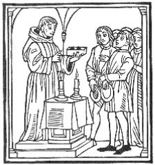
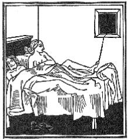
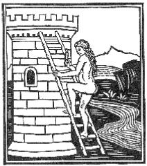
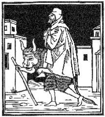
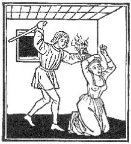
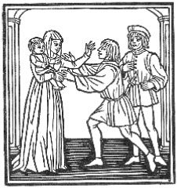
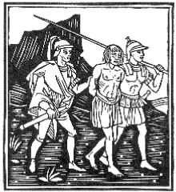
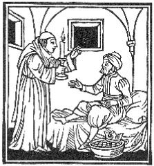

| デカメロン II | |
| ボッカッチォ | |
| (2013) | |
目次
第一話 へたな話
第二話 パン焼きのチスティ
第三話 プルチ夫人の答弁
第四話 料理人キキビオ
第五話 ジョット画伯
第六話 スカルツァの言い分
第七話 フィリッパ夫人の返答
第八話 鏡を見るな
第九話 ガヴァルカンティの警句
第十話 天使ガブリエッロの羽
第一話 幽霊にはおはらい
第二話 樽
第三話 僧リナルドの呪文
第四話 細君にしめだされた男
第五話 妻の懺悔
第六話 イザベッラ夫人の計略
第七話 ベアトリーチェ夫人と下男
第八話 髪を切られたはずの奥さん
第九話 三つの要求
第十話 二人のシエナ人
第一話 借りたお金
第二話 ヴァルルンゴの司祭と女
第三話 カランドリーノと石
第四話 恋人の女中と修院長
第五話 裁判官のズボン
第六話 豚を盗られたカランドリーノ
第七話 ある学者の復讐
第八話 二人の男とその妻たち
第九話 医者のシモーネ先生
第十話 シチリアの女
第一話 厄介ばらい
第二話 あわてた女修院長
第三話 いっぱいくわされたカランドリーノ
第四話 二人のチェッコ
第五話 カランドリーノの失敗
第六話 二人の青年が泊った宿
第七話 タラーノの夢
第八話 チヤッコの復讐
第九話 サラモーネの忠告
第十話 ジャンニ氏の魔法
第一話 ある騎士とスペイン王
第二話 ギーノと修院長の胃病
第三話 ナタンの寛大
第四話 埋葬された愛人
第五話 ディアノーラ夫人をめぐる寛容
第六話 カルロ老王の恋
第七話 女の騎士になったピエトロ王
第八話 ティートの友情
第九話 サラディーノとトレッロ氏
第十話 侯爵夫人
デカメロンの第五日が終り、第六日がはじまる。この日にはエリザが主宰して、人にやりこめられた時、優しい言葉でやり返したり、当意即妙の返答や明晰な判断で、損害や危険や恥辱を免れた人たちのことを話しあう。
中天にかかっていた月は光を失い、昇りはじめた太陽はすでに私たちの住む地球のすみずみまで明るく照らしておりました。その時女王は起きあがって一同を呼び起こさせました。そして、ゆったりした足どりで朝露に濡れた小径を踏みしめながら、あれこれと四方山話をしたり今までのお話のいろいろなよさについて話しあったり、お話の中にでてきたさまざまな場面をもう一度思いだして笑ったりしながら、美しい館を大分遠ざかりました。そのうちに、もう陽も高くなって、暑さも加わってきましたので、どうやら引き返した方がいいように思われました。そこで一同踵をかえすと館へ帰ってまいりました。
帰ってみるとすでに食事の用意もできていて、到るところに香り高い草や美しい花がふりまかれておりました。一同は暑さがあまり激しくならないうちに、女王の命令で食事にいたしました。
さて食事も賑やかに終って、みんなは美しく楽しい歌をいくつか歌ってから、昼寝に行く人もあれば将棋をさす人もあり、遊戯盤を楽しむ人もありました。ディオネーオはラウレッタといっしょに、トロイオロとクリセイダの歌を歌いはじめました。そのうちにもうお話に集まる時間になりましたので、一同はいつものように女王に呼ばれて、泉のほとりに腰をおろしました。すでに女王は最初のお話を命じようと思っていたら、今までになかったようなことが起こりました。というのは、台所で女中や召使いたちが大騒ぎをやっている物音がみんなの耳に聞こえてきたからでした。女王は給仕頭を呼びよせて、誰が大声をあげたのか、騒ぎの原因は何かと訊ねましたところ、リチスカとティンダロが喧嘩をはじめたのだそうですが、二人を鎮めようと思って出むいたところ、ちょうど女王に呼びだされたので、その理由は自分にもわからないと答えました。女王は給仕頭にリチスカとティンダロをすぐにここへ呼んでくるように命じました。二人がやって来ますと、女王は喧嘩の理由を問いただしました。
ティンダロが女王に答えようとしますと、もう中年も過ぎて、幾分ずうずうしくなっている上、どなって昂奮していたリチスカは、厭らしい顔を彼に向けて言いました。
「なにさ、いけすかない男ね。私がいるというのに、自分から先にしゃべろうなんて。私にしゃべらしてよ」
それから女王のほうに向き直って言いました。
「お嬢さま。この男はシコファンテのおかみさんのことを私に聞かせたがっているんでございますよ。私はあのおかみさんとつき合っておりますのに、まるでそんなことがないみたいに、シコファンテがおかみさんと初めて寝た晩、むりやりにそれも血まみれになってやっとやったようなことを言っているんでございますよ。ですから私は、そんなことは嘘だし、それどころか、らくらく入って、中で大喜びしているんだと言っているんでございます。まったくこの男ときましたら、世間の娘たちは、七回のうち六回まで、三年も四年も自分たちの結婚をのばしている親兄弟の言うことをきいて、ぼんやり時を過ごしていると、腹の底から思いこんでいる頓馬な男でございます。本当に、娘たちがそんなにぐずぐずしているんでしたら結構でございますよ。キリストさまに誓って申しますが、もちろん誓う以上は知っていなければなりませんからね。私は近所の娘で生娘のまま嫁に行ったなんて聞いたこともありませんし、結婚した女たちだって、亭主をどれくらいたぶらかしているか、ちゃんと知っているんでございます。それなのにこの馬鹿は、私に女というものを教える気でいるんでございますからね。まるで私が昨日生れた赤ん坊ぐらいに思って」
リチスカがおしゃべりをしている間、婦人たちは大笑いをしておりましたので、歯を抜こうと思えばみんな抜けるほどでありました。ですから女王はゆうに六回は沈黙を命じましたが、いっこう効き目がありませんでした。リチスカはしゃべりたいだけしゃべってしまうまでは、どうしてもやめませんでした。けれども彼女はやっと話をやめましたので、女王はデイオネーオに向かって笑いながら申しました。
「ディオネーオ、これはあなたのご領分ね。ですから私たちはお話が終りましたら、今の問題に最後の判決でもお下しになってください」
するとディオネーオはすぐにこう答えました。
「ご婦人、これ以上聞かなくとも判決は下りますよ。私はリチスカの言うことが正しいと申します。実際、リチスカの言うとおりだと思います。ティンダロは馬鹿ですよ」
リチスカはそれを聞いて笑いだしました。そしてティンダロの方を向いて言いました。
「どうだい、私の言ったとおりだろう。いい加減におしよ。まだ嘴も黄色いくせして、私より物識りだと思っているのかい。本当にわたしゃ無駄に年をとっているんじゃないよ」
女王は顔をしかめて彼女に沈黙を命じ、棒で打たれたくなければ、これ以上おしゃべりしたり騒いだりしないように言って、彼女とティンダロを追いだしました。彼女のおしゃべりを聞いていたら、おそらく一日じゅう何もできなかったでございましょう。二人が出て行きますと女王はフィロメーナにお話をはじめるように命じました。彼女は喜んでこう話しだしました。
第一話 へたな話
ある貴族がオレッタ夫人に向かい、面白いお話をして馬に乗っているような思いをさせてやろうと言う。ところがその話がへただったので、彼は夫人からどうぞおろしてくれと頼まれるという話。
皆さま、晴れわたった空には星こそ空の飾りであり、野辺の花は春の色どりで、若葉繁る木々はひときわ丘をひきたたせるものでございます。これと同じように、気のきいた警句は、素晴らしい作法や立派なお話に一段と光彩をそえるものでございます。その警句と申しますのは簡単なものでございますから、殿方よりも私たち婦人にとっていっそう大切なものでございます。つまり長々とおしゃべりをすることは殿方よりも婦人に禁物ですからね。ところが、これは私たち婦人の才能が足りないせいか、あるいは私たちの時代に神さまが特別な恨みでももっていらっしゃるのか存じませんが、たとえどんな理由がありましても、適当な時に気のきいたことを言ったり、言われたりして、それを正しく理解することができるような婦人は今日ほとんどないといっていいくらいでございましょう。これは私たち婦人全部の恥でございます。もっともこのことについては、すでにパンピネアがじゅうぶんお話しになられましたので、それ以上申しあげるつもりはございません。しかし時宜を得た言葉が、それ自体どんなに素晴らしいものであるかをお聞かせするために、ある貴婦人が、言葉やさしく、一人の騎士を沈黙させたというお話をしてみたいと思います。
皆さまもお目にかかってご存じかと思いますし、あるいは噂に聞いて知っておられることと思いますが、まだそう前のことではありません。私たちの町に、上品で物腰にも気品があり、弁舌もさわやかな一人の婦人がおりました。その方はご立派な方ですからお名前を申しあげないわけにはまいりません。オレッタ夫人と申しまして、ジェーリ・スピーナさまの奥さまでありました。夫人は、たまたま私たちのように田舎に滞在しておられましたが、ある日のこと、自分の家に食事に招いた婦人たちや騎士たちといっしょに、気晴らしにあちこち散歩しておりました。一同は出発したところから目的地まで歩いて行けると思っていましたが、かなり遠かったのでしょう。その中の一人の騎士が、「オレッタさま、よろしかったら、とても面白いお話をして、これから先の長い道のりを馬に乗っているようなお気持にさせてあげましょう」と申しました。
すると夫人は騎士に、「こちらからお願いしたいくらいでございますわ。まあ嬉しいこと」と答えました。
話はまずいし、剣だって腰にふらついているようなその騎士殿は、それを聞くとさっそく話をはじめました。話そのものはたいへん面白いものでしたが、彼は同じ言葉を三、四回、いや六回もくりかえしたり、話を前にもどしてみたり、ときどき「これはまちがいました」と言ったりして、よく名前をまちがえ、相手をとりちがえて呼んだりしましたので、せっかくの話をぶちこわしてしまいました。もっとも話し方がへたで、人物や起こった事件にぴったりしないものであったことは申すまでもありません。ですからオレッタ夫人はそれを聞いて今にも死にそうな病人になったような気持になり、なんども汗を流したり、胸が苦しくなったりしました。夫人は相手の騎士が戸惑って、しまつにおえなくなっていることに気がつき、もう我慢しきれなくなって、やさしく申しました。
「あなたのお馬は歩き方が荒すぎるようですわ。お願いですからおろしてくださいな」
話はまずいが聞き手としてはすぐれていたのでしょう、その騎士は警句の意味がわかりましたので、喜んで冗談にうけ流し、いろいろ別な話をはじめました。ですから最初やりだして先の続かなかったお話は、それきり尻切れとんぼにしてしまいました。
第二話 パン焼きのチスティ
パン焼きのチスティはうまい言葉で、ジェリー・スピーナ氏の無分別な要求を悟らせるという話。
オレッタ夫人のお話は、紳士淑女の方々からひじょうな賞讃を博しました。次いで女王はパンピネアにお話を続けるように命じましたので、バンピネアにさっそく次のように話しはじめました。
皆さま、自然が高貴な魂に卑しい肉体を与えた場合と、ちょうど私たちと同じような一市民チスティや、その他大勢の人たちによく見うけられますように、運命が高貴な魂の宿っている肉体に卑しい職業を与えた場合とでは、自然と運命のうちでどちらが罪ぶかいか、私にはどうも判断がつきかねるのでございます。チスティという人はひじょうに高貴な魂の持ち主でありましたのに、運命は彼をパン焼きにしたのでございます。そこで、自然は何事につけても思慮ぶかいものであり、愚かな人たちは運命を盲目だなどと申しておりますが、その実運命には千もの眼があるということを知りませんでしたら、きっと私は、自然や運命を同じように呪ったことでございましょう。
ところが自然も運命も至って聡明でありますから、人がよくやるようなことをしているようにさえ思えるのでございます。つまりそれは、ちょうど私たち人間が、将来不慮の災害を予測して、家の中の最も卑近な場所に貴重品をしまっておき、いざという時には取り出すようなものでございます。そういう卑近な場所が案外立派な部屋よりも確実にそれを保管しておいてくれるからでございます。これと同じように、この世の支配者ともいえる自然と運命とは、しばしばその最も貴重とするものを、最も卑しいとされている職業の蔭に隠しておいて、いざという時にそれを取り出し、一段と光彩を放とうというのでございます。
ところでパン焼きのチスティが、どのようにしてジェーリ・スピーナ氏の心の眼を開き、この事実を些細なことで証明したか、これを一つほんの短いお話で皆さまにお聞かせいたしたいと思います。
このジェーリ・スピーナ氏につきましては、ただ今その奥さまでいらっしゃるオレッタ夫人のお話がでましたので、ふと思いついたのでございます。
さてお話にうつりますが、法皇ボニファツィオはジェーリ・スピーナ氏を大そう寵遇しておりました。この法皇がある重大な要件のために、何人かの貴族を使節としてフィレンツェに派遣したことがございます。その使節たちはジェーリ氏の家に滞在しておりましたが、氏もその人たちといっしょに法皇の仕事をしておりました。ところでどうしたわけか存じませんが、ジェーリ氏はほとんど毎朝のように、この法皇の使節たちといっしょに、歩いてサンタ・マリア・ウーギの前を通りました。たまたまそこにはパン焼きのチスティが店をかまえておりまして、自分でその商売をやっていたのでございます。運命はこの男に大そう卑しい職業を与えはしましたが、これには運命も彼に大いに好意を見せて、彼はとてもお金持になっておりました。ですから彼はパン焼きをやめて他の商売をやろうなどという気は少しもなく、贅沢三昧に日を送っておりました。
彼はいろいろな品物を持っていましたが、中でも葡萄酒は、フィレンツェやその界隈では最高級といわれるほどの白と赤の葡萄酒をいつも備えておきました。チスティは毎朝のようにジェーリ氏と法皇の使節たちの一行が店先を通るのを見ていまして、ちょうど暑いさかりでもありましたので、彼らに自分の持っている上等の白葡萄酒をご馳走してさし上げたら、どんなに喜ばれるだろうと考えました。でも自分とジェーリ氏の身分を考えてみますと、氏を招待するなんてかえって失礼な気もいたしましたので、ジェーリ氏の方から進んで招待を求めてくるような方法を考えついたのでございます。そこで彼は、毎朝ジェーリ氏と使節たちがやって来そうな時刻になると、いつも真白い上衣を着て、洗いたての前掛をつけ、パン焼きというよりは粉屋といったかっこうで店先に姿を現わし、新鮮な水をたたえた錫張りの容器と、上等な白葡萄酒を入れたボローニャの新しい小さな土器の壷と、銀製かと思われるほど光っているコップを二つ運ばせておきました。そして一行が通りかかる頃合を見て腰を下ろし、一、二度口をすすいでから、いかにもおいしそうに、その葡萄酒を飲みはじめましたので、死人でも飲みたくなるほどでございました。
ジェーリ氏はそれを一朝、二朝と見ておりましたが、三日目の朝、「どうだい、チスティ、おいしいかい？」と申しました。
チスティはすぐに立ちあがって答えました。
「はい旦那さま。ですが、お飲みにならなければ、どんなにおいしいかはおわかりいただけないと存じます」
陽気のかげんか、いつになく疲れていたのか、多分チスティがいかにもおいしそうに飲んでいたせいでもありましょう、無性に喉が乾いていたジェーリ氏は、使節たちの方をふりかえると笑いながら申しました。
「皆さん、この男の葡萄酒を味わってみるのもよろしいじゃございませんか。まさか飲んで後悔するようなものではございますまい」
こう言うと彼は一行の人たちといっしょにチスティのところへやって来ました。チスティはすぐに店から立派な長椅子を持ってこさせて一同に腰をかけるようにすすめました。するともう家来たちはコップをすすごうとしていましたので、申しました。
「お前さんたちは後にさがって、この給仕は私に委せてくださいよ。私のお酌はパンを焼くのといっしょでお手のものなんですからね。とはいってもお前さんたちはおこぼれでもいただけるだろうなんて思わないでもらいたいもんですね」
こう言うと彼は、自分で新しい見事なコップを四つ洗って、上等な葡萄酒の入っている小さな壷を持ってこさせ、ジェーリ氏とその仲間の人たちにせっせとついでまわりました。一同には、その葡萄酒が昔から飲みなれてきたもののうちでも一番上等のように思われました。ですからジェーリ氏はそれを大そう賞めそやし、使節たちがフィレンツェに滞在していた間じゅう、ほとんど毎朝のように彼らといっしょに葡萄酒を飲みにやって来ました。
ところが仕事も早々に片づいて、使節たちはいよいよ出発することになりました。ジェーリ氏は一同のために華やかな酒宴を開いて市の名士たちを招き、チスティのことも招待させましたが、彼はどうしてもその宴席に出ようとはしませんでした。そこでジェーリ氏は家来の一人に、チスティの葡萄酒をびんに一本だけ貰って来て、それを最初の料理を出す時、各人にコップに半分ずつ注いで出すように命じました。家来は、これまで一度もその葡萄酒にありつけなかったものですから、定めしおこっていたのでございましょう、大きなびんを持って行きました。チスティはそれを見て申しました。
「ねえお前さん、ジェーリさまはお前さんを私のところへよこしたんじゃあるまい」
家来は何度もそれにちがいないと言い張りましたが、どうしても色よい返事をもらうことができませんでしたので、ジェーリ氏のところへもどってそのことを報告いたしました。ジェーリ氏は彼に申しました。
「もう一度行って、本当にわしがお前を使いに出したのだと言ってみるがいい。それでもまだ同じような返事をしたら、一体誰のところへ使いをだしたと思うのか、聞いてみろ」
家来はまたもどって行って申しました。「チスティさん、ジェーリさまは確かに私をあなたのところへよこしたんですよ」
チスティは彼に答えました。「いやそんなはずはないよ」
「じゃ」と家来は訊ねました。「誰のところへよこしたというんですか」
チスティは答えました。「アルノ河だろうよ」
家来がそのことをジェーリ氏に伝えますと、たちまち彼の心の眼が開きました。そして家来に申しました。「お前がどんなびんを持って行ったか見せてごらん」
そしてそのびんを見て申しました。「なるほど、チスティの言うとおりだ」
それから家来を叱りつけ、手頃なびんを持たせてやりました。
チスティはそれを見て申しました。「今度こそ旦那さまが、お前さんを私のところへよこされたことがよくわかるよ」
こう言うと喜んでそのびんに葡萄酒をつめてやりました。なおチスティはその日のうちに同じ酒を小さな樽につめて、こっそりジェーリ氏の家に届けさせ、あとから訪ねて行きました。そして彼に会って申しました。
「旦那さま、私が今朝あの大きなびんでびっくりしたとお思いになっては残念でございます。ただ先日来、私が小さなびんでお目にかけましたように、これはご家来衆などに飲ませる葡萄酒でないことをお忘れになったのではないかと、ふとそんな気がいたしたものですから、今朝そのことを旦那さまに思いだしていただきたかったのでございます。もう私もこれ以上あなたさまのために酒の番をしていようとも思いませんので、全部お届けした次第でございます。これからはどうぞお好きなようになさってくださいまし」
ジェーリ氏はチスティの贈物を大そう有難く思い、それ相当のお礼をいたしました。それからというものはチスティを敬い、友人として末長く交際したのでございます。
第三話 プルチ夫人の答弁
ノンナ・デ・プルチ夫人は当意即妙の答弁をして、フィレンツェの司教のみだらな駄洒落に沈黙を命じるという話。
パンピネアがお話を終えますと、チスティの返答と気前のよさとは一同からひじょうな賞讃を博しましたので、女王はラウレッタに次の話をさせようと思いました。ラウレッタはいそいそとこんなふうに話しはじめました。
皆さま、前にはパンピネアが、ただ今はフィロメーナが、私たちの取るに足らない価値や警句の美しさについてまことに当を得たお話をなさいました。ですから、もうその点についてはこれ以上お話をする必要はございませんが、警句についてこれまでお話にあったこと以外に、皆さまに思い出していただきたいことは、そういう警句というものはもとより、聴き手に噛みつくものでなければなりませんが、あくまでも羊が噛みつくようにであって、犬が噛みつくようなものではいけないのでございます。と申しますのは、もし警句が犬のように噛みつけば、それはもう警句ではなく、暴言というものでございましょう。
オレッタ夫人の言葉や、チスティの返答はそういうことをひじょうにうまくやりのけています。実際、警句を返答に用いますと、返答する人が、初めに犬に噛みつかれたようにこっぴどくやられたのでしたら、たとえ犬のように噛みついたといたしましても、あながち非難すべきものではないように思われます。もしそんなことがなかったのでしたら、それこそ非難されて然るべきでございましょう。ですから、警句を用いるのでしたら、どのように、いつ、誰に、また同様にどこで用いたらよろしいか注意しなければいけません。以前に、私たちの町の大僧正はこうしたことをあまり注意しなかったものですから、自分が口にしたと同じような辛辣な言葉を浴びせかけられました。そのことを私はこれから短いお話の中で皆さまに申しあげたいと存じます。
偉い賢明な高位聖職者のアントニオ・ドルソ氏がフィレンツェの司教であった時のことでございますが、ルベルト王の元帥でデーゴ・デッラ・ラッタ氏というカタローニァの貴族がフィレンツェにまいりました。この人はなかなか容姿も美しく、また相当な漁色家でもございまして、フィレンツェの婦人の中で特にただ今申しあげた司教の弟の姪に当たる、とても美しい婦人を気に入りました。ところで、この婦人の夫が名門の出でありますのに、とても貪欲で、さもしい根性の男であると聞いておりましたので、自分に一夜その奥さんと寝させてくれれば、金貨五百フィオリーノ与えようと話がまとまりました。そこで、当時使われていたポポリーノ銀貨を金鍍金させ、奥さんは厭がったのですが、いっしょに寝て、その金を彼女の夫に与えました。やがてそのことが世間に知れわたり、そのさもしい根性の男は損をしたばかりでなく物笑いになりました。司教は賢明な方だけに、そんなことは何も知らないような振りをしておりました。
それで、司教と元帥とは互いにしょっちゅう行き来をしておりましたが、聖ジョヴァンニの日のこと、二人が並んで馬を走らせて、競馬の行なわれている通りを行く女たちを見ておりますと、司教は一人の若い婦人に眼をとめました。この婦人は現在蔓延しているペストで亡くなりましたが、アレッシオ・リヌッチ氏の従妹で、名をノンナ・デ・プルチ夫人と申しまして、皆さまもきっとご存じのことと思います。当時、彼女はまだ水々しく、うら若い美人で、話し上手のうえ、大らかな心の持ち主でして、聖ピエトロ門の近くの夫のところへ嫁いで間もない頃でございました。司教は元帥に彼女を指さしてみせました。やがて婦人のそばに近づきますと元帥の肩に手をかけてこう申しました。
「ノンナさん。この方をどう思いますか。征服できるとお思いですか」
この言葉はノンナにとっては幾らか自分の貞潔を傷つけるように思われましたし、周囲には大勢の人がおりましたので、それを聞いた人たちに、自分をいかがわしい女のように思わせるに違いないと思いました。ですが、彼女はこの汚名をすすごうとはいたしませんで、しっぺ返しをしてやろうと思い、す早くこう答えました。
「司教さま。多分この方は私を征服なさらないでしょう。私は沢山、本物のお金が欲しいのでございますもの」
この言葉を聞いて元帥も司教も、同じように胸を刺される思いがいたしました。一人は司教の弟の姪に不貞な行ないをしたからであり、もう一人は自分の弟の姪に辱しめを受けた張本人だったからでございます。二人は互いに顔を見合わせることもなく、恥かしそうに黙りこくったまま立ち去って行きました。そしてその日はもう何も口をききませんでした。
こんなわけで、若い夫人は辛辣な言葉で噛みつかれたので、その後警句を用いて他人に噛みついても何の非難もうけませんでした。
第四話 料理人キキビオ
クルラード・ジャンフィリアッツィの料理人キキビオは、難をのがれるために当意即妙の言葉を返して、主人クルラードの怒りを笑いに転じ、クルラードに脅かされていた禍を免れるという話。
ラウレッタのお話が終りますと、一同はノンナのことを大いに褒めそやしました。すると女王はネイフィレに向かってお話を続けるように命じました。
皆さま、とっさの知恵は、事と次第によっては、しばしば即妙で有効なうまい言葉を、話す人に与えるものでございますが、運命はまた時によって臆病者を助けるものでもございまして、平常なら思いも及ばないような言葉を口にさせるものでございます。こうした一例を私のお話で皆さまにおめにかけたいと思います。
クルラード・ジャンフィリアッツィのことはどなたもお聞きになったり、ご覧になっていらっしゃるでしょうが、私たちの町ではかねてから気前のいい立派な上流市民でございます。彼の偉大な功績についてはただ今はふれないでおきますが、ともかく彼は騎士の生活をしていて、いつも狩猟に興じておりました。彼はある日、ペレートラの付近で鷹を使って一羽の鶴を殺しましたが、見ると、太っていて若い獲物でしたのでそれをヴェネツィア生まれのキキビオという自分の腕ききの料理人に渡して、夕食に焼肉にしてうまく料理するよういいつけました。キキビオは見るからに軽率でしたが、鶴の羽をむしりとり、串にさして入念に焼きはじめました。
さて肉もほとんど焼けあがって、とてもいい匂いがしてきた時、キキビオがひどく熱をあげていたブルネッタという近所の女がふとお勝手のところへやってまいりました。彼女は鶴の匂いをかいで、それが眼に入ったものですから、甘ったれ声で腿を片方くれないかとキキビオにねだりました。キキビオは歌でこう返事しました。
「もらえやしません、ブルネッタの奥方さま。私からはもらえません」
それを聞くと、ブルネッタは少し腹をたてて言いました。
「じゃ言っておくがね。くれなきゃくれないでいいよ。お前さんだって好きなものをこれからは私からはもらえないんだからさ、きっとだよ」
要するに、その時の言葉のやりとりは大へんなものでした。とうとうキキビオも自分の女を怒らせたくありませんでしたので、鶴の片腿をちぎりとるとそれを彼女にくれてしまいました。
やがてクルラードと数人のお客の前に片腿のない鶴がだされましたので、クルラードはびっくりして、キキビオを呼びつけ、鶴のもう一方の腿はどうしたのだと訊ねました。嘘つきのヴェネツィア人は即座に主人に向かってこう答えました。
「旦那さま、鶴は腿が一つに脚が一本だけしかございません」
するとクルラードは怒ってどなりつけました。
「なんだと、鶴には腿が一つで脚が一本しかないって。わしがはじめて鶴を見るとでも言うのか」
キキビオは言葉を続けて言いました。「旦那さま、ただ今申しあげたとおりでございます。およろしかったら生きた奴をおめにかけましょう」
クルラードはそばにいるお客の手前、それ以上問答を続けたくありませんでしたので、改めてこう申しました。
「そうか。お前はわしが見たことも聞いたこともないような生きた鶴を見せてくれると言うんだな。よし、それなら明日の朝さっそくそれを見たいものだ。そうしたらわしも満足がゆくだろう。だがキリストさまの御身に誓って言うが、もしお前の言い分と違っていたら、お前が生きている間わしの名前を覚えていられるような方法で痛いめにあわせてやるからな」
さてその晩はそれで話が終りましたが、翌朝になって、日が上るとクルラードは怒りがおさまらないで眠れなかったものですから、まだむしゃくしゃしていて、起きあがり、馬をひけと命じました。そしてキキビオを駄馬に乗せ、岸辺には朝早くならいつも鶴が見られるという大きな河の方へ連れて行きながら申しました。
「お前か、わしか、だれが昨夜嘘をついたかじきにわかるからな」
キキビオはクルラードの怒りがまだ続いているし、嘘のあかしは立てなければならないとは思っても、どうしてよいやら見当もつきませんので、言うに言われぬ恐怖にふるえながらクルラードのあとから馬を進めておりました。もしできることなら、このまま逃げてしまいたいと思いました。ですが、それもできませんので、前を見たり後ろを見たり、わきを見たりしておりました。そして目につくものはなんでも二本足で立っている鶴ではないかと思いました。
しかし、二人はもう河の近くに来ておりましたが、彼は誰よりも先に河岸にいた十数羽の鶴に目をつけました。それはどれもこれも眠る時によくそうしているように、片足で立っておりました。
そこで彼はさっそく、クルラードに指さしてみせて、こう言いました。
「旦那さま、おわかりになったでございましょう。昨夜私が鶴は腿が一つで脚が一本しかないと申しあげましたのは、あそこにいる鶴をご覧になれば本当だということでございます」
クルラードは鶴を見てこう申しました。
「まあ待っていろ。二本脚だということをお前に見せてやるから」
こう言って少しばかり鶴に近づいて行って、「ほーお、ほーお」と呼びました。その声で鶴はもう片方の脚をだして二、三歩あるいたかと思うと、飛び立ちました。そこでクルラードはキキビオのほうを向いて申しました。
「どうだ、こいつめ、これでも二本あると思わないか」
キキビオはすっかり肝をつぶして、何を言っているのか自分でも見当がつかずに答えました。
「本当でこざいます旦那さま、でも旦那さまは昨夜の鶴にはほーお、ほーおと大声でおっしゃいませんでした。もしそうおっしゃってくださいましたら、きっとあの鶴もこれと同じようにもう一つの腿と脚をだしたことでございましょうに」
クルラードはこの返答が大そう気に入りましたので、今までの怒りもすっかり上機嫌と笑いに変ってしまいまして、「キキビオ、全くお前の言うとおりだ。そうすりゃよかったよ」と申しました。こうしてキキビオは当意即妙の面白い返答で禍を免れ、主人との間もうまくおさまったのでございます。
第五話 ジョット画伯
フォレーゼ・ダ・ラバッタ氏とジョット画伯はムジェッロからの帰り途、互いに相手のみすぼらしい風采を冷やかしながらやり合うという話。
ネイフィレがお話を終えて黙りますと、婦人たちはキキビオの返答に大喜びいたしました。ついでパンフィロは女王のお望みで話しはじめました。
皆さま、先ほどパンピネアのお話にございましたとおり、運命は時に、価値の大きな宝を、賎しい職にたずさわっている人たちの中にかくしておりますように、自然もまた素晴らしい才能を、容貌の非常に醜い人たちの中に宿しているものでございます。このことは私がこれから簡単にお話ししようと思っております私たちの二人の市民を見ても、実によく現われております。つまりその一人はフォレーゼ・ダ・ラバッタ氏と申しまして、体は小さくて不恰好であり、顔は平べったくてつぶれているときておりますから、顔の醜いので有名なバロンチ家の人たちのなかで一番醜い者でも、彼と比べたらまだましなくらいでございました。けれども彼は法律にかけてはなかなか造詣が深かったものですから、大勢の優れた人たちから民法の大家と評判されておりました。
もう一人はジョットという名前で、非常に優れた天才をもっておりましたので、万物の生みの親で操作者でもある自然が、天の断え間ない運行によって創りだすもので、彼が尖筆やペンや絵筆を使って描きだし、それも単に似せて描くのではありませんで、実物かと思わせるように描かないものは一つもございませんでした。ですから彼が描いたものを見ますと、人間の視覚がおかしくなって本物だと思いこんでしまうことがしょっちゅうあったくらいでございます。
彼は見識ある人たちの知恵を喜ばせるよりも、無知な人々の眼を娯しませるために絵を描いてきた画家たちによって何世紀ものあいだ埋もれていた芸術に、再び光をもたらしたのでございますから、当然フィレンツェの名誉ある光明の一つと言うことができます。しかもジョットは大家でありますのに、いつも大家と呼ばれることを辞退して、非常に謙遜してその名誉を得たのですから尚のことそう言えるのでございます。彼より腕の劣った連中や彼の弟子たちはこの大家という肩書を熱望して、貪るように奪いとったものですから、ますます彼に光彩を見せたのでございます。けれども、彼の芸術は偉大なものではありましたが、だからといって、彼は体格や容貌からいっても決してフォレーゼ氏より美しいものではありませんでした。でも、まあもとのお話にもどってお話しいたしましょう。
フォレーゼ氏とジョットは、ムジェッロに土地を持っておりました。フォレーゼ氏はちょうど裁判所が夏期休暇になりましたので、自分の土地を見に行き、たまたま賃貸しの貧弱な駄馬に乗って帰る途中、これも同じように自分の土地を見てフィレンツェに帰る、今申しあげたジョットに出会ったのでございます。ジョットは馬にしても着物にしても決してフォレーゼより立派ではありませんでした。二人は年をとっておりましたので、ゆっくりした足どりで並んで馬を進めておりました。ところが夏にはよくありがちですが、にわか雨にあってしまいました。二人はどちらにとっても友だちで知り合いになっている百姓家へ、急いで逃げこみました。しかし、しばらく雨宿りをしていましたが、雨はいっこうに止みそうもありませんでしたし、二人はその日のうちにフィレンツェへ帰りたいと思っておりましたので、百姓からロマーニャ地方で用いられているような古い外套を二着と、古ぼけてすっかりすりきれた帽子を二つ借りてでかけました。他にいいのがなかったからでございます。
さて、こうして二人がしばらく馬を進めて行くうちに、互いに相手を見ると、二人とも雨でびしょ濡れになっておりますし、駄馬が足でやたらにとばす《はね》で、泥だらけになっておりました。こうしたことは誰にも尊敬の心など起こさせないものでございます。そのうちに天気も幾分晴れてきましたので、長いあいだ黙りこんで馬を進めてきた二人は、話をはじめました。フォレーゼ氏は馬を進めながら大変話し上手なジョットの話に耳を傾けておりましたが、彼を頭の先から足の爪先まで体じゅうを眺めだし、なにからなにまで汚れきって、みっともないのを見て、自分のなりふりは少しも考えないで笑いだし、こう申しました。
「ジョット君、今まで一度も君を見たことのない人がこっちへやって来たとしたら、果たして君を世界一の画家だと思ってくれるだろうかね」
するとジョットはすかさずこう答えました。
「そりゃあ、その人があんたを見て、これは《いろは》ぐらいは知っているなと思うようなら、そう思うだろうね」
フォレーゼ氏はこれを聞いて、自分の言い方の間違っていることを悟り、売り言葉に買い言葉ということを知ったのでございます。
第六話 スカルツァの言い分
スカルツァは青年たちに、バロンチ家の人たちがマレンマはおろか世界じゅうでも第一級の貴族であるということを証明して、夕食を賭け、それに勝つという話。
婦人たちがジョットの当意即妙な返答をまだ笑いあっておりますと、女王はフィアンメッタに、続いてお話をするように命じました。フィアンメッタは次のように話しはじめました。
皆さま、皆さまにはバロンチ家の人たちのことについてはおそらくパンフィロほどはご存じないと思いますが、ただ今パンフィロのお話でその人たちのことがでてきましたので、私も一つのお話を思い出しました。これはバロンチ家の人たちがいかに高貴な家柄の人たちであるかというお話でございますが、与えられた題からもそれておりませんので、一つお話し申しあげたいと存じます。
そう昔のことでもございませんが、私たちの都にミケーレ・スカルツァという青年が住んでおりました。この青年は世にも稀な明るい陽気な人物で、いつも耳新しい愉快なお話を持ち合わせておりました。ですからフィレンツェの青年たちは、何か会合でもやるような時には、いつも彼の出席するのを喜んでおりました。ところである日、彼が数人の人たちとモント・ウーギにまいりました時、一同の間でこんな論議がもちあがりました。つまりフィレンツェじゅうで誰が第一級の貴族で一番の旧家だろうということでございました。ある人はウベルティ家だと言い、ある人はランベルティ家だと言って、互いに譲ろうとはいたしませんで、思い思い自分のひいき筋をあげ合っておりました。
スカルツァはみんなの言い分を聞いておりましたが、笑いだしてこう言いました。
「よせ、よせ、何を言っているんだ、馬鹿だな、君たちは自分の言っていることがわかっちゃいないんだよ。フィレンツェはおろか全世界、いやマレンマじゅうで第一級の貴族で旧家といえばバロンチ家にきまっているじゃないか。こんなことは学者という学者や僕と同じようにバロンチ家を知っている者はみんなそう思っているよ。君たちが他の人のことを勘違いしても困るから、言っておくが、それは君たちの隣人であるサンタ・マリア大寺院のバロンチ家のことだよ」
青年たちは、彼が他のことを言うに違いないと期待していましたので、これを聞くと、みんなで彼を笑いながら申しました。
「冗談言っちゃいけないよ。それじゃまるで僕たちが君と同じように、バロンチ家のことを知らないみたいじゃないか」
スカルツァは申しました。「神さまに誓ってもいいが、冗談など言っているもんか。本当だよ。じゃ誰か僕と夕食の賭をして、それに勝った者が自分の好きな仲間を六人選んで、いっしょに夕食をご馳走になるということにしようじゃないか。僕は喜んで賭けるよ。いやそれ以上のことをしてもいいよ。僕は誰でもいい君たちの好きな人の審判に服従することにしようじゃないか」
するとその中の一人、ネーリ・マンニーニという男が申しました。
「それじゃ僕がお相手をしてその夕食をものにしてみよう」
そこで二人は、その家のピエロ・ディフィオレンティーノに審判になってもらおうと相談をきめ、彼のところへ行って、一部始終を話しました。他の人たちもスカルツァが負けたら、一つからかってやろうと思って、みんなで二人のあとについて来ました。
ピエロという人はもともと利口な青年でしたので、先ずネーリの言い分を聞き、それからスカルツァの方を向いて申しました。
「ところで君は、その主張をどういうふうに証明することができるんだね」
スカルツァが申しました。
「どういうふうにだって、それは君ばかりじゃない、今僕の言うことを否定している人たちでも、僕が本当のことを言っていると肯くような論法で、それを証明してみせるよ。諸君も知っているように、人間という者は古ければ古いほど貴いとされているだろう。これはみんなの間で、今しがた話し合ったことだ。ところでバロンチ家が他の誰よりも古いとすると、つまり一番貴いことにもなるわけだろう。そこで、どうして彼らが一番古いかということを証明しさえすれば、もちろんこの論議は僕の勝ちということになるんだろうね。まず知ってもらいたいんだが、バロンチ家というのは神さまがはじめて絵を習いはじめた頃、お創りになったものだし、他は神さまがじゅうぶん絵を描くことがおできになってから創られたものなんだよ。そこでこの点で僕の言うことが正しいかどうか、それはバロンチ家の人たちと他の人たちとを考えてみればわかるだろう。他の人たちはみんな目鼻だちもよく整い、均整もとれた体をしているのに、バロンチ家の人たちときたら、ある者はとてつもなく長っぽそい顔をしているし、ある者はどうにもならないくらい大きな顔をしている。またとても長い鼻をしている人もいるかと思うと、短い鼻の人もいる。中には顎が突き出ていてしゃくれ上ってるし、顎の骨は驢馬の骨みたいだろう。また一方の眼が大きくて一方が小さいとか、片方が下っている人もいる。それは、ちょうど子供たちが絵を習いはじめた頃よく描く顔だよ。これを見ても、さきほど僕が言ったように、神さまが絵を習いはじめた頃、バロンチ家の人たちをお創りになったということがよく現われていると思うんだ。だから彼らは他の人たちより古いし、一番貴いということになるんだよ」
これについては審判役のピエロはじめ夕食を賭けたネーリやその他の人たちもみな思いだし、スカルツァの愉快な言い分を聞いて、どっと笑いだしてスカルツァの言うとおりだ、賭けに勝って夕食をせしめるのは彼だ、確かにバロンチ家の人たちはフィレンツェどころか世界じゅうで、いやマレンマじゅうで一番古く第一級の貴族であると断言いたしました。
こういうわけでございますから、さきほどパンフィロがフォレーゼ氏の顔の醜いことをおっしゃるのに、バロンチ家の一人を引き合いに出して、このほうが美男であると言われたのはまさしくそのとおりでございます。
第七話 フィリッパ夫人の返答
フィリッパ夫人は恋人といっしょにいるところを夫に見つけられ、法廷に呼び出されるが、即座に明快な返答をして刑を免れたうえ、法律を改正させるという話。
すでにフィアンメッタのお話も終りましたが、一同はバロンチ家の人たちが他の人たちよりも高貴であることにスカルツァが用いた奇抜な話題をまだ笑っておりました。その時女王はフィロストラートにお話をするように命令しました。すると彼はこんなふうに話し始めました。
皆さん、お話の上手なことはどんな場合にも結構なことですが、それが必要な時に、上手に話すことができるということは、また一段と素晴らしいことだと思います。私がこれからお話し申しあげようとしている貴婦人は、それを実に見事にやってのけることができまして、聴く人を陽気にしたり笑わせたりするだけでなく、これから皆さんがお聞きになっておわかりになると思いますが、恥ずかしい死の罠から免れることができたのです。
昔プラートの町に、残酷でもあるし、実にひどい法律が実際に行なわれておりました。この法律は、誰か情夫と姦通しているところを夫に見つけられた女は、金のために相手かまわず他の男といっしょにいるところを見つけられた女と同じように、何の区別もなく、火あぶりの刑に処するというものでありました。
ところでこの法律が行なわれていた頃ですが、フィリッパ夫人という美人でしかも人並はずれて多情な貴婦人が、ある晩自分の寝室で、その町の貴族で若い美男の、命よりも愛していたラッザリーノ・デ・グアッツァリオトーリの腕に抱かれているところを、夫のリナルド・デプリエージに見つけられてしまいました。それを見てリナルドはかんかんに怒って、もう少しのところで二人にとびかかり、殺そうという気になったのをぐっと我慢しました。実際自分の命が心配でさえなかったら、腹立ちまぎれに、そうしてしまったことでしょう。まあとにかく、そのことだけは思いとどまりましたが、自分が手を下すことは許されておりませんので、自分の妻を殺すことを、プラートの法律の力に訴えてやろうという気持を抑えることはできませんでした。そこで妻の過失を証明するのにとても都合のよい証拠がありましたので、夜が明けると、別に誰とも相談しないで、妻を訴え、法廷に召喚してもらいました。
夫人は真に恋をしている女たちが一般にそうであるように、勇敢な気性をもっていましたので、多くの友人や親戚の人たちから忠告されましたが、卑怯にも逃亡して、召喚に応じないため、亡命の憂目にあって生きのび、昨夜その腕に抱かれたような素晴らしい恋人に自分が値しないことを示すよりは、いっそのこと出頭して事実を白状し、潔く死にたいと、すっかり決心しておりました。そして非常に多くの男女の人たちに付き添われ、皆から事実を否定するように励まされて、長官の前にまいりますと、顔色一つ変えないでしっかりした口調で、一体自分にどういうことをお訊ねになりたいのか聞きました。長官は夫人をつくづく眺め、彼女が並々ならぬ美人であり、物腰もたいへん素晴らしく、その言葉つきからも、立派な心の持ち主であることを知りまして、夫人に同情の気持がわいて、もしも自分の名誉を傷つけまいとしたら、夫人を死刑にしなければならないようなことを、この夫人は白状するのではないかと心配になりました。
しかし訴えられたことについて彼女を訊問しないわけにもいきませんので、夫人に向かってこう言いました。
「奥さん、ご覧のようにここにあなたのご主人のリナルドがおられ、あなたが他の男と不義をしているところを見つけたと申し立て、当地の法律によって、あなたを罰し、死罪にしてもらいたいと要求しておられます。しかしあなたがその事実を白状されなければ、そうすることはできません。ですからお答えになることに充分ご注意いただきたいのです。あなたのご主人が訴えられたことは果たして事実かどうか申してごらんなさい」
夫人はすこしも驚かず、とても朗かな声で、こう答えました。
「長官さま、リナルドは私の夫でございまして、昨夜私がラッザリーノの腕に抱かれているところを見つけたのは事実でございます。私はラッザリーノに寄せている偽りのない真心からの愛情に燃えて、その腕に何度も抱かれてまいりましたが、それも決して否定しようとは思いません。しかしあなたさまはきっとご存じのことと思いますが、法律というものはすべての人に平等なものでございまして、それに触れる人たちの同意のもとに作られなければならないものでございます。ところがこの法律はそのようにはなっておりません。と申しますのは、この法律はただ女をひどく拘束しているからでございます。女というものは男の方たちよりもはるかに大勢の人たちを満足させることができるものでございます。そればかりではございません。この法律ができました時は、女は誰一人として同意しなかったばかりでなく、一人として同意を求められた者もございませんでした。ですから、これは立派に悪法と申して差しつかえないと思います。それでもしあなたさまが、私の肉体やあなたさまの良心を害っても、この法律の執行者になりたいとお考えでございましたら、それはご自由でございます。しかし、何らかの判決をお下しになる前に、お願いでございますから、私にほんの少しばかりのご慈悲を、つまり私が夫の好む時は何時いかなる時でも、何度でも、いやだと言って、私の身体をなにもかも委せなかったことがありますかどうか、ひとつ夫にお訊ねになって下さいませ」
これに対してリナルドは、長官の訊ねるのを待つまでもなく、即座に、もちろん妻は、自分が要求する度ごとに、自分からあらゆる快楽を満たしてくれたと答えました。
「ですから」と夫人はすかさず続けました。「長官さま、あなたさまにお伺い申しあげますが、もしあの人がいつも私から自分に必要であって好きなものを手に入れたといたしましたら、私はあの人のもてあましているものを一体どうしたらよろしかったのでございましょう、いや、どうしたらよろしいのでございましょう。犬にでもくれてやらなければならないのでございましょうか。私を自分の命よりも愛してくれる一人の貴族にそれを役立てた方が、それを無駄に失くしたり、だいなしにしてしまうより、はるかによろしいのではないでしょうか」
彼女はあまりにも有名な夫人でしたので、その訊問を聞きに、そこにはほとんどプラートじゅうの人たちが集まって来ておりました。みんなはこうした愉快な返答を聞くと、たちまちどっと大笑いをいたしましたが、異口同音に、夫人の言うのはもっともだ、よくぞ言ったと叫びました。そしてそこを立ち去る前に、一同に長官の勧めもあって、その残酷な法律を改正し、金のために自分の夫に対して過ちを犯した女だけにこれを適用するということにいたしました。
こんなわけでリナルドは、こうした馬鹿げた計画に狼狽して、法廷を出て行きました。夫人は火刑から生き返ったように、愉快な晴々した気持で、意気揚々自分の家へ帰って行きました。
第八話 鏡を見るな
フレスコが姪に向かって、もしお前が不快な人を見るのがいやだったら、鏡を見るなと言った話。
フィロストラートが話したお話は、はじめのうちは聞いている婦人たちの心に幾分恥ずかしい思いをさせ、その証拠に婦人たちは慎ましやかに顔を紅らめておりました。やがて一同は互いに顔を見合わせて、吹きだしそうになるのをやっとこらえておりましたが、微笑を浮かべてお話に聞き入りました。でも、フィロストラートのお話が終りますと、女王はエミリアの方を向いて、次のお話を続けるように命令しました。エミリアはまるで眠りからさめたように、深く息をついて、話しはじめました。
皆さま、私はしばらくの間すっかり他のことを考えておりまして、だいぶん心が上の空になっておりましたので、とても短いお話をして、女王のお言葉に従い、責を果たしたいと思います。もし心がここにございましたら、そんな短いお話にしないのでございます。私は皆さまにある娘の愚かな誤りについてお話しいたしますが、もし娘に警句を理解する頭がありましたら、彼女の叔父から愉快な警句で、その誤りは直されていたはずなのでございます。
さて、フレスコ・ダ・チェラティコという人にチェスカという愛称で呼ばれていた一人の姪がありました。この娘は姿も顔も綺麗でしたが、よく見かけるような天使とはおよそ縁の遠いものでございました。それでも当の本人はお高くとまっておりまして、自分のことは棚にあげて、男でも女でも眼につくものはなんでも悪口を言うのがくせになっておりました。彼女は誰よりも不愉快で、気むずかしく、怒りっぽかったものですから何をしても彼女の気に入るようにはできませんでした。それだけではございません、とても高慢ちきなところがあって、たとえフランス王家の出でありましてもこれほど高慢ではなかったことでしょう。彼女は道を歩いても、きたないごみの匂いでもかぐように激しい不快を感じて、誰に会っても、その人からまるで臭気でも発散しているように顔をしかめるだけでございました。
さて、この他にもずいぶん不愉快でいやらしい態度がありましたが、ここではふれないことにいたしまして、ある日のこと、彼女が家へ帰ってみますと、叔父のフレスコが来ておりましたので、彼女はしかめっ面をして叔父のそばに腰をおろすと、溜息ばかりついておりました。するとフレスコが彼女に訊ねてこう申しました。
「チェスカ、どうしたんだい。今日はお祭だというのに、こんなに早く家へ帰ってきて」
彼女は《きざ》な《しな》を作ってこう答えました。
「ええ、早く帰ってまいりましたわ。だって今日くらいこの町に大ぜいの不愉快でいやな人たちばかりいたことは今までにないと思うんですもの。道を通る人といえば、どれもこれも不運にとりつかれたように気にくわない人たちばかりなのです。ですから世の中に私くらい不愉快な人を見るのをいやがっている者はないと思っております。そんな人たちを見たくありませんから、こんなに早く帰ってまいりましたの」
フレスコは姪のいや味のある態度をとても不愉快に思いましたので、彼女にこう申しました。
「ねえお前、お前が言うようにそんなに不愉快な人たちがいやで、楽しい生活を送りたいのなら、もうこれからは鏡を見ないことだね」
けれども葦よりも中味が空っぽなくせに、賢いということにかけてはソロモン王にもひけをとらないつもりの彼女は、フレスコの真実を言った警句を羊の頭ほどにしか理解しませんでした。むしろ他の女と同じように鏡を見るつもりだと申しました。こうして彼女は無知の域にとどまったまま、今なおその調子でいるのでございます。
第九話 ガヴァルカンティの警句
グイド・カヴァルカンティはいきなり自分を捕えたあるフィレンツェの騎士たちに、警句でいんぎんに悪口を言うという話。
女王は、エミリアのお話が終ると、あとは最後にお話をする特権を持っている人を除けば、自分だけしか残っていないことを知って、次のように話しはじめました。
皆さま、今日は私がどれか一つお話ししてみようと考えていたことを二つ以上も皆さまに話されてしまいました。でも、もう一つだけ手持ちのお話が残っております。そのお話の結びには、おそらくこれまで一度も話されたことがないような、いかにも意味深長な警句が含まれているのでございます。
さてご承知いただきたいことは、昔私たちの都にとてもうるわしい賞賛に値するような風習がありましたが、この都がだんだん裕福になるにつれて、貪欲な心がはびこり、せっかくのいい風習をすっかり追い払ってしまって、今では何一つ残っていないということでございます。そうした風習の一つに、フィレンツェのいろいろな場所で、付近の貴族たちが集まり、ある数がまとまると団体を作って、気楽にお金を出せるような人をなるべく仲間に入れるというのがございました。そして今日は誰、明日は誰というふうに順番をきめ、各自が自分の番に当たった日には全員を宴会に招待するというのでございました。その宴会には、フィレンツェを訪問中の外国の貴族たちや市民たちをも度々招きました。また少なくとも年に一度は、特別な祝祭日をえらんで、一同そろって同じような服装をし、馬に乗って都をねりまわしました。時には槍試合の野試合などを行ないましたが、これは特に大祭日だとか、戦に勝ったとかその他の吉報が都にもたらされた時に行なわれたものでございます。
このような団体の中にベット・ブルネッレスキ氏の所属している団体がありましたが、ベット氏はじめ仲間の人たちは、カヴァルカンテ・デ・カヴァルカンティ氏の息子グイドをその団体に引き入れようと一生懸命でございました。それには理由のないわけではありませんでした。と申しますのは、彼が世界でも指折りの理論家でひじょうに優れた自然哲学者でもあったのです。もっともその団体はこんなことをたいして問題にはしておりませんでしたが。
それはさておきまして、彼はひじょうに気品もあり、立居振舞も洗練されておりましたし、たいそう弁舌の爽やかな人でもございました。また自分がやろうと思って、それが貴族にふさわしいことでしたらどんなことでも人一倍立派にやりとげることができました。そればかりではございません。とてもお金持でしたので、この人ならそれだけの資格があると思えば、惜しみなくその人を歓待することができたからでございます。しかしベット氏はどうしても彼を引き人れることができませんでした。それというのも、グイドが思索に耽って、時々世事にうとくなるからだと、彼をはじめ仲間の人たちもそう思い込みました。それにグイドは幾分エピキュリアン的な思想の持ち主でしたので、世間の人たちも、彼の思索というのは、神が存在しないことを発見することができるかを研究するだけなのだと取り沙汰いたしておりました。
ところである日のことでございます。グイドはオルト・サン・ミケーレを出ると、いつもの散歩道であるディマーリ通りを通って聖ジョヴァンニまでやってまいりました。聖ジョヴァンニの周辺には、今日聖レパラータにあるような大理石の大きなお墓が沢山ございましたが、彼はそこにある聖ジョヴァンニの門の間に立っておりました。ベット氏が仲間の人たちと馬に乗って聖レパラータの広場にやって来ますと、グイドがお墓のところにいるものですからこう申しました。
「ひとつ行って、からかってやろう」
そこで馬に拍車をかけると、楽しい襲撃でもするような様子で、彼が少しも気がつかないでいるうちに、すぐそばまで近づいて行ってこう話しかけました。
「グイド君、君は私たちの仲間に入るのを断わっているようだね。しかしだよ君、神が存在しないということを発見したとき、君はいったい何をやったと言えるんだね」
グイドはみんなに取り囲まれているのを見て、とっさに申しました。
「皆さん、あなた方はご自分の家では好きなことをおっしゃることができますよ」
こう言って大きな墓に手をかけると、とても身軽な人でしたので、ぱっと向う側にひと跳びしてみんなから離れ、立ち去ってしまいました。
みんなはそこに置き去りにされたまま、互いに顔を見合わせておりましたが、やがて、彼は頭がおかしいとか、彼の答えたことは全然意味のないことだ、こんな所で自分たちは何ができるというんだ、他の一般市民よりもすることがないじゃないか、グイドだって自分たちと同じことだなどと言いだしました。するとベット氏はみんなの方に向き直って申しました。
「彼の言っていることがわからないなら、おかしいのは君たちだよ。彼はいんぎんに言葉少なく最もひどい悪口を私たちに浴びせかけたんだ。だってそうだろう、よく見てごらん。ここにあるお墓は死人の家なんだからね。そうだろう、その中には死人が入って住んでいるんだ。それを彼は私たちの家だと言って、私たちをはじめ他の愚かな者や学問のない者は、彼ら学者たちと較べるとまさに死人にも劣るということを私たちに言ったんだよ。だから私たちは、ここにいると、自分たちの家にいることになるんだ」
そこでみんなは、それぞれグイドの言わんとしたことを理解して恥入りました。もう誰も彼をからかうようなことはいたしませんでした。そしてそれからは、ベット氏を頭の切れる利口な騎士だと認めたのでございます。
第十話 天使ガブリエッロの羽
修士チポッラはある百姓たちに天使ガブリエッロの羽を見せる約束をする。ところが羽を入れておいたところに炭があったものだから、それは聖ロレンツォを焼いた炭だと言う話。
 一団の人たちがそれぞれお話を終えましたので、ディオネーオはいよいよ自分が話をしなければならない番だと思い、女王の命令を待つまでもなく、グイドの適切な警句を褒めそやしている人たちに沈黙を命じ、次のように話しはじめました。
皆さん、私は自分で一番気に入っていることをお話しできる特権をもっているのでありますが、今日はあなた方がみな、大へん見事にお話しになったその題目から離れないことにいたしたいと思います。が、私も一つ皆さんがなさったように、聖アントニオ修士団の一人が、二人の若者に侮辱を加えられようとしていたのを、とっさの策を講じて、どんなに巧みにそれを遁れたかをお話ししたいと思います。まだ陽も高いようですから、私がこのお話を充分ことこまかにお話しするために、多少内容をひろげても、皆さんのお気にさわることはないでしょう。
たぶん皆さんもお聞き及びのことと思いますが、チェルタルドという町は、私たちの町の郊外にあるヴァル・デ・エルサの小都市であります。小さな町ではありますが、昔は貴族や金持が住んでいたところでした。この町は貰いのいいところだと思っていましたので、聖アントニオ修士団の一人でチポッラという僧侶が、長いあいだ年に一度はこの町に立ちよって、町の馬鹿者たちから寄せられる布施を集めに行くことにしておりました。この土地は、全トスカーナを通じて有名な玉葱産地だったものですから、彼は他に信心深いということもありましたが、おそらく彼の名前が玉葱と同じ名前だったせいでしょう、この町では大へん歓迎されておりました。
この僧侶チポッラは小柄で、赤毛で、いつもにこやかな顔付きをしていて、世にも愉快な男でありました。そのうえ、別に学問はありませんでしたが、無類の話し上手で、それも当意即妙といった具合でしたので、彼をあまりよく識らない人は、彼を大雄弁家だと尊敬したばかりでなく、トゥリオやクィンティリアーノにも劣るまいといったほどでした。ですから彼はまるでその地方の人たち全部のための教父か友人か慈悲深い人のようでもありました。
彼は他にも来たことがありましが、例年のように、八月に一度やってまいりました。ある日曜の朝、その付近の村々から善男善女が大勢、大教会へミサに集まって来ましたので、頃あいを見はからって、前へ進みでると、こう申しました。
「皆さん、あなた方もご存じのように、皆さんは財産や信仰の程度によって、多少の差はあっても、毎年皆さんの小麦や穀類を聖アントニオさまの貧しい下僕たちに寄進なされて、聖アントニオさまが皆さんの牛や驢馬や、豚や羊をお守り下さるようにお祈りすることになっております。その他に皆さんは、特に私たちの宗団に籍をおいていらっしゃる方々はそうですが、年に一度払いこまれるあの僅かばかりの団費をお納めになるのがしきたりになっております。これらのものを集めるために私は、上長であられる修院長さまから派遣されてまいりました。ですから午後三時過ぎ、鈴の鳴るのをお聞きになりましたら、神さまの祝福を受けてこの教会の前へお集まり下さい。そこで、私はいつものように説教をいたします。皆さんはそれから、十字架に接吻をなさってください。その他に、皆さんはいずれも聖アントニオさまをたいへん崇拝していらっしゃいますから、特別の計らいといたしまして、この私が、昔海の向こうの聖地から持ち帰りましたひじょうに霊験あらたかな美しいご遺物を、皆さんにお目にかけましょう。それは天使ガブリエッロの羽の一枚でありまして、天使がナザレで処女マリアさまに受胎のお告げをなさいました時に、マリアさまのお部屋に残してゆかれたものでございます」
こう言って彼は言葉を結び、ふたたびミサを続けました。
僧侶チポッラがこんなことを話しておりました時、教会に集まっていた大勢の人々の中に二人の青年がおりました。一人はジョヴァンニ・デル・ブラゴニエーラといい、もう一人はビアジョ・ピッツィーニといって二人ともとてもずる賢い青年でした。彼らはしばらく僧侶チポッラのご遺物の話を聞いて腹の中で笑っておりましたが、もともと僧侶とは大の仲よしで、友人の間柄でありましたのに、その羽のことでひと芝居うってやろうと相談をまとめました。二人は僧侶チポッラがその朝高台にある屋敷で友だちと食事をすることを知っておりましたので、食事どきを見はかららって道を下り、僧侶が泊っている宿屋へやってまいりました。ビアジョが僧侶チポッラの召使いと話しこんでいる間に、ジョヴァンニが僧侶の持ち物の中からその羽を探しだして隠してしまい、あとで僧侶が人々の前で、それをどんなふうに話すか見てやろうという計画だったのです。
僧侶チポッラには一人の召使いがありまして、人々は彼のことを鯨のグッチョとか、汚ないグッチョとか、豚のグッチョなどと呼んでおりました。この男は全く手のつけようもない馬鹿者で、へっぽこ絵描きのリッポ・トーポでさえこんな男はまだ描いたことがないというのも本当でしょう。この男のことを僧侶チポッラは、時々仲間の者たちに向かって、冗談半分にこう言い言いました。
「私の召使いには、かりにそのうちのどれ一つでも、ソロモンとかアリストテレスとかセネカにあったら、それだけでその人たちのあらゆる善徳や知性や聖徳をいっさい台なしにしてしまうようなものが九つもあるんだよ。そんなものを九つももって、何の善徳も知性も聖徳もないときているんだから、そいつがどんな人間だかまあ考えてごらん」
そして時々、この九つのものとはどんなものかと訊かれると、彼はそれに韻をつけて答えていました。
「あいつはのろまで、不潔で、嘘つきで、すること投げやり、言うこときかず、おまけに口の悪いやつ。頓着なしで、忘れん坊、その上気ままながさつ者。この他まだ黙っていたほうがいい欠点がいくつかあるんだよ。あいつのやることで滑稽きわまることがあるのだが、あいつはどこへ行っても妻をもらって家を借りたがるんだ。太くて黒くてよごれた髯を生やしていながら、自分ではいっぱし好男子のつもりで、人に好かれていると思っているらしく、自分を見る女は誰でも惚れてくれると信じているんだよ。好きなようにさせておいたら、女という女のあとを追いまわして、自分の着物がぬげてなくなっても気がつかないだろうね。ところがあれでなかなか私の役に立っているのだよ。どうしてって、誰がどんなに私と内しょ話をしようとしても、あいつが割り込んできて自分の分を聞きたがるものだから、誰一人私と内しょ話ができる者はいないし、また私が何かで人に物を訊ねられたりすると、私が答えられないのではないかとひどく心配して、あいつはすぐに自分で適当に判断して、はいとかいいえとか返事をしてくれるんですよ」
僧侶チポッラはこの男を宿屋に残して、自分の持ち物には、特に合財袋の中には有難い品物が入っているのだから誰にも手を触れさせないようによく気をつけるんだぞと言っておきました。ところが汚ないグッチョという男は鴬が緑の枝にとまりたがる以上に、お勝手にいる方が好きだったのですが、特に女中でもいそうな臭いがしようものなら、なおのことでした。この男が宿屋のお勝手で一人の女中を見つけたのです。その女中は脂肪ぶとりにでっぷりふとった、体の小さな、不恰好な女で、家畜の糞を入れる篭みたいな乳房を二つぶらさげて、顔ときたらバロンチ家の家族のような顔で、おまけにべっとり汗はにじんでいるし、油じみているし、すすけかえった女だったのです。
彼は鷹が獣の腐った肉にとびかかって行くように、僧侶チポッラの部屋や持ち物もなにもかもほうりっぱなしにして、お勝手に下りて行きました。そして八月だというのに火のそばに腰をすえて、ヌータというその女中を相手に話をはじめ、自分は本当の貴族で、人にも多少は恵んでやったがそれはそれとして、数えきれないくらい金を持っているし、何だってやってできないことはないし、言って言えないことはないのだとしゃべりまくりました。そのくせ自分の頭巾はアルトパシオ修道院の大鍋の《だし》でもとれそうなくらい油ぎっているし、上着ときたら破れてつぎはぎをし、首のまわりや腋の下に垢がこびりついていて、ダッタンやインドの布だって足許にも及ばないくらい、いろいろな色のしみが沢山ついていました。靴にいたっては壊れ放題で、靴下は穴だらけでしたのに、そんなことには一向おかまいなしに、女中に向かって、まるでカスティリオーネの殿様ででもあるかのように、新しい着物を着せて立派な身なりをさせてやりたいとか、人に奉公するような惨めな境遇から救いだしてやりたいとか、何も持っていなくとももっと明るい幸運に希望がもてるようにしてやりたいとか、その他にもいろんなことをひじょうに愛情をこめて口説いてみましたが、どれもこれも馬の耳に念仏で、今までの彼の計画の大部分がそうだったように、これもまた無駄骨でありました。
ところで例の二人の青年は豚のグッチョがヌータにまつわりついているのを見つけて、自分たちの骨折りが半分ですむものですから喜んで、誰にも咎められずに僧侶チポッラの部屋へやってまいりました。見ると部屋は開け放しになっていましたので二人は中へ入りこんで、まず最初に羽の入っている合財袋を探しにかかりました。果たしてその袋の中には絹の袱紗に幾重にも包んである小さな箱が見つかりましたので、それを開けてみると、《おうむ》の尻尾の羽が一枚入っておりました。二人はそれこそチポッラがチェルタルドの人たちに見せると約束をしていたものに違いないと思いました。確かにその当時は、そんなもので簡単に人を信じこませることができたのです。それというのも、その時分はまだエジプトの珍しいものなどはほんのたまにしかトスカーナには渡っていなかったものですから、それが夥しく大量に入ってきて、イタリアじゅうをひどい破滅に追い込んだのは余程後になってからであります。そういうものがどこかで少しは知られていたとしましても、そのあたりでは、住民たちにほとんど知られていませんでした。それよりもまだ昔ながらの素朴な愚直さが続いていて、大部分の人たちは《おうむ》など見たこともなければ、そんな名前を聞いたこともありませんでした。
さて二人の青年は、羽を見つけたので、それを手にすると、箱をそのままにしておかないで、部屋の片隅にあった炭をその中へつめました。なお万事もとどおりにと箱を閉じて、誰にも見つけられずに羽をもって意気揚々と帰って行きました。そのうち僧侶チポッラが羽の代りに炭を見つけた時に、いったいどんなことを言ってのけるかを楽しみに待ちあぐんでおりました。
一方教会にいた善男善女は、午後三時には天使ガブリエッロの羽が見られるはずだと聞いて、ミサがすむと家へ帰って行きました。そして近所の人たちにそれからそれへと話し伝え、食事がすみますと、それはそれは大勢の人たちが、教会の前の広場に立錐の余地もないくらい押しかけてきて、その羽を見ようと首を長くして待ちかまえておりました。
僧侶チポッラは腹一杯食事をし、しばらく昼寝をして、午後の三時を少し過ぎてから起きあがり、村の人たちが大勢羽を見にやってきていると聞きますと、グッチョ・インブラッタに使いをたてて、鈴と例の合財袋を持ってくるように伝えさせました。グッチョはしぶしぶお勝手のヌータのそばを離れて、言いつけられた品物を持ち、ゆっくり教会へ上って来ました。それと言うのもお勝手で水を飲みすぎて腹が水ぶくれになっていたので、やっとこさ息を切らせて上って来たのでした。彼は僧侶チポッラの命令で、教会の入口のところへ行って力まかせに鈴を鳴らしました。そこには村じゅうの人たちが集まっていましたので、僧侶チポッラは自分の持ち物に手がつけられたことなど少しも気がつかないで、説教をはじめ、なんとかうまくもって行こうといろいろまくしたてました。
いよいよ天使ガブリエッロの羽を見せる段になりますと、まず、いとも厳かに告白の祈りを捧げて、二本の松明に火をともさせ、頭巾をとって、ゆるゆるとうす絹の袱紗を解いて中から小箱をとりだしました。はじめに天使ガブリエッロとその御遺物との讃美の言葉を唱えてから小箱を開けました。見ると中には炭が一杯入っていました。が、鯨のグッチョはそんなだいそれたことのできる男でなかったから、疑いもしませんでしたし、誰か他の者がそんなことをしないようによく用心していなかったことを叱りもいたしませんでした。それよりもグッチョがすることなすこと投げやり、言うこときかず、頓着なしの忘れん坊であることを百も承知していながら、そんな奴に自分の品物の番をさせた自分を心の中で呪っておりました。しかしそんなことには顔色一つ変えないで、顔をあげると、両手を天にあげて、一同に聞えるように申しました。
「おお、神よ、永遠に御身の御力の讃えられますように」
こう言って箱を閉じると人々に向かって申しました。
「皆さん、皆さんに是非ご承知おき願いたいのでありますが、私がまだ非常に若かった頃、修院長の命令で日出る国々（東洋）へ派遣されたことがありました。陶磁器の製法の秘伝をさぐってくるようにと特別な命令をうけたのでありました。そんなわけで私は旅をはじめ、ヴィネジャから出帆しましてボルゴ・デ・グレーチへまいり、そこからガルボ王国やバルダッカを騎馬で通って、パリオーネに着き、引き続き喉の乾きに悩まされながら、しばらく歩いてサルディーニャに到着しました。なんだって私は自分が旅をしてきた国々を一々皆さんに申しあげているのでしょう、そんな必要もありませんのに。
私はジョルジョ河の支流を通って、おおぜいの住民の住んでいるトルッフィア（虚偽の国）やブッフィア（愚弄の国）へ行き、そこからメンツォーニャ（嘘言の国）に着きました。その国に着いてみると、私たちの宗派の僧侶たちをはじめとして、他の宗派の僧侶たちにずいぶん出逢いましたが、その人たちは揃いも揃ってなんとか不愉快なことは避けて、自分たちの利益さえ続いておれば、他人の迷惑など一向かまわないという連中でありました。そうした国々ではお金は全部地金のまま使っておりました。
それから私はアブルッツィ地方へまいりましたが、男も女も木靴をはいて山に登り、豚のソーセージを作っておりました。なお少し行きますと、棒にパンをさし、葡萄酒を革袋に入れて歩いている人たちが眼に入りましたが、川の水はいずれも麓の方に流れておりました。その山中に入り込んだと思うとまもなくインディア・パスティーカーナに着きました。そこでは、私は今着ているこの服にかけても誓って皆さんに申しますが、私は《なた》が空を飛ぶのを見たのです。見たことのない人にはとうてい信じられないことです。しかしそのことについては、マーゾ・デル・サッジョが私が嘘を言っていないことを証明してくれるでしょう。この人は私がその地で会った豪商で、胡桃を割ってその殻の小売りをしておりました。
ところで私は探しに行ったものが見つかりませんし、それから先は船で行かなければなりませんので、やむを得ずあとに引き返して、夏は冷たいパンが四デナリもしていますが、暑さは《ただ》にもくれるくらいそんな聖地に着きました。この地で私はイェルサレムの誇り高い教父でお偉い神父のノンミブラズメーテ・セヴォイピアーチェ氏にお会いしました。この方は私の着ていた聖アントニオ派の僧衣に敬意を表して、所蔵の神聖な御遺物を全部私に見てもらいたいとおっしゃいました。御遺物は実に沢山ありまして、一々数えあげてみたいと思っても、数マイル歩く以上に時間がかかって、それでも終らないくらいでありましょう。
しかし皆さんをがっかりさせてはいけませんので、そのいくつかをお話ししてみましょう。その方は先ず私に聖霊の指を見せてくださいましたが、昔のままの完全なものでしっかりしたものでありました。また聖フランチェスコに現われた天使セラフィーノの前髪や小天使ケルビーニの爪やヴェルブム・カーロ・ファッティ・アッレ・フィネストレの肋骨を一本と、聖女フエッカットリカの衣服、それに東方の三賢人に現われた星の光をかすかに見せて下さいましたし、悪魔と戦った時の天使ミケレの汗の瓶詰や聖ラッザロを斃した死の神の頤などいろいろ見せてくださったのです。
ところで私はその方が長年探しておられたモレッロ山の絶壁の写しとかカプレツィオの何章かの俗語に直したものを快く差し上げたところ、その方はご自分の神聖な御遺物を私に分けてくださいました。聖女クローチェの歯一本と、小瓶につめたサラモーネ寺院の鐘の音を少しと、先ほど皆さんにお話しした天使ガブリエッロの羽と、聖ゲラルド・ダ・ヴィッラマーニャの木靴の片方を私にくださいました。この木靴はまもなくフィレンツェでゲナルド・ディ・ボンスィに差し上げましたが、氏はひじょうに崇めておられます。その方はまた私に至福の殉教者聖ロレンツォが焼き殺された「炭」をいくらか下さいました。こうした品々を私は全部、敬虔な気持で肌身離さずただ今もここに持っております。
ところが私の修院長は、それが本物であるかどうか実証されるまでは、人に見せることを決してお許しになりませんでした。けれども、その炭が確かな奇蹟を何度も行なったことや、教父からのお手紙によりまして、それが確かなものとなりました今日、修院長は私にそれを公開してよろしいとお許しをお与えになったのです。
けれども私はそれを他人に預けておくのが心配なので、始終身につけて持ち歩いております。実際私は天使ガブリエッロの羽を損わないように一つの小箱に納め、聖ロレンツォが焼かれた炭をもう一つの小箱に納めてあるのですが、この二つの小箱は互いに大変よく似ているものですから、時々取り違えてしまうのであります。今もそうなのです。ですから私は羽の入った箱を持ってきたつもりでしたが、炭の入ったほうを持ってきてしまったのです。これは間違いだったとは思いません。
それよりもただ今しがた、二日後に聖ロレンツォの祭日があることを思いだして、これはむしろ神さまの御意志であり、御自身が炭の箱を私の手に置かれたのだということが確かなように思えてなりません。ですから神さまは私が聖者の焼き殺された炭を皆さんにお目にかけ、皆さんが聖者に対しておよせになっている敬虔な気持を皆さんの心に燃えたたせようと思召しになって、私が持ってこようといたしました羽ではなく、あの気高い御尊体から流れでた液体によって消された神聖な炭を、私に取らせたのであります。
ですから祝福をうけられる皆さん、帽子をとって敬虔なお気持でこちらに近づき、この炭をご覧ください。けれどもその前にご承知いただきたいのですが、この炭で十字の印をつけられる方は、どなたもこの一年間、決して痛みを感ずるような火傷はしないということです」
こう言うと彼は聖ロレンツォの讃歌を歌い、小箱を開けて炭を見せました。馬鹿な群衆は、感嘆して畏れかしこみ、しばらくその炭を見ておりましたが、一同こぞって僧侶チポッラのところへ押しよせて、今までにないくらい多額の寄進をし、めいめいその炭でさわってくれるように彼に頼みました。これに対して僧侶チポッラはその炭を手にとると、一同の胴着や上着や、婦人たちのヴェールの上に、精一杯大きな十字架を描きはじめました。そしてこれまで何度も経験したことですが、十字架を描いてどんなに炭がすりへっても、あとでそれだけ箱の中に増えてくるのだと自信たっぷりに申していました。
こんな具合に彼は大儲けをしながら、チェルタルドの人たちを全部十字軍に仕立てあげ、羽をとりあげて彼をからかってやろうとした者たちを、とっさの才知で、巧く裏をかいてやりました。二人の青年はチポッラの説教を聞いておりましたが、なんとも奇妙にその場を取りつくろい、長いあいだ実に巧い言葉でまくしたてているのを聞いて頤がはずれるくらい大笑いをしました。村人たちが帰ると二人は僧侶チポッラのところへ行き、まるで上機嫌で自分たちのやったことを打ち明け、彼にその羽を返してやりました。この羽が翌年になって、その日炭が儲けさせてくれたと同じくらいの儲けをさせてくれたのであります。
このお話は一同の人たちを一様に、たいへん喜ばせもし楽しませもしました。僧侶チポッラのお話は、どれもこれも面白いものばかりでしたが、特に彼の旅のことや、彼が見たり持ってきたりしたという遺物のことにはみんな大笑いしました。女王はそのお話が終ると、同時に自分の任期も終ったことを知り、立ちあがって王冠をとると笑顔でそれをディオネーオの頭にのせて申しました。
「ディオネーオ、婦人たちを治めたり導いたりすることがどんなものか、ちょっと試してごらんになる時がまいりましたよ、さあ王さまにおなり遊ばせ。お役目がすみましたら、あなたの統率ぶりをご立派だと感心できますように、お上手におやりください」
ディオネーオは王冠をうけとると、笑顔をかえしながら、こう答えました。
「皆さんは私以上に素晴らしい王さまを、これまで何度もご覧になっていることでしょう。といってもこれは将棋の王さまのことですがね。もし皆さんが本当の王さまに服従なさるように、私にもそうしてくださるのでしたら、私は、どんなお祭りでもこれがなかったら楽しくはならないといったようなもので、皆さんを喜ばしてさしあげるつもりでおります。でも今はそのことにふれないでおきましょう。せいぜい上手に治めてゆきますから」
彼はいつもの習慣にならって、給仕頭を呼び、自分の任期が続く間やってもらうことを手順よく命令しました。それからこう言いました。
「さて皆さん、私たちはこれまで人間の才知やさまざまな実例について、いろいろお話ししてまいりました。ですからもし、先ほど女中のリチスカがこちらへ来なかったら、私は題材を探すのにずいぶん手間どったことでしょう。彼女がもち前のおしゃべりで明日のお話の題材を私に見つけさせてくれたんですからね。彼女は、皆さんもお聞きになったように、近所の娘で生娘のままお嫁に行った者はいないと言っていました。それに人妻になった女たちだって自分の夫に対してずいぶんいろいろな《たばかり》をやっているのをよく知っているとも言っておりました。それにしても前の方は、子供だって知っていることですから取りあげるまでもないのですが、後の方はお話としてはきっと楽しいだろうと思われます。
そこで私は、せっかく女中のリチスカがお話のきっかけを作ってくれたようなものですから、明日は、婦人たちが恋のために、または自分たちの身を救うために、夫に対して、夫が気がついていてもいなくても、今までにやってきた《たばかり》について、お話ししていただきたいと思います」
こんな話題でお話しするのは自分たちにはそぐわないと思って、いったんでた話題を変えてほしいと王に願いでる婦人もありました。そういう婦人たちに王は答えて申しました。
「皆さん、私だって自分でだした題材がどんなものであるかぐらい、皆さん同様知っているつもりです。今日では男女が不道徳なことをしないように心がけさえすれば、どんなことを口にしてもさしつかえないご時勢ですから、そんなことをおっしゃっても取り消すわけにはまいりません。悪疫がこんなに蔓延しているひどい時ですから、裁判官は法廷をすててかえりみませんし、神の掟も人間の定めた法律もあってないような現在、自分の命を守るために広い自由が各人に与えられていることを皆さんはご存じないのでしょうか。ですから、お話の最中に、もしいくらかでも皆さんの貞節な心がゆるんだといたしましても、決してそうした行為をそそのかそうというのではなく、皆さんはもちろんのこと、他の人たちをも楽しませようというのですから、将来、もっともらしい理屈をこねまわして皆さんを非難することは誰にもできないと思います。それに私たちの団体は、最初の日から今日までたいへんまじめでしたからお話の内容がどんなものでありましても、へんな行為で汚れるようなことはありませんでしたし、これからも神さまのお助けによって汚れることはないと思います。
それから皆さんの貞節ぶりを知らない者が一体どこにいるでしょうか。楽しいお話はもちろんのこと、死の脅威でさえもあなた方の貞節をおびやかすことができるとは思いません。本当のことを申しますと、皆さんが時々こうした冗談をおっしゃるのをおよしになるということを、誰か知ってごらんなさい、きっと皆さんが蔭でそういう罪はおかしておられるから、そんなお話をしたがらないのだろうと気をまわしますよ。そうでなくても、私は皆さんに従順にしてきましたし、皆さんは今私を王にされ、法律を私の手中にお任せになったのに、私が命令したお話をしたくないとおっしゃるなら、私にとんでもない名誉をお与えになったことになりましょう。ですから、皆さんのような方たちでなく、もっとつまらない連中にあてはまるようなそんな疑いはご無用ですから、なんとかごめいめいうまくお話しなさるようお考えください」
婦人たちはこれを聞いて、王の意向に従おうと申しました。そこで王は夕食の時間まで暇を与え、各自の好きなようにさせました。
お話が短かかったので、太陽はまだ非常に高うございました。ですからディオネーオが他の青年たちと遊技盤に向かいますと、エリザは婦人たちをそばに呼んで申しました。
「ここからわりと近いところに《女の渓谷》と呼ばれているところがございますのよ。まだどなたもいらっしゃったことはないと思いますが、そちらへ一度皆さまをご案内いたしたいと、こちらへまいりました時から思っておりましたが、今日までよい機会がございませんでした。幸い今日はまだ陽も高うございますから、おでかけになってみませんか。いらっしゃればきっとご満足いただけると思います」
婦人たちはいつでも用意はできていると答えました。そこで女中を一人呼ぶと、青年たちには何も知らせないで出かけました。そして一マイルも行かないうちに《女の渓谷》に着きました。一同は片側に澄みきった渓流が流れているひじょうに細い道を通って歩いて行きました。特に暑い日盛りでしたので、その美しさと心地よさといったら、これ以上のところを想像することができないくらいでありました。
あとで婦人たちのどなたかが私に話してくれたのですが、それによりますと、渓谷の平地は自然の作であって人工的なものとも思えなかったが、まるでコンパスで測って作られたように円形をなしていたそうであります。周囲は半マイルちょっとで、そう高くない六つの丘に囲まれ、その一つ一つの丘の上にはまるで美しい小さなお城のような館が見えました。それらの丘の斜面は、円形劇場で座席が一番上から下の方まで次第に輪を小さくしながら順序よく並んでいるのを見かけますが、それと同じように平地に向かって段ができておりました。南向きの斜面は、一面に葡萄、オリーブ、巴旦杏、桜、無花果などの果樹が植えられていて、てのひらほどの土地も耕されていないところはありませんでした。北の大熊星の輝く山腹一帯は、樫や《とねりこ》などの緑こい木々がそそりたつ森になっておりました。それに続く平地には、婦人たちが入って来た入口の他にこれといった入口もなく、樅の木や糸杉、月桂樹や松の木などが密生していて、どの木一本にしても最高の庭師が植えたように見事に配置され、整理されておりました。木の間からはほとんどといっていいほど陽もさしこまないのですが、まだ日も高かったので、一面小さな芝生になっていて、真紅やその他いろいろな花が咲きみだれている地面まで、光線がさしておりました。なおこの他に、同じように楽しい気持を起こさせていたのは渓流でした。その渓流は、あの二つの丘を切りはなしている渓谷の一つから、石灰岩の崖を落下しながら耳にとても快い音をたてて、遠くから見ると何か押しつぶされたものからこまかに飛び散っている水銀のように水しぶきをあげておりました。下の小さな平地に達すると、水はそこまで合流して一筋の美しい水路となり、急流となって平地の中央に流れこみ、小さな池を作っておりました。それは都会の人たちがよく楽しみに庭に作る《いけす》のようになっておりました。
この小さな湖は人の胸くらいの深さで、水は濁りなく澄みきっておりましたので、底の細かい砂利まで手にとるように見え、暇人がやろうと思えば数えることだってできたでしょう。水面に眼をそそげば底まで見えるばかりか、たくさんの魚が方々に泳ぎまわっているのが見えて、楽しいだけでなく一つの驚きでもありました。岸は芝生になっていて、池のまわりは湿りを帯びているところほど美しく見えました。池からあふれでる水はもう一本の水路に注いで流れ、渓谷の外にでて、さらに低い方へ流れておりました。
さて若い婦人たちはその池のほとりに着きますと、改めてあたりの景色を見渡して、その場所を賞めそやしました。ちょうど暑さもきびしいうえに、眼の前には池もあることですし、人に見られる心配もないので、ひと浴びしてみようと思いました。そこで一同は女中に命じて、今通って来た道のところで見張りをさせ、人が来たら知らせるように言いつけると、七人の婦人たちは着物を脱いで池に入りました。池はうすいガラスのコップが真紅の薔薇をかくすように婦人たちの雪白の肉体をかくしておりました。池に入っても水は少しも濁りませんでしたので、一同は逃げ場をうしなってうろちょろしている小魚を、あちらこちら夢中になっておいかけまわし、両手でつかまえようとしました。こうしてはしゃいでいるうちに数匹の魚をつかまえましたが、しばらく遊んでから池を出、着物を着ました。一同はその光景を今まで賞め讃えてきた以上の言葉も思いつかないまま、家へ帰らなければならない時間がきたと思いましたので、ゆったりした足どりで、なおその景色の美しかったことを語り合いながら家路につきました。
それでもかなり早く館に着きましたが、見るとまだ青年たちは、出かける時と同じように遊戯盤をかこんでおりました。パンピネアは青年たちに笑いかけながら申しました。
「今日は私たちもあなた方をだましてあげましたわ」
「え、なんですって」とディオネーオが言いました。
「さてはお話をなさる前に実行にうつされましたな」
「そうなんですよ」とパンピネアが申しました。そして彼女は、自分たちがどこへ行って来たか、そこがどんな場所だったか、ここからどのくらい離れたところか、それに自分たちのやってきたことなどをくわしく話して聞かせました。
王は、そこの美しさを聞かされ、急に見たくなり、すぐに夕食を命じさせました。一同大喜びのうちに食事が終りますと、三人の青年は、めいめい召使いをつれて婦人たちを残したまま、その渓谷へやってまいりました。三人ともまだ一度も来たことがありませんでしたので、あたりの景色をくまなく眺めながら、こんな美しい景色があるだろうかと賞めそやしました。そして水浴びをすると再び服をきて、時間もあまりおそかったので家路につきました。帰ってみると、婦人たちはフィアンメッタの歌にあわせて輪舞を踊っておりました。輪舞が終ると青年たちは、婦人たちと《女の渓谷》について語りあい、大いに賞め讃えました。ですから王は給仕頭を呼ぶと、明日の午後、昼寝をしたり横になったりしたい人があったら、朝のうちに寝台をいくつか用意して、そこに運んでおくように命令しました。その後、明りや葡萄酒やお菓子を運ばせ、しばらく休んでから、みんなに踊るように命じました。パンフィロが王の命令で踊りをはじめると、王はエリザの方に向いて優しくこう言いました。
「美しいお嬢さま、あなたは今日私に王冠の名誉を授けてくださいました。それで私は今夜あなたに歌の名誉を捧げたいと思います。ですからあなたの一番お気にめした歌を一つおうたいください」
エリザは王に向かって、にっこり笑いながら喜んで歌いましょうと答え、やさしい声でこんなふうにはじめました。
愛よ、汝が爪よりのがれ得ば、
いかなる鉤もこのわれを
とらえることのかなうまじ。
汝が戦いに若き身ゆだね、
気高く甘き和と信じ、
まことのものと心得て、
すべての武器をすてにしも、
荒き心の汝なれば、
にわかに武器とむごき鉤、
かざして、われを襲いたり。
汝が鎖にからまれて、
苦しみなやむこのわれを、
情なき人にゆだねたり、
それゆえわれは彼の人の
むごき力にとらわれて、
かいなき身をばかこちつつ、
溜息ばかりか身もほそる。
風のはこびしわが願い、
君は知らずや聞きもせず、
わが苦しみはますばかり、
生くるも悲し、死ぬも得ず。
神、この苦しみを憐みて、
汝が鎖にしばられし
この身を救い給えかし。
もしこの願い望まずば、
希望の絆も断ち給え。
ああ神よ、きこしめせこの願い、
ききいれ給えばこのわれも
むかしの如く美しく、
苦しみのがれ白紅の、
花を飾らん日もあらん。
エリザが憂いぶかい溜息をもらして歌を終えた時、一同はその歌詞に驚いておりましたが、どうしてそんな歌をうたったのか誰一人思いあたる者はありませんでした。しかし王は上機嫌でしたので、ティンダロを呼んで風笛を持ってくるように命じました。その笛にあわせて王は、なおも沢山の踊りをおどらせました。でももう大分夜も更けてきましたので、めいめいに寝るように言いました。
デカメロンの第六日が終り、第七日がはじまる。この日はディオネーオが主宰して、女たちが恋のため、または身を救うために、夫に気づかれようと気づかれまいと今まで夫に行なってきた愚弄について話しあう。
給仕頭が起き上って、主人から受けていた命令や指示のとおり万端の準備をするために、大きな荷物といっしょに《女の渓谷》へ出かけた時には、すでに東方の星はことごとくその姿を消し、私たちが「明けの明星」と呼んでいる星だけがただ一つ、白々とした黎明の中に輝いておりました。積荷の人たちや馬の騒音に眼を覚ました王さまは、給仕頭が出かけてしまうと、まもなく起き上って、婦人たちや青年たちを同時に起こさせました。一同が歩きはじめた時には、太陽の光はまだ一面に輝き渡ってはいませんでしたが、この朝くらい鴬や他の小鳥たちが、陽気に歌っているような気のしたことはありませんでした。小鳥の歌声にともなわれて一同が《女の渓谷》までまいりますと、そこにはもっと沢山の小鳥が迎えてくれて、自分たちの到着を喜んでいるように思われました。
そこで渓谷をめぐり、あらためてその辺一帯を見まわしましたが、あたりの景色の美しさは、その時刻がふさわしいものと見えて、前にもまして一段と美しく思われました。一同は上等の葡萄酒と糖菓で腹ごしらえをすましてから、小鳥たちには負けるものかとばかり歌い始めました。渓谷も歌の《こだま》を返しながらみんなと同じ歌を絶えず繰り返しました。小鳥たちもそれと競うかのように、甘い不思議な調べを奏でておりました。しかし食事の時間になって、美しい池のほとりに生い繁った月桂樹や、見事な木々の下に食卓が用意されると、一同は王さまのお言葉どおり席に着くためにまいりました。そして沢山の魚が群をなして池の中を泳ぎまわっているのを眺めながら食事をいたしました。それはなかなかの観物でありましたし、時には話題にものぼったほどでした。
しかし食事も終って、食物や食卓が片づけられると、一同は前よりも楽しく歌をうたいはじめ楽器を奏でたり円陣を作って踊ったりしました。小さな渓のあちこちに寝台が作られてありましたが、気の利いた給仕頭はこれに薄いカーテンをめぐらしてすっかりかくしておきましたので、休みたい者は王さまの許しを得て休みに行くことができましたし、そうでない者は、それぞれ好きなように、いつもの娯楽に興ずることができました。でも一同が起きる時間になり、集まってお話をする時がきましたので、王さまの望みどおり、食事をした場所からほど遠くない芝生の上に敷物を拡げさせて、池のほとりに席をとると、王さまはエミリアにお話をはじめるように命じました。エミリアはにっこり笑って嬉しそうに話しはじめました。
第一話 幽霊にはおはらい
ジャンニ・ロッテリンギは夜分戸を叩く音を聞いて、妻を起こすが、妻は夫に幽霊が来たのだと思いこませる。二人は祈祷をしてお祓いをすると叩く音がやんでしまうという話。
王さま、私たちがお話しいたしますこんな素晴らしい題に、もしあなたが私以外の方に最初お話しするようお望みになったのでしたら、私としても本当によろしかったのでございますが、でも私に皆さまを勇気づけるようにとの思召しでございますので、一つ喜んで口火を切ることにいたしましょう。
さて皆さま、私は皆さまに将来お役にたつようなお話をしてみようと思います。と申しますのは、他の方々も私同様臆病でいらっしゃいますが、特に幽霊にはそうでございまして、みんな同じように怖がっておりますのに、実は私自身幽霊がどんなものであるか知りませんし、ご存じの方にもお目にかかったことがございません。もし幽霊が皆さまのところへでてきましたら、これを追い払うには、私のお話をお心にとめておかれたら、きっとそれにとてもお役に立つ清らかなよいお祈りをお覚えになられることでございましょう。
昔フィレンツェの聖ブランカツィオの地区に、ジャンニ・ロッテリンギという一人の羊毛職人がおりました。別に賢いというわけではありませんでしたが、自分の仕事には運のいい人でありました。彼はお人好しでしたので、たびたび聖マリア・ノヴェッラ聖歌隊の指揮をやっておりまして、聖歌隊の練習がうまくやってゆけるように気を配ったり、その他いつもこれに関係した仕事の世話をしておりまして、こんな仕事にかけてはうってつけの人間だと自認していたのでございます。こうなりましたのも、彼がなに不自由のない身でありまして、何回となく僧侶たちにご馳走を振舞ったからでございます。僧侶たちは彼からたびたび靴下や外套や頭巾などをもらいましたので、彼にご利益のある祈祷を教えたり、俗語の主祷文や、聖アレッシオの歌や、聖ベルナルドの哀歌や、ドンナ・マテルダの賛歌やその他そういったくどくどしいつまらないことを教えこみました。そんなことを彼はたいへん有難がって、自分の魂の救いのために一つ残らず、とても熱心に覚えておりました。
さて、この人にはとても美しい可愛らしい夫人がおりました。名前をテッサ夫人といい、マンヌッチョ・ダッラ・ククリアの娘で、とても利発な信心深い人でございました。この夫人は夫の間抜けなことを知っておりましたし、美男で元気はつらつとした青年フェデリーゴ・ディ・ネーリ・ペゴロッティに思いをよせておりました。一方青年の方でも夫人に熱をあげておりましたので、夫人は女中をやって、フェデリーゴに夫のジャンニがカメラータに持っていた素晴らしい別荘へ話しに来るように伝えさせました。夫人は夏の間その別荘に来ておりまして、夫のジャンニは時々そこへやって来ては夕食をたべ、泊って、朝になると店か、時には聖歌隊のところへ帰って行きました。
なんとかして夫人に会いたいものだと願っていたフェデリーゴは、言われた日、都合のいい時間を見はからって、夕方別荘へまいり、その晩はジャンニがいなかったものですから、のびのびした気分で大喜びで夫人と夕食を共にし泊ったのでございます。夫人はその晩彼の腕に抱かれながら、夫の賛歌を六つも彼に教えました。しかし夫人は、これがはじめてでありましたが、これだけで終りたくありませんでしたし、フェデリーゴも同じ思いでしたので、そのつど女中が彼のところへ行く必要がないようにと、二人はこんな相談をまとめました。
つまり、彼が毎日そこから少し上手にあった彼の別荘からの行き帰りに、夫人の家の側にある葡萄畑に注意すれば、その畑のつっかえ棒に驢馬の頭蓋骨がかかっているのが目につくだろうし、その頭蓋骨がフィレンツェの方に鼻面を向けていたら、安心して必ずその晩暗くなってから夫人のところへ来ることにし、もし戸が開いていなかったら、そっと三度叩けば夫人のほうで開ける。頭蓋骨の鼻面が、フィエゾレの方に向かっていたら、ジャンニが来ているから来ないように、というのでありました。
こんなふうにして、二人は何度も逢曳を重ねていたのでございます。
ところがそうしているうちに一度こんなことがありました。フェデリーゴがやってきて夕食をともにすることになっていましたので、夫人は二羽の大きな去勢した雄鶏を料理させておきました。ところが、来ないはずになっていた夫のジャンニが、それもたいへんおそくなってからやってまいったのでございます。夫人はひじょうに困って、夫と二人で別に蒸させておいた塩漬の肉を少しばかり夕食にたべました。そして女中に命じて、蒸した二羽の去勢した雄鶏と、沢山の新鮮な卵と上等の葡萄酒一瓶を白いナプキンにつつんで庭へ運ばせました。庭へは家の中を通らないで行けるようになっておりましたし、そこで夫人は時々フェデリーゴと夕食をすることにしておりました。夫人は女中にそのご馳走を、小さな芝生のそばにある桃の木の根元においておくように言いました。夫人はとてもぷりぷりしていましたので、女中に、フェデリーゴが来るまで待っていて、ジャンニが来ていることと、庭にあるご馳走を食べるように言っておくことを忘れてしまっておりました。
さて、夫人は夫のジャンニと寝床に入って、女中も同じように寝につきますと、まもなくフェデリーゴがやって来て、戸をそっと一つ叩きました。戸口は寝室のそばにありましたので、ジャンニはすぐそれを聞きつけ、夫人も同じように聞きつけました。しかしジャンニは夫人のことを何も疑っていないように、眠っているふりをしておりました。
やがてフェデリーゴが二つめを叩きました。これにはジヤンニも驚いて、ちょっと夫人をつっついて言いました。
「テッサ、何か音がするようだが聞こえないかい。うちの戸を叩いているようだ」
夫人は夫よりもずっとよく聞こえていましたが、今目をさましたようなふりをして、言いました。「なんとおっしゃいました？」
「うちの戸を叩いているようだと言ったんだよ」とジャンニが言いました。夫人はこう言いました。
「叩いているんですって。まあジャンニ、じゃああなたはあれが何だかご存じないんですか。幽霊ですよ。この頃夜になるとやって来るんです。私とてもこわくて、あの音を聞くと、ふとんをかぶって、夜が明けるまで頭をだす勇気がでてこなかったのです」
するとジャンニが言いました。「さあお前、幽霊だってこわがることはないよ。寝る前にわしはテ・ルーチスとインテメラータのお祈りをしたし、その他にも沢山ご利益のあるご祈祷をしてあるんだから、それに寝台には御父と御子の聖霊の御名において、すみずみまで十字のしるしをつけておいたのだから、こわがることはないさ。幽霊にどんな力があるにせよ、わしらに害を加えることはできないよ」
夫人はフェデリーゴが、あるいは何か他の疑いを抱いて、自分に腹をたてるようなことがあってはいけないと思い、起きて、ジャンニがいることを知らせなければならないと決心いたしました。そこで夫にこう言いました。
「それは結構ですわ。あなたはご自分のお祈りをなさるんですもの。私はあなたがここにいらっしゃるからには、二人でお祓いをしないうちは、どうしても安心していられないような気がいたします」
ジャンニは「どんなお祓いをするんだい」と訊ねました。すると夫人はこう答えました。
「お祓いは私、上手にできましてよ。実は先日私がフィエゾレへ贖宥にまいりました時、あの女隠者の一人が、これはねえ、あなた、神さまが私に代ってあなたにお話しになる最も神聖なことですが、私がひどくこわがっているのを見て、有難いご利益のあるご祈祷を教えてくださったのです。その方は隠者になる前に何度も唱えてみられたそうですが、いつも効き目があったと申しておられました。けれども、私はどうしても一人でそれをやってみる勇気がないのです。でも今はあなたがいらっしゃるんですから、ごいっしょにお祓いをしにまいりましょう」
ジャンニは、そいつは大へん気に入ったと言いました。二人は起きあがり、連れだってそっと戸口のところへ行きました。外にはフェデリーゴがもう変に思いながら待っておりました。二人は戸口のところへ来ますと、夫人はジャンニに言いました。
「いいですか、私がお話ししたら唾をなさるんですよ」
「いいよ」とジャンニが言いました。すると夫人は祈祷をはじめてこう言いました。
「幽霊よ、夜出る幽霊よ、あなたは尻尾を立てて来ましたね。どうかそのままお帰りなさい。庭へ行って大きな桃の木の下をごらんなさい。油ものとうちの牝鶏の糞が百もありますよ。瓶に口をつけて帰ってください。私と夫のジャンニに害を与えないでください」
こう言うと夫に「ジャンニ、唾をしてください」と言いました。ジャンニは唾をはきました。外でこれを聞いていたフェデリーゴは、もう嫉妬の気持もなくなっていましたので、憂うつではありましたが、おかしさがこみあげてきて、ついふきだしてしまいました。そしてジャンニが唾をはいたとき小声で言いました。「ついでに歯もはいてしまえ」
夫人はこんなふうに三回も幽霊のお祓いをしてから、夫といっしょに寝床へ戻りました。フェデリーゴは夫人と夕食をするつもりでまだ食事をしておりませんでしたが、お祈りの言葉の意味がよくわかりましたので、庭へ行って大きな桃の木の下を見ますと、二羽の雄鶏と葡萄酒と卵がありましたので、自分の家へ持って行って、くつろいだ気持で夕食をたべました。その後なん度となく夫人と逢曳を重ねましたが、いつも二人でこのお祓いのことで大笑いをいたしました。
ところが中には、実際こんなことを言っている人があります。夫人が驢馬の頭蓋骨をちゃんとフィエゾレの方に向けておいたのだそうですが、一人の百姓が葡萄畑を通りながら、棒で叩いてそれをぐるぐる廻したので、頭蓋骨はフィレンツェの方に向いたままになっていたのだそうです。ですからフェデリーゴは呼びだしがかかったのだと思いこんで、そこにやってきましたので、夫人がこんなふうに祈祷をしたのだと言っている人もあるのでございます。
「幽霊よ、幽霊よ、どうか帰ってください。驢馬の頭を向けたのは、私でなくて他の人。神さまの罰があたりますように。私はここに夫のジャンニといるのです」
これを聞いて彼は帰り、その晩は泊ることもできなければ、夕食もたべずじまいだったということです。けれど、ご近所の方で、たいへんお年をめしたご婦人がおられますが、その方のお話によりますと、娘の頃お聞きになったのだそうですが、どちらも本当で、あとのお話は、ジャンニ・ロッテリンギに起こったことではなくて、聖ピエトロ門のところにおりましたジャンニ・ロッテリンギに負けず劣らずのお馬鹿さんジャンニ・ディ・ネッロという男に起こったのだと言っておいででした。ですから皆さま、この二つのうちどちらでもお好きなほうをお取りください。よろしかったら両方おとりになっても、それは皆さまのご選択におまかせいたしましょう。これらの祈祷は、経験としてお聞きになりましたように、そうしたことにたいへん大きな効き目があるのでございますから、どうぞ覚えておいてくださいませ。きっとこれから皆さまのお役に立つことでございましょう。
第二話 樽
ペロネッラは亭主が家へ帰ってきたので、情夫を樽の中へ入れる。亭主はその樽を売ってきたと言うので、おかみさんもその樽を、しっかりしているかどうか調べている男に売ったのだと言う。その男は中からとびだしてきて、女の亭主にその樽を削らせ、それから自分の家へ運ばせるという話。
一同はエミリアのお話を腹をかかえて笑いながら聞いておりましたが、そのご祈祷を有難いご利益のあるご祈祷だと賞めそやしました。そのお話が終りますと王は、フィロストラートにあとを続けるように命じました。フィロストラートは、こんなふうにはじめました。
皆さん、世の男たちはあなた方ご婦人を愚弄することがずいぶんありますが、特に世の亭主族には多いようです。ところが時にはご婦人のほうでご亭主を愚弄なさることがありますと、皆さんは、そんなことが起こったことを誰かから聞いて知ったり、人の噂を聞いたりして満足していらっしゃるだけでなく、男のすることなら女だってできるということを、世の男たちに知ってもらおうと思って、ご自分たちで方々ふれ廻っていらっしゃるに違いありません。それはもちろん皆さんのお為になることです。誰かが他の人の知っていることを知っているような時には、その人をそう易々とだまそうとはしないからです。ですから今日私たちがこの問題についてお話ししていることが世の男たちに知られますと、皆さんだって同様にやろうと思えば愚弄することができるのだということを知って、皆さんを愚弄することを差し控えるようになると思います。
さて私がこれから皆さんにお聞かせしようと思っているお話は、身分の低いある女が、身にふりかかった難をのがれようとして、とっさに、自分の亭主を相手にしてやったことについてのお話であります。
まだそんなに昔のことではありませんが、ナポリで、ある貧しい男が、ペロネッラという美しくて可愛らしい若い女を妻にもらいました。男は左官屋を商売にし、おかみさんは糸を紡いで、細々とかせぎながらできるだけのことをして、生活を支えておりました。
ところが伊達男の一人である若者が、ある日このペロネッラを見てすっかり気に入り、夢中になって、いろいろ手をかえ品をかえて口説いたあげく、とうとうそのおかみさんといい仲になってしまいました。二人はなんとかしていっしょにいられるようにしようと、互いの間でこんな手はずをきめました。つまり、女の亭主は毎朝早く起きて働きに行ったり、仕事を探しに出かけたりしていましたので、若者はその亭主の出かけて行くのが見える所にいて、さいわい女の住んでいるアヴォリオというあたりは、とても人通りの少ないところでしたので、亭主が出かけたら、女の家へ入って行こうというのです。二人はこうして何度も逢曳を重ねていました。
ところが、そんなことをやっているうちに、ある朝のこと、人のいいその亭主が出かけて行き、ジャンネッロ・スクリニャリオ（青年はそんな名前でした）が家へ入り、ペロネッラといっしょにおりますと、いつもなら一日じゅう帰ってくることなどありませんのに、しばらくして亭主が帰ってきて、見ると入口が中から鍵がかかっているものですから、戸を叩きました。そして叩いたあとからこう独り言を言いました。「ああ神さま、有難うございます。わしを貧乏にこそなさいましたが、身もちのいい若い女房を恵んでくださいまして、わしを慰めてくださいました。どうでございます、わしが出かけて行きますと、うるさいことを言いにくる奴が入ってこられないように、《あいつ》はすぐに中から鍵をかけてしまうんでございますよ」
ペロネッラは入口の叩き具合で亭主だとわかりますとこう言いました。
「ああ、ジャンネッロ、私困っちゃったわ。ほら、うちのひとが帰ってきたんですもの。いやになっちゃうわ。一体どうしたっていうんでしょう。今までこんな時間に帰って来たことがないのに。きっとあなたが入って来るのを見ていたのね。こうなったら仕方がないわ。後生だから、そら、そこにある樽のなかへ入っていてちょうだい。私、戸を開けに行きますからね。なんだって今朝はこんなに早く帰って来たんでしょう」
ジャンネッロはすぐに樽の中へ入りました。ペロネッラは戸口のところへ行って、亭主に開けてやると、顔をしかめて言いました。
「まあ一体、どうしたの、今朝は、こんなに早く帰って来て。どうも今日は仕事をしたくないらしいようね。そんな道具を持って帰って来たりしてさ。お前さんがそんなことをしていたら、どうやって生きてゆくんですよ。どこからパンを手に入れるのよ。襦袢から着物まで質に入れられて、私だまっていると思っているの？ 爪から肉がはみでるくらい昼も夜も糸を紡いで働いてさ。これもせめてうちのランプの油代ぐらいかせげたらと思っているんじゃないの。ねえ、お前さん、近所の人は私がこうやって骨を折っているのを見て、誰だってびっくりしているし、馬鹿にだってしているんだよ。それなのに、お前さんは、仕事をしていなけりゃならない時間に、両手をぶらぶらさせて帰ってくるんだからね」
こう言うとおかみさんは泣きだして、またはじめからまくしたてました。「ああ、私ってなんて気の毒な女なんだろう、悲しいったらないわ。なんて悪い時に生れ合わせて、こんなところへ来てしまったんだろう。いい人と結婚ができたのに断わったりして、事もあろうに家へ連れてきた女のことなど考えもしない人のところに来てしまったんだからね。よそのおかみさんなんか、みんないい人と娯しんでいて、他に恋人の二人や三人持ってない人はないんだから。そうしていい思いをしていながら、旦那には月を太陽だなんていってごまかしているんですよ。ところが私ときたら、みじめなもんよ。お人よしでそんな話に耳をかさないばっかりに苦しい思いをして、不幸をしょっているんだもの。よそのおかみさんみたいに私ってどうして恋人をこさえないのか、わけがわからないわ。よくきいててよ、お前さん。私さえわるいことをしようと思ったら、すぐに相手は見つかるんだから。だって、私を好いたり惚れたりしていて、沢山お金や、欲しいと言えば着物でも宝石でもくれると言って使いをよこしたりするいい人が何人もいるんですよ。それでも私はそんなことのできるような女じゃないから、そんな気持にはなれなかっただけなのよ。それなのにお前さんという人は仕事の時間に帰ってくるんだからね」
亭主はこう言いました。「ああ、お前、頼むからそんな悲しいことを言わないでおくれよ。わしはお前がどんな女だかぐらい知っているはずだし、今朝だって幾分それがわかったんだよ。なるほど、わしは仕事にでかけたよ、でもね、わしも知らなかったがお前も知らなかったらしいね。今日は聖ガレオーネの祭日で仕事は休みなんだよ。だからこんな時間に家に帰って来たというわけさ。ところがだよ、わしら二人がひと月以上も食えるような方法を考えて見つけてきたんだよ。ここへお連れした人に、それ、あの前から家で邪魔になっていた樽を売ったんだよ。五ジリアーティくださるというもんだからね」
するとペロネッラが言いました。「それ、そういうことがみんな私を怒らせることになるんですよ。お前さんは男で方々歩きまわっていて世間のことを知っていなくてはならないのに、樽を五ジリアーティで売ってしまうなんて。私は女で家から一歩もでたことがないけど、あれが家の邪魔になるものだから、ある方に七ジリアーティで売ったところなんですよ。その方はお前さんが帰ってきた時、樽がしっかりしているかどうか調べに中へ入られたんだが」
亭主はそれを聞くととても喜んで、樽を買いにきた男に向かって言いました。
「旦那、どうかお引きとりくださいまし。お聞きのとおり旦那は五ジリアーティしかくださらんのに、家内は七ジリアーティで売ったんですから」
その人は「それはよかったね」と言って帰って行きました。
するとペロネッラは亭主にこう言いました。「さあ、お前さんが来たからには、こっちへ来て、その方と私たちの取引をかけ合っておくれ」
ジャンネッロは何か心配なことが起こりはしないか、何とかしなければならないのではないかと、聞き耳を立てていましたが、ペロネッラの言葉を聞くと、すぐさま樽の外へとびだして、まるで亭主の帰ってきたことなど気もつかないふりをして言いました。「おかみさん、どちらですか」
もうそこまで来ていた亭主はその男に言いました。「さあ、私でいいんですよ、何か用ですか」
ジャンネッロは「あんたはどなたですか。私はこの樽の取引をしたおかみさんに用があるんですがね」
人のいい亭主は言いました。「安心して私と取引していいんですよ。私はあいつの亭主ですからね」
するとジャンネッロが言いました。「樽は大分しっかりしているようですが、中へかすを入れておきましたね。何だかしらないが一面にこびりついていて、爪ではとれませんからな。それがきれいにとれないうちは引き取れませんよ」
その時ペロネッラが口をだしました。「いえ、そんなことで取引がだめになるもんですか。主人が今すっかりきれいにしますからね」
亭主は「ああいいよ」と言いました。そして道具を下へおくと、服を脱いでシャツ一枚になり、灯をつけさせて、《のみ》をもってこさせると中へ入って削りだしました。ペロネッラは、まるで亭主のやっていることを見たがっているように、そんなに大きくもない樽の口に頭をつっこみ、そのうえ片腕をのばして肩まですっぽり入れて、「ここを削ってよ、ここよ、それからあそこもよ」とか、「ごらんなさい、ここに少し残っているわよ」などと言いだしました。
おかみさんがこんなことをして、亭主に教えたり注意したりしている間に、ジャンネッロは、その朝亭主が帰ってきた時まだ思う存分欲望をみたしていなかったものですから、思うようにはできないと思いながらも、できるだけ欲望をみたそうと考えました。そこで樽の口をすっかりふさいでいたおかみさんに近づくと、広い原っぱで綱をとかれた、さかりのついた牡馬が、パルティアの牝馬でも襲うような恰好で、若い欲望をとげさせました。その欲望が完全にみたされたその時に、樽も削り終りました。男は離れ、ペロネッラは頭を樽からだし、亭主は外へ出てきました。それからペロネッラはジャンネッロにこう言いました。
「お前さん、この灯をもって、お前さんのいいようにきれいになったかどうか調べてくださいよ」
ジャンネッロは、中をよく見てから、これでよろしい結構だと言いました。そして亭主に七ジリアーティを渡して、その樽を家まで運ばせました。
第三話 僧リナルドの呪文
僧リナルドが名付け子の母親と寝ている。夫は僧侶が自分の妻と寝室にいるのを見つける。すると二人は、僧侶が名付け子に呪文を唱えて虫を追いだしているのだと夫に思いこませるという話。
フィロストラートはパルティアの牝馬のことを適当にぼかしてお話しすることができなかったので、頭のいい婦人たちは別なことを笑っているようなふりをしながら、ふくみ笑いをしておりました。しかしやがて王は、彼のお話が終ったことを知ると、エリザにお話をするように命令しました。エリザはそのつもりでいましたので、さっそく話しはじめました。
皆さま、エミリアが幽霊をお祓いしたお話を聞いて、私はもう一つ別な呪文の物語を思いだしました。これはエミリアのお話のように面白いものではございませんが、今のところ、私たちの話題に適当なお話が他に浮かんでまいりませんので、これをお話しいたしましょう。
皆さまにご承知おきいただきたいのですが、昔シエナになかなかの色男で、家柄もいい、リナルドという青年がおりました。この青年は近所の金持の奥さんで、とても美しい婦人に燃えるような思いをよせておりましたが、なんとか人に知られないでその奥さんと言葉を交わす方法はないものか、それさえできたら、自分の望んでいることはどんなことでもかなえられるに違いないと思っておりました。
しかしなんの方法もみつかりませんし、夫人は妊娠しておりましたので、彼はその子の名付け親になりたいものだと考えました。そこで彼女の夫と近づきになりまして、自分でいちばん無難だと思われる方法で、その子の名付け親になりたい旨を申し出、その希望がかなえられたのでございます。
さてリナルドは、アニェーザ夫人の子供の名付け親になり、夫人と言葉を交わすもっともらしい口実ができたものですから、気をよくして、すでに前々から夫人は自分の眼の色で、それと感づいている様子なので、心のうちをはっきり夫人に伝えました。しかし夫人はそれを聞いて別に悪い気もしなかったのですが、たいした反応はございませんでした。ところがその後まもなく、どうしたはずみかリナルドは僧侶になり、どんなにかいい収入口が見つかったのでしょう、そのままずっと僧侶になっておりました。彼は僧侶になった当座しばらくの間は、名付け子の母親によせていた恋やその他のつまらない望みは忘れておりましたが、それでも時がたつにつれて、僧衣を身につけたまま、またもやつまらない気を起こして、見栄をはり、いい着物を着、持ち物はすべて伊達に飾り、歌や十四行詩や舞踊歌を作り、歌を歌うやらその他これに類したことに憂身をやつしはじめたのでございます。
でも、ここで話題にしている僧リナルドについて一体私は何をとりたてて申しあげようというのでしょう。僧侶というものはいずれみんなこうしたことをしているのでございますからね。ああ、それにしてもなんという世間の恥さらしでございましょう。彼らときたらぶくぶくふとって、色つやのいい顔をし、衣服にしても持ち物にしても豪奢なものを身につけて、そのまま人前にでることを別に恥ずかしいとも思っていないのでございます。しかも鳩のようにというのならまだしも、雄鶏のように《とさか》をぴんとたてて胸をはり、得意になって歩いているのでございますからね。それに部屋の中には化粧品の一杯入っている瓶や、様々なお菓子の箱、蒸留水や油つぼ、それにマルヴァジィア葡萄酒やギリシャ葡萄酒、その他上等な葡萄酒が一杯入っている瓶などがぎっしりつまっているものですから、見る人には僧侶の部屋ではなく、薬や香水でも売る店のような感じを与えるのでございますが、まあそれにはあまりふれないでおきましょう。ただもっといけないことに、彼らは、自分たちが痛風を病んでおりますことを、人に知らせるのを別に恥ずかしいとは思っていないのでございます。
断食やわずかばかりの粗末な食事や節制した生活が、人間を痩せさせ、細くはするものでございますが、普通はむしろ健康にさせるものでもあります。そういう生活がたとえ病気にさせたといたしましても、すくなくとも、痛風にかかるようなことはないものでございますのに、そういうことを他の人にはわからないと思いこんでいるのでございます。痛風には、普通ならば、節制と僧侶の控え目な生活がすべていい療法となっておるのでございます。また彼らは、つましい生活をするだけでなく、長い徹夜や祈祷や、苦行などが人間の顔色を青白くさせ、やつれさせるものであることや、聖ドメニカや聖フランチェスコが一人で四着もマントを持っていたのではなく、染めた羊毛の生地や、その他軟かい生地の衣服を着ないで、粗い羊毛で、未ざらしの生地を、外見をかざるためではなく、ただ寒さをしのぐために着ていたことなど、他の人はちっとも知らないと思いこんでいるのでございます。僧侶たちを養っているおめでたい人たちの心には、こうした思慮が欠けておりますから、どうぞ神さま、彼らをよろしくお導きくださいますよう。
さて、こんなわけで僧リナルドはまたもとの欲望をおこして、しげしげと名付け子の母親を訪ねるようになりました。そのうちに次第に大胆になって、今までにないくらいしつっこく、自分の思いどおりに夫人を口説きおとそうといたしました。人のいい夫人は、誘惑ははげしいし、僧リナルドが思ったよりも美男のような気がしてきましたので、ある日、あまりしつっこく迫られたものですから、女なら誰だって要求されたものを許してやりたい気持になるものですが、「まあリナルド神父さま、神父さまもそんなことをなさるのでございますか」と申しました。僧リナルドは夫人にこう答えました。
「奥さま、こんなマントを脱ぐことぐらいそれは簡単なことですよ、これさえ脱いだら、あなたには私も他の男と同じ男で、僧侶には見えなくなるでしょうよ」
夫人は今にも笑いだしそうな口もとでこう申しました。
「まあどうしましょう。あなたさまは私の子供の名付け親でいらっしゃいます。どうしてそんなことができまして。とてもいけないことですわ。大きな罪になることだと、私何度も聞いておりますもの。もちろんそんなことがないのでしたら、あなたさまのお望みのことをしてさしあげてもよろしいんですけど」
僧リナルドは夫人に言いました。「そんなことでおよしになるんでしたら、あなたはお馬鹿さんですよ。私もそれが罪でないとは申しません。でも、もっと大きな罪を犯しても、後悔する者には神さまはお赦しになられます。それでは、あなたのお子さんの洗礼をした私と、生みの親のあなたのご主人と、どちらがお子さんと親しい関係にあるかおっしゃってください」
夫人は「それはうちの主人でございますわ」と答えました。
「では」と僧侶が言いました。「お子さんに対してあなたのご主人より関係のうすい私だって、当然ご主人同様、あなたとねることができるはずです」
理屈などわからないし、説きふせるのに暇どることもない夫人は、僧侶の言っていることを真にうけたのか、それともそんなふりをしたのか、こう答えました。「あなたさまの賢明なお言葉にお答えできる者がどこにおりますでしょう」
それから夫人は、子供の母親と名付け親という関係がありましたのに、僧侶の望みをかなえてやったのでございます。二人はその時一度きりではなく、疑いをもたれることがありませんでしたので、子供の母親と名付け親という関係を口実にして、やすやすと、何度も逢曳を重ねたのでございます。
ところがそんなことをしているうちに、ある時こんなことがありました。僧リナルドが夫人の家へ来てみますと、とても別嬪で可愛らしい女中だけしかいませんでしたので、女中に主祷文を教えてやるようにと伴れの男を屋根裏へやり、自分は子供の手をひいていた夫人と寝室へ入って、中から鍵をかけ、そこにあった長椅子の上で娯しみはじめました。そんなことをしているうちに、子供の父親が帰ってまいりました。父親は誰にも気づかれないで寝室のところへやって来て、戸を叩いて夫人を呼びました。アニェーザ夫人はその声を聞いて申しました。
「もうだめですわ。だって、そら、主人が帰って来たんですもの。今度こそ私たちが親しくしているわけがわかってしまいましてよ」
僧リナルドは裸になっておりました。マントも肩衣もぬいで肌着のままでございました。僧侶はこれを聞いて言いました。
「おっしゃるとおりです。服でも着ていたら、なんとか方法もあるでしょうが、でもあなたが戸を開けて、ご主人がこんな私の恰好を見られたら、どうにも言いわけがたちませんね」
夫人はとっさの思いつきでこう申しました。
「さあ、服をお召しになってくださいまし。それがすんだら、この子をお抱きになって、私が主人に申しますことをよくお聞きになっていてくださいな。あなたのお言葉があとで私の言葉に辻褄が合うようにするためでございますから。あとは私にお任せいただきたいのです」
お人よしの夫はまだ叩くのをやめませんでしたので、夫人は「はい、ただ今まいります」と答えて、立ちあがると、愛嬌たっぷりの顔で寝室の入口のところへ行き、戸を開けて申しました。
「あなた、申しあげておきますが、私たちの坊やの名付け親でいらっしゃるリナルド神父さまがいらしているのですよ。きっと神さまがおつかわしになりましたのね。だって、もしいらっしてくださらなかったら、今日は本当に坊やが死んでしまったことでしょう」
間抜けの迷信家はこれを聞いて、すっかり肝をつぶして言いました。「なんだって」
「ああ、あなた」と夫人が申しました。「つい今しがた、急にこの子が気を失いましてね、私もう死んでしまったと思いましてよ。坊やの名付け親でいらっしゃるリナルド神父さまがいらっしゃらなかったら、私どうしていいやら何と言っていいやら、わかりませんでしたわ。神父さまは坊やをお抱きになって申されました。『奥さま、これはお子さんの体の中にいる虫のためですよ。虫が心臓までくれば、きっとお子さんを殺してしまいます。でもご心配には及びません。私が呪文を唱えて虫を残らず殺してあげましょう。私がここから出て行くまでに、今までにないくらいお子さんを丈夫にしておめにかけましょう』とおっしゃったのです。それでお祈りをなさるにはあなたにいていただかなければならなかったのですが、女中もあなたを探すことができませんでしたので、リナルドさまはこの家の一番高いところでお伴れの方にそのお祈りをさせられまして、神父さまと私はこの部屋へ入りました。こういうお勤めには、子供の母親以外の者が立ち合ってはいけませんし、他の者に邪魔されてもいけませんので、部屋に鍵をかけておきました。神父さまはまだ坊やを抱いていらっしゃいます。お伴れの方がお祈りを終えられるまでお待ちになっているのだと思います。でも、もうすんだのではないでしょうか、坊やはもうすっかり正気にかえっておりますから」
お人よしは子供かわいさのあまり、胸もしめつけられる思いでしたので、妻にしてやられた《たばかり》に気がつかず、その言葉を真にうけて、大きな溜息をつくと、「わしは坊やを見に行きたいんだよ」と言いました。
夫人は申しました。「いらしてはいけません。折角うまくいったのに、台なしになってしまいましてよ。お待ちになって、よろしいかどうか私見て来ますから、それからお呼びしますわ」
僧リナルドは一部始終を聞いて、ゆっくり服を着終えますと、子供を抱いて、手はずをすっかり整えてから呼びました。
「ああ奥さま、ご主人じゃございませんか」
お人よしは「はい、さようでございます」と答えました。
「それでは」と、僧リナルドが言いました。「こちらへおいでください」
お人よしがそちらへまいりますと、僧リナルドがこう言いました。
「神さまのお恵みによってお元気になられたあなたのお子さんをお受けとりください。今夜は生きてお会いになれないかと思った時もありました。それでは聖アンブルオジョさまの御像の前に神さまを讃え、お子さんと等身大の蝋の像を捧げさせてください。その聖人の功徳によって、神さまがあなたにお恵みをお授けになったのですから」
子供は父親を見るとかけよって、小さな子供たちがよくやるように、はしゃぎました。父親は子供を抱きあげると、まるで墓場からでも引きだしてきたように涙を流しながら接吻して、子供を癒してくれた名付け親にお礼を言いはじめました。僧リナルドの伴れの男は、可愛らしい女中に主祷文を一つどころかおそらく四つ以上も教えこみ、ある尼さんが贈ってくれた白い麻糸の財布を女中に与え、彼女を自分の信者にしてしまっておりましたが、お人よしが奥さんの寝室のところで呼んでいるのを聞いて、そこで行なわれることが見たり聞いたりできるところまで、そっとやってまいりました。そして万事うまい具合にいっているのを見ると下へおりて来て、寝室へ入り、「リナルド神父さま、あなたが私にお言いつけになった四つのお祈りは全部唱えてしまいました」と言いました。
僧リナルドは彼に言いました。「兄弟よ、あなたは素晴らしく息が長いですね。よくやってくれました。私のほうは、ご主人が帰ってこられた時に、二つしか唱えていませんでした。しかし神さまは、あなたのお骨折りと私の骨折りによって、お恵みをたれ、お子さんは癒りました」
お人よしは上等の葡萄酒とお菓子を運ばせ、子供の名付け親とその伴れの男に出して歓待いたしました。これは二人にとって何よりも必要なものでございました。それから彼らは家を出ると、そのまま別れました。その後自分はさっそく蝋の像を作らせて、聖アンブルオジョの御像の前に、他の像といっしょに取りつけてもらうように送りました。もちろんミラノの御像にではございません。
第四話 細君にしめだされた男
トファーノはある夜、妻を屋外に閉めだす。妻は謝罪しても家に入れないので、井戸に身を投げるような振りをして、大きな石をその中へ投げこむ。トファーノは家から飛び出してそこへ駆けつけると、彼女は家へ入って彼を外に閉めだし、どなりちらして彼に恥をかかせるという話。
王さまはエリザのお話が終りますと、さっそくラウレッタの方を向いて、お話をしてもらいたいような素振りをみせました。すると彼女はすぐにこう話しはじめました。
ああ愛、愛の力は何と大きく何と強いものでございましょう。愛の教える忠告は何と素晴らしく、その工夫は何と巧妙なものでございましょう。愛の足跡を追うものにすぐにも反応を示すあの証拠や工夫や、あるいは指示を、これまでに一体どんな哲学者が、またどんな芸術家がこれを示すことができたでしょうか、いやできるというのでしょうか。これまでお話しされた中でもじゅうぶんわかりますように、確かに他のどんなものの教義でも愛の教義に比べますと緩慢でございます。そこで皆さま、私も今までのお話にもう一つ、ごく当たり前の婦人が用いたものを更につけ加えてみましょう。愛なればこそ、こうしたことを示すことができるのでございまして、他にできるものがあるとはちょっと見当がつきかねるのでございます。
さて、昔アレッツオの町にトファーノという金持がおりました。この人はギータ夫人というとても美しい婦人を妻に迎えましたが、どうしたわけかまもなくひどいやきもちやきになりました。夫人はそれに気づいて腹を立て、どうしてそんなにやきもちをやくのか何度も訊ねてみましたが、夫はごくありふれたくだらないことしか申しませんでした。夫人は、夫がたいした理由もないのに恐れているのなら、一つひどい目にあわせてやろうと考えるようになりました。そこで夫人は、とても立派な一人の青年が自分に思いをよせているのに気がついておりましたので、用心深く、その青年と意を通じはじめました。そのうち二人の間でうまく事がはかどりまして、あとはただ実行によって言葉に実を結ばせるだけとなりましたので、夫人もその方法を見つけようと考えました。
夫人は夫のいろいろな悪癖の中で酒好きなことはすでに知っておりましたので、夫に酒を勧めるだけでなく、言葉巧みに、飲め飲めとしきりにけしかけるようになりました。それが癖になりましたから、夫人は自分の都合のいい時にはほとんどいつでも、夫が泥酔するまで酒を飲ませ、酔ったとみると寝かしつけて、はじめて恋人と逢曳をいたしましたが、それからは安心して、たびたび逢瀬を重ねるようになりました。夫人は夫の酩酊にすっかり気をゆるして、大胆にも恋人を自分の家へ引き入れるばかりか、男の家がたいして離れていなかったところから、その家へ泊りに行って夜の大半を男と共に過ごすことが度々ございました。恋の虜になった夫人がこんな生活を続けておりますと、この気の毒な夫も、妻が自分にしきりに飲め飲めと酒を勧めていながら、そのくせ自分は少しも飲まないのに気がつきました。そこで彼は、ことによったら妻は自分が寝ている間に好きなことができるように、自分を酔わせているのではないかと疑いを持ちました。
ところで果たして本当かどうかこのことを試してみようと思って、ある晩家へ帰って来て、昼間飲みもしないのに話し振りも動作も今までにないくらいひどく酔っぱらった振りをしてみせました。夫人はそれをすっかり真にうけて、ぐっすり寝込むにはこれ以上飲ませる必要はないだろうと思いましたので、さっそく寝かせてしまいました。こうして寝かせつけますと、今まで何度もそうしてきたように、家をぬけだして恋人の家へ行き、夜半までそこで過ごしました。
トファーノは、妻がいないのに気がつくと、起きあがって、戸口のところへ行き、内側から鍵をかけて窓辺に腰を下ろしました。妻が戻ってくるのを見たら、自分は妻のやっていることに気がついているということをはっきりさせようとするためでございました。そして夫人が帰ってくるまでそうしておりました。夫人は家へ帰って来て閉め出されたことがわかりますと、すっかりしょげてしまって、力ずくでその戸口を開けようといたしました。トファーノはしばらくそれをじっと見ておりましたが、やがてこう言いました。
「おい、いくらやったって駄目だよ、入れっこないからね。もとのところへ帰ったらどうだい。これにはお前の親戚や近所の人たちの前で、お前にふさわしいご挨拶をしてあげるから、まあそれまではどうしたって家へ入れないと思っているがいいよ」
夫人は、夫が考えているようなところへ行って来たのではなくて、近所の友だちが夜が長くて一晩じゅう眠れないし、家で一人で起きているのも辛いと言っているから、今までその人といっしょに起きていたのだから、どうか戸を開けてもらいたいと頼みはじめました。それでもその馬鹿な男は、それまで誰も知らなかった自分たちの恥を、アレッツオの人たち全部に知らせてやろうと心に決めておりましたので、どんなに頼んでもいっこうに役にたちませんでした。
夫人は頼んだところで甲斐のないことがわかりますと、今度は嚇しの手による外ないと思い、こう言いました。
「開けてくださらないのなら、今にあなたをこの世で一番お気の毒な人にしてあげますからね」
これにトファーノは「お前に何ができるんだい」と答えました。
夫人は愛のとりなしで、すでに知恵を絞ることに馴れておりましたのでこう答えました。
「身に覚えもないのにあなたが私に受けさせようとしている恥を我慢するくらいなら、すぐここの井戸に飛び込んであげますから、あとで井戸の中で私が死んでいるのが見つかったら、誰だってあなたが酔っぱらって私を投げ込んだと思いますよ。そうなればあなたはこのまま遁げだして、持ち物もなくして放浪するか、でなければ本当にそうなんですから私を殺した犯人として首を斬られてしまいますからね」
こんなことをいくら言ってもトファーノの愚かな考えを少しも動かすことはできませんでした。ですから夫人はこう言いました。
「じゃいいですか。私もうこんなあなたの厭がらせには我慢できませんわ。神さまのお許しがありますように。私の紡錘竿はここへ置いておきますから、あとでしまわせてくださいな」
こう言い終ると、その夜は道で逢っても互いに見分けもつかないほどまっ暗な夜でしたので、夫人は井戸の方へ近づいて行って、そのそばにあったとても大きな石を持ち上げると、「神さまお許しくださいませ」と叫びながら、石を井戸の中に投げ込みました。石は水に落ちるとひどく大きな音をたてました。トファーノはこれを聞きつけると、てっきり妻が身投げをしたものと思い込んでしまいました。ですから綱のついている釣瓶を持って、大急ぎで家からとび出し妻を助けに井戸端へ駆けつけました。家の戸口のわきにかくれていた夫人は、夫が井戸端へ駆けて行くのを見ると、すぐに家の中へ忍び込んで中から鍵をかけ、窓ぎわへ行ってこんなことを言いだしました。
「葡萄酒は、飲むとき水を割ればいいので、夜中を過ぎてからではいけないわ」
トファーノは彼女の声を聞くと、一杯食わされたことを知って戸口のところへ戻って来ましたが、中に入れませんので、開けてくれと言いだしました。
夫人は、これまでは小声で話していましたのに今度はまるでどなるように言いだしました。「まあまあ、あきれた。いやな酔っぱらい、あなたは今夜は入れませんからね。私もうこんな仕打ちには我慢できないわ。あなたがどんな人で、夜は何時に帰ってくるかみんなに見ていただかなくっちゃ」
トファーノの方でも腹を立てて、罵ったりどなったりしだしたものですから、近所の人たちはその騒ぎを聞きつけて起きだし、男も女も窓のところへ出て来て、一体どうしたのかと訊ねました。
夫人は泣きながら、こんなことを言いだしました。
「それは他でもございません、この悪党なんですよ。毎晩酔っぱらって帰ってくるか、居酒屋に寝込んでしまって、今時分帰ってくるんです。長いあいだ私は辛抱してきましたし、ずいぶん厭味も言ってみましたが、何の甲斐もありませんでした。もう我慢できませんから、あの人がなおるかどうか見ようと思って、閉めだしを喰わせてこんな恥をかかせてやろうと思っているんですよ」
一方、馬鹿なトファーノは、事の顛末を述べたてて、はげしく妻を嚇かしました。
すると夫人は近所の人たちにこう言いました。
「まあご覧なさい、何という人でしょう。私がもしあの人みたいに外にいて、あの人が家にいるとしたら皆さんは何とおっしゃるでしょう。それはきっとあの人の言うことが本当だとお思いになるに違いありませんわ。これであの人の気心がよくおわかりでしょう。あの人がやっていることを、あの人ったら私がやったと言っているんですからね。あの人ときたら私を驚ろかそうと思って、何だか知りませんが井戸の中へ投げ込みましたよ。でも本当に身投げをして、溺れてしまえばよかったんですわ。そうすればたらふく飲んだ葡萄酒にちょうどいい加減、水が割られたでしょうからね」
近所の人たちは、男も女もみんなトファーノを非難して、彼が悪いのだと言い、夫人に対して言ったことについて、彼を罵り始めました。まもなくこの騒ぎは隣りから隣りへ伝わって、夫人の親戚の人たちの耳にも入りました。親戚の人たちはそこへ駆けつけると、方々の人たちから事の次第を聞いて、トファーノを捕え、足腰の立たないくらい殴りつけました。それから家の中へ入って、夫人の持ち物をとり出すと、トファーノを一層こっぴどく嚇しつけ、彼女を連れて帰って行きました。トファーノは、これはまずいことになった、自分のやきもちのせいでとんでもない目にあってしまったと気がつきました。彼はもともと夫人を心から愛しておりましたので、二、三の友人を仲に立てて、いろいろ骨折った末、仲直りができて、夫人を再び家へ連れて帰ることができました。夫人に対しては今後絶対にやきもちは焼かないと約束をいたしましたし、それだけでなく、なんでも好きなことをしてもいいが、自分にわからないようにうまくやってもらいたいと許しました。
こうして、愚かな田舎者みたいに馬鹿をみて、とどのつまりは約束を結んだのでございます。愛よ万歳、軍もすべての部隊も滅んでしまえ。
第五話 妻の懺悔
ある嫉妬深い男が、司祭に扮して妻の懺悔を聞く。妻は毎晩彼女のところへやってくる司祭を愛していることを知らせる。嫉妬深い男がこっそり戸口のところで番をしている間に、妻は恋人を屋根伝いに引き入れていっしょに寝るという話。
ラウレッタがお話を終えると、一同は、その夫人をうまくやった、意地の悪い夫にふさわしい仕打ちをしたものだと賞めそやしました。王さまは時間を浪費しないために、フィアンメッタの方を向いて、優しくお話をするように命令しました。すると彼女はこんなふうに話しはじめました。
皆さま、ただ今のお話は、同じように私に嫉妬深い男の話をしなければならないような気持を起こさせました。そうした男の方たちに対してご夫人方のとられる仕打ちは、ことに殿方が何の理由もなしに起こした嫉妬である場合、私はそれを当然なことと思っているからでございます。もし立法者が万事に気を配って法を作ったのでしたら、この点についても、自分たちが自らを防衛するために他人を傷つける者に対して定めたものとは別な刑罰を婦人たちに対して制定するはずがなかったと思います。と申しますのは、嫉妬深い男は若い婦人の命取りであり、彼女たちの死を懸命にのぞんでいる者だからでございます。婦人たちは一週間じっと家に閉じこもって家事に従事しておりますが、婦人たちだって、みんなやっているように、祭日には少しぐらい慰安や休養をとり、多少の娯楽もとりたいものでございます。それはちょうど田畑で働くお百姓や、町の職工、裁判所のお役人が休むと同様にでございます。七日目には一切のお骨折りからお休みになった神さまのように、また宗教界の規則や一般社会の規則も神さまの名誉とそれぞれに共通な幸福を与えて、働く日と休養の日とを区別して、それを求めているようにでございます。
ところが嫉妬深い男というものは、こうしたことには全く無関心で、と申しあげるよりも、誰にとっても楽しい日に、そんな日に限って夫人たちを普段よりも一層厳重に家に閉じ込めておいて、ますます惨めな悲しいものにしております。それが哀れな夫人たちにとって、どんなに切なく、どんなに悲しいものであるかは、それを味わったことのある者にしかわからないものでございます。ですから結局、ある夫人が嫉妬深い夫に対して誤って何かしでかしたといたしましても、そんなことは責められるべきものではありません。むしろ賞讃されていいものでございます。
さて、アリミノの町に、土地もお金もたくさん持っている裕福な商人がおりました。この人は世にも美しい婦人を妻にしておりましたが、どうしたことか夫人のことにはことのほか嫉妬深くなりました。それというのも別にこれといった理由があったわけではございません。ただ彼が夫人をひじょうに愛していて、夫人をとても美人であると思っていたことと、夫人の方でも一生懸命彼の気にいるように努めていることを知っておりました、が、同様にどの男も彼女を愛しており、彼女はみんなに美人と思われ、そのうえ彼女は、自分にすると同じように他の男たちの気に入るように努めていると考えていたからでございます（くだらない、少々血のめぐりの悪い男の考えでございますね）。
さて彼はこのようにひどく嫉妬深かったものですから、監視も厳しく、身動きのとれないくらい彼女を拘束しておりました。死刑を宣告された者たちでさえ牢番からこんなひどい監視は受けずに済んだと思います。夫人は結婚式にもお祭りにも、教会にさえも行くこともできず、どんな理由がありましても、家から一歩も出ることができませんでした。
それはさておきまして、何かの機会に窓から顔を出したり、家から外を眺めたりすることさえ仲々できないくらいでございました。そんなわけで、彼女の生活は実に味気ないものでして、自分には何の罪もないことを知っておりますだけに、なおこの苦痛はどうにも我慢ができないものでございました。
そこで、彼女は自分には何の落度もないのに夫から不当な扱いを受けていましたので、せめてもの慰みに、そういう扱いを受けるにはそれ相当の理由があるようにしようと、何らか方法を講じることを思い立ちました。そんな方法が見つかった時のことでございますが。何しろ窓から顔を出すこともできませんし、家の前を通りながら、秋波を送ってくれる方の恋を嬉しいと思うような素振りを見せることもできませんでした。でも隣りの家に美男で感じのよい青年がいることを知っていましたので、自分の家と相手の家を隔てている壁に穴でもあったら、そこから何度ものぞいているうちに、その青年と顔を合わすことも、話しかけることもできようし、もし相手が受け容れてくれるようなら、自分の恋を捧げよう。そんな方法が見つかれば時々彼と逢曳もしようと考えました。こんなふうにして夫の体から悪魔が出て行ってしまうまで、悲しい生活を送っていようと考えました。そこで彼女は夫が不在の時に、あちこち家の壁をしらべておりましたが、偶然家の一番人目につかない場所に、壁に幾分隙間があいているのを見つけました。そこからのぞいて見ますと、向う側はほとんど見分けがつかないくらいでありましたが、隙間のあいているところにちょうど部屋のあることがわかりましたので、独り言を申しました。
「もしこれがフィリッポ（隣りの青年）のお部屋でしたら、私の計画は成功したようなものだわ」
そして彼女は、自分に同情してくれていた女中に用心深く探らせてみますと、確かにその青年はその部屋でたった一人で寝ることがわかりました。そうなりますと、彼女はしょっちゅうその隙間のところへ行って、青年がいるらしいことがわかりますと、小石や木ぎれを投げ込みました。それがあまり頻繁だったものですから、青年はどうしたことかとそこへ見にやってまいりました。彼女はそっと青年を呼んでみました。すると彼はその声に聞き覚えがありましたので、返事をいたしました。彼女はここぞとばかりに、手短かに胸のうちをすべて彼に打ち明けました。これを聞いて青年はすっかり喜んで、自分の方から穴を次第に大きくしてゆきましたが、もちろん誰にも気づかれないようにいたしました。そしてここからしょっちゅう言葉を交わしたり、手を触れ合ったりもいたしましたが、何しろ嫉妬深い夫の看視が厳しいので、それ以上のことはできませんでした。
そのうちに降誕祭が近づきましたので、夫人は夫に向かって、もしよろしかったら、祭日の朝教会へ行って、他のキリスト教徒がするように、懺悔をして御聖体を拝受したいと申しました。嫉妬深い夫は「懺悔をしたいなどと言って、一体どんな罪を犯したんだい」と申しました。
夫人は答えて申しました。「何ですって、あなたは私を閉じ込めてお置きになるから、私が聖人にでもなったと思っていらっしゃるんですか。私だってこの世に住んでいる他の人たちと同じように罪を犯しておりますわ。でも私はあなたに申しあげたくございませんの、だってあなたは神父さまじゃございませんもの」
嫉妬深い夫はこの言葉に疑念を抱いて、どんな罪を妻が犯したのだろうか知りたいといろいろ考えておりましたが、これならうまく行きそうだという方法に思いあたりました。そして、行ってもよろしいが、自分たちの礼拝堂以外の教会へ行ってはいけない、しかもそこへは朝早く行って、自分たちの坊さんか、その坊さんの指定する他の坊さんのところで懺悔をして、それ以外の坊さんのところではしないように、それから直に家へ帰ってくるようにといいました。
夫人には半ば意味がわかったような気がいたしました。でも何も言わないで、そのとおりにいたしましょうと答えました。
祭日の朝になりますと、彼女は早々夜明けに起きて、身なりを整え、夫に言われていました教会へまいりました。一方嫉妬深い夫も起き上り、同じ教会へ出かけて行って、彼女より先に着きました。彼はあらかじめ自分がしようと思っていることを、そこの僧侶と相談ができておりましたので、さっそく僧侶の服を身につけました。それは坊さんが着ているよく見かける頬当のある大きな帽子のついているものでしたので、彼はそれを少し深目にかぶって、合唱隊の中に坐りこみました。夫人は教会に着きますと、坊さんを尋ねてもらいました。坊さんがやって来て、彼女から懺悔をしたいという話を聞きますと、自分は聞くことはできないが、仲間の坊さんを呼んであげましょうと言って立ち去りました。そしてひどいことに嫉妬深い夫をよこしたのでございます。
夫はひじょうにもったいぶった様子でやってまいりました。まだ夜はすっかり明けてもいませんし、帽子を目深にかぶっておりましたものの、うまく隠しきれませんでしたので、すぐに奥さんに知られてしまいました。彼女はこれを見て、独り言を言いました。
「この人がやきもちやきから坊さんになったのは有難いことだわ。でも見ていてごらんなさい、この人の聞きたいと思っていることを言ってあげるから」
そして相手に気がつかないような振りをして、その足もとに跪きました。嫉妬深い夫は幾分言葉が出にくいように、小石を幾つか口の中へ入れておきました。そうした話し方をすれば見破られることはないと思っておりましたし、他の点ではすっかり変装ができていると思っていましたので、どんなことがあっても見破られることはあるまいと信じておりました。いよいよ懺悔する時になりまして、夫人はまず、自分は結婚していることを話し、その他にいろいろなことを話しましたが、毎晩自分のところへ寝に来る一人の僧侶に思いをよせていることを話しました。
嫉妬深い夫がこれを聞いた時、胸に短刀を突き刺されたような気がいたしました。もしその話の先を知りたいという気が起こらなかったら、彼は懺悔などほうり出して遁げ出したことでございましょう。が、ともかく気を落ちつけて彼女に訊ねました。
「なんですって、それじゃお宅のご主人は、あなたとごいっしょにお休みにならないんですか」
「それは休みますわ」と彼女は答えました。
「じゃ」と、嫉妬深い夫は言いました。「どうしてその坊さんはあなたと寝られるんですか」
「神父さま」と彼女が申しました。「その神父さまがどんなふうになさるのか存じませんの。でも家ではどんなに鍵をかけておきましても、あの方が手を触れて開かないような戸は一つもございません。あの方のおっしゃるには、私の部屋の入口のところへ来られて、戸を開ける前に、何か一言二言おっしゃると、主人はじきに眠ってしまうのだそうでございます。主人が眠ったのを見届けますと、戸を開けて入って来られて私と休まれるのでございます。これは決して嘘ではございません」
すると嫉妬深い夫が言いました。「奥さま、それはいけないことですね。そういうことはきっぱりとおやめにならなければいけません」
それに対して彼女は申しました。「神父さま、そんなことはどうしてもできませんわ。だって私、あの方をとても愛しているのでございますもの」
「それなら」と嫉妬深い夫は言いました。「あなたを赦してあげることはできませんよ」
彼女は夫に申しました。「それは困りましたわ。私はこちらへ嘘を申しあげにまいったのではございません。自分でできると思いましたら、あなたさまに申しあげませんわ」
すると嫉妬深い夫は言いました。「本当のところですね、奥さま、私はあなたがそんなことをなさって魂を滅ぼしていらっしゃるのを見てはお気の毒に存じます。けれども私は、あなたのために、あなたに代わって、特別のお祈りを神様に捧げる骨折りは惜しまないつもりです。多分あなたにお恵みがあると思います。そうして時々うちの見習いをあなたのところへやりますから、それにお恵みがあったかどうかおっしゃってください。もしお恵みがありましたら、その上でご相談いたしましょう」
すると彼女はこう申しました。「神父さま、家に人をよこすようなことはなさらないでくださいまし。もし主人にそのことが知れますと、とても嫉妬深うございますから、何か悪いことをしに来たのだろうと思って、どんなことがあってもあとへ引くようなことはございませんし、主人と年じゅう気まずい思いをしていなくてはなりませんから」
彼女に嫉妬深い夫は言いました。「奥さま、そんな事はご心配なさらなくてもいいでしょう。私が何とか取り計らって、ご主人から何とも言われないようにしてあげましょう」
すると彼女は申しました。「もしそうしていただけましたら、私、嬉しゅうございます」
こうして彼女は懺悔をすませ、贖罪をすることにして立ち上り、ミサを聞きにまいりました。嫉妬深い夫は我が身の不運に溜息をつきながら、僧服を脱ぎに行き、その僧侶と妻がいっしょにいるところを見つけて、二人をひどい目にあわせてやろうと、その方策をいろいろ考えながら家へ帰って行きました。奥さんは教会から帰って夫の顔を見ると、夫にひどい降誕祭の贈物をしたことがはっきりわかりました。しかし夫はできるだけ自分のしたことや、知っていると思っていることをかくそうと、懸命になっておりました。
そして胸の中では次の夜、通りに面した戸口のところに番をして、その僧侶が来るかどうか待っていてやろうと決心して、夫人にこう言いました。
「私は今晩よそで食事をし、泊ってこなければならないんだがね。通りに面した戸口と、階段の中途にある入口と、部屋の入口はよく戸締りをしておきなさいよ。そして適当な時間に休みなさい」
夫人は、「かしこまりました」と答えました。そして頃あいを見はからって穴のところへ行き、いつもの合図をいたしました。フィリッポはそれを聞くとすぐにやってまいりました。夫人は彼に、朝自分がしてきたことや、夫が食事の後に言ったことを話してきかせ、それからこう申しました。
「あの人は家をあけるのではなくて、きっと戸口の番をしているんだと思いますわ。ですから今夜、なんとかこちらへ屋根伝いにいらしてくださいな、そうすれば私たちごいっしょできますもの」
青年はそれをとても喜んで申しました。「奥さま、まあお任せください」
夜になって、嫉妬深い夫は刃物を持って、こっそり下の部屋に隠れました。夫人は適当な時に、戸口という戸口にすっかり鍵をかけさせ、特に階段の中途にある入口はしっかり戸締りをして、嫉妬深い夫が上ってこられないようにいたしました。すると例の青年は自分の方から、用心に用心してやってまいりました。二人は寝床に入って互いに娯しみを交わし楽しい時を過ごしたのでございます。そして夜が明けると、青年は自分の家へ帰って行きました。嫉妬深い夫は、悲しい思いをしながら、夕飯も食べないで寒さに凍え死ぬような思いで、一晩じゅう刃物を手にして戸口のそばに頑張って、その僧侶がやってくるかどうかと待っておりました。明け方近くなりますと、もう番もしておられませんので、階下の部屋に入って眠ってしまいました。やがて九時近くになって起き上りますと、もう家の戸口は開いておりましたので、どこか他所から戻って来たような振りをして、家へ入り、食事をいたしました。それからしばらくして、子供を一人彼女の懺悔を聞いた見習い僧侶のようにして、彼女のところへやり、いつも来ている坊さんがやって来たかどうか訊ねさせました。夫人はその使いの者をよく知っていましたので、昨夜は来なかった、もしこんなふうだったら、たとえ自分がその人を忘れまいとしても、自然に忘れてしまうかもしれないと答えました。
さあこの上みなさまに何をお話しする必要がございましょう。嫉妬深い夫は、例の僧侶の入ってくるのをつかまえてやろうと思って、幾晩も幾晩も番をしていたのでございます。一方その間に夫人は、恋人と続けざまに楽しい時を過ごしておりました。しまいには嫉妬深い夫ももう我慢しきれなくなって、いら立たしい顔つきをして、妻に向かい、一体あの懺悔をした朝、坊さんに何を話したか訊ねました。夫人は、それは正しいことでもいいことでもないから話したくないと答えました。それに対して嫉妬深い夫はこう言いました。
「畜生、気の毒だが、お前が坊さんにどんなことを話したかわしは知ってるんだぞ。こうなったらどうしてもお前が夢中になっていて、毎晩魔法を使ってお前と寝て行く坊主がどこのどいつか言わしてみせるぞ、いやだと言ったら、お前の血管をぶった切ってやるからな」
夫人は、自分が坊さんに夢中になっているなんてとんでもないことだと申しました。
「何だって？」と嫉妬深い夫は言いました。「お前の懺悔を聞いてくれた坊さんにこれこれだと言ったではないか」
「よくもまあ、あの坊さんはあなたに言いつけたものですわ。あなたがあの場にいらしったといたしましても、それ以上のことはおわかりにならなかったはずよ、ええ、そうですとも、私はそう申しました」
「じゃあ」と嫉妬深い夫は言いました。「その坊主というのは誰だ、今すぐ言ってみろ」
夫人はとうとう笑い出して、こう申しました。
「賢い人が馬鹿な女に、角を持って屠殺場へ引っぱって行かれる牡羊のように、引きずりまわされる時って私はとてもいい気持になれますの。ところがあなたは賢い方じゃございませんし、理由もご存じないのにやきもちをやいたりなさる悪い気持をもたれてから、今日まで賢い方じゃございませんでしたわ。ですからあなたがお馬鹿さんで頓馬な方であればある程、私の手柄もそれだけ小さくなるんですよ。
ねえ、あなた、一体あなたはご自分の心の眼が見えないと同じように、私の顔についている眼も見えないと思っていらっしゃるのですか。決してそんなことはございませんのよ。私の懺悔を聞いてくださった坊さんがどなたかくらい見てわかりましたわ。それがあなただってことも知っております。でも私はあなたが聞きたいと思っていらっしゃったことをお聞かせしようと思って、申しあげたのですよ。でも、あなたがご自分で思っていらっしゃるほど賢い方でしたら、こんな方法でご自分の奥さんの秘密を知ろうとはなさらなかったでしょうし、また、へんな疑いを起こさないで、奥さんがあなたに懺悔したことは事実であって、奥さんは別にこれといって罪を犯しているのではないということに気づかれたはずでございます。私はあなたにある坊さんを愛していると申しあげました。が、私がことのほか愛しているあなたは坊さんになっていらっしゃらなかったのですか。私と寝たいとお思いになる時には私の戸口はどれも鍵をかけておかないと、あなたに申しました。あなたが私のところへおいでになりたい時、あなたの家でどの戸口がこれまで鍵がかかっていたことがございましたでしょう。その坊さんは毎晩私といっしょに寝るとあなたに申しましたわ。何時あなたが私と寝なかったことがございまして。
またあなたが度々見習いの方を私のところへおよこしになったけれども、よくご存じのように、あなたは私のところへいらっしゃらなかったから、いつも私は、その坊さんは来なかったとあなたに伝えさせました。ご自分の嫉妬に目がくらんだあなたでもなければ、こんなことに気がつかない《ぼんやり》がどこにおりますか。それなのに、あなたは夜、戸口で番をするために、家の中にいながら、私にはどこか他所で食事をして泊って来たように思わせようと考えていらっしゃったのです。
さあもういい加減にご自分の勘違いにお目ざめなさい。そして今までのような方になってください。私と同じようにあなたのやり方を知っている人たちの物笑いにならないようになさってください。そして今なさっているような仰々しい看視はおやめになってください。と言いますのは、神さまに誓って、もしかりに私が間男をしたいと思いましたら、たとえあなたに、今の二つの眼が百になったところで、あなたに気づかれないようにして私の望みを達するだけの気持はもてましょうからね」
嫉妬深い馬鹿な夫は、妻の秘密をとても巧く聞き出したと思っていましただけに、これを聞くと、してやられたと思って、なんにも言わないで、妻を善良で賢い女だと思いました。そしてちょうど嫉妬が必要となった時にこれまでその必要もない時に嫉妬の衣をまとっていたように、すっかりその衣を脱いでしまいました。こんなわけで、賢い夫人は、自分の好き勝手なことをしてもよいという許可でも受けたように、自分の恋人を猫みたいに屋根伝いに来させるようなことをしないで、入口から入れて用心深くやりながら、その後何回となく恋人と楽しい時を過ごし愉快な生活を送るようになりました。
第六話 イザベッラ夫人の計略
ランベルトゥッチョ氏から愛されていたイザベッラ夫人が、レオネットといっしょに過ごしているところへランベルトゥッチョ氏の訪問を受ける。するとそこへ夫が帰って来たので、夫人はランベルトゥッチョ氏に、短剣をかざしながら家から出て行ってくれと頼む。その後で夫人の夫はレオネットを送って行くという話。
一同はフィアンメッタのお話はたいそう気にいりました。そして異口同音に奥さんはうまくやった、馬鹿な男にはそれくらいのことをしてやってもいいとまで申しました。しかしそのお話も終りましたので、王さまはパンピネアに、あとを続けるように命じました。バンピネアは次のように話しはじめました。
世の中には軽々しい口のきき方をして、恋は人から分別を奪い、恋をする者を盲目にしてしまうなどと申している人がずいぶんいるものでございます。愚かなことだと私は思います。このことにつきましては、今までのお話によく現われておりますが、私はもう一度これをはっきりさせてみたいと思います。
すべてのものが豊かに充ち溢れている私たちの都に、身分は高くてひじょうに美しい若い婦人が住んでおりました。その婦人はたいへん勇気のある立派な騎士の夫人でございました。人間というものはいつもいつも同じ食物では飽きたりなくて、時には変わった物を食べたいと思うことがよくあるものでございますが、この婦人も夫にはあまり満足いたしませんで、レオネットという、名門の生れでこそありませんが、とても感じがよく、立居振舞も立派な青年に思いをよせておりました。ご承知のように、互いに愛し合っていて実を結ばないなどということは稀なことでございまして、二人が自分たちの恋をとげるのにたいして時間はかかりませんでした。
ところで、この夫人は美しい上に愛嬌のある方でしたので、ランベルトゥッチョ氏という騎士が彼女にたいへんな熱の入れようでございました。彼女には、この騎士がしつっこい嫌な感じのする男のように思われましたので、世界じゅうのどんな物を貰っても、どうしても彼を愛する気持にはなれませんでした。ところが男の方では何度も使いの者をだして、うるさく彼女に言いよりましたが、なしの《つぶて》でございました。彼は有力者でしたので人をさしむけ、もし自分の意に従わないようなら恥をかかしてやると嚇しました。夫人は怖ろしいうえに相手がどんな人間であるかを知っておりましたので、とうとう彼の意のままになってしまいました。
イザベッラ夫人と呼ばれたその夫人は、夏の間の私どもの習慣で、田舎にあるとても美しい別荘へ行っておりましたが、ある朝のこと、夫が何日か滞在の予定である地方へ馬で出かけましたので、レオネットのところへ使いの者をやって、泊りに来るように伝えさせました。レオネットは大喜びでさっそくやってまいりました。ランベルトゥッチョ氏は夫人の夫がどこかへ出かけたと聞き込んだものですから、ただ一人で馬に乗ると、彼女の許を訪れ、戸を叩きました。夫人の女中は彼の姿を見ると、急いで、レオネットといっしょに寝室にいた夫人のところへ行って彼女を呼び、こう申しました。
「奥さま、ランベルトゥッチョさまがたったお一人でこの下に来ておいででございます」
夫人はこれを聞いてひどく悲しみました。しかし騎士をたいそう恐れておりましたので、レオネットに、ランベルトゥッチョ氏が帰るまでどうか気を悪くしないで寝台のカーテンのうしろにしばらく隠れていてほしいと頼みました。レオネットは夫人以上に彼を怖がっておりましたので、そこに隠れました。夫人は女中に、行ってランベルトゥッチョ氏のために戸を開けてあげなさいといいつけました。女中が戸を開けると、騎士は中庭で馬をおり、掛金に馬をつないで上へのぼってまいりました。夫人は笑顔をたたえながら階段の上まで出てきて、いかにも嬉しそうな口振りで彼を迎えてから、どんなご用でいらっしゃいましたかと訊ねました。騎士は夫人を抱擁し接吻してから申しました。
「私の魂よ、私はご主人がお留守だと聞きましたので、ほんのちょっとでもあなたとごいっしょに過ごしたいと思ってまいったのです」
こんな言葉を交わしてから、二人は寝室に入って中から鍵をかけると、ランベルトゥッチョ氏はさっそく夫人と娯しみはじめました。
彼がこうして夫人と娯しんでおりますと、夫人には全く思いがけないことでありましたが、夫がもどってまいったのでございます。女中は主人の姿を屋敷の近くでみつけたものですから、大急ぎで夫人の寝室に駆けつけて申しました。
「奥さま、ただ今旦那さまがお帰りでございます。もう中庭までいらしていると思います」
夫人はこれを聞くと、家には二人の男がいるし、中庭には馬がつないでありますので、騎士が身の隠しようもないことを知って、生きた心地もありませんでした。しかしそうもしておれませんので、す早く寝台からとびおりると、意を決してランベルトゥッチョ氏に申しました。
「あなた、あなたが少しでも私を愛していてくださって、私を死から救ってやろうと思っていらっしゃるなら、私の申しあげるとおりなさってくださいまし。短刀を抜いて手にお持ちになり、怒りに逆上したような顔つきをして、『いいか、覚えていろ、きっとどこかで捕えてみせるからな』と言いながら階段を駆け降りていただきたいのでございます。たとえ主人があなたを引きとめたり、尋ねるようなことがありましても、私が申しあげたこと以外何もおっしゃらないでくださいまし。そして馬にお乗りになったら、どんなことがあってもそのまま止らないで駆けて行ってください」
ランベルトゥッチョ氏は、では喜んでそうすることにしようと申しました。そして短刀を抜くと、それまでの疲れやら、主人の思いがけない帰宅やらで腹立ちまぎれに顔を真赤にして、夫人の言うとおりにいたしました。夫人の夫は、すでに中庭まで来て馬を下り、そこにつないであった馬を見て不審に思いながら、上へあがろうとしていた矢先、ランベルトゥッチョ氏が駆けおりてくるのを見、その言葉や形相にびっくりして申しました。
「これは一体どうしたことですか」
ランベルトゥッチョ氏は鐙に片足をかけ馬に跨ると、「いいか、覚えていろ、きっとどこかで捕えてみせるからな！」と言っただけでどこかへ行ってしまいました。主人が上へあがってみますと、階段の上で夫人がすっかり取り乱した様子でがたがたふるえておりました。彼は夫人に申しました。
「これは一体どうしたことだ、何だってランベルトゥッチョ氏はあんなに怒って誰をおどかしていたんだい」
夫人は、わざとレオネットに聞えるように、寝台の方に引き返しながら答えました。
「あなた。こんな怖ろしい目にあったことは初めてでしたわ。片手に短刀を振りかざしたランベルトゥッチョさまに追いかけられて見かけない青年がここへ逃げこんでまいりまして、ちょうどこの寝室が開いていたものですから、『奥さま、後生ですからお助けください、あなたの腕に逃げこんだ私をどうか殺させないでください』と体をわなわなふるわせて言うのです。私はとっさに立ち上って、その人に名前と理由を聞こうとしますと、ちょうどその時ランベルトゥッチョさまが上って来られて『裏切者め、どこにいるんだ！』とおっしゃったのです。私は寝室の入口に立ちはだかって、あの方が中に入ろうとなさるのを止めました。もともとあの方は礼儀正しい方ですから、ご自分が中へ入ることを私が嫌がっていることに気づかれて、あれこれ言いわけをしていらっしゃいましたが、ご覧になられたように、下りて行かれました」
するとご主人は申しました。「妻よ、でかした。うちの中で誰かが殺されでもしたら、とんでもない非難を受けたことだろう。それにしてもランベルトゥッチョ氏がこの中へ逃げこんだ人を追いかけてくるなんて全く失礼なことをしたもんだね」
それから主人は、その青年はどこにいるのかと聞きました。
夫人は答えて申しました。「まああなた、どこに隠れているかそんなこと私にはわかりませんわ」
すると騎士は申しました。「どこにいるんだい。安心して出ておいで」
一部始終を聞いていたレオネットは、本当に怖ろしかったものですから、すっかりおどおどしながら隠れていたところから出て来ました。これを見て騎士が申しました。
「君はランベルトゥッチョ氏と何かあったというんだね」
青年は答えました。「旦那さま、何もいたしません。ですから私にはどう考えても、あの方は少々気が変になられたか、あるいは私を他の人と勘違いされたとしか思われません。と申しますのは、このお屋敷の近くの途で、あの方が私の姿を見るといきなり短刀をふりかざして、『裏切者め、殺してやるぞ』とおっしゃったのですから。私は理由など聞く暇もありませんでしたので、すぐさま逃げだしてこちらにとびこんでまいりました。神さまと、こちらのお優しい奥さまのおかげで助かりました」
すると騎士が申しました。「もうよい、何もそう心配するに及ばない、私が君を家まで無事に送り届けてあげよう。あとで君は彼とどうしてそんなことになったのか調べさせておくことだね」
それからみんなで食事をとってから、騎士は青年を馬に乗せて、フィレンツェに連れて行き、青年の家に届けました。青年は夫人から知恵づけられたとおり、その夜のうちにひそかにランベルトゥッチョ氏と話し合って、適当に手はずをきめておきましたので、その後いろいろと取り沙汰もありましたが、騎士はそれについて妻から愚弄されたことは少しも気づきませんでした。
第七話 ベアトリーチェ夫人と下男
ロドヴィコはベアトリーチェ夫人に、自分が彼女に思いをよせていることを打ちあける。夫人は夫のエガーノに自分の姿を装わせて庭へやり、自分はロドヴィコと寝る。やがてロドヴィコは起きて庭へ行き、エガーノをなぐるという話。
イザベッラ夫人の見事な計略にはみんな驚嘆の声をあげました。しかし王さまはフィロメーナに後を続けるように命じましたので、彼女は話しだしました。
皆さま、もし私の思い違いでございませんでしたら、私はあなた方にただ今のお話と同じくらい素晴らしい計略について、さっそくにでもお話しすることができると思います。
皆さまにご承知いただきたいのでございますが、昔パリにフィレンツェの貴族がおりました。この人は貧乏でしたので商人になりましたら、その商売がたいそううまくいって、とてもお金持になりました。夫人との間にはたった一人しか息子がありませんでしたが、彼はこれにロドヴィコという名前をつけておりました。この息子が父親の貴族社会にだけ心を向けて、商売などに気をとられることのないようにという考えから、父親は息子をどこの店にもやろうとしないで、他の貴族たちといっしょにフランスの王さまに仕えるようにいたしましたので、息子は宮廷でよい礼儀作法やいろいろためになることを沢山覚えました。
さて彼がそこで暮らしていた時のことでございます。聖地から帰って来た数名の騎士たちが、ロドヴィコも加わっている青年たちの話し仲間にまじって、フランスやイギリスやその他世界の国々の美人について話し合っているのを聞いておりました。その中の一人が、自分は世界じゅうを廻ってみて、今までにどれくらい女を見てきたかしれないが、ボローニャのエガーノ・デ・ガッツィという人の奥さんで、ベアトリーチェ夫人ぐらい美しい婦人を見たことはないと言いだしました。その騎士といっしょにボローニャで夫人を見た仲間の騎士たちは、みんなその意見に賛成いたしました。
それを聞いていたロドヴィコは、今まで誰にも恋などしたことがありませんでしたので、その夫人に会ってみたくて、身も焦がれるような思いがして、他のことは少しも頭に入らないくらいになってしまいました。そこでボローニャまでその夫人に会いに行き、もし夫人が彼の気に入ったらしばらくそこで滞在しようとすっかり心に決めると、父親には聖地へ行って来たいようなことを言ってごまかし、やっとのことで許しをうけました。
それから彼はアニキーノと名のってボローニャへやってまいりました。ところが運よく彼は翌日あるお祭りでその夫人に逢ったのでございます。そして想像していたよりもずっと美人のように思われたものですから、彼はすっかり夢中になってしまって、その愛を手に入れないうちは絶対にボローニャから離れまいと決心いたしました。それにしてもどんな方法をとったらいいものかと一人で考えたあげく、彼女の夫は召使いを大勢使っておりましたので、その召使いになることができたら、自分の望みがかなえられるのではないかと思いました。そこで彼は持っていた何頭かの馬を売りはらい、召使いたちにはじゅうぶんやってゆけるようにして暇をやり、みんなに自分を知らないようなふりをしているようにと言いつけて、宿の主人と懇意になり、もしどなたか立派な紳士がみつかったら喜んで召使いになりたいと申しました。するとその主人は彼にこう言いました。
「あなたはエガーノというこの土地の貴族にはきっとお気に召されますよ。本当にうってつけの召使いというものですよ。その方は大勢召使いを使っておられますが、みんなあなたみたいな立派な方ばかり望んでいらっしゃいますから、私から話してあげましょう」
主人は言ったとおりにいたしました。そしてエガーノの家から帰る前にアニキーノのことを取りきめました。ですからアニキーノはまるで大喜びでございました。そしてエガーノのところに住みついて、恋する夫人の顔をいつも見ることができました。エガーノにはたいそう気に入られるように仕えましたので、エガーノのほうでも特に目をかけ、彼がいないと何一つできないくらいでございました。そして自分のことばかりでなく、何から何まで一切を彼に任せるようになりました。
ある日のこと、エガーノが狩りに出かけ、アニキーノがあとに残っておりましたら、ベアトリーチェ夫人はアニキーノが自分に恋をしていることなどまだ気づいておりませんでしたが、その人柄や立居振舞を見て心の中では彼を常日頃とても賞めておりましたし、気にも入っておりましたので、彼と将棋をさしだしました。アニキーノとしても常々夫人の気に入りたいと思っていたものですから、たいそううまくやりながら負けてやっておりましたので、夫人はとても上機嫌でございました。女中たちはみんな二人の勝負を見物しておりましたが、やがて席をはずして、二人だけにさせておりました。するとアニキーノは大きな溜息をつきました。
夫人はそれを見て、「どうしたの、アニキーノ。私に負けてそんなに悲しいの」と訊ねました。
「奥さま」とアニキーノが答えました。「そんなことではございません。もっと大きなことが私の溜息の原因なのでございます」
すると夫人は「まあ、何でしょう、後生だから言っておくれ」と言いました。
アニキーノはなににもまして愛していた夫人が、「後生だから」と頼むのを聞いて、前よりももっと大きな溜息をつきました。そこで夫人はもう一度どうして溜息をするのか、どうか自分に話してほしいと頼みました。アニキーノは夫人に申しました。
「奥さま、私がそれを申しあげましたら、お気をわるくなさるのではないかと、心配でたまりませんし、他の方にお漏らしになりはしないかと、それも気がかりでございます」
夫人は彼に言いました。「そんなことで気をわるくすることなどないことよ。それに安心なさい、どんなことを言っても、お前がいいと言わない限り、他の人には決してもらしはしませんから」
するとアニキーノは、「奥さまさえお約束してくださいますなら、申しあげましょう」と言って、眼をうるませながら、自分が誰であるか、夫人のことをどこでどんなふうに聞いたか、どんなに夫人を恋い慕っているか、どうして自分はご主人の召使いになったのかなどを、いろいろ話してから、もしできることなら、心に秘めた自分のこんなに切ない欲望に同情していただきたいし、もしそれがいやなら、せめて自分を今までどおりに放っておいて、夫人を愛することを許していただきたいとつつましやかに頼みました。
ああ、ボローニャ人の血はなんという優しいものでございましょう。このような場合、いつも賞賛に値するものでございました。涙や溜息にも決してあこがれはいたしませんでした。しかし常に嘆願には折れ、恋の望みは受け入れてくれました。もし私がボローニャ人の血を賞賛する言葉を申しあげるといたしましたら、それをどんなに言い続けましてもつきることはなさそうでございます。
優しい夫人は、アニキーノが話している間彼をじっと見つめておりましたが、その言葉を心から信用いたしました。そして彼の願いに動かされて、その愛を自分の胸に受け入れると、彼女も同じように溜息を洩らしましたが、しばらくして、こう答えました。
「優しいアニキーノ、元気をだしてください。私は今まで大勢の人たちから愛を求められてきましたし、今だってそうなのです。でも貴族や紳士やその他の人たちの贈物も、約束も、口説も、私がそのような方々のどなたかを愛したい気持になるほど強く、私の心を動かしたものは一つだってありませんでした。ところがあなたは、お話をしていられたほんのわずかな間に、私の心を奪ってあなたのものにしておしまいになりました。本当にご立派に私の愛をかちえられましたわ。ですから私の愛をあなたにさしあげましょう。今夜じゅうに私はあなたのお望みをかなえさしてあげましょう。そしてこの約束が果たされますように、夜中に私の寝室へいらっしていただきたいのです。入口は開けておきますわ。私が寝台のどちら側でやすむかご存じでしょう。そこへいらっしてください。もし私が眠っておりましたら、触って起こしてください。あなたが長いあいだ待ち望んでおられた欲望をきっとお慰めしてさしあげましょう。このことを本気になさるように、証拠として接吻を一つしてさしあげましょう」
こう言うと夫人は彼の首に腕をなげかけて、愛情をこめて接吻し、アニキーノは夫人に接吻をかえしました。
このように話がまとまりますと、アニキーノは夫人のもとを離れて、自分の仕事をしにでかけ、大へんな喜びようで夜のくるのを待っておりました。エガーノは狩りから帰って来て食事をすませると疲れておりましたので寝に行き、夫人もあとに続きましたが約束どおり寝室の入口は開けておきました。そこへ言われた時間にアニキーノがやってまいりまして、そっと寝室に入り、中から入口の鍵をかけました。そして夫人が寝ている方へ行き、その胸に手をあててみますと、眠っていないことがわかりました。夫人はアニキーノが来たことを知りますと、彼の手を両手にとってぎゅっと握りしめ、寝台の上で体の向きをかえましたが、それがあまりひどかったので眠っていたエガーノをおこしてしまいました。すると夫人は夫にこんなことを訊ねました。
「あまりお疲れのようでしたので、昨晩は何も申しあげたくありませんでしたが、でもお願いですから、エガーノ、あなたは家に使っておいでの召使いのうちで、誰が一番善良で、誠実で可愛がっておいでかおっしゃってください」
エガーノは答えました。「なんだい、お前、どうしてそんなことを聞くんだい。知らないのかい。アニキーノぐらい信用がおけて、目をかけてやっている召使いはこれまでだって一人もなかったんだよ。それにしてもお前はどうしてそんなことを聞くんだい」
アニキーノはエガーノが目をさましているのを知り、自分のことを話しているのを聞いて、夫人が自分を騙そうとしているのではないかとびくびくして、逃げだそうと思い、何度も手をひっこめようといたしました。けれども夫人が握ったままでいるものですから、どうしても逃げだすことができませんでした。夫人はエガーノに答えてこう申しました。
「申しあげましょう。私はあなたのおっしゃるとおりだと思っておりましたし、あの男は誰よりもあなたに対して誠実だと信じきっておりました。ところがあの男はそれが嘘だということを私に知らせてくれたのです。どうしてかと申しますと、あなたが今日狩りにおでかけになりました時、あの男は家に残っておりましたが、いい折だと思ったのでしょう、私にどうしても自分の思いどおりになれと言って、図々しく言いよってくるんですもの。ですから私はいろんな証拠をあげて、あなたにお知らせしなくてもよろしいように、実際にあなたにご覧になっていただこうと思って、よろこんで承知したから、今夜、夜中過ぎに、うちの庭へ行って、松の木の根もとで待っているようにと答えておきました。今、私にはそんなところへ行く気はございません。でも、もしあなたがご自分の召使いの誠実ぶりを知りたいとお思いになったら、私の着物をどれかお召しになり、頭にヴェールをかぶって、庭へ下りられ、あの男が来るかどうかお待ちになっていらっしゃればわけなくおわかりになれますわ。私がきっと行くと思っておりますもの」
エガーノはこれを聞いて申しました。「もちろん見てこなくてはなるまい」
そして起きあがると、暗闇の中で、できるだけ上手に夫人の着物を着、頭にヴェールをかけると庭へ出て、松の木の根もとでアニキーノを待ちはじめました。夫人は夫が起きて寝室を出て行ったのを知りますと、起きあがって寝室の入口に中から鍵をかけました。アニキーノは今までにないくらいひどく怖れて、夫人の手からのがれようと精一杯の力をふりしぼってもがき、十万べんも夫人や自分の恋や、それを信じていた自分を呪っておりましたが、最後に夫人がとった処置を聞きますとこの世で一番幸福な男になりました。そして夫人が寝台に戻ってきますと、彼女の望みどおり二人で着物を脱いで、しばらくの間ともに快楽と歓喜にひたりました。やがて夫人は、これ以上アニキーノがいてはいけないと思いましたので、彼を起こし着物を着せて申しました。
「お優しい方、手頃な棒をもって庭へいらっしてください。そして私を試すためにあんな頼みをしたのだというように見せかけ、主人をまるで本ものの私であるようにののしって、棒でうんとなぐってください。こうしておきましたら、また素晴らしい娯しみや喜びが続きますからね」
アニキーノは起きて柳の枝を一本持ち、庭へ出て、松の木に近づきますと、エガーノは彼がやって来たと思って大喜びで迎えるような様子をして立ちあがり、彼に歩みよりました。アニキーノはそれに向かって、「やい、この売女め、よくもやって来たな。私がご主人さまにこんな過ちをしたがっていた、いやしようと思っていると思いこんでいたんだな。精一杯の歓迎をしてやるからな」と、こう言って棒をふりあげると、彼をなぐりだしました。エガーノはこれを聞き、棒を見ると何も言わずに逃げだしました。そのあとからアニキーノは追いかけながらどなり続けました。
「行ってしまえ、罰があたるといいんだ。悪たれめ、明日の朝きっとエガーノさまに言いつけてやるから」
エガーノはしたたかなぐられてから、ほうほうのていで寝室へ戻ってまいりました。夫人はその夫に、アニキーノが庭へやって来たかどうか訊ねました。エガーノは答えてこう言いました。
「来なければよかったんだが、あいつはわしをお前だと思いこんでいるものだから、棒でさんざんなぐりつけて、どんなあばずれ女でも言われたことがないようなひどい悪態をついたよ。本当はあいつがわしの恥になるようなことをやろうと思って、あんなことを言ったのかどうか驚いていたんだが、お前があんまりはしゃいでいたものだから、きっと試そうとしたんだよ」
すると夫人が申しました。「じゃあの男は私を言葉で試し、あなたを実際に行為で試しましたのね。神さまに感謝いたしますわ。きっとあの男は、あなたがあの行為を我慢なさっている以上に、私がもっと辛抱強くあの言葉を我慢して聞いていると思っているんでしょうね。でもあなたにはたいそう忠実なのですから、可愛がって引き立ててあげたいものですね」
エガーノは「本当にお前の言うとおりだよ」と言いました。このことから彼は、どんな他の貴族だって今までに持ったことがないような貞淑な夫人と誠実な召使いを持っていると思いこみました。
こんなわけで、それからも彼と夫人は何度もアニキーノをひきあいにだしてこの事件のことを笑いました。アニキーノと夫人は、アニキーノがボローニャでエガーノの家に住んでいる間、そんな事件がなかったら、こんなにうまくは行くまいと思われるくらい、やすやすとその娯しみと喜びを味わうことができました。
第八話 髪を切られたはずの奥さん
ある男が奥さんに嫉妬ぶかくなる。すると奥さんは夜、指に紐をまきつけておいて、恋人の来るのをわかるようにしておく。夫はそれに気づいて恋人を追いかける。その間に奥さんは寝台の中へ、自分の身代りに、別の女を寝せておく。夫はその女をなぐり髪を切ってから奥さんの兄弟たちのところへ行くが、兄弟たちはそれが事実でないことを知って、彼に暴言を浴びせるという話。
 一同にはベアトリーチェ夫人が夫をたぶらかすのにあまりにも酷だったように思われましたが、アニキーノが夫人にしっかり手を握られたまま、自分が求愛したことを夫人が話しているのを聞いた時は、どんなに恐ろしかっただろうと、めいめいが認めました。けれども、やがてフィロメーナが黙りましたので、王さまはネイフィレに向かって「あなたがお話しなさる番です」と申しました。彼女はにっこり笑って、こんなふうに話しはじめました。
皆さま、今までお話をなさった方々が、皆さまにご満足いただきましたように、私も面白いお話をして皆さまをお喜ばせしようなどと思いましたら、それは私にとって大へんな重荷になりましょう。でも神さまのご援助によりまして、その責をできるだけ上手に果たしたいと存じます。
さてご承知おきいただきたいことは、私たちの町に、昔アルリグッチョ・ベルリンギエーリというとてもお金持の商人がおりました。この人は今日でもまだ商人たちがやっておりますように、馬鹿げたことではございますが貴族の娘と結婚して、貴族になりたいと思いました。そこでシスモンダ夫人という、彼には不釣合な、貴族の若い婦人を奥さんにもらいました。ところが商人にはよくあることでございますが、彼もしじゅう出歩いておりまして、いっしょに過ごすことなどあまりなかったものですから、奥さんは長いあいだ自分を恋い慕っていたルベルトという青年と恋におちました。二人は深い仲になって、彼は、彼女をとても娯しませてくれたものですから、つい油断をしてしまったのでしょう。そのことでアルリグッチョが何か感づいたのか、あるいは他に理由があったのでございましょう、夫は世にも嫉妬ぶかい男になってしまいました。そして彼は出歩くのをやめ、仕事も全部そっちのけにして、すっかり奥さんの看視にかかりっきりでありましたので、奥さんが寝台に入るのを耳にしないうちは、決して寝るようなことはありませんでした。
そのために奥さんは恋人のルベルトとどうしても逢曳をすることができなくて、ひどく悲しんでおりました。それでも、恋人といっしょに過ごせるような方法をなんとか見つけなければならないといろいろ考えましたし、青年からもさかんにせきたてられましたので、とうとうこんな方法を考えつきました。つまり、彼女の寝室が道路に面しておりましたし、アルリグッチョは寝つきのとても悪い人でしたが、寝ついてしまえばぐっすり眠りこんでしまうことを何度も経験して知っておりましたので、ルベルトを夜中に自分の家の入口まで来させ、戸を開けてやり、夫が熟睡しているうちに、わずかの間でも恋人といっしょに過ごそうと考えたのでございます。それで彼が来たことがわかったら、誰にも気づかれないようにして、自分だけわかるようにしようと、寝室の窓から紐を一本外へたらして、片端を地面にとどくようにしておき、もう一方は床の上をはわせて自分の寝台までひっぱってきて、掛布団の下に入れ、寝台に入ったら足の親指に結んでおくようにしようと思いました。それから使いをやってこのことをルベルトに知らせ、彼が来たら必ずその紐を引くように、もし夫が眠っていたらそのままひかせておいて、戸を開けに行ってあげるし、もし眠っていなかったら、紐をしっかり握って自分のほうに引くから、待っていてはいけないと言っておきました。このやり方はルベルトの気に入りました。彼はしょっちゅうやって来ましたが、彼女といっしょに過ごせる時もあり、過ごせない時もありました。
二人はこんなやり方を続けておりましたが、とうとうある晩のこと、奥さんが眠っている間に、アルリグッチョが片足を寝台の中で伸ばして、そのはずみでこの紐を見つけてしまいました。手をのばしてみると、奥さんの指に紐が結びつけてありますので、「これはきっとなにか企んでいるにちがいない」と独りごとを言いました。それからその紐が窓から外にでているのを見て、確信を得たのでございます。そこでそっと奥さんの指から紐を切りはなして、自分の指に結びつけ、どうしてこんなことをしておいたのか見てやろうと思って気をつけておりました。するとまもなくルベルトがやって来て、いつものように紐をひっぱりましたので、アルリグッチョはそれに気がつきました。よく結べなかったのにルベルトが強くひっぱったものですから、紐は手もとへすうっとたぐりよせられました。ですからルベルトは、これは待てという合図にちがいないと思って、そのまま待っておりました。
一方アルリグッチョはすぐさま起きあがって武器を手にとると、それが誰であるか見定めて、ひどいめにあわしてやろうと、入口へ駆けて行きました。さて、アルリグッチョは商人でしたが大胆で力の強い人でした。入口につくと、いつも奥さんがやるようなもの静かな開け方とは違いましたので待っていたルベルトはそれに気がついて、ひょっとしたら、戸を開けたのはアルリグッチョではないかと思いました。
そこで彼はすかさず逃げだしましたので、アルリグッチョは後を追いかけました。結局ルベルトはずいぶん遠くまで逃げましたがアルリグッチョはどこまでも追いかけましたので、武器を持っていたルベルトは剣を抜いてふりかえりました。そして一方が打ってかかろうとすれば相手はこれを防ごうとして、互いに斬り合いをはじめました。
奥さんはアルリグッチョが寝室を開けた時、目をさましました。見ると、紐が指から切りとられているものですから、すぐに計略が見破られたことに気がつきました。でもアルリグッチョがルベルトの後を追いかけて行ったのを知ると、すぐに起きあがって、このさきどんなことになるかぐらい見当がつきましたので、一部始終を知っておりました女中を呼んで拝み倒し、自分の代りに寝台に寝かせました。そしてそのことで悲しい思いをしなくてよいように、お礼はじゅうぶんにはずむから、自分だと気づかれないようにしてアルリグッチョからなぐられるのを辛抱してもらいたいと頼みました。それから寝室についていた明りを消して外に出ると、家の片隅に身をひそめ、どうなることかと待ちはじめました。アルリグッチョは激しい斬り合いをやっておりましたので、近所の人たちはその物音を聞きつけて起きあがり、さかんに文句を言いました。アルリグッチョは人に顔を見られるのを怖れておりましたから、その青年が誰なのか知ることもできず、かすり傷一つおわせることもできないで、かんかんになって怒り、相手をほうりだして、家の方へ引き返しました。そして寝室へ戻ると逆上したままで言いました。
「馬鹿もの、どこにいるんだ。私に見つからないように明りを消しやがったな。だがそうはいかんぞ」
こうののしりながら寝台に近づくと、てっきり奥さんをつかまえていると思いこんで女中をつかまえ、ありったけの力で、顔が滅茶苦茶になるくらいなぐったり蹴ったりして、しまいには髪を切ってしまいました。その間じゅう今までどんな悪い女だって言われたためしがないようなひどい悪口を俗びせかけました。女中は当然のことですが、激しく泣きました。そして時々「ああ、お願いです」とか「もうやめてください」とか言っておりましたが、その声は泣き声で変っておりましたし、アルリグッチョは怒り狂って気も顛倒しておりましたので、それが奥さんの声ではなく他人の声だということに気がつきませんでした。ただ今申しあげましたように、彼は奥さんをさんざんなぐりつけ、髪を切ってしまうとこう言いました。
「この売女め、お前にさわれるのはこんな方法でしかないぞ、これからお前の兄貴たちのところへ行って、お前の立派な行ないを話してきてやるからな。そして兄貴たちに来てもらい、彼らの名誉にかけてふさわしいと思うやり方で処置を頼み、お前をこの家から連れて帰ってもらおう。とにかくもうこの家にはいられないのは確かなんだからな」
こう言うと彼は寝室を出て外から鍵をかけ、一人で出て行ってしまいました。
シスモンダ夫人は一部始終を聞いておりましたが、夫が出て行ってしまったのを知ると、寝室を開けて再び明りをつけました。見ると女中がさんざんな目にあって泣きわめいておりました。そこで女中をできるだけ上手に慰め、自分の部屋にひきとらせると、こっそり傷の手当をさせました。そしてアルリグッチョの金を償いに与えましたので、女中はそれで満足だと言いました。女中を寝にひきとらせますと、自分はすぐに寝台を整え、その晩は誰もそこには寝なかったようにきちんともとどおりなおして、明りをつけ、着物を着替えると、まだ寝台には入らなかったように身なりを整えました。それから小さな明りをつけて、布をもって階段の上に腰をおろし、縫いものをしながらどんなことが起こるかを待ちはじめました。
アルリグッチョは家を出ると、奥さんの兄弟たちの家へまっしぐらに駆けて行って、どんどん戸を叩きましたので、それを聞いた兄弟たちは戸を開けました。奥さんの兄弟は三人でしたが、その兄弟たちと母親はアルリグッチョが来たと聞いて、みんな起きあがり、明りをつけさせて彼のところへやってまいりました。そしてこんな時間に、それもたった一人でどうして来たのかと訊ねました。アルリグッチョは彼らに、シスモンダ夫人の足の指に結びつけてあった紐のことからはじめて、それを見つけてからのことを最後まで話しました。自分のやったことを全部彼らに証拠だてるために、奥さんのものを切りとったと思っていた髪の毛を彼らの手に渡し、自分としてはとうてい家におく気はないから、彼女のところへ来て、自分たちで名誉がたつと思うような処置をとってもらいたいとつけ加えました。
奥さんの兄弟たちはその話を聞いてかんかんになって怒り、それを本当だと思いましたので、たいまつに火をつけさせると、彼女をこらしめてやろうと思い、アルリグッチョとつれだって彼の家へ向かいました。母親はそれを見ると泣きながら彼らの後について行きましたが、息子の一人一人に、じゅうぶん確かめもしないでこうしたことをそう易々と信じこんではいけない、あれの夫がなにか他のことで腹をたて、ひどい目にあわせてから、今言いわけをするのにあの娘のせいにしているのかもしれないからと頼みました。母親はそのうえ、娘は小さな時から育ててきてよく知っているからそんなことが起こるなんて全く驚きだとか、他にもそれに似たようなことをいろいろ並べたてました。
さて一同はアルリグッチョの家へ着きまして、中へ入り、階段を上って行きますと、シスモンダ夫人はその物音を聞いて言いました。
「そこにいるのはどなたですか」
兄弟の一人が答えました。「誰だかお前にはよくわかるはずだ、この売女め」
するとシスモンダ夫人は、「まあ、これは一体どういうことでしょう」と言って立ちあがると、「お兄さまがた、ようこそいらっしゃいました。でも今時分、三人おそろいで何を探しにいらっしゃいましたの」と言いました。
一同は、アルリグッチョがさんざんひどい目にあわしたと言っているのに彼女の顔にはなぐられたあともなく、腰をおろして縫い物をしているものですから、はじめは幾分びっくりして怒りの衝動をじっとおさえておりましたが、アルリグッチョが彼女のことでこぼしているのはどういうわけかと訊ね、何もかも自分たちに言ってみろときつくおどかしました。
夫人は、「私はあなた方に何とお話ししていいやら、アルリグッチョが私のことで、どんなことをこぼしていたのか存じません」と言いました。アルリグッチョは彼女を見て、おそらく自分が四回も顔をなぐりつけ、ひっかき、さんざんひどい目にあわしたのを思いだし、ただぼうっとして彼女を見つめておりましたが、今見ればそんなことは全然なかったような様子でした。兄弟たちは彼女に、紐とかなぐったとか、その他一部始終、アルリグッチョが自分たちに言ったことをかいつまんで話してきかせました。夫人はアルリグッチョのほうに向きなおると言いました。
「まあ、あなた、なんてことをおっしゃるの。あなたという方はどうして私にそんなことがないのに悪い女みたいに思わせて、ご自分で大恥をかこうとなさったり、実際はそうでないのに、ご自分を悪者の残酷な人のように思わせたりなさるんですか。今夜あなたは、いつ私と二人っきりでこの家にいらっしゃいました？いつ私をお打ちになりましたの。私はそんなこと覚えておりませんわ」
アルリグッチョが言いだしました。
「なんだって、この売女め、昨夕いっしょに寝台に入ったじゃないか。お前の恋人を追いかけて戻って来て、お前をさんざんなぐりつけて髪の毛を切ったじゃないか」
夫人は答えました。「昨夕はこの家にはおやすみになりませんでしたよ。でも私は本当のことを申しあげる以外に証拠をあげることができませんから、まあそれはそれでよろしいですわ。あなたのおっしゃる私を打ったとか髪を切ったとかいうことをあげてみましょう。あなたはそんなことなさりませんでしたわ。こちらにいらっしゃるどなたでも、もちろんあなたもよ、私の体のどこに打たれたあとがあるかご覧になってください。その手で私にさわるような大胆なまねをなさらない方がよろしいですわ。だってそんなことをなさったら、きっとあなたのお顔をひっかいてあげますからね。同様に私の感じからですけれど、あなたは私の髪もお切りにはなりませんでした。でもきっと私が気がつかないようにお切りになったのね。切れているかどうか見せてください」
こう言って彼女は頭からヴェールをとると、切れていないそのままの髪の毛を見せました。そうしたことを見たり聞いたりしていた兄弟たちや母親は、アルリグッチョに向かって言いだしました。
「アルリグッチョ、あんたは一体何を言いたいんです。これはあんたがやったと言いに来たこととは違っているじゃないか。その他のこともどうやって証明するつもりかわしらにはわからんね」
アルリグッチョはまるで夢でも見ているようにぼんやりしていましたが、それでもなんとか申し開きをしようと思っておりました。しかし自分が証明できると思っていたことがそうはいかなかったものですから、何も言う気がしなくなってしまいました。
夫人は兄弟たちの方を向いて言いました。
「お兄さまたち、主人は私がどうしても言いたくないことを言わせようと思って、そちらへまいりましたのね。つまり私にあの人の欠点や悪事をあなた方にお話しさせようとしていたのです。ですから申しあげましょう。主人があなたたちにお話ししたことは、あの人の身に起こったことで、実際にやったのだと思います。きっとそうに決まっています。まあどんなふうなのかお聞きください。あなたたちが気の毒にも私をお嫁にやられたこのご立派な人は、自分では商人だと言い、世間からもそう信じてもらいたがっておりますし、神父さまよりも節制を守り、娘さんよりも慎み深いはずでございました。ところが主人ときたら酒場から酒場をほっつき歩いて酔っぱらい、あれこれとふしだらな女にわたりをつけない晩はほとんどないのです。そしてあなた方がご覧になったように、私を夜中まで、時には朝まで待たせておくのです。きっと主人はべろべろに酔って、誰かみだらな女とでも寝て、眼をさましたら紐が女の足の指に結んであるのを見つけたものですから、それからあの人の言う武勇伝を全部やって、しまいに女のところへ戻り、なぐったり髪を切ったりしたんですわ。まだすっかり正気になっていなかったから、そんなことを私にしたのだと思いこんだのですね。よくあの人の顔をご覧になればまだ半分酔っぱらっているのがおわかりになります。でもそれはそれといたしまして、主人が私のことをどのように申しましても、まあ酔っぱらいとして考えていただきたいのです。私があの人を許してあげるのですから、みなさんも許してあげてください」
彼女の母親は、それを聞くと騒ぎたてて言いだしました。
「まあ、お前、そんなことをしてはいけません。それより、こんなひどい恩知らずの犬は殺してやりたいくらいだよ。お前のような娘をもらう値打ちはあの男にはないんだからね。ばからしいったらありゃしない。たとえお前を泥の中から助けてくれたって、こんなひどいことはできないはずだよ。もしお前が驢馬の糞みたいな三文商人に汚らわしい言葉をあびせられていなければならないとしたら、あんな奴はもっとこっぴどい目にあえばいいんだよ。田舎から出てきて、家柄も貧しいし、おそまつな着物を着て、ぶかっこうなズボンをはき、腰にペンをさしている連中のくせに、三ソルドも小金を持つと、貴族の娘や立派な婦人を嫁にもらいたがり、紋章を作らせては『私はこういう家柄の者です』とか、『私の家の者はこんなことをしました』などと言っているんだよ。本当にうちの息子たちは私の言うとおりにすればよかったのです。お前はほんの僅かな持参金でグィディ伯爵家に立派に嫁いりすることができたのですからね。それをあの子たちは、お前がフィレンツェじゅうで一番立派で貞淑な娘であるのに、私たちがまるでお前のことを知らないみたいに、夜中に恥ずかしげもなくお前を淫売呼ばわりするような男のところへ、よりもよってお前をやりたがったんだからね。本当に、もし私の言うことがもっともだと思ったら、あいつをこっぴどい目にあわして成敗してやりゃいいんだよ」
そして息子たちに向かって言いました。「ねえ、お前たち、私はそんなはずはないと言ったがそのとおりだったね。お前たちの義兄弟が妹にどんな扱い方をしたかお聞きかい。ちょっとぐらい小金があるからって賎しい商人のくせしてだよ。もし私かお前たちだったら、あの娘のことであんなことを言ったりやったりしている以上、あの男を殺してしまわない限りとうてい満足もゆかないし気もすみませんよ。私は女だけれど、もし男だったら人には手をかけさせたくありません。神さま、この恥しらずの酔っぱらいめに罰を与えてくださいまし」
息子たちはこんなことを見たり聞いたりしたものですから、アルリグッチョのほうに向きなおり、今までどんな悪党も言われたことがないようなひどい言葉を浴びせかけ、最後にこう言いました。
「酔っぱらいに免じて、今度だけは許してやろう。だが、命が惜しかったら、これから同じような話を私たちに聞かせないように注意してもらいたい。もしそんなことが耳に入ったら、きっと今度の分もそれといっしょにして仕返しをしてやるからな」
こう言うとみんな帰って行きました。アルリグッチョはぼうっとしてしまい、自分のやったことが本当だったのか、それとも夢を見ていたのか、自分でもわからなくなって、それっきり一言もしゃべらないで奥さんをそっとしておきました。彼女は気転をきかせて身にふりかかった危険をのがれたことはもちろんでありますが、それから後は夫のことを少しも心配しないで、思いのままに娯しむことのできる道を開いたのでございます。
第九話 三つの要求
ニコストラートの妻リディアはピルロを愛している。ピルロはその真実を確かめようと思って彼女に三つの事を要求する。彼女はそれを二つとも果たし、その上に夫ニコストラートの前でピルロと娯しみ、ニコストラートには、彼の見たことは真実ではないと思いこませるという話。
ネイフィレのお話がたいへん好評でしたので、王さまがパンフィロにお話をするように言って、何度も婦人たちに沈黙を命じましたが、婦人たちはいつまでもネイフィレのお話を笑ったり、話し合ったりしておりました。けれどもようやく一同が静かになりましたので、パンフィロは次のようにはじめました。
皆さん、私はもしそれがどんなに困難で、危険なことであっても、熱烈に恋をしている者が思い切ってやれば、やってやれないようなことはないと思います。これに類したことは、これまでにもずいぶんお話がありましたが、これからお聞かせするお話でさらにはっきりさせることができると思います。このお話で皆さんは、行為では、理性よりもはるかに幸運に恵まれた婦人のことをお聞きになるでしょう。ですから私は、これからお話ししようと思っている婦人の轍を敢えて踏むようなことは、どなたにもお勧めしたくはありません。と申しますのは、人は誰しも幸運にばかり恵まれるとは限りませんし、世間の男たちがすべて同じように眼がくらんでいるというわけでもないからです。
歴代の王さまが居を定めておられたために、大きいというよりはその名をとどろかせていたギリシャの古い都アルゴに、昔ニコストラートという貴族が住んでいました。この人はもう晩年に近い年でしたが、どうしたわけかリディアという美しくて大胆な貴婦人を妻にしていました。彼は貴族で金持でしたので、大勢の召使いを使い、犬や鷹を飼い訓らし、狩猟が大好きでした。ところでその召使いたちのうちで、ピルロという明るくて感じがよく、容姿も端麗で、そのうえ何をやってもそつのない青年がいました。ニコストラートはこの青年をどの召使いよりも可愛がり、信頼しておりました。するとリディアもまたこの青年に烈しい思いをよせて、昼も夜も彼のことばかり考えていました。しかしピルロはその愛に気がつかなかったのか、それとも気がすすまなかったのか、少しも気にしている様子が見えませんでした。そのため夫人は、心の中で耐えがたい悲しみを味わっていたのです。
そこで夫人は、何もかも彼に打ち明けようと決心して、ルスカというたいそう信頼している女中を呼んで言いました。
「ルスカや、お前は今まで私から可愛がられてきたのだから、きっと私の言うことを聞いて忠実に仕えてくれるだろうね。これから私の言うことは、お前に使いをしてもらう人以外には決して誰にもしゃべらないように注意しておくれ。ルスカ、お前も知っているように、私は年も若いし身体もぴちぴちしているだろう。そして女の欲しいと思うものは何でもあり余るくらい持っているんだよ。要するに、たった一つのことを除けば、そのほかは何一つ文句の言えた義理ではないんだよ。
ところでその一つというのは、私の年に比べて旦那さまが年をとり過ぎているということなの。そんなわけで、若い女が何よりも好きなことを、私はじゅうぶんしてもらえないでいるんだよ。でもそれを欲しいと思う気持は人さまとちっとも変わりはないのだから、情ないことにあんな年をとった旦郡さまと連れそったとしても、自分の娯しみや幸福を、何とか見つけだそうともしないくらい自分に対して酷くはありたくないと大分前から心の中で思っているんだよ。他のことにもそうだけど、このことにも自分の欲望を充たしたいと思って、それには誰よりもふさわしい、ピルロの抱擁で欲望を満足させてもらいたいと思ったの。それであの人のことをすっかり思いつめてしまって、あの人の姿を見たり、あの人のことを考えないでいると、すぐに気が滅入ってしまうのよ。もし今すぐにあの人に会えなかったら、私はきっと死んでしまうかもしれないわ。だからもし私の生命を大切だと思ったら、お前の一番いいと思う方法で、私の胸の思いをあの人に伝え、私からだと言って、お前が伺ったらきっと来てもらいたいと頼んでおくれ」
女中は喜んでそうしましょうと言いました。そしていい機会を見はからってピルロをそばへ引きよせ、できるだけ上手に女主人の言伝を伝えました。それを聞いたピルロは、全く思いもよらなかったことだけにすっかり驚いて、これは夫人が自分を試すためにそんなことを言わせたのではなかろうかと思いました。そこで、すぐさまぶっきらぼうに言いました。
「ルスカ、私はどうしてもそれがうちの奥さまの口から出たお言葉だとは思えないね。お前さんだって自分の言っていることを考えてごらん。たとえ奥さまからのお言葉だとしても、私は奥さまが本気でそんなことをお前さんに言わせるとは思わないね。それにたとえ本気で言わせたとしても、ご主人は私を分に過ぎるほど優しくお世話してくださっているんだよ。生命にかえてもそんな侮辱をご主人に与えるようなことはしないつもりだ。だから二度とそんな話はよしておくれ」
ルスカは彼の素気ない言葉にびくともしないで言いました。
「ピルロ、このことに限らずどんなことだって、奥さまの命令なら私は何度でも言いに来ますからね。あなたには嬉しいことであっても、厭なことであってもよ。だけどあなたはなんてお馬鹿さんなんでしょう」
女中はピルロの言葉に困ったと思いながら、女主人のところへ帰って行きましたが、夫人は女中の話を聞いていっそ死んでしまいたいと思いました。それから二、三日して、夫人はまた女中に言いました。
「ルスカ、お前も樫の木は一度やそこいらでは倒れないものだということを知っているだろうね。私は考えるんだけど、どうもあの人は生まじめな男をとおすつもりらしいわね。だからお前には、もう一度あの人のところへ行ってもらった方がいいように思えるの。頃あいを見はからって私の燃えるような胸の思いをあの人に伝え、何とかうまくいくようにできる限りやってみておくれ。これがうまく行かなければ、私はきっと、死んでしまいそうな気がするし、あの人は試されたと思うだろうしね。このままでは、あの人の愛を求めているのに、かえって憎しみを買うようなことになりかねないわ」
女中は夫人を慰めてからピルロに会いに行きました。ピルロは嬉しそうな様子で快く会ってくれましたので女中はこう話しかけました。
「ピルロ、私は二、三日前に、あなたにも私にもご主人である奥さまが、あなたを思うあまり、どんなに悩み苦しんでいらっしゃるか知らせてあげましたね。ここでもう一度はっきり言ってあげるけど、あなたがこの間のようにいつまでも強情をはっていると、奥さまは近いうちにきっと死んでおしまいになるわ。お願いだから、何とか奥さまのお望みをかなえてくれるといいんだけど。あなたがそうして強情をはっていると、私はあなたをとても利口な人だと思っていたのに、これからはお馬鹿さんだと思うようになるわ。あんなにお美しくてあんなにお優しく、あんなにもお金持の奥さまが、何をおいてもあなたをお気に召しておいでなのだもの、あなたにとってこれ以上名誉なことがあるものですか。
それに運命の神さまがあなたの青春の欲望には何よりのものを用意してくださっているし、あなたにだって欲しいはずの息抜きの場所を眼の前に置いてくださっていることを考えたら、どんなに運命の神さまに感謝していいかわかるはずでしょう。あなたが利口に立ちまわりさえすれば、玉の輿にも乗れるというものよ。そんな人ほかにあって？ あなたさえ奥さまに色よい返事をすれば、刀だって、馬だって、品物だって、お金だってたんまり貰えるのよ、そんな人がありますか。さあ、私の言うことをきいて、もう一度よく考え直してごらんなさい。運命の神さまが顔をほころばせて大股で迎えに来てくださるなんて、そんなことはたった一度しかないことでしょう。そのとき運命の神さまを受け入れることのできない者は、あとになって貧乏暮らしをして乞食になっても、自分を恨むのはかまわないけれど、運命の神さまに文句は言えませんからね。
それに主人と召使いの間の義理というものは、友だちや親戚の間でいっているような義理とは違っているんですよ。それどころか、召使いも主人に対しては、せいぜい自分たちが主人から受けている扱いと同じような態度でおつとめしなければいけないのです。もしあなたに、美人の奥さんでも、お母さんでも、娘さんでも、あるいは姉妹でもあって、ニコストラートさまのお気に召したとしたら、ニコストラートさまが、奥さまのことであなたがお尽くししようとしているような誠実を守ってくださると、あなたは思っているんですか。そんなことを思っているとしたら、本当にお馬鹿さんですよ。どんなに口説いても頼んでも《らち》があかないとすれば、あなたがどう思おうと、旦那さまは力ずくでも言うことをきかせようとなさるにきまっていますよ。だから、旦那さま方が私どもや私どものものをお扱いになるように、私どももそうしましょうよ。運命の神さまの下さるものは頂いて、追い払わない方がいいわ。運命の神さまにまともに会いに行って、せっかくおいでになるのをお迎えなさいよ。もしあなたが断わったりしたら、きっと奥さまは死んでおしまいになるでしょうが、それは別としても、この先あなたは度々そのことを後悔して、しまいには死んでしまいたいと思うようになりますからね」
ピルロは、自分に言ったルスカの言葉をくり返し考えて、もしまたルスカがやって来て、自分が試されていないことがはっきりしたら、これまでとは違った返事をしてやろう、すべて奥さまのお気に入るようにしようと心に決めておりました。そこで答えました。
「ねえルスカ、お前さんの言うことはみんな本当だと思うよ。だが一方、旦那さまはたいそう聡明で、分別のあるお方だということもわかっているんだ。それに旦那さまはお仕事をみんな私に任せておいでになるので、もしやリディア奥さまが、旦那さまのお勧めかご希望で、私を何とかして試そうと、わざとこんなことを仕組まれたのではないかと、それが心配でたまらないんだよ。そこで私のいう三つのことを、奥さまが私にはっきりさせてくださるなら、どんなことがあっても私はきっと奥さまのお気に入るようにするつもりだよ。ところで、私のいう三つのことというのはね。まず奥さまがニコストラートさまの眼の前で、あの立派な鷹をお殺しになること、次は奥さまがニコストラートさまの鬚をひと房、私のところへお届けになること、最後に旦那さまの一番しっかりした歯を一本送り届けられることだよ」
これらのことはルスカには容易ならぬことに思われましたが、夫人にとってはなおのことでした。しかし、よき激励者であり、忠告の大家でもある愛の神は、彼女にそれをどうしてもやり遂げようという決心を起こさせました。夫人は女中を彼のところへやって、彼の要求は見事に、しかもさっそく行なうつもりだと伝えさせ、さらにピルロがニコストラートを利口な人間だと思っていましたので、自分はニコストラートの眼の前でピルロと娯しみ、ニコストラートにはそれが本当でないように思わせてみると伝えさせました。そこでピルロは奥さまがどんなことをなさるのだろうと心待ちに待っておりました。
それから二、三日すると、これまでも度々あったことですが、ニコストラートが数人の貴族たちを招いて大へんなご馳走をしたことがありました。食事がすんですでに食卓も片づけられた頃、夫人は緑色のびろうどの服を着、きらびやかに飾りたてて寝室を出ると、一同揃っている広間に入って来ました。そしてピルロをはじめ他の面々を見渡してから、ニコストラートが大切にしていた鷹のいるとまり木のところへ近づいて、いかにも鷹を手にとまらせるように見せかけ、綱を解き、両足をつかんで鷹を手にとるなり壁に打ちつけて殺してしまいました。
ニコストラートは夫人に向かって、「こらっ、お前、何をするんだ」と叫びましたが、夫人はそれには何も答えないで、夫といっしょに食事をした貴族たちの方を向いて言いました。
「皆さま、もし私が一羽の鷹に復讐するくらいの勇気がなかったら、私に辱しめを与えた王さまに復讐することなどとてもできませんわ。皆さまにおわかりいただきたいことは、女が男と娯しむべき時間を、この鳥は長いあいだすっかり私から奪っていたことでございます。と申しますのは、いつも明け方になると、ニコストラートは起きて馬に乗り、鷹を連れて広い野原へ出かけ、鷹を飛ばせて楽しんでおります。それなのに私は、ご覧のように、一人ぼっちで味気ない思いをしながら寝台に残っているのでございます。そこで私は、ただ今いたしましたようなことを決行しようと、以前からたびたび考えておりましたが、これまで差し控えてまいりましたのは他でもございません。私の思いますに、あなた方のような私の悩みを正しく判断していただけるような方々の眼の前で、それをやり遂げる機会の来るのを待っていたからでございます」
それを聞いた貴族たちは、確かにニコストラートに対する夫人の愛情は、その言葉どおりに違いないと思って、声を揃えて笑いだすと、怒っていたニコストラートに向かって言いました。
「まあ、まあ、ご夫人が鷹を殺して、ご自分の受けた辱しめの復讐をなされたのも、ごもっともなことですな」
その時にはすでに夫人は寝室に引き上げておりましたので、彼らはその出来事についていろいろ冗談を言いながら、ニコストラートの怒りを笑いに変えてしまいました。ピルロはこれを見て、独り言を言いました。「奥さまは私の幸福な恋にお見事なきっかけをつけてくださったものだ。辛抱強く続けてくださるといいんだが」
このようにしてリディア夫人の手で鷹が殺されてから、まだ、二、三日しかたっていないある日のことでした。夫人はニコストラートといっしょに寝室におりましたが、夫を愛撫しながら、冗談を言いだしました。するとそのとき夫がふざけて夫人の髪の毛をちょっとひっぱりました。それがはずみで、夫人はピルロの要求した二番目のことを実行することになったのです。夫人はす早く夫の鬚をほんのひと房つかんで、笑いながらぐっと引っぱったので鬚は頤からそのまま抜けてしまいました。これにはニコストラートも痛がりましたので、夫人は言いました。
「まあどうなさったの。私があなたのお鬚を六本ばかり抜いたからってそんなお顔をなさるんですか。あなたが今しがた私の髪の毛を引っぱられた時の痛さに較べたら、ものの数ではございませんことよ」
こんなことを言いながら、二人は互いにふざけ合っておりましたが、夫人は夫から抜き取ったひと房の鬚をそっとしまいこんで、その日のうちに愛する恋人のところに届けました。
三番目のことは夫人もひとしお思いあぐんでおりました。しかし夫人はもともと才智にたけておりましたし、愛はこれに一層拍車をかけましたので、夫人はそれをやりおおせるにはどうしたらいいか考えつきました。ニコストラートの屋敷には二人の小姓がおりました。二人とも貴族としての行儀作法を見習うため、どちらも貴族であった父親たちから頼まれた者たちでありました。ニコストラートが食事をする時、一人はその前で肉を切り、もう一人は葡萄酒をつぐ役目でありました。夫人は二人を呼びよせ、彼らにニコストラートの口が臭くにおうように思い込ませて、給仕をするのには、できるだけ頭を後ろにひいてするようにと教え、このことは決して人に口外しないように言っておきました。二人の小姓はそれを本気にして、夫人が自分たちにしてみせたとおりにしていました。そこで夫人はある時ニコストラートに訊ねました。
「あなたはこの子供たちがお給仕をする時、どんなふうにするかお気づきになりましたか」
ニコストラートが言いました。「気づいているとも。それにしてもどうしてそんなことをするのか聞いてみようと思っていたんだよ」
夫に夫人が言いました。「いけませんわ、そんなことをなさったら。私が説明できるんですもの。あなたにいやな思いをさせてはいけないと思って、私は長いあいだ申しあげないでまいりました。でも他の人が気がつきだしたとわかった以上、もうおかくししておくこともございません。これはただあなたのお口がとても臭うからでございますが、どうしてそうなのか私にはわかりません。だって、そんなことは今までにございませんでしたでしょう。あなたは貴族の方々と交際なさらなければなりませんので、これは本当に困ったことでございます。何とか治す方法を考えなければなりません」
するとニコストラートが言いました。「それはどうしたわけだろう。虫歯でもあるのかな」
夫にリディアが言いました。「そうかもしれませんわ」
そして夫を窓ぎわに連れて行って、口を開けさせると、あちらこちらよく見てから言いました。
「あらあら、ニコストラート、どうしてこんなに我慢がおできになったのでしょう。こちらに一本ございます。虫がくっているだけではございませんわ、すっかり腐っているようです。本当ですわ。こんなのをもう少しほうっておかれたら他の歯まで台なしになりましてよ。ですから、これ以上進まないうちにお抜きになった方がよろしゅうございます」
するとニコストラートが言いました。「お前がそう思うなら、わしもいいよ。抜いてもらうからすぐ医者を呼んでおくれ」
夫人は夫に言いました。「これくらいのことでお医者をお呼びになることもございませんわ。わざわざお医者をお呼びにならなくても、この私で上手に抜いてさしあげられるようです。それにお医者さまがこういう治療をなさる時は、とても残酷ですから、あなたが治療をお受けになっているのを見たり聞いたりしておりましたら、きっと私は我慢ができなくなりますわ。ですから、みんな私がしてさしあげたいと思います。あまり痛むようでしたらすぐによします。お医者さまでしたら、そんなことはなさいませんわ」
そこで夫人はそれに使う道具を持ってこさせると、ルスカだけを残して他の者は寝室の外へ出しました。そして中から鍵をかけると、ニコストラートを食卓の上に寝かせて、口の中へ《やっとこ》を入れ、一本の歯をはさみました。彼はあまりの痛さに大声をあげましたが、一人の女にしっかり抑えつけられたまま、もう一人の女のものすごい力で一本の歯が抜きとられてしまいました。リディアはそれをしまうと、前から持っていた腐ってぼろぼろにかけている別の歯をとりだし、痛みのために半分死んだようになっている夫にそれを見せながら言いました。
「ごらんなさい、あなたのお口にあった歯はもうこんなになっていたのですよ」
彼はそれを真に受けて、すっかり痛い目をしたものですから、ひどくぶつぶついっていましたが、それでも歯が抜けてしまうとなんだか癒ったような気がして、いろいろなもので元気づけられ痛みも軽くなりましたので、寝室を出て行きました。夫人は歯を手にするとさっそくそれを恋人のところへ送りました。彼はもうこれで夫人の愛も確かなものとわかりましたので、どんな望みにも応じましょうと言いました。
恋人にもっと確信を持たせたいと思っていた夫人は、一刻も早く彼といっしょになりたいし、約束したことを果たしたいと思いましたので、わざと仮病をつかっておりますと、ある日食事のあとでニコストラートが訪ねてきました。夫といっしょだったのはピルロだけでしたので、気晴らしに庭へ出たいから手をかしてもらいたいと夫に頼みました。そこで両側からニコストラートとピルロが夫人をかかえるようにして庭へ連れて行き、見事な梨の木の下の芝生の上に坐らせました。三人はそこでしばらくのあいだ腰を下ろしていましたが、夫人は前もって自分のしようとすることをピルロに知らせておきましたので、「ピルロ、私はあの梨がとてもほしいの。お前のぼって二つ三つ落しておくれ」と言いました。ピルロはさっそく上へのぼって梨を落しはじめました。そして梨を落しながらこんなことを言いだしました。
「おや旦那さま、何をなさいますか。それに奥さままで、私の前でそんなことをなさって、恥ずかしくございませんか。私を盲人だと思っていらっしゃいますか。たった今まであんなにひどいご病気でしたのに。どうしてそんなに早くお癒りになって、そのようなことをなさるのでございましょう。それにしても、そんなことをなさりたいなら、立派なお部屋が沢山ございましょう。どうしてお部屋へ行ってなさらないのでございますか。私の前でなさるより、ずっとよろしゅうございますのに」
夫人は夫の方を向いて言いました。
「ピルロは一体何を申しているのでございましょう、たわごとでも言っているのでしょうか」
するとピルロが言いました。
「たわごとなど申しているのではございません、奥さま。私には見えないとお思いですか」
ニコストラートはひどく驚いて言いました。「ピルロ、本当にお前は夢を見ているんだ」
ピルロは彼に答えて言いました。「旦那さま、夢など見ているのではございません。あなたさまだってそうでございます。と申しあげるより、ずいぶん動いていらっしゃいますよ。もしこの梨の木がそんなに動きましたら、実は一つ残らず落ちてしまいましょう」
すると夫人が言いました。「これは一体どうしたのでございましょう。あれの言っていることが本当のように見えるのはたしかでございましょうか。ああ、もし私が今までのように元気でしたら、あれの見えると言っていることが、どんな不思議なことかたしかめに行ってあげますのに」
ピルロは相変わらず梨の木の上からそうしたことをしゃべり続けていました。
ニコストラートが彼に言いました。「降りてこい」
彼が降りてくるとまた言いました。「何が見えたというんだい」
ピルロが言いました。「旦那さまは私をどうかしているとか夢でも見ているんじゃないかとお思いなのでございましょう。それにしても言わせていただきますが、私は旦那さまが奥さまの上にのりかかっていらっしゃるのを見たのでございます。そして降りてきますと、旦那さまはお立ちになって、今いらっしゃる所にお坐りになりました」
「本当に、お前はどうかしていたんだな。わしらはお前が梨の木に上ってからは、少しも動かなかったのだから。そんなことがあるものか」
彼にピルロが言いました。「どうして私たちはこんなことで言い合いをしているのでございましょう。でも私は旦那さまを見たのでございます。それも奥さまの上にのりかかっていらっしゃる旦那さまのお姿をでございます」
ニコストラートはいよいよ驚いて言いました。
「わしはこの梨の木が魔法にかかっているのか、それに上ると不思議なものが見えるのは本当か、この眼で確かめてみたいものだ」
こう言うと木に上りました。彼が上ると、夫人はピルロと娯しみはじめました。ニコストラートはそれを見てどなりました。「こらっ悪い奴、お前は何ということをしているのだ。それにピルロ、わしがあれほど目にかけてやっているのに」
こう言いながら梨の木を下りはじめました。夫人とピルロが言いました。
「私たちは坐っております」
彼が下りてくるのを見て、二人は彼が自分たちを残して上っていった時の姿勢にもどり、もとのように腰をおろしました。ニコストラートが下りてきて見ると、二人はもとの場所に坐っているものですから、彼らをののしりました。彼にピルロが言いました。
「ニコストラートさま、今はじめて本当のことを申しあげますが、旦那さまが前におっしゃいましたように、私が梨の木に上っておりました時見たのは幻影でございますね。旦那さまがご覧になった幻影をお伺いして、はじめてわかりました。
ただ実を申しますと、あんなにも貞節で聡明な奥さまが、こともあろうにあなたさまの眼の前で、そのような辱しめをあなたさまに加えようとなさいますでしょうか。それにお心を留められ、お考えいただければ、それでよろしいのでございます。私のことにつきましては、何も申しあげたくございません。私はそんなことをするために旦那さまの前にまかりでるどころか、そんな大それたことを考える前にこの身体を八つ裂きにしていただきたいくらいでございます。こういう見まちがいの罪はきっと梨の木にあるに相違ありません。
と申しますのは、私がそんなことをするどころか、考えも及ばなかったことを自分でもはっきりわかっておりますのに、旦那さまは私がそんなことをしたとお思いになっておっしゃっているのを伺いましたからには、旦那さまだって、こちらで奥さまと横になって交わっていらっしゃいましたとは到底思われないからでございます」
すると、夫人もいかにも憤慨にたえないような様子で立ち上りながら、すぐそのあとから言いました。
「あなたがご覧になったとおっしゃるそんないけないことを、わざわざあなたの眼の前でするくらい私が間抜けだなんてお思いになると、ひどいことになりましてよ。たとえそんな気になりましても、こんなところへまいりませんわ。それならいっそのことうちのどこかの寝室で、あなたにはわからないようなんとかうまくやりますからね」
ニコストラートは、よもや二人がここで、しかも自分の眼の前でそんな行為をするはずがないという二人の言い分が本当のように思われましたので、もうそのような話をしたり叱ったりするのをやめ、その出来事の珍しいことや木に上った者にそんなふうに変って見えるのは何としても不思議なことだと話しだしました。
しかし夫人は、ニコストラートが自分のことをとやかく意見したことに、いかにも腹を立てているふりをして言いました。
「本当に、できることならこの梨の木が私や他の女に二度とこうした恥ずかしい目にあわせないようにしたいものでございます。ですから、さあピルロ、走って行って斧を持っておいで、そしてこの木を切ってお前と私の仇を一度にそそいでおくれ。本当は何の考えもなしに、あっさりと理知の眼をくらまされたニコストラートの頭をそれでなぐったほうがはるかにましなのかもしれないわ。あなたのおっしゃたようなことが、たとえそれらしく思われたところで、それはご自分の心で判断なさって、そんなことが本当に起こったなどとお考えになってはいけなかったのです」
ピルロは急いで斧を持ち出してきて、梨の木を切り倒しました。夫人は木が倒れるのを見てから、ニコストラートの方を向いて言いました。
「私の操に仇をしたものが切り倒されるのを見とどけましたので、やっと胸もおさまりました」
そして、しきりに許しを乞うていたニコストラートを快く許してやり、自分はわが身以上にあなたを愛しているのですから、今後決してそのような疑いをかけないでほしいと申し渡しました。
こうしてたぶらかされた気の毒な夫は、夫人やその恋人といっしょに屋敷にもどりました。その屋敷の中でその後ピルロとリディアは互いに、しかもやすやすと逢瀬を楽しんだのであります。神さま、どうぞ私たちにもそのような歓楽をお恵みくださるように。
第十話 二人のシエナ人
二人のシエナ人が互いにある婦人を恋している。その婦人の子供の名付け親になっていた一方の男が死ぬと、彼は生前の約束どおり、仲間の男のところへ現われて、あの世ではどんな生活をしているかを物語るという話。
お話をしなければならないのは王さまだけになりました。王さまは何の非もないのに切り倒された梨の木に同情をよせていた婦人たちが静まるのをみはからって、話しはじめました。
真の王たる者は自ら作った法律を率先して守る者でなければならないということは今さら申すまでもありません。もしこれらを怠れば懲罰に値する下僕にも等しく、王だなどと申すわけにはまいりません。ところが、あなた方の王である私は、今やこのような罪を受け、お叱りを受けなければならなくなってしまいました。確かに私は昨日、今日行なわれた私たちのお話にあのような規則を定めはいたしました。それというのも、今日こそは従来の私の特権を用いないで、あなた方と同じ規則に従って、あなた方全部の方々がお話しになったようなことを、私も話してみようと思ったからであります。
しかし、私がお話ししようと考えていたことは、すっかり話されてしまいましたし、それに私がどんなに思い出そうとしてみても、すでに皆さんからいろいろ面白いお話が沢山でましたので、とうてい私にはそれにたちうちできるようなものも浮かんでこないのであります。そんなわけで、私は自ら規則を決めておきながら、それに叛かなければならなくなってしまいましたので、罰を受けるのも当然であります。これからは自分に科せられるどんな罰にも服することをお約束して、いつものとおり私だけの特権に戻ることにいたしましょう。
さて皆さん、エリザがお話しされた名付け親と名付け子の母親とのお話や、シエナ人たちの愚かしさについては実に愉快なものでありましたので、利口な細君が馬鹿な夫に対して行なった《たばかり》のお話はそれくらいにして、シエナ人の小話をしてみましょう。このお話には信じられないようなことが多分に含まれておりますが、それでもお聞きになれば多少面白いところもありましょう。
さて、昔シエナの町にティンゴッチョ・ミーニとメウッチョ・ディトゥラという二人の身分の低い青年がおりました。二人ともサライア門の近くに住んでいて、他の人とはほとんど交際もしていない様子でしたが、その代りお互い同士はたいそう仲がよさそうに見えました。二人は普通の人たち同様、教会へ説教を聞きに行っては、人間の霊が生前の功罪に応じて来世でどんな栄光や責苦を与えられるかたびたび聞いておりました。二人はこの点についてもっと確かなことを知りたいと思いましたが、これという方法もありませんでしたので、もしできることなら、二人のうち先に死んだ者が生き残った者のところに現われて、相手の知りたがっていることを知らせることにしようと約束しました。そして固くこの約束を誓いました。
この約束をしてからも、前に申しましたように、二人は相変らず交際を続けていましたが、ある時ティンゴッチョはカンポレッジョに住んでいるアンブルオジョ・アンセルミーニという人に頼まれて名付け親になりました。この人にはミータ夫人という奥さんとの間に男の子が生まれたのであります。こんなことからティンゴッチョはメウッチョと連れだって時おり名付け子の母親を訪ねていましたが、相手が素晴らしい美人で惚れぼれするような女でありましたので、名付け親という関係にもかかわらず、彼女に思いをよせてしまいました。すると、同じように彼女をたいそう気に入っていた上に、ティンゴッチョがあまりその女を賞めるものですから、それを聞いているうちに、メウッチョも彼女に恋をするようになりました。二人ともこの恋については互いに相手を警戒し合っていましたが、それも同じ理由からではありませんでした。ティンゴッチョが自分の恋をメウッチョに気づかれないように注意していましたのは、名付け子の母親に恋することを自分自身に対して罪悪であるような気がして、他人に知られたらそれこそ恥ずかしい思いをしなければならないと思ったからでした。ところがメウッチョの方はそうではなく、ただティンゴッチョがその女を好きになったことに気がついていたからなのです。そこで彼は心の中で言いました。「もしこのことを彼に打ち明けたら、彼は私を妬むようになるだろう。そして名付け親だけに、いつでも好きな時に相手に話をすることができるから、百方手を尽くして彼女に私を憎ませるようにしむけるだろう。そうなれば、いよいよあの女を手に入れることなどできなくなるだろう」
さて、お話ししましたように二人の青年はいずれも恋をしておりましたが、ティンゴッチョの方は比較的自分の気持を相手の女に打ち明ける機会には恵まれていましたので、いろいろ手を変え言葉を尽くして、とうとう相手を《もの》にしてしまいました。もちろんメウッチョはそれに気がつきました。彼は不愉快でたまらなかったのですが、自分もいつかは思いを遂げてやろうと思っていましたので、《へま》をやってティンゴッチョに自分の思いを台なしにされたり、邪魔されたりする材料や口実を与えてはならないと思いましたので、わざと何も知らないふりをしておりました。
こうして二人の仲間は、一方が他方より幸福であるという程度の差はありましたが、同じ一人の女を愛していました。そのうちにティンゴッチョは名付け子の母親の所有地内に軟らかい土地を見つけ、働いたり耕したりして、あまり精を出し過ぎたためにとうとう病気になり、数日後には重態に陥ったまま、どうすることもできなくなって死んでしまったのであります。彼はそれから三日目に、その前にはきっと来れなかったのでしょう、やっと前からの約束どおり夜中にメウッチョの寝室に現われて、ぐっすり寝込んでいたメウッチョを呼び起しました。
メウッチョは眼をさまして「お前は誰だい」と言いました。
彼はメウッチョに答えました。「私はティンゴッチョだよ。約束どおりあの世の話をしに来たんだがね」
メウッチョは彼を見ていささかびっくりしましたが、安心して言いました。「それはよく来てくれたね、兄弟」
それからお前は本当に亡くなったのかと訊ねました。彼にティンゴッチョは答えました。「亡くなったものというのは二度と見ることができないもののことだよ。もし私が亡くなっていたら、どうしてここへ来れるだろう」
「ああ」とメウッチョが言いました。「私はそんなことを言っているんじゃないんだよ。君が地獄の劫火に焼かれているかどうかを聞いているんだ」
ティンゴッチョは彼に答えました。「いやそんなことはないね、それでも自分の犯した罪のためにずいぶん苦しい罰を受けているよ」
そこでメウッチョは、この世で犯した罪に対して、あの世ではどんな罰が科せられるのかと、詳しくティンゴッチョに訊ねました。ティンゴッチョはそれを全部話して聞かせました。するとメウッチョは彼に、この世で君に何かしてやることがあるかと訊ねました。ティンゴッチョは彼に、それはあるとも、まず自分のためにミサを読んでもらったり、お祈りをしたり、布施をしたりすることである。そうしたことはあの世にいる霊魂には大へん役に立つものだからと答えました。メウッチョは喜んでそうしようと言いました。
ティンゴッチョが別れて帰ろうとした時、メウッチョは例の名付け子の母親のことを思い出して、少し頭を上げながら言いました。
「ティンゴッチョ、今思いだしたんだがね。君がこの世にいた時によくいっしょに寝ていたあの女のことで、あの世では一体どんな罰を受けているんだい」
彼にティンゴッチョは答えました。「兄弟、私があの世に着いた時、私の罪を全部知っているらしい人に出会ったんだよ。その人はある所へ行くように私に命じたんだが、私はそこへ行って、ずいぶん酷しい責めを受けて自分の罪を泣いたよ。見るとそこには私と同じような罰を受けた仲間が大勢いるんだ。私は彼らといっしょにいるうちに、前に名付け子の母親とやったことを思い出し、これまで受けてきた罰よりもっと重い罰を受けるような気がして、燃えさかる劫火の中にいたのに、怖ろしさのあまり身体じゅうをがたがた顫わせていたのだ。すると私のそばにいた者がそれに気づいて、『お前さんは火の中にいるのにふるえていなさるようだが、ここにいる連中より何かもっと大きなわけでもあるのかね』と言うんだ。そこで私は、『ああ、あんた、実は昔犯した大きな罪のことでお裁きを待っているんだが、それが怖ろしくてたまらないんです』と言ったのさ。するとその人はまた、それはどんな罪かと聞くんだよ。私は彼に、『その罪というのは、私が名付け子の母親と寝たことで、あまり寝過ぎたために死んでしまったのです』と答えたのだ。するとその人は、私の話をあざ笑って、『馬鹿だな、よしなさいよ、そんな心配いるもんですか。ここでは名付け子の母親のことなど問題にしていませんよ』と言うんだ。それを聞いて私はすっかり安心したよ」
こう言うと夜明けも近くなったので、彼は「メウッチョ、さようなら、もうこれ以上君といっしょにいられないからね」と言うが早いかさっと消えてしまいました。
メウッチョは、あの世では名付け子の母親のことなどちっとも問題にしていないと聞きましたので、今まで何人かそういう関係の女に手もつけないでいた自分の馬鹿さ加減がおかしくなりました。そこで自分の無智なやり方をやめて、それからというものはこういうことには利口になりました。このことをもしリナルド司祭が知っていたら、あの気のいい名付け子の母親を意のままにした時に、つべこべ理屈をこねまわす必要もなかったのです。
太陽が西に傾いて、そよ風が吹いてきました。そのとき王は話を終え、もうお話をする人は誰も残っておりませんでしたので、頭から月桂冠をとると、それをラウレッタの頭にのせて申しました。
「貴婦人、私はあなたに冠をさしあげ、私たちの女王にいたします。皆さんの喜びとなり、慰みになるとお思いになるものを女王としてお命じになってください」
こう言って彼はまた腰をおろしました。女王になったラウレッタは、給仕頭を呼ばせると、あの気持のよい渓谷でじゅうぶん時間をとって、のんびり館にもどれるようにしたいから、いつもより早目に、食卓を並べるよう手配してほしいと言いつけました。その後で、自分の任期中にやるべきことを彼に命じました。それから一同に向かってこう申しました。
「昨日ディオネーオは、今日は女が夫に対して行なう《たばかり》についてお話ししてもらいたいとおっしゃいました。それでもし私が、すぐさま歯をむきだして逆襲したがる犬族であることをおめにかけたいと思いましたら、明日は男が自分の妻に対して行なう《たばかり》についてお話ししなくてはいけないと申しあげるところでございましょう。でもそれはそれといたしまして、いつも女が男に、男が女に、あるいは男が他の男にやっておりますあの《たばかり》についてお一人お一人お話ししていただきたいと存じます。こういう話題でお話しいたしますことは、きっと今日と同じように楽しいことだろうと思います」
こう言って立ちあがると、夕食の時間まで一同に暇を与えました。そこで婦人たちや青年たちも同じように立ちあがりました。彼らの中には澄みきった水の中へ素足で入って行く人たちもありましたし、緑の芝生の上に、美しく真すぐに立ちならんでいる木立の間を楽しそうに散歩する人たちもありました。ディオネーオとフィアンメッタは、長いあいだアルチータとパレモーネを合唱しておりました。このように各自思い思いの楽しみをとりながら、夕食の時間まで大いに楽しく過ごしました。
やがて時間になりますと、一同は池のほとりの食卓について、無数の小鳥たちが歌う歌声に耳を傾け、周りの山々から吹いてくるそよ風に涼をとりながら、蝿にわずらわされることもなく、ゆったりした気持で楽しく食事をいたしました。食卓が片づけられてからもしばらく気持のよい渓谷を散歩し、まだ陽も沈みきっておりませんでしたので、女王のお望みどおり、自分たちの館に向かってゆっくり歩いて行きました。そして途中、昼話題になったことなどいろいろ話しあったり冗談を言ったりしながら、暗くなるすこし前に美しい館に着きました。館では冷えきった葡萄酒と果糖で、散歩の疲れをいやし、美しい噴水のまわりで、さっそくティンダロの風笛や他の楽器の音にあわせて踊りはじめました。しかし最後に女王がフィロメーナに歌をうたうように命じますと、彼女はこんなふうに歌いだしました。
あわれはかなきわが命
悲しくわれより去りしまま
いつの日この身にかえるべき。
われは知らじな燃ゆる想い、
過ぎし昔のそのままに、
わが胸いたくしめつくる。
いとしの君よ、汝れこそは、
心ちぎりし憩なれ、
ああ君われに告げよかし、
われに問う気もすべもなし。
迷える魂のすさびにも、
ああ君望みたまえかし。
わが胸いとど燃ゆるまま
日がな一日たかぶりて
美のいかなるかわれ知らず。
奇しき力にとらわれて、
君とわれ、心はさらに眼も耳も
新たなる火をかきたてぬ、
その火にわれは身をこがす。
君こそわれのすさびなれ、
去りし力ぞよみがえる。
いざ告げ給え、死ぬほどに
思いし眼に口づけせし、
君にまみゆる日はいつと。
ああ告げ給え、わが魂よ、
君の来たらん日はいつと、
「とく」とわれを慰め給え。
待つ間のいとも短くて、
君います日の長かれと、
恋に身をやくわが願い。
われもし君をとらえなば、
過ぎし日のごとおろかにも、
去らせることのよもあらじ。
いかなることのありとても、
胸の思いをはらせんものを、
あとの言葉は許しませ、
さらば疾くきて抱けかし、
思えばわが歌口をつく。
この歌は新たな楽しい恋がフィロメーナの胸をしめつけているのだと、一同の人たちに思わせました。その歌の歌詞から考えても、彼女は顔だけ見ているよりその恋を、もっと楽しんでいるように思われましたので、ひとしお幸福にみちた彼女を見て、いあわせた婦人たちの中には羨ましがる者さえありました。しかし彼女の歌が終りますと、女王は明日が金曜日であるのを思いだし、一同に優しく申しました。
「皆さま、皆さまもご承知のように、明日はわが主の御受難の日にあたります。もし覚えていらっしゃいましたら、ネイフィレが女王の時、私たちはこの日を慎ましやかにお祝いし、楽しいお話は後日にいたしました。そして次の日の土曜日も同じようにいたしました。ですから私たちは、ネイフィレが示されたよい例にならいたいと思いまして、明日と次の日は、前のように楽しいお話は差しひかえまして、このような日には、私たちの霊魂の救済のために起こったことを思いだすのがよろしいと存じます」
女王の敬虔なお話は一同の気に入りました。一同は女王から暇がでましたし、夜ももう大分更けていましたので、寝に行きました。
デカメロンの第七日が終り第八日がはじまる。この日にはラウレッタが主宰して、女が男に、男が女に、また男同士がいつも互いに行なうあの《たばかり》について話しあう。
日曜日の朝、高い山々の頂にはもう朝日が照り輝いて、すべての影は消え、あたりの物はすべてその姿をはっきり見せておりました。女王は起き上ると仲間の人たちを従え、露に濡れた草の上を散歩しました。七時半頃、一同は近くにある小さな教会を訪れて聖務日課を聞き、館へ帰りました。それから楽しく賑やかに食事を済ませ、しばらくのあいだ歌ったり踊ったりしていましたが、やがて女王のお許しがでると、休みたい者は休みに行きました。しかし太陽がすでに昼をまわった頃になりますと、一同は女王のお望みどおりいつものお話をしに美しい噴水のほとりに集まって腰をおろしました。女王の命令でネイフィレが次のように話しはじめました。
第一話 借りたお金
グルファルドはグァスパルルオーロから金を借り、グァスパルルオーロの奥さんにその金をやるからいっしょに寝ようと約束して金をやる。その後奥さんのいる前で、グァスパルルオーロに向かって、金は奥さんに渡してあるからと言うと、奥さんはそれは事実であるという話。
今日私が皮切りをしなければなりませんが、これはきっと神さまのお定めでございましょう。私には嬉しいことでございます。と申しますのは、皆さま、女が男を愚弄したお話はずいぶんございましたので、私は男が女を愚弄したお話を一つ申しあげてみたいからでございます。もちろんそのお話の中で、男のしたことを非難したり、女には気の毒だなどと申すつもりはございません。むしろ男のほうを賞めて、女を軽蔑するためでございまして、男が信じている相手から愚弄されることはよくありますが、同様に男の方だってご自分たちを信じている相手の女を愚弄することができるということをお目にかけるためでございます。もっと端的に申しますなら、愚弄ではなくて報復と言った方がよろしいかと思います。
女は貞淑そのものでなければなりませんし、純潔ということを自分の生命と同じように守って、どんなことがあっても、それを汚してはならないものでございますが、そうは申しましても、私たち女にはもろいところがございまして、実際はそう完全には守られていないのでございます。けれどもお金が目当てでそういうことをする女は、火刑に処せられて然るべきだと思います。愛のために、愛のはかり知れない大きな力を知っていて、そうした立場になった者は、先日フィロストラートがプラートのフィリッパ夫人に起こったことをお話しになりましたように、相手がそう厳格でない裁判官でございましたら、きっと許してくれるだろうと思います。
さて、昔ミラノにグルファルドというドイツの傭兵がおりました。頑丈な体格の持ち主で、ドイツ人には珍しく自分の仕えている主人にはたいそう忠実でございました。この人は自分が借りたお金はとても几帳面に返済する人でしたので、ほんのわずかな利子でいくらでもお金を貸そうという商人が大勢おりました。彼はミラノに住んでおりますうちに、アンブルオジャ夫人というひじょうに美しい婦人に思いをよせました。この婦人はグァスパルルオーロ・カガストラッチョという金持の商人の奥さんで、その商人と彼とはかなりの知人でもあり、友だちの間柄でもありました。彼はずいぶん用心をしてその奥さんを思っておりましたので、夫人の夫はもちろんのこと、誰もそのことに気がつきませんでした。
ある日のこと、彼は夫人のところへ使いをやって、どうか自分の愛情に対してやさしい態度をとっていただきたい、あなたのおっしゃることなら何でもいたしますからと言わせました。夫人はいろいろご託を並べてから、もし二つのことをしてくださるとお約束していただけたら、グルファルドのお好きなようにしてあげてもいいと申しました。その一つは、このことを決して誰にも言わないでいただきたいことと、もう一つは、自分があることのために金貨二百フィオリーニ必要なので、金持である彼に用立てていただきたい、そうしてくださったらいつでも身を任せましょうというのでした。これを聞いたグルファルドは、その女の貪欲さを知って、これまでは立派な女だとばかり思っておりましたのに、その根性の卑しさにすっかり腹を立てて、燃えるような恋心を一瞬にして憎悪に変えてしまいました。
そこで彼は何とかして彼女を《たぶらかし》てやろうと考え、使いの者をやって、おっしゃることはもちろんのこと、自分のできることで夫人のお気に召すことなら何でもいたしましょう。いつお伺いしたらよろしいかお知らせ願いたい、例のお金は自分が持ってまいりますし、このことは心から信頼していて仕事をする時にはいつもいっしょにいる一人の仲間にだけは話しますが、あとは誰にも洩らしはいたしませんからと伝えさせました。夫人、いや《たち》の悪い女はこれを聞いて喜びました。そして使いの者を彼のところへやって、夫のグァスパルルオーロが二、三日中に商用でジェノヴァまで行くことになっているから、その時また使いをやってお知らせしましょうと言わせました。
グルファルドは折をみてグァスパルルオーロのところへ行って言いました。
「私はある仕事をしようと思っていますが、それには二百フィオリーニほど必要なのです。あなたがいつも私に貸してくださっているあの利息で貸してはいただけませんか」
グァスパルオーロは喜んで貸してあげようと言って、さっそくお金を数えました。
それから二、三日して、グァスパルルオーロは夫人が言っていたとおりジェノヴァへ出かけて行きました。夫人はさっそくグルファルドのところへ使いをやって二百フィオリーニのお金を持ってぜひ来ていただきたいと伝えさせました。グルファルドが仲間と連れだって夫人の家へ来てみますと、夫人は待っておりました。彼はまず仲間の見ているところで、金貨二百フィオリーニを夫人の手に渡して、「奥さま、このお金をおとりになって、ご主人がお帰りになったらお渡しください」と言いました。夫人はそのお金を受けとりましたが、グルファルドがどうしてそんなことを言ったのかわかりませんでした。しかしこれはきっと例のことの代金として自分に与えるのを仲間に気づかれないようにそんなことを言ったのだなと思いました。
そこで夫人は、「喜んでお渡しいたしましょう。でもいくらありますか調べたいと存じます」と言って、そのお金を食卓の上にあけてみますと、二百フィオリーニありましたので内心ほくほくしてそのお金をしまい、グルファルドのところへ戻って来て彼を寝室へ連れこみました。そしてその時だけではなく、夫がジェノヴァから帰って来るまで何度も彼に身を任せて満足させました。
グァスパルルオーロがジェノヴァから帰ってまいりますと、グルファルドは彼が夫人といっしょにいるところをねらっておりましたので、さっそく出かけて行き、夫人の前でこう言いました。
「グァスパルルオーロさん、お金、つまり先日お借りした金貨二百フィオリーニは仕事がまとまりませんでしたのでいらなくなりました。ですからすぐに奥さまのところへお持ちしてお渡ししておきましたから私の勘定は消しておいてください」
グァスパルルオーロは夫人の方をむいて、お金は受けとったかと訊ねました。夫人はすぐ目の前に証人がいたものですから否定するわけにもまいりません。いたし方なく、「ええ頂きました。あなたに申しあげるのをすっかり忘れておりました」と言いました。
そこでグァスパルルオーロは言いました。「グルファルドさん、結構です。どうぞお引きとりください。あなたの勘定はよく直しておきますよ」
グルファルドは帰って行きました。夫人はまんまと一杯くわされて、自分の悪行の汚らわしい代金を夫に渡しました。こうして賢明な恋人は一文も払わないで貪欲な女をもてあそんだのでございます。
第二話 ヴァルルンゴの司祭と女
ヴァルルンゴの司祭がベルコローレというおかみさんと寝て、その抵当に自分の外套をおいていくが、おかみさんから乳鉢を借りてそれを返し、抵当においていった外套を返すように言わせる。おひとよしのおかみさんはぶつぶつ言いながらそれを返すという話。
グルファルドが貪欲なミラノの女に対して行なった仕打ちを、青年たちも婦人も一様に賞めそやしました。その時女王はパンフィロの方を向くとにっこり笑ってあとを続けるように命じました。するとパンフィロはこんなふうにはじめました。
皆さん、ここに、いつも私たちを侮辱しておりながら、私たちからは同じような侮辱をうけないですむ人たち、つまり司祭たちに対して、私はどうしてもある短いお話をしてみたいと思います。司祭たちは私どもの女房に十字軍をおこして、その一人でも征服すると、まるでアレキサンドリアから回教君主を縛ってヴィニョーネに連れて行きでもしたように、その罪や罰の赦しを得たぐらいに考えるのであります。あわれな俗人は彼ら司祭にその仕返しをすることはできませんが、それでも司祭が自分たちの女房を襲う時と少しも劣らぬ意気ごみで、司祭の母親や姉妹や恋人や娘を襲って、そのうっぷんをはらすのであります。そこで私は皆さんに田舎くさい色事を一つお話ししてみましょう。これを長々とお話しするよりも結論に面白いところがありまして、つまり、司祭だからといって何から何まで信じていいというものではないということを、皆さんはこのお話からじゅうぶんおくみとりいただけることでありましょう。
さて、このすぐ近くの村のヴァルルンゴに、どなたもご存じかあるいはお聞きになったことがあるかと思いますが、一人の優れた、それに女つとめにかけては逞しい体をもった司祭がおりました。彼はたいして本は読めませんでしたが、それでも日曜日などには、楡の木の下で、大へんいい、有難いお話をして村の人たちを楽しませておりました。そして男たちがどこかへ出かけると、今までいたどの司祭よりも熱心にその女房たちを訪ねては、お祭に売っている品物や、聖水や蝋燭のもえ残りなどを、時には家へまで持って行って、祝福を与えておりました。
ところで今まで彼の気に入った教区の女の中で、ペンティヴェーニャ・デル・マッツォという百姓のおかみさんでベルコローレという女を特に誰よりも気に入っておりました。この女は実際、男好きのするみずみずしい百姓女で、色のあさ黒いずんぐりとした体つきをし、どんな女よりもうまく臼をひくのに適しておりました。そのうえ近所のどの女よりも上手にシンバルを鳴らしては「水は谷に注いで」を歌ったり、必要とあれば美しい上等なハンカチを片手に持って、リッダやバッロンキーノといった踊りもできる女でした。
ですから司祭さんはすっかり夢中になってしまって、気も狂いそうになり、彼女の顔見たさに一日じゅううろつきまわっておりました。日曜日の朝など彼女が教会に来ていることがわかると、自分が歌の大先生であるということを見せようとして、大はりきりで「キリエ」や「サンクトゥス」などを歌いましたが、その声はまるで驢馬が嘶いているみたいでした。ところが彼女の姿が見えないとなると、しごくあっさりすましておりました。けれどもうまくやるすべを心得ておりましたので、ベンティヴェーニャ・デル・マッツォはもちろんのこと、隣りの人さえそれに気がつきませんでした。司祭はもっとベルコローレと親しくしようと思って、時々彼女に贈物をしました。ある時には自分が耕している畑にできたその辺りで一番みごとな新鮮な《にんにく》を一束とどけたり、ある時にはさや豆を一篭、またある時には五月の新玉葱を一束とどけたりしました。折をみてはちょっとにらむような顔をして彼女を見つめては優しく小言を言ったりするのですが、幾分強情なところのある彼女は、そんなことには気がつかない振りをして、まるですましこんでいるのです。ですから司祭さんは目的を達することができませんでした。
ところがある日のこと、司祭が昼のさかりに、村じゅうあちらこちら歩きまわっておりますと、驢馬に山のような荷物を積んで、そのあとからやってくるベンティヴェーニャ・デル・マッツォに会いました。そこで彼に話しかけて、どこへ行くのかと訊ねました。ベンティヴェーニャはそれにこう答えました。
「やあ、神父さま、実を申しますとちょっと用がありまして町までまいります。この品物をボナッコルリ・ダ・ジネストレートさまのところへ持って行くところなんでございますよ。決定裁判に悪事をお裁きになる裁判官さまが、検事をつかって、何だかわかりませんが私を召喚なさったものですから、ひとつ助けていただこうと思いましてな」
司祭は喜んで言いました。「それは結構なことだね、お前さん。じゃ私の祝福をうけて出かけなさい。そして早く帰るんだね。それからラップッチョかナルディーノに会うようなことがあったら、私の殻竿に使う革ひもを届けてもらいたいと忘れないで言っておくれ」
ベンティヴェーニャはそうしましょうと言ってフィレンツェへ向かって出かけました。司祭は今こそベルコローレのところへ行って恋の運だめしをする時だと考えましたので、急いで彼女の家までやって来て、中へ入ると言いました。
「これはよかった、そこにいるのはどなたかな」
ベルコローレは屋根裏の部屋にいましたが、それを聞くと申しました。
「まあ、神父さま、ようこそおいでくださいました。この暑いのに、どうしてまたお出かけで」
司祭が答えて言いました。「神さまが幸運を恵んでくださったのでね。あんたとしばらくいっしょに過ごそうと思ってまいったのだよ。ご亭主が町へ出かけるのを見たものだから」
ベルコローレは下へおりてきて腰をおろすと、夫がさきほど叩いていた小キャベツの種をよりはじめました。司祭は彼女に話しだしました。
「ねえ、ベルコローレ、あんたはいつまでもこんなふうに私に死ぬような思いをさせているつもりなのかね」
ベルコローレはふきだして申しました。「まあ、私があなたに何をしましたの」
司祭が言いました。「そりゃ何もしないさ、でもね、私があんたにしたいと思っていて神さまがお命じになっていることを、あんたはさせてくれないじゃないか」
「まあ、あきれた、お帰りになってください。神父さまがそんなことをなさるのですか」
司祭が答えました。「そりゃ私たちは他の男よりはうまくやるさ。うそだと思うのかい。じゃあもっと言ってきかせようか、私たちはずっとうまい仕事をやるんだよ。どうしてだかわかるかな。私たちは水が一杯たまった時に水車をまわすからなんだよ。だけどあんたがじっとしていて私の好きなようにさせておけば、本当にあんたの得になるんだがね」
ベルコローレが申しました。「まあ、これが何で私の得になるんでしょう。だってあなた方はみんな悪魔よりけちな方ばっかりなんですもの」
すると司祭が言いました。「私にはわからないね。あんたのほうから言えばいいじゃないか。たとえばかわいい靴が一足ほしいとか、絹のリボン飾りがほしいとか、上等な毛の帯がほしいとか、なんでもほしいものを言うんだよ」
ベルコローレが申しました。「神父さま、結構ですよ。そんなものは持っていますから、でもあなたが私をそんなに思ってくださるんでしたら、どうして私に一役買ってくださらないのですか、そうしたら私だってあなたのお好きなことをいたしますのに」
すると司祭が言いました。「あなたの望みとやらを言ってごらん、喜んでしてあげるから」
ベルコローレはそこでこう申しました。「私は土曜日にフィレンツェへ行って、紡いだ羊毛を返し、紡車を直してもらわなくちゃならないんです。それで今お持ちあわせになっていると思うのですが、五リラのお金を貸してくださったら、私は高利貸のところから、えび茶の長上衣と、結婚式の時に主人のところへ持ってきた帯をだしてくるのですが、ご覧のようにそれがないので、教会はもちろんのこと、いいところへはどこにも行けないんですからね。そのあとならいつだってあなたのお好きなようにしますわ」
司祭は答えて言いました。「実はね、あいにく私は持ちあわせがないんだよ。でも信じておくれ、土曜日までにはきっとなんとか都合してあげるから」
「どうせそんなことだと思っていましたわ」とベルコローレは申しました。「あなた方ときたらみんなそのような大げさな約束をなさるんですから、そしてあとになると一つも約束を守らない。私にも、あのまんまとしてやられたビリウッツァにしたようなことをしようと思っているんでしょう。それは絶対駄目ですよ。あの女はただそれが目的で商売女になったんですからね。お金がなかったら、とりに行ってらしたらいいでしょう」
「何だって」と司祭が言いました。「今家まで行くようなことはさせないでおくれ。誰もいないし、こんないい機会はないじゃないか。行って戻って来たらきっと誰か邪魔が入っているよ。私には、いつ今みたいないい機会がくるかわからないからね」
すると彼女が申しました。「よろしゅうございますとも、いらっしゃりたければいらっしゃればいいでしょう、そうして我慢していらっしゃればいいわ」
司祭は、彼女がなにか抵当にでもしなければ彼の気に入ることをしてくれる様子がないと思いましたし、そんな抵当などしないで自分の思いをとげたい気持もあったのですが、こう言いました。
「なるほど、あんたには私がお金をもってこないと思っているんだね。じゃあ、あんたが信用するように、抵当にこの紺の外套をおいていこうじゃないか」
ベルコローレは顔をあげて申しました。「はい、この外套ですね、ところでどれくらいするものでしょう」
司祭が言いました。「なんだって、どのくらいするって、これはドアジョ産のいやトレアジョという生地だってことを知ってもらいたいものだね。ここの人たちの中にはクァットラジョだと言っている人もあるんだよ。古着屋のロットに七リラも払ってからまだ十五日もたってないんだ。この紺の生地にはなかなか詳しい、お前さんも知っているあのブリエット・ダルベルトが私に言っていたが、私は五ソルドは優に得をしているそうだよ」
「まあ、本当ですか」とベルコローレが申しました。「どうしてもそうとは思えませんでしたわ。でもまあ先にお渡しください」
大弓をぐんと張っていた司祭さんは、外套をぬいで、それを彼女に渡しました。彼女はそれをしまうとこう言いました。
「神父さま、こちらの小屋へまいりましょう。決して誰も来ませんから」
二人は小屋へ入りました。そこで司祭は彼女にこの世で一番甘い接吻をあたえ、神さまの親戚にしてから彼女とかなり長いあいだ娯しみました。それから結婚式のお勤めからの帰りでもあるように、長上衣だけでそこを出ると、教会へ帰って来ました。
司祭は、教会で一年じゅうにあげられた蝋燭の残りを全部かき集めてみても、五リラの半分の値打ちもないのをみて、こいつはしまったことをしたと思いました。そして外套をおいてきたのを後悔して、どうしたら金をださないでそれを取り戻すことができるだろうかと考えはじめました。彼はずるがしこい男でしたので、それを取り戻すにはどうしたらいいかを、うまく考えつきましたのでやってみました。
翌日は祭日でしたので、彼は隣りの男の子をベルコローレの家へやり、ビングッチョ・デル・ポッジョとヌート・ブリエッティが朝食事にくることになっているので、ソースを作りたいから、どうか石の乳鉢を貸してもらいたいと頼ませました。ベルコローレはそれを司祭のところへ持たせてやりました。さて食事の時間になりますと、司祭はベンティヴェーニャ・デル・マッツォがおかみさんのベルコローレと食事をしているのを見はからって、見習いの僧侶を呼んで言いました。
「その乳鉢をもってベルコローレのところへ返してきておくれ。そしてこう言うんだよ、司祭さまが大へん有難うございましたと、それから男の子が抵当にあなたのところへおいていった外套を返していただきたいと申しておられますとな」
見習いの僧侶がその乳鉢をもってベルコローレの家へ行ってみますと、彼女は夫のベンティヴェーニャといっしょに食卓について食事をしておりました。彼はそこへ乳鉢をおくと、司祭の言いつけどおり言いました。
ベルコローレは外套を返してくれと言うのを聞いて返事をしようと思いましたが、ベンティヴェーニャがしかめっ面をして言いました。
「それじゃお前は神父さまから抵当をとっているのか、神さまに誓って言っとくが、ぐうの音もでないくらいお前の喉をしめつけてやりたいくらいだ。さあ、さっさと返してあげるんだ。このぐうたらめ、いいか、これからは何をお望みになっても、たとえうちの大切な驢馬でもだぞ、決していやだなどと言うんじゃないぞ」
ベルコローレはぶつぶつ言いながら立ちあがり、寝台の足もとにおいてあった箱のところへ行って、外套をとりだすと、それを見習い僧侶に渡して申しました。
「私からだと言って神父さまにこう伝えてください。もう二度とあなたが私の乳鉢でソースをすらないように神さまにお祈りしていますし、今度のことではちゃんと立派に面目をお果たしにならなかったとね」
見習い僧侶は外套を持って帰り、司祭にそのことを伝えました。司祭は笑いながら彼にこう言いました。「今度お前があの女に会ったら言っておくれ。乳鉢を貸してくれなけりゃ、こっちは乳棒を貸してあげないから、お互いさまだってな」
ベンティヴェーニャは自分が怒ったものだから、女房があんなことを言ったのだと思って、気にもかけませんでした。けれどもすっかり恥をかかされたベルコローレは司祭と仲たがいになって葡萄の取り入れの頃まで口もききませんでした。その後司祭は彼女を大魔王の口に入れてしまうぞとおどかしたので、内心すっかり怖気づいて、若い葡萄酒と焼栗で彼と仲直りをしました。それからは何度も二人でふんだんに娯しんだのであります。司祭は五リラの代りに彼女のシンバルをよく直してやり、小さな鈴をつけてやりましたので彼女はそれで満足しておりました。
第三話 カランドリーノと石
カランドリーノと、ブルーノとブッファルマッコが下のムニョーネ河にエリトローピア（血玉髄）を探しに行き、カランドリーノはそれを見つけたとばかり思い込む。彼は沢山石をかついで家へ戻ってくる。細君が彼に小言を言うと、彼は怒って細君をぶつ。そして仲間たちに向かって、相手の方がかえってよく知っていることをくどくどと話して聞かせるという話。
パンフィロのお話が終っても、婦人たちはいつまでも大笑いしておりましたが、女王はエリザに向かってお話を続けるように命令しました。エリザはまだ笑いながら話しはじめました。
皆さま、私のお話は楽しくて、また事実でもございますが、この短いお話で、果たしてパンフィロと同じように皆さまの笑いをお誘いすることができるかどうかわかりかねます。でもとにかく一生懸命やってみましょう。
風習が絶えず変っていて、一風変った人たちの多い私たちの都に、そう以前のことではございませんが、カランドリーノという一人の画家がおりました。単純な頭の持ち主で好んで奇抜な行ないをする人でした。この人は常にブルーノとブッファルマッコという二人の画家とつき合っておりました。二人ともとても愉快で、それに分別もあり賢い人たちでございました。この二人はカランドリーノの行動とその単純なところが面白くてたまらないというので彼とつき合っていたのでございます。同じようにその頃フィレンツェに、することなすことそれは愉快なうえ、抜け目のないやり手のマーゾ・デル・サッジョという青年がおりました。この男がカランドリーノのお人好しのことをいくらか小耳にはさんだものですから、何か冗談をしかけるとか、変ったことを彼に本気に思い込ませるとかして、ひとつ彼をからかってやろうと考えました。
ところで幸いなことにある日のこと、彼が聖ジョヴァンニの教会で、つい最近祭壇の上に設けられた聖龕の絵画や彫刻に見入っているところを見かけました。そこでマーゾは自分の計画を実行するのにもってこいの機会が訪れたと思いました。彼は自分がしようと考えていたことを連れの男に知らせると、カランドリーノが一人ぼっちで腰をかけているところへ二人で歩みより、相手のいることなど気がつかないような振りをして、互いにいろいろな石のご利益について話しはじめました。マーゾはまるで自分が宝石の通であるかのような口振りでまくしたてました。カランドリーノはその話に耳をそばだてていましたが、しばらくすると腰をあげて、別にその話には秘密もなさそうでしたので、二人の仲間入りをいたしました。それがマーゾには思う壷だったのでございます。
マーゾはなおも話を続けていますと、カランドリーノはそんな霊験あらたかな石はどこにあるのかと訊ねました。マーゾはそれに答えて、大部分はバスク人の住んでいるベルリンツォーネという土地にあるが、この土地は俗にベンゴーディ（たくさん召し上れ）と言われている所で、葡萄の蔓をソーセージでゆわえつけたり、一デナイオのお金で鵞鳥一羽に雛鳥までおまけにつく所であると申しました。そこにはパルマ産の粉チーズだけでできている山があって、その山の上に住んでいる人たちはマッケローニとラヴィオーリ（麺の一種）を作って、それを去勢した牡鶏のスープで茹で、山の上から下にあけるのが唯一の仕事で、誰でも食べ放題になっている。しかもそばには今まで誰も飲んだことがないような最上のヴェルナッチャの葡萄酒の小川が流れていて、一滴の水も混ってはいないなどと言って聞かせました。
「まあ」とカランドリーノが言いました。「それはいい所ですね。それにしてもその人たちが茹でた牡鶏はどうするんでしょうね」
マーゾが答えました。「そりゃバスク人がみんな食べるんですよ」
するとカランドリーノが言いました。「あなたはそこへいらしったことがあるんですか」
マーゾが彼に答えました。「行ったことがあるかっていうんですか。そりゃもう一度どころか千べんも行っていますよ」
そこでカランドリーノは訊ねました。「どのくらい離れておりますか」
マーゾは答えました。「百万マイル以上ですよ。一晩じゅう数えたって数えられやしませんよ」
カランドリーノが言いました。「それじゃアブルッツィよりも遠いことになりますね」
「そうですとも、ちょっとだけですがね」とマーゾは答えました。単純なカランドリーノは、マーゾが真顔で笑いもしないでそんなことを言っているのを聞くと、すっかり相手の言葉を信用して、それを本当だと思い込んでしまいました。そこで言いました。
「私には遠すぎますね。もう少し近ければ一度本当にお供をして行って、ひとつその転がり落ちるというマッケローニとやらにお目にかかり、たら腹食べてみたいものですよ。ところで伺いますが、そのあたりには先ほど話しておられたようなご利益のある石は何もありませんか」
彼にマーゾが答えました。
「ありますとも、とても霊験あらたかな石が二種類もあるんですよ。一つはセッティニャーノとモンティシの岩石で、それで挽臼を作ると、その石のご利益で小麦粉が出てくるのです。ですから向こうの方では、お恵みは神さまがくださるが、挽臼はモンティシから舞い込むなどと言っています。しかしそんな石はいくらでもありますから、われわれの仲間じゃあまり珍重しませんね。ちょうど向こうのエメラルドみたいなものですよ。エメラルドなら、モレッロ山より大きな山がありましてね、夜中に光るのです。凄いですよ。それから上手にできた挽臼を、孔をあける前に輪金にはめて回教王のところへ持って行けば、褒美は何でもお望み次第です。もう一つの石は私たち貴金属商がエリトローピアと言っているもので、これがまたとてもご利益がありましてな、この石を身につけていれば、その間は誰からも自分の姿が見られないといった代物なんですからね」
するとカランドリーノが言いました。「それはたいした威力ですね、一体そんな石はどこにあるんですか」
彼にマーゾは、その石なら普通ムニョーネにあると答えました。
カランドリーノは「その石はどのくらいの大きさですか。そしてどんな色をしているのですか」と聞きました。
マーゾが答えました。「大きさはいろいろありましてね。大きいのもあれば小さいのもあります。しかし色はみんな黒いようですよ」
カランドリーノはこうしたことをすっかり心にとめると、他に用事でもあるような振りをしてマーゾに別れを告げ、独り心の中でその石を探しに行こうと決めました。それにしても格別親しくしていたブルーノやブッファルマッコに内緒でそんなことをしようとは思いませんでした。そこで彼は人が行かないうちにさっそく三人でその石を探しに行こうと思い、まず二人を探しにかかりました。そして午前中は二人を探すのにすっかり時間をつぶしてしまいました。やっと、それも午後三時を過ぎた頃、彼は二人がファンエンツァの女修道院で仕事をしていることを思い出し、ひどい暑さでしたが、仕事を放り出したまま、大急ぎで駆けつけ、二人を呼んで言いました。
「おお、君たちが私の言うことを信用してくれるなら、私たちはフィレンツェ一の金持になれるんだよ。というのはね。ある信用のおける人から聞いたんだが、ムニョーネには、それを身につけていると自分の姿が誰からも見えないという石があるんだってさ。だから、ぐずぐずしないで誰も行かないうちにそいつを探しに行こうと思うんだ。石はきっと見つかるよ。私がその石を知っているんだから。探し当てたらポケットに入れて、君たちも知ってるようにいつもグロッソ銀貨やフィオリーノ金貨が山と積まれている両替屋の帳場へ行き、好きなだけ頂戴してくりゃいいんだよ。こっちの姿は誰にも見えないんだからね。そうなればもうたちまちにして成金だよ。一日じゅう蝸牛みたいに壁をよごさないですむというわけさ」
ブルーノとブッファルマッコは相手の話を聞いて、内心おかしくなりましたが、互いに顔を見合わせながらいかにもびっくりしたような振りをして、カランドリーノの提案を賞めそやしました。でもブッファルマッコは、その石にはどんな名前がついているのかと訊ねてみました。もともと血のめぐりのよくないカランドリーノは、もうその名前を忘れておりました。そこでこう答えました。
「石のご利益さえ知っておれば、名前なんてどうだっていいじゃないか。ぐずぐずしていないで探しに出かけた方がいいと思うよ」
「よかろう」と、ブルーノが言いました。「ところで、それはどんな恰好をしているんだい」
カランドリーノが言いました。「恰好はいろいろあるんだよ。だが色は大体どれも黒いんだ。だから黒いやつは手当たり次第拾わなくっちゃ、そうすりゃその石にぶっつかると思うんだよ。さあぐずぐずしないで出かけようよ」
彼にブルーノが言いました。「まあ、待ってくれよ」
それからブッファルマッコの方を向いて言いました。
「カランドリーノの言うのはもっともだと思うよ。でもね、どうも時間が悪いよ。だってそうじゃないか、お天とうさまがこんなに高くっちゃ、ムニョーネは日照りの真最中さ。石をみんな乾かしてしまっているよ。朝のうちでお天とうさまが乾かさないうちは黒く見える石もこの時間じゃ白く見えるからね。それに今日は仕事日だろう。いろんなことでムニョーネには大勢人が出ているよ。私たちの姿を見たら、何をしに行ったかさぐりをいれて、きっと連中も同じことをやりだすだろうよ。そうなりゃ石は連中の手に入って、私たちは骨折り損ということにもなりかねない。そうだろう、これは朝の仕事だよ、白黒がはっきり見分けがつくもの。それにこっちのすることを誰も見ていない祭日がいいね」
ブッファルマッコがブルーノの提案を賞めたものですから、カランドリーノもそれに賛成しました。そこで三人は相談して、次の日曜の朝みんなでその石を探しに出かけることにいたしました。しかし何よりも先にカランドリーノは、このことは内緒で打ち明けてもらったのだから、人には決して洩らさないでもらいたいと二人に頼みました。こう言ってから彼は、ベンゴーディ部落について聞いたことを、本当にその通りなんだからと何度も誓いを立てて話しました。カランドリーノが行ってしまうと、二人は今度の一件についてどうしたらいいか互いの間で手はずをきめました。
カランドリーノは日曜の朝が待ち遠しくてなりませんでした。いよいよその朝になりますと、彼は夜明けとともに起きて、仲間の者たちと誘い合わせ、ムニョーネに下り、石を探しながらどんどん下手の方へ下りて行きました。カランドリーノは一番熱が入っていましただけに、真っ先に進んで行って、機敏にあっちこっちと跳びまわり、黒い石さえ目につけばとびついて拾いあげ、ふところにしまいこみました。仲間の二人もその後からついて行って、一つ二つと拾っておりました。けれどもカランドリーノは、そうたいして歩かないうちに、ふところが一杯になってしまいました。そこで、さほど窮屈でもない上着の裾をたくし上げて大きな袋を作り、はしはしを皮帯にしっかり結びつけましたが、たちまちそれも一杯になってしまいました。そこでブッファルマッコとブルーノは、カランドリーノが重い石をいっぱい持っているし、食事の時間も近づきましたので、ブルーノはかねてしめし合わせていた手はずどおり、ブッファルマッコに言いました。
「カランドリーノはどこにいるんだい」
ブッファルマッコはカランドリーノがすぐそばにいるのが見えるのに、あたりを振り向いて、あっちこっちを見まわしながらいいました。
「私は知らないね。今しがたまで私たちの前にいたんだが」
ブルーノが言いました。「そうだよ、ちょっと前までいたんだ。今頃はやっこさんきっと家で食事でもしているんだろう。私たちがムニョーネを下って黒い石探しに夢中になっているうちに、おいてけぼりをくわしたんだと思うよ」
「ああ、全くうまいことやったもんだ」とその時ブッファルマッコは言いました。「私たちに一杯くわせて、こんな所へ放っぽって行くんだから。あんなことを本気にするなんて私たちも余程馬鹿だったんだね。ムニョーネにそんな有難い石が転がっているなど考える頓馬は私たちぐらいなものさ」
カランドリーノは、こうした話を聞いているうちに、これはてっきり探していた石が手に入ったに違いない、だからその石の力で、すぐ前にいる自分の姿が見えないのだなと思いました。すると、幸運がすっかり嬉しくなってしまい、二人には何も言わないで、家に帰ろうと考えました。そして踵を返すと、そのまま歩きだしました。
ブッファルマッコはそれを見てブルーノに言いました。「私たちはどうしよう。家へ帰ろうじゃないか」
彼にブルーノが言いました。「そうだ、帰ろう。だがもうカランドリーノには二度とこんな真似はさせないぞ。朝からずっといっしょだったんだから、今そばにいるのなら、この石をあいつの踵にぶっつけて一カ月ぐらいはこういういたずらを思いしらせてやるんだが」
こう言ったかと思うと彼は腕を伸ばしてカランドリーノの踵に小石を投げつけました。カランドリーノは痛かったので片足を上げながらふうふういっていましたが、それでも黙って歩いて行きました。
ブッファルマッコは拾った小石を手にしてブルーノに言いました。
「ご覧よ、きれいな石だろう。こいつをカランドリーノの脇っ腹にでもぶっつけてやりたいものだよ」
こう言うとまたもやその石を投げつけましたが、石はいやというほど相手の腰に当たりました。つまり二人はこんなふうにして、あれこれ罵倒を浴びせながら、ムニョーネを上って聖ガッロの門に着くまで、彼に小石を投げつけておりました。それから二人は拾ってきた小石を地べたに投げだして、しばらくのあいだ税関の番人と立ち話をしていました。番人たちは前もって二人から聞いておりましたので、カランドリーノの姿など見えないような素振りで、腹をかかえて笑いながら彼を通しました。カランドリーノは足もとめないでカント・アッラ・マチーナの近くにある自分の家に戻ってきました。ところが運命の神さままでがこのいたずらに加勢をしてくださったのか、ちょうど食事時でもあり、カランドリーノが河を渡って町を通って来ましたのに、ほとんど誰にも会わず、話しかける者もありませんでした。
さてカランドリーノは重い荷物をしょって家に入りました。その時テッサという美人で利口な彼の細君がたまたま階段の上におりました。彼女は夫が何時間も家を空けていましたので少々腹にすえかねていたところ、彼が戻ってきましたので、口やかましくわめきたてました。
「まったくお前さんときたらまともに帰って来たためしがないんだもの。食事に帰ってくる頃は、世間さまじゃとうにすましちゃっているんだよ」
それを聞いたカランドリーノは、自分の姿を見られたことに気がついて、怒りと悲しみにいっぱいになり、どなりつけました。
「こん畜生、何だってそんな所にいるんだ。お前のおかげでもう減茶苦茶だ。いいか覚えていろ、この仕返しはきっとしてやるからな」
こう言って自分の部屋に駆け上るなり、持ってきた沢山の石をぶちまけ、かんかんに怒って細君にとびかかって行きました。そして彼女の髪をつかんで足許に引きずり倒し、思いっきりなぐる蹴るの大乱行を働きましたので、髪の毛一本、体の骨一ついためつけられないものはないといった有様でありました。彼女は手を合わせて許しを求めましたが何の役にもたちませんでした。
ブッファルマッコとブルーノはしばらく門番たちと笑い合っていましたが、やがてゆっくりした足どりで、いくらか離れてカランドリーノのあとをつけて行きました。そして彼の家の入口のところまで来てみると、彼が細君をさかんになぐっている音が聞こえてきました。二人はたった今着いたばかりといった顔つきで、彼を呼びました。
カランドリーノは汗だくで、顔を真っ赤にしてハアハアいいながら窓辺に近より、二人に上ってくるように言いました。二人はちょっと困ったような様子で上って行きました。見ると部屋は石で一杯で、片隅には細君が髪をふり乱し、着物は破れ、顔じゅう青い打ち身で傷だらけになって悲しそうに泣いていましたし、片方にはカランドリーノが帯もとけ、息づかいも荒く、気がぬけたように坐りこんでおりました。
二人はしばらくその様子を眺めていましたが、「こりゃ一体どうしたというんだい、カランドリーノ。こんな所へ沢山石をもちこんで壁でも塗ろうというのかい」と言って、さらにこうつけ足しました。「それにテッサさんはどうなさったんだえ、君がぶったようだが。これは一体どういうことなんだ」
カランドリーノは石が重かったのと、細君をなぐって気がいら立っていたのと、せっかくの幸運を取りにがしたと思った悲しみやらで、精根つき果て、ただハアハア息をつくばかりで、返事をしようにも言葉にもなりませんでした。彼がぐずぐずしていますので、ブッファルマッコはまたもや言いだしました。
「カランドリーノ、いくら他に腹が立ったからといって、私たちをあんな目にあわせなくったっていいじゃないか。素晴らしい石を探しに連れ出しておいて、さようならとも、あばよとも言わないで、私たちを馬鹿者扱いにしてムニョーネにおいたまま帰って来るんだからね。あれはどうもひどいよ。あんないたずらはどうかこれきりにしてもらいたいものだね」
この言葉を聞いてカランドリーノは、つとめて元気を出して言いました。
「君たち、どうか怒らないでくれ給え。君たちが思っているようにはいかなかったんだよ。私があの石を見つけたのがいけなかったんだ。私が本当のことを言っているかどうか知りたいのかい。最初君たちが二人で私を探していた時には、まだ十メートルちょっとの所に私はいたんだよ。それから君たちは私の姿が見えないまま帰りかけたので、私も帰って来たんだが、いつも君たちのすぐ前を歩いていたんだよ」
彼は、二人がしたり言ったりしたことをはじめから終りまで話して聞かせ、小石をぶっつけられた跡も生々しい背中や踵を出して見せました。それから更にこう続けました。
「ところでどうだい。ご覧のようにこの石を全部持って門を通って来たのだが、何とも言われなかったよ。君たちも知っているように、あの門番連中ときたら、いつもは何だって根ほり葉ほり聞きたがるし、しつっこくてうるさい連中なんだがね。それだけじゃないんだよ、いつもなら話しかけたり、一杯やろうかなどと誘ってくれるような知人や友人に道で何人にも出会ったのだが、私の姿が見えないものだから、誰一人として話しかけてくる者もなかったよ。やっと家へ戻ってきてみるとどうだい、こん畜生めが前に現われて、私の姿を見破ってしまったんだ。だってそうだろう、君たちだって知っているように、女というものはえてしてあらゆるものから力を奪ってしまうものだからね。そんなわけで、私はフィレンツェ一の幸福者だと言えたのに、一番不幸な人間になってしまったよ。だから私は手の動く限り、あいつをぶってぶってぶちのめしてやったんだ。どうしてあいつの血管を引き裂いてやらなかったか自分でもわからないくらいだ。あいつをはじめて見初めた時と、この家へ連れて来た時が呪わしいよ」
彼はまたもや怒りがこみあげてきて、もう一度打ち返してやろうと立ち上りました。ブッファルマッコとブルーノは、この話を聞きながらいかにも驚いたような振りをして、カランドリーノの言葉に時たま相槌を打っていましたが、あんまりおかしくて今にも腹がちぎれそうでした。しかしカランドリーノがもう一度細君を打とうとして、かっとなって立ち上ったのを見ると、彼らは二人の間にとびこんで行って彼を抑えながら、これには細君は何の罪もない、むしろ女は物の力を奪うものであると知りながら、この日だけは自分の前に姿を見せないでくれと言っておかなかった彼の方に罪があるのだ。これはきっと運命が彼をお見棄てになったか、あるいは石を見つけたと思った時、当然知らせなければならなかった仲間の者たちをだまそうとする気持があったためであろう、神さまはそうした配慮を彼から奪ってしまわれたのだと言って聞かせました。それからなおもいろいろ言い聞かせてから、ずいぶん苦労をして、泣いている細君と彼を仲直りさせ、うかぬ顔の彼を石で踏み場もない家に残したまま帰って行きました。
第四話 恋人の女中と修院長
フィエゾレの修院長がある未亡人に熱をあげるが、夫人からは愛されていない。修院長は夫人と寝たと思いこんで実はその女中と寝る。すると夫人の兄弟たちはその現場を司教に発見させるという話。
エリザのお話にはみんな大喜びでしたが、やがてそのお話が終りますと、女王はエミリアの方を向いて、次にお話をしてもらいたいような様子をみせました。エミリアはさっそく、次のように話しはじめました。
皆さま、司祭といい、修道僧といい、聖職者というものは、どんなに私たちの心を誘惑しようとしているか、これは今までのいろいろなお話の中に語られていると思います。しかし、これで種がつきてしまったというようなものではございませんので、それにつけ加えて、これからもう一つある修院長のお話をいたしてみたいと思います。この人は、たとえ世間がどう思おうと、相手の女性が自分を好いていようといまいとそんなことにはおかまいなしに、ある貴族の未亡人に自分を愛させようとしました。ところが、その夫人はたいそう賢い人でしたので、修院長をそれ相応にあしらってやったのでございます。
皆さま、どなたもご存じのように、フィエゾレというところは、ここからもよくその丘が見えますが、以前はたいそう古い、大きな町でございました。今ではすっかり衰えて、見る影もないとは申せ、この町に司教がおられなかったことは一度だってありませんでしたし、今もおいでになっております。この町の大教会の近くに、昔ピッカルダ夫人という貴族の未亡人が住んでおりました。家屋敷はそうたいして大きくはありませんでしたが、かなりの土地を持っておりました。夫人は特に裕福な暮らしをしていたわけではありませんので、その土地で一年の大半を過ごしておりました。夫人といっしょに、これまたとても善良な、礼儀正しい二人の若い兄弟が住んでいました。夫人はよく教会に出かけて行きましたが、まだ年も若く、美人で、人好きのする顔をしていましたので、教会の修院長がすっかり熱をあげてしまい、彼女の他には何ひとつ眼に入らないといった有様でございました。しばらくするうちに、その修院長はたいそう大胆になって、自分の方から夫人に意中を打ち明けて、自分から愛されていることを喜んでもらいたいし、自分が彼女を愛しているように、彼女も自分を愛してくれなければいけないと頼んだのでございます。
この修院長は、もう大分年をとっていましたが、なかなか気が若く図々しくて横柄なところがあり、何事につけ自惚れが強く、態度や動作が《きざ》で厭味たっぷりなうえ、とてもうるさい文句屋でしたから、誰一人として彼を好ましく思う人はありませんでした。中でも人一倍彼をうとましく思う人がいたとしたら、それこそこの夫人でありました。と申しますのも、夫人は彼を少しも愛してなどいませんでしたし、頭痛がするよりもっと憎ったらしく思っていたからでございます。そんなわけで賢明な夫人はこう答えました。
「修院長さま、あなたさまが私を愛してくださるのは、まことに有難いことかもしれません。私はあなたさまを愛さなければなりませんし、また喜んで愛してもさし上げましょう。けれども、あなたさまの愛と私の愛との間には、道にはずれたことが一つもあってはなりません。あなたさまは私の霊父でいらっしゃいますし、神父さまでございます。それにもう大分お年を召していらっしゃいます。でございますから、あなたさまは正しい純潔な行ないをなさらなければなりません。それに、私もそうした色恋などにはもうあまりぱっとしないおばあさんで、しかも未亡人でございます。未亡人にはどんな貞節な生活が必要であるかご存じのとおりでございます。ですから、あなたさまが私にお求めになられますような方法で、あなたさまをお愛しいたすことは決してないと思いますし、私もそのようにあなたさまから愛していただきたくはございませんから、どうぞお許しくださいませ」
その時は修院長も、夫人から色よい返事を何一つもらうことはできませんでしたが、最初の一撃でびっくりしたり、へこたれたりする男ではありませんでした。彼は持ち前の図々しい執拗さで、手紙を書くやら使いを出すやらしましたし、夫人が教会へ来る姿を見かけようものなら、自分の方から出むいて行って、何度も口説きおとそうといたしました。そこで夫人は、こんなにつきまとわれるのは、あまりにもひど過ぎるし、煩わしいと思い、他にどうしようもありませんでしたので、修院長に相応しいやり方で、自分の身辺から彼を追い払ってしまおうと考えました。それにしてもまず兄弟たちにそのことを相談してからでなければ手はつけまいと思いました。そこで夫人は、修院長が自分に言いよってきたことと、それに対する自分の計画を兄弟たちに話してから、それについてじゅうぶん二人の了解を得ておき、それから二、三日して、いつものように教会へ出かけて行きました。修院長は夫人の姿を見るとすかさずやって来て、例によって、なれなれしい態度で話しかけました。
夫人は修院長がやって来るのを見ると、じっと彼に眼をそそいで、いかにも嬉しそうな顔をしてみせました。二人が片隅に身をよせると、修院長はいつものやり口で、夫人をあれこれと口説きはじめましたので、彼女はふうっと大きな溜息をついてからこう申しました。
「修院長さま、毎日のように攻撃されて落ちないような堅固なお城はこれまでになかったと、何度も伺ってまいりましたが、それが自分の身に起こって本当によくわかりました。あなたさまは、ある時は甘いお言葉で、ある時はご好意から、またある時は他の手といったように、あの手この手とお使いになって、いつも私のまわりにいらっしゃるものですから、とうとう私の決心を破っておしまいになりました。私がそんなにあなたさまのお気に召しているのでしたら、いっそあなたさまのものになってしまおうと思ったのでございます」
修院長はすっかり喜んで言いました。「奥さま、どうも有難う。実を申すと、わしは今までどんな婦人からもこんな目にあったことがないので、どうしてあなたがこんなに長く言うことを聞いてくださらないのかと、大へんびっくりしていたんですよ。というより、《わし》が何度も言っているように、女は銀みたいにもろいもので、すぐ男の言いなりになるものなのです。なのにあなたという人は、いや今はそんなことなどどうだっていいんですよ。それはそうと、いつ、どこでごいっしょできますかな」
夫人は彼に答えて申しました。「お優しいお方、いつだってご都合のよろしい時で結構でございますわ。私には夜お勤めしなければならない夫がないのでございますもの。でも場所はちょっと思いあたりませんわ」
すると修院長が言いました。「どうしてです。あなたのお宅ではいけませんか」
夫人が答えました。「修院長さま、あなたさまもご存じのように、私には二人の若い兄弟がおりまして、昼も夜も家へ友だちを連れてまいります。それに私の家はたいして広くございませんので、《ふん》とも《すん》とも言わないで、唖のように黙りこんで暗闇に目の不自由な人みたいにしていらっしゃれる方でなければとうてい駄目でございますわ。あの人たちは私の寝室には邪魔をいたしませんから、おいでになれるでございましょう。でもあの人たちの部屋は、私の寝室と隣り合わせになっておりますから、どんなに小さな声で話しても必ず聞こえてしまいます」
すると修院長が言いました。「奥さま、こんなことで一晩とか二晩を無にしないようにしましょう。そのうちにもっと楽な気持で過ごせる場所を考えますから」
夫人が申しました。「修院長さま、それはどうぞよろしいように。でも一つだけお願いしておきますが、このことは秘密にしておいて、決して人にはおもらしになりませんよう」
すると修院長は言いました。「奥さま、そのことならご心配なく。もしできることなら今晩ごいっしょできるようお取りはからいください」
夫人は申しました。「よろしゅうございます」
夫人は、どのように、いつごろ来たらいいか、その手はずを教えると、別れて家へ帰りました。この夫人には女中が一人ありましたが、彼女は年もそう若くはなく、誰も今まで見たことがないくらい醜い不恰好な顔をしておりました。鼻はひどくつぶれていて口はひん曲り、唇は厚く、歯並びが悪いうえに大きく、どちらかといえばやぶにらみで、いつも眼を患っておりましたし、まるで夏じゅうフィエゾレにいないで、シニガリアで過ごしたような黄緑色をしておりました。そればかりならまだしも、腰骨はぐらついていますし、体の右側が少し不自由でございました。彼女の名前はチュータといいましたが、顔が鉛色をしていましたので、みんなからチュタッツァと蔑み呼ばれておりました。彼女は体が不恰好にできておりました上に、根性もいくらかひん曲っておりました。夫人は彼女を呼んで申しました。
「チュタッツァ、もしお前が今晩、私のご用をしてくれたら、新しいきれいな下着を一着あげようよ」
チュタッツァは下着と聞いて申しました。「奥さま、下着をくださいますなら、私は火の中へでも、どこへでもとびこみますわ」
「じゃ、いいわね」と夫人は申しました。「今晩、お前に私の寝台である男の方と寝てもらって、その方を可愛がってあげてほしいの。でもお前も知っているように、隣りの部屋で寝ている兄弟たちに聞えるといけないから、声をたてないようにじゅうぶん注意するのよ。あとで下着をあげるからね」
チュタッツァは、「ええ、一人どころか必要とありましたら、六人の男とだって寝ますわ」と申しました。
さて夜になりまして、修院長は教えられたとおりやってまいりました。二人の青年たちは、夫人があらかじめ言いふくめておいたように、自分たちの部屋にいて、話し声がよく聞えるようにしておりました。そこで修院長は、黙って暗闇の中を通って夫人の寝室へ入り、言われたとおり寝台に入りました。すると反対側から、チュタッツァもどうすればいいか夫人からちゃんと教えられていましたので、寝台に入りこみました。修院長は自分のそばに夫人がいるものとばかり思いこんで、チュタッツァを抱きしめると、一言も言わないで接吻をはじめました。チュタッツァも彼に接吻しました。それから修院長は彼女と娯しんで、長いあいだ待ち望んでいたものを手に入れたのでございます。
夫人はこうしておいてから、予定していた残りをするように、兄弟たちに命じました。兄弟たちはこっそり部屋を出ると、広場の方へ行きました。幸運にも、彼らの計画は予想以上にうまく行きました。と申しますのは、とても暑い晩でしたので、司教が散歩がてら、この二人の青年の家に立ちより、いっしょに葡萄酒を飲もうと思って訪ねるところだったからでございます。司教は、二人がやって来るのを見ると、自分の意向を話して、三人で歩きだしました。彼らは灯りの沢山ついている涼しい中庭に入り、楽しくおいしい葡萄酒をいただきました。飲み終ると青年たちが申しました。
「司教さま、私たちの方からあなたさまをお招き申しあげようと思ってまいりましたところ、あなたさまの方からこのむさくるしいところへおいでくださいまして、まことに有難うございました。つきましては、ほんのつまらないものでございますが、お目にかけたいものがございます。ぜひともご覧いただきとうございます」
司教は喜んで拝見しようと答えました。そこで青年の一人が、火のついた松明を片手にもって先に立ち、司教と他の人たちがそのあとに続いて、修院長がチュタッツァと寝ている寝室へやって来ました。修院長は、早く目的を達しようと思って、急いで馬乗りになると、みんながそこへ来ないうちに、もう三マイル以上も駆けておりました。そのためか少々疲れて、この暑いのにチュタッツァを抱いたまま休んでおりました。さて青年が灯りを手にかざして寝室へ入り、司教と他の人たちがそのあとから入りますと、修院長がチュタッツァを抱いているのが司教の目に入りました。その時、修院長は眼をさまして、見ると灯りはついているし、回りには人が何人かいるものですから、すっかり恥ずかしくなり、こわくもなって、頭から布団をかぶってしまいました。司教は修院長をひどくののしって、頭を外に出させると、彼が誰といっしょに寝ているかを見せてやりました。修院長は夫人の《たばかり》を知ると、それがくやしいやら、恥ずかしいやらで、たちまち世にも悲しい男になってしまいました。そして司教の命令で着物を着ると、犯した罪の大きな罰をうけるために、厳重な看視をつけられて教会へ送り帰されました。司教はそのあとで、修院長がどうしてチュタッツァと寝ることになったかを知りたいと思いました。青年たちは司教に一部始終を順序だてて話して聞かせました。司教はそれを聞いてたいそう夫人を賞め、司祭たちの手を汚さないで修院長を分相応に扱った青年たちをも同じように賞めました。
司教はこの罪に対して、修院長を四十日間もひどい目にあわせましたが、愛と怒りは、彼に四十九日間も悲嘆にくれる思いをさせたのでございます。しかしそれだけではありませんでした。それから長いあいだ、彼の姿を見ると、きまって子供たちは、「チュタッツァと寝た男をご覧」と、言い言いしました。それが彼にはとても辛いことでありまして、まるで気が狂いそうでありました。このようにして利口な夫人は、執拗な申し出の煩わしさを払いのけ、チュタッツァは下着をもうけたのでございます。
第五話 裁判官のズボン
フィレンツェでマルケ出身の裁判官が裁判をしていると、三人の青年が来て裁判官のズボンを引きずり落すという話。
エミリアのお話が終りますと、一同は話題の未亡人を賞めそやしました。すると女王はフィロストラートを見つめて、「さあ、あなたのお話しになる番がまいりましたよ」と申しました。するとさっそく彼は、用意はできておりますと答えてこう話しはじめました。
皆さん、さきほどエリザがマーゾ・デル・サッジョという青年の名をあげられましたが、私は自分がお話ししようと思っていたお話をおあずけにして、マーゾとその仲間の人たちのお話をいたしましょう。このお話には、皆さんがお使いになるのを恥ずかしがられるような言葉がありまして、あまり適当とは申せませんが、とても滑稽なお話ですので、敢えて申しあげてみようと思うのです。
皆さんもすでにお聞き及びと思いますが、私たちの町に、よくマルケ人の長官がまいります。あの人たちは一般にさもしい気持を持っていて、たいそうつましくみじめな生活を送っている人たちでありますが、何をいたしますにもすべてがけちくさいのなんのといったらありません。彼らは生まれつきみじめで、けちな根性しかないものですから、裁判官や公証人を法律学校から連れてくるというより、百姓上りや靴屋の職人みたいな連中を連れてくるのです。今、この地に、その一人が市長としてまいりましたが、いっしょに連れて来た大勢の裁判官の中に、ニッコラ・ダ・サン・レピーディオ氏という、どう見ても錠前屋くらいにしか見えない男を連れてまいりました。この男が刑事問題を扱うために他の裁判官の間に配置されたのです。市民たちは裁判所とは別に関係がなくても、時々はそこへ行くことがあるものです。
ある朝、マーゾ・デル・サッジョも一人の友人を探しに裁判所へやってまいりました。そして、ふとこのニッコラ氏が坐っている所を見ますと、その男がいっぷう変った阿呆みたいな気がいたしましたので、彼はその男をじろじろ見ておりました。なおも見ておりますと、頭にはくすぶりかえった栗鼠の毛皮の帽子をかぶっているし、腰にはインク壷をさげ、着ている上衣は法服より長く、その他いろいろな点で、きちんとした身だしなみのよい人とはずいぶんかけ離れておりました。その中でも一つ、まあ何よりも一番注意をひくものが目につきました。それはズボンだったのです。その男が腰を下ろしていると、服が窮屈なので、前が開いていて、ズボンの裾が脚の半分位のところまでしか届いていないのが見えました。
そこで彼はあまりズボンを見てばかりいることはやめにして、探していた友人のこともほったらかして別の捜索をはじめました。そして二人の仲間を見つけて来ました。その一人はリビ、もう一人はマッテウッツォという名前で、二人ともマーゾと同じように愉快な連中でした。彼は二人に向かってこう言いました。
「もしその気があるなら、裁判所までいっしょに行こうぜ、今まで見たこともないような世にも珍しい馬鹿者が見られるから」
こうして二人を連れて裁判所へ行き、その裁判官と彼のはいているズボンを見せました。彼らは遠くの方からそれを見て笑いだしました。そして裁判官のかけている腰掛に近づいてみますと、その腰掛の下まで実に簡単に行けることがわかりました。ところがそればかりでなく、裁判官の足もとの板が壊れていて、そこから易々と手や腕を出せることもわかったのです。
マーゾは仲間の者たちにこう言いました。「みんなであのズボンをすっぽり脱がしてしまおうぜ。うまくいくと思うんだがね」
もう仲間はどちらも、どうしたらいいのかのみこんでおりました。ですから、どうやったらいいか、何と言ったらいいかいろいろ心の中で手はずをきめると、次の朝、またそこへやってまいりました。法廷は人でいっぱいでしたので、マッテウッツォは誰にも気づかれないで裁判席の下へもぐり、裁判官が足をあげているちょうど下のところへ行きました。マーゾは片方から裁判官に近づいて、法服の端をつかむと、リビは反対側から近づいて、同じようにつかみました。するとマーゾがこんなことを言い出したのです。
「裁判官さま、あ、裁判官さま、お願いでございます。そちら側にいるその泥棒めが逃げてしまわないうちに、そいつが私から盗んだ長靴をとり返させてください。盗まないと言っても、そいつが靴底をはりかえさせているのを見てから、まだひと月も経っていません」
すると反対側からリビが大声でどなりました。「裁判官さま、こいつの言うことを真にうけないでください。こいつはごろつきなんですから、私から盗んだ手提鞄のことで、私が訴えに来たのを知って、それですぐやって来て、私がずっと前から持っている長靴のことをとやかく言っているんです。もしあなたさまが私の言うことを本気にされないのでしたら、隣りに住んでいる果物屋でも臓物売りのグラッサでも、サンタ・マリア・ア・ヴェルツァイアへごみ集めに行く男で、こいつがお屋敷から戻るところを見た男でも、証人にしてよろしゅうございます」
向う側からマーゾはリビにしゃべらせないで、むしろどなり立てると、リビの方でもどなりかえしておりました。裁判官は立ち上って、もっとよく話を聞こうと思って二人に近づきますと、マッテウッツォはすかさず片手を板の破れ目から出して、裁判官のズボンの裾をつかむと、ぐっとばかり引っ張りました。裁判官は痩せていて胴まわりがないものですから、ズボンはすぐにずり落ちてしまいました。裁判官はそれに気がついたのですが、どうしてそんなことになったのかわからないので、着物を前にかきよせ、体をかくして腰を下ろそうとしました。ところがマーゾとリビが両側から彼をおさえて、さかんにがなり立てるのです。
「裁判官さま、あなたが私をほったらかし、私の申し立てを聞こうともしないで逃げておしまいになるなんてひどいですよ。こんなちっぽけな事件はこの町では訴状なんかにゃしませんよ」と、こんなことを言いながらなおも彼の着物をつかんでおりましたので、彼のズボンが落ちているのに気がつきました。しかしマッテウッツォはそれからしばらくズボンをおさえておりましたが、やがて手を放して外へ出ると、人に見られないでどこかへ行ってしまいました。
リビはじゅうぶんにやってのけたと思いましたので、こう言いました。
「私はきっと市会に善処していただきます」
するとマーゾも向う側から法服を放して言いました。
「いいえ、私はあなたさまが、今朝みたいにこんなお忙しそうでない時、何度でもお伺いしましょう」
こう言い終ると一人一人別々の方へ、できるだけ早く立ち去って行きました。
裁判官は、寝ていたのから起きたときのように、みんなの見ている前でズボンをひき上げると、はじめてその事件に気がついて、長靴や手提鞄で争っていた連中はどこへ行ったのかと訊ねました。けれども二人の姿は見つかりませんでしたので、彼は、フィレンツェでは裁判官が裁判席に着くと、ズボンを引っぱる習慣があるのかどうか何とかして知っておく必要があると、神かけて誓いを立て始めたのです。
ところが市長は、このことを聞いて大騒ぎをいたしました。しかし、あとになって友人たちから、これは市長が裁判官を連れてこなければならなかったのに、安くあげようと思って馬鹿な田舎者を連れて来たことを、フィレンツェの人たちは知っているんだ、ということを彼に見せようと思ってしたことで、別にどうということはないのだと説明されましたので、彼は黙っているほうが得策と思い、このことはこの場限りということになりました。
第六話 豚を盗られたカランドリーノ
ブルーノとブッファルマッコはカランドリーノの豚を盗む。二人はしょうがの団子とヴェルナッチャの萄葡酒で犯人を見つける《まじない》をさせ、彼に蘆薈の脂で作った、犬に食わせる団子をつづけざまに二つ食べさせると、彼は自分がその豚を盗んだような気になる。二人は、もし細君にそのことを告げ口されたくなかったらと嚇して、金を出させるという話。
フィロストラートのお話を聞いて一同は腹を抱えて笑いましたが、その話がすむと、女王はすかさずフィロメーナにあとを続けるように命令しました。フィロメーナは話しはじめました。
皆さま、フィロストラートはマーゾという名前から思いついて、今お聞きになったようなお話をなさいましたが、私もカランドリーノと仲間の人たちの名前を伺って、その人たちのお話をもう一ついたしたいと思います。このお話はきっと皆さまのお気に召すことでございましょう。
カランドリーノとブルーノとブッファルマッコがどんな人物であるかは、これまでのお話でじゅうぶんお聞き及びのことでございますから、今さら申しあげる必要もないと存じます。そこでお話を進めてまいりますが、カランドリーノはフィレンツェからさほど離れていない所に小さな土地を持っておりました。これは奥さんの持参金として貰ったものでございまして、その土地からはいろいろな収獲がありましたが、その中で毎年一頭の豚がありました。十二月になると、奥さんと彼はその農場へ行って豚を殺し、塩漬けにさせるのが慣例になっておりました。
ところである年のこと、奥さんの健康がすぐれなかったので、カランドリーノはただ一人で豚を殺しに行きました。それを聞いたブルーノとブッファルマッコは、カランドリーノの奥さんが農場へ行かないことを知りましたので、その農場の近くに住んでいてかねて自分たちと大へん親しくしていた神父さまを訪ね、二、三日その家に滞在することにいたしました。二人がそこに着いた朝、カランドリーノは豚を殺しました。そして二人が神父さまのところにいるのを見るとこう言いました。
「よく来たね。ひとつ君たちに私の腕のいいところを見てもらいたいものだよ」
そこで二人を家へ連れて行き、豚を見せました。二人は見事な豚を見せられたうえカランドリーノから、それを家族のために塩潰けにするところだと聞かされました。するとブルーノが彼に言いました。
「へえ何て馬鹿なんだい、君は。そんなもの売っちゃえよ。そして皆でその金で遊ぼうよ。奥さんには盗まれたと言えばいいじゃないか」
カランドリーノが言いました。「とんでもない、あいつがそんなことを本気にするもんか。私を家から追い出してしまうよ。余計なおせっかいはよしてくれ。決してそんなまねはしないから」
二人はなおもいろいろ口説いてみましたが、ものになりませんでした。カランドリーノはしぶしぶ二人を夕食に誘いましたが、二人は受けようとしないで帰って行きました。
ブルーノはブッファルマッコに言いました。「今夜ひとつ、あの豚を盗んでやろうじゃないか」
ブッファルマッコが言いました。「どうしたら盗めるんだい」
ブルーノが言いました。「そんなことはちゃんと考えているよ。あいつが豚を今のところから動かさなければの話だがね」
「じゃ」とブッファルマッコが言いました。「やろうよ、しないって法があるものか、その後で神父さまをお連れしてご馳走になろうよ」
神父さまは、それは有難いと申しました。そこでブルーノが言いました。「これは少々手がかかるんだよ。ねえ、ブッファルマッコ、知ってのとおり、カランドリーノは《けち》で他人のおごりとなると喜んでいくらでも酒を飲むだろう。あいつを居酒屋へ連れ出そうよ。そこで神父さまは私たちの勘定を全部払ってくださるような振りをして、あいつには《びた》一文払わせないんだよ。そうすりゃあいつは、《へべれけ》になってしまうだろう。あとの仕事は首尾も上々、お釣りがこようというもんさ、なにしろたった一人でこっちに来ているんだから」
二人はブルーノの言うとおりにいたしました。カランドリーノは、神父さまが他人に勘定を払わせないとわかりましたのでがぶがぶ飲みだしました。彼はそんなに飲まなくてもすぐ酔いがまわるのに、大分過ごしてしまいました。それから居酒屋を出た時は夜も更けておりましたので、今さら食事をする気にもなれず、そのまま家へ帰りました。そしててっきり戸を閉めたつもりで開けっ放しのまま寝台にもぐりこみました。ブルーノとブッファルマッコは神父さまといっしょに食事に出かけましたが、それがすむと、前もってブルーノが調べておいたところからカランドリーノの家に忍び込むために、道具をもって、こっそりやって来ました。ところが来てみると戸が開けっ放しになっておりましたので、二人は中へ入りました。そして豚を取り出すと、大急ぎで神父さまの家へ運び込み、それを匿してから寝に行きました。
カランドリーノは、朝になって酒の酔いもさめ、起きて下へ降りて見まわしましたが豚が見あたりません。それに戸が開いたままになっているではありませんか。そこで豚を盗んだ奴を知らないかと方々聞いてみましたが、いっこうにわかりませんので、ああ困った、豚を盗まれてしまったとわめきながら大騒ぎをはじめました。ブルーノとブッファルマッコは起きると、カランドリーノが豚のことで何を言っているのか聞いてやろうと出かけて来ました。彼は二人の姿を見ると、今にも泣きだしそうにして言いました。「ねえ、君たち、豚が盗まれてしまったんだよ」
ブルーノは彼のそばへよって来て小声で言いました。「驚いたもんだね。今度こそうまくやったよ」
「ああ」とカランドリーノが言いました。「本気で言っているんだよ」
「そうだ、そう言うんだよ」とブルーノが言いました。「大声でどなるんだ、誰だって本当だと思うからね」
カランドリーノはますます大声をはりあげてがなりたてました。「神さまに誓ってもいい、豚が盗まれたのは本当なんだ」
ブルーノが言いました。「そうだ、そうだ、その調子。大声でどなるんだ、よくみんなに聞えるように、本当らしく見えるからな」
カランドリーノが言いました。「散々なめにあわせやがる。君は私の言うことを信じないって言うんだな。豚が盗まれていなかったら、首をくくられてもいいよ」
するとブルーノが言いました。「まあ、どうしてそんなことになったんだい。きのう私はそこで見たんだぜ。それが盗まれたなんて、君はこの私に信じさせようってのかい」
カランドリーノが言いました。「言っているとおりなんだよ」
「へえ、そんなことかあるものかね」ブルーノが言いました。
「本当なんだよ」とカランドリーノが言いました。「言っているとおりなんだ。だから弱っているんだ。どうして家へ帰ったらいいかわからないよ。家内は本気にしないだろうし、たとえ本気にしたところで、今年いっぱいは家内とうまくいきそうもないよ」
するとブルーノが言いました。「そいつは全く困ったことだね、本当だとするとまずいよ。だがね、カランドリーノ、きのう私が君にそう言えと言っただろう。いやだぜ、奥さんとわれわれをいっしょにだますなんて」
カランドリーノはまたしてもわめきたてました。
「おい、どうして君たちは私をいじめて、神さまや聖人や何から何まで呪わせようというんだい。本当に昨夜豚が盗まれたんだよ」
すると今度はブッファルマッコが言いました。「もしそうだとすれば、私たちもせいぜいいっしょになってそいつを取り返す方法を講じなくっちゃなるまい」
「どんな方法をとりゃいいんだい」とカランドリーノは聞きました。
するとブッファルマッコが言うには、「まさか君の豚を盗みに、わざわざインドくんだりから来る者もあるまい。近所の者にちがいないよ。君がその連中を集めることができれば、私はパンとチーズの《おまじない》をしてやれるんだが。そうすりゃたちまち盗んだ奴がわかるというもんだ」
「そりゃいい」とブルーノが言いました。「どうだい、一つパンとチーズの《おまじない》で、君の近所にいるお歴々とやらにためしてみたら。きっと誰かが盗んだにきまっているから、それに気づいて来たがらないかもしれないがね」
「じゃどうしたらいいんだい」とブッファルマッコが訊ねました。
ブルーノが答えました。「しょうがのおいしい団子と上等のヴェルナッチャ葡萄酒でやることにして、一杯飲みに来いと誘うんだよ。連中もそこまでは考えないでやってくるさ。そうなりゃあ、パンとチーズ同様、しょうがの団子がものを言うからね」
ブッファルマッコが言いました。「なるほど、君の言うのはもっともだ。ところでカランドリーノ、君はどうなんだい。ひとつやってみようじゃないか」
カランドリーノが言いました。「私の方こそ、ぜひともそうお願いしたいところだ。誰が盗んだかわかっただけでも、半分は慰めがつこうというものだ」
「まかしとけ」とブルーノが言いました。「金さえだしてくれれば、君のためにフィレンツェまで材料を仕入れに行って来てあげてもいいよ」
カランドリーノは四十ソルドばかりお金を持っておりましたので、それをブルーノに渡しました。ブルーノはフィレンツェで薬剤師をしている友人のところへ行きました。彼は上等のしょうがの団子を一ポンド買い求め、犬にやる団子を二つ作らせて、それに新しい蘆薈の脂を混ぜてもらいました。それから他の団子にまぶしてあるように、その二つの団子にも砂糖をまぶし、他のものと取り違えたりしないようによく見分けがつくような小さな目じるしをつけてもらいました。なお彼は上等のヴェルナッチャ酒を一瓶買って、農場のカランドリーノのもとへ帰って来るなりこう言いました。
「明日の朝、君が《くさい》と思っている連中をいっしょに飲みにくるように誘ってくれ給え。祭日でもあるし、みんな喜んでやって来るだろう。私は今晩ブッファルマッコと二人で団子に《まじない》をかけておいて、明日の朝君の家に届けてあげるよ。そして私の手から、それをみんなに分けてあげよう。一切の手はずは私がしてあげるからね。ほかならぬ君のためだもの」
カランドリーノはそのとおりにいたしました。
さて次の朝、農場に来ていたフィレンツェの青年たちや土地のお百姓たちが大勢教会の前の楡の木の周りに集まって来ますと、ブルーノとブッファルマッコは箱に入った団子と葡萄酒を一瓶持ってやってまいりました。そして一同に円陣を作らせると、ブルーノは言いました。
「皆さん、どうして皆さんにこちらへ来ていただいたか、そのわけを申しあげなければなりません。と申しますのは、皆さんにとって不愉快なことが起こりましても、私を恨んだりなさらないようにしていただきたいからであります。今こちらにいるカランドリーノが昨夜素晴らしい豚を一頭盗まれたのですが、誰が盗んだものやら、さっぱりわかりません。そこで、ほかでもありませんが、ここにいる私たちのうちの誰かが盗んだに違いないというところから、その犯人を探しだすために、カランドリーノが皆さんにこの団子を一つずつ召し上っていただき、葡萄酒を飲んでいただきたいというのであります。その前にご承知おき願いたいのですが、豚を盗んだ者はこの団子をのみこむことはおろか、毒よりもっと苦い味がして、吐き出してしまうのであります。ですから、身に覚えのある人は、大勢の面前でそのような辱しめを受ける前に、神父さまに告白なさる方が得策だと思います。そうすれば私もこんな事件から手を引きましょう」
いあわせた人たちはみんな進んでその団子を食べたいと言いました。そこでブルーノは一同を並ばせカランドリーノをその中に入れて、端の方からひとりひとりに団子と配りはじめました。そして、ちょうどカランドリーノの前に来た時、犬の団子を一つ取って彼の手にのせました。カランドリーノはさっそくそれを口にほうりこんでむしゃむしゃやりだしました。しかし舌に蘆薈の脂の味がしてきますと、カランドリーノはたちまちその苦味に我慢ができなくなって、ぺっと吐き出してしまいました。みんなは誰が吐き出すか見てやろうと、互いに顔を見合わせておりました。ブルーノはまだ全部配り終っていませんでしたので、それに気づかないような振りをしていましたが、誰か後の方で、「おや、カランドリーノ、これはまたどうしたというんです」と言っているのが聞こえました。そこですぐ振り返って見ると、カランドリーノが団子を吐き出していましたので言いました。
「ちょっと待ち給え。何か混りものでもあって吐いたんだろう、もう一つあるから食べてごらん」
そして二つ目の団子をとって彼の口に入れると、また団子を配って歩きました。カランドリーノは最初の団子を苦いと思いましたが、今度のはもっと苦いと思いました。でもそれを吐き出すのが恥ずかしくて、しばらく口の中にもぐもぐさせておりました。そのうちに彼は団子を口にふくんだまま、《はしばみ》の実のような大粒の涙をぽろぽろ流しはじめましたが、とうとう我慢しきれなくなって、最初の団子と同じように吐き出してしまいました。ブッファルマッコとブルーノはみんなに葡萄酒を配っていました。二人は他の人たちとその有様を見て、カランドリーノが自分で豚を盗んだのだと口々に言いました。中にはこっぴどく彼をののしる者もでてきました。
しかし、みんな帰ってしまうと、ブルーノとブッファルマッコはカランドリーノといっしょにあとに残りました。ブッファルマッコはカランドリーノに言いました。「やっぱり君が自分で豚を盗んでおいて、手に入れた金で私たちに飲ませるのがいやなものだから、盗まれたなんて私たちをだまそうとしたんだね。ちゃんとわかっていたんだよ」
カランドリーノはまだ蘆薈の苦味を吐き出していましたが、自分が盗んだのではないと誓いをたてはじめました。
ブッファルマッコが言いました。「それにしても君、本当のことをお言いよ、いくらで譲ったんだい。六フィオリーノでかい」
カランドリーノはそれを聞くと、がっかりしてしまいました。ブルーノが彼に言いました。「カランドリーノ、まあ聞き給え、私たちといっしょに飲んだり食ったりした連中の中で言っていた男がいたが、君は二階に若い女をかくまっておいてお娯しみだそうじゃないか。そして何かしまっておいては、その女にくれてやるんだそうだね。その豚だってきっとその女にやったんだろうって噂だよ。ずいぶん人をだますのがうまくなったもんじゃないか。いつかは黒い石を拾うんだといって、私たちをムニョーネくんだりまで連れて行ったことがあったね。あの時は私たちをひどいめにあわせておいて、自分だけ帰って来たじゃないか、石を見つけたなどと思いこませようとしてだよ。今度も同じようにそんな誓いをたてて、自分でやったか、売り払ったりしてしまった豚を盗まれたなどと、よくまあ相も変らず思いこませようてんだからね。私たちはもう君のいたずらには馴れっこだし、ちゃんと見抜いているんだ。君はもう私たちに手も足も出ないんだよ。だから正直なことを言うと、《まじない》をかけるのに苦労したんだぜ、その意味で君から去勢した雄鶏を二羽頂戴したいものだね。それがいやなら、テッサさんにすっかりぶちまけてやるから」
カランドリーノは自分の言い分などとても信じてもらえないと知って、大へん悲しみましたが、このうえ細君から怒られてはたまらないと思いましたので、やむなく二羽の雄鶏をやりました。二人は豚を塩漬けにしてフィレンツェに持ちかえり、カランドリーノはあとに残されて損害と瞞着をひとり背負ってしまったのであります。
第七話 ある学者の復讐
ある学者が一人の未亡人に恋をする。その未亡人は他の男を愛していたので、ある冬の夜、学者に雪の上で待ちぼうけをくわせる。その後、学者は未亡人にある事を勧めて、七月のさかりに裸のまま一日じゅう塔の上に過ごさせて、蝿や虻にたからせ、太陽に苦しめさせるという話。
 婦人たちはカランドリーノの災難を大いに笑いましたが、彼が豚を盗んだ男たちに去勢された雄鶏までとられる羽目になったのを知って、気の毒な気持がおきなかったら、もっと笑っていたことでございましょう。しかしお話も終りましたので、女王はパンピネアにお話をするように命令しました。彼女はすかさずこう話しだしました。
皆さま、計略が計略にだまされることはよくあることでございます。ですから人をだまして喜ぶなどということは、あまり分別のあることではございません。私たちは今まで話されたいくつものお話の中で、いろいろ《たばかり》が行なわれたことに大笑いをしてまいりましたが、それに対して復讐が行なわれたことは、まだ一度もお話の中にありませんでした。そこで私は、私たちの町のある婦人が受けた当然の酬いのお話をいたしまして、皆さまに少しでも共感をおもちいただきたいと存じます。この婦人の《たばかり》はほとんど死ぬような目にあうものとなって仕返しされ、彼女の頭上に戻ってきたのでございます。このお話をお聞きあそばすことは、決して皆さまのお為にならないことはないと存じます。と申しますのは、今後、人をたぶらかすのに一層ご用心なさるでございましょうし、じゅうぶんお考えになっておやりあそばすことでしょうから。
まだそうたいして前のことではございませんが、フィレンツェに容姿は美しいのですが、高慢ちきなところがあり、そのくせ言葉づかいは至ってしとやかで、財産も相当あるエレナという若い婦人がおりました。彼女は夫をうしなって未亡人になりましたが、もう二度と再婚しようといたしませんでした。それもそのはずで、彼女は自分で選んだ美男で上品な青年に思いをよせていたからでございます。それになんの気がねもいりませんでしたので、たいへん信頼していた女中のとりもちで、時々その青年とすばらしい娯しみにふけっておりました。
ちょうどその頃、私たちの町の貴族でリニエーリという青年が、長いあいだパリで勉強しておりましたが、この人は世間の大勢の学者のように、学問の切り売りをしようなどとは思わないで、物事の道理や原理を究めようという、まことに貴族には相応しい考えをもっておりまして、パリからフィレンツェに帰ってまいりました。そしてこの町で、その高い身分や学問のために、たいそう尊敬され、立派な生活を送っておりました。けれども物事の奥義に通じている人は、かえって恋にはもろいものでありますが、このリニエーリにもそうしたことが起こったのでございます。
ある日のこと、彼が散歩がてら、あるお祭りにまいりましたところ、目の前にこのエレナが現われたのでございます。彼女は私たちの町の未亡人がよくそうしておりますように、黒い喪服を着ておりまして、彼の考えによりますと、今までに見たこともないような美しさにみちあふれ、こぼれるばかりの愛嬌をたたえておりました。彼は心の中で神さまが彼女を裸にして抱きしめるようなお恵みをお授けになった男こそ、この上ない幸福者と呼ばれることができるだろうと思いました。ですからそれとなく何度か彼女を見つめておりましたが、立派なものや貴いものは骨を折らないで手に入れることはできないということを知っておりましたので、彼女に気に入られるためにはどんな苦労もし、どんな心づかいもしようと心に決めました。彼女に気に入られてその愛をかちとり、それによって彼女と親しむことができたらと考えたのでございます。
ところがこの若い夫人は眼をふせたりはいたしませんで、自分を本物以上に買いかぶっており、わざとらしく眼を動かしてあたりを見まわしておりましたので、好意をもって自分を見つめている人がいるとすぐわかりました。ですからリニエーリに気がつくと、心の中で笑いながら申しました。「今日出てきたのも無駄じゃなかったようだわ。私の思いちがいでなかったら、むく鳥の鼻づらをつかまえたらしいもの」
そして二、三度流し眼で彼の方をじっと見つめ、できるだけ彼に気があることを知らせようといろいろ骨折っておりました。また一方では、自分の美貌でできるだけ多くの男を魅きつけて捕えておけば、それだけ自分の美しさの値打ちも上り、特に愛とともに美貌を与えてきた男にとっては、いっそうその感が深いだろうと思っていたのでございます。
聡明な学者は哲学的な思索をうっちゃってしまって、魂のすべてを彼女に傾けてしまいました。そしてきっと彼女の気に入るだろうと思って彼女の家を探しだし、いろいろな口実を作ってはその家の前を通りはじめました。すると、前に申しあげたようなわけで、夫人はこういうことにとても自惚れていたものですから、彼に会うのがいかにも嬉しいような素振りをしてみせました。ですからその学者はなんとか方法を見つけて夫人の女中に近づき、自分の思いを打ち明け、夫人の愛が得られるように取り持ってもらいたいと頼みました。女中は易々と引きうけて、そのことを夫人に話しました。夫人は大笑いをしながら聞いておりましたが、こう申しました。
「あの方がせっかくパリからおもち帰りになった知恵をどこにお失くしになったかわかったかい。じゃいいわ、あの方の探していらっしゃるものをさしあげようよ。今度その方がお前になんとかおっしゃったらこう言っておくれ、こちらの方こそそれ以上にお慕い申しておりますって。でもね、私は他のご婦人方にうしろめたい思いをしないように貞操は守らなければなりませんとね。これでもしあの方が評判どおり賢い人だったら、一層私をいとおしく思うに違いないわ」
ああ、何という悪い女だったのでしょう。皆さま、彼女は学者を相手にすることがどんなものであるか少しも知らなかったのでございます。女中は彼に会って夫人から言われたとおりにいたしました。学者は喜んで手紙を書いたり贈物をしたりして、ますます熱心に頼みこみました。何をしても受け入れてはもらえましたが、ほんのありきたりの返事だけしかもらえませんでした。このようにして彼女は長いあいだ彼に空しい望みを抱かせていたのでございます。
とうとう夫人は一部始終を自分の恋人に打ち明けましたところ、恋人は時々彼女に腹をたてたり、いくぶんやきもちをやいたりすることもありましたので、そのことで自分を疑ったりするのは見当ちがいであることを見せようと思い、学者があまりしつっこく言いよってくるのを幸い、学者のところへ女中をやりました。
女中は主人からだと言って、主人はあなたの愛の確証を得られてからも、あなたのお気に召すようなことをなさる暇も全然ございませんでしたが、近くやってまいりますクリスマスの祭日には、あなたとご一緒にお過ごしになりたいと望んでおられます。つきましてはその翌晩にでも、夜分もしおよろしかったら、私どもの中庭までおいでくださいますように、できるだけ早くお目にかかりにまいりましょうからと伝えました。学者は大喜びに喜んで、きめられた時間に夫人の家へ行きますと、女中が出て来て、彼を中庭に案内して中から鍵をかけてしまいましたので、彼はそこで夫人の来るのを待ちはじめました。
夫人はその晩恋人を呼びよせて、一緒に楽しく夕食をすませてから、その夜自分がしようと思っていることを彼に話してきかせ、こうつけ加えました。「じゃあ、あなたがお馬鹿さんにもやきもちをやいていらした男を、私がどれくらい愛してきたか、どんなふうに愛しているか、お目にかけましょう」
恋人は胸をはずませてこの言葉を聞いておりましたが、夫人が言葉で説明したことを実際行動に移されるのを見たいものだと思いました。ちょうどその前の日に大雪が降りまして、なにもかも雪で蔽われておりました。ですからまだほんのわずかな間しか中庭にいないのに、学者は思いのほか寒さを感じはじめました。でもいずれ暖かいところで休めるだろうと思っておりましたので、じっと我慢しておりました。
しばらくすると夫人は恋人に申しました。
「寝室へまいりましょう。そしてあなたがやきもちをやいていらっしゃる男が何をしているか、それから私がお話にやった女中になんと返事をするか小窓から見てみましょう」
そこで二人は小窓のところへ行き、外からは見られないで庭の様子を見ながら、女中が別な小窓から学者にこんなことを言っているのを聞きました。
「リニエーリさま、奥さまは本当にお気の毒な方でいらっしゃいますよ。今夜はご兄弟の方が一人お見えになって、ずいぶんお話をなさっていらっしゃいましたが、それからご一緒にお食事をなされてまだお帰りにならないんでございますもの。でももうすぐお帰りになると思いますわ。ですから奥さまはあなたさまのところへおいでになれなかったのでございますが、今にいらっしゃいます。お待たせして申しわけございませんとくれぐれも申していらっしゃいました」
学者はこの言葉を真にうけて、こう答えました。
「ご都合がよろしくなっておいでになっていただけるまで、私のことなどご心配くださいませんように奥さまに申しあげておくれ。でもなるべくお早くおいでくださるようにとね」
女中は中に入ってやすみに行きました。すると夫人は恋人に申しました。
「ねえ、いかが。あなたがご心配になっていらっしゃるくらい私があの人を愛しておりましたら、あそこで凍えそうになっているのに、私がじっとしていられるとお思いになりまして」
こう言うと夫人は、もうそれで幾分満足していた恋人と寝台に入って、気の毒な学者のことを笑ったり馬鹿にしたりしながら、ずいぶん長いあいだふざけあったり娯しみあったりしておりました。
一方学者は、腰をおろすところもなく、夜の寒さをしのぐところもなかったものですから、中庭を歩きまわって身を動かし、体をあたためようとしておりました。そして兄弟が夫人のところに長居をしているのをぶつぶつこぼしておりましたが、すこしでも物音がすると、夫人が戸を開けてくれたのではないかと思ったりしました。でもそれも空しい望みだったのでございます。
夫人は夜中ごろまで恋人と娯しんでおりましたが、やがてこう申しました。
「ねえ、あなた、あの学者のことどうお思いになりまして。あの人の知恵と私があの人にもっている愛情と、どちらが大きいとお考えになりますか。このあいだ私があんなことを申しあげてあなたのお気にさわったことも、あの人を凍えさせた寒さが、あなたの胸から追いだしてしまうでしょう」
恋人は答えて申しました。「ええ、そうですとも、私はあなたが私の幸福であり、休息であり、喜びであり、そして私の希望のすべてであると同じように、私もあなたのそういうものだということがよくわかりました」
「それじゃ」と、夫人が申しました。「あなたのおっしゃることが本当だという証拠に、私に千回も接吻してくださいな」
すると恋人は夫人をしっかり抱きしめて、千回どころか十万回も接吻いたしました。二人はしばらくの間こんな話を交わしておりましたが、やがて夫人が申しました。「ねえ、ちょっと起きて、私の新しい恋人がいつも体の中に燃えていると私に書いてよこした火が、もう消えてしまったかどうか見に行きましょう」
二人は起きあがって小窓のところへ行ってみました。そして中庭を覗くと学者が雪の上で、あまりの寒さに歯をがちがちならしながら、その音にあわせてはねたりおどったりしているのが眼に入りました。そのめまぐるしさ、速さといったら二人とも今までに見たことがないくらいでございました。すると夫人が申しました。「あなた、どうお思いになりまして、ラッパや風笛なんかなくとも、私には男をおどらせる力があるでしょう」
恋人は笑いながら答えました。「本当ですね」
夫人が申しました。「入口のところまでご一緒していただきたいんですけど、あなたは黙っていらっしゃればよろしいの、私があの人にお話ししますから。どんなことを言うか聞いてみましょうよ。きっと私たちが見たと同じくらい面白いですわ」
二人はそっと寝室をあけて入口のところへおりて行きました。そして戸もあけないで、隙間から夫人は低い声で相手の名を呼びました。
学者は自分が呼ばれているのを聞いて、これはてっきり中へ入れてもらえるんだなと早合点し、神さまを讃えました。そして入口に近よってこう言いました。
「こちらにおりますよ。奥さま、どうぞ開けてください。寒くて凍え死にそうですから」
夫人が申しました。「まあそうでしたわね。あなたが寒がりやさんなことを存じておりますのに、そちらは雪も少し降りましたからずいぶんとお寒いことでしょう。でもパリの方がずっと沢山降るんですけど。まだ戸をお開けできませんの、だって昨夜食事に来たあのいやな兄弟がまだ帰らないんですもの。でももうじき帰りますわ、そしたらすぐに開けにまいります。これでも私今、やっとの思いであの人からぬけだして、お気をわるくしないでお待ちくださいますよう、あなたをお慰めにまいったのでございます」
学者が言いました。「ああ、奥さま、お願いです。どうぞ開けてください。少し前からひどい雪が降り出してまだ降りつづいておりますから、屋根のあるところへ入れてください。お好きなだけお待ちしましょう」
夫人が申しました。「まあ、おやさしいお方、それができませんのよ。だってこの戸口は開ける時とても大きな音がしますので、開けてさしあげたら、すぐ兄弟に聞こえてしまいますわ。でももうじき開けに来てあげられますように、あの人のところへ行って帰るように申してみましょう」
学者が言いました。「じゃ早くいらしてください。それからお願いですが、私が中に入ったら暖まれるように、火を沢山おこさせておいてください。すっかり冷えきってしまって、気が遠くなりそうですから」
夫人が申しました。「そんなはずはありませんわ。だってたびたびお手紙でおっしゃったように、あなたが私を愛してくださるあまり、体が燃えているそうじゃありませんか。きっとご冗談をおっしゃっていらっしゃるのね。じゃ行ってまいりますから、お待ちになってくださいな、元気をおだしになって」
恋人は一部始終を聞いて、すっかり嬉しくなり、夫人と連れだって寝台に戻り、その夜はほとんど眠らないで、一晩じゅう娯しみに耽ったり、学者を笑いものにして過ごしました。
かわいそうに学者は、まるで《こうのとり》のようになって、しきりに歯をがちがちいわせておりましたが、だまされたことがわかりますと、なんとか戸が開かないものかと何度も開けようとしたり、どこかに出口はないものかと見まわしたりしました。が、どうしてもだめだとわかりますと、檻の中のライオンみたいに庭じゅうをうろつきまわって、天候のことや夫人の性の悪さや、夜の長いことや、自分の根性のよすぎたことを呪っておりました。そして夫人に対してすっかり腹をたてると、これまで夫人によせていた長いあいだの燃えるような愛情を、たちまち残忍な激しい憎悪に変えてしまいました。そしてなんとか復讐の方法を見つけてやろうと心の中で、いろいろすごい計画をめぐらしておりました。前には夫人との逢瀬を望んでいたのですが、今ではそれよりもはるかに激しく復讐の念を燃やしたのでございます。
長い夜がやっと明けて、暁の光がさしはじめました。すると夫人から言いふくめられていた女中が下へおりて来て庭を開けると、いかにも彼に同情しているようなふうをしながら、こう言いました。
「昨晩お見えになった方はひどい目におあいになればいいのですわ。あの人には一晩じゅういやな思いをさせられましたし、あなたさまもおかげで凍え死になさるところでございましたものね。でもどうしたことでございましょう。まあこの度はお諦めくださいまし。昨晩はうまく行きませんでしたが、次にはきっと大丈夫でございましょうから。私よく存じあげておりますが、奥さまがこんなに辛い思いをなさいましたことは今までにございませんでした」
学者は腹をたてておりましたが、賢い人でしたから、嚇してみたところで、嚇された方の武器になるのが関の山だとわかっておりました。ですから口さきまで出かかっている言葉をぐっと胸におさめ、少しも怒っている様子など見せないで、低い声で言いました。
「本当に今までにないくらいひどい夜でしたよ。でも奥さまにはなんの罪もないことはよく承知しております。私に同情してくださったから、わざわざご自分でここまで来られて、言いわけをされたり、慰めてくださったりなさったんですからね。それにあんたの言うように、昨夜はうまく行かなかったにしても、いずれいいことがあるでしょう。奥さまによろしく申しあげてください。ではさようなら」
彼はもう全身がかじかんでしまってどうにも動きがとれませんでしたが、やっとのこと、家までたどりつきました。家へ入るとへとへとに疲れきって、眠くて死にそうでしたので、たまらなくなって寝台に身を投げだしてしまいました。眼をさました時には、まるで手も足もすっかりなくなってしまったような気がいたしました。
そこで医者を呼んで寒さにあったことを話し、治療してもらいたいと頼みました。医者たちは大がかりな応急処置をいたしましたので、しばらくすると、患者の神経をもとどおり伸ばしてやることができました。彼がもし青年でなく、それに気候が暖かくなってまいりませんでしたら、それこそどんなひどい目にあったかわからなかったでございましょう。彼は健康を回復し、元気になりましたが、憎しみを胸にかくして、今まで以上にその未亡人に恋いこがれているようなふりをしておりました。ところが、しばらく時がたってからでございますが、幸いにも学者に、思いをとげることができるような機会がやってまいりました。
と申しますのは、未亡人から愛されておりました例の青年は、自分に対する女の愛情などいっこうおかまいなしに別の女に思いをよせ、未亡人の気に入るようなことを少しも言わなければ素振りにも現わさなくなりましたので、彼女は悲嘆に明けくれ、精も根も尽き果てていたからでございます。主人に大へん同情をよせておりました女中は、恋人を失った悲しみにうちひしがれている主人をどうして救っていいものか途方にくれておりましたが、例の学者がいつものようにその付近を通って行くのを見て、ふと馬鹿らしい考えをおこしました。つまり、それはなにか降神術でもやったら、主人の恋人が今までのように主人を愛するようになるかもしれない、それにはあの学者がそうしたことには大先生であるにちがいないと考えたのでございます。ですからそのことを主人に話しました。
夫人はもともとあまり利口ではなかったものですから、もし学者が降神術を心得ていたら、当然自分自身のために使っているはずだということも考えつかないで、女中の言葉を真にうけて、さっそく学者のところへ行って、降神術をやってくれるかどうか聞いてみてもらいたい、そのお礼には彼の好きなことはなんでもするからと、しっかり約束してくれるようにと申しました。
女中はその使いを首尾よく果たしました。学者は女中の言葉を聞くと、大へん喜んで心の中で言いました。「神さま、ありがとうございます。私があれほど熱烈な愛情をそそいでまいりましたのに、その酬いとして私に侮辱を与えましたあの悪い女に、あなたさまのお助けによりまして罰を与えてやる時がまいりました」
そして女中に向かって言いました。「そのことならご心配なさらないようにと、奥さまに申しあげてください。たとえ奥さまの恋人がインドにおりましても、すぐに戻らせて、奥さまのご好意に背いた罪のお許しを願うようにさせますから。でもそれについて奥さまがどんな方法をおとりにならなければならないかは、お目にかかってから申しあげましょう、時と場所は奥さまのご都合のよろしいようにとお伝えください。そして私からだと言ってお慰めしてあげてください」
女中はその返事を伝えまして、サンタ・ルチーア・デル・プラートで会うことに手はずがきまりました。
そこへ夫人と学者がまいりまして、二人だけでお話をしておりますうちに、彼女は相手を死ぬほどひどい目にあわせたことなど忘れてしまって、ただもう自分のことやら願っていることばかり《あけすけ》に話した上、どうか助けてもらいたいと頼みました。学者は夫人に言いました。
「奥さま、私はパリでいろいろなことを学んでまいりましたが、その中に降神術も入っていることは事実であります。それにつきましては確かによく心得ております。でもこの術は、神さまがひじょうにお嫌いになるものですから、私は自分のためにも、人のためにも決して使うまいと誓ってまいりました。しかし私があなたにおよせしている愛の力はひじょうに強い力をもっておりますので、あなたが私にしてほしいとおっしゃられることは、どうしてお断りしてよいかわかりません。ですから、そのためにたとえ私が一人で悪魔の家へ行かなければならないといたしましても、あなたがお望みになりますからには、やる覚悟でおります。ただこれだげはお心にとめておいていただきたいのですが、それは恐らくあなたがお考えになっていらっしゃるよりむずかしいことでございまして、特に女が自分の愛している男を、または男が女を呼びかえしたりする場合にはむずかしいのでございます。と申しますのは、これは、関係しているその人自身の身をもってやらなければなりませんし、またそれをするには、その人がよほどしっかりした気持の人でなければなりません。それに夜分淋しい場所で、誰もお供をつれないで、一人でやらなければなりませんからね。そのへんのことは果たしてあなたがおやりになる覚悟があるかどうか私にはわかりませんが」
すっかり恋に夢中になってしまって分別を失っていた夫人は彼に向かって答えて申しました。
「恋が私をかりたてておりますから、どんなことだっていたしますわ。理由もないのに私をすてたあの人をとり戻すためなんですもの。でもおよろしかったら、どうしたら私が安心できるようになれるか教えてくださいませ」
すっかり人が悪くなっていた学者は言いました。
「奥さま、私はあなたが取り戻したいと思っていらっしゃる男の代りをする錫の人形を作らなければなりません。私がそれをお届けいたしましたら、あなたは月がすっかりかけた頃、人々の寝入りばなをうかがって、お一人きりで裸になり、流れのある小川の中で、その人形と七回水を浴びなくてはなりません。それが終りましたら、裸のまま木の上か、どこか空家の屋根に上るのです。そうして、片手に人形を持ち、北の方を向いて、私が書いてさしあげる、ある呪文を七回唱えてください。それを唱え終りますと、あなたが今までご覧になったことがないような美しい乙女が二人、あなたのところへやって来て、こうやってご挨拶をし、どんなことをやっていただきたいのか優しく訊ねると思います。その二人にあなたのお望みをよくおっしゃるのです。他の男の名前をまちがっておっしゃらないようにお気をつけください。あなたがその名前を言われますと二人は帰って行きますから、ご自分の着物をぬいでおかれたところへ下りて、着物をお召しになり、お宅へお帰りになればよろしいのです。きっと次の晩は夜中にならないうちに、あなたの恋人が泣きながら帰って来て、あなたにお許しと憐れみを乞うことでしょう。おわかりになりましたね。その後は決して他の女のためにあなたをすてるようなことはないでしょう」
夫人はそれを聞いてすっかり信用してしまい、もう恋人を胸に取り戻したような気になって、いくらか気もやすらぎ、こう申しました。
「ご安心ください、きっと立派にやってお目にかけますわ。だってそういうことならとても都合よくできているんですもの。ちょうどヴァルダルノの上に土地を持っておりまして、それが川岸のすぐ近くにございますもの。それに今は七月ですから水浴びをするのは楽しいことですわ。それから、ああそうでしたわ、川からたいして離れていないところに誰も住んでいない小さな塔がありますの。ただ時々、羊飼いたちが迷子になった羊を探すのに、栗の木のはしごを伝って屋上に上って行くくらいで、たいへん淋しい遠いところでございます。私はその塔にのぼることにいたしましょう。そこであなたのお命じになることを見事にやってお目にかけますわ」
学者は夫人の言った場所とその小さな塔をよく知っておりましたし、夫人の意向もはっきりつかむことができましたので、満足して言いました。
「奥さま、私はまだ一度もそちらへ行ったことがありません。ですからそんな土地のことも塔があることも存じませんでした。でもあなたのおっしゃるとおりでしたら、それ以上いいところはないでしょう。では都合がつき次第、人形と呪文をお届けすることにいたしましょう。ところで一つお願いしておきますが、あなたのお望みが達せられて、私があなたのお役にたったことがおわかりになりましたら、私のことを思いだされて、お約束をお守りくださいますよう」
夫人は彼にそれはもちろんまちがいなく守りましょうと約束いたしまして別れを告げ、家へ帰って行きました。
学者は自分の計画が実現するに違いないと思いましたので、ほくほくしながら魔法の文字をつけた人形を作り、呪文にでたらめな文句を書きました。そして頃あいを見はからってそれを夫人のところへ届けさせ、その晩すぐに自分が申しあげたことを実行なさるようにと伝えさせました。それから自分の計画を実行するために、召使いを一人つれると、こっそり例の塔のすぐそばに住んでいる友人の家へまいりました。
一方夫人も女中をつれてでかけ、自分の土地へ行きました。夜になると、夫人は寝床へ入るようなふりをして、女中を寝に行かせました。やがて家のものが寝しずまった頃、夫人はそっと家をぬけだして、アルノ河の岸辺にある小さな塔のそばへやってまいりました。そしてあたりをよく見まわして、誰もおりませんし、人の気配もしませんでしたので、着物をぬぎ、それを草むらの中にかくして、人形を持って七回水浴をいたしました。それがすむと裸のまま人形を片手に小さな塔の方へ行きました。
学者は夕闇がせまった頃、召使いと一緒に小さな塔の近くにある柳や他の木々の間に身をひそめて、その有様を残らず見ておりましたが、夫人がこうして一糸もまとわないで全裸のまま、自分の眼の前を通り過ぎて行ったとき、その雪白の肉体が夜目にもあらわに浮かんで見えました。彼はなおも、胸のあたりや体の各部にじっと眼をそそいで、その美しさにみとれておりましたが、それがまもなくどうなるかを考えたとき、さすがに気の毒な気もいたしました。と同時に、急に肉の刺激がむらむらと彼を襲い、ねていたものを立たせますと、彼は今にも隠れている所から跳びだして彼女を捕え、欲望を充たそうという気も起こってまいりました。ですから彼は、同情と欲望の板ばさみになり、もう少しで打ち負かされるところでございました。けれども彼は自分が何者であり、自分のうけた恥辱がどんなものであったか、それを誰からうけたのかという記憶がよみがえってまいりますと、憤怒の気持が燃えあがり、同情や肉欲を払いのけ、決意をかためて、夫人をそのまま通りすごさせました。
夫人は塔にのぼると北の方を向いて、学者から教えられた呪文を唱えはじめました。学者はそれからまもなく塔の中に忍びこみ、夫人のいる屋上に通じているはしごを静かに一つずつとりはずし、あとで夫人がどう言うか、どうするだろうかと待ちかまえておりました。夫人は七回呪文を唱えると、二人の乙女の来るのを待ちはじめました。ずいぶん長いあいだ待ち続けておりますと、寒さが思ったより身にしみました。そのうちに夜が白々と明けてきたのでございます。ですから夫人は学者の言ったことが起こらなかったのを悲しみながら、こうひとりごとを申しました。
「私がいつかあの人をひどい目にあわせたので、その仕返しに一晩私に待ちぼうけをくわせようとしたのじゃないかしら。でもそんなつもりで、こんなことをしたのだったら、ずいぶんまずい復讐だわ、だって今はあの頃の夜とくらべて三分の一の長さもないんだもの。それに寒さだってこんなものじゃなかったわ」
そこで彼女は夜が明けないうちにと思って塔からおりようとしましたが、はしごがないのに気がつきました。すると足もとから世界が消えてなくなってしまったように、がっくりして気を失い、塔の屋上に倒れてしまいました。やがて気をとりもどすと、今度は激しく泣いたり悲しんだりいたしました。そしてこれは学者の仕業にちがいないとはっきりわかりましたので、彼にあんな恥辱を与えたことや、それからは当然敵と考えなければならなかった相手を信用しすぎたことを後悔しはじめました。夫人はずいぶん長いあいだそうしておりました。やがてなんとかして下りる方法はないものかと、あたりを見まわしましたが、見当たりませんので、再び泣きだすと、やるせない思いにうちひしがれて、ひとりごとを申しました。「ああ、なんという不幸な女なんでしょう。こうして裸になっているところを人に見られたというようなことがわかったら、兄弟や親戚や近所の人たちはもちろんのこと、フィレンツェじゅうの人たちからなんと言われるでしょう。あれほど高く買われていた貞操は《にせもの》であったことがわかってしまうでしょう。かりにこのことで嘘の言いわけをしたいと思っても、それもできないでしょう。ああ、私ってなんてかわいそうな女なんでしょう。あんな因果な恋をしたばっかりに恋しい男と名誉を、同時に失ってしまうんだわ」
こんなことを考えますと、夫人はたまらなく悲しくなって、もう少しで塔から身を投げるところでございました。
でもすでに陽はのぼっておりましたので、夫人は塔の方の壁に近よって、女中のところへ行ってくれるような羊飼いが羊をつれてその付近を通りはしないかと見まわしておりますと、しばらく草むらで眠っていた学者が目をさまして彼女を見あげました。彼女の方でも彼をみつけました。学者は彼女に向かって、「お早うございます、奥さま。乙女たちはまいりましたか」と言いました。
夫人は彼の姿を見て、その声を聞きますと、またもや激しく泣きだして、お話ができるように塔の中へ入ってきてもらいたいと頼みました。学者はとても親切にその頼みをきいてやりました。夫人は屋上でうつ伏せになると、開いた口から頭だけだして泣きながら申しました。
「リニエーリさま、本当に私があなたを一晩ひどい目におあわせしたといたしましても、あなたは充分そのかたきをおとりになりました。だって七月とは申しましても裸でおりましたので、昨晩は凍え死ぬような思いをいたしました。そのうえ、私はあなたをおだまししたことや、あなたを信用した自分の愚かさを思う存分泣きましたので、どうしてまだ私の眼が顔についているのか、不思議なくらいでございます。ですから、私のためとは申しません。どうせ愛してくださるはずはないんですもの、そうじゃなくて紳士でいらっしゃるあなたのためにお願いいたします。どうぞ、私がいたしました侮辱の復讐はこれくらいにしてくださいまし。そして私の着物をもってこさせて、ここからおりられるようにしてくださいまし。あとになっていくら返してくださろうと思召しても、お返しになることのできないもの、つまり私の名誉を奪うようなことだけはなさらないでいただきたいのです。もし私があの晩ご一緒できる機会を奪ったといたしましたら、こんどこそあなたのご都合のよろしい時にいつだって、あの一晩のかわりに幾晩でもお返しすることができますもの。さあこれでもうよろしいことにしてくださいませ。ご立派なお方らしく、復讐なさいましたし、それを私に思い知らせることもおできになったのですもの、ご満足なさいませ。女性に対して暴力をふるうことだけはなさらないでくださいまし。鳩に勝ったところで鷲にはなんの名誉にもなりませんわ。さあ、後生ですから、それにあなたの名誉のためにも、私をあわれと思召しくださいませ」
学者は気をしっかりもって、自分がうけた侮辱を思い浮かべながら、夫人が泣いたり頼んだりしているのを見て、心の中では喜びと悲しみを同時に味わっておりました。それはなににもまして望んでいた復讐の喜びと、人情にほだされて不幸な夫人に同情をかきたてた悲しみであったのでございます。けれども人情は欲望の激しさに勝つことができませんでしたので、彼は言いました。
「エレナさん、私はあなたがなさっていらっしゃるように、自分の願いをきき届けてもらおうと思って、涙ながらに頼んだり、蜜のような甘い言葉で言いよったりすることはできませんでしたが、雪の一面降りしきったお宅の中庭で、寒さのために凍え死にそうになったあの夜、私の願いをきき届けてくださって、ほんのわずかな間でも屋根の下に私を入れてくださいましたら、今あなたのお望みをかなえてさしあげることなどわけもないことでしょう。しかし今は、あなたの名誉をこれまで以上に大切と思われ、そこに裸でいられることがそれほど重大だというのでしたら、そういうお願いはむしろあの男になさったらいかがですか。
あなたもよく覚えていらっしゃるはずのあの夜、私が歯をがちがちいわせて、雪を踏みしめながら、お宅の中庭を歩きまわっていた夜です。あなたが裸で抱かれていても別に気をとがめるような思いをなさらなかったその相手の男にですよ。あの男に助けておもらいなさい。あの男に着物をもってきてもらい、あの男にあなたがおりるはしごをもってこさせたらいいでしょう。今もまたどんな時でも、あなたご自身の名誉を絶対危険にさらすようなことはしないと思っていらっしゃるあの男に、あなたの名誉を思ってくれるようになさったらどうですか。どうしてあの男を呼んで助けてもらわないのですか。あの男以外に親身になって考えてくれる者はないじゃありませんか。あなたはあの男のものなんですよ。あなたを守り、助けないとしたら、一体あの男は何を守り誰を助けるのですか。あの男をお呼びなさいよ。本当にお馬鹿さんですよ、あなたは。あなたがあの男によせている愛と、あの男とあなたの知恵が、私の愚かさから、あなたを救いだせるものかどうか、やってごらんなさい。あなたはあの男と戯れながら、私の愚かさと、あなたがあの男によせている愛と、どちらが大きいと思うかなどとあの男に訊ねていらっしゃったんですからね。私には欲しくもないが、欲しいと言えばあなたは拒むことができないものを、今になってくださるなどというご親切は真平ですね。
もしあなたが生きてここから出て行かれるようなことがあったら、あなたの夜はあなたの恋人のためにしまっておかれたらいいでしょう。そういう夜はあなたとあの男のものになさればいいのです。私は一晩で結構です。だまされるのは一度で沢山です。なのに、あなたはまだいつもの口車にのせようと思って、私をほめたりして、好意を得ようとなさっているじゃありませんか。口では私を紳士だとか立派な男だとかおっしゃって、内心では、私が寛大な気持になって、あなたの邪悪を罰することをやめさせようと、やっきになっているじゃありませんか。けれどもあなたの《おべっか》は、いつかあなたの不誠実な約束がしたように、もう私の理性の目を迷わすことはできません。私は今自分というものを知っています。私はパリ滞在中に自分自身というものを究めたつもりでおりましたが、あなたはたった一晩のうちにあの不誠実な約束をされて、私にそれ以上のものを知らせてくれたのです。
だが、かりに私が寛大な人間であっても、あなたはその寛大さの恩恵をうけられるような人ではありません。あなたのような野獣みたいな者には、贖罪にしろ復讐にしろ、その最後は死があるだけです。あなたがおっしゃるようなことは、人間にだけ通用することなのです。だから、私は鷲でないにしてもあなたは鳩ではなく、毒蛇であると思っていますから、遠い昔からの敵として、あらゆる憎悪をもって、全力をあげて追求するつもりです。もっとも、今私があなたにやっていることは復讐と呼ぶにはあまりにもまとはずれで、懲罰と言ったほうがいいでしょう。復讐と言えばうけた侮辱以上のものでなければなりませんが、懲罰はまだそこまで行かないものを言いますからね。もし私があなたのために自分の生命がどんな目にあわされたかを考えて、復讐してやろうと思ったなら、あなたの生命ぐらい奪ってみたところで、それでいいとは思わないだろうし、あなたの生命みたいなものを百も奪ったところで気がすみはしないでしょう。どうせ卑しい罪深い女を殺すことになるんですからね。数年したら皺くちゃになってしまうその顔をとってしまったら、そのへんの卑しい女中と較べて、あなたは一体どこが優れているというんですか。
あなたはさきほど私を立派な男だとおっしゃったけれども、そういう立派な男を死なせることなど、なんとも思っていないんですね。そういう人の生命は、あなたのような人間が十万人よってたかって、この世の続くかぎりあくせくしても、たった一日で、それよりはるかに世間の役にたつものなのです。
それで私は、あなたが今こらえているこの悲しみで、多少とも知恵のある人間をたぶらかすことがどんなことであり、学者をたぶらかせばどんなことになるかということを教えてあげようと思っているのです。万一あなたが逃げだすことができたら、もう二度とあんな馬鹿なまねはしないような教訓をあげましょう。でも、そんなにおりたければ、どうして跳びおりないのです。そうすれば、神さまのお助けで、頚を折り、今の苦しみからぬけだすことができるでしょうし、同時に私を世界一の果報者にしてくれることもできるのですよ。さあ、もうこれ以上なにも言いたくありません。私は上手にあなたをその上へのぼらせました。今度はあなたがうまくやっておりる番ですよ。いつか私をだましたようにね」
学者がこんなことを言っている間、気の毒な夫人は泣き続けておりました。そのうち時はたって、太陽はますます高くのぼっていきました。夫人は学者が黙ったのに気がついて、こう申しました。
「まあ、ひどいお方、あの呪わしい夜のことがあなたにとってそんなにお辛いものであり、私の過ちをそんなに大きいものとお考えになって、私の若い美しさも、にがい涙も、控え目なお願いも、何らあなたのご同情を得ることができないといたしましても、少なくとも私がこの度あなたを信頼申しあげ、私の秘密をのこらずあなたに打ち明けまして、それで私の罪を私に思い知らせようとなさるあなたのご希望に道をひらいてさしあげたこの私の行ないだけでも、幾分なりとあなたのお心を動かして、その厳しいお気持を和らげてくださいませ。私があなたを信頼いたしておりませんでしたら、あなたがあんなに熱心に望んでいらっしゃいました復讐の道は、一つもひらけなかったでございましょうから。お願いです、どうぞお怒りをおすてになって、もう私をお赦しになってください。あなたが私をお赦しになって私をここからおろしてくださいましたら、私はあんな不実な青年とはすっかり手を切って、あなただけを愛人とも主人ともいたすつもりでおります。あなたは私の美しさを短い、値打ちのないものだとずいぶん非難していらっしゃいました。でも、これは他のご婦人たちの美しさをもふくめて、それがどんなものでございましても、別の意味で貴いものだと思います。つまりそれは男の方たちの青春時代の憧れであり、娯しみであり、喜びであるからでございます。しかもあなたはまだお年をめしておられません。それに私があなたからどんなにひどいお仕打ちをうけましても、もしあの時のことが嘘でございませんでしたら、私をあんなに愛してくださったんですもの、そのあなたの眼の前で、私が絶望のあまりここから身を投げるというような、そんな情ない死に方をするのを、まさかあなたがご覧になりたがっていらっしゃるとはどうしても信じられません。
ああ、お願いでございます。どうぞ私をかわいそうだと思召しくださいませ。陽がかんかん照りだしました。昨晩はあまりの寒さに苦しめられましたが、今度は暑さがひどく痛めつけております」
学者は嬉しそうにして、夫人のおしゃべりを続けさせておりましたが、こう答えました。
「奥さま、今あなたの信頼を私の手にゆだねられたのは、あなたが私によせる愛のためではなくて、あなたが失った男を取り戻すためではありませんか。ですから、それはもっと大きな罰をうけるしかないのです。他に方法がなくて、こんな方法だけが私の望んでいた復讐に好都合だったとでも思っておられるのでしたら、とんでもない思い違いですよ。私には他にいくらでも方法があったのです。私はあなたを愛しているようなふりをして、あなたの足のまわりに千もの罠をかけておきました。もしこのようなことにならなかったとしても、あなたは遠からずその罠の一つにかからなければならなかったのです。そしてどれか一つの罠にかかったら、これよりももっと大きな罰や恥辱に落ちてしまったでしょう。私がこんな方法をとったのは、あなたに楽をさせたいからではなくて、一刻も早く私が喜びたかったからなのです。万一すべてが失敗に終っても、私にはペンが残されています。これであなたのことをどしどし書きたてたら、あとで読みかえして、そのあまりのひどさにあなたは生まれてこなければよかったと日に千べんも思うでしょう。ペンの力というものは、これを知って経験したことのない者が考えるよりも、はるかに大きなものなのです。
私は神さまに誓って申しますが、私があなたにしているこの復讐については、神さまが最初に私を喜ばせてくださいましたが、最後までこうした気持でいられるようにしていただきたいのです。あなたのことは、他の人たちの前ばかりでなく、ご自分に対しても恥ずかしくなって、自分の姿を見られなくなるように、眼をくりぬいてしまうようなひどいことを書きたてたと思います。ですから小さな流れが海の水かさをましたからと言って、海を非難するのはやめてください。あなたの愛だとか、あなたが私のものになるとか、そんなことは前にも申しあげたように、なんとも思っておりません。できることなら、あなたは今までどおりあの男のものでいるがいいでしょう。その男を私は前には憎んでおりましたが、その男があなたに叛いていったことを考えて、今は愛しております。あなた方ご婦人たちは恋をして、青年たちの愛を求めますが、それは青年たちがいくらかでも元気溌刺とした体をもち、黒々とした鬚をはやして、堂々と胸を張って歩き、踊りをおどったり、競技をしたりするのをご覧になるからです。しかしそんなことは、もう相当年をとった人たちだってやってきたことですし、青年たちがこれから学ばなければならないことも知っているのです。
ところがそれだけではありません。あなた方は青年たちをよりよい騎士だと考えて、年をとった人たちよりも日に何マイルも余計に歩くと思っていられるようですね。確かに私は、青年たちが毛皮をこするのに強い力をもっていることは認めます。しかし年をとっている人たちは熟練しているので、蚤のいるところはどこだろうということをちゃんと知っているのです。それに量が多くて味の悪いものよりも、量が少なくて味のいいものの方がずっと優れているのです。あまり猛烈に走らせれば、相手がたとえ若くてもへとへとにまいって疲れてしまいますが、のんびり行けば、相手を宿屋へつれて行くのが少々おくれても、楽な気持でそこへつれて行くことができるものなのです。知恵のない獣みたいなあなた方は、ほんのわずかばかりの見かけだおしの美しさのかげに、どんなに多くの悪がかくされているか気がついていらっしゃらない。青年などというものは一人の女に満足しきれないで、眼につく女を全部自分のものにしたがるもので、大勢の女を手に入れる資格があると思っているのです。ですから彼らの恋は移りやすく、その証拠に今あなたは正真正銘の証人になれるじゃありませんか。彼らは自分たちの女から尊敬され、愛撫される資格があると思いこんでおり、自分たちが手に入れた女の自慢をするのをこの上ない名誉だと思っているのです。そういう失敗があったからこそ、今までに多くの女は、そういうことを口外しない修士たちのところへ走ったのです。
あなたは、あなたの恋を知っているのは、あなたの女中と私だけだと言っておりますが、よくご存じないからで、もしそう思いこんでいらっしゃるのなら、とんでもない思い違いです。あの男の隣近所ではその話でもちきっておりますし、あなたの近所だってそうなのです。だが大抵の場合、そんなことをしている当人がそういう評判を聞くのが一番あとなものです。年をとっている人はあなた方に贈物をしますが、青年たちはあなた方のところから持ち出す一方でしょう。あなたは選択をあやまったのですから、ご自分から身を任せた相手の男のものになっていればいいのです。
あなたがたぶらかした相手の私は、他の者にまかせておいてください。私はあなたよりはるかに優れていて、私のことをよく理解してくれる婦人を見つけましたから、それで私の眼があなたの最期を見届けたいと望んでいることにつきましては、私の言葉からお聞きになるよりも、もっと確実なものをあの世の土産になさろうというのでしたら、すぐにでも跳びおりることですね。私が思うには、あなたの魂はもう悪魔の腕にうけとめられているのです。あなたがまっさかさまに落ちてゆくのを見て、私の目がくらむか、くらまないか、おわかりになると思います。でもあなたにはそれほどまで私を喜ばせてくださろうとは思いませんので、申しあげますが、もし太陽があなたを焼きはじめてきたら、あなたが私を苦しめたあの寒さのことを思いだしてください。それもこの暑さとまぜあわせたら、きっと太陽の熱もいい具合になるでしょうから」
悲しみにうちひしがれていた夫人は、学者の言葉が残酷な最期を意味していることを知って、またもや泣きだして申しました。
「じゃ私のことには少しもあなたのお心が動かされないのでしたら、せめて私より賢くあられ、ご自分が愛されているとおっしゃいました、そのご婦人に注いでおられる愛で、お心を動かしてくださいませ。その方の愛に免じて私を赦してくださいませ。着物がきられますように私の着物をお返しくださいまして、ここからおろしてくださいませ」
すると学者は笑いだしました。そしてもうとうに九時をまわっておりましたので、こう答えました。
「そうですね、あなたがその婦人をもちだしてお頼みになったからには、もういやとは申されませんね。着物はどこにあるのですか、とりに行ってきますから。そしておろしてさしあげましょう」
夫人はその言葉を信じて、幾分気も安まったのでしょう、着物をおいてある場所を教えました。学者は塔を出ると、召使いにそこから離れないように、というより塔のそばにいて、自分が戻ってくるまでは誰も中へ入れないように、できるだけよく見張っているように命令しました。
こう言うと彼は友人の家へ行って、ゆっくり食事をし、それから頃あいをみて寝に行きました。
塔の上にとり残された夫人は、はかない希望に少しは元気をつけられましたものの、なおもやりきれない悲しい思いをしながら、身をおこして坐ると、壁の少し影のある方に近よって、にがにがしい思いに胸をいためながら待ちはじめました。そしてある時はもの思いに沈み、ある時は嘆き悲しみ、ある時は学者が着物をもって帰ってきてくれるのではないかと望みをかけたり、絶望したりしながら、あれこれ思いをめぐらしているうちに、悲しみにくれ、昨夜は一睡もしていなかったものですから、とうとう寝こんでしまいました。
灼熱の太陽はすでに中天にのぼって、彼女の柔かい、きめこまかな肉体の上や、なに一つかぶっていない頭の上にじかに、がんがん真向うから照りつけましたので、外に見えている肌を焼きつけたのはもちろんのこと、一面に小さなひびをいらせてしまいました。その焼け方といったら、全くひどいものでしたので、ぐっすり眠っていた夫人も目をさまさないわけにはゆきませんでした。彼女は体が焼けるような気がしましたので、いくらか体を動かしてみますと、まるで焦げた羊皮紙でもはぐように、焼けた皮膚が一面に口をあけて、こまかくちぎれるように感じました。おまけに頭がひどく痛み、今にも割れるかと思いましたが、それは別に不思議なことではありませんでした。塔の屋上はひどく焼けておりましたので彼女はいても立ってもいられないほどで、じっとしておられず、泣きながらあちらこちらと動きまわっておりました。そればかりではございません。少しも風がなかったものですから、無数の蝿や虻がとんできてどんどん数を増し、口を開けた肌にとまってちくちく刺したものですから、そのつどまるで短い槍に刺されるような思いがいたしました。彼女は、自分のことや生命のことや、恋人のことや学者のことを呪いながら、絶えず両手をばたばた動かさないではいられませんでした。
こうして、物凄い暑さと焼きつける太陽、蝿や虻、それに空腹、特にひどい喉の渇き、さらには果てしない悲しい思いに悩まされ、痛めつけられ、突き刺されて彼女は立ち上りました。そして近くに誰か人の姿は見えないか、声は聞えないだろうかと見渡しはじめ、どんなことが起こってもかまわない、その人を呼びとめて救いを求めようと決心いたしました。けれども運命はまたもや彼女に敵意をみせて、このことまでも奪ってしまったのでございます。百姓たちは暑いので、みんな畑から引き揚げておりました。もっとも彼らは自分たちの家のそばで麦打ちをしておりましたので、その日は誰も、その近くには仕事に来ておりませんでした。聞こえるものはただ蝉の声だけで、目に映るものはアルノ河の流れだけでございました。河は水を飲みたい欲望をかりたてて、彼女の渇きをいやしてくれるどころか、かえって激しくするばかりでありました。その他方々に森や木陰や人家などが見えましたが、そんなものもみんな空腹や渇きにあえぐ者には悩みの種にすぎませんでした。
私たちはこれ以上この不幸な未亡人について何を話したらよろしいのでございましょうか。上からは太陽が照りつけ、足もとの屋上は焼きつき、四方からは蝿や虻が襲って彼女を散々に痛めつけましたので、昨夜までは夜目にも白い彼女の肌も、今では茜のように赤くなり、全身血がにじんでしまいましたので、それを見た者は、彼女を世にも醜い女だと思ったことでございましょう。
夫人はなんの考えも希望もなく、ただこうして死を待つばかりでありましたが、すでに午後の一時半も過ぎた頃、学者は昼寝から目をさますと、夫人のことを思いだし、どうしているか見てみようと思って、塔へ戻ってまいりました。そしてまだ何も食べていない召使いを食事にやりました。夫人は学者が来たのを聞きつけると、ふらふらと激しい苦痛にあえぎながら、屋上に開いている口のところまで来て坐ると泣きながら話しだしました。
「リニエーリさま、あなたはもう充分すぎるくらい復讐をなさいました。私が夜分あなたをうちの中庭で凍えさせたといたしましても、あなたは日中この塔の上で焼かせました、と言うより燃やし、その上で飢えと渇きで死ぬ思いをさせられました。どうぞただ神さまの愛にかけてお願いいたします。この上までのぼってきてくださいませ。私には自殺できるほどの勇気はございませんから、殺していただきたいのです。もう今は死にたいだけでございます。私はそれほどひどい苦しみを感じているのでございます。もしそのご慈悲もおいやでしたら、せめて水一杯なりと持ってこさせてくださいまし。体がからからに乾いてしまっては、涙にもこと欠きそうでございますから、口をうるおしたいのでございます」
学者はその声で彼女の弱ったことを知り、体がすっかり太陽にやかれているのが、一部分ではありますが目に入りましたので、そのためと、また彼女の切ない願いもありましたので、彼女に幾分同情の気持がわいてまいりました。が、それにもかかわらず、こう答えました。
「畜生め、わしの手で死ねるものか。死にたいなら自分で死ぬがいい。暑さをしのぐ水なら、わしがこの前寒さを和らげるのにお前からもらった火の分だけくれてやるわ。残念に思うことは、寒さでやられたわしの病気は臭い糞尿の熱で癒されなければならなかったが、暑さでやられたお前は香りのいい薔薇水の冷たさで癒るだろう。また、わしは神経どころか生命までも失うところであったが、お前は暑さのために皮はむけても、蛇が古い皮をぬぐように、もとどおり美しくなれるだろう」
「ああ、なんとみじめな私でしょう」と夫人が申しました。「そんなにしなければ得られないような美貌でしたら、神さまが私を憎んでいる人たちに与えてくださればよろしいですわ。それにしてもあなたという方は、どんな猛獣にもまして残酷な方です。どうして私をこんなに苦しめて平気でいられるのです。私があなたの親戚じゅうの人たちを残らず残酷きわまる拷問にかけて殺したとしても、これ以上どんな責苦をあなたや他の人たちからうけなければならないでしょう。全市をみな殺しにした裏切者に対しても、あなたが私を陽に焼きこがし、蝿にかませるような罰し方をした責苦以上に、どんなひどい残酷な仕打ちを加えることができたでしょうか。これほど残酷なことはありません。しかもそのうえ、あなたは一杯の水も私に与えようとはなさいませんが、判決をうけた殺人犯にだって、刑場に向かう時には、ほしいと言えば大抵の場合葡萄酒でも飲ませてもらえるそうじゃありませんか。もう結構です。あなたがどこまでも残酷な態度をとっていらっしゃることもわかりましたし、少しも私の苦しみに心を動かすこともできないことがわかりましたので、ただ神さまが私の魂をお憐れみくださいますように祈って、じっと我慢して死を迎える覚悟でおります。神さまに、正しい御目でこのあなたの行ないをご覧くださるように祈っております」
こう言うと夫人は燃えるような暑さからとうていのがれることはできないと観念し、やっとの思いで屋上の中央に身をよせました。そして絶えず激しく泣き叫び、我が身の不幸を嘆きながら、いろいろな苦しみにさいなまれたことはもちろんのこと、喉の渇きに一度ならまだしも千度も気の遠くなる思いをいたしました。
けれどもそのうちに宵闇もせまり、学者ももう充分やったと思いましたので、夫人の着物をもってこさせると、それを召使いのマントに包ませて、そのあわれな夫人の家へでかけて行きました。そこには女中ががっかりして悲しそうに、とりつく島もないような顔をして、戸口のところに腰をおろしておりました。学者は女中に言いました。「女中さん、ご主人はどうなされたかな」
女中が彼に答えました。「旦那さま、それがわからないのでございます。昨夜おやすみになったと思いましたので、今朝も寝台にいらっしゃるとばかり思っておりましたら、どこにもお見えにならないのでございます。どうなさったことやら見当もつきません。ですから心配でたまらないのでございます。でも旦那さま、なにかお心あたりでもございますでしょうか」
学者は女中にこう答えました。「私がお前の主人をつれて行ったところへ、お前も一緒につれて行けばよかったな、そうすればお前の主人同様お前の罪も罰してやれたんだが。だが、お前が他の男をだます時にはきっと私のことを思いだすように、お前のやったことを復讐をしないうちは、どんなことがあっても、お前をこの手からのがしはせんぞ」
こう言うと学者は自分の召使いに言いました。「その着物をそいつに渡して、行きたかったら主人のところへ行くように言っておやり」
召使いは言われたとおりにいたしました。女中が着物を手にとってみるとそれが主人のものだとわかりましたし、相手の言葉を聞いているうちに、主人が殺されたのではないかと気が気でなくなり、もう少しで叫び声をあげるところでございました。そしてわっとばかりに泣きだすと、学者はもう行ってしまっておりましたので、その着物をもって塔へ駆けつけました。
運悪くその日は、夫人の作男が二頭の豚を見失って探しているうちに、学者がたち去ってまもなく、例の小さな塔のところへやってまいりました。そして豚はいないかとあたりを見まわしておりますと、気の毒な夫人の泣いている、悲しそうな泣き声が聞こえてきました。そこで作男はできるだけ上の方へのぼって叫びました。「そこで泣いているのは誰かね」
夫人は自分の作男の声だとわかりましたので、その名前を呼んで言いました。
「ああよかった。女中を探してきておくれ。あれにここへのぼって来させてちょうだい」
作男は主人と知ってこう申しました。「まあ奥さま、誰がそんなところへおあげしたんでございますか。お女中は今日一日じゅうお探し申しておりました。あなたさまがこんなところにいらっしゃるなんて誰が考えましょう」
それから作男は《はしご》の柱をもってきて、立てかけると、横木を紐で結びはじめました。ちょうどその時、女中がやってまいりましたが、女中は塔の中に入ると、もう声をたてることもできなくなって、わっとばかり両手で自分の顔をたたきながら叫び出してしまいました。「まあ、お優しい奥さま、どちらにいらっしゃいますか」
夫人はその声を聞くと、精一杯声をふりしぼって言いました。「まあ、お前、私はこの上にいるんだよ。泣かないで早く着物をもってきておくれ」
女中は主人の声を聞くとすっかり元気をとりもどし、作男がもうあらかた作りあげたはしごを伝ってのぼって行きました。そして作男の手をかりて屋上にたどりつきました。見ると主人は人間の体というよりは焦げた丸太のようになって、がっくりとうちひしがれ、青ざめて裸のまま床に横たわっておりましたので、女中は自分の顔に爪をつきたてると、まるで主人が死んでしまいでもしたようにその上に泣きくずれてしまいました。けれども夫人は女中に、どうか何も言わないで着物を着るのを手伝ってもらいたいと頼みました。そして自分がどこにいるかは着物を女中に届けた者たちと、今ここにいる作男の他には誰も知らないということが女中の話からわかると、幾分安心して、このことはどうか誰にも言わないでもらいたいと頼みました。作男はいろいろとおしゃべりをしてから、歩けなくなっていた夫人を抱きかかえ、無事に塔の外まで運びだしました。あとに残っていた女中は、たいして注意もしないで、おりてきましたが、片足をふみはずして、はしごから地面に転げおちて腰骨を折ってしまいました。そしてあまりの痛さに、まるでライオンのようにわめきたてました。作男は夫人を芝生の上におろすと、女中がどうしたのか見に行きました。見ると腰骨を折っておりましたので、同じように芝生のところへ運んできて夫人のわきへねかせました。
夫人は自分の不幸に加えて、またしてもこんなことが起こり、自分が誰よりも頼みにして、助けてもらおうと思っていた女中が腰を折ってしまったのを見て、無性に悲しくなってまたもやわっと泣きだしました。作男はあまりの痛ましさに慰めることができなかったばかりか、自分も同じように泣きだしてしまいました。しかしもう日もくれかかっておりましたので、こんなところで夜になってはたまりませんし、悲しみにくれていた夫人の言うとおり、作男は自分の家へ行って二人の兄弟と妻を呼びだし、板をもってもとの場所へ戻って来ました。そしてその上に女中をのせると家へ運んで行きました。作男は夫人に冷たい水を少し飲ませ、優しい言葉をかけて慰めてから、夫人を抱えて寝室へ運んで行きました。作男の妻はパンを水にひたして食べさせてから、着物をぬがせて寝台にねかせました。それからみんなは夫人と女中をその夜のうちにフィレンツェへつれて行く手はずをし、そのとおり行ないました。
さて非常に悪知恵にたけておりました夫人は、実際に起こったこととは似てもにつかぬ作り話をつくりあげ、自分や女中がこんな目にあったのは悪魔の仕業であるというように、兄弟たちや姉妹たちはもちろんのこと他の人たちにも思いこませたのでございます。すぐに何人かの医者が呼ばれました。夫人はひどく痛い苦しい思いをして、何度も全身のはがれた皮膚を敷布に残しましたが、とうとう医者たちは、その劇しい熱やその他の余病を癒してくれました。同じように女中の腰も癒しました。こんなことから夫人も恋人のことを忘れて、その後はよく注意して人をたぶらかしたり恋をしたりしないようにいたしました。学者は女中が腰骨を折ったと聞いて、これで完全に復讐をとげたと思い喜びましたが、そんなことは誰にも言わないで、そのままにしておきました。
こうして馬鹿な若い夫人は、学者も普通の人と同じようにだませると思いこみ、学者が全部とは申しませんが、その大部分は相手の弱点がどこにあるかということを心得ているのも知らないで、かえって自分のしかけた瞞着で、こんな目にあったのでございます。ですから皆さま、どうぞ人をたぶらかす場合、特に学者を相手になさるときはご用心なさいませ。
第八話 二人の男とその妻たち
二人の男が互いに行き来している。そのうちの一人がもう一人の男の奥さんと寝る。するとこの男はそれに気がついて、自分の妻と謀って、相手を箱の中に閉じ込め、男が中にいるのをそのままにしておいて、その箱の上で、相手の奥さんと寝るという話。
婦人たちにとって、エレナの事件は聞いていて切なく悩ましいものでありました。でもそういうことが起こったのは幾分当然のようにも思いましたので、婦人たちは学者のことを、こちこちの頑固者というよりも、むしろ残酷な男と思ってはおりましても、かなり控え目ながら同情の気持をもって聞いておりました。しかしパンピネアのお話が終りますと、女王はフィアンメッタにそのあとを続けるように命令しましたので、彼女は進んでこれに従い、こう話し始めました。
皆さま、侮辱を受けた学者の厳しさが、幾分あなた方の心を傷めたように思われましたので、私はそのいらいらしたお気持を何かもっと楽しいもので、ときほぐした方がよろしいかと思います。そこで私はこれから一人の青年がある侮辱を受けたのですが、とても寛大な気持でこれを受け、たいそう穏やかなやり方でその復讐をやったのでございます。このお話であなた方は、男が受けた侮辱に対して復讐をする場合には、それ相当以上の復讐をして侮辱を与えようと思わないで、「人を呪わば穴二つ」ぐらいでじゅうぶん満足すべきものであることがおわかりになれることでございましょう。
さて、ご承知いただかなければならないことは、私がかつて聞いたところによりますと、シエナにたいそう裕福で、庶民階級ではいい家柄の二人の青年がおりました。一人はスピネッロッチョ・タヴェーナといい、もう一人はゼッパ・ディ・ミーノという名前でございました。二人ともカムモッリア門通りで家が隣り合っておりました。この二人の青年はいつも互いに行き来しておりまして、見たところまるで兄弟か、あるいはそれ以上に愛し合っておりました。それに、それぞれなかなかの美人を奥さんに持っておりました。
ところが、スピネッロッチョはゼッパが家にいてもいなくても、ゼッパの家へしょっちゅう出入りしておりますうちに、ゼッパの奥さんととてもねんごろな間柄になりまして、彼女と寝るようになりました。二人は誰にも気づかれないで、長いあいだこうした関係を続けておりました。けれどもそんなことをしているうちに、ある日のこと、ゼッパが家にいましたのに奥さんがそれを知らないでおりますと、スピネッロッチョが彼を呼びにまいりました。奥さんは、夫は不在ですと申しますと、スピネッロッチョはすぐに上りこんで奥さんが客間にいるのを見つけました。彼は他には誰もいないのを見てとりますと彼女を抱いて接吻し始めました。彼女も彼に接吻を返しました。これを見たゼッパは何も言いませんでしたが、隠れてその戯れがどうなることかを見ておりました。
やがて妻とスピネッロッチョはそうやって抱き合ったまま寝室へ行き、中から鍵をかけてしまいました。彼はもう気が気でありませんでした。けれども、騒いだところで何としても自分の蒙った侮辱は小さくなるどころか、かえってそのため恥が募るばかりであることを知っておりましたので、誰にも知られないで、自分の気の済むように、これにはどんな復讐をしなければならないかを考え始めました。こうしてしばらく考えてから、その方法に思い当ったような気がいたしましたので、スピネッロッチョが妻と一緒に過ごしている間じっと隠れておりました。
やがてスピネッロッチョが出て行きましたので、彼は寝室へ入って行きました。見ると妻は、まだスピネッロッチョがふざけて落したヴェールを頭につけ終っておりませんでしたので、「おい、お前何をしていたんだい」と訊ねました。
これに答えて奥さんは「お見えになりませんの」と言いました。
ゼッパは「ああよく見えるよ、本当に、見たくないものまで見てしまったがね」と申しました。そして実際見たことを彼女に話し出したのです。奥さんはすっかりおどおどしてしまって、いろいろ弁解がましいことを言っておりましたが、その挙句に、スピネッロッチョと関係することはどうしてもうまく断わることができなかったと白状し、泣きながら赦しを請い始めました。するとゼッパは奥さんにこう言いました。
「それ見ろ、お前、お前はとんでもないことをしたものだよ。もし私に許して貰いたいと思ったら、私の言う通りにするんだね。いいかい、こうやるんだよ。私はお前がスピネッロッチョに、明日の朝九時頃、あいつがなんとか口実をもうけて私と別れて、ここへだよ、お前のところへ来るように言って貰いたいんだ。あいつがやって来た頃私は戻ってこよう。私の帰って来るのが聞こえたら、お前はあいつをこの箱の中へ入れて、鍵をかけておくれ。あとはお前がやってしまってから次にすることを言うよ。ちっとも怖がることはないさ、約束しておくがあいつには何も危害を加えないからね」
奥さんは夫の気に入るようにそうしようと言って、その通りにやりました。
翌日になって、ゼッパとスピネッロッチョが一緒におりますと、九時頃になってスピネッロッチョは、この時間にゼッパの奥さんのところへ行くと約束してあったものですから、ゼッパにこう言いました。
「私は今朝ある友人と食事をしなければならないんだが、待たせたくないから失礼するよ」
するとゼッパが言いました。「まだ食事の時間じゃないよ」
スピネッロッチョは「かまわんさ、それに用があってその人と話があるんだ。だから早目に行った方がいいんだよ」と言いました。
そこでスピネッロッチョはゼッパと別れると、廻り道をしてゼッパの家へ行き彼の奥さんと会いました。二人が寝室へ入るとまもなくゼッパが帰って来ました。奥さんはそれを聞きつけると、とてもびくびくしたような様子をして、夫が話していた箱の中にスピネッロッチョを隠れさせ、鍵をかけると寝室から出て来ました。ゼッパは上って来ると、「おい、食事の時間だろう」と言いました。
奥さんは「ええ、すぐですわ」と答えました。
するとゼッパはこう言いました。「スピネッロッチョは今朝友だちのところへ食事に行ったから、奥さんは一人ぼっちだよ。窓から呼んでごらん、私達と一緒に食事にいらっしゃいと言ってあげなさい」
奥さんは自分のことでびくびくしていたものですから、とても素直になっていて、夫の言いつけ通りにいたしました。スピネッロッチョの奥さんはゼッパの奥さんがしきりに頼むし、夫は食事に戻らないはずだと聞いておりましたので、ゼッパの家へやって参りました。彼女が参りますとゼッパは喜んで迎え、やさしく彼女の手をとって、妻には小声で台所へ行っているように言いつけ、友だちの奥さんを寝室へ連れて行きました。寝室へ入ると後ろを向いて中から鍵をかけました。奥さんは、寝室の中から鍵をかけるのを見て申しました。
「まあ、ゼッパ、これは一体どういうことなのですの。じゃあなた方はこのために私をお呼びになったのですか？ これがスピネッロッチョに対してもっていらした友情なのですか。あの人になさる本当のおつき合いなのですか」
これに対してゼッパは彼女の夫が閉じこめられている箱に近づいて、彼女をしっかり抱きながらこう言いました。
「奥さん、そんな泣きごとをおっしゃる前に、まあ私がこれから申しあげたいことをお聞きになってください。私はスピネッロッチョを兄弟みたいに愛してきました。今もそうなんです。ところが昨日、彼は知らないでしょうが......彼を信頼していてこんなことになってしまったのですが......実は彼が私の家内と寝ている現場に出くわしてしまったのです。それで今も私は彼を愛していますので、私が受けた侮辱と同じ侮辱を返すほかは、彼にそれ以上の復讐をしてやろうなんて思ってもおりません。彼は私の家内を手に入れました、ですから私はあなたを手に入れようと思っておるのです。あなたがお厭でしたら、私は本当に彼をこの場で殺ってしまわなければなりません。私はこの侮辱をこのままにしてしまうつもりはありませんから、あなたも彼ももう絶対仕合せにはなれないような仕打ちをしてやろうと思っているのです」
奥さんはこれを聞きますと、ゼッパからいろいろと確証をあげられたものですから、それを信じ込んでこう申しました。「まあゼッパ、この復讐が私に降りかかってきますからには、私たちがしなければならないことにはとやかく申しません。でもあなたの奥さんが私にどんなことをなさったといたしましても、あの方とは仲よくしていたいと思いますから、そうしておられるようにしていただくことをお約束なさっていただきたいわ」
ゼッパはこれに答えて申しました。「ええ、きっとそうしましょう。それにあなたの他には誰も持っていないような高価な美しい宝石をさしあげましょう」
そう言いますと、ゼッパは彼女を抱いて接吻し始めました。そして彼女の夫が閉じ込められている箱の上に彼女を横たえますと、その上で心ゆくばかり彼女と娯しみを交わしたのでございます。
スピネッロッチョは箱の中で、ゼッパの言った言葉や自分の妻の返事をすっかり聞いたうえに自分の頭の上でやられたトレヴィジの踊りを聞いたものですから、ひじょうに長いあいだ、まるで死ぬかと思うような悲しい思いをいたしました。もしゼッパを恐れていませんでしたら、そのように閉じ込められたまま、妻におそろしい罵言を浴びせかけたことでございましょう。でも、やがてそういう侮辱行為は自分が始めたことであり、ゼッパがそんなことをしたのはもっともであるし、自分に対して人情味もあり、仲間としてやったことだと考え直しまして、ゼッパさえよかったら今までよりもっと親しい友だちになりたいものだと心の中でつぶやきました。
ゼッパは心ゆくばかり友だちの奥さんと娯しみますと、箱からおりました。その奥さんは約束の宝石をねだりましたので、寝室を開けて、妻を入れました。妻はただ「奥さま、五分五分のお返しをなさいましたわね」と笑いながらこう言っただけであとは何も申しませんでした。彼女にゼッパは「この箱をあけなさい」と言いました。彼女が言われた通りにしますと、ゼッパは中にいるスピネッロッチョを彼の奥さんに見せました。
ゼッパを見て、自分がしていたことがゼッパに筒抜けだったことを知らされたスピネッロッチョと、自分の夫を見て、自分が夫の頭の上でやったことを夫が聞いたり感じたりしたことを知っている奥さんと、二人のうちどちらが恥ずかしい思いをしたかは一口ですむような話ではございませんでしょう。
彼女にゼッバが言いました。「さあこれがあなたに差し上げる宝石です」
スピネッロッチョは箱から出ると、余りむだ口をきかないでこう言いました。
「ゼッパ、私たちは五分五分さ、だから君が先ほど私の家内に言ったように前通り友だちでいるのがいいよ。私たちの間では妻が違っている位で他に何一つ違っているものはなかったんだが、その妻も共通にしようじゃないか」
ゼッパは満足しました。そしてとてもなごやかに四人は揃って食事をいたしました。それからは奥さんたちはそれぞれ二人の夫を持ち、彼らも各々二人の妻を持つことになりましたが、これには何の問題もなければ、喧嘩も起こりませんでした。
第九話 医者のシモーネ先生
医者のシモーネ先生は、ブルーノとブッファルマッコから掠奪に行く仲間に加えさせてもらうことになり、夜ある場所に行かせられるが、ブッファルマッコから汚物の溝へ投げこまれ、その場に置いてけぼりをくうという話。
 婦人たちは、二人のシエナ人が細君を共有したことについてしばらく話し合っておりましたが、ディオネーオの特権を無視したくありませんので、ただ一人残っていた女王が話しはじめました。
皆さま、スピネッロッチョがゼッパにたぶらかされたというのも、実際それなりのことがあったからでございます。ですから、先程パンピネアがお話しになったように、わざわざ人をだまそうと思ったり、自分でだまされる種を播いたりする者には、いたずらをしかけても、あまり厳しくとがめだてすべきではないと思います。スピネッロッチョはだまされてしかるべき種を播いたのでございます。そこで私は、人をだましてやろうと企んでいたある男のことをお話ししてみようと存じます。もっともその男をだました人たちは、非難すべきではなく、むしろ賞められていいと思っております。だまされた人はお医者でございまして、お馬鹿さんのくせして、栗鼠の毛皮に身を包み、気のきいた恰好でボローニャからフィレンツェへ帰って来たのでございます。
日頃私たちの眼にふれることでございますが、私たちの都の者は、裁判官になったり、医者になったり、公証人になったりして、長い幅の広い着物や緋色の衣装、それに栗鼠の毛皮など身につけて、いとも仰々しい恰好でボローニャから帰ってまいります。それがどんなことになるか、これもまた私どもがつね日頃眼にしているところでございます。
そうした人たちの中に、学問よりも親譲りの財産に恵まれたシモーネ・ダ・ヴィッラ先生が、最近緋色の衣服をまとい、頭巾からたれ下る大きな肩衣をつけて、自分では医学博士とやらになったと言って、帰ってまいりました。そして私たちが現在ココメロ通りと呼んでいる通りに居を構えたのでございます。ただ今も申しましたように、帰郷したばかりのこのシモーネ先生には、いろいろ珍しい癖がありましたが、中でも街を通る人を見ると、どんな人でもおかまいなしに、あれは誰かと、自分のそばにいる者に訊ねる癖がありました。まるでそういう人たちの行動から自分の患者に与える薬を調合しなければならないかのように、すべての人を観察し、それをよく覚えておりました。
特に彼の眼をひいた人たちの中に、今日二度もお話に出てきました二人の画家ブルーノとブッファルマッコがおりました。二人はいつもいっしょでしたし、医者とは隣人同士でもありました。二人は事実そうでしたが、彼にはこの二人が世界じゅうで誰よりも気苦労がなさそうで、一番愉快な生活をしているように思われましたので、何人かの人に二人の様子を訊ねてみました。そして、みんなから二人が貧乏で画家であることを聞きましたが、本当に貧乏ならあんなに愉快に暮せるはずがないと思いました。しかし、二人とも悪がしこい人たちだと聞いておりましたので、いずれどこかからぼろい儲けをしているに違いないと考えました。そこで彼は、できることなら二人と、でなかったら少なくともどちらか一人と近づきになりたいという気になりました。そしてブルーノと親しい交わりを結ぶようになりました。
ところでブルーノは、この医者とほんの二、三回しか会っていないのに、相手の馬鹿なことがわかりましたので、彼一流の馬鹿話を聞かせては、医者と世にも楽しい時を過ごしておりました。医者も同じようにブルーノを相手に、面白くてたまらないといった気持になっておりました。彼は時々ブルーノを食事に招いておりましたが、そんなあるとき、ブルーノとブッファルマッコが貧乏人でありながら、二人ともそのように愉快に暮らしているのを驚いている、そうするには一体どんなことをしているのか教えてもらいたいと頼みました。
ブルーノは医者の話を聞くと、またいつもの馬鹿げたくだらない質問がはじまったと思いましたので、ふきだしましたが、相手の馬鹿さ加減にもってこいの返事をしてやろうと考え、こう言いました。
「先生、私は、私たちがどうしているかなんて、人さまにとやかく吹聴したくありませんよ。でもあなたは友だちでもあり、誰にもおっしゃらないことがわかっておりますから、安心して申しましょう。実際、私と仲間は、お察しのとおり、いやそれ以上に愉快に楽しく暮らしています。私たちは自分の仕事や、わずかばかりの土地からあがる収入くらいでは毎日の水代を払う足しにもなりません。かといって、私たちが盗みを働いているのだなどと思われては困ります。掠奪に出掛けるんですよ。これで私たちの好きなものや必要なものは一切がっさい手に入れているのです。それでいて他人にはすこしも迷惑をかけていないんですからね。ご覧のような私たちの楽しい生活もそんなところからきているんです」
医者はこの話を聞くと、何のことだかさっぱりわかりもしないくせに、それを真にうけて、すっかり驚いてしまいました。すると急に、掠奪に行くとはどんなことか知りたくてたまらなくなり、決して人には言わないから、と誓いました。
「ああ」と、ブルーノが言いました。「先生、私に何をお訊ねになるんですか。あなたのお知りになりたいことは、あまりにも大きな秘密ですから、もしそれが誰かの耳に入ったら、私の身は破滅となり、この世から追放されてしまいます。それどころかサンガッロの大魔王ルチフェロの口の中に投げ込まれてしまいますよ。しかし先生の無類のお人柄に対する私の愛と、日頃から先生におよせしている信頼はまた格別ですから、お望みのことを無下にもお断わりすることはできません。ですから、先程おっしゃいましたように、決して誰にもおっしゃらないということをモンテゾーネの十字架にかけて誓ってくださるのなら、お話しすることにいたしましょう」
医者は決して誰にも言わないと誓いました。
「ではお優しい先生」とブルーノが言いました。「ご承知いただきたいことですが、そう以前のことではありません。この都に魔法の大家でスコットランド生まれのミケーレ・スコットという人がおりました。この人は大勢の貴族たちからとても尊敬されていました。もっともその中で今生きている人はほんのわずかしかおりませんがね。ところで、この人がこの都を発って行く時に、みんなからぜひにと頼まれて、腕ききの弟子を二人残して行き、自分を贔屓にしてくれた貴族たちの喜ぶことならどんなことであれ、いつもご用を足してあげるように言いつけておきました。ですから二人は、先に申しました貴族たちのために、みんなの恋の取り持ちをしたり、こまごました事の世話を勝手気侭にいたしておりました。
その後、二人はこの都や都の人たちの風習が気に入ったと見えまして、長らくここに住みつくことになったのであります。そんなわけで何人かの人たちとも深い親密な交わりをするようになりました。もっとも相手が貴族であろうとなかろうと、金持であれ、貧乏人であれ、そんなことにはおかまいなしに、ただ自分たちの風習に合ってさえおればよかったのであります。
ところでこうした友だちを喜ばせようと思って、二人は二十五人ばかりの会を作り、会員は少なくとも月に二回は二人の指示する場所に集まることにしてありました。そしてそこへ集まった時、めいめい自分の望みを二人に話しますと、二人はさっそくその夜のうちに彼らの望みを叶えてくれるのです。ブッファルマッコと私は、特にこの二人と昵懇にしてもらっていましたので、その会に入れてもらい、今その会員なのです。まあお聞きください。そこに集まる度に、私たちの食事をする部屋の周りの壁飾りや、王者にもふさわしいような豪華な食卓、それに会員一人一人に世話をしてくれる給仕が、もちろん女も男もおりますよ、それがみんな上品で美人ぞろいなのです。それから私たちが使う水入れや、瓶や盃、その他金銀の食器類などこうしたものを眺めるのは全く素晴らしいことです。そればかりではありません。いろいろな食物がいくらでも、各人の望みにまかせてでてきますし、それが一つ一ついい時分に運ばれてくるのです。
そこでは無数の楽器が演奏されますが、その甘い音色といい、調子のいい歌といい、それがどんなもので、どんなに数が多いか、とても口では説明するわけにはまいりません。食事の時にともされる蝋燭の数の多いこと、また出されるお菓子の美味なこと、そこで飲む葡萄酒の上等なことなどもやっぱり口では申されませんね。
ところで、塩のきいてない南瓜先生、私たちがそうした会へ、今ご覧になっているような、こんななりをして出かけるなどとお思いになってはいけませんよ。みんな皇帝みたいな服装をして行くんです。みすぼらしい恰好で行く者など一人もありゃしません。それくらい私たちは高価な衣裳やきれいな装飾で飾りたてて行っているのです。しかし、その会での最大の楽しみと言えば、何といっても美人との楽しみでしょうね。男が望みさえすれば、美人はすぐにでも世界じゅうからやって来るんですから。そこでご覧になれる婦人といえば、バルバニッキの女やバスク人の女王、それに回教君主の王妃、オスベクの皇后、ノルヴエッカのチャンチャンフェーラ、ベルリンツォーネのセミスタンテ、ナルシアのスカルペドラといった婦人たちなのです。私としたことがどうして一々名前などあげているんでしょう。要するに世界じゅうの女王たちがみんなやって来ますから、尻の穴の真中に角の生えている長老ヨハネのスキンキムルラまで来るのです。
さて、それからですよ。葡萄酒を飲んでお菓子を食べてから、一つ二つ踊りを踊ると、その美人たちは一人一人、自分たちを所望する相手の男と連れだって寝室へ行くのです。その寝室というのがまた天国を思わせるような美しい寝室ですよ。それに、あなたがカミンを摺らせる時の、あなたの調剤室の乳鉢と同じようにいい匂いがしています。そこにはヴィネージャの総督の寝台よりももっと立派だと思うのですが、素晴らしい寝台がありましてね、そこへめいめい寝に行くのです。相手の織り姫たちが布をかたくしめて織るために、どんなに踏み板をふみ、筬を引きよせてくれるか、そのへんのところはご想像におまかせしましょう。ところで、これは私の想像ですが、一番うまい汁をすっているのは、ブッファルマッコと私でしょうね。と言いますのは、ブッファルマッコは大抵フランス女王を、私はイギリスの女王を呼んでもらっているのです。この二人は世界一の美人ですからね。私たちはちゃんと心得ていましたから、女王たちも他の者になど眼もくれていないのです。
そんなわけですから、私たちが世間の人たちより愉快に暮らしていけるかどうか、当然そうあっていいのかどうかは、私たちがあんな素晴らしい二人の女王の愛をかち得ているという事実をお考えになれば、自然おわかりいただけるはずです。私たちが欲しいと言えば、千フィオリーノや二千フィオリーノのお金はいつだって貰えるんですが、そんなことはさておいてもですよ。ところで、このことを私たちは、俗に『掠奪に行く』と申しているのです。海賊どもが人の財宝を掠奪するように、私たちもそうするからなのです。ただ、海賊どもは掠奪しても返したりしませんが、私たちは使ってしまえばまた返すのですから、そのへんのところは大分違っていますね。さあ先生、これで私たちが『掠奪に行く』という意味がおわかりになったでしょう。しかし、こうしたことが、どれくらい秘密にしておいていただきたいかおわかりいただいたと思います。ですからもうこれ以上申しあげませんし、改めてお願いもいたしません」
医者といってもせいぜい子供の白癬ぐらいしか治せなかった先生は、ブルーノの言葉をまるで真理でもあるように、すっかり信用して、何とかしてその会に加えてもらいたいものだと、それはそれは大へんな熱の入れようでありました。そんなわけでブルーノには、二人が愉快にしていられるのも、確かに不思議なことではないと答えると、もっとブルーノを大切にして、さらに心安くこちらの頼みを申し出ることができるようになるまで、入会させてもらいたいと頼むのをじっとこらえておりました。
さて、そういう頼みは機会があったらということにして、彼は相変らずブルーノと熱心に交際を続けて、朝も晩も食事に招いては、度外れな親愛ぶりを示しておりました。二人の交際はとても親密で絶え間なく続いていましたので、先生はブルーノがいなくては、いても立ってもいられないといったようでした。
ブルーノはうまくいっていると思いましたが、医者から大切にされていることに恩知らずだと思われてもいけないと思い、医者の客間には四旬斎の絵を、寝室の入口には神の仔羊を描き、玄関の上には便器を描いてやりました。これは、彼に診てもらう必要のあるような患者が、彼と他の医者との見分けがつくようにというわけでした。また廊下には鼠と猫の《けんか》の絵を描いておきましたが、医者はそれをたいそう立派なものだと思っておりました。なおブルーノは医者と夕食を共にしない時など、時々こんなことを話して聞かせました。
「昨夜も例の会に行ってきましたが、イギリスの女王が少々いやになりましたので、アルタリージ大王のグメドラを呼んでもらいましたよ」
先生は、「グメドラって何ですか、そんな名前は知りませんが」と言いました。
「ああ先生」と、ブルーノが言いました。「それはごもっともなことです。だって、ボルコグラッソやヴァンナッチェーナもそんなことは何も申しておりませんからね」
先生が言いました。「あなたのおっしゃりたいのは、イポクラッソやアヴィチェンナのことでしょう」
ブルーノが言いました。「そのへんのことはわかりませんね。あなたが私の言う名前をご存じないと同様に、私もあなたのおっしゃる名前はよくわかりません。でも大王の国の言葉のグメドラというのは、私どもの言う皇后の意味なんです。どうです、素晴らしい美人に思えるでしょう。あの女ならきっとあなたに薬も潅腸も、膏薬も忘れさせてしまいますよ」
こうして彼の欲望をいやが上にも燃えたたせようと、たびたびこんな話をしているうちに、たまたまある晩のこと、ブルーノが鼠と猫の《けんか》の絵を描いておりますと、寝みにも行かないで、明りを持ってやってきた先生は、これまでいろいろブルーノをもてなして、十分彼の歓心を得ることができたと思ったので、思い切って自分の心のうちを打ち明けてみようと決心しました。そこにいるのはたった二人きりでしたので、言いました。
「ブルーノさん、神さまもご承知のように、今日私があなたにしてあげているように、何でもしてあげたいと思う人は、あなただけですよ。あなたがペレトラのような遠い所までも行けとおっしゃれば、出かけるかもしれません。かといって、私があなたに親しみついでに心を打ち明けてお願いするようなことがあってもびっくりなさってはいけませんよ。ご承知のように、ついこの間、あなたは例の愉快な会のことをお話しになりましたね。あれを伺ってからは、今までにこんな気持になったことはなかったのですが、何とかしてその会に入らせていただきたくてどうにもならないでいるんです。
ところで、これには理由がないわけではありません。私をその会に入れていただきさえすれば、おわかりになることなのです。というのはそうなれば私だって、あなたが今まで長いあいだご覧になったことがないような素晴らしい美人を呼んでもらいますからね、でなかったら笑い種にされてもかまいませんよ。実は去年カカヴィンチリではじめてその女に会ったのですが、それ以来私は彼女にぞっこん惚れこんでいるのです。まったくの話ですが、その時私は、もしこちらのいうことを聞いてくれたらボローニャのお金で千グロッシやろうと彼女に言ったのですが、いやだと言いました。そこでお願いですが、どうすればその会に入れるか教えていただきたいんですよ。そしてあなたも私が会員になれるように骨を折ってください。きっと私はよい、忠実な立派な会員になってみせます。それに私がどんなに男前で身体もしっかりしているか、ご覧のとおりです。顔は薔薇の花のようです。それに医学博士ときています。まあこんな人はあなた方の仲間には一人もいないでしょうな。面白い話や美しい歌なら沢山知っています。一つお聞かせしてみましょう」
こう言うと彼はさっそく歌いだしました。ブルーノはおかしくてたまりませんでしたが、やっとこらえておりました。
歌がすむと、先生は言いました。「いかがですか」
ブルーノが言いました。「いや、まったく、唐黍の六絃琴だってあなたにはかないませんよ。本当にご立派です」
先生が言いました。「聞いてみなければ、まさかこれ程だとは思わなかったでしょうな」
「確かにおっしゃるとおりです」とブルーノが言いました。
先生が言いました。「まだ他にも知っているんですよ。でも今はこれくらいにしておきましょう。私の父は今あなたが見ているこの私とそっくりで、田舎に住んでいましたが貴族でした。私はヴァレッキオ出の母から生まれたのです。またあなたもご覧になっておわかりのように、私はフィレンツェじゅうのどの医者よりも立派な本やきれいな着物を持っています。確かに全部勘定すると百パガッティーノぐらいにはなるでしょう。それも十年も前からですからね。ですからどうか私をその会に入れていただけるよう、できるだけ骨を折っていただきたいのです。お願いしますよ。神さまに誓って言いますが、もしあなたが私の望みを叶えてくださったら、かりにあなたが病気になられるようなことがあっても、一文だって治療代はいただきませんよ」
ブルーノは彼の言うことを聞くと、前々から何度もそんな気がしてなりませんでしたが、案の定この医者は馬鹿者だと思いましたので、言いました。
「先生、もう少しこちらの方へ明りを向けてください。鼠の尻尾を描いてしまうまでお待ちください。それからご返事いたしますから」
尻尾を描きあげると、ブルーノは医者の頼みにいかにも当惑したような顔をして言いました。
「先生、あなたが私のためにいろいろしてくださっていることは、生やさしいことではありません。それはよく存じております。それにしてもあなたのお申し出は、あなたの頭脳の偉大さに較べれば取るに足りないものでしょうが、私にとっては大へんなことなのです。先生のためでなかったら、たとえできたところで、この世にしてあげようと思う人はおりません。それをやろうというのは、一つには当然のことですが、先生を敬愛しているからでありますし、また一つには先生のお言葉のせいもあるのです。あなたのお言葉には、たっぷり知恵の味がきいておりますから、私の考えをそちらへ引きずりこんでしまいますし、それだけではありません、信者の長靴を脱がせてしまうくらいなんですからね。こうしてあなたとおつき合いをしておりますと、ますますあなたが賢い方のように見えてくるのです。そればかりではありません。たとえあなたを好きにならせるようなものがなくても、ただ今おっしゃったようなそんな美しい方を愛していらっしゃることを伺った以上、私は先生が好きなのです。
しかしこれだけは申しあげておきますが、この件については、先生が思っていらっしゃるようなことをしてさしあげることができないのです。つまり、私は先生のために、必要なことをしてさしあげられないんです。けれども、あなたが、そのおおらかで立派な誠意あるお心にかけて、秘密を守ってくださるというお約束もございますから、私はあなたにどうしたらよろしいかお聞かせいたしましょう。あなたはあんな立派なご本やいろいろな品物をお持ちですから、きっとうまくいくと思います」
ブルーノに先生が言いました。「安心しておっしゃってください。どうもあなたは私をよくご存じないようですし、私がどんなに秘密を守ることができるかおわかりになっていないようですね。グァスパルルオーロ・ダ・サリチェート氏がフォルリムポーポリの市長の下で裁判官をしておいでの時、大抵のことは私に話してくださったのですよ。それは私が秘密を守る男だということを知っておられたからです。私が本当のことを言っているかどうかお知りになりたいのですか。あの方がベルガミーナと結婚なさろうとした時、私に一番はじめに打ち明けられたのです。これで幾分おわかりになったでしょう」
「じゃ、よろしゅうございます」とブルーノが言いました。「そういうお方が信用していらっしゃるなら、私も安心して信用申しあげることができるわけです。こういう方法をおとりになったらいいと思います。私たちの会には会長一人と顧問が二人ありまして、どちらも六カ月ごとに交代することになっております。来月一日には、ブッファルマッコが会長で私が顧問になるはずです。これは間違いありません、そう決ったのですから。
会長になりますとたいそう権限がありましてね、誰でも好きな人を会員にすることができるのです。ですからできるだけブッファルマッコと親しくなさって、敬意を表しておかれるんですな。あの男は先生がこんなにも聡明なお方だと知ったら、すぐに惚れこんでしまうような男です。そこであなたのお知恵と、お持ちになっている立派な品物で、あの男を少々手なずけておかれてお頼みになればいいと思います。いやだなどとは申せなくなるでしょうからね。先生のことはもう話しておきましたが、あの男も先生にはたいそう好意を持っております。こんなふうにおやりになったら、あの男とのことは私にお任せになってください」
すると先生が言いました。「あなたのおっしゃっていることは、私には願ってもないことです。その方が知恵のある者をお好きだとおっしゃるなら、私とほんのちょっと話してみてくだされば、あとは私をしょっちゅう探しまわるようにさせてごらんに入れますよ。なにしろ私は知恵分別にかけてはあり余るくらい持っておりますから、これを都じゅうに配ってみたところで、まだまだ大知恵者ですよ」
このように話をきめてから、ブルーノはブッファルマッコに一部始終を順序だてて話しました。それを聞くとブッファルマッコは、この頓馬先生の望みをかなえてあげたいものだと、その日の来るのが待ち遠しくてなりませんでした。医者の方では、掠奪に行きたくてしようがなかったものですから、ブッファルマッコと友だちになるまでは決して手をゆるめませんでした。もちろん彼はそれに易々と成功いたしました。そしてブッファルマッコを世にも素晴らしい晩餐や午餐に招待し、ブルーノもいっしょに招きました。二人は貴族のように極上の葡萄酒や大きな去勢した鶏やその他おいしいものを飲んだり食べたりして楽しく過ごして、いつも医者にへばりついておりました。そして招待されなくても上りこんで、いつも、他の人だったらこんなことはしてあげられませんよ、などと言いながら、彼のところに腰をおちつけていました。
けれども先生にはそろそろいい頃だと思われましたので、ブルーノに頼んだようなことをブッファルマッコにも頼んでみました。ブッファルマッコはそれを聞くとひじょうに困ったような顔をして、大声でブルーノにくってかかりました。
「パッシニャーノの尊い神さまに誓っても言うが、もう少しで貴様の鼻っ柱が踵にめりこむほど、頭をぶんなぐってやるところだったんだぞ。この裏切者め、こんなことを先生に言う奴は貴様のほかないわ」
けれども先生はしきりにお詫びを言いながら、これはよそから聞いたのだと言って誓いました。そしていろいろ彼特有の利口ぶった口ぶりで、とにかくブッファルマッコをなだめました。ブッファルマッコは先生の方を向いて言いました。
「先生、あなたはボローニャへ行かれて、秘密を守ることを学んでお帰りになったことはよろしゅうございましたな。いやそれよりも何よりもですよ、先生は世間の馬鹿者どもと違って、林檎の上に《いろは》を書いて勉強なさったのではなく、こんなに長いメロンの上に書いて勉強されたんですね。私の考え違いでなければ、あなたは日曜日に洗礼をお受けになったでしょう。ブルーノの申しますには、あなたはあちらで医学をご勉強になったそうですが、どうも人の心をつかむご勉強をされたようですな。あなたのように知恵と弁舌をふりまわして人の心をつかむのがお上手な方に、まだお目にかかったことはありませんよ」
医者は相手の言葉を遮ると、ブルーノの方を向いて言いました。「知恵のある人とお話ししたり、お近づきになるということはこんなものなんですね。この方みたいにこんなに早く私の心の隅々まで理解してくださる方はちょいと見当たりませんよ。あなただってこの方くらいこんなに早く私の値打ちはおわかりになりませんでした。あなたが、ブッファルマッコさんは知恵のある人が好きだとおっしゃった時、私が何と言いましたか、せめてこのことぐらいはあなたのお口から申しあげていただきたいものですね。どうです、うまくやったでしょう」
ブルーノが言いました。「予想以上ですね」
すると先生はブッファルマッコに言いました。「私がボローニャにいる時お会いになったら、もっと別のことをおっしゃったでしょう。ボローニャでは大人でも子供でも、先生でも学生でも私に好意を持ってくれない人は一人もいませんでした。それほど私はこの弁舌と知恵でみんなを満足させることを知っていたのです。それどころじゃありません。何か一言私が言うと、必ずみんなを笑わせたものでした。それほどみんなに喜ばれていたのです。私がボローニャを発つ時などは、みんな手放しで泣きましてね、いつまでもいてくれと頼むんですよ。そして私にいてもらいたいばかりに、私一人にまかせるから、ボローニャに来ている全学生に医学の講義をしてくれなどと言うんです。けれども私は断わりました。それというのも、この都に先祖代々伝わっていて、現在私が持っている莫大な遺産がありましたので、こちらへ戻って来るつもりだったからです。そして実際そのとおりにしたのです」
するとブルーノがブッファルマッコに言いました。「君はどう思う。前に話した時は信じなかったようだが。本当なんだぜ。この世の中に驢馬の小便にかけてはこの先生の右にでるお医者さんは一人もいないんだから。ここからパリの城門までの間にだって、先生のような方は一人だって見つかりっこないよ。さあ、先生のお望みになっていることをかなえてあげるのがいやだなんて言えるものなら言ってごらん」
医者が言いました。「ブルーノさんのおっしゃるとおりです。でも私はまだこの都には知られておりません。この都の人はどちらかといえば、勘の鈍いほうですからね。私がいつも博士連中の間でどんな立場にあるか、あなた方に見ていただきたいものですよ」
するとブッファルマッコが言いました。「本当ですよ先生、あなたは私が思っていたよりずっと物識りでいらっしゃいます。そこであなたのような賢いお方にふさわしいような口上で申しあげますが、あなたが私たちの会にお入りになれますように、必ずやこの私が努力いたしましょう」
このような約束があってからは、医者は二人に対して今までの何倍も敬意を払いました。そこで二人は、大いに楽しみながら、口から出まかせのでたらめを言って、彼に人類の全汚物の中の第一の美人、チヴィッラーリ（汚物）伯爵夫人をとりもってさし上げようと約束いたしました。医者は、その伯爵夫人とは一体何者ですかと訊ねました。彼にブッファルマッコが言いました。
「種きゅうり先生、その方はとても偉いご夫人で、この世で夫人の権限の及ばないような家はほとんどありません。他の人はもちろんですが、聖フランチェスコ会の坊さんたちだってカスタネットを叩いて夫人に敬意を表しております。それから夫人が外出されると、どんなに体を隠しておられても、すぐにわかってしまうのです。つい二、三日前も、夫人はアルノ河へ足を洗いに行き、少しばかり空気を吸いに夜分あなたの家の前を通られたのですよ。でも夫人が一番長く住んでいるのはラテリーナにある家なのです。それで部下の人たちはしじゅうその辺を巡視しているというわけですが、夫人の権威を示すためにみんな棒や汲み取り道具を持っています。夫人の部下である男爵たちはいたるところに大勢おります。例えばタマニン・デッラ・ポルタ（太い糞）男爵やドン・メータ（牛糞）男爵、マニコ・ディ・スコーパ（箒の柄）男爵、スクァッケラ（下痢便）男爵などです。みんなあなたの召使いになるだろうと思いますが、一々名前は覚えておりません。ですから、カカヴィンチリの女のことなどどうでもよろしいじゃありませんか。私どもの計画がうまくゆけば、こんな素晴らしいご婦人の甘い腕にあなたを抱かせてさしあげますよ」
医者はボローニャで生まれて、そこで育ったものですから二人の言葉がわかりませんでした。ですからそういう夫人なら満足だと申しました。こんな馬鹿話をしてからまもなく、画家たちは医者の入会が許されたという報告をもって来ました。いよいよ夜一同が集まるというその日がやってまいりますと、先生は二人を午餐に招きました。食事がすんでから、彼はその会に行くにはどんなふうにしたらいいかと訊ねました。彼にブッファルマッコが言いました。
「いいですか、先生はまず勇気をお出しになることですな。本当に勇気をだしていただかないと邪魔が入るかもしれませんし、私たちにまで大へんな迷惑をかけることにもなりかねません。特に一大勇猛心を出していただかなければならないことはこれから申します。今夜、人の寝入りばなに、サンタ・マリア・ノヴェッラ教会の外に最近建てられたあの高くもり上っている墓の一つに、一番立派な服を着て腰をかけていただきます。これは、あなたがはじめて会にお出になる時、立派なお姿を見せていただくためでありますし、もう一つは、実は、私たちがその場におりませんでしたので人から聞いたことでありますが、あなたは貴族でいらっしゃいますから、伯爵夫人がご自分の費用で、あなたを洗罪の騎士に取り立てようと考えておられるからであります。あなたは、私たちからの使いの者がまいりますまでその場所でお待ちになっていてください。何もかも申しあげましょう。あなたのところへ、そう大きくはありませんが、黒い角の生えた獣が現われて、あなたの前の広場をものすごい鼻息でとびまわり、あなたを驚かすでしょう。しかし、そのうちにあなたが驚かないことがわかると、その獣はそっとあなたのそばへよってきます。それがそばに近づきましたら、少しも怖がらないで墓をおり、神さまや聖者に助けなど求めたりしないで、その獣の背中に乗ってください。お乗りになりましたら、もう獣には触れないで、腕を組み手を胸に当てていただきます。すると獣は静かに動きだして、あなたを私たちのところへお連れします。ただ断わっておきますが、もしあなたが神さまや聖者に助けを求めたり、怖がったりされますと、獣はあなたを体が臭くなるようなところへ突き落したり、叩きつけるかもしれません。ですから、そんな勇気はないとお考えでしたら、そのようなところへいらっしゃらない方がいいと思います。あなたが損をなさるだけでなく、私たちもとんだ目にあいますからね」
すると医者が言いました。「あなた方はまだ私という人間をよくおわかりになっていないようですね。私が手袋をはめて、長い服を着ているので、不安に思っていらっしゃるんでしょう。前にボローニャにいた頃、夜、私は仲間の者たちといっしょによく女遊びに通ったものですが、その時私がしたことをお知りになったら、びっくりなさるでしょう。本当ですよ、ある晩のことですが、一人の女が私たちと来るのをいやがるのです。そいつはやせっぽちで、ちんちくりんでしたがね。私はまずそいつをこっぴどく殴りつけてから、体をつまんで弩でひいたくらい遠くの方へほうりなげてやったのです。そうしたら、とうとうついて来ましたよ。それから別の時ですが、召使いを一人連れてアヴェ・マリアのお祈りのすぐあと、聖フランチェスコ会員の墓地のそばを通ったことがありました。ちょうどその日、一人の女がそこに埋葬されたのですが、私は少しも怖くありませんでした。ですから、そんなことはご心配いりませんよ。勇気や元気なら人一倍あるんですから。
それから言っておきますが、あなた方のところへ立派な姿で出るために、私は医学博士になった時に着た緋色の服を着てまいりましょう。私を見て会員の方々がどんなにお喜びになるか、やがては私が会長にまつりあげられるかどうか、今におわかりいただけるでしょう。また伯爵夫人がまだ私にお会いになってもいないのに、私に思いをよせられ、洗罪の騎士に取り立ててくださろうとおっしゃっているくらいですから、私がそちらへまいりましたら、会の活動がどのように発展してゆくかおわかりになるでしょう。騎士の称号は私には似合いませんか。その称号をうまく維持してゆけるかゆけないか、まあ私にお任せ願いたいものですな」
ブッファルマッコが言いました。「おっしゃることはごもっともです。ですが、私たちをおからかいになり、その時になってお出がないとか、私たちが使いの者をやったら、いらっしゃらなかったというようなことがないようにお気をつけていただきましょう。私がこんなことを申しますのも、陽気がまだ寒うございますし、とかくあなた方お医者さまは寒さを気になさるからです」
「とんでもありませんよ」と医者が言いました。「私はそんな寒がりやじゃありません。寒さなど気になりませんよ。誰でも夜分ときどき用便に起きるものですが、私はほとんど起きませんし、胴着の上に毛皮をまとうぐらいで他には何も着ません。そんなわけですからきっとそちらへまいりますよ」
そこで二人は帰って行きました。やがて夜になりますと、先生は、奥さんになんとか口実を作って、こっそり一番立派な服を取り出し、頃あいを見はからって、それを着ると墓石に上りました。たいそう寒かったものですから、先生は大理石の上に体をちぢめながら獣の出るのを待っておりました。図体が大きく頑丈な体をしていたブッファルマッコは、ただ今ではあまり行なわれていませんが、昔ある遊戯によく使われていた仮面を手に入れ、黒い毛皮を裏返しに着て、見たところ熊のような姿になりました。ただし仮面が悪魔のような顔で角が生えていなかったらでございますが。
さて、こんな恰好で彼はサンタ・マリア・ノヴェッラ教会の新広場にやってまいりました。首尾やいかにとブルーノもあとからついて来ました。ブッファルマッコはお医者先生がそこにいるのを見届けると、広場じゅうをとんだり、はねたり、大さわぎをはじめ、悪魔にでも憑かれたようにうなったり、咆えたり、わめいたりしてみせました。先生はその声を聞き、姿を眼にすると、もともと女より臆病でしたので、身の毛がよだって、がたがたふるえだしました。その時はこんなところへ来るより、家にいた方がよかったと思いました。しかし来てしまった以上、なんとか勇気をだそうと努めましたので、二人から聞いた不思議なものを見たいという気持のほうが強くなってきました。ブッファルマッコは前に申しましたように、しばらく暴れまわっていましたが、やがておとなしくなったようなふりをして、先生が坐っているお墓に近づくとそこにとどまりました。
先生は怖くてぶるぶるふるえておりましたので、その背中にのろうかのるまいか、どうしていいかわかりませんでした。しかししまいには、もしそれにのらなかったら、ひどい目にあうのではないかと心配になりましたので、その気持が最初の怖さを追い払い、墓からおりると小さな声で、『神さまお助けください』と言いながら、その上にのってしっかり腰を据えました。先生はそれからもあいかわらず全身をふるわせながら、言われたとおり両手を胸に組み合わせました。するとブッファルマッコは、静かにサンタ・マリア・デッラ・スカーラの方へ四つん這いになって這いあるき、リポーリの女修道院あたりまで彼を運んで行きました。当時そのあたりには肥溜が沢山あって、百姓たちが畑を肥やすために、例のチヴィッラーリ伯爵夫人を流しこませておりました。ブッファルマッコは肥溜のそばへ行って、一つの肥溜のふちに近づくと、時期を見はからって、医者の片足をつかみその手でうしろから押してまっさかさまに肥溜の中につき落してしまいました。そして歯をむきだしたり、とびはねたり、暴れまわったりしながら、サンタ・マリア・デッラ・スカーラのそばを通って、オニッサンティの牧場の方へ歩いて行きました。牧場には、あまりおかしくて我慢しきれなくなって逃げだしてしまったブルーノが来ておりました。二人は大喜びで、糞尿だらけになった医者がどうするだろうかと、遠くから様子を見ておりました。お医者先生は、落ちたところがどんなにきたない場所かということに気がつくと、立ち上って何とかそこから這い上ろうとしました。あっちへ倒れ、こっちへ転んで、頭の上から足の先まで糞尿だらけになり、痛いやら情ないやら、そのうえ少しばかりそれを呑みこんだりして、やっと外へ出て来ました。が、頭巾をそこへ置いてきてしまいました。医者は両手で、できるだけ糞尿をこすり落とし、どうしようもありませんでしたので家へ戻り、どんどん戸を叩いて開けてもらいました。
医者がこうして臭気をぷんぷん臭わせて、戸を閉めると、先生が奥さんにどんなふうに歓迎されるか聞いてやろうとブルーノとブッファルマッコが来ておりました。二人が聞き耳をたてていますと、奥さんがどんな悪党でも言われたことがないくらいひどい文句を彼に浴びせかけているのが聞こえてきました。
「まあ、とてもお似合いですこと。あなたはどこかよその女のところへ行っていらしたんでしょう。緋の服かなんか着こんで、たいそうご立派なところを見せようとなさったのね。もう私ではだめなんですか。あなた、私はあなたどころか都じゅうの男だって満足させてやれるのよ。そんなところへ投げこまれるのは当然よ、いっそ溺れ死にさせてくれりゃよかったのに。さあ、この立派なお医者さまを見てやってちょうだい、妻があるのに夜になるとよその女のところへ行く人なんですから」
医者が体の隅々まで洗っている間、奥さんは夜中まであれこれ小言を言って医者を責めつけました。
翌朝、ブルーノとブッファルマッコは打たれた時によくできるような青あざを体じゅうにじかに描いて、医者の家へやってまいりました。医者はもう起きていました。中へ入ってみると、家じゅうぷんぷんにおっていました。臭気がなくなるまで、まだすっかり洗い浄めることができなかったからであります。医者は二人がやって来たことを知ると、これを迎えて、朝の挨拶をしました。ブルーノとブッファルマッコは前もってしめし合わせていましたので、怒ったような顔で言いました。
「あなたにはそんな挨拶をするわけにはまいりません。あなたという人は最も不誠実で、最もひどい裏切者でしたから、神さまにお願いして大いにこらしめて殺していただこうと思っているのです。私たちはあなたに名誉と喜びとをもたらしてあげようといろいろ骨を折ってあげたのに、もう少しで犬みたいに殴り殺されるところでした。あなたが不誠実だったために、私たちは昨夜こっぴどく殴られたのですよ。驢馬だってあんなに打たれなくともローマまで行きます。それだけじゃないんです。私たちはあなたの入会を取り持ってあげようと手はずをきめておいたあの会から危うく追い出されるところでした。嘘だと思ったら、この肌を見てごらんなさい」
二人はうす暗いところで前を開け、一面絵の具を塗っておいた胸を出してみせましたが、すぐにかくしてしまいました。
医者は詫びをいれてから、自分の災難について、どんなふうに、どんなところへ投げこまれたかを話そうとしました。するとブッファルマッコが彼に言いました。
「橋の上からアルノ河に投げこまれた方がよかったと思いますよ。どうしてあなたは神さまや聖人たちに助けを求めたんですか。前に注意しておきませんでしたか」
医者が言いました。「全然覚えていませんね」
「何ですって」とブッファルマッコが言いました。「覚えがないっていうんですか。あなたはまるで小枝のようにぶるぶるふるえて、ご自分がどこにいるのかすらわからない様子だったと、使いの者が言ってましたから、あなたはよく覚えていらっしゃるはずですがね。今度という今度はまんまとあなたにしてやられましたよ。しかし、もう二度とその手にはのりません。いずれそれ相当のお返しをいたしますから」
医者はしきりに詫びをいれ、どうかお願いだから恥をさらけ出さないでもらいたいと頼み、できるだけの言葉を尽くして一生懸命二人をなだめにかかりました。それでも二人が、この自分の恥を世間に吹聴したりしないかとそれが気になってたまりませんでしたので、その後も二人を今まで以上に手厚くもてなし、ご馳走をするやらいろいろなことをしてご機嫌をとりました。
さてこれでお話は終りますが、ボローニャへ留学してあまり勉強をしてこなかった人には、こうして教えるに限るようでございますね。
第十話 シチリアの女
シチリアの女がある商人をだまして、彼がパレルモに持って来た商品を巧みに奪い取る。するとこの商人は前よりもずっと多くの商品を持って帰ったようなふりをして、女から金を借り、実は水と麻屑だけを置いていくという話
女王のお話がところどころでどんなに婦人たちを笑わせたか、今さら問う必要はありません。あんまり笑ったので、みんな何度も眼に涙を浮かべたほどでした。しかし女王のお話が終りますと、ディオネーオは自分の番がきたことを知って、次のように言いました。
皆さん、奸計というものは、それによって巧みにだまされる当の相手が、抜け目のない策士であればあるほど、ますます愉快なものですね。ところで、皆さん大へん面白いお話をなさいましたが、私も一つそうしたお話をしてみましょう。これは、だまされた女が、皆さんのお話の中にでてきた人たちより、人をだますことにかけてははるかに名人であっただけに、皆さんのなさったどのお話よりもお気に召していただけると思います。
港のある海沿い地方にはどこにでも、税関といって市町村やその地方の領主が管理している倉庫があり、商人が商品を積んで着きますと、商品を全部荷揚げすると同時にいったんその倉庫に入れるという習慣がありましたが、おそらく今日でもあると思います。そこで商人が、倉庫の管理人に、全部の商品とその価格を書いた書類を渡しますと、管理人から商人に倉庫が指定されます。商人はその倉庫に商品を納め鍵をかけておきます。すると税関吏は、商人の貸勘定として全商品を税関の帳薄に記入し、商人がその商品の全部または一部を引き出す時に、商人に保管料を支払わせるのです。大抵の場合、仲買人はこの税関の帳薄から、保管されている商品の品質や数量や、所有している商人の名前などを知り、必要に応じてその商人と交換とか、売却とかの交渉をするのです。
このような習慣が、他の多くの町にあったように、シチリアのパレルモにもありました。この町には昔から、容姿はとてもきれいなのに貞淑ということにかけては裏腹の不貞な女が大勢おりましたし、今もおります。こういう女は、知らない人から見れば、ちゃんとした立派な婦人のように思われてきているのです。彼女たちは男の髯を剃る（金をだましとる）どころか、皮まで剥ぐ（情け容赦もなく身ぐるみ剥ぎとる）のを商売のようにしていましたので、外国の商人がやって来ますと、さっそく税関の帳薄から商人の持っているものや、それをどれくらい持っているかなどを調べにかかります。それがすむと、さかんに愛嬌をふりまいたり、とろけるような甘い言葉で、そのような商人をおびきよせ恋の罠にかけようとするのです。
これまで彼女たちは大勢の商人をひっかけて、その商品の大部分を、いや根こそぎまきあげました。この町へ足を踏み入れた商人の中には、商品や船舶はおろか、肉や骨までも置いてきた者もいるのです。それほど女床屋どもは小気味よく剃刀の使い方を心得ているのです。
さて、そう以前のことではありませんが、フィレンツェの青年で本名をサラバエットといい、ニッコ・ダ・チニャーノと呼ばれていた男が、主人の言いつけで、サレルノの市場で売れ残った、金貨にして百五十フィオリーノの値打ちのある布地を沢山持ってこの町へやって来ました。彼は商品の明細書を税関史に渡して、商品を倉庫に納めると、その処分をあまり急ぐふうもみせないで、時々町へ遊びに出かけました。彼は色が白くて金髪で、とても愛嬌があり姿もきれいでした。すると例の女床屋の一人で、ヤンコフィオーレ夫人と人に呼ばせていた女が、彼のことをいくらか耳にして彼に眼をつけました。彼はそれに気がつくと、彼女を立派な夫人だと思いましたので、自分くらいの男前ならきっと彼女の気に入るだろうと考え、用心ぶかくこの恋を遂げたいと思いました。彼はそのことを誰にも言わないで、女の家の前を行ったり来たりしはじめました。女がそれに気がつくと、はじめの二、三日は流し眼を送って彼の心を燃えたたせ、彼のために身も細る思いをしているように見せかけてから、取り持ちにかけてはすごい腕の女中をこっそり彼のところへやりました。女中はいろいろ話をしたあとで、眼に涙を浮かべながら、私の主人があなたの男前や愛嬌のよさにすっかり心を奪われて、夜も昼も落ちつかないでいるのです。ですから、あなたさえよろしかったら、主人はぜひどこかの温泉宿であなたとこっそりお目にかかりたいと申しておりますと言いました。
こう言うと、女中は財布から指輪を一つ取りだして、それを主人からだと言って彼に渡しました。サラバエットはそれを聞くと、自分ほど果報者はないと思いました。そしてその指輪を受けとると眼に押しあて（親愛の意を表わす）、それに接吻してから指にはめました。そして、もしヤンコフィオーレ夫人が自分を愛していらっしゃるのなら、自分の方でも夫人を生命以上に愛しているのですから、夫人の望みとあれば、どこへでもすぐに出向くつもりですと、女中に答えました。
さて使いの女がこの返事を持って主人のところへ帰ると、まもなくサラバエットのところに、明日の夕方ある温泉宿で彼女を待っていてもらいたいという知らせが来ました。彼はそのことを誰にも言わないで、さっそく言われた時間にそこへ行ってみると、ちゃんと温泉宿が女の手でとってありました。まもなくそこへ二人の女奴隷がやって来ました。一人は美しい大きな綿入り布団を頭にのせ、もう一人はいろいろな品物が一杯入った大きな篭を持っていました。二人はその布団を宿の寝室の寝台の上にのべ、その上に絹で縁飾りをした上等の敷布をかけ、それからシプロ産の真白い腰布団をしいて、美しい刺繍のしてある枕を二つ並べました。それがすむと、二人は着物を脱いで湯ぶねに入り、湯ぶねをきれいに洗い浄めました。するとまもなく女が別の女奴隷を二人つれて宿へやって来ました。女は少し休むとすぐにサラバエットに仰々しい挨拶をして、ふうっと大きな溜息をいくつもついてから、何度も彼を抱擁し接吻をしてから申しました。
「これがあなたでなかったら、どんな方がおっしゃってもこんなところへ来ませんでしたわ。あなたは私の胸を焦がしておしまいになったのよ。憎らしいトスカーナのおひと」
こんなことを言ってから、女の望むままに二人は裸になって温泉に入りました。女奴隷たちも二人と一緒に入りました。女は誰にもサラバエットに触らせないで自分の手で麝香入りの石鹸や丁字入りの石鹸で、びっくりするほど上手に彼の体を隅々まで洗ってやりました。それから自分は奴隷たちに体を洗わせたりこすらせたりしました。それがすむと、奴隷たちは二枚の真白な上等の敷布を持ってきましたが、その敷布からは薔薇の香りがぷんぷん匂って、部屋じゅうが薔薇の花になったように思われました。一人の奴隷がサラバエットを一枚の敷布に包むと、もう一人の奴隷が別の敷布に女を包みました。奴隷たちは二人をかかえると、寝室にしつらえてあった寝台の上に二人を運びました。やがて汗がひくと、奴隷たちは敷布を取って、裸のまま、二人を別の敷布の上に寝かせました。奴隷たちは篭の中から薔薇水やオレンジの香水やジャスミンの香水や橙花水などが一杯入っている素晴らしい銀の香水瓶をいくつも取りだして、二人の体にくまなくふりかけました。そのあとで、二人は砂糖菓子の箱や極上の葡萄酒をだして、それで少し元気をつけました。
サラバエットは天国にいるような気持がしました。彼は何度も女の顔を穴のあくほど見つめていましたが、実際彼女は素晴らしい美人だったのです。彼は一刻も早く奴隷たちが出て行って、女の腕に抱かれるのが待ち遠しくてたまりませんでした。奴隷たちが女の言いつけで、小さな灯りをともして出て行くと、二人は待ちかまえたように抱擁しあいました。女の体が恋のために焼け焦がれているように感じられたサラバエットは、はかり知れない喜びにひたりながら、二人で長いあいだ娯しみました。
けれども、やがて女は起きる時刻だと思いましたので、奴隷たちを呼んで、二人は着物を着ました。そしてもう一度葡萄酒を飲んで砂糖菓子を食べ、いくらか元気をとりもどしました。女は先ほどの香水で顔や手を洗ってから、帰りがけにサラバエットに言いました。
「よろしかったら今晩私のところへお食事にいらっして、私といっしょにおやすみになっていただけたら、本当に嬉しいのですが」
女の美貌や手のいった愛嬌のよさにすっかり心を奪われていたサラバエットは、自分が心底から女に愛されているとばかり思いこんでいましたので、こう答えました。
「貴婦人、あなたのお望みとあればどんなことだって、私には大へん嬉しいのです。ですから、今晩といわずいつだってあなたのお望みどおり、ご命令に従うつもりでおります」
女は家に帰ると、衣装や家具で自分の寝室を飾らせ、素晴らしい晩餐の用意をさせてサラバエットを待っておりました。サラバエットは幾分暗くなってから出かけて行きました。彼は女からいそいそと下にもおかないほどの歓迎をうけ、お給仕よろしく食事をいたしました。それから二人は寝室に入りました。彼は寝室で伽羅木やチプリ産の小鳥（小鳥の形をした香炉）のえも言われない香りを嗅ぎ、豪華な寝台や衣桁にかかった美しい衣装の数々が眼にとまりました。それらのすべてのもの、というよりその一つ一つが彼に、この女が身分の高い金持の婦人に違いないことを思わせました。彼は彼女の生活について、それとは裏腹の噂が流れているのを聞きましたが、少しも信用しようとはしませんでした。彼女がこれまで何人か男をだましたことがあるにしても、それが自分の身にふりかかってこようとは、どうしても信じることができなかったのです。彼はその夜、大きな喜びにひたりながら彼女といっしょに寝て、ますます情欲の火を燃やしました。朝になると、女はきれいな財布のついた銀の素晴らしいしゃれた帯を彼にしめてやって、こう言いました。
「私の優しいサラバエットさま、どうぞ私をお願いいたします。私は身を捧げてあなたのお気に入るようにいたしますが、持ち物はすべて、それに私のできますことはどんなことでもあなたのお気に召すようにいたしますわ」
サラバエットは喜んで彼女を抱きしめて接吻しました。そして彼女の家を出ると、いつも商人たちが集まっているところへ出かけて行きました。
こうして彼は一文も金を使わないで彼女とつき合い、ますます恋に夢中になっていましたが、そのうちに商品を売り払って現金にかえ莫大な利益を得ました。女はそのことを彼の口からではなく他からいち早く耳にしました。ある晩サラバエットが彼女のところへ行きますと、彼女は彼とおしゃべりをしたりはしゃいだり、抱いたり接吻したりして、彼に対する愛欲に身を焦がしているような様子をしてみせ、彼の腕に抱かれたまま死んでしまいたいようなふうに見えました。それから彼女は自分の持っている世にも見事な銀の盃を二つ彼に贈ろうとしましたが、サラバエットは受けようとしませんでした。それもそのはず、彼は彼女に一グロッソのものさえ受けとらせることができなかったのに、彼女からは優に三十フィオリーノもの値打ちのあるものを貰っていたからであります。
こうして女は、自分も恋に身を焦がし、気前のいいところを見せて、彼をすっかり夢中にさせてしまった頃、かねて言いつけておいた女奴隷が一人現われて彼女を呼びました。彼女は寝室から出てしばらく外におりましたが、やがて泣きながら寝室にもどって来るなり寝台の上につっ伏したたまま、どんな女もこれほどまでに悲しんだ者がないくらい悲しそうに泣きだしました。サラバエットはびっくりして彼女を抱きかかえました。そして自分もいっしょになって泣きながら言いました。
「ああ、私の大事な人、そんなに突然泣きだしたりして、どうしてそんなに悲しいのです。さあ、わけを言ってください、ねえ」
女はさかんに彼に聞かせておいてから、やっとこう言いました。
「ああ、私の優しいお方、私はどうしていいのか、どう申していいやらわからないのです。ただ今メッシナから手紙がまいりまして、兄が私の持ち物を全部売り払うか質に入れるかして、どうしても今日から八日のうちに、金貨千フィオリーノを送ってもらいたい、それができなければ頚をはねられてしまうというのです。私にはどうしていいやらわかりませんし、そんなに早くお金が手に入る当てなどありません。せめて十五日も余裕があるのでしたら、それ以上のお金をあるところから借りる方法だってありましょうし、屋敷の一部を売り払うこともできるのです。ところが今はそれもできません。こんないやな報せがくるのでしたら、その前に死んだほうがよろしゅうございましたわ」
こう言うと、彼女はいかにも悲しそうに泣き続けました。恋の焔にあおられて眼の眩んでいたサラバエットは、女の涙を真実と思い、その言葉をより真実なものと思いましたので、言いました。
「貴婦人、千フィオリーノとまではまいりませんが、十五日以内に返していただけるのでしたら、五百フィオリーノはご用立てができます。これもあなたには運がよかったのです。昨日ようやく私の布地が売れましたが、そうでなかったら、一グロッソのお金だってお貸しできなかったでしょう」
「まあ」と女が言いました。「それではあなたもお金に困っておいででしたの。それならそれで、どうして私におっしゃってくださらなかったのですか。千とまではまいりませんが、百や二百のお金ならいつだってお立替えできましたのに。それじゃただ今おっしゃってくださったご援助だって、お受けする勇気がなくなってしまいました」
サラバエットはその言葉にますます心を奪われて、言いました。「貴婦人、そんなことでお諦めになってはいけません。今のあなたのように私にそのお金が必要でしたら、きっとお願いしたでしょうから」
「ああ」と女が言いました。「サラバエットさま、今こそ私に対するあなたの愛情が、真実で完全なものであることがよくわかりました。私からお願いもしないうちに、必要に迫られたとはいえ、そんな大金を気前よくお出しになって私を救ってくださろうというんですもの。本当にこんなことがなくても、私のすべてはあなたのものでしたのに、これですっかりあなたのものになりますわ。お陰をもちまして、兄の頚がはねられないですみます。このご恩は決して忘れはいたしません。でもあなたは商人でいらっしゃるし、商人は万事お金で切り盛りなさるものでございます。それを考えますと、そのお金をいただくのが、何か気がとがめてなりません。でも差し迫った場合でもございますし、きっとすぐにお返しする当てもありますので、ちょうだいすることにいたします。しかし、万一すぐにお返しすることができないかもしれませんので、私の全財産を抵当にいたしましょう」
こう言うと女は涙を流しながら、サラバエットの顔の上に泣きくずれました。サラバエットは彼女を慰めました。そしてその夜を彼女と過ごしてから、彼は、自分がいかにも気前のいい下僕であることを見せてやろうと思って、あらためて女の口から頼まれないうちに、五百フィオリーノの金貨を持ってきてやりました。女は心の中でほくそえみながら、眼には涙を浮かべてその金を受け取りました。サラバエットは彼女の簡単な口約束だけで信用したのでした。
女は金を受け取ってしまうと、すっかり態度を変えはじめました。前にはサラバエットが好きな時に、いつでも自由に女の家に出入りすることができましたのに、今ではいろいろ口実がもうけられて、七度に一度ぐらいしか家に入れてもらえませんでした。しかも以前のように、あのような嬉しい顔も、愛嬌も、大騒ぎもされなくなってしまいました。そのうちに、金を返してもらう期限がきたばかりか、一カ月も二カ月も過ぎてしまい、金を返してくれと催促しますと、女は言いわけばかりして《びた》一文返してくれませんでした。これにはさすがのサラバエットも、やっとたちの悪い女の策略と、自分の無分別に気がつきましたが、証文もなければ証人もたててありませんでしたので、女にその気がなければ、どんなことを言っても無駄だとわかりました。また、このことについては前に注意もされていたことであり、自分の馬鹿さかげんは当然笑いものにされることもわかっていましたので、人に愚痴をこぼすことも恥ずかしくてできませんでした。ですから、もうどうしようもなく悲しみにくれて、ただ一人自分の愚かさを嘆き悲しんでおりました。
そのうちに主人たちからは何度も手紙がきて、金を為替にして送ってほしいといってきました。そうはいっても金を送ることもできませんし、自分の失敗がばれたら大へんだと思いましたので、彼は発つ決心をしました。そして小舟に乗ると、行くはずになっていたピサには行かないで、ナポリへ行きました。その頃ナポリには、私どもの同郷の人で、コンスタンティノープルの皇后の財政官になっていたピエトロ・デル・カニジャーノがおりました。この人は知恵もあれば才気にも富み、サラバエットやその一家の人たちも大の親友でありました。サラバエットは幾日か悲しんでおりましたが、やがてこの思慮に富んだ人に、自分のしてきたことや不幸な出来事を打ち明け、もう二度とフィレンツェには帰らないつもりであるが、この町で生計をたてることができるように援助と助言を求めました。
カニジャーノはそれを聞くと、顔を曇らせて言いました。
「どうもまずいことをしたものだね。君のやり方がいけなかったのだよ。ご主人の言いつけを守らなかったのだね。遊興などにそんなに一度に金を使ったりして、だがどうしたものだろう、すんでしまったことだ。何とか手を考えてみなくてはね」
彼は頭のいい人でしたので、すぐさまどうすればいいか思いついて、それをサラバエットに教えました。サラバエットはその方法が気に入りましたので、さっそく試しにかかりました。
彼はまだなにがしかの金を持っていましたし、カニジャーノもいくらか貸してくれましたので、沢山の梱をしっかり縛り、じゅうぶんに金輪をはめさせると、油の大樽を二十買いこんで中味を満たし、それらを全部船に積みこんでパレルモへ帰って行きました。彼は梱の明細書と樽の価格表を税関吏に渡し、全部を自分の貸方勘定として記載してもらってから荷物を倉庫に納め、荷待ちをしている商品が着くまでは、この品物に手をつけたくないと言いました。ヤンコフィオーレはこの噂を耳にして、彼が荷待ちをしている品物は優に三千フィオリーノの値打ちはあるし、それを勘定に入れなくても、現在持っている品が金貨にして二千フィオリーノ、いやそれ以上のものであることを聞きましたので、自分がとったのはほんのわずかだったような気がしました。そこで彼女は、彼に五百フィオリーノ返して、五千フィオリーノの大部分をせしめてやろうと考え、彼のところへ使いをやりました。
人が悪くなっていたサラバエットが出かけて行きますと、彼女は彼が持ってきた品物のことなど少しも知らないような振りをして、大はしゃぎで彼を迎えて言いました。
「期限が来ましたのにお金をお返しいたしませんで、さぞお腹立ちでございましたでしょう」
サラバエットは笑いだして言いました。「貴婦人、本当はさして気にもとめていませんでしたよ。私は、あなたにさえ喜んでいただけると思えば、心臓でもえぐり出してさし上げたいと思っている男ですからね。しかし、私があなたのことでどんなに苦しい思いをしたか、まあ聞いてください。私はあなたを愛するあまり、屋敷を大部分売り払ってしまいました。そして二千フィオリーノ以上もある商品を仕入れて、今ここに持って来ています。それに西の方から三千フィオリーノ以上の商品が来るのを待っているのです。私はあなたにさえ愛していただければ、あなたのどの恋人よりも、はるかに仕合せなような気がしますので、この町に倉庫を建て、いつまでもあなたのそばにいられるようにここで住みたいと思っています」
彼に女が言いました。「まあ、サラバエットさま、あなたのお気に召すことなら、どんなことでも本当に嬉しゅうございますわ。だって、あなたは私が自分の命よりも愛しているお方なんですもの。それに、こちらにお住みになるつもりでお帰りになったとすれば、こんな嬉しいことはございません。そうでございましょう。私は今でもあなたと思いっきり娯しみたいと思っているんですもの。でもあなたがご出発になる頃、時々おいでになろうとしておいでになれなかったり、せっかくおいでになってもいつものように喜んでお迎えしなかったことや、期限までにお金をお返ししなかったりしたことにつきましては、いくらかなりとお詫びをいたしたいと思っているのです。でもこれだけはわかっていただきたいのですが、あの頃私は悲しみと苦しみに打ちひしがれておりまして、誰しもあのような時には、どんな恋しい方にだって思うようにいい顔ばかりもしておられませんし、始終気をつかっていることもできないものでございます。それに女の身で千フィオリーノのお金をこしらえることは大変なことでございますわ。いつも嘘ばかりつかれ、約束したことも守ってくれないものですもの。ですから私までが嘘をつかなければならなくなるのです。私がお金をお返ししなかったのもそうしたわけがあったからで、他意があったのではございません。でもお発ちになってからまもなくお金ができましたので、お送りするところさえわかっておりましたら、確かにお送りいたしましたものを、知りませんのでお預りいたしておきました」
こう言うと女は、彼が持ってきてやったと同じ金額の入っている財布を持ってこさせ、それを彼の手に渡して言いました。
「五百フィオリーノありますかどうか、お調べくださいませ」
サラバエットは今までにこんな嬉しいことはありませんでした。彼はそれを調べて五百フィオリーノあることがわかりましたので、それをしまってから言いました。
「貴婦人、おっしゃるとおりでした。でも大へんお手数をかけましたね。そこで申しあげておきますが、お金はこうして返していただきましたし、私があなたにおよせしている愛のためにも、今後ご入用がありました際は、私の力の及ぶ限りご用立てさせていただきましょう。私がこちらに暮すようになったら、お試しになってご覧なさい」
こんなふうにして言葉の上では彼女との恋がもとに戻りましたので、サラバエットはまたその女と親しく交わるようになりました。女の方でも彼を大いに喜ばせ、下へもおかないもてなしようで、せいいっぱいの愛情をみせはじめました。
しかし、サラバエットは彼女の詐欺に対しては、詐欺をもって懲らしめてやろうと思っていましたので、ある日彼女から使いの者が来て、今晩いっしょに食事をして泊って行くように言いましたので、彼は今にも死んでしまいたいような憂うつな、悲しそうな顔をして出かけて行きました。ヤンコフィオーレは彼を抱擁し、接吻してから、どうしてそんなに憂うつな顔をしているのかと訊ねました。彼はしばらくの間、相手にだけものを訊ねさせておいてから言いました。
「私はもう駄目です。待っていた荷物を積んだ船が、モナコの海賊につかまったのです。それを返してもらうには金貨一万フィオリーノもいるのです。そのうち私の払い分は千フィオリーノなのですが、今一デナイオの金さえありません。あなたに返していただいた五百フィオリーノは、すぐにナポリへ送って、こちらへ麻布を送ってもらうのに投資してしまいましたからね。今手許にある品は、売ろうと思っても、ちょうど時期外れなので、市価の半分にもならないでしょう。といって、この急場を救ってくれそうな人を見つけるには、まだそれほど顔も知られていません。ですから、どうしていいやら、何と言っていいやらわからないのです。早く金を送らなければ、商品はモナコへ持って行かれ、私は無一物になってしまいます」
女はそれを聞くと、元も子もなくなってしまうような気がして、ひどくがっかりしました。そしてモナコに商品が行かないようにするには、どうしたらいいかと考えながら言いました。
「それは本当にお気の毒なことですわ。でもそんなに悲しんでもどうにもならないでしょう。私にお金があったら、もちろんすぐにでもお貸しいたしますのに、それがないのでございますよ。実は先日、私に五百フィオリーノのお金がなかった時に、用立ててくださった方があるのですが、とても利子が高うございまして、三割以下ではいやだとおっしゃるんですよ。もしその人からお借りになりたければ、沢山抵当をだして保証をしなければならないでしょう。あなたのお役に立つのでしたら、その人の貸してくださる金額に対して、私の全財産とこの体を抵当にしてもよろしゅうございます。でもその不足分はどうやって保証なさいますか」
サラバエットは、何がこの女を動かして自分のためにこうして尽くそうとしているのか、その理由がわかりました。貸してくれる金は女のものに違いないということに気がついたのです。彼はその話が気に入りましたので、まず相手にお礼を言ってから、利子が高くても必要に迫られているから断わるようなことはしないと言いました。
それから更につけ加えて、現在税関においてある商品を、金を貸してくれる人の名義に書き換えてもらって、借金の保証にしよう。だが誰かにその品物を見せてくれと言われた時、見せることができるためと、品物を少しでも人に触られたり、動かされたり、すりかえられたりしないように、倉庫の鍵は自分で持っていたいと言いました。女は、それなら結構です、保証もそれでじゅうぶんでしょうと言いました。
さて、いよいよその日になりますと、女はかねてたいそう信用していた仲買人を呼びにやり、そのことを話した上、千フィオリーノの金貨を渡しました。仲買人はすぐさまその金をサラバエットに貸して、サラバエットが税関に預けておいた商品を自分の名義に書き換えさせました。二人は互いに証書と裏書証書とを作らせ、相談がまとまりましたので、それぞれ自分の仕事をしに別れました。
サラバエットは金貨千五百フィオリーノを持って、できるだけ早く船に乗ると、ナポリのピエトロ・デル・カニジャーノのところへ帰って来ました。そして、布地をさばくために自分を派遣したフィレンツェの主人たちに金を送って、立派に清算をすましました。ピエトロやその他、金を借りた人たち全部にも借金を返してから、幾日もカニジャーノと二人で、シチリア女に対して行なった瞞着のことを話し合い、愉快に日を送りました。その後、彼は商人をしているのがいやになってフェルラーラへ行きました。
ヤンコフィオーレは、パレルモにサラバエットの姿が見えませんので、驚いて疑いをもちはじめました。二カ月待ってみましたが彼がやって来ませんので、仲買人に倉庫の鍵をこじ開けさせました。最初に油がいっぱい入っていると思っていた大樽を調べてみると、どの樽にも上の口の近くに小樽一杯分の油が浮いているだけで、あとは海水が入っていることがわかりました。次に梱を解いてみましたが、布地の入っているのは二つだけで、あとは麻屑がいっぱいつまっておりました。結局、何もかもあわせて二百フィオリーノ以上の値打ちはありませんでした。これにはさすがのヤンコフィオーレもかつがれたことを知って、五百フィオリーノを返したことと、またそれにまして千フィオリーノもの大金を貸し与えたことを、長いあいだ嘆き悲しんでおりました。そして始終口ぐせのように、「トスカーナ人を相手にするなら、片眼だけでは駄目ですよ」と言っておりました。こうして損害をうけたり、だまされたりして、はじめて彼女は、人はそれぞれ利口なものだと覚ったのであります。
ディオネーオがお話を終えると、ラウレッタは任期満了で、それ以上王位にとどまってはならないことを心得ておりましたので、結果的にみてよかったピエトロ・デル・カニジャーノの忠告や、それを実行にうつすに当って、優るとも劣らなかったサラバエットの賢明さなどを賞め賛えてから、月桂冠をとるとエミリアの頭にのせて、しとやかに申しました。
「あなた、あなたが私たちのどんな楽しい女王になれるかは存じませんが、でもきっとお美しい女王になられるでしょう。ですからあなたのなさることも、あなたの美しさにふさわしいようになさいませ」
そして再び腰をおろしました。エミリアは女王に選ばれたことよりも、女が一番望んでいることを、みんなの前でこんなに賞められたものですから、幾分恥ずかしそうにして、明け方の光をうけてほころびはじめた薔薇の花のように、頬をそめました。それでもしばらくうつむいているうちに顔のほてりもさめましたので、給仕頭を呼んで必要なことを命じてから、こう話しはじめました。
「皆さま、ご承知のように牡牛は一日のうちの何時間かを軛につながれて働いておりますが、それが終ると軛から解放されて、森の中をどこへでも好きなところへ勝手きままに草を食べに行かしてもらっております。それにまた、いろいろな立木の繁っている庭が、樫の木だけしか見えない森と同じように、いいえもっと美しいものであることも存じております。そこで私は、これまでお互いにある規則にしばられて、何日間かお話を続けてまいりましたことをふりかえってみまして、私たちも同じようにすこしばかり散歩でもして、そうすることで再び軛をかけられるだけの力をとりもどすことが必要でもございましょうし、ちょうどいい折りだとも思うのでございます。そこで、皆さまの楽しいお話に続きまして、明日やっていただきますお話には、皆さまをある特定の話題で制限いたそうなどと思っておりません。どなたもお好きなようにお話ししていただきたいと思います。もちろん話される内容がいろいろあるとは存じますが、これも一つの事柄についてお話しするのと同じようにきっと楽しいものではないかと思うばかりでございます。それにこのようにしておきますと、私のあとから主宰なさる方は、私よりしっかりなさっていらっしゃいますから、一層確実に、私たちをこれまで従ってまいりました法則にしばることがおできになれると思います」
こう言うと女王は、夕食の時間まで各自に自由を与えました。一同は女王の言葉を聞いて、女王を聡明な方だと賞め讃えました。そして立ちあがると、思い思いの楽しみに耽りました。婦人たちは花冠を作ったり遊戯を楽しんだりし、青年たちは勝負事をしたり歌をうたったりしておりました。こうして夕食の時間まで時を過ごしました。夕食の時間になりますと、美しい噴泉のまわりで、にぎやかに楽しく食事をいたしました。夕食後は、いつものように歌をうたったり踊りをおどったりして、長いあいだ楽しく遊びました。最後に女王は前任者にならってまだ気ままに歌をうたっている人が大勢おりましたのに、パンフィロに向かって、ぜひなにか一つ歌うように命じました。パンフィロはすぐにこう歌いだしました。
恋よ、汝がさずけし幸の
そのよろこびの大なれば
恋の焔にもゆるもうれし
汝のたましい、いと高き
貴きよろこびこの胸に、
たぎりていやます愉しさは、
秘める術なく外にいで、
かがよう面もあでやかに
わがよろこびを現わせり。
いともけ高きかの君を
恋うれば身を焼く思いにも、
胸の悩みのいやさるる。
恋よ、われのおぼえし幸は、
歌にあらわす術もなく、
筆もてしるさんことも得ず。
人に知れなばよろこびも、
いつか悩みとなるならば、
こころに秘めてひたかくす。
されど喜び大なれば、
いかに語るもかいなくて、
その端すらも伝え得ず。
その昔、腕に抱きしかの君を
ふたたび抱くこの腕、
過ぎし昔かの君に
わが面よせていとおしむ
その喜びと幸を
祈らんときを誰か知る。
わが喜びのみなもとは
秘めても胸になおもえて、
人は知らじなこの幸を。
パンフィロの歌は終りました。一同はそれについて歌いましたが、パンフィロが秘めておかなければならないと歌ったものを当てようと、あらゆる詮索をして、その歌詞に注意をはらう者は一人もありませんでした。皆はいろいろと想像をたくましくしてはおりましたが、結局誰一人その真相をつかむことはできませんでした。しかし女王は、パンフィロの歌が終って、若い婦人たちや青年たちが休みたがっているように見えましたので、各自に寝に行くように命じました。
デカメロンの第八日が終り、第九日がはじまる。この日にはエミリアが主宰して、各人がめいめい自分の好みにしたがって、一番面白いと思っていることを話しあう。
夜の闇を追いはらう陽の光は、早くも青い星空をすっかり明るい空色に染め変えて、草原には小さい花々が頭をもたげはじめました。エミリアは起きて、婦人たちや青年たちを呼び起こさせました。一同はそろうと、女王のゆるやかな足どりに続いて、館からあまり遠くない小さな森まで歩きました。森へ入って見ると、仔鹿や牡鹿やその他いろいろな動物が、猖獗をきわめたペストのために、猟師に撃たれる心配もなく、怖くないのか、すっかり飼い馴らされているように、一同を待ちうけていました。みんなは、あちらこちらの動物に近づいて行っては、追いつこうとでもするように、動物たちを走らせたり、跳びあがらせたりして、しばらく楽しんでおりました。しかし、もう陽も高くなりましたので、一同は帰る時刻だと思いました。みんなは樫の葉の冠をつけ、手には香り高い草や、花をいっぱい持ちました。この様子を見れば誰しも、「おお、この人たちは死に打ち負かされることはないだろう、たとえそのようなことがあっても喜んで死んで行くに違いない」と言う以外なにも言うことができなかったでありましょう。
さて、こうして一同は、歌をうたったり、おしゃべりをしたり、冗談を言いあったりしながら、ゆっくりした足どりで館へ帰って来ました。館ではもうすっかり準備ができていて、召使いたちもにこやかに迎えてくれました。しばらく休んでから、婦人たちと青年たちは、食卓につく前に、次第に面白さを増してくるカンツォネットを六つほど歌いました。それから手を洗い、女王の希望で、給仕頭は一同を席につけました。そこへご馳走が運ばれて、一同は楽しく食事をいたしました。食事が終って席を立つと、みんなはしばらくのあいだ踊ったり、楽器を奏でたりしました。そのあとは女王の命令で、希望者は寝に行きました。
しかし、いつもの時刻になりますと、めいめい例の場所へお話をしに集まって来ました。女王はフィロメーナの顔をじっと見ながら、今日のお話の皮切りをするように命じました。フィロメーナはにっこり笑って、次のように話しはじめました。
第一話 厄介ばらい
フランチェスカ夫人はリヌッチョとアレッサンドロという二人の男から思いをよせられるが、どちらも愛していないので、一人を死人として墓の中へ入らせ、もう一人には、それを死んだと言って墓から引き出させようとする。ところが二人とも言われたとおりにやりとげることができなかったので、夫人はうまく二人を厄介ばらいするという話。
女王さま、仰せに従いまして、この輝かしい広い自由の場でお話をいたしますことは、最初に口火を切る私にとって、本当に嬉しいことでございます。もし私がうまくやりおおせることができましたら、さぞかしあとに続いてお話しなさる方々もお上手に、しかもよりご立派におできになることでございましょう。
皆さま、これまでの私たちのお話の中で、恋の力というものがどんなに強く、またどんな種類のものであるかは、もう何回となく語られてまいりました。でも私は、それについてじゅうぶん語りつくされたとは思っておりませんし、これからさき一年間そのことばかりをお話し続けたところで、まだじゅうぶんとはいえないと思います。恋というものは恋人たちを、死をも辞さないような危険な目にあわせるだけではございません。時には死人を引き出すために墓の中へ入らせるようなこともございますので、今までのものとは別に、これについて一つお話してみたいと思います。このお話で、皆さまは恋の力をご理解なさることはもちろん、自分が拒んでいるのになお思いをよせてくる二人の男の厄介払いをするために用いた、あるしっかり者の婦人の知恵を知っていただけると思います。
昔ピストイアの町に、それはそれは美しい未亡人が住んでおりました。ところがこの町に、フィレンツェから追放されて住みついていたリヌッチョ・パレルミーニとアレッサンドロ・キアルモンテージという、いずれもフィレンツェ生まれの男が互いに恋敵とはつゆ知らず、たまたまこの未亡人に熱をあげ、恋のとりこになってしまったのでございます。二人はそれぞれ、なんとかして夫人の愛を得たいものと思い、ひそかにできるかぎりのことをしておりました。ところで名前をフランチェスカ・デ・ラッツァーリ夫人と呼ばれていたこの貴婦人は、二人がたえず使いの者をよこしたり、口説いたりするのに、うるさいくらいせきたてられ、ついうっかりして耳をかすことも何度かありましたが、そのうちになんとかしてうまく身をひこうと思っても、それができないでおりました。ところがふと二人を厄介払いする名案が浮かんだのでございます。それはある仕事を二人に頼んでみることでありました。その仕事はやってできないようなものではありませんでしたが、彼女はおそらく誰もそんな仕事はしないだろうと思っておりました。もし二人がそれをやらなかった場合、彼等がこのさき人をよこしても、そんなものは聞きたくないという理にかなったもっともらしい言いわけをつくるためでございました。
その思いつきというのは、実はこれが頭に浮かんだ日、ピストイアで一人の男が亡くなりました。この男の先祖は貴族だったのですが、本人はピストイアではもちろん、世界じゅうで一番悪者だという風評でございました。その上、生前はたいへん醜いぶかっこうな顔をしておりましたので、知らない人がはじめて彼に会ったとしたら、さぞかし怖ろしがっただろうと思います。彼は聖フランチェスコ教会の外側にある墓に埋葬されました。夫人にはそれが自分の計画にとってまことに好都合だと考えました。そこで彼女は女中を呼んでこう申しました。
「お前も知ってのとおり、私はリヌッチョとアレッサンドロという二人のフィレンツェ人の使いにほとんど毎日といっていいほど悩まされ、困りきっているんだよ。それに私は、あんな人たちを愛して喜ばせてやろうなどという気もないしね。そこで一つあの人たちを厄介払いしてやろうと思うんだけど、あの人たちときたらいつだって大きな口をきいて申し出てきてはいるし、まさかやれっこないと思うようなことをこちらからもちだして、試してみようと思うの。そしてうるさいことを払いのけてしまいたいんだよ。
そのやり方なんだけど、お前も知っているように、今朝フランチェスコ教会の墓地に、スカンナディーオ（前にお話した悪人はそう呼ばれておりました）が埋葬されたでしょう。あの男を見ては、どんなに気の強い人たちだって、死ねばもちろん、生きている時だって怖がっていたものだよ。そこでまず、こっそりアレッサンドロのところへ行ってこう言っておくれ。
『フランチェスカの奥さまのお使いでまいりましたが、あなたさまはこれから申しあげる方法で、もしよろしかったら、長いあいだ望んでおられた奥さまの愛を手に入れることもでき、奥さまとごいっしょにもなれる時がまいりました。いずれあとでおわかりになると思いますが、ある事情で今朝ほど埋葬されたスカンナディーオの死骸を、今夜奥さまのご親戚の方が運んでこられることになっております。ところが奥さまは死骸の男をひどく怖がっていらっしゃるので、そんなことをされては困ると申しておられます。
そこで奥さまからあなたさまにお願いがあるのでございます。たいへんご迷惑とは存じますが、どうか今夜、人の寝しずまった頃、スカンナディーオが埋葬されている墓のところへ行って中へ入っていただき、死人の着ている着物をお召しになり、誰かがあなたさまを運びだしに来るまで、死人のようなふりをしていただきたいというのでございます。なお、ちょっとでもしゃべったり、体を動かしたりなさらないで、墓から引きだされるのを待ち、奥さまのお宅へ運ばれて来ていただきたいのでございます。奥さまはあなたさまをお迎えいたしますから、それからあとは奥さまとごいっしょになり、他のことは奥さまのお考えにおまかせになって、お好きな時にお帰りになればよろしいのでございます』とね。
もしあの男がやってみようと言ったら、それでいいわ。でもそんなことはしたくないと言ったら、私からだと言って、もうこれからは私のいるところへ姿を見せないでいただきたいし、命が惜しかったら、使いの者などおよこしにならないようにと伝えておくれ。それがすんだら、リヌッチョ・パレルミーニのところへ行ってこう言うのよ。
『フランチェスカ奥さまは、もしあなたさまが、奥さまのためにたいへんなお骨折りを引き受けてくださいますなら、あなたさまの意のままに従うつもりだと言っておられます。それと申しますのは、今朝スカンナディーオが埋葬されたお墓へ今日の真夜中に行っていただき、どんなことがあっても一言も口をおききにならないようにして、そっと死体を引きずりだし、奥さまのお宅まで運んできていただきたいのでございます。とにかく行ってくだされば、奥さまがどうしてそんなことをお願いされたかおわかりになりましょうし、あなたさまのお望みも得られることでございましょう。でもそんなことはしたくないというお考えでしたら、今後決して奥さまのところへ使いの者などおよこしにならないでいただきたい』というのよ」
女中は二人のところへまいりまして、言われたとおり、めいめいに順序よく伝えました。それに対して、どちらからも、夫人のお気に召すことなら、墓の中といわず地獄の中へでもまいりましょうという返事でございました。女中はその返事を夫人に伝えますと、夫人は、二人がそんなことをするほど気違いじみているかどうか一つ見てやろうと待ちかまえておりました。
さて、夜になりましたので、アレッサンドロ・キアルモンテージは人の寝静まる頃をうかがって、下着一枚になると、スカンナディーオの代りに墓へ入るつもりで家を出ました。ところが、歩いているうちに、とても恐ろしい考えが胸に浮かんできましたので、こう独り言を言いました。「ああ、私はなんて馬鹿なんだろう。一体どこへ行こうというんだ。あの女の身内の者たちが、きっと私があの女に思いをよせていることに気がついて、ありもしないことを真にうけ、私をあの墓の中で殺そうと考え、こんなことをあの女にさせているのかもしれないぞ。そんなことにでもなったら、損をするのは私だけで、あの連中のことは何一つだって世間に知られないですんでしまうだろう。それとも誰か私の敵がこんなことをたくらんだのかな。きっとあの女がその男を愛していて、こんなことでそいつを喜ばそうと思っているんだな」
そう言ったかと思うとこんなことを言いました。「いやいや、そんなことはどちらもないとして、あの親戚連中が本当に私をあの家へ運んで行くとしたところで、連中がスカンナディーオの死体を抱きたいとか、あの女に抱かせたがっているとかそんなことは、どうしても考えられない。それより、前にきっとあの男が、連中に何か不都合なことでも仕でかしたので、せめて死体に傷でもつけようっていうんじゃないかな、あの女はどんなことがあっても口をきいてはならないと言っている。もしあの連中が私の眼をくりぬいたり、歯を引きぬいたり、手を切ったり、とにかくそんなわるさをしたら、一体私はどうしたらいいんだ。なんで黙ってなんかいられるものか。それにもし私が口でもきこうものならすぐに私だということが知れてしまって、ひどい目にあわされるにきまっている。そんなことはしないとしても、あの連中は私を女の家へおいておきはしないだろうから、なんの得にもならないだろう。それにあの女は命令にそむいたと言って、私の好きなようにはしてくれまい」
こんなことを言いながら、彼はもう少しで家へ帰ってしまうところでした。でも強い恋心は、それとは逆に、烈しい力で彼を前へ押しやり、とうとう墓のところまで連れてきてしまいました。彼は墓をあけると中に入り、スカンナディーオの着物をはいでそれを着ると、頭の上の墓石を閉じてスカンナディーオの死体のあった場所に横たわりました。すると生前この男がどんな男であったとか、夜になると死人の墓だけでなく、他のところでいろいろなことが起こるということを前に聞いておりましたので、そんな事が思い出されてまいりました。すると全身身の毛がよだってきて、今にもスカンナディーオが立ち上り、自分を殺してしまうのではないかという気がいたしました。けれども燃えるような恋心のおかげで、あれこれめぐらせた恐ろしい考えに打ちかちながら、まるで死人のようにじっとしたまま、今にどんなことが起こるだろうかと待ちかまえていたのでございます。
一方リヌッチョも夜半近くになりましたので、恋しい夫人からの言づてをやってみようと思って家を出ました。そして途々、もしスカンナディーオの死体をかついでいるところを市庁の役人にでもつかまって、魔法使いとして火あぶりにされはしないだろうかとか、もしこのことがあとで知られて、あいつの親戚の者どもから憎まれるようなことになりはしないかなど、起こりそうなことをあれこれ考えましたので、どうにも足が前へ進みませんでした。でも思いなおして言いました。「しかしだよ、私があれほどまでに思い続けてきたあの貴婦人が、私に頼んできたはじめての願い事に、いやだなどと言えるだろうか。ことにそれをやればあの夫人の好意がまちがいなく得られるというのにだよ。たとえ必ず死ぬと決まっていたところで、約束したことはやらなくっちゃ」
こう言うと、どんどん歩いて行って、墓に行き着き、それをやすやすと開けました。アレッサンドロは墓のあくのがわかりましたので、たまらなく恐ろしくなりましたが、じっと声をころしておりました。リヌッチョは中へ入ると、スカンナディーオの死体をつかんでいるつもりでアレッサンドロの足をとって、外に引きだし、肩にかつぐと、貴婦人の家の方へ向かって歩きだしました。こうして歩いて行くうちに、たいした注意も払わなかったので、たえず彼の体を、道ばたに並べてあったベンチの角にぶっつけました。その晩は真暗闇でしたので、自分がどこを歩いているものやらさっぱり見当がつかなかったのでございます。
そのうちにリヌッチョは、貴婦人の家の入口の下までやって来ると、夫人は女中といっしょに窓ぎわへよって、リヌッチョがアレッサンドロを運んでくるかどうかうかがっていましたが、その時すでに心の中では、二人を追い払ってやろうと決心していたのでございます。
折も折、市庁の警官たちが一人の追放者を捕えようと、その付近に待ち伏せして息をころしていたものですから、リヌッチョの足音をききつけて、何をしているのか、どこへ行こうとしているのか見きわめようと、さっと明りをとりだし、楯や槍をかまえて、「そこにいるのは何者か」とどなりつけました。リヌッチョは警官だとわかると、のんびり考える暇もなく、アレッサンドロを放りだしたまま、足の続くかぎり逃げて行きました。アレッサンドロもす早く起きあがると、長ったらしい死人の着物を着たまま、これまた同様に逃げて行ってしまいました。
夫人は警官のとりだした明りで、リヌッチョがアレッサンドロをかついでいたのをはっきり見ましたし、アレッサンドロがスカンナディーオの着物をつけていたこともわかりましたので、二人のただならぬ大胆さにはほとほとあきれかえりました。が、びっくりはしたものの、アレッサンドロが放りだされたり、逃げだしたりしたのを見て大笑いをいたしました。夫人はこうした出来事をとても嬉しがって、二人のくどいわずらわしさから自分を解き放してくだされた神さまを讃えながら、中へ入り寝室へ戻ると、女中を相手に、自分があの人たちに命じたことを、あのように果たしてくれたのだから、二人とも自分を心から愛してくれていることには間違いないと言いました。
リヌッチョはがっかりして身の不幸をかこちながらも、このままでは家へかえろうといたしませんでした。やがて警官たちがその付近から引き上げますと、彼はアレッサンドロを放りだしておいたところへ戻ってきて、自分の仕事をやりとげようと、手さぐりで死体を探しはじめました。けれども死体が見つかりませんでしたので、警官が持って行ってしまったのだろうと思いながら、がっかりして家へ帰って行きました。アレッサンドロは誰が自分を運んできたのかわかりませんでしたので、どうしてみようもなく、このような不幸にすっかり気を落とし、同じように家へ戻りました。
翌朝になりますと、スカンナディーオの墓が開いていて、中の死体はアレッサンドロが底の方にかくしてしまっておりましたので、見つからず、ピストイアじゅういろいろな噂でもちきりで、馬鹿な人たちは彼が悪魔に持ち去られてしまったのだと言っておりました。それにもかかわらず二人の恋人たちは、めいめい夫人に自分のしたことや出来事を知らせて、それで彼女の命令を完全に果たすことができなかったのだと言いわけをして、彼女の好意と愛を求めてきました。夫人はそんなことは全く信じないようなふりをして、二人はこちらの要求に対してそれを果たさなかったのだから、そんな人たちのために何もしてあげたくないと、そっけない返事をして、二人の厄介払いをしたのでございます。
第二話 あわてた女修院長
ある女修院長が、密告を受けたので、恋人と寝台にねている修道女を見届けようと、暗闇の中をあわてて起きだすが、たまたま自分もある司祭といっしょだったので、てっきり頭をヴェールでつつんだと思い込み、司祭のももひきをかぶってしまう。密告された修道女はそれを見て、院長にそれと気づかせ、釈放されたうえ、心おきなく恋人と娯しむという話。
すでにフィロメーナはお話を終えました。そして愛そうという気の起こらない男たちを追い払った夫人の見識は一同の賞賛を博しましたが、それとは反対に、恋人たちの図々しい鉄面皮ぶりは、一同から、恋愛ではなくて狂気の沙汰だと思われました。その時女王はエリザに向かって、「エリザ、あとをお続けなさい」と優しく言いました。エリザはすぐにこう話しはじめました。
皆さま、フランチェスカ夫人は、ただ今のお話で伺いましたように、大へんお見事に厄介払いをなさいました。ところで、ある若い修道女は、優しい言葉で身に迫る危険からうまい具合に逃れることができました。さて、皆さまもご存じのように、世の中には自分が大馬鹿者のくせに、人さまの先生におさまったり、懲罰者になったりしている者がずいぶんおるものでございます。これから申しあげる私のお話でもおわかりいただけますように、運命はこうした人たちを、時々然るべく懲らしめております。私のお話にでてまいります修道女を監督していた修院長にも、それに似た事件が起こったのでございます。
さて、ご承知おきいただきたいのですが、ロンバルディアに、聖徳と篤信とをもってその名も高い修道院がございました。そこにいた修道女の中に、貴族の出で、素晴らしい美貌に恵まれたイザベッタという若い修道女がおりました。ある日のこと親戚の者が訪ねて来ましたので、《話し格子》のところへまいりますと、その時いっしょに来ていたつれの美しい青年に彼女は一目惚れしてしまったのでございます。青年の方でも彼女がまれにみる美人で、早くもその眼に欲情をたたえているのを読みとったものですから、同じように彼女に対して胸を燃やしました。その後も二人は互いに、それは苦しい思いをしながら、長いあいだ実を結ぶ事もなく、この恋を忍んでおりました。
しかし恋に身を焼く二人は、どうにも耐えられなくなって、ついに青年は人目を忍んでひそかに恋しい修道女のもとに通う方法を見つけました。これは彼女の方でも満足しましたので、青年は一度ならずしげしげと彼女を訪れて、共に歓楽の限りを尽くしたのでございます。
しかし、こうしたことが続いているうちに、ある晩のこと、青年がイザベッタと別れて帰って行くところを、そこの修道女の一人に見られてしまいましたが、二人ともそれに気づきませんでした。それをまたその修道女は他の修道女たちに話して聞かせたのでございます。一同はまず、彼女を女修院長に訴えようと相談を決めました。この修院長はウジンバルダさまといって、修道女はもちろんのこと、この方を知っているどなたからも善良で信心深い方として通っておりました。一同はその修道女が否定することができないように、青年と逢引きしているところを修院長に捕えてもらおうと考えたのでございます。そこでみんなはこのことについてはそっとしておいて、いきなり彼女を捕えてやろうと、内々のうちに徹夜や監視の分担をとり決めました。
さて、イザベッタはそんなこととはつゆ知らず、ある晩、恋人を引き入れたのでございます。それは見張りの番をしていた連中にすぐ知れわたりました。もうだいぶん夜も更けていましたので、彼女たちは頃あいを見て二手に分れ、一組はイザベッタの小室の入口の監視に当たり、もう一組は修院長の寝室に駆けつけ、戸を叩きました。すぐに返事がありましたので、一同は、「さあ、修院長さま、早くお起きになってくださいませ。イザベッタが部屋に若い男を引き入れているのを見つけました」と言いました。
ところがちょうどその夜は、修院長も、それまでにしばしば箱に入れて通わせていた一人の司祭といっしょだったのでございます。
修院長はその声を聞くと、修道女たちが慌てふためいて夢中になったあまり、戸を押して、いまにも戸が開きはしまいかとそれが心配になりましたので、大急ぎで起き上ると、暗闇の中でどうにかこうにか着物だけは着こみましたものの、てっきり頭にかぶる「サルテーロ」というヴェールのたたんで置いたのを取り上げたとばかり思って、司祭の《ももひき》を掴んでしまいました。彼女はひどく慌てておりましたので、そんなことには気もつかないで、面帽の代りに《ももひき》をかぶると外へ出て、すぐに戸を閉め、「神さまに呪われた女は一体どこにいるのです」と申しました。
修院長は一同をつれてその小室の入口のところへやってまいりましたが、みんなはイザベッタが過ちを犯している現場をお目にかけなければならないとすっかりいきり立って、夢中になっていたものですから、修院長が頭にかぶっているものなど気もつかなかったのでございます。修院長は修道女たちの手をかりて戸を叩きこわしてしまいました。中へ入って見ると、二人の恋人が寝台の上で抱き合っておりましたが、二人はこうして不意に襲われたものですから、びっくりしてしまって、どうしていいやら見当もつかず、そのままじっとしておりました。その娘はさっそく他の修道女たちに捕えられて、修院長の命令で集会所に引き立てられて行きました。後に残った青年は着物を着ますと、修道女たちが自分の恋しい娘に何か危害を加えるようなことでもあったら手当たり次第こっぴどいめに合わせて彼女をつれて逃げ出そうと心に決め、事の成りゆきを見守っておりました。
修院長は集会所で席につきますと、罪を犯した娘ばかりを見つめている修道女全員の面前で、娘に向かい、女性として未だかつて言われたこともないような最もひどい罵言を浴びせかけ、その淫らな破廉恥な行為で、もしこれが外部へ知れようものなら、この修道院の神聖と貞潔と名誉とを汚すところであったと申しました。そして罵言を浴びせてから世にも恐ろしい脅迫めいた言葉をつけ加えたのでございます。
娘は罪を犯している身として、恥ずかしさのあまりおどおどするばかりで、何と答えていいものやらわからず、ただ黙りこんでおりました。その様子は他の修道女たちの同情を引きました。それでも修院長はくどくどと文句をならべたてておりましたので、娘がふと顔をあげてみますと、修院長の頭にかぶっているものとあちこちに垂れ下っている《ももひき》の紐が眼に入りました。彼女はそれが何であるかわかったものですから、すっかり安堵の胸をなでおろして申しました。
「修院長さま、まあとにかくその頭巾の紐をお結びになってから、おっしゃりたいことをおっしゃってくださいませ」
修院長は娘の言っていることがわかりませんでしたのでこう申しました。
「何が頭巾です。この罪つくりが、今度は冗談を言う気ですか。あんなことを仕でかして、よくまあそのようなことが言えたものですね」
すると娘はもう一度繰り返して申しました。
「修院長さま、お願いでございます。その頭巾の紐をお結びくださいませ、それからお好きなだけおっしゃってくださいまし」
ここではじめて修道女たちの多くの者は、顔をあげて修院長の頭を見たのでございます。修院長も同じように頭に両手をあげましたが、一同はどうしてイザベッタがあんなことを言ったのかに気がつきました。
修院長は自分も同じ過ちを犯しているのに気がつき、それを修道女全部に見られてしまったことを知って、今さら隠しても仕方がないと思いましたのでお説教を変えて、今までとはうって変った調子で話し始めました。そして肉の刺激から身を防ぎきることは不可能であるという言葉でお話を結び、ですから、これまでこっそりやってまいりましたように、誰に限らずそれができる場合には娯しんでもかまわないと申しました。こうして娘は赦されました。そして修院長は司祭のところに、イザベッタは恋人のところに寝に戻って行ったのでございます。娘はその後も、修道女たちが自分に羨望の目を向けておりましたのに、何度も恋人を引き入れました。恋人に恵まれなかった修道女たちも、なんとかしてひそかに自分たちの恋の冒険を探し求めるようになりました。
第三話 いっぱいくわされたカランドリーノ
シモーネ先生は、ブルーノとブッファルマッコとネッロに頼まれて、カランドリーノに妊娠していると思いこませる。カランドリーノは楽にしてもらうために、前記の人たちに去勢した牡鶏とお金を与え、分娩しないで妊娠からもとどおりの体になるという話。
エリザがお話を終えると、一同は若い修道女が、嫉妬ぶかい仲間の修道女たちからいじめられているのを、見事に救いだしてくださった神さまに感謝いたしました。女王はフィロストラートにお話を続けるように命令しました。フィロストラートはさっそく次のように話しはじめました。
皆さん、昨日私はマルケの不作法な裁判官のお話をしましたので、申しあげようと思っていたカランドリーノのお話を言いそびれてしまいました。カランドリーノとその仲間たちのことは今までにずいぶんお話もありましたが、彼のお話というのはますます面白くなるお話ですから、昨日考えていたお話もやはり皆さんに申しあげることにいたしましょう。
カランドリーノがどんな男であり、またこれから申しあげるお話にでてくる他の連中がどんな人たちであるかは、これまでのお話でじゅうぶんおわかりのことと存じますので、あとはふれないでおきまして、ここではただカランドリーノの叔母が亡くなり、彼に小銭で二百リラのお金を遺していったことだけをお知らせしておきます。こんなわけで、カランドリーノは土地を買いたいなどと言いはじめ、自由になるお金が金貨で一万フィオリーノもあるような顔をして、フィレンツェじゅうの仲買人という仲買人にかけ合っておりましたが、その話も土地の値段のことになると、いつもこわれてしまいました。これを耳にしたブルーノとブッファルマッコは、たいして役にもたたない土地など買いに行くよりも、いっそみんなでそのお金で愉しんだ方がはるかにいいではないかと、何度も言ってきかせましたが、それどころか、まだ一度だって奢らせることもできなかったのです。
そこである日のこと、二人がそのことで愚痴をこぼしていると、仲間のネッロという絵描きがやって来ましたので、二人はいっしょになって、カランドリーノの勘定でたらふく食ってやる方法を、なんとか見つけようじゃないかと相談しました。まもなく話がまとまって、めいめい自分のすることを決めますと、翌朝カランドリーノが家を出るのを待ち伏せし、ネッロはいかにもそのへんで彼にばったり会ったような顔をして、「今日は、カランドリーノ」と言いました。
カランドリーノは、年がら年中元気で結構だねと答えました。するとネッロはちょっとためらっていましたが、相手の顔をのぞきこむように見つめました。
カランドリーノは「何を見ているんだい」と彼にききました。
ネッロは言いました。「君は昨晩なにか怖い夢でもみたのかい、別人みたいだよ」
カランドリーノは急に気になりだして、こう言いました。「えっ、なんだって。どんなふうに見えるんだい」
ネッロは「さあ、どう言ったらいいかな、まるで変わってしまったように見えるがね。でも別になんともないのだろう」
こう言うと、そのまま彼を行かせてしまいました。
カランドリーノはすっかりへんな気持になってしまい、何が何やらわからなくなって歩いて行きました。けれども、そこからたいして離れていないところにいたブッファルマッコは、カランドリーノがネッロと別れて行くのを見て彼に会い、挨拶をしてから、気分でもわるいのではないかと訊ねました。
「自分ではわからないんだがね」とカランドリーノは答えました。「今もネッロに会ったら、まるで別人みたいだと言っていたし、どうかしたのかな」
「そうだね。たいしたことはないかもしれないが、なんでもないということはないだろう、半分死んだみたいだからね」
カランドリーノはもう熱がでてきたような気がしてきました。そこへブルーノがやって来て、相手が何も言わないうちに言いました。「カランドリーノ、なんだいその顔は、まるで死人みたいじゃないか。気分でも悪いのかい」
カランドリーノは彼ら三人ともこんなことを言うのを聞いて、自分でもてっきり病気にかかったに違いないと思いこみ、すっかりしょげかえって、訊ねました。「どうしたらいいかね」
ブルーノが言いました。「そりゃ家へ帰って寝床に入り、よく布団をかけてもらうんだね。それからシモーネ先生のところへ小便を届けるんだよ。あの人は君も知っているとおり私たちとは大の仲よしだからね。どうしたらいいかすぐに言ってくれるよ。私たちもいっしょに行ってあげるからさ、そして何かすることがあったらやってあげるよ」
そこへネッロもやって来ましたので、三人は揃ってカランドリーノを家へ連れて帰りました。カランドリーノはすっかり疲れ切って寝床に入ると、細君に言いました。「こっちへ来てよくかけておくれ、とても具合がわるいんだから」
そして横になると、小便を女中に持たせてシモーネ先生のところへやりました。その時シモーネ先生はメロンの看板のでているメルカート・ヴェッキオの店におりました。ブルーノは仲間の者たちに言いました。
「君たちはここにいっしょに残ってくれ給え。私は医者がどういうか聞きに行ってこようと思うんだよ。もし必要ならここへ連れてくるからね」
するとカランドリーノが言いました。「ああ、そうだね、君、行ってどんな具合かあとで知らせておくれ。なんとなく体の中がおかしいんだよ」
ブルーノはシモーネ先生のところへでかけて行きましたが、小便を持ってでて行った女中よりさきに着いて、シモーネ先生にわけを話しました。ですから、女中が着くと、先生は小便を見て女中にこう言いました。
「帰ってからカランドリーノさんにできるだけ暖かくしているように申しあげるんだよ。私もすぐあとから伺って、どんな病気か、どんな手当をしたらいいかお話しするから」
女中がそのとおり伝えますと、まもなく先生とブルーノがやって来ました。先生はカランドリーノのそばに腰をおろして脈をとりはじめましたが、しばらくしてからそこに細君がいるのもかまわないで、「ねえカランドリーノ、友人として言うんだが、君は妊娠しているだけで、他には別に異状はないよ」と言いました。
カランドリーノはこれを聞くと、悲しそうに大声をあげて言いました。「ああ、どうしよう、テッサ。これはお前のせいだよ。お前はいつも上にばかりなりたがっているんだから、おれがあれほど言ったのに」
細君はとても貞淑な女でしたが、夫がこんなことを言うのを聞いて、すっかり恥ずかしくなり、顔を真赤にしてうつむくと、一言も言わないで寝室からでて行きました。カランドリーノはなおも泣き言をならべました。「ああ、困ったことになってしまった。どうしたらいいんだろう。この子供をどうやって産めばいいんだろう。子供はどこからでるんだろう、うちの奴が助平なばっかりにおれは死んでしまうんだ。それにしてもこんな体でなくて、しっかりしていたら、起きあがって足腰のたたないくらい思う存分ぶちのめしてやるんだが、いやこれも当然のことかもしれない、おれがあいつを上にのせなければよかったんだから。しかし、もし助かったら、今度こそあんなことはさせないぞ、もっともその前にあいつは欲望のあまり死んでしまうかもしれないが」
ブルーノとブッファルマッコとネッロはカランドリーノの言葉を聞いて、あやうくふきだすところでしたが、じっと我慢しておりました。ところがシモーネ先生は、歯を全部抜いてしまえるくらい大口をあけて、げらげら笑っておりました。そのうちに、カランドリーノは医者に頼んで、どうしたらいいか言ってもらいたい、なんとか助けてもらいたいと拝むように頼みましたので、先生はこう言いました。
「カランドリーノ、そう気をおとしては困るね。お蔭で早くそれに気がついたから、たいしたことはないさ、二、三日中に癒してあげるよ。もっとも少々お金はかかるがね」
カランドリーノが言いました。「ええ、そりゃもちろんですとも、先生。私はここに土地を買おうと思っていた金二百リラを持っています。もし必要だったら、全部とってください。子供を産まなくてすむんでしたら。本当にどうしていいかわからないんですよ。女はもともとお産をするためにずいぶん大きな《もの》をもっていながら、子供を産む時になると、ひどく大騒ぎをするそうじゃありませんか。私がそんな苦しい目にあったら、お産をする前に死んでしまうでしょう」
医者が言いました。「まあ、そう心配しなさるな。とてもよくきく、飲みやすい水薬を作ってあげるから。三日もすればすっかり溶かしてしまって、君は魚よりもぴんぴん元気になるよ。それにしても、これからはよく気をつけて、二度とこんな馬鹿な目にあわないようにするんだね。ところでその水薬を作るのに、太った上等の去勢鶏が《三つがい》いるし、その他必要なものを買うのに、仲間の誰かに小銭を五リラ渡して、全部品物を私のところへ届けさせていただこう。明日の朝には間違いなく水薬を届けてあげるよ。それを大きなコップに一杯ずつ飲むんだね」
カランドリーノはこれを聞いて言いました。「先生、おっしゃるようにいたしましょう」
そしてブルーノに五リラと、三つがいの鶏の代金を渡して、面倒でも自分のためにその品物をとりそろえてもらいたいと頼みました。医者は彼の家を出ると、香りのいい葡萄酒を少し作らせ、それを彼のところへ届けさせました。ブルーノは去勢鶏やその他ご馳走を作るのに必要な品物を買いこんで、医者や仲間の者たちといっしょに平らげてしまいました。カランドリーノは三日間続けて例の葡萄酒を飲んでいました。医者は他の仲間たちといっしょに彼のところにやって来ました。医者は彼の脈をとって言いました。
「カランドリーノ、すっかりよくなったね。もう安心して仕事に行ってもいいよ。家にいることはないね」
カランドリーノは喜んで起きあがり、仕事にでかけて行きました。そして誰か話し相手さえ見つかれば、シモーネ先生はみごとな治療をしてくれて、少しも痛みを感じさせないで、わずか三日で妊娠をなおしてくれたと賞めちぎりました。ブルーノとブッファルマッコとネッロは、うまうまとカランドリーノの《けちん坊》に一杯くわせることができましたので、上機嫌でした。もっとも細君のテッサはそれに気がついて、夫にひどくぼやいておりましたが。
第四話 二人のチェッコ
フォルタルリーゴ家のチェッコはブオンコンヴェントで賭博をして、自分の持ち物全部と、アンジュリエーリ家のチェッコの金をすってしまう。そしてシャツ一枚になってアンジュリエーリ家のチェッコを追いかけながら、自分の物を盗んだと言って、村人たちに捕えさせる。そして相手の着物を着こんで、馬に乗り、相手をシャツ一枚のままであとに残して、その場を立ち去るという話。
カランドリーノが自分の妻を責めて言った言葉を聞いて、みんな大笑いをいたしました。でも、フィロストラートが口をつぐみましたので、女王の望みどおり、ネイフィレが話しはじめました。
皆さま、他人に自分の見識や長所をみせることが、愚かさや欠点を見せるよりむずかしくないとすれば、大勢の人たちが言葉をさし控えているのは、無駄な努力をしていると申せましょう。このことは、カランドリーノの愚かな振舞でじゅうぶんおわかりになったと思います。彼は自分が愚かだったばっかりに、罹ったと思いこんだ病気を癒したいと思って、細君の秘密の愉しみまで公開してしまいましたが、そんな必要は少しもなかったのでございます。ところで今そのことから、これとは全く反対のお話を思いだしました。つまり、一人の男の悪知恵がもう一人の男の知恵を凌いでいたため、相手にどんなひどい損害と侮辱を与えたかというお話でございますが、それを一つ皆さまにお聞かせしたいと思います。
そう以前のことではございませんが、シエナに相当年輩の二人の男が住んでおりました。どちらもチェッコという名前でしたが、一人の姓はアンジュリエーリといい、もう一人はフォルタルリーゴと申しました。二人の生活態度はいろいろな点で違っていましたが、ただ一つ、どうしても父親を毛ぎらいするという点では一致しておりましたので、互いに友だちになり、しじゅう往来をしておりました。しかし、美男で行儀作法もわきまえていたアンジュリエーリには、月々父親からもらっているお金だけでやっていくシエナの生活はどうにもわびしいと思っておりましたところへ、自分をたいそう可愛がってくれていた枢機卿が、法王の使節として、マルカ・ダ・アンコーナに赴任したと聞きましたので、自分の境遇を今よりも《まし》なものにできると思いこみ、枢機卿のところへ行こうと決めました。彼は、このことを父親に話して、衣装を作ったり馬を手に入れたり、立派な恰好で出かけるために、六カ月分の手当を一度にまとめてもらうことに話をつけました。そして、自分の身の周りの用をしてくれるような男をいっしょに連れて行きたいと思って探しておりましたら、フォルタルリーゴがそれを聞きつけました。彼はさっそくアンジュリエーリのところへやってまいりまして、ぜひともいっしょに連れていってもらいたい、自分は下男でも従者でもそんなことはどうだっていい、ただ食べるものさえ食べさせてもらえば手当など一文だっていらないから、と一生懸命頼みました。
アンジュリエーリは彼に、私は君がどんな仕事でもやってくれるということは知らないわけではないが、君は賭博はするし、そのうえ時々酔っぱらうから連れて行きたくないと答えました。すると、フォルタルリーゴは、賭博も酒もきっと慎しむからと言って、何度も誓いをたてて断言したり、熱心に頼んだりしましたので、さすがのアンジュリエーリもついに根負けがして、それならいいだろうと申しました。
そこで、ある朝のこと、二人は出発して、食事をするためにブオンコンヴェントに立ちよりました。アンジュリエーリは食事をすませると、あまり暑かったので、宿に寝台の用意をさせ、フォルタルリーゴに手伝わせて着物を脱ぐと、三時を打ったら起してくれと頼んで寝ました。フォルタルリーゴは、アンジュリエーリが寝つくと、居酒屋へ出かけて一杯ひっかけ、そこにいた連中相手に賭博をはじめました。すると相手の連中はまたたく間に彼の持っていたなにがしかのお金をまきあげ、着ている服まで取り上げてしまいました。彼はなんとかして負けた分を取り戻そうと思って、シャツ一枚のまま、アンジュリエーリの寝ているところへ行き、相手がぐっすり眠っているのを見て、その財布から有り金全部をぬきとると、賭博場へ引き返しました。そしてそのお金も前と同様にとられてしまいました。
アンジュリエーリは眼を覚まして起き上ると、フォルタルリーゴが見当たりません。アンジュリエーリは、あいつのことだ、いつものくせが出て、どこかで酔っぱらって寝込んでしまったのだろうと思いました。そこで、彼のことなどかまわないで行くことに決めて、馬に鞍をおかせ、手提鞄を積ませると、コルシニャーノに着いたら別の男を傭い入れようと考えました。ところが出発しようとして、宿屋の亭主に勘定を払おうとしたら、お金が見当たりません。大騒ぎになりました。アンジュリエーリが、この宿屋の中でお金を盗まれたのだから、みんなを捕えてシエナへ連行してもらうぞと嚇しましたので、宿屋じゅうは上を下への大騒ぎになったのでございます。
すると、ちょうどそこへ、フォルタルリーゴがシャツ一枚で帰って来ました。前にお金をとった手口で、今度は服を盗みにやって来たのです。彼はアンジュリエーリが馬に乗ろうとしているのを見て、「これは一体どうしたわけですか、アンジュリエーリさん。もうお発ちになるんですか。まあ、ちょっと待ってください。私の胴衣を三十八ソルドの《かた》にとった男がじきにここへ来るはずですから。今すぐ払ってやれば、きっと三十五ソルドにはまけてくれると思います」と言いました。まだその言葉を言い終らないうちに、一人の男がやって来て、フォルタルリーゴが賭博で負けた金額をアンジュリエーリに話して聞かせ、お金を盗んだのはこの男だと知らせてくれました。
それを聞いたアンジュリエーリはかんかんに怒って、フォルタルリーゴに激しい罵倒の言葉を浴びせました。神さまは別として、相手の仕返しや法の裁きを怖がる《たち》でなかったら、彼はきっと相手をひどい目にあわせていたと思います。ところが、彼はそうはしないで、縛り首にさせてやるとか、シエナから追放してもらうからそう思えなどと嚇しながら馬に跨りました。
フォルタルリーゴは、アンジュリエーリが自分にではなく、誰か他の人にでも言っているように、とぼけて言いました。
「ああ、アンジュリエーリさん、こんな時そんなことを言うのはやめましょう、なんにもなりませんよ。そんなことよりこうしましょう。今すぐ買いもどせば、三十五ソルドでいいんです。明日まで延ばせば、私に貸してくれた三十八ソルドをびた一文だってまけてはくれません。この人がそんなことを言ってくれるのも、私がこの人の言いなりになってお金を使ったからなんです。ああ、どうして三ソルドもうけようとしないんです」
アンジュリエーリは、彼がそんなことを言っているのを聞くと、癪にさわってどうしようもありませんでした。ことに周りの連中が、自分の方ばかりじろじろ見て、フォルタルリーゴがアンジュリエーリのお金を賭博ですったのではなく、アンジュリエーリの方がフォルタルリーゴに渡し分があるとでも思っているらしかったので、言いました。
「私がお前の胴衣などに何の関係があるんだい。縛り首にでもされたいのか。お前は私のお金を盗んで、賭博に使っておきながら、まだ出発の邪魔までして、私を馬鹿にしている」
フォルタルリーゴは、どこ吹く風と聞き流して言いました。「まあ、何であなたさまはその三ソルドを私にもうけさせてくれないんです。私がそれをお返しできないとでも思っているんですか。私のことを思ってくださるなら、どうか払ってください。それにしても、どうしてそんなに急いでいらっしゃるのです。トルレニェーリでしたら今晩じゅうにはゆっくり着きますよ。さあ、財布を出してください。シエナの町じゅう探したところで、あんなにぴったりする胴衣はどこにも見あたりませんからね。それをみすみす、その人に三十八ソルドでやってしまうなんて、四十ソルド以上の値打ちはあるんですよ。そうなると、あなたは私に二重の損をかけることになるのです」
アンジュリエーリはこの男に金を盗まれたうえ、今度は言いがかりまでつけられたので、くやしくてくやしくてたまらなくなり、返事もしないで馬首をかえすと、トルレニェーリに向かって馬を進めました。するとフォルタルリーゴは抜け目のない悪知恵をはたらかせて、シャツ一枚の姿でそのあとから駆けて行きました。彼はもう二マイルもただ胴衣のことばかり頼みながら追いかけました。アンジュリエーリは、そのうるさい声を聞くまいとして、馬を急がせました。すると、アンジュリエーリの行く手の沿道に近い畑の中に数人の百姓のいるのがフォルタルリーゴの眼に入りました。フォルタルリーゴは彼らに向かって、大声でどなりながら言いました。
「そいつをつかまえてくれ、そいつをつかまえてくれ」
すると百姓たちは、手に手に鋤や熊手を持って、アンジュリエーリの行く手に立ちふさがりました。そして、シャツ一枚で追いかけてくる男から何か盗んだに違いないと思いこみ、彼を留めると捕えてしまいました。アンジュリエーリは自分の素性や、事件のいきさつを彼らに話してみましたが、何の甲斐もありませんでした。
ところが、フォルタルリーゴはすぐあとからやって来て、怒ったような顔で、「おれのものを盗んで逃げるとはけしからん奴だ、どうしてきさまをぶち殺さんのかわからんわい」と言って、今度は百姓たちの方を向いて言いました。
「さあ皆さん、この男が最初に自分の持ち物を全部賭博ですってしまうと、私をごらんのような恰好で宿屋に置いて行ったんです。全く神さまとあなた方のお蔭でこれだけは取りもどすことができました。このご恩は一生忘れませんよ」
アンジュリエーリも同じように説明しましたが彼の言葉は聞き入れてもらえませんでした。フォルタルリーゴは百姓たちに手伝ってもらって、アンジュリエーリを馬から引きずり下ろし、裸にするとその服を自分で着こみました。それから馬に跨ると、アンジュリエーリをシャツ一枚で裸のまま後に残して、馬と服はアンジュリエーリから賭博でもうけたのだと方々に言いふらしながら、シエナに帰って行きました。一方、アンジュリエーリはせっかく立派な身なりでマルカの枢機卿のところへ行こうと思っていたのに無一文になって、シャツ一枚のままブオンコンヴェントに戻りましたが、その当座は恥ずかしくてシエナに帰る勇気もありませんでした。しかしなんとか服を借り、フォルタルリーゴの乗っていた駄馬に乗って、コルシニャーノの親戚のところまでまいり、父親からお金が届くまでそこに世話になっておりました。こうしてフォルタルリーゴの悪知恵は、アンジュリエーリの立派な計画を水泡に帰させてしまったのでございます。とはいえ、しかるべきところで、しかるべき機会に、アンジュリエーリの仕返しを受けないですむはずはありませんでしたが。
第五話 カランドリーノの失敗
カランドリーノが若い女に恋をする。ブルーノはカランドリーノのためにお守りを作ってやり、カランドリーノがそのお守りを女の体に触れると、女は彼といっしょについて行く。彼は細君に見つかって、さんざんうるさい質問攻めにあうという話。
ネイフィレの長くもないお話が終りましたが、一同はさほど笑うこともなく話題にも乗せずじまいでしたので、女王はフィアンメッタに続いてお話をするよう命じました。フィアンメッタは嬉しそうに、喜んでいたしましょうと答えて話しはじめました。
皆さま、皆さまもご存じのように、今までどんなにたびたび話されたことでも、それをお話しなさる方が、時と場合を適当に選択することを心得ておられるなら、いくらでも面白くお話しできないものなどございません。そこで、私たちが何のためにここにこうして集まっているかを考えますと、賑やかに面白おかしく時を過ごそうとしているのでございまして、それ以外の目的は何もございません。ですから嬉しさと楽しさを与えてくれるものでしたら、どんなものでも時と場合を心得たものでございまして、たとえ千べんお話しされたことであっても、これをお話しすれば、やはり同じように人を楽しませるに違いないと思います。
そんなわけで、カランドリーノのことは、これまで何度も話題に上りましたが、さきほども、フィロストラートがおっしゃったように、それがどれもこれも面白うございましたので、私も敢てもう一つ、今までのお話とは別のお話をいたしてみたいと思います。もし私が事の真相から離れてお話ししようというのでしたら、別の人の名前でお話しすることもできましょう。でも事件の真相を離れてお話しすることは、聞く方々の楽しみを少なくするものでございますから、ただ今のべた理由によりまして、事実に基づいてお話しいたしましょう。
ニッコロ・コルナッキーニは私たちと同郷の人でお金持でした。土地も沢山持っておりましたが、その中でもカメラータの土地は見事なものでした。彼はそこに豪壮な美しい家を建て、ブルーノとブッファルマッコに相談して、家じゅうに絵を描いてもらうことにいたしました。その仕事は大がかりなものでしたので、二人の画家はネッロとカランドリーノを仲間に加えて、仕事にとりかかりました。この家には寝台やその他の家具をとりつけた寝室が二、三できたばかりでしたので、ばあやが一人番人として住んでいるだけで、あとは誰もおりませんでした。そんなわけでしたので、前に申しましたニッコロの息子のフィリッポが、まだ若い独身だったので、時々どこかの女を連れこんでは娯しんで、一日二日とめておき、また帰してやったりしておりました。彼はこんなことを何度もくりかえしておりましたが、ある時、ニッコローザという女をそこへ連れこみました。
この女はマンジョーネという《うさんくさい》男の囲い者でして、男はその女をカマンドリのある家にかこっておき、金をとっては人に世話をしていたのでございます。女は容姿も美しく、身なりもよかった上に、そうした身分の者にしては大へん礼儀正しく、話もなかなか上手でした。ある日の昼頃、彼女が白い下着一枚で、髪を頭の上に巻きつけたまま、寝室を出て、屋敷の中庭にある井戸のところで手や顔を洗っておりました。するとそこへ、カランドリーノも水を汲みにやって来て、なれなれしく彼女に挨拶しました。彼女は挨拶を返すと、つくづく彼を見つめました。それは別に意味があったわけではなく、カランドリーノが変人のように見えたからでした。カランドリーノはじっと女を見つめていましたが、これは美人だなと思いましたので、なんとかかこつけて仕事をはじめ、仲間のところへ水を持って行こうとしませんでした。でも彼女とは顔見知りでなかったので、さすがに話しかけるようなことはしませんでした。彼女は、彼がじろじろ見ているのに気がつきましたので、ひとつからかってやろうと思い、時々彼を見つめては小さな溜息をいくつかもらしてみせました。そんなことをしたものですから、カランドリーノはたちまち彼女に心を奪われ、彼女がフィリッポに呼ばれた寝室へもどって行くまで中庭に立ちつくしておりました。
カランドリーノは仕事にもどりましたが、溜息をつくばかりで仕事が手につきませんでした。すると平常から彼の様子に気を配って、することなすことにとても関心をもっていたブルーノは、さっそくそれに気がついて言いました。
「どうしたんだい、カランドリーノ、さっきから溜息ばかりついているようだが」
カランドリーノは彼に言いました。「ねえ君、誰か私に力をかしてくれる人がいたら、助かるんだが」
「なんだって」とブルーノが訊ねました。
彼にカランドリーノが答えました。「誰にも言ってはいけないよ。実はこの下に若い女がいてね、その美しいことといったら、妖女以上なんだ。それがね、君には大変なことだと思われるかもしれないが、私にぞっこん惚れこんでいるんだよ。今水を汲みに行った時はじめて気がついたんだが」
「えっ」とブルーノが言いました。「気をつけた方がいいよ、フィリッポの細君かもしれないから」
カランドリーノが言いました。「そうらしいよ。だってフィリッポが呼んだら、寝室の方へ行ったからね。しかし、それがどうだっていうんだい。この道にかけてはキリストさまだってへっちゃらさ。ましてフィリッポなんか問題外だね。実を言うとね、君、私はすっかりあの女にまいっているんだよ、どう言ったらいいか口では言えないくらいなんだ」
するとブルーノが言いました。「よーし、その女が何者か私が調べてあげよう。もしフィリッポの細君だったら私が懇意にしているから、すぐにも君の用件は片づけてあげるよ。だが、ブッファルマッコに知らせないようにするにはどうしたらいいだろう。あいつといっしょでないと、どうもあの女と話しにくいんでね」
カランドリーノが言いました。「ブッファルマッコなら、私はかまわないよ。だがネッロには注意しなくちゃ。あいつはテッサ（カランドリーノの細君）の親戚だから、何もかもぶちこわしてしまうだろうからね」
ブルーノが言いました。「そりゃもっともだ」
さて、ブルーノは、その女が屋敷に来るのを見ていましたし、フィリッポも話していましたので、その女が何者であるか知っておりました。そこで、カランドリーノがちょっと仕事をぬけて彼女を見に行ったすきに、ブルーノはネッロとブッファルマッコにすっかり話してしまいました。そして三人いっしょになって、こっそり彼の恋愛事件についてどうしたらいいか手はずをきめました。
やがてカランドリーノが戻って来ますと、ブルーノは小声で「会えたかい」と聞きました。
カランドリーノが答えました。「ああ、会ったよ、あの女は私を骨ぬきにしてしまったよ」
ブルーノが言いました。「私の考えている女かどうか見てきたいものだね。もしそうだったら私に任せておきたまえ」
そこでブルーノは下へおりて行きました。見るとフィリッポと女がいましたので、カランドリーノがどんな男で、二人のことをどんなふうに言っていたかなど順序よく話して聞かせ、カランドリーノの恋愛沙汰を種にして一芝居うち、大いに笑い楽しもうと、めいめいのすることや言うことについて打ちあわせました。それからカランドリーノのところへ戻って来て言いました。「やっぱりあの女だったよ。だからこいつは、よほどうまくやらなきゃね。そうだろう、フィリッポが感づいたら、アルノ河の水を全部浴びたところでおさまりがつかないだろうからね。ところで、あの女と口をきくようなことがあったら、君からだといって、何と伝えたらいいんだい」
カランドリーノが答えました。「うんそうだな、まず、私があの女に子供を妊らせてやりたいくらい深い愛情を抱いていると言うんだ。それから、私はあなたの下僕です、何かご用はありませんか、と伝えてくれたまえ、わかったかい」
ブルーノが言いました。「うん、まかしとけ」
夕食の時間になりましたので、彼らは仕事をやめて中庭へ下りて行きました。するとそこへフィリッポとニッコローザがやって来て、しばらくカランドリーノのためにそこに立ちどまりました。するとカランドリーノはニッコローザの顔をじっと見つめて、盲人でも気がつきそうな奇妙な仕草をはじめたのです。女の方でも相手の心をたきつけるようなあらゆる《しな》を作ってみせました。フィリッポはあらかじめブルーノから聞いていましたので、カランドリーノの仕草を見てこんな面白いものはないと思いながらも、ブッファルマッコや他の人たちと話をして、そんなことには一向気がつかないような振りをしておりました。
やがて彼らは立ち去りましたが、カランドリーノはひどく残念そうでした。フィレンツェへ行く途中、ブルーノがカランドリーノに言いました。「全く君はたいしたものだよ、あの女を日向の氷みたいに溶かしてしまうんだから。リベカ（二弦琴）でももちだして、君の得意な恋歌の二つ三つやってごらん、きっとあの女は窓から飛びおりて君のところへやってくるよ」
カランドリーノが言いました。「そう思うかい君、じゃもってこようか」
「そうさ」とブルーノが答えました。
彼にカランドリーノが言いました。「今日、君に言った時は信じなかったようだね。実際、私は、自分のしたいと思うことは、誰よりも上手にやれるんだよ。あれほどの貴婦人をこんなに早く惚れさせるなんて、私以外に誰がいるんだい。一日じゅう駆けずり廻って千年かかっても何ひとつできないくせに、女にもてたなんて、《ほら》ばかり吹いている青二才連中に何ができるというんだい。ところで私がリベカをひくところをちょっとばかり見てもらいたいものだね。面白いことになるよ。それから、君が思っているほど私は年をとっていないんだよ、それがあの女にはちゃんとわかるんだ。そうでないにしてもだよ、私があの女の体にちょっと手をかけさえすれば、すぐにわかるようにしてやるよ。まあ見ていてくれたまえ、きっとうまくやってみせるから、気違い女が子供を追いかけるように、あの女は私の後についてくるよ」
「おお」とブルーノが言いました。「君はあの女を《しゃにむに》ものにするだろうよ。君のその楽器の弦巻みたいな歯で、あの女の真赤な口や二つのばらの花のようなほっぺたにかぶりついて、しまいには体じゅうを食ってしまうのが眼に見えるようだよ」
カランドリーノはその言葉を聞くと、もうそんなことをしているような気になって、嬉しくてたまらなくてじっとしておれずに、歌ったり踊ったりしておりました。さて翌日になりますと、彼はリベカをもち出して弾きながら、いくつも歌をうたいましたので、みんなは面白くてたまりませんでした。手短かに申しますと、彼は時々その女の姿を見ようと思って気もそぞろになり、少しも仕事が手につきませんでした。そんなわけで、彼は一日に何回も彼女を見ようと、窓ぎわへ行ったり、玄関口へ行ったり、時には中庭にまで駆けて行ったりしました。女の方でもブルーノの指図に従って、うまくやり、そうした機会をとても上手に相手に与えておりました。
一方ブルーノは、カランドリーノの使いの者に返事をしたり、時には女からの言伝を伝えてやったりしました。また大抵の場合そうでしたが、女がその屋敷にいない時には、彼女から手紙をよこすようにしむけました。その手紙の中では、相手の望みに大きな希望を持たせ、今、自分は親戚の家にいるから会うことができないのだと言ってよこしました。
こんなふうにして事件を操っていたブルーノとブッファルマッコは、カランドリーノの行動を何よりも面白がっておりました。そして女がほしがっていると言っては、時々、象牙の櫛や、財布や小刀といったこまかいものを贈らせました。そのお返しには、一文の値打ちもないようないんちき指輪をいくつも渡しましたが、カランドリーノはそれをもらって有頂天になって喜んでおりました。この他にも二人は、カランドリーノから自分のことをよろしく頼むと言われ、おいしいご馳走に招ばれたり、贈物をもらったりいたしました。
こんな具合に、二人はそれ以上のことをしないで二カ月以上も彼をそのままにしておきました。しかし、そのうちに仕事も終りに近づきましたので、カランドリーノは、仕事が終らないうちに自分の恋を遂げなかったら、永久に遂げることなどできないと思いましたので、やっきになってブルーノに迫ったり、せきたてたりいたしました。そんなわけで、女がやって来ますと、ブルーノは、まずフィリッポやその女と相談して手はずをきめてから、カランドリーノに言いました。
「ねえ君、あの女は君の望みを叶えてやろうと、あれほど約束をしておきながら、その後いっこうに何もしやしない。どうもおれたちをからかっているらしいよ。そこで、あの女が約束どおり実行しないのだから、君さえその気なら、われわれの手でいや応なしにそれを実行させようじゃないか」
カランドリーノが答えました。「本当にそうだよ。後生だから、すぐにそうしてくれたまえ」
ブルーノが言いました。「私が君にお守りを作ってあげるから、それであの女にさわってみる勇気があるかい」
「ああ、あるとも」とカランドリーノが言いました。
「それなら」とブルーノが言いました。「胎内の仔牛の皮で作った紙を少々と、生きている蝙蝠一匹と、香を三粒、それに祝福をうけた蝋燭を一本持ってきておくれ。あとは私に任せていいよ」
カランドリーノはその夜、道具を持って、一晩じゅう蝙蝠をつかまえようとしました。そしてやっと一匹つかまえましたので、他の品物といっしょにしてブルーノのところへ持って行きました。ブルーノは寝室にとじこもり、その紙の上に魔法の字ででたらめを書きつけ、それを彼のところに持ってきて言いました。
「カランドリーノ、いいかい、君がこの書いたものであの女にふれると、あの女はすぐに君について来て、君の望みどおりにするはずだ。だから、フィリッポが今日どこかへ出かけたら、なんとかしてあの女に近づき、これでさわってごらん。そうしたら、すぐこのそばにある納屋に入るんだよ。あそこなら誰も行きっこないからね、一番いい場所だ。あの女はきっと行くよ、中に入ったら、そのあとはどうすりゃいいか、君の方でよくわかっているはずだ」
カランドリーノはすっかり喜んで、その書きつけをうけとると言いました。
「君、そりゃ私にまかしておけよ」
カランドリーノが警戒していたネッロは、他の人と同じようにこのことを面白がって、みんなといっしょに彼をたぶらかしてやろうと一役買っておりました。そこで、ブルーノにも言われていたものですから、フィレンツェのカランドリーノの細君のところへ行って言いました。
「テッサさん、いつかカランドリーノ君がムニョーネの谷から小石を拾って帰った時ですよ。何の理由もないのに、あんたをどんなに殴ったか覚えているでしょう。だから私は、あんたにその仕返しをしてもらいたいんですがね。いやだというなら、もう私を親戚とも友だちとも思ってもらいたくありませんね。実は、カランドリーノ君がある女にぞっこんまいっているんですよ。その女というのがまたいやな奴でしてね、しょっちゅうカランドリーノ君と《しけ》こんでいるんですよ。ついさっきも、もう少ししたら逢おうと約束していました。だから、私はあんたに来てもらって現場を見てもらい、こっぴどく懲らしめてもらいたいんですよ」
女はそれを聞くと笑いごとではないような気がしましたので、すっくと立ち上って言いました。「まあ、あいつが、私をさしおいてなんてことをしているの。そんなことをしているなら、どんなことがあっても必ず仕返ししてみせますから」
彼女はマントをつかむと、女中一人をつれて、ネッロといっしょに飛ぶようにしてそこへ向かいました。ブルーノは遠くから彼女の姿を認めると、フィリッポに言いました。「ごらんなさい。私どもの味方がやって来ますよ」
そこでフィリッポは、カランドリーノたちが働いている仕事場へ行って言いました。「皆さん、私はこれからフィレンツェへ行かなくてはなりません。どうかしっかり仕事をやってくださいよ」
こう言うと彼はその場を去って、自分の姿は人に見られないで、カランドリーノのすることを見透せるような所へ隠れに行きました。
カランドリーノは、フィリッポがだいぶん遠くへ行ってしまったと思いましたので、中庭に下りてみました。するとそこにはニッコローザがたった一人でおりました。彼はさっそく彼女に話しかけました。彼女は自分のすることをよく心得ていましたので、彼に近づいて行って、いつもよりややなれなれしい態度を見せました。カランドリーノはすかさず例の《書きもの》で女の体にさわりました。そしてさわるとすぐに、何も言わないで納屋の方へ足を向けますと、ニッコローザもあとからついて来ました。中に入ると女はすぐに戸を閉めてカランドリーノに抱きつきました。そしてそこにあった藁の上に彼を押し倒すと、その上に馬乗りになり、彼を自分の顔に近づけないようにして、両腕を相手の肩にあて、いかにも思いつめたようにしげしげと相手を見つめながら言いました。
「ああ、私の優しいカランドリーノさん、私の心臓、私の魂、私のいとしいお方、私の憩い、どんなに長いあいだ、私はあなたを手に入れてこの胸に抱きしめたいと願っていたことでしょう。あなたは、そのお優しさで、すっかり私をまいらせておしまいになりました。それに、あのリベカで私の心を捕えておしまいになりました。今あなたを抱いているのは現でございましょうか」
カランドリーノは身動きができないまま言いました。「ああ、私の優しい魂、あなたに接吻させてください」
ニッコローザが言いました。「まあ、いやにお急ぎですこと。それより、とくとお顔を見せてくださいな。優しいあなたのお顔をいやというほどおがましていただきたいものですわ」
ブルーノとブッファルマッコはフィリッポのいるところへやってまいりました。そして三人でこの様子を見たり聞いたりしておりました。それでもカランドリーノはニッコローザに接吻しようとしておりますと、ちょうどそこへネッロがテッサさんを連れてやって来ました。ネッロは着くが早いか言いました。「まちがいなく二人はいっしょですよ」
二人が納屋の入口まで来ますと、怒りに狂った細君は、両手でぐっと戸を押して中に飛びこみました。見るとニッコローザがカランドリーノに乗りかかっているではありませんか。ニッコローザは細君の姿を見ると、す早く立ち上って、フィリッポのいるところへ逃げて行きました。テッサさんはまだ起き上らないでいたカランドリーノにとびついて、顔じゅう爪でひっかきまわしてから、髪の毛をつかんで方々ひきずり廻しながら言いました。
「この恥しらずの犬畜生、よくもこんなふざけたまねをしたもんだね。気ちがいじじいが。今までお前さんを思ってきたなんて、胸くそわるいったらありゃしない。人のところまで来て熱をあげるくらい、家ですることがないと思っているのかい。見てください、この色男を。自分で自分がわからないのかい、この極道者が。お前さんなんかいくらしぼってみたところで、一人分のソースにする汗だって出てこないんだよ。そういう自分がわからないのかい、が。言っておくけど、今度という今度は、お前さんに孕ませた女はこのテッサじゃないからね。誰か知らないがそんな女は罰当たりだよ。お前さんみたいな、こんな《ろくでなし》に色気をだすなんて、ろくでもない女にきまっているよ」
カランドリーノは細君の姿を見ると、生きた心地もなく、細君に対して身を守る勇気もありませんでした。それどころか、めちゃめちゃに顔をひっかかれ、体じゅう皮をひんむかれ、髪をむしられたまま、頭巾を拾って起き上ると、いっしょにいた女はこの屋敷の主人の奥さんなのだから、亭主を八つ裂きにさせたくなかったらどうか大声をたてないでもらいたいと、細君におそるおそる頼みだしました。
細君が言いました。「ふん、そんな女は罰が当たるよ」
ブルーノとブッファルマッコは、フィリッポやニッコローザといっしょになって、この有様に大笑いしておりましたが、いかにもその物音を聞きつけて来たような顔をしてそこに現われました。そしていろいろ話をして細君をなだめすかした後、カランドリーノに向かって、もしフィリッポがこのことを聞きつけて、君をひどい目にあわせるといけないから、フィレンツェへ帰って、二度とここへは戻って来ないようにと忠告しました。こうして気の毒なカランドリーノは、皮をむしられたり、ひっかかれたりしてフィレンツェへ帰りましたが、もうあの屋敷へ出かける勇気もなく、昼も夜も細君の小言にいためつけられたり、悩まされたりしながら、仲間たちやニッコローザやフィリッポにさんざん大笑いをされたあげく、やっと燃えるような恋を思い切ったのでございます。
第六話 二人の青年が泊った宿
二人の青年がある男のところに泊り、そのうちの一人が、その男の娘と寝に行く。ところがその男の細君は、うかつにももう一人の青年と寝る。娘と寝た青年は、娘の父親とそい寝して、仲間の青年に話しているつもりで、すっかり父親にしゃべってしまう。一同大さわぎになる。細君はそれに気がついて娘の寝台に入り、なんとかうまいことを言って、万事まるくおさめるという話。
カランドリーノのお話は、これまで何度もみんなを笑わせましたが、この度も同じように笑わせました。婦人たちはカランドリーノのやり口についていろいろおしゃべりしていましたが、それも一応けりがついたので、女王はパンフィロにお話をするように命じました。パンフィロはこんなふうに話しだしました。
皆さん、カランドリーノが恋をした相手の名前がニッコローザと聞いて、私はもう一人のニッコローザという女のお話を思いだしました。ひとつそれを皆さんにお話ししてみましょう。このお話をお聞きになれば、ある気のいい女が即座に機転をきかして、とんでもない醜聞をうまく払いのけたことがおわかりになると思います。
そう以前のことではありませんが、ムニョーネ川の下流の平地に、一人の善良な男が住んでおりました。この男は旅人から金をとって、飲み食いをさせておりました。彼は貧乏で、家も小さかったのですが、時々必要にせまられれば、誰彼というわけではありませんが、知り合いの人たちに宿をかすこともありました。さて、この男にはとても美人の細君がありまして、その間に二人の子供がおりました。一人は十五、六歳ぐらいの、きれいな可愛らしい娘で、まだ嫁に行っておりませんでした。もう一人は生まれて一年にもならない小さな男の子で、母親が乳をのませておりました。
ところが私たちの町の伊達男で愛嬌もある貴族の青年が、そのあたりを何度も往来しているうちに、この娘に眼をつけて熱い思いをもやしました。娘の方でもこんな青年に思われているのを誇りに思って、愛想よくもてなし、いつまでも愛してもらおうと努めながら、同じように彼をしたわしく思っておりました。もしピヌッチョ（青年はこういう名前でした）が娘や自分に悪い評判がたつのをおそれなかったら、この恋はそれぞれ二人の満足のゆくように幾度か実を結んだことでしょう。けれども燃えるような思いは日に日につのるばかりで、ピヌッチョはどうしても彼女と逢曳きをしたくてたまらなくなりました。そこで思いついたのは、彼女の父親の家に泊る方法はないものかということでした。彼は娘の家の様子に通じていましたので、泊りさえすれば、誰にも気づかれないで彼女と逢曳をすることができようと思ったのであります。そう思いつくとさっそく実行にとりかかりました。
彼はこの恋を知っているアドリアーノという信用のおける仲間といっしょに、ある晩おそく、二頭の賃貸し駄馬を借りて、多分藁でもいっぱいつまっていたのでしょう、二つの手提鞄をその馬にのせると、フィレンツェを出、ぐるっとまわり道をして馬を走らせ、ムニョーネの平地に戻って来ましたが、その時はもうすっかり夜になっておりました。二人はまるでロマーニャから帰って来たようなふりをして、そこから引き返すと人家のあるところへやって来ました。そしてあの、人のいい男の戸を叩いたのです。男は二人のどちらともたいへん懇意にしておりますので、すぐに戸を開けてやりました。ピヌッチョが彼に言いました。
「ねえ、今晩ぜひ私たちを泊めてもらいたいんだよ。実はフィレンツェに入れると思っていたんだが、あまり急ぐことができないで、ご覧のように、こんな時間にやっとここまで辿りついたようなわけなんだがね」
主人が彼に答えました。「ピヌッチョさま、ご承知のようなむさくるしいところで、あなた方のようなお方をお泊めするところはありませんが、そうかと言ってこんな時間にお着きになったからには、よそへいらっしゃる時間もございますまい。まあできるだけのことはするといたしまして、喜んでお泊めいたしましょう」
そこで二人の青年は馬をおりてこの小さな宿に入り、まず自分たちの馬の世話をし、それから夕食はちゃんと持っていましたので、主人といっしょに食事をいたしました。さてこの家にはとても小さな寝室が一つしかありませんでしたので、主人はいろいろ工夫して小さな寝台を三つその部屋にならべました。二つは寝室の片側の壁のところに、もう一つはそれと反対側の壁にそって互いに向かい合わせにおいてありましたので、その間はやっと通れるくらいしかあいておりませんでした。主人はこの三つの寝台のうちで一番いたんでいないのを二人の仲間のために用意させて、それに寝かせました。それからしばらくして、二人は眠ったふりをして実はどちらも眠らないでおりますと、主人は残っている二つの寝台の一つに娘を寝かせ、自分はもう一つの寝台に細君といっしょに入りました。細君は自分の寝ている寝台のそばに小さな赤ん坊を寝かせてある揺籃を並べておきました。
さて大体こんな具合に片づきましたが、ピヌッチョは一部始終を見ておきましたので、しばらくしてみんな寝静まったと思った頃、そっと起きあがって、恋しい娘の寝ている小さい寝台へ行き、そのそばに横になりました。彼は、娘から、まだびくびくはしておりましたが、それでも喜んで迎えられ、二人が何よりも望んでいたあの悦楽を味わいながら、ずっとそのままでおりました。こうしてピヌッチョが娘といっしょに寝ておりますと、猫が何か落したので、細君はそれを聞きつけて目をさましました。細君は起きて、なにか大事なものでなければよいがと思いながら、暗闇の中を音のした方へ歩いて行きました。ところがアドリアーノはそんなことは知らないで、小用をしに起き、急いで用をたしに行きますと、細君がそこにおいた揺籃を見つけました。彼はそれを片づけないことには通れませんでしたので、手にとり、おいておいた場所から持ちあげて、自分が寝ていた寝台のそばへおきました。そして用をすませて戻ってくると、揺籃のことなど気にもかけないで寝台にもぐりこみました。
細君は探してみると、落ちたものは案の定自分が気にしていたものでしたので、別に灯りをつけて見ようともしないで、猫を叱りとばすと、寝室へ戻り、そのまま手探りで夫の寝ている寝台のところへやって来ました。ところが揺籃が見つかりませんでしたので、こう独り言を言いました。「まあ、たいへん、どうしましょう。いきなりお客さんの寝台に入るところでしたよ」と言って二、三歩あるくと揺籃がありましたので、細君はそのそばにある寝台に入り、夫と寝るものとばかり思いこんで、実はアドリアーノと寝てしまったのです。アドリアーノはまだ寝ついていなかったものですから、それに気がつくと、大喜びで彼女を迎え入れ、一言もしゃべらないで、何度も大麦を仕こんで細君を大喜びさせました。
さて、こんなことをしているうちに、ピヌッチョは愛する娘といっしょにそのまま眠ってしまってはたいへんだと思いましたし、かねてから望んでいた悦楽も味わいましたので、自分の寝台に戻って寝ようと思い、娘のそばから起きあがって歩いて来ますと揺籃があるものですから、これはてっきり主人の寝台だと思いこんでしまいました。そこでもう少し先まで行って主人といっしょに寝てしまいました。主人はピヌッチョが来たので目をさましました。ピヌッチョはアドリアーノのそばに寝ているものとばかり思って、こう言いました。
「ねえ君、ニッコローザくらい可愛い娘は今までに一人もいなかったよ。実際私は、これまで男が女と味わった娯しみの中で一番大きな娯しみを、あの娘と味わってきたよ。いいかい、私はここからでていって六回以上もいい目をしてきたんだぜ」
主人はこの話を聞くととてもいやな気がして、まずこう独り言をいいました。「こいつめ、うちでなんてことをしやがるんだ」
ついで用心をするというよりは、怒りにかられて言いました。「ピヌッチョさま、とんでもないことをしてくれましたね。どうして私にそんなことをしてくれたかわかりませんよ。だがきっと仕返しをしてあげますからな」
ピヌッチョはずばぬけて賢い青年というほどではなかったので、自分の間違いに気がつきましたが、それをなんとかうまくとりつくろおうともしないで、言いました。
「どうやって仕返しをするんだい。私にむかって何ができるんだい？」
夫といっしょに寝ているとばかり思っていた細君は、アドリアーノに言いました。「おや、うちのお客さんたちがなにか言い争っているようよ」
アドリアーノは笑いながら言いました。「ほっときなさいよ、神さまが罰を与えてくださるから。あいつら昨晩飲みすぎたんですよ」
細君は夫がどなっている声が聞えたような気がしましたが、アドリアーノの声も耳にしましたので、すぐに、自分がどこに、誰と寝ていたのかわかりました。そこで利口な女でしたので、なんにも言わないですぐに起きあがり、子供の揺籃を手にとると、寝室には少しも灯りはありませんでしたが、見当をつけて、それを娘の寝ている寝台のそばに持ってゆき、娘のところへもぐりこみました。そして、まるで夫の大声で目をさましたようなふりをして、夫を呼び、ピヌッチョと何を言い争っているのか訊ねました。夫は答えて言いました。
「昨晩この人がニッコローザに何をしたか、自分でしゃべっているのを、お前聞かなかったかい？」
細君が言いました。「その人は口から出まかせの嘘をついているんですよ。だってその人はニッコローザと寝てなんかいませんもの。私がこっちに寝てから、今までずっと眠れなかったんですからね。その人の言うことなんか本気にしていたら、お前さんは大馬鹿ですよ。お前さんたちは昨晩飲みすぎたものだから、寝てから夜中に夢でもみて、ねぼけまなこで、あっちこっちほっつき歩いて、とんでもないことをやらかしたと思っているんですよ。お気の毒に首の骨を折らなかったのね。まあ、ピヌッチョさま、そんなところで何をしていらっしゃるんです。どうしてご自分のところにおやすみになりませんの」
すると一方からアドリアーノは、細君がうまうまと自分の恥と娘の恥をかくしているのを知って、言いました。
「ピヌッチョ、君は夢を見ると起きあがって、夢で見たつまらないことを言いふらす悪い癖があるし、いつかはこれでひどい目にあうにきまっているのだから、そのへんをふらつくなと百ぺんも言っておいたじゃないか。こっちへ戻ってこいよ、本当に罰があたればいいや」
主人は細君の言ったことと、アドリアーノの言ったことを聞いて、これはてっきりピヌッチョが夢を見ているのだなと信じてしまいました。そこでピヌッチョの肩をつかむと体をゆり動かして、名前を呼んで言いました。「ピヌッチョさま、お起きになってください。ご自分の寝台へお帰りください」
ピヌッチョはみんなの言っていることがわかりましたので、ねぼけた人みたいに、なおもうわ言を言いだしました。それには主人も腹をかかえて大笑いいたしました。ピヌッチョは体をゆり動かされているのはわかっていましたが、やっと目がさめたようなふりをして、アドリアーノを呼ぶと言いました。「もう夜が明けたのかい。私を呼んだりして」
アドリアーノが言いました。「そうだよ、こっちへおいで」
ピヌッチョはそらとぼけて、ねむくてたまらないようなふりをしながら、やっと主人のそばから起きあがり、アドリアーノの寝台のところへ戻って行きました。
さて夜が明けて起きると、主人はピヌッチョのことやその夢のことを笑い、からかいだしました。こうして二言三言話してから、二人の青年は駄馬の用意をして、手提鞄をのせ、主人と一杯飲んでからこの事件の結果そのものはもちろんのこと、この事件が行なわれたやり方にも満足して馬にまたがり、フィレンツェさして帰って行きました。それからあとは、別なやり方をみつけて、ピヌッチョはニッコローザと逢曳をしました。ニッコローザは母親に、ピヌッチョはたしかに夢を見たのだと言い張っておりました。ですから細君は、アドリアーノの抱擁を思いだしては、目をさましていたのは自分だけだと、独り言をいっておりました。
第七話 タラーノの夢
タラーノ・ディ・モレーゼは、狼が妻の喉や顔をめちゃめちゃに喰い破る夢を見たので、妻に用心するように言う。妻は言われたとおりにしなかったので、夢と同じことが起こるという話。
パンフィロのお話が終って、細君の機転が一同の賞賛を博しますと、女王はパンピネアにお話をするように言いました。するとパンピネアは次のように話しだしました。
皆さま、前にも私たちは、大勢の人たちが一笑にふしている正夢のことを話題にのせたことがございます。しかし、前にお話はありましたが、もう一度私はそれについて、最近、近所の奥さまがご主人のご覧になった夢を本気にしなかったばかりに、とんだ目におあいになったことを、ごく短いお話で申しあげてみたいと思います。
皆さまがタラーノ・ディ・モレーゼというたいへん立派な方を知っていらっしゃるかどうか、私にはわかりません。この方は、マルガリータという、世にも美しい若い婦人を奥さんに迎えましたが、この奥さんがまたとても変り者で、無愛想で、おまけに強情でございました。そんなわけで、他人に何かしてやることなどもちろんありませんでしたし、他人も彼女に何一つしてやることがありませんでした。それを我慢することは、タラーノにとってとても辛いことでありましたが、他にどうすることもできませんでしたので、ただじっと辛抱しておりました。
ところがある晩のことでございます。タラーノが奥さんのマルガリータと田舎の別荘に滞在しておりました時、眠っている間に、別荘のすぐ近くに持っていたとても美しい森を奥さんが散歩している夢を見ました。奥さんの散歩姿を見ているうちに、森の片端から大きな見るも獰猛な狼が一匹現われて、あっという間に奥さんの喉に跳びかかり、地面にひき倒してしまいました。奥さんは大声で救いを求めましたが、狼はぐんぐん引きずって行きました。そのうちにやっと狼の口から放されましたが、奥さんは喉も顔もめちゃめちゃに喰いちぎられておりました。
タラーノは翌朝起きると奥さんに申しました。
「ねえお前、お前が強情なばかりに、お前といっしょになってから一日だって私は楽しい日を送ったことはないが、それでもお前に不幸なことが起こったら、私は悲しいと思うだろうね。だから、今日一日は、できれば私の言うことを聞いて、外へ出ない方がいいよ」
すると奥さんからそのわけを訊ねられましたので、タラーノは自分の見た夢をはじめから話して聞かせました。奥さんは首をふって申しました。
「誰だってその人をわるいと思っていれば、相手のわるい夢を見るというじゃありませんか。あなたは私のことをずいぶん心配していらっしゃるようですが、私がそうなればいいと思っていらっしゃる夢をご覧になったのですわ。そんな目にあってあなたに喜ばれるようなことがないように、今日だって、いつだって気をつけることにいたします」
するとタラーノが申しました。「私は、お前がきっとそう言うだろうと思っていたよ。白癬の頭に櫛をかけてやると、そうしたお礼を受けるものだからね。まあ好きなように考えるさ。私としてはお前のためを思って言っているのだよ。もう一度言っておくが、今日は家にいるんだね。それがいやなら、せめて森へは行かないように用心した方がいいよ」
奥さんは「ええ、そうしますわ」と言ってから、すぐに心の中でこう申しました。『あの人ったら、何だってあんな意地わるをして私を怖がらせ、今日私を森へやらないようにしているのかおわかりかい。きっとどこかのあばずれ女と逢曳をする約束でもしているのね、それで私に見つかりたくないんだわ。まあ、盲人の皿から盗み食いするような勝手なまねをして。あの人のことも知らないで、言うことを真にうけていたら、私もよっぽど馬鹿だわ。でも、決してそんなまねはさせないから。たとえ私が一日じゅうあそこにつっ立っていなくてはならないにしても、あの人が今日しようとしていることがどんなことか見届けてやるから』
こう言うと夫が家の一方から出て行きましたので、彼女ももう一方の出口から外へ出ました。そしてできるだけこっそりと、すぐ森へ行き、森の中の木立の一番多い場所に身をかくして、気を配りながら、誰か来はしないかと方々見まわしておりました。こうして狼のことなど少しも気にかけないでおりますと、すぐそばのこんもり茂った薮の中から、大きな見るも恐ろしい狼が一匹とび出して来ました。それを見て彼女が、「主よ、お助けを」と言うか言わないうちに、狼はその喉にとびかかって、しっかりくわえると、まるで仔羊でもさらって行くように彼女をさらって行きました。彼女は喉をしめつけられていますので、声をあげることもできず、どうやっても身を守ることもできませんでした。ですから、もし羊飼いたちに出逢わなかったら、狼は彼女をひきずって行って、きっと食い殺してしまっていたに違いありません。羊飼いたちは大声で狼にどなりつけてむりやり彼女を放させました。さんざんな目にあった不幸な女は、羊飼いたちにも顔を知られておりましたので、家へ運ばれて行きました。彼女は長いあいだ医者の手当をうけて、やっと癒りましたが、すっかり癒ったわけではなく、喉全体と顔の一部がひどくやられましたので傷あとが残り、前には美人でしたのに、今ではすっかり醜い女になってしまいました。
そんなわけで、彼女は人の眼につくところに出るのを恥ずかしがり、自分の強情だったことと、一文の損もないのに夫の正夢を信じようとしなかったことを、何度も後悔して嘆き悲しんだのでございます。
第八話 チヤッコの復讐
ビオンデッロが食事のことでチヤッコをだましたので、チヤッコは相手をめちゃくちゃに殴らせて巧みに復讐するという話。
一同はめいめい、タラーノが眠っている間に見たものは、夢ではなくて幻であった、だからこそ何ひとつ違わないでそのとおり事実となって現われたのだと言いました。そのうちにみんな口をつぐみましたので、女王はラウレッタにあとを続けるよう命令しました。ラウレッタは次のように話しはじめました。
皆さま、今日私の前にお話をなさいました方たちは、ほとんどみな、すでに前に話された事柄にもとづいてお話をなさったように思われますので、私も昨日パンピネアがお話しになった学者の厳しい復讐から思いつきまして、ぜひお話し申しあげたいことは、その復讐は昨日のそれに比べてさほど残酷なものではないかもしれませんが、復讐を受けた当人にとってはひじょうに辛いものであったという話でございます。ではお話に移りましょう。
フィレンツェにみんなからチヤッコと呼ばれていた男で、今までにこれほどの《くいしん坊》はいなかったといっていいくらい大へんな食道楽がおりました。この男には自分の大食いに必要な費用をまかなうだけの財産もなかったのですが、一方ではひじょうに身だしなみもよく、人の気に入るような素晴らしい話題も豊富に持ちあわせておりましたので、根っからの宮廷人ではないのですが諷刺家になって、金持でおいしいご馳走を食べているような人たちのところへ出入りしておりました。そして、いつも招ばれているとは限りませんのに、しょっちゅうこうした人たちのところへ押しかけて行って昼食や夕食のご馳走にありついていたのでございます。
その頃、やはりフィレンツェの町にビオンデッロという男がおりました。体つきは小柄でしたが、なかなかの伊達男で小ぎれいにしており、頭には縁なし帽をかぶり、金髪を長く伸ばして、髪の毛ひと筋乱れていないといった男でございました。この男もまたチヤッコと同じようなことを《職業》にしておりました。
このビオンデッロは四旬節のある朝のこと、ヴィエリ・デ・チェルキという旦那の用で魚市場へ出かけて行って、大きな八つ目鰻を二匹ばかり買っているところをチヤッコに見つかってしまいました。チヤッコはさっそくビオンデッロに近よって来てこう訊ねました。
「これは一体どうしたわけなんだい」
するとビオンデッロはそれに答えて申しました。「昨晩、コルソ・ドナーティの旦那のところへこんなものとは較べものにならない上等な八つ目鰻が三匹と、蝶鮫が一匹届いたんだよ。ところが二、三人の貴族にご馳走しようとするとそれだけじゃ足りないんでね、もう二匹ばかり買ってこいと言われたわけさ。君も出かけて来ないかね」
「もちろん行くよ」とチヤッコは答えました。そこで頃あいを見はからって、彼はコルソ氏の家へやってまいりますと、コルソ氏は数人の人たちといっしょで食事はまだ始まっておりませんでした。彼はコルソ氏から何の用で来たのかと訊ねられて、こう答えました。
「旦那さま、あなたさまやお客さまとごいっしょにご馳走を頂戴しようと思ってまいりました」
「よくおいでくださった。ちょうど時間だから、まいりましょう」とコルソ氏は申しました。さて食卓につきますとはじめに豌豆と鮪の油漬けが出て、そのあとからアルノ河の川魚のフライが出ただけで、あとは何も出ませんでした。チヤッコははじめてビオンデッロに一杯食わされたことに気がついて、心中はなはだ面白からず、この復讐はきっとしてみせるぞと固く心に誓いました。
それから幾日もたたないうちに、彼はその男にばったり出逢いました。この男はすでにこの間の悪戯をふれ歩いて、大勢の人たちの物笑いにしておりました。ビオンデッロは彼を見て挨拶をすると、笑いながらコルソ氏のところの八つ目鰻はどうだったかと訊ねました。チヤッコはそれに答えて、「そのことなら八日とたってもいないのに、君の方が私よりもずっとよくわかっているはずだ」と申しました。
そこで彼はさっそく仕事にかかることにしてビオンデッロと別れると、まず老獪な使いの男とお礼の金額の話をつけ、その男にガラスの瓶を渡し、カヴィッチュリの画廊の近くまで連れて行きました。そして画廊の中にいるフィリッポ・アルジェンティ氏という騎士で、大柄で筋骨たくましく、おまけに人並はずれて腕っぷしが強く、横柄で、怒りっぽくて変っている男を指さして言いました。
「この瓶を持ってあの人のところへ行き、こう言ってもらいたいんだ、『旦那、ビオンデッロのお使いでまいりましたが、どうかこの瓶をあなたさまの上等な真紅な葡萄酒でルビーの色にしていただきたいとお願いしてくれるように言われました。二、三人のお仲間衆と一杯やろうというのだそうでございます』とな。あの男につかまらないようにくれぐれも気をつけるんだよ。つかまったら最後、それこそお前はひどい目にあうだろうし、わしの仕事もぶちこわしてしまうことになるからね」
「他に言うことはございませんか」と使いの男は訊ねました。チヤッコは「別にないね、まあ行っておいで。これだけのことを言ってしまったら、瓶をもって帰って来ておくれ、約束の金を払うからね」と言いました。
さて使いの男は仕事にとりかかり、用件をフィリッポ氏に伝えました。ただでさえ怒りっぽいフィリッポ氏は、これを聞くと、知り合いのビオンデッロが自分を馬鹿にしてこんなことを言わせているのだと考えましたので、顔を真赤にして言いました。
「ルビー色にしてもらいたいの、仲間だのと言って、一体そりゃ何のことだ。きさまもあいつもくたばっちまえ」
そう言って立ちあがると、腕を伸ばして使いの男をつかまえようとしました。ところが、使いの男はちゃんと用心しておりましたので、さっと逃げだして、別の道を通り、一部始終を見ていたチヤッコのところへ帰ってまいりました。そして彼にフィリッポ氏の言ったことを報告したのでございます。チヤッコはそれに満足して、約束の金を使いの男に払いました。それからひと休みもしないでビオンデッロを探し出すと、こう訊ねました。「君は最近カヴィッチュリの画廊へ行ったかね？」
ビオンデッロは答えて申しました。「全然行かないね。何だってそんなことを聞くんだい？」
チヤッコが言いました。「他でもないがね、フィリッポ氏が君を探させているからさ。どんな用があるか、それは知らないがね」
するとビオンデッロが申しました。「よーし、どうせ向こうへ行くんだから、ひとつ挨拶してみよう」
ビオンデッロが出かけましたので、チヤッコはどうなることか見てやろうと思ってあとをつけて行きました。
一方フィリッポ氏は使いの男を捕えそこねたものですから、かんかんに怒っておりました。そして使いの男の言ったことから考え合わせて、どうしてもビオンデッロが誰かに頼まれ、自分を馬鹿にしたとしか思われませんでしたので、業を煮やしておりました。
こうして怒っているところへ、当のビオンデッロがひょっこりやって来ました。彼はビオンデッロを見るなりつかつかとそばへ寄って行って、その顔へ痛烈な平手打ちを喰わせました。
「あっ痛い、これは一体どうしたっていうんです」
フィリッポ氏は相手の髪の毛をつかんで帽子をふっとばし、外套の頭巾を地面に叩きつけて散々な目にあわせながらこう言いました。
「裏切者め、これがどうしたわけか、よーくわからせてやるからな。ルビー色にしてくれるの、仲間だのと、何だってそんなことをわしに言ってよこしたんだ。馬鹿にされるほどわしが子供に見えるのか」
こう言いながら彼は鉄のような拳骨で、相手の顔をめった打ちに殴りつけて、髪の毛一本まともに残っているものはないくらいにやっつけると、泥の中にひっくり返して、着ている服を全部ずたずたに引き裂いてしまいました。フィリッポ氏はそれこそ怒り狂っておりましたので、ビオンデッロは一言も口がきけず、どうしてこんなことをするのか訊くこともできませんでした。彼は、ルビー色にしてもらいたいとか、仲間とか言っているのはよく聞こえましたが、なんのことやらさっぱりわかりませんでした。
フィリッポ氏は相手をしたたか打ちのめしました。そこでとうとう周りに集まっていた大勢の人たちはたまりかねて、こてんこてんにやっつけられて、さんざんな目にあった彼を、やっとのことフィリッポ氏の手から引き離しました。一同はビオンデッロに、どうして、フィリッポ氏がこんなことをしたかを話して聞かせ、人をやってあんなことを言わせたことを非難し、もうフィリッポ氏がどんな人間かよくわかったに違いないし、めったに冗談など言ってはならない人だと言って聞かせました。ビオンデッロは泣きながら弁解して、自分はフィリッポ氏に葡萄酒など貰いに使いをよこした覚えはないと申しました。でもそれから少しばかり身なりをなおしてから、こいつはチヤッコの仕業であったことに気がつき、しょげかえって泣きながら家へ帰って行きました。
その後だいぶん日がたって、顔の青あざも消えましたので、彼はまた外出をはじめました。ところが偶然チヤッコが彼を見つけて、笑いながら、「ビオンデッロ、フィリッポ氏の葡萄酒はどうだったい？」と訊ねました。
ビオンデッロは「コルソ氏のところの八つ目鰻で君が味わったのと同じだったよ」と答えました。
するとチヤッコは「君の心がけ次第だね。この間みたいに君がじゅうぶんご馳走してくれりゃ、わしだってたっぷり飲ましてあげようさ、この前みたいにね」と言いました。ビオンデッロはチヤッコをひどい目にあわせようと思っても、いざ実行するとなると本当に難かしいことを知って、彼との仲直りを神さまにお願いし、その後は二度と彼を馬鹿にしないように気をつけました。
第九話 サラモーネの忠告
どうしたら人に愛されるようになるか、どうしたら意地っぱりの細君をこらしめることができるかについて、二人の青年がサラモーネの忠告をききに行く。サラモーネは一人には愛するように、もう一人にはポンテ・アッローカ（鵞鳥橋）へ行くようにと答える話。
 ディオネーオに引き続き特権を与えておくといたしますと、お話をしなければならないのはもう女王だけになりました。女王は、婦人たちが気の毒なビオンデッロのことをさんざん笑ってしまってから、楽しそうにこう話しはじめました。
皆さま、物事の秩序というものを素直な気持で考えてみますと、きわめて容易に理解できるのでございますが、女性はどなたであれ、自然や習慣や法則によって男性に隷属し、男性の考えどおりに身を持し、身を治めなければなりません。そこで男性からやすらぎや、慰めや、あるいは憩いなどを得たいとお望みになる方は、どなたでも貞淑であることはもちろんのこと、控えめで、辛抱強く、従順でなければなりません。こういうことは聡明なご婦人ならどなたもお持ちになっている最高の、しかも特別な財宝でございます。あらゆることに一般の幸福を願っている法律も、偉大な、しかも尊い力をもっている風習、あるいは習慣とでも申しましょうか、そういうものが私たちに何も教えてくれないとしても、自然は私たち女性の体を繊細に、しかも軟弱に、魂は臆病に気弱く、心は穏かに優しく造りあげて、私たちに弱々しい体力や快い声や優美な肢体の動きを与えてくれていることを、私たちにたいそうはっきり知らせてくれているのでございます。
これらのことはすべて、私たちが他人の支配を必要としていることを証明しております。ですから助けられたり支配されたりする心要のある者は、自分の援助者や支配者には従順であり、これに服従し、尊敬を払わなければならないことは当たり前のことでございます。私たちには援助者や支配者として、男性を除いて誰がおりましょう。ですから私たちは男性を心から尊敬し、服従しなければなりません。これからはずれる者はどなたでも、当然ひどい非難をうけることはもちろんでございますが、厳しい懲罰にも値するものであると思います。
さて私は前からこんなふうに考えておりましたが、意地っぱりの細君を、その夫のタラーノが懲罰できなかったのに、神さまがしてくださったというお話をパンピネアがなさいましたので、先ほどそんなことを思いだしたのでございます。しかし、私の考えによりますと、自然や風習や法律が望んでおりますように、優しく好意的で従順にすることからはずれる女性は、先ほど私が申しましたように、厳しい懲罰をうけるに値すると思います。そこで私は、そういうご婦人たちの病気を癒すよい薬として、サラモーネが与えた忠告をお話しいたしてみましょう。もっとも、こういう薬を必要とするような婦人は、男性が「駿馬も駑馬も拍車がいるし、賢婦も鈍婦も鞭がいる」という諺を口にいたしましても、それが自分に言われたものだとはどうしても思わないのでございます。この言葉をふざけ半分に解釈しようという方がありましたら、それもそうだと皆さんから容易に認められるでございましょうが、教訓としてお考えになる方がありましたら、私はそれも認めていいと思うのでございます。もちろん女というものは移り気で、どちらにも傾きやすいものでございますから、きめられた枠からあまりはずれないように女の不義を矯めるのには、罰する鞭が必要と思います。また引きずられない他の婦人たちの徳を支えるには、その人たちを支え、怖れさせる鞭が必要でございましょう。まあお説教はそれくらいにいたしまして、私の考えておりますことをお話することにいたしましょう。
サラモーネが奇蹟に近い英知に富んでいるということは、すでに全世界に高く評判されておりまして、これを経験してその確実さにふれようと思う人には、誰にでも気やすく求めに応じ、その英知を示してくださるという噂もいたるところに知れわたっておりましたので、世界の各地から大勢の人々が、どうにもならない、むずかしい問題をかかえては、忠告をうけにまいっておりました。その中に、メリッソという名前の、貴族でひじょうに金持の青年がおりました。彼はライアッツォの生れで、その町に住んでおりました。彼がイェルサレムに向かって馬を進めておりますうちに、アンティオッチャを出た頃、彼と同じ旅をしていたジョセフォという青年としばらくいっしょに歩きました。彼は旅人の通例として、ジョセフォと話をはじめました。メリッソはすでにジョセフォから、彼の身分や出身を聞いておりましたので、どこへ何しに行くのかききました。ジョセフォは、自分の妻はひどい意地っぱりで、意地わるで、なだめてもすかしても、どんなことをしてみても、妻の意地っぱりをやめさせることができないので、どうしたらよいものかサラモーネに忠告していただこうと思ってそちらへ行くのだと答えました。それから彼も相手に、どこから来て、何しに行くのかと訊ねました。
メリッソは彼に答えて、「私はライアッツォの者でして、あなたにご心配のおありのように、私にも心配があります。私は金持で、若いので、宴会をして町の人たちにご馳走をしては財産を使っております。ところが、こんなことをいくらやってみても、誰も私を愛してくれません。それを考えますと、全く不思議な気がいたします。ですから、どうしたら愛されるようになるか、ご忠告を伺いたいと思いまして、あなたと同じところへまいるのです」と言いました。
そこで二人の仲間は連れだって歩きだしました。そしてイェルサレムに着き、サラモーネの高官の一人に案内されて、王の前に連れていかれました。メリッソは簡単に自分の用件を申しあげますと、サラモーネは「愛することだ」と答えました。
こう言われるとすぐにメリッソは外にだされてしまいました。こんどはジョセフォが、どうしてこちらへ伺ったかを申しあげますと、サラモーネは彼に「ポンテ・アッローカ（鵞鳥橋）へ行くがいい」と答えられただけでございました。この言葉が終ると、ジョセフォも同じように、すぐに王の前から退かされまして、待っていたメリッソに会うと、自分の受けた返事を彼に話しました。
二人はこれらの言葉を考えてみましたが、どうしてもその意味がわかりませんし、自分たちの必要には何のたしにもなりそうに思えませんでしたので、すっかり馬鹿にされたような気になって、帰ろうと思って歩きだしました。そして何日か旅を続けておりますと、ある河にさしかかり、そこに立派な橋がかかっておりました。大きな隊商が騾馬や馬に荷物をつんでその上を渡っておりましたので、二人はその荷が通ってしまうまで、橋を渡るのを待っていなければなりませんでした。もうほとんど全部渡ってしまったのですが、たまたま一頭の騾馬が妙におじけづいて、よくそんなことが見うけられるものですが、どうしても前へ進もうといたしませんでした。馬方は鞭をとって、橋を渡らせようと、はじめのうちはずいぶん手加減をして打っていました。しかし騾馬は道のあちらこちらを行き来し、時にはあとずさりをしたり、どうしても進もうとしませんでした。
すると馬方はかんかんに腹をたて、鞭をふりあげると、頭や脇腹や尻を力いっぱいなぐりだしました。しかしどんなことをしてもすべては無駄でした。メリッソとジョセフォはこの様子を見ていましたので、馬方に何度も言いました。
「ああひどい男だ、どうしようってんだ。殺すつもりなのかい。どうしてうまくそっと連れて行こうとしないんだ。お前みたいに鞭でなぐりつけるよりも、そうやったほうがもっと早く動くだろうよ」
馬方は二人に向かって言いました。「お前さんたちは、自分の馬のことは知っていなさろうが、わしの騾馬のことはわしが知っていますよ。こいつのことはわしにまかせておいておくんなさい」
こう言うと馬方はまた、騾馬を打ちはじめました。ほうぼう打ちつけて、とうとう騾馬は前に進み、こうして馬方は目的を果たしました。
それから二人の青年は出かけようとして、ジョセフォが橋のたもとに坐っていた人のよさそうな男に、ここは何というところか聞いてみました。するとその男は、「旦那、ここはポンテ・アッローカと申します」と答えました。
ジョセフォはそれを聞くと、サラモーネの言葉を思いだし、メリッソに言いました。「ねえ、サラモーネの忠告はまさにそのとおりなのかもしれませんよ。だって今はっきりわかったのですが、私は自分の妻をなぐることなど思いもよらなかったのですからね。それにしてもこの馬方は、私にどうしたらいいか教えてくれたようなものですよ」
それから数日後、二人はアンティオッチャに着きましたので、ジョセフォはメリッソを自分の家に泊めて、二、三日休息させることにいたしました。彼は細君からたいへんつめたく迎えられましたが、夕食にはメリッソの注文どおりのものを作るように細君に言いつけました。メリッソはジョセフォがそう言ってくれるものですから、言葉すくなに夕食を注文しました。細君は今までいつもそうしていたように、メリッソが注文したようなものは作らないで、それとはまるで反対のものを作りました。ジョセフォはそれを見ると怒って言いました。
「お前はあの方から、夕食はどんなふうに作ってもらいたいと言われなかったのかい」
細君は横柄にふりむいて言いました。「おや、それはどういうこと。召しあがりたいなら、どうして召しあがらないの。別のようにしてくれと言われたって、私はこうしようと思ったんですからね。よかったら召しあがれ、いやだったらおよしなさいよ」
メリッソは細君の返事にびっくりして、ずいぶんひどい女だと思いました。ジョセフォはこれを聞くと、「こらっ、お前はまだいつものとおりなんだな。しかし今にお前のやり方を変えてやるからそう思っていろ」と言うと、メリッソのほうに向きなおって言いました。
「ねえ、サラモーネの忠告がどういうものだったかさっそくためしてみましょう。けれどもお願いですから、どんなことをしても気になさったりなさらんように、それに私のすることはほんのお芝居だと思っていてください。それから私の邪魔をなさらないように、私たちが騾馬に同情した時、馬方の言った返事を思いだしてください」
彼にメリッソが言いました。「私はあなたの家にいるのです。あなたのお気に召すんでしたら、お邪魔はしませんよ」
ジョセフォは若い樫の丸い棒を見つけると、細君が腹だちまぎれに食卓を立って、ぶつぶつ言いながら引っこんでしまった寝室へ入って行きました。そして細君の髪の毛をつかむと足もとに投げとばし、その棒で激しくなぐりだしました。はじめのうちは細君もがなりたてたり嚇したりしておりましたが、どうしてもジョセフォがやめないことがわかると、すっかり打ちのめされてしまって、どうか殺さないでもらいたいと憐れみを請いはじめ、これからは絶対に彼の言いつけに従わないようなことはしないと言いました。ジョセフォはそれでもやめるどころか、かえってたけり狂って、胸や腰や肩をめちゃくちゃになぐりつけ、傷あとをますます痛めつけて、自分が疲れるまではどうしてもやめようとしませんでした。手短かに言って、細君の体で痛めつけられない骨は一本だってありませんでしたし、やられないところはどこもありませんでした。こうしておいて、彼はメリッソのところへ戻ってくると言いました。
「明日になれば、ポンテ・アッローカへ行けという忠告がどんなことになるかわかりますよ」
それからしばらく休んで手を洗い、メリッソと夕食を食べました。その後二人は適当な時間に床につきました。
気の毒な細君はやっとの思いで起きあがり、寝台に身を投げました。彼女はできるだけ体を休めると、翌朝とても早く起きて、どんなご馳走をしたらいいかジョセフォに聞きによこしました。彼はメリッソと笑いながら言いつけました。
やがて時間になりましたので行ってみますと、すべてが言いつけどおりにたいへんよくできておりました。これで二人は、はじめのみこめないでいたあの忠告を、心から賞めそやしたのであります。
それから二、三日して、メリッソはジョセフォと別れ家へ帰ってきました。そしてある賢い人に、サラモーネから言われた教えを話して聞かせました。するとその人はこう言いました。
「それ以上に本当のいい忠告をお前さんにできる人は他にいなかったでしょうね。お気づきだと思うんだが、お前さんは誰をも愛してなんかいなかったんですよ。お前さんがご馳走してやったりお世話してやったりしていなさるのは、決して他人によせている愛情からではなくて、みんな虚栄心からやっていなさったのですよ。ですからサラモーネのおっしゃったように、まず愛することですね。そうすればお前さんも愛されるようになれますよ」
このように意地っぱりの細君は懲らしめられ、青年は人を愛するようになり、人からも愛されるようになりました。
第十話 ジャンニ氏の魔法
ジャンニ氏は仲間のピエトロに頼まれて、その細君を牝馬に変えるために魔法を使う。そしていよいよ尻尾をつける時になると、仲間のピエトロが尻尾はいらないと言って、その魔法をすっかり台なしにしてしまうという話。
女王のお話を聞いて、婦人たちはいくらかぶつぶつ不平がましいことを言っていましたし、青年たちは笑っておりました。しかしそれもやみましたので、ディオネーオは次のように話しはじめました。
皆さん、群がる白鳩の中に一羽の黒い鴉が交っていると、その中に純白の鳩が一羽いるよりもはるかに鳩の美しさを増すものです。それと同じように、大勢の賢い人たちに交ってあまり賢くない方が一人おりますと、その人は往々にして賢い人たちの円熟さに光彩を添えるだけではなく、歓びと慰めを増大させるものであります。
そんなわけで、あなた方はいずれも思慮に富み、慎しみ深い方々ですから、かえって私のような少しぬけている者が、自分の欠点であなた方の徳に一段と光彩を添えるものなのです。私の方があなた方よりすぐれた価値を持っていて、あなた方の光彩を失わせるよりは、はるかに喜んでいただかなくてはならないと存じます。ですから、ありのままの姿をお目にかけるために、私にもっと幅の広い勝手を許していただかなければなりませんし、これから申しあげるお話でも、私がもっと賢い場合にしていただくより、いっそう辛抱して聞いていただかなければなりません。それでは、あまり長くないお話をいたしましょう。このお話の中で、あなた方は、魔法の力で何かをしようとする人から命じられたことは、いかに忠実に守らなければならないかということと、その場合にどんな小さな過失があっても、せっかく魔法使いの仕上げたことをみんなご破算にしてしまうということがおわかりになるでしょう。
つい二、三年前のことですが、バルレッタにジャンニ・ディ・バローロ氏という僧侶が住んでおりました。彼は、教会が貧しかったので、生計を支えるために、一頭の牝馬に商品を積んで、プリアの方々の市場をまわって商品を売買する商売をはじめました。こんなことをしているうちに、僧侶はピエトロ・ダ・トレサンティというこれもまた騾馬を使って同じ商売をしていた男とたいへん親しくなり、親愛の情を表わすために、プリアの習慣に従って、彼のことをただ仲間のピエトロと呼んでおりました。彼がバルレッタに来ると、僧侶はいつも彼を自分の教会へ連れて行き、自分のところに泊めて、できるだけ歓待をいたしました。
一方仲間のピエトロもたいへん貧乏で、トレサンティに小さな家を持っていましたが、この家も、自分と若い美人の細君と騾馬がやっと入れるくらいのものでありました。それでもジャンニ氏がトレサンティにやって来ると、いつも自分の家へ案内して、バルレッタで歓待されたお礼の意味で、できるだけご馳走をしてもてなしました。ところが、泊めるということになると、ピエトロには美人の細君といっしょに寝る小さな寝台が一つしかありませんでしたので、思うようにもてなすことができませんでした。ですからジャンニ氏の牝馬を自分の小さな厩の中に騾馬と並べて入れてから、僧侶には牝馬のそばのわずかばかりの藁の上に寝てもらわなければなりませんでした。
細君は、僧侶がバルレッタで夫を歓待してくれることを知っていましたので、僧侶が来るといつも、自分はジュディチェ・レオのズイタ・カラブレーザという近所の女のところへ泊りに行き、僧侶には夫といっしょに一つ寝台に寝てもらおうと思って、何度もそのことを僧侶に話しましたが、僧侶はどうしても承知してくれませんでした。
さて、そんなことを何度かくりかえしているうちに、あるとき僧侶が彼女にいいました。「ジェンマータさん、私のことなら気を使わないでくださいよ。けっこういい目をしているんですから。というのはね、私は好きな時にあの牝馬をきれいな小娘の姿に変えていっしょに寝て、それからまた好きな時にそれを牝馬に変えているんです。だからこの牝馬からは離れませんよ」
若い細君はびっくりしましたが、それを信じこんでしまいました。そしてそのことを夫に話して聞かせてからこうつけ加えました。
「お前さんの言っているように、本当にあの人と親友なら、どうしてあの魔法を教えてもらわないの。そしたらお前さんが私を牝馬に変えて、騾馬と牝馬で商売をすれば、今までの倍もうかるじゃないの。そして家に帰って来たら、また私を今みたいな女にもどせばいいでしょう」
ピエトロはどちらかというと少し足りない男でしたので、そのことをすっかり真にうけて、細君の言葉に賛成しました。そして一生懸命にジャンニ氏にそのやり方を教えてくれと頼みました。ジャンニ氏はそんな馬鹿げたことをやめさせようと努めましたが、どうしても駄目でしたので、こう言いました。
「じゃ、それほどまでに望みだというのならいいでしょう。明日の朝いつものように早く起きることにしましょう、夜明け前にね。その時にどういうふうにするか教えてあげますよ。だが実際のところ、この術で一番むずかしいのは、いずれわかると思うんですが、尻尾をつけることなんです」
ピエトロと細君のジェンマータはその夜ろくに寝もしないで、胸をわくわくさせて待っておりました。やがて夜明け近くになると起きだして、ジャンニ氏を呼び起こしました。ジャンニ氏はシャツ一枚のまま起きると、ピエトロの小さな寝室にやって来て言いました。「こんなことをやってあげるのはこの世であんた方だけなんですからね。それにあんた方が、たってと言うからやるでんすよ。うまくやってもらいたいなら、私の言うとおりにしてもらわなくちゃいけません」
二人は僧侶の言うとおりにすると言いました。そこでジャンニ氏は灯りをとると、それを仲間のピエトロの手に渡して言いました。
「私がどんなふうにするかよく見ていてください。そして私の言うことをよく覚えているんですよ。万事を駄目にしたくないと思ったら、どんなことを見たり聞いたりしても、絶対口をきかないように気をつけるんですよ。そして尻尾がうまくつきますようにと、神さまにお祈りしていてください」
仲間のピエトロは灯りを受けとって、そのとおりにすると言いました。するとジャンニ氏は、ジェンマータさんをすっ裸にさせ、同じようにどんなことがあっても口をきかないようにいいふくめてから、牝馬のように両手と両脚で床の上に四つんばいにさせました。そして両手で彼女の顔や頭をなでまわしながらこう言いはじめました。「これが牝馬の美しい頭になるように」、それから髪の毛にさわりながら言いました。「これが牝馬の美しいたてがみになるように」、ついで彼女の両腕にさわって言いました。「これが牝馬の美しい脚になるように」
それから、彼女の胸にさわってみると、それがきゅっとしまっていてまるまるとしていましたので、呼び起こしもしなかったものが眼を覚まして頭をもたげてきましたが、やはりこう言いました。「これが牝馬の美しい胸になるように」
それから僧侶は、背中や腹やお尻や腿や足にも同じようなことをしました。そして最後に、尻尾をつけるだけになりました。彼はシャツをまくりあげると、人間を植えつける杭をつかんで、そのために作られている畝に素早くさしこんで、言いました。「それから、これが牝馬の美しい尻尾になるように」
仲間のピエトロはそれまで注意深く一つ一つ見ておりましたが、最後の仕事を見ると、これはいけないと思いましたので、言いました。「ああジャンニさん、尻尾は頼みませんよ、尻尾は頼みませんよ」
でも、もうその時には、あらゆる植物が根を張る液が入ってしまっていましたので、ジャンニ氏は杭を抜いて言いました。「おやおや、ピエトロさん、どうしたんです。何を見ても口をきいてはいけないと言っておいたじゃないですか。もう少しで牝馬ができるところだったのに、あんたが口をきいたばかりに何もかも台なしになってしまいましたよ。もうこうなってはやり直しはききません」
仲間のピエトロが言いました。「いいですよ。私はあんな尻尾は頼みませんでしたからね。どうしてあんたは『お前やれ』と言ってくれなかったんです。それにつけ方があんまり深すぎましたよ」
ジャンニ氏が言いました。「だって、あんたははじめてだから、私みたいにうまくやれないと思ったからですよ」
若い細君はそれを聞くと立ち上って、悪びれもしないで夫に言いました。「まあ、お前さんという人は、なんて馬鹿なんでしょう。どうして自分と私の仕事を台なしにしたの。尻尾のない牝馬なんて見たことがあるの。ああ、お前さんは貧乏だけど、もっと貧乏になってもいいんだね」
さて、ピエトロが口をきいたために、若い細君を牝馬に変える方法もなくなりましたので、彼女はがっかりして不機嫌そうにもとどおり着物を着ました。ピエトロは前と同じように、一頭の騾馬をひいて、以前の商売にもどりました。そしてジャンニ氏といっしょにビトントの市場へ行きましたが、もう二度とあんなことをしてくれとは頼みませんでした。
ディオネーオが望んでいたよりも、もっとよくその内容を理解した婦人たちが、どんなに笑ったか、それは今お笑いになっている方に想像していただきましょう。さて、お話も終わり、日ざしもよわまってきましたので、女王は自分の主宰権も終りにきたことを知って立ちあがると月桂冠をとり、まだこのような名誉をうけないでただ一人残っていたパンフィロの頭にのせて微笑しながら申しました。
「王さま、あなたは最後の王さまですから、私の及ばなかったところや、あなたがおつきになる地位に、今までついてこられた方々の欠点を補っていただかなければならないだけに、あなたには重い責任が残されております。そこで私があなたを王さまにえらびましたのは、神さまのお恵みでありますが、それと同じようにあなたにも神さまのお恵みがありますようにお祈りしております」
パンフィロは喜んでその名誉をうけるとこう答えました。「あなたをはじめ私の臣下である皆さんの徳によりまして、私も他の方々同様、お賞めいただけるように心がけましょう」
そして彼は、前任の人たちにならって給仕頭にしかるべく命じてから、待っていた婦人たちに向かって、次のように申しました。「恋をしていらっしゃる皆さん、今日は私たちの女王であられたエミリアの賢明なお計らいによりまして、皆さんの力にいくらかでも休養を与えようというお心から、なんでもお好きなものを話題にしてお話しする自由をお与えになりました。それではもう休養もおとりになったことですから、またいつもの規則にもどった方がよろしいと考えます。そこで明日は、皆さんお一人お一人に、次のような話題でお話しなさることをあらかじめお考えおき願いたいと思います。つまり愛とかその他のことが動機になって、寛大に、または鷹揚になにかをなしとげた人についてのお話であります。こういうお話をなさったりお聞きになったりいたしますことは、もともとそのような傾向にあられる皆さんの魂を燃えたたせ、ご立派な行ないをなさる《よすが》となるにちがいありません。私たちの生命は、いずれは果てるはかないものではありますが、それによっていつまでもその名声は賞賛されることでしょう。これは獣のように、ただ食べることだけに終始しない人間の、誰しもが望むところであり、全力を尽くして探し求め、実行するものであります」
この話題は愉快な一同の気に入りました。みんなは新しい王のお許しで席を立つと、めいめい自分の一番望んでいるものを選んで、いつもの娯楽をはじめ、夕食の時間まで楽しく過ごしました。夕食には一同にぎやかに集まって来て、いたれりつくせりの行きとどいた給仕をうけました。みんなは食事が終ると席を立って、いつもの踊りをはじめ、節まわしがいいというよりも、歌詞そのものがずっと面白い小歌をいくつも歌いましたが、王はネイフィレに向かって、自分のために一曲歌うように命じました。ネイフィレは明るい朗らかな声で、楽しそうに歌いだしました。
われうら若く青春の
身もそぞろなる恋心、
たたえて歌う甘き思い。
緑の牧場わけ行けば
赤白黄色あやなす花に
棘もつばらや白きゆり、
思いをよするかの君の
面輪にたとえん園の花
今も昔もかわらじと
君ゆえわれは生くるなり。
君が面影とどめたる、
花にしあればつみとりて、
口づけしつつ胸のうち、
望みごころや想いのたけを
心おきなく語らなん。
いざ他の花を輪にあみて
黄金の髪に飾らなん。
野に咲く花を眺むれば
その喜びはわが胸を
甘き愛もて焦がしたる
君の姿を見る心地。
花の香りの高ければ、
言葉につくすすべもなく、
ただ吐息のみいずるなり。
この吐息こそ他の女の、
悲しきものとひきかえて、
いとしき君の心をかもす、
君そを知りていそいそと
かけよる時にわれは呼ぶ
「いざわがもとに来たれかし」
ネイフィレの小歌は、王をはじめ婦人たち一同からひじょうな賞賛をうけました。歌も終り、夜もだいぶんふけてきましたので、王はめいめいに明日の朝まで休むように命じました。
デカメロンの第九日が終り、第十日すなわち最後の日がはじまる。この日にはパンフィロが主宰して、愛やその他のことで寛大に、または見事になにごとかを成しとげた人について話しあう。
パンフィロが起きて、婦人たちや青年たちを呼び起こさせた時には、もう東方のちぎれ雲は、すぐそこまで近づいて、射し込んでいる太陽の光をうけて、その縁をまばゆいばかりの黄金色に染めておりました。西方では、幾つかの雲きれがまだ真赤になっているままでありました。一同がまいりますと、王さまは楽しい散歩の場所についていろいろ相談し、フィロメーナや、フィアンメッタに伴われて、ゆるやかな足どりででかけました。他の人たちもみんなその後に続きました。
一同は自分たちの将来について語りあいながら長いあいだ散歩をいたしました。だいぶん歩き廻ってから、太陽ももう暑く照りだしましたので、屋敷へ戻ってまいりました。そしてきれいな泉の周りに集まって、コップをゆすがせると、飲みたい者は水を飲んで喉をうるおし、それから庭の心地よい木蔭で食事の時間まで体を休めました。いつものように食事を終え、午睡をしてから、一同は王さまの好みの場所に集まりました。そこで王さまはネイフィレに最初のお話をするように命じますと、ネイフィレは喜んでお話にかかりました。
第一話 ある騎士とスペイン王
ある騎士がスペイン王に仕える。彼は報いられることが少ないと思っている。すると王は、それは本人の罪ではなくて、不運のせいであることを実証してみせ、あとで彼にじゅうぶんな褒賞をとらせるという話。
皆さま、私たちの王さまが、鷹揚というような大切なことについて、私に最初に話すようお命じになったことは、本当に有難いことと思わなければなりません。太陽が天全体の美と飾りであると同じように、鷹揚ということは、他のあらゆる徳の光りであり輝きでございます。そこで私はたいそう面白い、もちろんこれは私がそう思っているのでございますが、一つ短いお話をいたしましょう。このお話を覚えていらっしゃれば、きっとお役にたつことがあると存じます。
では、まず皆さまにご承知おきいただきたいのですが、ずっと昔から今日まで、私たちの町に住んでいた勇敢な騎士の中に、おそらくその中でも一番立派な人だと思いますが、ルッジェーリ・デ・フィジョヴァンニ氏という人がおりました。この人はお金持で大きな望みを抱いておりましたが、トスカーナの生活や習慣などを考えてみて、こんなところに住んでいても自分の真価を発揮することは少ないし、ほとんどないだろうと思いましたので、当時勇名はるかに他の諸公を凌いでいたスペイン王アルフォンソのもとに、しばらく仕えようと決心いたしました。そこで彼は、武器や馬や供まわりの者をたいそう立派に用意してスペインへでかけて行き、王さまから丁重に迎えられました。
さて、ルッジェーリ氏はその地に滞在している間に立派な生活をし、武芸でも素晴らしい技をみせましたので、たちまち彼の勇名は世間からも認められるようになりました。彼はその地で長いあいだ滞在して、王さまのやり方をよく観察していましたが、どうも王さまは城や町の領地などを、それに値しない者にまで、今度はこの人に、次はあの人にというふうに、ずいぶんいいかげんに贈っているように思われました。
ところが自分がどのくらい価値があるか知っていた彼には、なに一つ贈られたことがありませんでしたので、これでは自分の名声もたいそう衰えてくるだろうと思いました。そこで彼はよそへ行く決心をして、王さまにお暇をお願いしました。王さまはそのことをお許しになって、これまで誰も乗ったことがないようなとても立派な美しい騾馬を一頭彼に贈られました。それは、これから長い旅をしなければならないルッジェーリ氏にとって有難いものでございました。そのあとで、王さまは一人の用心ぶかい家来を呼びよせ、なんとかうまい具合に、自分が王から派遣されたとは気づかれないようにして、ルッジェーリ氏と最初の一日を馬をならべて旅をし、ルッジェーリ氏が王のことで口にしたことは残らず覚えていて報告できるように、そして翌朝になったら、ルッジェーリ氏に王のところへ引き返すように申せと命令しました。
家来は注意しておりましたが、ルッジェーリ氏がその土地を離れるとすぐに、とてもうまい具合に彼と道づれになり、自分もイタリアに向けて旅をしているのだと彼に思わせました。
さて、ルッジェーリ氏は王さまからいただいた騾馬に乗って旅をしておりましたが、例の家来はいろいろ彼に話しかけながら、朝の九時近くになりましたので、こう申しました。「どうでしょう、馬を厩に入れてやったらいい頃だと思いますが」
厩に入ると他の馬はみんなおしっこをしましたが、例の騾馬だけはしませんでした。それからまた駒を進めながら、家来は絶えず騎士の言葉に気をつけておりますと、ある河にさしかかりました。他の馬はそこで水を飲みましたが、例の騾馬は河の中へおしっこをしました。それを見てルッジェーリ氏は申しました。
「こん畜生、罰があたるぞ、お前はまるでお前を私にくれた主人みたいな奴だ」
家来はこの言葉を覚えておきました。それから一日じゅう彼と馬をすすめながら、いろいろ相手の言うことを心に留めておきましたが、彼は王を賞めるだけでそれ以外のことは何も申しませんでした。明くる朝、また馬に乗ってトスカーナの方へ行こうとした時、家来は彼に王さまの命令を伝えました。それを聞いてルッジェーリ氏はすぐに引き返しました。王さまはすでに彼が例の騾馬について言ったことを知っていましたので、彼を呼びだし、嬉しそうな顔で迎えると、どうして自分が騾馬に似ているか、どうして騾馬が自分に似ているなどと言ったのかとお訊ねになりました。
ルッジェーリ氏は平気な顔でこう申しました。「陛下、あの騾馬は小用をしていいところに小用をしないで、してはならないところに小用をいたしましたが、それと同じように陛下は、贈られなくともいい者に褒賞を贈られ、当然贈られなくてはならない者になさいませんから、陛下をあの騾馬に似ていると申したのでございます」
すると王さまは申されました。「ルッジェーリ殿、わしがお前に較べてなにひとつ値打ちのない多くの者に褒賞を与え、お前に与えなかったのは、わしがお前をどんな立派な褒賞を与えるにもふさわしい、たいへん勇敢な騎士であるということを認めなかったのではない。ただお前に褒賞を与えるいい機会がなかったのだよ。そういうお前の運がわるかったので、わしの《せい》ではないのだ。わしの言っていることが本当だということを、お前にはっきり見せてあげよう」
ルッジェーリ氏は王さまに答えました。「陛下、私はこれ以上裕福になろうとは思っておりませんので、陛下から褒賞をいただけなかったことで腹をたてているのではございません。ただ陛下が、どうしても私の真価を認めてくださらなかったのが残念でございます。私は陛下のお言葉がご立派で、ごもっともとは存じております。でございますから別に証拠などなくともけっこうでございますが、陛下のお気にめすことでしたら、なんなりと拝見させていただきましょう」
すると王さまは彼を大広間につれて行かれました。そこには前もって王さまが命じておかれましたので、鍵のかかった大きな櫃が二つありました。王さまは大勢の家来の前で、彼にこう申されました。「ルッジェーリ殿、この櫃の一つには、わしの王冠や笏や金の球や沢山の美しい帯、留金、指輪、その他わしの持っているかぎりの宝石が入っているが、もう一つの櫃には泥がいっぱい詰まっている。さあ一つとってみるがいい。お前のとったものをあげよう。そうすればお前の真価に対して、わしが恩知らずであったか、それともお前の運であるかがわかるだろう」
ルッジェーリ氏はそうすれば王さまがお喜びになると思いましたので、その一つをとりました。王さまはそれを開けるようにお命じになりました。ところが開けて見ると、それは泥の詰まっているほうだったのです。そこで王さまはにっこり笑って仰せられました。「ルッジェーリ殿、わしが運について申していることがよくわかったであろう。しかしお前の真価は、わしが運に逆らってもいいだけの値打ちのあることは確かである。わしはお前がスペイン人になる気のないことは承知している。だからここでお前に城や町を贈ろうとは思わないが、運がお前からとりあげたその櫃を、運に逆らってお前に進ぜよう。国へ持ち帰るがいい。そしてわしの贈物を証拠にして、お前の国の人たちに堂々と吹聴するがよかろう」
ルッジェーリ氏はそれを頂戴すると、そのような素晴らしい贈物にふさわしいお礼の言葉を王さまにのべ、それを持って喜び勇んでトスカーナへ帰ったのでございます。
第二話 ギーノと修院長の胃病
ギーノ・ディ・タッコはクリニーの修院長を捕えて、修院長の胃病を癒してやり、そのあとで放免する。修院長はローマの法王庁に帰ってのち、ギーノと法王ボニファツィオとを仲直りさせて、彼を慈恵団騎士にするという話。
アルフォンソ王が、フィレンツェの騎士に対してとった寛大な態度は、一同の賞賛を博しました。王はこの話をたいそう気に入りましたが、やがてエリザに、続いてお話しするように命じました。エリザはさっそく話しはじめました。
皆さま、王が寛大であられたことやその寛大さをご自分の召使いにお示しになったことは、ただただ賞賛に値する、ご立派なことだと申すほかはございません。けれども、ある僧侶が、たとえ敵にまわしたところで誰からも咎められることがないような相手に対して、驚くべき寛大ぶりを見せたというようなお話をいたしましたら、私たちは一体何と申したらよろしいでしょう。まさしく王の寛大な行為は高徳であり、僧侶の寛大は奇蹟と申すほかありません。ことに僧侶ときたら誰彼を問わず、女以上に《けちん坊》でございまして、寛容ということには激しい敵意を燃やす人たちですから、なおのことでございます。
人は誰しも侮辱を受ければ、それに復讐してやろうという気持が強いものでありますが、ご承知のとおり僧侶というものは、口では忍耐を説き、受けた侮辱を許すことを大いに賞賛していながら、そのくせ、俗人以上に激しい復讐の念を燃やすものでございます。このようなこと、つまりある僧侶がどんなに寛大であったかを、次にいたします私のお話でおわかりいただきたいと思います。
ギーノ・ディ・タッコは勇猛であることと掠奪をすることで悪名を轟かせておりましたが、シエナを追放されてからはサンタフィオーラの伯爵家の敵となり、ローマ法王庁に対してラディコファーニに反乱を起こさせ、自分はその地に住みついて、付近を通行する者は誰彼を問わず、手下の盗賊どもに掠奪させておりました。
さて、ローマに法王ボニファツィオ八世がおいでの時でございました。世界じゅうで最も裕福な大僧正の一人だと考えられていたクリニーの修院長が法王庁にまいりました。ところが、修院長は滞在中に胃病を患い、医者から勧められてシエナの温泉へ湯治に行けばきっと癒るだろうと言われました。法王もそのことをお許しになりましたので、修院長はギーノの噂など気にもかけないで、豪華な衣装をつけ、沢山の荷物や馬や従者などの行列を仕立ててにぎにぎしく旅路につきました。ギーノ・ディ・タッコは修院長がやって来ると聞いて、網を張り、小姓一人も遁さないように、修院長をはじめとしてその従者や持ち物もろとも狭い場所に包囲してしまいました。こうしておいて、ギーノは部下の一人で一番老獪な男に大勢の供まわりの者をつけて修院長のところへ遣わしました。その男はギーノからの口上だと言って、修院長に、どうか自分といっしょにギーノの城までおいでいただきたいと鄭重に伝えました。修院長はそれを聞くとたいそう腹をたて、ギーノとは何のかかわりあいもないから、そんなところへ出向く気持はない。こちらは旅を続けたいが、これを邪魔だてする者があればその男の顔を見たいものだと答えました。
使者はいかにもへりくだった口調で申しました。「お坊さま、あなたは神さまのお力以外は何ひとつ恐れない私どものところへおいでになりました。ここでは破門も聖務停止も何の値打ちもございません。ですから、ただ今のことにつきましてはギーノの願いをお聞き入れなさるのが一番の得策かと存じます」
こんな言葉が交わされているうちに、もうそのへんは全部盗賊どもに取り囲まれてしまいました。修院長は従者とともに捕えられてしまったことに気がついて、ひどく腹をたてましたが、やむなく使いの者といっしに城に向かいました。従者たちも諸道具も全部そのあとに続きました。城に着いて馬を下りると、修院長はギーノの命令で、ただ一人館の中のひどく暗い、うす気味悪い小室へ案内されました。他の者はそれぞれ身分に応じて、その城の居心地のいい部屋をあてがわれ、馬も荷物も何ひとつ手もつけられないで安全な場所に納められました。
それがすむと、ギーノは修院長のところへ出向いて申しました。「僧正さま、実はあなたさまをお客さまとしてお迎えしました主人ギーノが、あなたさまがどちらへ何のためにご旅行になっておいでかお洩らし願いたいと申しておるのでございますが」
修院長は分別のあるお方でしたので、尊大ぶった態度を少しもみせないで、自分の旅先と目的を話して聞かせました。ギーノはそれを聞くと、引き退って、温泉をつかわないで修院長の病気を癒してやりたいと考えました。そこで修院長の部屋に絶えずさかんに火をたかせ、よく見守っているように言いおいて翌朝まで彼のところへはまいりませんでした。
次の朝、ギーノは真白いナプキンに包んだ焼パン二片と、修院長の持って来たコルニリア産の白葡萄酒を大きなコップになみなみとついで持ってくると、修院長にこう申しました。
「僧正さま、ギーノは若い時分に医学を学んだことがございますが、あなたさまに作ってさしあげる薬ぐらい胃病によく効く薬はないと申しております。私がこれへ持ってまいりましたのはその最初のものでございます。ですからどうぞこれを召し上ってご養生なさいますように」
修院長は、口をきくのもおっくうなほど腹をすかしておりましたので、ぷりぷりしながらパンを食べ、白葡萄酒を飲みました。それからいろいろと尊大ぶった口をきいたり、質問をしたり、忠告を与えたりしていましたが、特にギーノに会わせてほしいと要求いたしました。ギーノはそれを聞いていましたが、つまらないところはそのまま聞き流し、時々は大へん鄭重な受け答えをして、ギーノは都合がつき次第こちらへお伺いいたしますと申しました。こう言うと彼は修院長のもとを引き下り、翌日また同量の焼パンと白葡萄酒を持ってくるまで、姿を見せませんでした。
このようにして数日のあいだ続けておりましたが、そのうちに彼はわざわざこっそり持って来ておいた乾した《そら豆》を修院長が食べてしまっているのに気がつきました。そこで彼はギーノからの言伝だと言いながら、胃の具合はどうですかと訊ねてみました。彼に修院長が答えました。
「私は彼の手から、放免してもらえたらけっこうだと思うよ。あとはただ食欲だけで他に望みはないからね。彼の薬のおかげですっかり治ったようだ」
そこでギーノは修院長所有の諸道具を使って、その従者たちに立派な部屋を作らせ、大宴会の準備をさせました。そしてそれには城内の大勢の人たちをはじめ修院長のお供を全部招待することにいたしました。そして翌朝、彼は修院長の前にまかりでて申しました。
「僧正さま、あなたさまはご全快なさいましたので、病室を出られる時がまいりました」
こう言うと彼は修院長の手をとって、準備の整っている部屋に案内し、修院長の従者たちといっしょにそこに残したまま、自分は宴会を盛大にするために出て行きました。修院長は従者たちといっしょになってやや安堵の胸をなでおろしました。そして自分がこれまでどんな生活をしてきたかをみんなに話して聞かせました。ところが従者たちは修院長の生活とは反対に、ギーノからびっくりするくらい鄭重な扱いを受けたと、口をそろえて申しました。やがて食事の時間になりますと、修院長やその他の人たちは、次々に素晴らしいご馳走や上等の葡萄酒の饗応を受けました。その時もまだギーノは、修院長に自分のことを知らせてありませんでした。けれども、修院長がこうして幾日かのあいだ滞在したあとで、ギーノは修院長の荷物を全部一つの部屋に運ばせ、その部屋の下にある中庭に、馬という馬は一番貧弱な駄馬に至るまで全部ひいてこさせておいてから、修院長の前に出て、お体の具合はどうか、馬に乗っても大丈夫とお思いですかと訊ねました。修院長は彼に答えて、もう体もじゅうぶん回復したようだし、胃もすっかりよくなった。あとはギーノの手から放免さえしてもらえれば申し分はないのだと申しました。
そこでギーノは修院長を案内して、荷物と従者一同を集めてある広間にやってまいりました。そして彼の馬がことごとく一眼で見渡せる窓辺に修院長を近づけて申しました。
「修院長さま、貴族の身でありながら家を追われ、貧困に陥り、あまつさえ大勢の手強い敵を持ち、魂の邪悪さからではございませんが、自分の命と貴族の体面を守るために、実はこの私、ギーノ・ディ・タッコが追剥となり、ローマ法王庁の敵となりました次第をぜひともご承知いただきたいのでございます。お見受けしたところあなたさまはご立派なお方のようでございますので、ご承知のように胃病も癒してさしあげましたし、あなたさまには決して他の者に対するようなお扱いをするつもりはございません。これが他の者でありましたら、ただ今のあなたさまのように私の掌中に握られている以上、持ち物は私のほしいままに頂いてしまうところでございます。しかし私は、あなたさまが私の窮乏をお汲みとりくださいまして、そのお荷物の中から、お好きなだけ私にお恵みいただけたらと思っております。お荷物はあなたさまの前に全部そのままにしておいてございますし、この窓からご覧になれますようにお馬も全部中庭に揃えてあります。ですから、その一部でも、全部でもお好きなだけお取りください。そしてこれからはご出発なさろうと、ご滞在なさろうとご自由になさっていただきとうございます」
修院長は、これほど寛大な言葉が追剥の口から出るものかと、すっかり驚いてしまいました。そしてそれを大へん快く思いまして、それまで心に抱いていた怒りや不愉快な気持がたちまち消えたばかりか、一変して好意に変り、心からギーノの友だちになって駆けよると、彼を抱いて申しました。
「私は神さまに誓っても言うが、君のような人物の友情をかちえるためなら、今まで受けた侮辱よりももっとひどい侮辱を受けたとしてもそれに堪えるだろうと思うよ。君をこのようないまわしい仕事に追いやった運命をこそ呪うべきなのだ」
こう言うと修院長は、数ある自分の持ち物の中からほんの少しばかり、どうしても手離せないものだけを取り、馬も同様そのようにして、あとは全部ギーノに残したままローマへ帰って行きました。
法王は修院長が捕えられたことを知って、たいそう気の毒に思っておいででしたが、修院長の顔を見るなり、湯治の効果はどうであったかとお訊ねになりました。修院長はにこやかな顔で答えました。
「法王さま、私は温泉よりも近いところである名医に会いましたが、見事に私の病気を癒してくれました」
修院長はどのようにして治してくれたか話しました。それを聞いて法王はお笑いになりました。
修院長はなおも話を続けておりましたが、そのうちに寛大な心に動かされて法王に特赦を願いでました。法王は、修院長が何か他のことを望むだろうと思っておりましたので、そなたの望みとあらば何なりと叶えてあげよう、と鷹揚に申されました。そこで修院長は申しました。
「法王さま、私のお願いと申しますのは、私の医者であるギーノ・ディ・タッコにあなたさまから特赦を賜わりたいことでございます。それと申しますのも、私がこれまで知り合った大勢の立派な人たちの中で、彼は最も優れた人物の一人でございますし、彼が犯しております悪事は、彼自身の過ちというより、運命がもたらした過ちがより大きいと考えられるからでございます。もしあなたさまが彼の身分にふさわしい暮らしができるくらいのものをお与えになり、彼の運命を一変させてくださいますなら、あなたさまもたちまち私と同じような考えをお持ちになられますことを、信じて疑いません」
法王はそれをお聞きになると、もともと心の広いお方であり、優れた人物がお好きでありましたので、その男がそなたの言うとおりの人物であるなら、喜んでそうしよう、その男が無事に来られるようにしてあげようと申されました。そこで、ギーノは修院長の要望に応え、法王庁の保証をもらってやってまいりました。彼が法王のもとに伺候してまもなく、法王は彼を立派な人物であるとお認めになりましたので、仲直りをされたうえ、慈恵団の大院長の地位に就かせ、騎士に任命されました。彼はカトリック教会の下僕となり、クリニーの修院長の友だちとなって一生その地位に就いておりました。
第三話 ナタンの寛大
ミトリダネスは、ナタンの寛容さをねたみ、彼を殺しにでかけるが、ナタンとは知らないで、彼に出遇う。そしてナタン自身からその方法を教わって、彼が用意していたとおり、森で彼に会う。ミトリダネスは、ナタンであったことを知って恥じ、その友人になるという話。
僧侶が寛大に振舞ったというお話を聞いて、一同はまるで奇蹟でも耳にしたような気がいたしました。しかし、もう婦人たちのお話もやみましたので、王はフィロストラートに先を続けるよう命令しました。フィロストラートはすぐにこう話しはじめました。
皆さん、スペイン王の寛容さはもちろんのこと、クリニーの修院長の寛容さに至っては、まさに前代未聞と言っていいほど偉大でありました。しかし、ある人が自分の血、いや命までも奪おうと思っている男に、持ち前の気前のよさを示そうとして、相手に気づかれないように注意しながら、自分の命をくれてやろうと心に決め、もし相手がとろうと思ったら、本当にくれてやっただろうということをお聞きになったら、さぞ皆さんは前のお話同様、驚かれることでありましょう。そこで私は、これについてある短いお話をしてお聞かせしようと思います。
実は、二、三のジェノヴァ人やその地方に住んでいた人たちから聞いたことですが、彼らの言葉に信頼がおけるといたしますと、アッタイオという地方に、昔、貴族の出で、まれにみる金持のナタンという男がいたそうでありますが、これは確かなことでありましょう。この人は街道筋に土地を持っておりましたが、そこは西から東へ、東から西へ往来するのにどうしても通らなければならないところでありました。彼はもともと太っ腹なうえ、気前のいい人で、そういうことを行動にあらわして人に知られたいと思っておりましたので、そこに大勢の棟梁を使って、わずかの間に、今まで見たこともないような、それは美しい、広壮な、しかも豪華な邸宅を建て、貴族の接待にも事欠かないような調度の数々を、とびっきり上等なものにして備えつけさせました。それに大勢の美しい召使いたちをかかえておりましたので、この街道を通る人を誰でも喜んで歓迎し、その上ご馳走までしてやっておりました。このように立派な行ないを続けておりましたので、彼の名声は東方にとどまらず西方一帯にも知れわたっておりました。
彼はもう相当な年になっておりましたが、いっこうに飽きる様子もなく客をもてなしておりましたところ、たまたまその名声は、彼のところからそう離れていないところに住んでいたミトリダネスという青年の耳にも入りました。その青年は、自分もナタンに劣らない金持だと思っておりましたので、ナタンの名声や、徳望をねたんで、自分もひとつ彼以上に気前のいいところを見せて、相手の名声を消してしまうか、でなければ影のうすいものにしてしまおうと決心いたしました。そこでナタンの屋敷と同じような屋敷を建てさせ、その近くを往来する人々に対して、まだ誰もやったことがないような思いきった気前のよい歓迎ぶりを見せはじめました。ですから当然のこと、たちまちのうちにひじょうに有名になりました。
ところが、ある日のこと、この青年がたった一人で屋敷内の中庭にでておりますと、一人の貧しそうな女が、屋敷の木戸から入って来て彼に《ほどこし》を乞い、なにがしかもらいうけました。ところがその女はまた別な入口から入って来て彼のそばへより、もう一度恵みをうけました。こうしてなんでも十二回ほど続けて同じことをくり返しました。女が十三回目に引きかえして来た時、ミトリダネスはこう言いました。
「ねえ、お前、いくらなんでも物乞いに身が入り過ぎるようだね」と言いながらもまた、女に恵んでやりました。
これを聞いて老婆は申しました。「ああ、それにしてもナタンさまの気前のよさはなんて立派なんでしょう。あちらでもこちらと同じようにお屋敷に三十二の出入口がございますが、そこを入ってあの方に《ほどこし》を乞いましたのに、お見うけしたところ、あの方にこれまで一度だって顔を見覚えられるようなこともなく、そのつどお恵みをうけたのでございますもの。それにしてもこちらではまだ十三回しかまいりませんのに、顔を知られましたうえにお叱りをうけました」
こう言うと、女は立ち上って去ったきり、二度と姿を見せませんでした。ミトリダネスは老婆の言葉を聞くと、怒りに逆上してこう叫びました。
「ああ、私としたことが何という情ないことだ。こんな小さなことでさえナタンに及びもつかないのに、私がどんなに努力をしても、ナタンのような大きなことをする気前のいいやり方に、追いこすどころか、追いつくことができるのは一体いつのことだろう。あいつをこの地上から消しでもしない限り、まったくのところ、私は無駄骨を折っているようなものだ。あの男が老衰で今にも逝ってくれれば別だが、そうでなければ私の手であいつを早いところやっつけなくては」
こうしてもの凄いけんまくで立ち上ると、自分の決意を誰にも言わないで、二、三のお供をつれて馬に乗り、三日目にナタンが住んでいる土地に着きました。そこでお供の者に、自分とはつれでもなければ一面識もない者のように振舞って、自分から追って沙汰があるまでそれぞれ宿でも探しているようにと命じておきました。さて、日の暮れかかった頃、彼はそこに着いて、たった一人きりになると、立派な屋敷からたいして離れていないところで、そまつなみなりをしたナタンがやはり一人きりで散歩しているのを見かけました。彼はそれがナタンであることを知らなかったものですから、ナタンの家はどこか教えてほしいと頼みました。ナタンは喜んで言いました。
「ああ、お若い方、それでしたらこの辺りで、おそらく私ぐらいよく知っている者はおりますまい、よろしかったら、私がご案内いたしましょう」
青年は、それは大へん有難いが、できることなら、ナタンに姿を見られたり、知られたりしたくないのだ、と申しました。ナタンは彼に言いました。「そのほうがよろしければそういたしましょう」
そこでミトリダネスは馬からおりると、さっそく親しそうに話しかけてきたナタンといっしょに、彼の立派な屋敷へやって来ました。するとナタンは一人の召使いに、青年の馬を引いて行くように言い、その召使いの耳に口をよせて、自分がナタンだということをこの青年に知らせないよう、家じゅうの者にすぐ手配せよと、いいつけました。そしてそのように行なわれました。そこで二人が屋敷に入りますと、ナタンはミトリダネスをとても立派な寝室に通しました。その部屋ではナタンが客の接待をするように言いつけておいた者のほか、誰もミトリダネスの姿を見る者はありませんでした。ナタンはできるだけの礼をつくして彼を歓待し、自分からすすんでその相手をつとめました。
ミトリダネスはしばらく滞在しているうちに、いつか彼を父親のように尊敬するようになりましたが、相手が誰であるか訊ねてみました。ナタンは彼に答えて言いました。
「なに私はナタンの下っぱの召使いに過ぎません。私は子供の時分からナタンといっしょに暮らして、いっしょに年を重ねてまいりましたが、ナタンは私をご覧のとおりの召使い以上には決して取り立ててくれませんでした。そんなわけで、人さまはたいそう主人を賞めているようでございますが、私はあんまり賞める気もいたしません」
この言葉を聞くとミトリダネスは、これはもっと用心深く安全なやり方で、自分のよこしまな計画を果たすことができそうだという希望をもつようになりました。一方ナタンは彼に対してひじょうに鄭重に、自分にできることなら助言と助力を惜しまないつもりだと申しで、相手の名前と、どういう用件でここへ来たのかを訊ねました。ミトリダネスはしばらくの間、返事をするのをためらっておりましたが、とうとう彼に打ち明けてみようと決心して、長々とまわりくどい前置をしてから、秘密を守ってもらいたいと頼み、それから忠告や援助を願ってから、はじめて自分がどういう者で、なんのためにやって来たのか、どうしてそんな考えをもつようになったかを一つ残らず話してきかせました。
ナタンは、ミトリダネスの話や残忍な計画を聞いて、内心すっかりびっくりしてしまいましたが、やがて心を落ち着け、きりっとした顔つきで答えました。
「ミトリダネス、あなたのお父さまはご立派な方でございました。あなたがこれまで、すべての人たちに気前よくしてやろうと、たいそう気高い行ないをしてこられたのも、ひとえにお父さまに《ひけ》をとりたくないとのお心からでございましょう。あなたがナタンの徳望に対してもっていられる羨望のお気持を、私は賞賛するものでございます。と言いますのも、もしこの世にそのような羨望の気持が沢山ありましたら、この悲惨に満ちた世の中もたちまち住みよいものになることでありましょうから。あなたが私におもらしになったご計画は、もちろん秘密にしておきましょう。それについて私は、大いにお力になるというより何かお役にたつ忠告をしてさしあげることができましょう。実はこういうことでございます。
ここから半マイルほど先に小さな森が見えましょう。その森へナタンはほとんど毎朝のように一人きりで出かけられ、かなり長いあいだ散歩をなさいます。そこでナタンにお会いになって、思いのままになさることはわけないことでございます。もしあなたがナタンを殺してしまわれたら、邪魔の入らないうちにお宅にお帰りになるためには、最初いらした道を通らず、森から左手に見える道を行かれればよいのです、もっとも幾分わるい道ではございますが、それでもお宅にはずっと近道でもありますし、その方が安全でもございますよ」
ミトリダネスはその知らせをうけると、やがてナタンも出て行きましたので、同じように屋敷内にひそんでいた自分の仲間たちに用心深く、明日はどこで自分を待っているようにと、知らせておきました。しかし、いよいよ翌日になりましても、ナタンはミトリダネスに与えた忠告とは違った考えをもつでもなく、少しも気持を変えないで、ただ一人死を覚悟で、その小さな森へ行きました。
ミトリダネスも起きると、特にこれといった武器もありませんでしたので、弓と剣を持って馬に跨り、例の森に向かいました。すると、向うの方で、ただ一人ナタンが森の中を散歩している姿を見かけました。そこで彼はナタンを襲う前に、ナタンの顔を見、声を聞いてやろうと思いたつと、ナタンの方へ馬を進め、頭にまいていたターバンをつかんで言いました。「この老いぼれめ、殺してやるぞ」
ナタンはそれには何も答えないで、ただこう申しました。「なるほど、私はそうされても仕方のない人間なのでしょう」
ミトリダネスは、その声を聞き、その顔を見ると、それはまぎれもなく自分を快く迎え、屋敷へ案内し、心から忠告してくれた人であることがすぐにわかりました。ですから、たちまち憤怒の心はおさまり、怒りは羞恥に変ってしまいました。彼は相手を斬りつけるためにふりあげた剣を投げすてると、馬から飛び下り、泣きながらナタンの足もとに駆けよって言いました。
「ああ、ご立派なお方さま、今こそあなたさまの寛大なお心がはっきりわかりました。あなたさまは、理由もないのにあなたさまのお命を欲しがった私に、気づかれないようとのお心くばりのうえ、わざわざ与えようとおいでくださいました。けれども神さまは、私自身のことより、私が自分の本分にめざめるようお心にかけてくだされ、いやしい羨望の気持にくらんでいた知性の眼を、一番大切なこの瞬間に、開けてくださいました。ですからあなたさまが、私の気に入るように手はずをしてくださればくださるほど、いっそう私は自分の罪の苛責を感ずるのでございます。さあどうぞ、私の罪にふさわしいとお思いになる復讐をなさってくださいまし」
ナタンはミトリダネスを立たせ、優しく抱いて接吻すると申しました。
「ねえ、あなたはご自分の行為を、そりゃ悪いとかなんとかおっしゃるかもしれませんが、それについて許しを求めたり、許したりする必要は更にございません。それというのも、あなたは憎しみからそのような気をおこされたのではなく、ただより優れた人物であると世間から思われたい一念からなさったことなのです。どうか私のことならご心配いりません。世のけちくさい連中のように、お金をためこんだりなさらず、貯えたものの使い道を心得ておられるあなたのご立派な心がけに感じ、私は誰よりもあなたを愛しております。そうお考えになっていただきたいのです。有名になろうとのお考えから、私を殺そうとなされたことを恥ずかしいと思ったり、私がそれに驚いているとお思いになってはいけません。すぐれた皇帝や偉大な王たちも、そのほとんどがただ人を殺す術だけで、それもあなたがなさろうとした一人の人間をではなく、無数の人間を殺して、国々を焼きつくし、都々を破壊しては自分たちの領土をふやし、それによって自分たちの名声をあげてまいりました。ですから、あなたがご自分をもっと有名にされようと私一人を殺そうとなされたからといって、それは何も驚くような珍しいことではなく、ごくあたり前のことをなさったにすぎません」
ミトリダネスは今さら自分の邪悪な欲望の弁解をいたしはしませんでしたが、ナタンが見出してくれた弁護は道義にかなったものと感服しながら、ナタンと話しているうちに、ナタンがあのような決心をし、そのやり方を教え忠告まで与える気になったのが、どうにも不思議でならないのだと言いだしました。ナタンは彼にこう答えました。
「ミトリダネス、私の忠告や決心については、驚かないでいただきたいのです。と言いますのも、私は自分の好き勝手なことができるようになって、あなたがなさろうとお思いになったと同じことをする決心を固めてからは、私の家にこられる方には、求められれば極力そのお望みをかなえてさしあげ、そうしなかったことは一度だってありませんでした。あなたは私の命をお望みになっていらっしゃいました。ですから、私はあなたのお望みのものを知りましたとき、あなただけが、望まれたものを得られないで空しくここを去って行かれることがないようにと思いまして、すぐにも私の命をさしあげる決心をいたしました。そしてあなたがそれを手に入れられるように、しかも私の命をとられてもあなたの命を失うことがないように、お役に立つと思われるあの忠告をいたしたというわけでございます。ですからもう一度申しあげますが、よろしかったらおとりになって、あなたのお気持を満足させてくださるようお願いします。私の命にこれ以上の使い道があろうとも思われません。それにこの命はもう八十年から使い古してまいりましたし、けっこう娯しい目も見せてきました。
そんなわけで他の人たちや、普通万物がどのようになって行くか、自然のなりゆきに従えば、私の命は先がしれております。ですから私は自分の意志に反して寿命がきて命を失うより、これまでにいつも自分の財産を贈ったり使ったりしてきたように、この命をも人に贈ったほうがはるかにいいと考えております。百年をさし上げることもたいした贈物でございません。ましてこれから生きのびる六年や八年の命をさしあげることぐらい、どうということもございません。
さあ、よろしかったらおとりください。お願いします。と申しますのも、私は一生の間に、命を欲しいと言って来られた方にまだお目にかかったことがありませんし、せっかくそれを欲しいと言われるあなたがおよしになったら、いつまたそういうお方にお目にかかれるかわかりません。もしどなたかそうした方にお目にかかれたとしても、長生きをすればするほどそれだけ、命の値打ちが下ってしまうことはわかりきったことであります。ですからこの命がこれ以上値打ちがさがらないうちに、どうぞおとりになってください、お願いでございます」
ミトリダネスはふかく恥じいって言いました。
「とんでもございません、あなたさまのお命のような尊いお命を、お体から奪いとってしまうなんて、いいえ、つい今の今まで考えておりましたように、それを欲しいと思っただけでも神さまの罰があたります。あなたさまのお命を縮めるどころか、よろこんで私の命をつけ加えてさし上げたいと思っております」
ナタンはすかさずそれに答えて申しました。「では、できることなら、あなたのお年を私の命に加えようとおっしゃるのですね、そしてこれまでに一度も誰に対してもやらなかったことをあなたに対してさせようと、つまり、一度も他人のものを取ったことのない私に、あなたのものを取らせようとなさるのですね」
「さようでございます」とミトリダネスはすぐに言いました。
「じゃ」とナタンが申しました。「私の言うとおりになさってください。あなたは現在の青年のままで、この私の家に留って、ナタンと名乗ってください。そして私はあなたのお家へまいり、いつも私をミトリダネスと呼ばせることにしましょう」
するとミトリダネスが答えました。「もしもこの私にあなたさまがやっておられるような、またやってこられたようなご立派な行ないができるのでしたら、さっそくにもお申し出をおうけいたしたいところでございます。けれども私のやり方では、ナタンの名声を落すことが、あまりにも明白でございます。自分のことでさえうまくやってゆけませんのに、人さまのことに手だしをして台なしにしてしまうような気持はございませんので、そればかりはお受けするわけにはまいりません」
こうして、あれこれナタンとミトリダネスの間に話が交わされました。そしてナタンの希望で二人そろって屋敷にもどりました。その後ナタンは幾日もミトリダネスを心からもてなし、その上あらゆる知恵をふりしぼって、彼の貴い立派な決心を激励いたしました。やがてミトリダネスは、お供の者たちと家へ帰りたがっておりましたので、ナタンは気前のよいことにかけては、決してミトリダネス以上のものではないということをじゅうぶん相手に知らせてから、彼を発たせたのであります。
第四話 埋葬された愛人
ジェンティーレ・デ・カリセンディ氏はモデナからやって来て、死人として埋葬された自分の愛していた婦人を墓からつれだす。婦人は元気を回復して男の子を産む。ジェンティーレ氏は婦人と子供を、婦人の夫ニッコルッチョ・カッチャニミーコに返してやるという話。
 人が自分の血のことで、どうしてあのように鷹揚でいられるかは、まったく驚くべきことだと一同は考えました。そして、ナタンがスペイン王やクリニーの修院長以上に鷹揚であるとまで言いきりました。しかしこのことでいろいろ話しあったのち、王はラウレッタを見て次に話をしてもらいたいような様子をみせました。そこでラウレッタはすぐに話しはじめました。
皆さま、これまでにお話のあったことは、どれも素晴らしい、美しいことばかりでございました。もし私たちが、あらゆることに豊富な話題を提供してくれる恋愛事件にふれないといたしましたら、今までのお話で鷹揚という崇高な精神はみんな語りつくされてしまったように思われますので、もうお話しすることはなにも残っていないような気がいたします。ですから、こういうことと、私たちのような若い者がよく口にいたしますことを考えまして、恋をしているある男の行なった鷹揚な行為を、皆さんにお話ししてみたいと思います。愛するものを手に入れるためには、財宝を贈り、敵意を忘れ、自分の生命や名誉や、中でも一番大切な名声まで幾多の危険にさらすというのが事実であるといたしますと、どの点から考えてみても、今までお話にあった鷹揚さに決して劣るものではないということがおわかりになると思います。
さて、ロンバルディアでもたいそう気高い都市ボローニャに、人徳もあり名門の生まれでもあったので、たいそう尊敬されていたジェンティーレ・デ・カリセンディという騎士がおりました。この人はニッコルッチョ・カッチャニミーコという人の奥さんで、カタリーナ夫人という貴婦人に思いをよせておりました。ところが夫人からはさっぱり色よい返事もありませんでしたので、すっかり悲観しておりましたが、モデナの市長に呼ばれたのを幸い、そちらへ赴任してしまいました。その頃、ニッコルッチョはボローニャにおりませんでした。夫人は妊娠中でしたので、町から三マイルほど離れた別荘に行っておりましたが、急に激しい発作に襲われました。その発作はひじょうに物凄いものでしたので、夫人の体からは生きているような《しるし》がすっかり消えてしまい、医者からも死亡したと判断されてしまいました。それに近親たちも、夫人は妊娠して間もないことだから、胎児もまだ完全な形をしていないだろうと、夫人から聞いてもおりましたので、それ以上のことは考えずに、涙ながらに夫人をそのまま、近くの教会の墓に埋葬してしまいました。
このことはすぐにある友人からジェンティーレ氏に知らされました。彼はこれまでほとんど夫人からは好意らしいものも受けておりませんでしたが、ひじょうに悲しんで、ついにこんな独り言を申しました。「カタリーナさん、あなたはもう亡くなってしまいましたね。あなたが生きておりました間、私は一度だってあなたに見つめていただきませんでした。ですから、あなたがもう身を守ることのできなくなった今、せめて私は亡くなったあなたから接吻を盗まないではいられないのです」
こう言うと、もう夜になっておりましたので、彼は自分がでかけることを誰にも知らせないようにいいつけ、従者一人をつれると馬に乗り、すぐに夫人の埋葬されているところに着きました。そして墓を開け、注意しながら墓の中に入ると、夫人と並んで横になり、自分の頭を夫人の顔に近づけて、さめざめと涙を流しながら何度も接吻しました。
ところが人間の欲望というものはどこまでいっても満足するものではございませんで、ますますそれ以上のことを望むものでございます。特に恋人たちの場合はそれが激しいようでございます。彼はもうひきあげようと思いながらも、「ああ、せっかくここまでやって来ながら、どうしてちょっと胸にさわってみないんだろう、もう二度とはさわることもできないし、今までだって一度もさわったことがないんだから」と独り言を言いました。そしてその欲望にまけると、彼は夫人の胸に手をあてて、しばらくそのままにしておりましたが、なんとなく夫人の心臓がかすかに鼓動しているような気がいたしました。彼はあらゆる恐怖心をおさえながら、もっと注意ぶかく探ってみますと、生気はかすかで弱々しく思われましたが、確かに夫人は死んでいないことがわかりました。そこで従者の手をかりて、できるだけ静かに夫人を墓からひきだし、馬に乗りました。そして夫人を自分の前に乗せて、そっとボローニャの自宅へつれて行ったのでございます。
家には彼の母親がおりましたが、しっかりした賢い婦人でありました。母親は息子から一部始終を詳しく聞いて、すっかり同情してしまいました。彼女は気をおちつけてから、火をどんどんたいて夫人を風呂に入れ、迷っていた夫人の生命を呼び戻してやりました。夫人は正気をとりもどすと、大きな溜息をついて、「まあ、一体私は今どこにいるのでしょう」と申しました。するとその気丈な婦人は、「ご安心なさい、あなたは確かなところにいらっしゃるんですよ」と答えました。
夫人はわれにかえってあたりを見まわしましたが、どこにいるのかよくわかりませんでした。けれども目の前にジェンティーレ氏がいるのを見て、すっかり驚き、自分がどうしてこんなところへ来ているのか話してもらいたいと、彼の母親に頼みました。ジェンティーレ氏は一部始終を順序だてて話して聞かせました。それを聞いて夫人は悲しんでおりましたが、しばらくして彼にせいいっぱいお礼の言葉をのべてから、彼がこれまで自分によせていた愛情と好意にかけて、この家でも自分や夫の名誉を損うような行為はしないように、夜が明けたら家へ帰してもらいたいと頼みました。
ジェンティーレ氏は夫人にこう答えました。
「奥さま、私の欲望が過去にどんなに激しいものでありましても、今まであなたに抱いてきた愛のお蔭で、神さまはあなたを死から呼びもどし、このようなお恵みを垂れてくださったのですから、これからさきはあなたがどこにおられても、かわいい妹と思っておつきあいするばかりです。しかし今夜あなたにしてあげた私の好意は、なんらかお礼をうける値打ちがあると思います。ですから一つだけ私のお願いをきいていただきたいのです」
夫人は彼に、ただ自分にできることなら、それが正しいことである限りなんでもいたしましょうとやさしく答えました。するとジェンティーレ氏は申しました。
「奥さま、あなたのお身内の方々やボローニャの人々は、みんなあなたがお亡くなりになったと思っておりますし、そう信じこんでおります。ですからお宅ではどなたもあなたを待っていないのです。私がモデナから帰って来るまで、それもお暇をとらせませんから、どうぞ私の母といっしょに、この家でそっと暮らしていていただきたいのです。このようなことをお願いいたしますのも、この町の最も立派な市民の皆さんの面前で、あなたのご主人に、あなたを貴重な尊い贈物にしたいからであります」
夫人は騎士に恩を感じておりましたし、その願いも筋がとおっていると思いましたので、自分が生きていることを知らせて身内の者を喜ばせてやりたいのはやまやまでしたが、ジェンティーレ氏の言うとおりにしようと心を決めました。そしてきっとそういたしましょうと彼に約束いたしました。
その言葉が終るか終らないうちに、夫人は出産の時がきたような気がしました。夫人はジェンティーレ氏の母親にやさしく介抱され、まもなく玉のような男の子を産みました。それを見たジェンティーレ氏と夫人の喜びはいやが上にも増したのでございます。ジェンティーレ氏はまるで自分の妻ででもあるかのように必要なものは一切調え、じゅうぶんに夫人の世話をするよう言いつけて、自分はこっそりモデナへ帰って行きました。
彼は任期を終え、ボローニャに帰らなければなりませんでしたが、ちょうどボローニャの町に入ることになっていた朝、大勢のボローニャの貴族たちを自宅に招いて盛大な宴会を開くように命じておきました。もちろんその中にはニッコルッチョ・カッチャニミーコもおりました。さて家へ帰り、馬からおりると、彼はみんなに会いましたが、夫人が前よりもずっと美しく健康そうになっており、小さな子供も元気にしているのを見てから、とても嬉しそうにお客さんたちを食卓につかせ、いろいろ素晴らしいご馳走をいたしました。さて食事も終りに近づいた頃、彼は前もって自分のしようと思っていたことを夫人に話して、その際夫人がどうしたらいいか打ち合わせをしておきましたので、次のように話しだしました。
「さて皆さん、これは私の考えですが、ペルシァには、ある面白い習慣があるようにきいております。その習慣と申しますのは、友人を鄭重にもてなそうと思うときには、まずその友人を自分の家に招いて、妻とか恋人とか娘とかその他なんでもかまいません。自分の一番大切にしているものをお目にかけ、できることなら自分の心臓でも喜んでお見せしようというのであります。私はこの習慣をボローニャでも守りたいと思います。皆さんはご親切にもこの私の宴会においでくださいました。そこで私は、現在私がこの世で持っている一番大切なもの、いや将来もそうかと思いますが、これを皆さんにお目にかけ、皆さんをペルシァふうにおもてなししようと思うのであります。けれどもその前に、私がこれからあることをお訊ねいたしますが、それについてどうお考えになるか、一つ皆さんの忌憚のないご意見をいただきたいのであります。ここにある人がいるといたします。その人は家に善良でとても忠実な召使いをかかえておりましたが、その召使いが重い病気にかかったといたします。その人は病気の召使いの最期を見届けないで、道のまん中へ運ばせ、それっきり知らぬ顔をしております。そこへよその人が通りかかって、病人を気の毒に思い、自分の家へつれて行き、ひじょうに心配してお金もかけ、もとの健康体にかえしてやります。そこで皆さんにお伺いしたいのですが、もしもとの主人が召使いを返してもらいたいと申しでた時、二番目の主人がその召使いを手もとにおいて使っており、返したがらないといたしましたら、もとの主人は公平にみて、二番目の主人のことを文句を言ったり、非難したりすることができるでしょうか」
貴族たちは互いにいろいろ話し合っておりましたが、みんなが同じ意見にまとまりましたので、弁舌さわやかなニッコルッチョ・カッチャニミーコに、その返事をしてほしいと頼みました。彼はまずペルシァの習慣を賞めたたえてから、自分も他の方々と同じ意見であるが、最初の主人は、そのような時に当って、召使いを顧みないばかりか、捨ててしまったのだから、もうその召使いにはいささかの権利もない。また召使いも次の主人から受けた好意によってその人の召使いになったのは当然である。従って第二の主人がその召使いを手放さないからといって、初めの主人に対して別に損害をかけたわけでもなければ、暴力をふるったり不正を働いたというわけでもない、と申しました。
食卓についていた他の人たちもみんな立派な人たちでしたので、全員口を揃えて、ニッコルッチョの言ったことと同じ考えだと申しました。
騎士はその答弁、しかもそれをニッコルッチョがやったことに満足して、自分もまた同じ意見であると言いました。そして次にこう申しました。
「ではいよいよお約束によりまして、あなた方に敬意を表する時がまいりました」
こう言うと彼は二人の召使いを呼んで、その間に美しく着飾らせておいた夫人のところへやり、どうかこちらへおいでになり、貴族たちにお会いになって皆さんを喜ばせてあげていただきたいと言わせました。
夫人は玉のような美しい男の子を抱いて二人の召使いに伴われながら広間に現われました。そして騎士の命ずるままに、ある立派な人の隣りに腰をおろしました。そこで彼が申しました。
「皆さん、これが現在私の何にもまして大切にしていると同時に将来もそういたそうと思っているものであります。私の申しあげることが正しいとお考えかどうか、とくとご覧いただきたいと思います」
貴族たちは彼女に挨拶をして、賞めそやしてから、騎士に向かって、このようなお方を大切になさるのは至極もっともなことであると言って、じっと夫人に眼を注ぎました。人々の中には、もしあの夫人を亡くなったものと思っていなかったら、この夫人こそあの方だと申した人も大勢いたことでございましょう。特にニッコルッチョは人一倍彼女をしげしげと見ておりましたが、彼女が誰であるか知りたくてたまらなくなり、どうにも我慢ができませんでしたので、騎士がしばらくのあいだ席を外したすきを見はかららって、彼女に、あなたはボローニャのお方なのか、それともよそのお方かと訊ねてみました。
夫人は自分の夫が訊ねている言葉を聞いて、返事をしないでいることはたまらないことでありました。でも打ち合わせておいた約束を守るために黙っておりました。すると中には、それはあなたのお子さんですかと訊ねる人もあれば、あなたはジェンティーレさんの奥さまですかとか、お身内の方ですかなどと訊ねる人もありました。それらの人たちにも、彼女は一切返事をしませんでした。
しかしジェンティーレ氏が戻ってまいりますと、客の一人が訊ねました。
「ご主人、あなたが大切にしていらっしゃるご婦人はお美しい方にはちがいないが、どうやら口がきけない方のようですね、そうでしょう」
「皆さん」とジェンティーレ氏が申しました。「この方がただ今お話しにならなかったのは、この方の徳のなみなみならない証拠であります」
「それなら」と、その人が続いて訊ねました。「この方がどなたなのか、あなたからお聞かせになってください」
騎士が申しました。「それは喜んで申しあげましょう。ただ私がどんなことを申しあげても、私の話が終りますまでは、どなたにも席を外したりなさらないようお約束して頂きたいのです」
みんなはめいめい彼にそのことを約束いたしましたし、食卓ももう片づいていましたので、ジェンティーレ氏は夫人のそばに腰をかけるとこう話しました。
「皆さん、この婦人こそ、私が先ほどあなた方に質問いたしました、あの誠実で忠実な召使いであります。この方は身内の人たちからもあまり大切にされないで、つまらない、もう役にもたたないものかなにかのように路傍に棄てられておりましたものを、私の手で拾われたのであります。私は心をこめてお世話いたし、死の手から救い出してさしあげました。神さまは私の気持をみそなわせ給うて、あんなに怖ろしい姿からこのように美しい方にかえしてくださったのです。それにしても、どうしてそのようなことが起こったか、もっとはっきりおわかりいただけるように、かいつまんで皆さんにご説明いたしましょう」
そこで彼は、自分が彼女に思いをよせたことから話しはじめて、これまでのいきさつをはっきり物語りましたので、聞いていた人たちはすっかり驚いてしまいました。彼は続けました。「そんなわけですから、皆さんが、いや、特にニッコルッチョさんが、先ほどのご意見をお変えにならない限り、この婦人は当然私のものでありまして、どなたがまともな権利をふりまわされたとしても、このお方を返してくれとは申せないのであります」
これには誰一人答える者はありませんでした。ただみんなは、次は彼が何を言いだすだろうかと待っておりました。ニッコルッチョをはじめ居合わせた人たち、それに夫人は感激のあまり涙を流しておりました。けれどもジェンティーレ氏は立ち上って小さな子供を抱きあげ、夫人の手をひいてニッコルッチョに近づいて申しました。
「さあお立ちください、私はあなたの身内や夫人の身内の方々がお捨てになったあなたの奥さまを、あなたにお返ししようとは思いません。ただ私は、私の名付け子の母親であるこの夫人を、このお子さんといっしょにあなたにさしあげたいのです。このお子さんはあなたの実のお子さんと信じておりますし、私が洗礼に立ち会ってジェンティーレと名付けました。それからお願いしておきますが、奥さまが私の家に三カ月ばかりおられたからといって愛情をそこなうようなことがありませんように、と申しますのも、奥さまの命びろいのきっかけをつくろうとお考えになって、その前に私が奥さまに思いをよせるようにお取りはからいになった神さまの御名にかけて誓いますが、私の愛がそうでありましたように、奥さまにご両親と、いやあなたとごいっしょにおられたとしても、私の家で、私の母とともに暮らしていられた以上に貞淑な日を送ることはできなかったと思われるからなのです」
そう言うと彼は夫人の方を向いて申しました。「奥さま、私はもう奥さまが私になさった約束のすべてから解放して、あなたをニッコルッチョさんの自由にお任せいたしましょう」
こう言うと彼は夫人と子供をニッコルッチョの腕に抱かせて自分の席にもどりました。ニッコルッチョはまさかと思っていただけに、その喜びはひとしおで、われを忘れて自分の妻と子供を受けとり、言葉の限りを尽くして騎士にお礼を申しのべました。他の人たちも感動のあまり涙にくれながら、口をきわめて騎士を賞賛いたしましたし、この話を伝え聞いた人たちもこぞって騎士を賞めたたえました。夫人はお祭りさわぎのうちにわが家に迎えられましたが、しばらくの間は甦った人のようにボローニャの市民たちから驚異の眼で眺められました。ジェンティーレ氏はその後いつまでもニッコルッチョやその身内の人たち、それに夫人の身内の人たちとも友だちとして一生を送りました。
さて皆さん、皆さんはここでどうお考えになりますか。王が笏や王冠を贈ったことや、修院長が自分の腹を痛めないで悪党と法王の間をとりもって仲直りをさせたこと、あるいは老人が敵の短刀の前に自分の首をさしだしたというようなことは、はたしてジェンティーレ氏の事件と比較できるものであったでしょうか。若く、しかも情熱に燃えていたジェンティーレ氏は、他人が不注意にも見捨てたものを幸いにも自分が拾いあげ、当然権利は自分にあると思いながら、立派に自分の焔を抑えたばかりか、自分がこれまであらゆる思いをかけてほしがり、盗みとろうとまでしたものを、やっとの思いで手に入れたのに、気前よくこれを返したのでございます。確かに私は、今までお話のありましたどの行為も、これと較べることのできるものは一つとしてないような気がするのでございます。
第五話 ディアノーラ夫人をめぐる寛容
ディアノーラ夫人はアンサルド氏に、一月の庭を五月の庭のように美しくするように要求する。アンサルド氏は魔術師に報酬を約束して、彼女のためにその望みをかなえてやる。彼女の夫は、妻がアンサルド氏に身を任すことを許す。アンサルド氏は夫の寛容を聞いて、夫人との約束を解いてやり、魔術師はアンサルド氏から何も貰おうとしないで、氏の報酬を免除してやるという話。
ジェンティーレ氏のことは愉快な仲間の一人一人から天にも届けとばかりこの上ない賞賛を博しました。次いで王はエミリアにお話しするよう命令しました。エミリアは待っていましたとばかり、嬉しそうに話しはじめました。
皆さま、ジェンティーレの振舞いを寛大でなかったとおっしゃるなら、それはものの道理を知らないお方でございましょう。でも、それ以上に寛大な行ないをすることは不可能だと申される方がありましたら、それを上まわることができるということをお目にかけるのは、さして難かしいことではなさそうでございます。そのことを私は、短いお話をして皆さまにお聞かせいたしましょう。
フリオーリといえば気候は寒うございますが、美しい山なみや幾筋もの川の流れ、それに清く澄んだ噴泉など、素晴らしい風景に恵まれた国でございますが、その国にウディネという町がございます。この町に昔、ディアノーラ夫人という美しい貴婦人が住んでおりました。ジルベルトという大金持でとても愉快な好人物の奥さんでありました。この夫人は生来優れた性質の持ち主でしたので、当時、その武芸と礼節とをもってあまねく世に知れわたっていた名門の男爵、アンサルド・グラデンセ氏に並々ならぬ想いをよせられました。男爵は熱烈に夫人から愛してもらうために自分にできることは何でもいたしましたし、時々は使いの者をやって熱心に夫人に言い寄りましたが、空しい骨折りでありました。夫人は騎士がしつっこく言い寄ってくるのにいや気がさしてきましたので、相手の要求してくることをことごとく断わってみましたが、騎士の想いは募るばかりでどうしても思い留ってくれそうにもありません。やむなく夫人は、奇妙な、自分で考えてみても到底できそうにもない要求をして、まつわる相手を身辺から追い払おうと考えました。そこで騎士から頼まれてたびたび自分のところへ使いに来た女に、ある日こう申しました。
「ねえあなた、あなたはアンサルドさまが何よりも私を愛していらっしゃるなどと何度もおっしゃって、あの方からだと素晴らしい贈物を届けてくださいましたが、これからはそんなことをなさらないでいただきたいのです。品物をいただいたからといって、私はあの方を愛したり、お心のままになろうなどとは思いませんからね。でも、もしあの方があなたのおっしゃるように、それほどまでに私を愛していてくださるということに得心さえゆきましたら、もちろん私だってあの方を愛しもいたしましょうし、あの方の思いのままになるつもりです。ですから、私のお願いするようなことをなさって、その証拠を見せていただけるようでしたら、私もあの方のお気に召すようにいたしますわ」
すると使いの女は、「奥さま、あの方に一体どんなことをしてほしいとおっしゃるのですか」と申しました。
夫人が答えました。「私のしていただきたいというのはね、来月は一月でしょう、その時この町の近くのどこかの庭を五月の庭のように緑の草や、花や、青葉の生い茂った木々でいっぱいにして見せていただきたいの。それがおできにならないようなら、これからはあなただけでなく、他に使いの人などよこさないでいただきたいのです。もしそれでも、うるさくなさるようでしたら、今までは主人や身内の者たちにも黙っておりましたが、今度こそみんなに話して、きっと身の周りから追い払ってみせますから」
騎士は夫人の要求や申し出を聞いて、これはたいへんなことだ、とうていできそうもないことだと思いましたし、それが自分に希望を捨てさせるための要求だとはわかっておりましたが、それでもできるだけのことはやってみようとひそかに決心をいたしました。そこで世界の国々に人をやって何か助力や忠告を自分に与えてくれる者はないかと探させました。すると報酬の如何によっては、魔法を使ってそれをやってやろうという人が現われました。アンサルド氏は莫大なお金を支払うという約束のもとで、その時期のくるのを胸をはずませて待っておりました。
いよいよその時がまいりましたが、寒さは厳しく、すべてのものは雪と氷に蔽われておりました。例の魔術師は一月一日の前の夜、郊外のある美しい牧場に、魔法をかけましたので、翌朝世にも見事な庭が現われました。それを見た人たちの証言によりますと、あらゆる種類の草木が生え茂り、果実もたわわに実った素晴らしい庭で、いまだかつて誰も見たことがないようなものだったそうでございます。アンサルド氏はそれを見るとすっかり喜んで、さっそくそのうちの一番見事な果実と花を切りとらせ、それをひそかに夫人のもとへ届けさせ、お望みの庭を見に来ていただきたいと言わせました。それによって自分が夫人を愛していることを知ってもらい、誓いをたててまで自分と交わした固い約束を思いだして、誠実な婦人としてそれを守ってほしいためでございました。
夫人はその花や果実を眼にしました。すでに大勢の人たちがその素晴らしい庭の噂をしているのを聞いておりましたので、夫人はあのような約束をしたことを今さらのように後悔しはじめました。しかし心から後悔しておりましても、一方では珍しいものが見たくてたまりませんでしたので、町の大勢の婦人たちと連れだってその庭を見物に出かけました。夫人はその庭を見てすっかり驚き、言葉を尽くして賞めたたえましたが、このために自分がどのような義務を負わされてしまったかを考えて、誰よりも悲しい気持に沈みながら家路につきました。夫人の悲しみはひとしおでしたので、どうしても胸にかくし切れず、つい顔にまで現われて、夫人の夫がそれに気づいてしまいました。夫はその理由をすっかり問い訊そうと思いました。夫人は恥ずかしさのあまり長いあいだ黙りこくっておりましたが、せがまれるままに、とうとう一部始終を順序だてて打ち明けました。
ジルベルトはそれを聞いて、はじめはひどく腹を立てましたが、やがて夫人の意図に他意のないことがわかりましたので、怒りを払いのけると、よく考えてから申しました。
「ディアノーラ、そのようなことで使いの者の言葉に耳をかしたり、どのような条件にしろ、自分の貞操を他人に約束するなどということは、分別のある貞淑な婦人のすべきことではないのだよ。
だいたい、耳をとおして心に受け入れられる言葉というものは、大勢の人たちが考えている以上に大きな力を持っているものだし、それが恋人であればなおのこと、どんなことでもやってやれないことはないのだよ。とにかくはじめに相手に耳をかしておいて、あとで約束をするなどということは、お前もとんでもないことをしたものだね。しかし私はお前の心にやましいところがないことを知っているから、約束の絆からお前を解いてやるために、他の者ならおそらく誰も許さないようなことを、私はお前に許してあげよう。こう考えたのもあの魔術師が怖いからで、もしお前がアンサルド氏をだましでもしたら、あの人はきっと魔術師に頼んで、私たちをどんなひどい目にあわせるかも知れないからね。
とにかくお前はアンサルド氏のところへ行って、できることなら、お前の貞操に傷をつけないでその約束を解いてもらうように努めることだよ。しかしそれがどうしてもできなかったら、今度だけはあの人に体を許してあげるのもやむを得ないと思っている。ただ魂だけはいけないよ」
夫の言葉を聞いて夫人は泣きました。そしてそのような好意に甘えるわけにはゆかないと申しました。夫人はたって断わりましたが、ジルベルトはどうしてもそうしてもらいたいと言い張りました。そこで明くる朝になりますと、夜明けとともに夫人はたいして身づくろいもしないで、二人の下男を先にたて、女中一人を連れてアンサルド氏の家へ行きました。
アンサルド氏は愛する夫人が訪ねて来たと聞いて、たいそう驚きましたが起きあがると魔術師を呼びにやって、こう申しました。
「あなたの魔法のお蔭で私がどんなにいいものを手に入れたか見ていただきたいのです」
それから夫人に会いに行くと、みだらな気持など微塵もなく、鄭重に、礼儀正しく迎えました。一同は火のどんどんたいてある美しい部屋に入りました。アンサルドは夫人に席をすすめてから申しました。
「奥さま、私が長いあいだあなたによせてまいりました愛に免じて、何か酬いていただけるものでしたら、どうかお願いでございます。あなたがどうしてこのような時刻に、お供を連れてお越しになったのか、ご迷惑でなかったら本当のことをお聞かせいただきたいのでございます」
夫人は恥ずかしそうにしておりましたが、今にも泣きだしそうにして答えました。
「私がこちらへ伺いましたのは、あなたへの愛のためでもなければ、約束を果たすためでもございません。実は主人の言いつけなのでございます。主人は、自分や私の名誉よりも、あなたの並々ならぬ愛情ゆえのご苦労をお察しして、私をこちらへ伺わせたのでございます。そんなわけで、主人の言いつけでもございますので、この度だけはあなたのどんなお望みにも従うつもりでございます」
アンサルド氏は最初も驚きましたが、夫人の言葉を聞くといっそう驚きました。そしてジルベルトの寛容さに心を動かされ、それまでの情熱はいつか同情に変わりはじめたのでございます。そしてこう申しました。
「奥さま、あなたのおっしゃるとおりだといたしますと、私は自分の恋に同情してくださる方の名誉を傷つけるようなことは到底できません。ですから、あなたはいつまでもここにおいでになってよろしゅうございますが、それはただ私の妹としていていただきたいのです。そうすればお好きな時に、ご自由にお引き取りになれるわけですからね。それにしてもご主人のとられたご立派な態度には、あなたからもよろしくお礼を申しあげていただきたいのです。そしてこれからはいつまでも私を兄弟とも召使いともお考えいただきとうございます」
夫人はこの言葉を聞いて、今までにないくらい喜んで申しました。「私はあなたの日頃のなさりようから考えましても、こちらへお伺いいたしましても、ただ今あなたがおっしゃったようなことしか起こらないなんてどうしても信じることができませんでした。このご恩は一生忘れないつもりでございます」
そこで夫人は別れを告げると、お供につきそわれて、立派にジルベルトのところへ帰り、一部始終を話して聞かせました。このことがあってから夫とアンサルド氏は親しい誠実な友情に結ばれました。
アンサルド氏が約束の報酬を与えようと思っていた例の魔術師はアンサルド氏に対するジルベルトの寛大さや、夫人に対するアンサルド氏のおおらかな態度を目のあたり見て、こう申しました。
「私は、ジルベルトさんがご自分の名誉に対して、あなたがまたご自分の愛について寛大な態度をおとりになったのを拝見いたしましたので、私も同様に自分の報酬について寛大なところをお目にかけないわけにはまいりません。そのお金はあなたのお手許にあった方がよろしいと思いますので、どうぞそのままお納めになっていただきたいと思います」
騎士はそれを恥ずかしいことと思って、できるだけの手を尽くして報酬の全部を、いやその一部でも受けとってもらおうといたしましたが、それも徒労に終りました。それから三日して魔術師は庭を取り払い、出発することになりましたので、アンサルドは彼の前途を祝してやりました。それからは夫人に対するみだらな愛をすてて、ひたすらまことの慈愛を心に燃やし続けたのでございます。
さて皆さま、ここで私どもはどう申したらよろしいでしょう。死にかけた婦人や望みもうすれてさめかかった愛情などを、アンサルド氏のこの寛大さにくらべて勝っていると申せましょうか。アンサルド氏は今まで以上に激しく愛し続け、より大きな希望に燃えながら、あれほどまでに追い求めてきた獲物をようやくの思いで手に入れましたのに。
前にお話のあった寛容の態度とこれを比較されるものだと考えることさえ、私には愚かしいような気がするのでございます。
第六話 カルロ老王の恋
戦に勝利を収めたカルロ老王は、ある娘に思いをよせるが、自分の狂気じみた考えを恥じて、その娘と妹に立派な支度をして他へ嫁がせるという話。
婦人たちの間では、ディアノーラ夫人の事件をめぐって、ジルベルトとアンサルド氏と魔術師のうちで誰がいちばん鷹揚だったかと、いろいろ話が交わされましたが、これをじゅうぶんお伝えできる者はおそらく誰もいないと思います。いちいちお話ししていたら長い時間がかかります。それでも王さまはしばらくの間、話を続けさせておきましたが、フィアンメッタを見て、そろそろお話に移ってこの議論を終りにするよう命じました。フィアンメッタは何のためらいもなく話しはじめました。
皆さま、私はいつも考えていることでございますが、このような集まりにはお話の内容をいいかげんなものにしないで、きちんと筋道のとおったものにして、およそ議論の余地などないようにしなくてはならないと思います。議論をするなどということは、学校で学生たちがすることでございまして、糸捲竿や紡錘も満足に使えない私たちのすることではございません。ただ今のお話で皆さまが議論していらっしゃるのを伺いまして、私の話そうとしていたものが、どうも皆さまに疑問をいだかせるように考えられます。ですからそれをやめて、身分の賎しい人のお話ではなく、勇敢な王さまが自分の名誉を守り、騎士としてもふさわしい行ないをされたというお話をいたしましょう。
皆さまはカルロ老王、あるいはカルロ一世とよばれている王さまのことは何度もお聞きになったことでございましょう。その素晴らしい業績と、マンフレディ王と戦って収めた輝かしい勝利で、ギベッリーノ党の者たちはフィレンツェから追放され、グェルフォ党の人たちがフィレンツェにもどってまいりました。
そんなわけで、ネーリ・デリ・ウベルティという一人の騎士は家族全員を引き連れ、莫大なお金を持ってフィレンツェを出て行きました。しかしカルロ王の権威も行き届かないような所までは遁れたくありませんでしたので、どこか人里離れた片田舎にでも住んで、そこで静かに余生を過ごそうという考えから、スタービアの海洋沿いにあるカステッロという所にまいりました。そして部落からそうたいして離れていないところで橄欖や胡桃や栗などの生い茂っている林の中に土地を買い、そこに美しく気持のいい大邸宅を建てました。彼は家のそばに風雅な庭園を作り、水が豊富にありましたので、中央にフィレンツェふうの池を作り、その中にいろいろな魚を沢山放ちました。
彼は毎日この庭園を美しくすることに明け暮れておりました。ちょうど暑い頃でした。カルロ王がカステッロへ避暑においでになりました。王はネーリ氏の庭園がことのほか美しいことを聞いて、ぜひ見たいと思われました。そしてその持ち主を訊ねてみたら、王とは反対党の騎士であったので、それならなおのこと親しくして自分の味方にしようと考えました。そこで使者をつかわし、明晩おしのびで四人のお供を連れて訪ね、庭園で食事をともにしたいと申されました。
それはネーリ氏にとってたいへん光栄なことでございました。彼は立派に支度をして家族一同の者たちも準備万端をととのえますと、心の底から嬉しそうに王を美しい庭園にお迎えしました。
王は、ネーリ氏の庭園や屋敷をくまなくご覧になってお賞めになってから、池のほとりにいくつも食卓が設けられておりましたので、手をすすいで、そのうちの一つにおつきになりました。そしてお供の一人、グィド・ディ・モンフォルテ伯爵とネーリ氏をご自分の両側に坐らせ、他のお供の三人には、ネーリ氏の指図をうけて給仕を手伝うようにお言いつけになりました。そこへおいしい食事が運ばれてきましたが、葡萄酒も極上の貴重なものでありました。それにご馳走の順序がまた素晴らしく、万事もの静かで、とどこおりなく次ぎ次ぎに運ばれましたので、王はたいそうお賞めになりました。
王が嬉しそうに食事をしながら、静かな場所を楽しんでおいでになると、突然、庭園に年の頃十五歳ぐらいの娘が二人入ってまいりました。金糸のような金髪を捲毛にして、ときほぐした結えていない髪の上には雁来紅のかわいらしい花環が一つかざしてありました。その顔は天使を思わせるような可憐な美しい顔をしておりました。二人ともすきとおるようにうすく、雪のように白い亜麻の着物を肌にじかに着ておりましたが、それは腰から上がきりりと細く、下の方は天幕のようにひろがってふんわり足許までたれておりました。先にくる娘は一対の漁網を肩にかついで、それを左手で支え、右の手には長い棒を持っておりました。後から続くもう一人の娘は左の肩に鍋をのせ、同じ左腕に薪をかかえ、その手に五徳を持ち、もう一方の手には油壷と火のついた小さな松明を持っておりました。
王は二人の姿をご覧になって、これは一体どうしたことかと驚きいぶかりながら見守っておいでになりました。
娘たちは、はにかみながらもつつしみぶかく王の前へ進みより、王に挨拶すると、池の入り口まで行って、鍋を持っている娘が鍋やほかの物を下へおき、もう一人の娘が手にしていた棒をうけとると、二人で池の中に入りました。水面は二人の胸のあたりまでございました。一方ネーリ氏の召使いは、すぐに火をたきつけ、五徳の上に鍋をのせ、鍋には油を入れ、娘たちが魚を投げあげるのを待ちうけておりました。娘の一人が、魚のひそんでいそうなところをかきまわすと、別の一人が網をよせ、またたく間に沢山の魚をとってお目にかけました。王はひとしお興味ぶかく悦にいって、じっと見つめておいでになりました。娘の投げる魚を、召使いは生きたままで鍋に入れました。
娘たちは前もって言われておりましたので、見事な魚を何匹も何匹もとってそれを王や、グィド伯爵や、父親の食卓の上に投げはじめました。魚が食事の上をはねまわりますので、王はすっかりご満悦で、ご自分も同じように魚をつかんでは、娘たちの方に嬉々として投げ返されました。このようにしばらくのあいだ戯れあっていますうちに、召使いは渡された魚で料理をいたしました。それは、とても贅沢なおいしい料理というよりは、添え料理として、ネーリ氏が前もって言いつけておいたものでございまして、これも王の前にならべられました。娘たちは料理もできましたし、魚もじゅうぶんとりましたので、きゃしゃな体のどの部分も隠せないくらい、白い薄い衣が肌にぴったりまつわりついておりましたけれども、池から上ってまいりました。そして二人は、めいめい前に持ってきたものをとると、王の前を恥ずかしそうに通って屋敷にもどって行きました。
王をはじめ伯爵や、ほかに給仕していた者たちも、二人の娘にじっと見とれておりましたが、誰しも心のうちでは、娘たちの美しい顔や、一点の非のうちどころもないととのった容姿や、そのうえあどけなくつつましやかな身のこなしには感心しておりました。けれどもことに王は、誰にもましてお気に召したのでございます。王は二人が水から出てまいりました時、その体のすみずみまでたいそうご熱心に見つめておいでになりましたから、その時、誰かが王の体をつっついたといたしましても、きっとお気づきにならなかったことでございましょう。王はその二人が何者で、どこから来たのかも知らないまま、ただ想いにふけっておりますうち、いつか二人に愛をかけてやろうという烈しい欲望が胸に起ってくるのをお感じになりました。王は、もしも心しなければ必ずや恋のとりこになってしまうだろうとお気づきになりました。
それにしても二人の娘のうち、どちらに特に心ひかれたものなのか見当もつきかねておいででした。それほど二人はすべての点でそっくりだったのでございます。
王はしばらくこのような考えに想いふけっておりましたが、ネーリ氏に向かって、あの娘たちは一体何者かとお尋ねになりました。ネーリ氏は王に答えました。
「王さま、あれは私の娘で双生児なのでございます。一人を麗人のジネブラ、もう一人を金髪のイゾッタと呼んでおります」
王は彼に、娘たちのことを大へんお賞めになってから、二人を嫁がせるよう勧められました。それを聞いてネーリ氏は、二人を嫁がせるだけの余裕がないのですと、言いわけを申しました。
そのうちに、食事も果物をだすだけになった頃、例の二人の娘が、それは美しい薄い琥珀色の上衣を着て、いろいろな季節の果物を山に盛った銀の大皿を、それぞれ両手で捧げてあらわれ、王の前の食卓に置きました。それがすむと、こころもち後ろにさがって、歌を歌いだしました。それはこんな歌いだしでございました。
われ今着きしところ、ああ愛よ、
長き話もかなうまじ
その歌い方がいかにも優しく可愛らしかったものですから、王はしごくご満悦で、じっと二人に目をそそぎ、耳を傾けておいでになりましたが、それはまさに天降った天使たちが、そこで歌を歌っているようにお思いになりました。歌い終って娘たちは、恭しく王の前に膝まずいて、おいとまを願いました。王は二人が行ってしまうことを悲しまれましたが、でも笑顔をつくろわれ、いとまをお与えになりました。さて、いよいよ食事も終りますと、王は再びお供を従え馬にお乗りになって、ネーリ氏の許を辞され、途中いろいろ世間話をなさりながら、王宮に帰られました。
王宮に帰られてのちも、王はご自分の愛情を秘かに胸におさめておいでになりましたが、それからというもの、大切な政務のおりにも、麗人ジネブラの美しく可憐な姿を忘れかねて、そのいとおしさに、また彼女そっくりの妹をも可愛く思われたのでございます。
このようにもう他の事など一切頭に入らないほど恋のとりこになってしまったのでございます。そこでいろいろな口実を作ってネーリ氏と近づき、ジネブラに会うために、足しげくその美しい庭園をお訪ねになりました。しかし王は、これ以上はどうにも我慢できなくなりましたし、それにこれといううまい手だても思いつかないままに、その娘を一人どころか二人とも、父親の手許から奪い取ろうという気を起こされ、自分の恋とその計画についてグィド伯爵に打ち明けられたのでございます。伯爵は立派な人でしたので、王に申しあげました。
「陛下、私は陛下のお言葉にたいへん驚いております。私は陛下のお人柄をご幼少の頃より今日まで、誰よりもよく存じ上げておりますだけに、その驚きもまた人一倍でございます。とかく若い時分には恋というものに傷つきやすいものでございますが、陛下はかんじんなお若い頃にそうした情熱を燃やされたご様子もないようでしたのに、すでに老境に近づかれた今、陛下が恋のとりこになられたなどと承わるのは、まことに不思議なことで、奇蹟というほかはございません。
そこでもし私が陛下をお叱り申しあげる地位にございましたら、だいたい陛下は、新たに征服したばかりの国で、しかも気心も知れず、奸計と裏切りにみちた国民の中にあられて、まだ武器に身を固めておられ、ひじょうに大きなご心痛の種や、重要な政務に追われて、席のあたたまる暇もないほどのお忙しい御身であられます。そのようなお仕事の多いさなか、心をまどわすような恋にお心を向けられることを考えますと、私はどう陛下に申しあげたらよいか、よく存じております。これは高邁な王さまのなさるご行為ではなく、むしろ小心な青年の行為でございます。
またこのほか、それにもまして悪いことには、あの気の毒な騎士が、陛下を自分の家にお迎えして、分不相応な歓待をし、より以上ご歓待申しあげようと思って、裸体に近い娘たちをご覧に入れ、そうすることによって、陛下への信頼の深さを、さらには陛下があくまでも王であらせられて、決して貪欲な狼ではないと固く信じていることを証しとしたものでございますのに、あの気の毒な騎士から、陛下は二人の娘を奪い取ろうと申されました。マンフレーディが女たちに行なった乱行が、陛下のこの王国へご進出なさるきっかけを作ったものであることを、こんなにも早くお忘れでございますか。陛下としたお方が、ご自分を歓待する者の手から、名誉や、希望や、慰めをさえ奪ってしまう、これ以上永劫の刑罰にも値するような裏切りが、これまでどこに行なわれたことがございましょう。もし陛下がそのようなことをなさいましたら、民衆は陛下のことを何と申すことでございましょう。
陛下は『あれはギベッリーノ党だからそうしたのだ』と申されれば、それで言いわけがたつとお思いになるかもしれません。ここでございます陛下、陛下の庇護をうけようと思ってあのように駆けこんでくる者たちが、誰でございましても、そんな扱いをうけましては、果たしてそれが王者の正義にかなうものでございましょうか。王さま、陛下がマンフレーディを征服されたことは、実に偉大な名誉だと私は思っております。けれどもご自身に打ち勝たれることのほうが、より大きな名誉かと存じます。でございますから、どうか他の人々を正しく導いてゆかなければならない陛下、まずご自身に打ち勝たれまして、この欲望をお抑えになり、このようなあやまちのために、これまでせっかくご立派に得られました名誉を、くれぐれもそこなうことのないようなさっていただきたいのでございます」
この言葉は王の心をふかく痛めました。それが正しいこととわかっておりますだけに苦しい思いをされたのでございます。そんなわけで王は何度も熱い溜息をついて申されました。
「伯爵、他の敵ならどんなに強くても、よく訓練された戦士からみれば、ものの数でもないし、易々と打ち負かすこともできようが、自分自身の欲望となるとそうはゆかないようだ。しかし、どんなにその苦しみが大きく、それに要する努力がどんなに量り知れないものがあっても、そなたの言葉に大いに鞭撻されたから、あまり日のたたないうちに、わしが他人に打ち勝つことができると同じように、自分自身をも征服できるということを、実際にそなたに見せてあげよう」
このような言葉があってから、たいして日もたたないうちに、王はナポリへお帰りになり、ご自分が卑劣にも何事かを企てるような原因をとり除くためと、同時に騎士には、彼からうけた歓待に対して褒美をとらせるために、ご自分のものにしたいとあれほど望んでおられたものを、他人に譲ることはとてもつらいことではありましたが、それにもかかわらず二人の娘を、ネーリ氏の娘としてではなく、ご自分の娘として嫁がせてやろうと決心されたのでございます。そしてネーリ氏の快諾で、さっそく娘たちには莫大な持参金を持たせ、麗人ジネブラをマッフェオ・ダ・パリッツィ氏に、金髪のイゾッタをグリエルモ・デッラ・マーニャ氏に嫁がせました。いずれも身分の高い騎士で、立派な男爵でございました。王は娘たちを彼らにお渡しになると、言い知れない悲しみを胸に、プリアにお帰りになり、絶えず激務につかれて、ご自分の激しい欲望をおさえられましたので、恋の鎖を断ち切られ、一生の間そうした情熱の虜になることはございませんでした。きっと王ほどのお方なら、二人の娘を嫁がせるくらい簡単なことではないかと申される方もございましょう。私もそう思います。しかし、恋に身をやく王が、しかも、ご自分の思いをかけた娘を、恋の一葉、花の一ひら、実の一つをも摘みとることなく、生娘のままで嫁がせるということをなされたことに、私はしごく立派な行ないと申しあげたいのでございます。
さてこのように寛容な王は、騎士には沢山の褒美をお与えになり、愛する娘たちには見事な嫁入り支度をしておやりになり、ご自身にはきびしく打ち勝たれたのでございます。
第七話 女の騎士になったピエトロ王
ピエトロ王は、病気のリーザが自分に熱烈な恋をよせていることを聞いて、彼女を慰め、そののち若い貴族に嫁がせて、彼女の額に接吻し、その後はいつも自ら彼女の騎士であると称しておられたという話。
フィアンメッタのお話が終りますと、カルロ王の男らしいご立派なお振舞は大いに賞賛を博しました。もっともその中でギベッリーノ党である婦人は賞めようとはしませんでしたが。その時パンピネアは王の命令を受けましたのでこう話しはじめました。
皆さま、分別のある方でしたら、あの人のよいカルロ王に対して、他のことで悪意を抱かない限り、あなた方と同じようにおっしゃらない方は一人もございませんでしょう。けれども、おそらくこれと同じように賞賛すべきことで、カルロ王と反対党の一人が私たちのフィレンツェの娘に対して行なったことを思いだしましたので、これを皆さまに申しあげようと思います。
フランス人がシチリア島から追い出された頃、パレルモに、ベルナルド・プッチーニというフィレンツェ人の薬屋がありました。ひじょうなお金持でして、奥さんとの間にたった一人、とても美しい、もう年頃になっている娘がございました。ところでラオナのピエトロ王がシチリア島の君主になりますと、王は部下の貴族たちを招いてパレルモで盛大な祝祭を催しました。その祝祭に王はカタローニァふうの槍試合をされましたが、その時リーザというベルナルドの娘が、窓から他の婦人たちといっしょに、王が試合場を駆けまわっておられるお姿を見て、すっかり王を気に入り、何度も目をこらして見ているうちに、いつしか烈しく恋い慕うようになりました。
さて祝祭も終りまして、リーザは父の家に暮らしていましたが、自分の素晴らしい崇高な恋の他には何ひとつ考えることができなくなりました。それにつけても彼女が最も心を痛めたのは、自分が賎しい身分であることでした。仕合せな結果になろうという希望はほとんどなかったからでございます。とは申しましても、王を愛することを思い止まろうとはいたしませんでしたし、思い切って人に打ち明けることも、さらに大きな苦しみが加わることを恐れてそれもできませんでした。王はもちろんそんなことはお知りになりませんでしたし、お気にも留めておいでになりませんでした。ですから彼女は人の想像以上に切ない悲しみをこらえていたのでございます。このため彼女の胸には恋心が募り、苦しみは増すばかりで、この美しい娘もそれに耐え切れなくなって病気になってしまいました。そして太陽にとける雪のように、眼に見えてやせ衰えてゆきました。両親はこれを悲しんで、絶えず娘を慰め励まし、医者よ薬よとできるだけの介抱をしておりました。けれども娘は自分の恋に絶望しておりましたので、もう生きる望みもなく、両親の心尽くしさえ何の役にも立ちませんでした。
ところが父親がなんでも好きなことをしてみてはと申しましたので、娘はなんとかできることなら、死ぬ前に一度自分の決心のほどを王に知らせたいと思いまして、ある日のこと、父親に、ミヌッチョ・ダ・アレッツォを呼んでいただきたいと頼みました。
当時ミヌッチョは最も優れた歌手であり演奏者でとおっておりましたので、ピエトロ王も喜んでお目通りを許しておりました。ベルナルドは娘のリーザが彼の演奏したり歌を歌うのを聞きたがっているのだろうと思い、そのことをミヌッチョに伝えさせると、彼は気だてのいい人でしたので、すぐにやってまいりました。そして優しい言葉でしばらく彼女を慰めてから、ヴィオラを取ると愛情をこめて小曲を奏で、続いて歌を二つ三つ歌いました。彼は娘の気持を慰めいやすつもりでしたのに、その歌はかえって恋心をたきつける火となり焔となりました。
歌が終ると娘は二人だけで少し話したいことがあると申しました。他の人たちが席を外すと娘はこう申しました。
「ミヌッチョ、私は私の秘密について心から信頼して聴いていただける方としてあなたを選びました。あなたでしたら私が申しあげる人以外にはどなたにも決してお洩らしにならないと思いますし、おできになる限り私のお力になっていただきたいと存じまして、こうしてお願いするわけでございます。ところでミヌッチョ、あなたに知っていただきたいことは、私たちの殿様のピエトロ王がご即位の大祝祭をなされた日、王さまが槍試合をなさるお姿を拝見したのですが、それが宿命と申しましようか、王さまに対する愛の火がこの胸に燃え、ご覧のような有様になってしまいました。私の恋が王さまにとってどんなに分不相応であるかは存じておりますが、それを追い払うどころか弱めることさえできませんでした。これに耐えてゆくことはとても辛いことでありますので、苦しみを減らすために死を選びました。本当に死のうと思っております。でも王さまがこのことをご存じにならないうちに、このまま私が死んでしまうといたしましたら、それこそ浮かぶ瀬もございません。それで私の決心を王さまにお伝えしていただくのにあなたの他に適当な方を存じておりませんので、是非お伝えいただきたいのです。おいやとおっしゃらないでくださいまし。そうお伝えくださいましたら、私にお知らせくださいませんでしょうか。それを聞いて私は心安らかに死んで行き、この苦しみから解放されるのでございます」
こう言うと泣きながら黙りこくってしまいました。ミヌッチョは彼女の心の優れていることや恐ろしい決意に驚きましたが、同時にひどく悲しい思いをいたしました。でもどうしたらうまく彼女の願いをきき入れてやれるかをすぐに思いつきましたので、こう申しました。
「リーザ、どうか私を信頼してください。決してあなたを欺すようなことはしないと思っていてください。それにしても私は、あれほどお偉い王さまに心を捧げたあなたの気高い行ないをお褒めしてお力になりましょう。あなたさえお元気でいられたら、三日もしないうちに何とかあなたが何よりもお喜びになるお知らせをお届けできるかと思います。さて時間を無駄にしないようにさっそくとりかかることにしましょう」
リーザはあらためてよく頼み、元気を出していることを約束して、ご無事で行って来ていただきたいと申しました。ミヌッチョは娘の家を出ると、当時ひじょうに優れた詩人であったミーゴ・ダ・シェーナに会って、いろいろ頼んだ末、次のような詩を作ってもらいました。
愛の女神よ、君がみ許をとぶろうて
切なきわが胸伝えてぞほし
心怖じして想いをば秘め
命終るわれのこと君に告げてよ
ああ、手を合わせ愛の女神に希う
君おわす家とぶろうて
胸に宿りし君が面輪に
恋いこがると告げたまえ
恋のほむらに身もつつまれて
絶ゆる生命を怖れはすれど
希い、怖れ、恥じらいつつも
君が為耐えて忍びし苦しみの
いつか忘るる日のあらん
君みそなわせこのいたで
愛の女神よ、君に心捧げてよりは
悩みがもとの御君にわが心うち
語り伝えんただ一度
その勇気さえも賜わらず
授け給いしはおそれ心のみ
このままに絶ゆる生命こそ嘆かるる
わがもだえ、いかに君の知りしとて
苦しき愛を君に告ぐその勇気をば
たとえこの身にたまいしとても
などてご腐心あるまじく
愛の女神よ、もしわが心御君に
使者をやり、はたまた君に目もじして
伝え参らすやすらぎを
われに与うをいといなば
愛する君のみ許にはべり
過ぐる日に楯槍もちて騎士たちと
技をきそいし君が姿おろがみ
恋にこがれておののきつ
君をみし日のことどもを
せめても君のみ胸にいざなわん。
ミヌッチョはさっそくこの歌詞の内容に相応しいような、甘く物悲しい曲をつけて、三日目に宮廷へまいりますと、ピエトロ王はまだお食事中でございました。彼は王からヴィオラに合わせて何か歌うように所望されました。そこで彼はヴィオラを奏きながら、この歌をとても優しい調子で歌いだしましたので、広間にいた人々はみなうっとりと聴き惚れ、すっかり黙りこんで耳を傾けておりました。ことに王は他の人以上に聴き入っておられたようでございました。さてミヌッチョが歌い終りますと、王は今まで聞いたことがない歌だが、一体どこから入ってきた歌かとお訊ねになりました。
「陛下」とミヌッチョは答えて申しました。「この歌詞ができまして譜がつけられましてから、まだ三日とたっておらないのでございます」
王は誰のために作られたものかとお訊ねになりましたので、彼は、「私は陛下以外のお方には申しあげかねるのでございます」と答えました。王はそれをお聞きになりたかったものですから、食事がすむと彼をご自分のお部屋に招かれました。そこでミヌッチョは自分の聞いた一部始終を順序立てて物語ったのでございます。王はそれをお聞きになると大変お喜びになって、その娘をお賞めになり、そんな立派な娘にはぜひ同情をかけてあげたいと申されたのでございます。それで王からだといって娘を訪ね、よく慰めたうえ、きっとその日の夕方には自分が訪ねて行くからその旨を娘に伝えてほしいと申されました。
ミヌッチョはこんな嬉しい知らせを娘に聞かせることができるというので、大喜びでさっそくヴィオラを持って彼女のところへまいりました。彼は娘と二人だけで話しながら、これらのことをすっかり話して聞かせ、ヴィオラで例の歌を歌いました。これを聞いて娘はとても喜び、芯から満足してしまいましたので、たちまち快復の兆候が実にはっきり現われてまいりました。家の者は誰一人そんなことは知りませんし、考えも及びませんのに、彼女はひとり胸をときめかせながら王がおいでになる夕方を待ち焦がれておりました。王は度量の広い情深い方でありましたので、ミヌッチョからお聞きになったことを、何度もお考えになりました。それに娘とその美貌のことも大変よく存じておられましたので、今まで以上に娘を不憫に思召されるようになったのでございます。
さて夕方になりますと、王は馬に跨って、散歩にでも出かけるような様子で薬屋の家のあるところへおいでになりました。そして人をやってその家のひじょうに美しい庭を開けて見せてもらいたいと仰せられ、庭で馬からお降りになりました。しばらくして王はベルナルドに娘はどうしているか、もうお嫁に行ったかとお尋ねになりました。
ベルナルドは答えて申しました。「陛下、娘はまだ縁づかないでおります。と申しあげるよりも悪い病気にかかりまして、いまだに臥っておるのでございます。それが今日の三時頃から不思議なくらいよくなったのでございます」
王はすぐにこの快復の意味をお気づきになって、「あんな美しい娘がそう早くこの世から奪われてしまっては、それこそ大きな損失ではないか、どれ一つ見舞ってやるとしようか」と仰せられました。
王はさっそく二人のお供とベルナルドだけを従え、娘の寝室においでになりました。寝室にお入りになると、娘は心もち体を起こし、ときめく胸をおさえて王を待ち焦がれておりましたが、王は娘の寝台にお近づきになって、その手をおとりになるとこう仰せられました。
「お嬢さん、どうしたのですか。あなたは若くて他の人たちを慰めてあげなければならないのに、病気になってしまうなんて、お願いだから、私たちのために早く元気になってもらいたいものだね」
娘は自分が何より愛している人の手に握られるのを感じて、幾分恥しい気もいたしましたが、心の中ではまるで天国に昇ったような歓びを感じ、やっとのことでこう答えました。
「陛下、私が自分のか弱い力をはかり知れない大きな重荷にかけようといたしましたことがこの病気のもとでございます。でも陛下のご親切なお情によりまして、まもなくよくなってお目にかけます」
娘の胸に秘めた言葉の意味をおわかりになったのは王だけでございました。王は次第に彼女が優れた女であるとお思いになるようになり、何度も心の中で、彼女を身分の低い男の娘に生れさせた運命をお呪いになりました。それからもしばらくの間娘のところにおられて、なおもいろいろお慰めになってからお発ちになりました。
王のこうした優しいお振舞はたいそう賞賛されましたし、薬屋とその娘には大きな名誉となったのでございます。娘の喜びはまた大変なもので、今までどんな女も恋人からこれほどの喜びを味わわされた者はないといっていいくらいでございました。娘はうれしい希望に支えられて、数日のうちに回復いたしましたが、今までにもまして美しくなりました。娘が快復いたしますと、王はこうした愛に対して娘にどんなお返しをしたらよいかと王妃とご相談になったうえ、ある日のこと馬に跨り、大勢の貴族をお連れになって薬屋の家へおいでになり、庭にお入りになると薬屋と娘をお召し出しになりました。
するとその時王妃も大勢の婦人たちをお連れになっておいでになり、娘を中にとり囲んで、素晴らしいお祝いをはじめられました。しばらくしてから王は王妃とともにリーザをお呼びになり、こう仰せられました。
「ねえ、お嬢さん、あなたが私に抱いた愛は、私たちから大きな名誉を得たのです。私たちはなんとかしてあなたに喜んでもらいたいものです。その名誉というのは他でもない、あなたはもう年頃なので、私たちがお世話しようと思っている者を夫にもってもらいたいということですが、いや私はそういうことにかかわらず、いつまでもあなたの騎士になってあげようと思っているのです。あなたからは愛のしるしにただ一度の接吻だけでそれ以上のものを求めはしますまい」
娘は恥ずかしさに顔を真赤に染めましたが、王のご好意を喜んでお受けし、低い声でこう答えました。
「陛下、私が陛下をお慕い申しあげていることが世間に知れましたら、定めし皆さまは私を気違いだとお思いになって、身のほどを忘れた、陛下の御身分さえわきまえない者とおっしゃることでございましょう。けれども人間の心をただ一人見そなわせ給う神さまもご存じのように、お見初め申しあげましたその時から、陛下は王さまであられ、私は薬屋ベルナルドの娘であることは存じておりました。
でございますから、そういう高嶺の花に思いをよせることはいけないということも存じておったつもりでございます。でも陛下の方が私などよりはるかによくご存じのように、人間誰しも、それ相応の選択によって恋をいたすものではございませんで、欲望と好みによるものでございます。この法則に対しまして、私は力の限り何度となく抵抗してきましたが、もうどうにもならなくなりまして、私は陛下をお慕い申すようなことになりました。もちろん、今もお慕い申しあげておりますし、いつまでもお慕い申しあげることでございましょう。実際、私は陛下への愛のとりこになったような気持でございまして、陛下のお望みになる通り私もそういたしたいと存じます。でございますから、陛下が私にお世話くださる方で、私の名誉や、身分に相応しい方でございましたら、私は喜んでその方を夫に迎え大切にいたしますことはもちろん、もし陛下が私に火の中へ飛び込めと仰せられ、それが陛下のお喜びになることでございましたら喜んでそういたしましょう。王さまであられる陛下を騎士にもつことが私にとってどんなに有難いことであるか、陛下もよくご存じのことでございますから、このことにつきましてご返事申しあげかねるのでございます。
また私の愛のしるしにただ一度お求めになる接吻も、王妃さまのお許しのございませんうちは承知いたすわけにはまいりません。それにいたしましても、王さまや、こちらにおいで遊ばす王妃さまのようなこうしたご恩寵に対しまして、私には到底お返しできることはございませんので、私に代って神さまが、お二人さまに感謝とお礼をお返しくださいますように心からお祈り申しあげます」
こう言って娘は口をとじました。王妃は娘の返事をたいそうお気に召され、王の言われたとおり全く聡明な娘であるとお思いになりました。王は娘の両親をお呼び寄せになり、ご自分がなさろうとしていたことについて両親も満足であることをお聞きになって、ペルディコモネという貴族ではありますが貧しい一人の青年をお呼び寄せになりました。青年も不服はございませんでしたので、王は彼の手に指輪を二つお渡しになり、リーザと結婚させられたのでございます。
王と王妃とは娘に高価な宝石を沢山お贈りになった他に、王は二人にさっそくひじょうに素晴らしい、産物も豊かに稔るチエッファルーとカラタベッロの二つの土地を贈られて、こう申されました。
「これは君に花嫁の贈物として差し上げよう。君にしてあげようと思っていることは、いずれそのうちにわかることだろう」
そう仰せになると、王は娘の方へ向き直って申されました。「さあそれでは私たちが、あなたの愛のしるしにいただくはずの果実を頂戴することにしようね」
王は両手で娘の頭をおとりになり、その額に接吻されました。
ペルディコーネとリーザの両親はもちろんのこと、彼女もまた同じように喜んで盛大な祝宴を催して楽しい結婚式をあげました。多くの人たちの伝えるところによりますと、王はよくその娘に約束を果たされたそうでございます。ですから王はご生涯を通していつもご自分は娘の騎士であると仰せられ、どんな槍試合に臨まれるにも娘から贈られた飾紐以外は決しておつけになりませんでした。
さてこうしたお振舞によってこそ臣下の心をとらえることができ、人によい行ないをする手本を与えることができ、永遠の名声が得られるのでございます。今日では大概の君主が残酷で非道になってしまいましたので、こうしたことに気を配る人もほとんどと申しましょうか、全くございません。
第八話 ティートの友情
ソフロニアはジシッポの妻になるつもりでいたのに、ティート・クィンツィオ・フルヴォの妻になり、ティートといっしょにローマへ行く。そこへジシッポが落ちぶれてたどりつき、ティートから軽蔑されたと思いこんで、死のうと思い、自分がある男を殺したと証言する。ティートは彼がジシッポであることを知って、これを救うためにその男を殺したのは自分だという。すると本当に殺した男が現われて、自分で名乗り出る。そこで、オッタヴィアーノによって一同は釈放され、ティートはジシッポに妹を妻として与え、自分の財産を彼と共有するという話。
 パンピネアがお話を終えると、婦人たちはみんな、特にギベッリーノ党に属している婦人は他の婦人たちよりいっそうピエトロ王を賞めそやしました。次いでフィロメーナが王の命令で話しはじめました。
皆さま、王というものはしようと思えばどんな偉大なことでもなし得るものでございます。それだけに王には寛容ということが必要でございまして、これをご存じない方はどなたもいらっしゃらないと思います。ですから力のある人が自分にできることをするのはよいことでございますが、力がないために要求されることが少ない人も、自分でできることはしなくてはならないと同様に、ことさら驚くほどのことでもありませんし、最高の賛辞で賞めあげる必要もないと思います。
したがいまして、もし皆さまが王の行ないをそのように賞めそやし、それほどまでに立派なものであると感心なさるのでしたら、私どもと同じような人間の行ないが王の行ないと似ていたり、それ以上のものであった場合には、いっそう皆さまから喜ばれ、さらに多くの賛辞をいただけるものであることは、いささかも疑いはいたしません。
そこで私は、二人の友人同士の間に起こった賞賛に価する寛大な行ないを、次のようなお話をして皆さまにお聞かせすることにいたしました。
オッタヴィアーノ・チェーザレがまだアウグストと呼ばれずに、三頭政治という職について、ローマ帝国を治めていた頃でございます。ローマにプブリオ・クィンツィオ・フルヴォという貴族がおりました。この人には、ティート・クィンツィオ・フルヴォという優れた才能を持った息子がありましたが、彼はこの息子に哲学を学ばせるためアテネにやり、昔からの友人でクレメーテという貴族にできるだけ息子の世話をしてもらいたいと頼みました。ティートは、クレメーテ家に引き取られ、ジシッポというそこの息子とともにくらしました。そこでティートとジシッポは、クレメーテのすすめで、哲学者アリスティッポの教えを受け、いっしょに勉強させられました。
二人の青年はこうして互いに交際しているうちに、自分たちの生活ぶりや考え方が同じであることがわかりましたので、二人の間には死以外のものでは引き離すことができないほどの深い兄弟愛というような友情が生まれたのでございます。二人はいつもいっしょでないと幸福とは思われず、なにか心もやすまりませんでした。二人は勉強をはじめましたが、どちらも同じように優れた才能に恵まれておりましたので、同じような進度で、素晴らしい賞賛を受けながら、哲学の輝かしい奥義を極めました。
こうしてクレメーテはいずれをわが子というへだてもなく同じようにいつくしみながら、大へん満足に思っておりますうちに、二人はこのような生活を三年も続けておりました。
ところがその年の瀬に、クレメーテはすでに老齢でもありましたので、万物の常として、この世を去ったのであります。このため二人は共有の父に対するように同じ悲しみにかきくれておりましたので、クレメーテの友人や親戚たちも、二人に降りかかった出来事について、どちらを余計に慰めたものかさっぱり見当もつきかねておりました。ところがそれから数カ月すると、ジシッポの友人たちや親戚たちが彼をとりまき、ティートもいっしょになって、彼に妻を迎えるように勧めました。そして彼のために、素晴らしい美人で、名門でもあるアテネ生まれのソフロニアという、年の頃は十五歳ぐらいの娘を見つけてやったのでございます。やがて結婚の日も迫ってきましたので、ある日ジシッポはティートに、自分といっしょにその娘に会いに行ってはもらえまいかと頼みました。彼はまだ一度もその娘に会ったことがなかったのでございます。
二人が娘の家に着いて、彼女が二人の間に腰を下ろしますと、ティートはちょうど友人の花嫁の美しさの鑑定者ででもあるかのように、注意深く彼女を見守っていましたが、たちまち彼女のあらゆる点がすっかり気に入ってしまいました。彼は独り心の中でたいそう賞め讃えているうちに、顔にこそ出しませんでしたが、これまで女に思いをよせたいかなる恋人にも未だかつてなかったほどの激しい恋心を燃えたたせました。しかし二人はしばらく彼女のところにいてから、そこを辞して家へ帰ってまいりました。
ティートは家に着くと独り寝室に閉じこもったまま、好きになった娘のことを考えはじめました。考えれば考えるほど胸は燃えるばかりでありました。彼はそれに気がつくと、何度も熱い溜息をついていましたが、やがてこう独り言を申しました。
「ああティートよ、お前は何という情ない生き方をしているのだ。お前は魂や希望をどこに、しかも何に向けているのだ。一体お前は、クレメーテやその家族の人たちから受けた名誉からいっても、彼女を花嫁に迎えるジシッポとお前との真の友情からいっても、あの娘には妹に対すると同じような敬愛の気持をもって接しなければならないということがわからないのか。お前は何を愛しているのだ。偽りの愛や甘い希望に惑わされて、どこへ身を引きずり込もうというのだ。ああ憐れな男よ、知恵の眼を見開いて自らを知るがいい。理性に従って淫らな情欲を抑えるのだ。不健康な欲望を抑え、考えを他に向けるのだ。まず情欲に反駁するのだ。まだ間がある、今のうちに自らに打ち克て。これはお前が望んではいけないことだ。正しくないことなのだ。お前がしようと考えていることは、よしんばやりとげる自信があったとしても（ないとは思うが）、真の友情の求めていることや、自分のなすべきことを考えてみれば、どうしても避けなければなるまい。としたら、ティートよ、お前は一体どうしようというのだ。お前がなすべきことを果たそうと思うなら、道ならぬ恋をふり捨てるのだ」
とは言っても、やがてソフロニアのことを思い出すと、彼は考えを一変し、今まで言ったことをことごとく打ち消して申しました。
「恋の法則は他のいかなる法則にもまして強いものなのだ。それは友情の法則どころか、神の法則をも破るものである。これまでにも、父親が娘に恋をし、兄が妹に、継母が継子に恋をしたことが何度あったことだろう。こうしたことは今までに千度も行なわれているが、ある男が友人の妻に恋をすることに比べたらはるかに非道なことなのだ。それに私はまだ若い。青春というものは恋の法則に支配されるものである。だから愛の神のお喜びになることは、私も好きにならなければなるまい。分別くさいことはもっと年をとった人がすればいいのだ。私は愛の神のお望みになるものの他は望むわけにはゆかない。彼女の美貌は誰にでも愛される値打ちがある。若い私があの人を愛したからといって、誰がまともに私を非難することができるだろう。私は彼女がジシッポのものであるから愛するのではない。よしんば彼女が誰のものであっても愛するが故に愛するのだ。他の者でなくて、私の友人のジシッポに彼女を譲ったのは、まさに運命の手落ちであると言えるだろう。そして、彼女がその美貌の故に当然愛されるべくして愛されるとしたら、私が彼女を愛していると知って、ジシッポは誰よりも喜んでいいはずだ」
彼はこのような理屈をつけ、自嘲しながらも、反対の考え方をしてみたり、あれやこれやと煩悶しながら、その日一日とその夜はおろか、幾日も費してしまいました。そのうちにとうとう食物も喉を通らず、眠ることさえできませんでしたので、彼は衰弱して床につかなければならなくなってしまいました。
ジシッポは、彼が幾日も物想いに耽って病気になってしまったのを見て、たいそう悲しみました。そしてひとときも彼のそばを離れないで、あらゆる手を尽くして介抱し、気を配って、一生けんめい彼を励まし、時々は熱心に心配の原因や病気の原因を打ち明けてくれるように頼みました。しかしティートはそのたびに作り話の返事をしてごまかしていましたが、ジシッポはそれを知ってしまいましたので、ティートはやむなく泣いて溜息をつきながら次のように答えました。
「ジシッポ君、運命のめぐりあわせから言っても、私は自分の徳性を証拠だてなければならないのに、恥ずかしいことながら、その徳性が打ち負かされてしまったことを考えると、もし神々の思召しに適うことなら、これ以上生きているより、いっそ死んだ方がはるかにましだと思っています。もちろん私は、自分にふさわしい酬いとして、早く死にたいと思っているのです。自分の卑劣さを思い出しながら生きているより、死んだ方がはるかに有難いですよ。卑劣さといっても、私は何も君にかくしだてする気もないし、かくしたりしてはならないことですから、赤面の至りではありますが、思い切って打ち明けましょう」
こう言うと彼は、悩みの原因やその悩みとの闘いなどをはじめから話して聞かせ、その結果いずれが勝利を占めたか、またソフロニアに対する愛のために身も細る思いをしていることなどを打ち明けました。これがいかにいけないことであるかは自分としてもよく承知しているから、その償いとして死を決意している、早くその時がくることを願っていると申しました。
ジシッポはこうした話を聞き、相手の嘆き悲しんでいる様子を眼のあたり見て、自分もあの美しい娘の淑さに、相手よりその度合は薄いとはいえ、心ひかれていましたので、最初しばらくの間はすっかり考えこんでしまいました。しかしまもなく、彼はソフロニアよりも友だちの生命の方が大切であると思い定め、いっしょになって涙を流しながらこう答えました。
「ティート君、もし君が事実そうであるように慰めを必要としないのなら、こんなにも長いあいだ自分の激しい情熱を私にかくしたりして、私たちの友情をふみにじっていた男なのだから、そういう君に文句を言いたいよ。正しいと思わなくてもだよ、正しくないことは、正しいことと同様、友だちにはかくしておくもではないのです。友だちというものは、正しいことをともに喜び合うように、正しくないことがあったら、相手の心から取り除こうとするものではないのですか。でも今は、そんなことはしばらくおくとして、一番大切なことに話を向けましょう。
君が私と婚約したソフロニアを熱愛しているからといって、私は別に驚きはしません。むしろそうでなかったら不思議に思うでしょう。私は彼女の美しさと、君の愛しているものが素晴らしいものであるだけに、それだけに情熱をおさえている君の心の気高さを知っているからです。君がソフロニアを愛しているのは当然のことです。けれども、もし彼女が私以外の人のものだったら、彼女を愛しても正しいことだと思って、君は口にこそださないけれども、彼女を私に与えた運命を呪うには当たらないことです。しかし、いつものように君が賢明であるなら、今よりもっと運命に感謝しようとするには、運命が彼女を私に与えないで、誰に与えたらよかったのですか。誰にしたところで、他の男が彼女を手に入れていたら、どんなに君の愛が筋の通ったものであっても、その男は彼女を君のためというよりは自分のために愛していたでしょう。もし君が現にそうであるように私を友人と思っているなら、私のことは心配する必要はありません。
それはこういうことです。私は、二人が友人になってから、私のものであって君のものでなかったようなものは、何ひとつ持った覚えはないからです。もし事情がどうにもならないところまで進んでいるのだったら、今度のことだって他のものと同じようにしますよ。しかし事態はまだ彼女を君だけのものにすることができるくらいなのだから、私はぜひそうしようと思うのです。だってそうでしょう、もし私が正しく行なえることで、自分の望みを君の望みに変えることができないとしたら、私の友情など君にとってどれほど大切なものかわからなくなりますからね。
ソフロニアは私の婚約者で、私も彼女をたいそう愛しているし、結婚式をとても楽しみにして待っていたことは事実です。しかし君の方が私より彼女をもっと愛しているし、彼女のような素晴らしい人を私以上に熱望しているのですから、必ず彼女が私の寝室に、私の妻としてではなく、君の奥さんとして来るようにしてあげましょう。だからくよくよしないで、憂鬱な気持など追い払うんですね。そして失った健康や元気や快活な気持を呼びもどしてください。これからは私の愛よりずっと価値のある君の愛が、当然受ける酬いを待っていてください」
ティートは、ジシッポがそう言うのを聞いて、そのような甘い希望を嬉しいと思いましたが、同時に彼の良心がひらめいて、ジシッポの寛容さが大きければ大きいほど、それに便乗することは最もいけないことのように思われて、恥ずかしくなりました。そのため彼はどうしても泣きやむことができませんでしたが、やっとの思いでこう答えました。
「ジシッポ君、君の寛大な真の友情は、私がしなければならないことをはっきり教えてくれました。神さまがよりふさわしい者として君にお与えになった人を、私が自分のものとして君から頂戴するなどということは決してあってはなりません。もし神さまが、あの人を私にふさわしいと思召しになったのなら、君だって、いやどんな人だって、神さまがあの人を君にお与えになったなどと思ってはいけないはずです。だから、君が選ばれたことや思いやりのある忠告や、神さまからの贈物は喜んで受けた方がいいのです。そして、そのような幸福に値しないものとして、神さまが私に流させ給う涙の中に私を苦しませてください。もし私がその涙に打ち勝てば、君も喜んでくれるでしょうし、涙が私に打ち勝ったとしても、私はその苦しみからのがれるでしょう」
ジシッポは彼に申しました。
「ティート君、私たちの友情が、君を無理にも私の希望に従わせ、君がどうしても私の意のままにならなければならないようにすることを許してくれるなら、これこそ私はここ一番の友情の見せどころと考えているのです。たとえ君が喜んで私の頼みをきいてくれなくても、私は友人の幸福のために当然尽くすべき努力は尽くし、ソフロニアが君のものになるようにしますよ。私は恋の力がどんなに強いものであるか知っていますし、それが一度ならず何度も恋人たちを不幸な死に導いていることも知っています。君の様子を見ていると、君は死の瀬戸ぎわにいて、それから引き返すことも、涙に打ち勝つこともできないばかりか、このまま行けば、負けて死んでしまうと思うのです。そうなれば、私だってきっと君のあとを追うにきまっていますよ。だから、別に君を愛していなくても、私自身が生きて行くために、君の命が大切なのです。
だからソフロニアは君のものにしましょう。彼女ほど君の気に入る人はそうやすやすと見つかりません。私なら、自分の愛情を他の人に向けることも容易ですから、そうなれば君も私も満足しますよ。妻を見つけるのは友人を見つけるのと同じくらい機会が少なく、困難なものだったら、私だってこんなに気前よくありませんよ。妻はわけなく見つけられるでしょうが、友人というものは見つけられませんからね。私は、彼女を失うというのではありません。彼女を君に与えて自分が失うのではなく、彼女をよりすぐれた別の自分に引き渡すことになるのですから、君を失うよりは彼女を君に渡そうと思っているのです。ですから、もし私の願いが多少なりとも君を動かすことができるなら、お願いだから、この苦しみから脱けて、君と私とを同時に慰めてもらいたいのです。そして明るい希望をもって、愛する者に対して君の熱烈な愛が望んでいる喜びをつかんでいただきたいのです」
ティートは、ソフロニアが自分の妻になるということを承知するのはなにか恥ずかしい気がして、なおも断わり続けておりましたが、一方からは恋にひかれ、他方からはジシッポの慰めの言葉に励まされて、申しました。
「ねえジシッポ君、君はぜひとも君の望みどおりにしてくれと言っていますが、そんなことをしたら、果たして君の喜ぶことをしているのか、それとも自分の喜ぶことをしているのか、私にはどう言っていいかわからないのです。あまりの君の寛大さに、私が当然感じなければならない恥ずかしさも消えてしまいましたので、仰せのようにさせてもらいましょう。けれども、このことについては、私は君から愛する人だけでなく、自分の命までいただくのだということを知らないような人間のまねはきっとしないつもりです。いつか機会があるなら、君が私のことをこの私以上に同情して尽くしてくれたことを、どんなに私が感謝しているか、君の幸福のために心から君にお目にかけることができるように、神さまに祈っております」
この言葉を聞いてジシッポが申しました。
「ティート君、このことを成功させたいと思ったら、こういう方法をとらなければならないと思います。君も知っているように、ソフロニアが私の妻に決ったのは、双方の親戚同士が長いあいだ話し合ってのことなのです。ですから、もし私がここで彼女を妻にするのはいやだなどと言いだしたら、それこそ大へんな騒ぎになって、両方の親戚を怒らせてしまうでしょう。もし彼女が必ず君のものになるとわかっていれば、そんなことはなんとも思いはしません。しかし、こんな状態で彼女を断わったりしたら、彼女の親戚の人たちは、すぐにも彼女を他の男のところへ嫁がせはしまいかと、それが心配なのです。他の男というのは、おそらく君ではないでしょうからね。そうなれば私も手に入れることができなかったものを、君は失ってしまうのです。
だから君さえよかったら、私は自分で始めたことをこのまま進めていって、彼女を自分の花嫁として家に迎え、結婚式をあげようと思います。あとは君が、前もって手はずをきめておくとおりに、こっそり君の奥さんのつもりで彼女と寝るんですよ。そしていつか適当な場所と時機を選んでそれを公表しましょう。それで彼らがいいと言ったら、それでいいじゃありませんか。たとえいいと言われなくても、できてしまったことは今さらもとへもどすことはできないのだから、いやでも納得しなくてはならないでしょう」
ティートはそう言われて嬉しいと思いました。そこでジシッポは、ティートが病気も癒り、元気も快復しましたので、彼女を自分の家に迎えました。結婚式は盛大に行なわれ、やがて夜になりますと、婦人たちは新婦を夫の寝台に残して帰って行きました。ティートの寝室はジシッポの寝室とつづいており、互いに行き来できるようになっておりました。ジシッポは自分の寝室にいましたが、明りを全部消すと、そっとティートのところへ行って、自分の妻と寝るように言いました。ティートはそれを知ると、恥ずかしさにたまりかね、後悔して行くことを拒みました。しかしジシッポは、口先だけではなく、心から友人の望みをかなえてやりたいと思っていましたので、長いあいだ言い争ったあげく、やっと相手を自分の寝室へやりました。
ティートは床に入ると、彼女を抱いて、いかにも冗談のように小声で、自分の妻になりたいかと訊ねました。彼女は彼をジシッポだと思いこんでいましたので、はいと答えました。すると彼は、美しい高価な指輪を彼女の指にはめてやりながら、申しました。「私はあなたの夫になりたいのです」
こう言うと彼は彼女と夫婦の契りを結んで、長いあいだ愛の歓びを味わったのでございます。彼女はもちろん誰一人として、ジシッポ以外の男が彼女と寝たとは気がつきませんでした。
さて、ソフロニアとティートの夫婦関係がこんな状態で続けられておりますうちに、ティートの父プブリオがこの世を去りました。そのためティートにすぐローマへ帰って家事を整理するようにという手紙がまいりました。そこで彼はジシッポと相談してソフロニアを連れてローマへ行くことに決めました。これは、彼女に前後の事情を打ち明けないことにはうまくゆくはずもありませんし、できることでもありませんでした。
そこである日、二人は彼女を部屋へ呼んで、一部始終を打ちあけ、そのことについてティートは自分との間に起こったいろいろな出来事を思いださせて、それが嘘でないことをはっきりさせました。彼女は幾分むっとした顔つきで、二人をかわるがわる見つめていましたが、自分がジシッポにだまされていたことを嘆きながら、激しく泣きだしました。彼女は、ジシッポの家ではそのことには何もふれませんでしたが、実家へ帰ると父と母に向かって、自分と両親がジシッポからだまされていたことを話してきかせ、自分はみんなが考えているようにジシッボの妻ではなくて、ティートの妻であるとはっきり申しました。
これはソフロニアの父にとって大へん苦々しいことでありました。彼は自分の身内やジシッポの身内の人たちに向かって、いつまでもくどくどと泣きごとを言っておりましたが、その結果は大騒ぎになり言い争いが絶えませんでした。
ジシッポは自分の身内からもソフロニアの身内からも憎まれました。誰も彼も彼を責めたてましたが、それにとどまらないで彼を厳罰に処すべきだとも言っておりました。しかしジシッポは、自分は正しいことをしたのであり、ソフロニアを自分より優れた男と結婚させたのだから、彼女の身内の人たちから感謝されるのが当然だと言いはりました。
一方、ティートは一部始終を耳にして、ひどく気分を害ねましたが、我慢しておりました。しかし彼は、ギリシャ人は自分たちに反駁する者がなかなか現われてこないと、騒ぎたてたり、脅迫したりしてくるくせに、いったんそういう者が現われると、謙遜になるばかりか、いや卑屈になるという彼らの習性を知っていましたので、これ以上反駁しないで彼らの文句を我慢していてはいけないと思いました。彼はローマ人の魂とアテネ人の才智とを備えておりましたので、ひじょうに巧妙な方法でジシッポの身内とソフロ二アの身内の人たちに、ある寺院に集まってもらい、ただ一人ジシッポを連れてその寺院に入って行って、待ちかまえている人たちにこう申しました。
「人間によってなされることは、すべて不滅の神々の御配慮であり、摂理であるとは大勢の哲学者の信じているところであります。従ってある者は、人の行なうことや将来行なおうとすることは、すべて必然的なものであると考えています。もっとも、この必然性をただ既成の事実だけに適用しようという人もありますが。こうした意見が多少とも心して考えられますなら、取り消すことのできないことを非難するなどは、神々よりも自分たちの方がより賢明であると言わんとしている以外の何ものでもありません。神々は不変の理性をもって、いささかの誤りもなく、私ども人類や人類に関する一切のことをお定めになり、支配してくださるものと信じなければなりません。ですから、神々の御業を非難するなどということは、いかにも狂気の沙汰であり、身のほどを弁えぬ、だいそれたことであるか、さらにまた、敢えてそのようなことをする者がどのような制裁に値するものであるかということも容易におわかりになることと存じます。
結果から見れば今はっきりしておりますが、ソフロニアは永遠の昔からジシッポのものではなく、私のものと定められていたのでありますが、そのことを考えないで、皆さんはソフロニアをジシッポにお与えになったのに、私の妻になっていることについて、とやかく言っておられると聞いていますが、もしそれが事実なら、皆さんは全部ただ今申しあげた人たちと同類の方々だと思うのであります。
しかし神々の秘やかな摂理や御意志についてお話しするのは、大勢の方々には難かしく、理解しにくいように思われますので、神々が私たち人間のことにはいささかも干渉なさらないものと仮定して、私は人間の理性についてお話いたしたいと存じます。そういうことについてお話するとなりますと、私は自分の生活態度と全く正反対の二つのことをしなければなりません。その一つはいささか自分を賞めることであり、もう一つは他人を多少非難することであり、他人の面目を汚すことであります。しかし、いずれの場合にも真実を離れるつもりはありませんし、現在の問題もそれを必要としておりますので、私は敢えてそうすることにいたします。あなた方は理性からではなく、憤怒にかられて絶えず不平不満をこぼし、というよりは大騒ぎをしてジシッポを辱しめ、責めたて、苦しめています。それというのもあなた方がご自分たちの考えでジシッポに与えた彼女を、ジシッポが自分の考えで妻として私にくれたからなのです。その点からすれば、彼は大いに賞賛されて然るべきだと考えています。その理由はこうです。一つは彼が友人として為すべきことを為したからであり、もう一つは彼が皆さんより賢明に行動したからであります。
私は今ここで友情の神聖な掟が、友人相互の間でどのようなことをするように望んでいるか説明するつもりはありません。ただ、友情の絆というものが血縁または姻戚関係のそれよりもはるかに密接なものであるということを皆さんに思いだしていただければ、私はそれで満足であります。それというのも、友人は自分たちが選んだものでありますが、親戚は運命の与えたものであるからです。したがって、もし仮りにジシッポがあなた方の好意よりも私の生命をより愛したといたしましても、私がそう考えているように、私は彼の友人ですから、どなたも驚く必要はないのであります。
では第二の理由に移りますが、彼があなた方より賢明であったということについて、さらに力説しなければなりません。と言いますのは、あなた方は神々の摂理について何もご存じないようでありますし、友情の効果についてはもっとおわかりになっていないように思われるからであります。ソフロニアを青年哲学者であるジシッポに与えたのは、あなた方の判断であり、考えであり、決定でありましたし、彼女を同じ青年哲学者である私に与えたのはジシッポの考えでありました。あなた方の考えは彼女をアテネ人に与え、ジシッポの考えはローマ人に与えました。あなた方の考えは彼女を青年貴族に与えましたが、ジシッポの考えはより名門の貴族に与えました。あなた方の考えは彼女を金持の青年に与えましたが、ジシッポの考えは更に大金持の青年に与えました。あなた方の考えは、彼女を愛していないばかりか、ほとんど相手を知らなかった青年に与えましたが、ジシッポの考えは、いかなる幸福にもまして、自分の生命以上に彼女を愛していた青年に与えたのであります。
私の申すことが真実であり、あなた方がなされたことより賞賛すべきものであるかどうか、一つ一つについてお考えいただきたいのです。私がジシッポ同様青年哲学者であることは、今さら長々と申しあげるまでなく、私の風采と研究がそれを証明してくれます。彼と私は同年輩であり、二人は常に同一歩調で研究を続けてまいりました。彼はアテネ人で私はローマ人であることは事実であります。都市の名誉について申しあげるならば、私は自由都市の生れであり、彼は納貢国の生まれであるといえましょう。私は全世界の支配者である都市の生まれであり、彼は私の都市に隷属する都市の生まれであるといえましょう。
さらに申しあげるならば、私は武芸や主権や学問の花が絢爛と咲き薫る都市の生まれでありますが、彼は自分の都市を学問の都市であるとしか讃えることができないでありましょう。こういうことだけではありません。当地であなた方の眼に写る私は、きわめて賎しい学生に過ぎませんが、決してローマ賎民の生まれではありません。私の家やローマの広場には、私の祖先の古い肖像が沢山あります。またローマ年代記をひもとけば、クィンツィオがローマのカピトリオで幾多の凱旋式を行なったことが載っております。私たちの家名の誉れは歳月とともに朽ちることなく、今なお、かつてないほどの花を咲かせているのです。清貧というものが古来ローマ貴族の偉大な遺産であることを思うと、私は自分の富を口にすることは恥ずかしくてできないのであります。けれども庶民の考えによれば、貧困が非難され、富貴が賞賛されておりますので、私は貪欲からではなく、幸運に恵まれてありあまる財産を持っているのであります。
ところで、当地でジシッポを身内に持つということは、あなた方にとって大切なことでありましたでしょうし、そうに違いないことは、私のよく知るところであります。しかし、ローマで私を立派な主人役として、公事にも便利であり、私事にも役立つ、熱心にして有力な後援者をお持ちになることを考えていただけば、いかなる理由があるにせよ、私はジシッポに劣らない大切な人間であるはずであります。そこで感情をすてて理性をもって考えるなら、私の友人のジシッポの考え以上に、皆さんの考えを賞める者がどこにおりましょう。一人もいないはずであります。
そんなわけでソフロニアは、ローマの貴族で、先祖代々裕福な市民であり、ジシッポの友人であるティート・クィンツィオ・フルヴォに立派に嫁いだのであります。従いまして、このことを嘆いたり苦情を言ったりする人は、自分の為すべきことを為さず、為すことを知らない人でありましょう。
おそらくあなた方の中には、ソフロニアがティートの妻であることを嘆いているのではなく、どうしてティートの妻になったかということ、つまりこっそりと、友人や身内の者が何ひとつ知らないうちにそうなったということを嘆いているのだ、とおっしゃる方もあると思います。しかしこれとても驚くことではありませんし、今はじめて起こったことでもありません。父親の意志に反して夫をこしらえた女や、愛人とかけ落ちをした女や、愛人であったのが妻になった女や、結婚を披露する前に妊娠したり出産したりして、のっぴきならない事情が結婚を承諾させた女のことなどに、私はふれるつもりはありません。そのようなことはソフロニアには起こりませんでした。むしろ彼女は、順序をへて、慎重に、しかも正式に、ジシッポからティートに与えられたのであります。また中には、ジシッポが、彼女と結婚する資格のない者に彼女を結婚させた、とおっしゃる方もあるでしょう。これは愚にもつかぬ女々しい泣き言で、思慮の足りない結果出た言葉であります。
運命が万事を決められた結果に導いて行くためには、いろいろな方法や手段を用いるものでありまして、ことさら眼新しいことではありません。この度のことについて哲学者とは申しますまい、たとえ靴屋が、自分の判断で処置をしたといたしましても、それが内密であれ、公然であれ、目的さえよければ何を心配する必要がありましょう。もしその靴屋なる者が思慮の足りない者であったら、私は二度と再びそのようなことをさせないように注意はいたしましょうが、できたことについては感謝しなければなりません。もしジシッポがソフロニアを立派に結婚させたとしたら、その方法や彼のことを嘆くことは余計馬鹿げたことであります。彼の分別を信頼できないとおっしゃるなら、彼が二度と結婚できないよう用心なさるがよろしいでしょう。そして今度のことについては、彼に感謝していただきたいのです。
ともあれ、あなた方にぜひご承知おき願いたいことは、私は策略や欺瞞によって、ソフロニアの体を通してあなた方の血族の名誉と高潔を汚そうなどという気持はいささかもなかったことであります。なるほど、私はこっそり彼女を妻にしましたが、彼女の純潔を盗む泥棒のようなまねはしませんでしたし、あなた方の親戚になるのを嫌って、敵のように道ならぬ方法で彼女を手に入れようとも思いませんでした。けれども私は彼女のうっとりするような美しさや、人柄に激しく胸を燃やしておりましたし、あなた方がおっしゃりたいような手順をふんで、彼女を手に入れようとしましたら、あなた方からことのほか可愛がられている彼女のこと、私がローマに連れて行きはしまいかと心配されて、彼女を手に入れることなど及びもつかないとわかっていたからであります。
そこで私は、今ではあなた方もおわかりになったことでしょうが、あのような秘密の手段を用いたのであります。ジシッポにしてみれば、そんなことをしようなどとは夢にも思っていなかったことでありますが、私のために無理に承諾してもらったのであります。そしてそのあとは、どんなに熱烈に彼女を愛していましても、私は彼女を恋人としてではなく、夫として彼女と夫婦の契りを結ぼうと思っていました。これは彼女自身が真実をもって証明してくれるでしょうが、私は彼女に私を夫にしたいかと訊ね、役女も承諾しましたので、しかるべき言葉をのべ、指輪を与えて結婚したのち、はじめて私は彼女に近づいたのであります。もし彼女がだまされたと思っているのでしたら、非難されるのは私ではなく、私が何者であるかをたださなかった彼女の方であります。
したがいまして、ソフロニアが内々のうちにティート・クィンツィオの妻になったということは、友人ジシッポと、愛人である私とによって行なわれた大きな悪事であり、罪悪であり、過失であります。このためにあなた方は彼を苦しめ、脅迫し、だましておいでなのです。もしジシッポが彼女を、田舎者や悪党や召使いにでも与えていたら、あなた方はどうなさるおつもりですか。一体どんな鎖、どんな牢獄、どんな十字架を与えられたらご満足なさるのですか。しかし今はそんなことにはふれないでおきましょう。
ところで私がまだ予期していなかった時が来ました。つまり、私の父が亡くなって、私はローマへ帰らなければならなくなったのです。そこで、私はソフロニアをいっしょに連れて行こうと思いまして、実はまだかくしておこうと思っていましたことを皆さんにお話ししてしまいました。かりにも分別のある方々でしたら、このことはこころよく許してくださることと思います。といいますのは、もし私があなた方を欺したり、侮辱したりしようと思ったら、私は彼女を辱しめたまま見棄てて行くこともできたのですから。しかしローマ人の魂にそのような賎しい根性が決して宿ってはなりません。神さま、お願いいたします。こうしてソフロニアは、神々の同意と、人間の法則の力と、友人ジシッポの賞賛に価する分別と、私の恋の策略によって私のものとなったのであります。
このことをあなた方は、ご自分たちが神々よりも、あるいは他の人たちよりも賢明であると考えられ、私には実に腹だたしい二つの方法で、馬鹿げた責めかたをなさっているのです。その一つは、私の承諾なしではあなた方に何の権利もないはずのソフロニアを引き留めておくことであり、もう一つは、あなた方が当然恩義を感じておられるジシッポを敵として扱っていられることです。これらのことであなた方がいかに馬鹿げたことをしていられるかは、今これ以上申しあげるつもりはありません。しかし、あなた方を友人と思ってご忠告いたしますが、どうか怒りを和らげ、恨みを棄て、私が喜んであなた方の身内となって旅立ち、あなた方の一族として暮すことができるように、ソフロニアを私に返された方がいいと思います。このようになったことが、あなた方のお気に召そうが召すまいが、もしかりにもあなた方がそれに反するような行動をとるおつもりなら、私はあなた方のところからジシッポを連れて必ずやローマに着いたら、あなた方のことなどおかまいなしに、当然私のものである彼女を取り戻します。そしてローマ人の怒りがどのようなものであるか、絶えずあなた方を敵にまわして、あなた方の身に思い知らしてあげましょう」
ティートはこれだけ言ってしまうと、憤懣やるかたないといった顔つきで立ち上り、ジシッポの手をとると、寺院に集まっている連中など眼中にないといった様子で、頭をふりふり、威嚇するような態度で出て行きました。後に残った人たちは、ティートの言った理由から、彼と親戚や友人になってもいいと思いましたし、また彼の最後の言葉に恐れをなして、身内としてジシッポを失ったうえ、ティートを敵にまわすよりは、ジシッポがなりたくないなら、ティートを身内にした方がむしろよかろうということに意見が一致しました。そこで一同はティートの家に出向いて彼に会い、ソフロニアが彼の妻となり、彼を立派な身内に迎え、ジシッポをよい友人にすることは、自分たちの望むところであると申しました。彼らはお互いに親戚、友人として賑やかな挨拶を交わしてから、引き取り、ソフロニアを彼のところへ送り返しました。彼女は利口でございましたので、周囲の状況を考え合わせて、ジツッポに抱いていた愛情をすぐさまティートに向け、彼とローマに行き、そこで大歓迎をうけました。
ジシッポはアテネに残りましたが、ほとんど誰からも顧みられませんでした。それからまもなく、彼は町の派閥争いにまきこまれ、一族もろともみすぼらしく落ちぶれてアテネからも追放され、永久追放に処せられたのでございます。このような状態でいるうちに、ジシッポは貧乏を通りこして乞食にまでなりさがりましたが、もしやティートが自分のことを思いだしてくれはしまいか試してみようと思い、ようようの思いでローマにやってまいりました。そしてティートが健在で、全ローマ市民の信望を集めていることを知り、住居も聞きましたので、彼はその家の前へ行って、ティートの現われるのをじっと待っておりました。彼はみすぼらしいなりをしていましたので、ティートに言葉をかける勇気はありませんでしたが、ティートの方から自分を認めて呼びよせてくれるように、こちらの姿を相手の眼にとまるよう努めておりました。ところがティートはそのまま通りすぎてしまいました。ジシッポにしてみれば、ティートは自分を認めたのに避けて行ったのだという気がしてなりませんでした。
彼はその昔、ティートのためにしてやったことを思い浮かべると、侮辱と絶望に胸をしめつけられる思いで、その場を立ち去りました。すでに夜になっておりました。彼は何も食べておりませんでしたし、お金もありませんでした。その上どこへ行くというあてもなく、今はただ死ぬことだけを願って歩いているうちに、町はずれのとても淋しい場所に来ておりました。見るとそこに大きな洞窟がありましたので、彼はそこで一夜を明かそうと中に入り、地べたの上にみすぼらしい、着のみ着のままの姿で長いあいだ泣きくずれておりましたが、いつの間にやら寝こんでしまいました。
明け方になりますと、前の晩に稼ぎに出かけた二人連れの泥棒が、盗んだ品物を持って、その洞窟に入って来ました。入って来るなり二人は喧嘩をはじめ、強い方が弱い方を殺して逃げてしまいました。ジシッポはそれを見たり聞いたりしていましたが、われとわが身に手を下さないでも、自分が熱望していた死に到る道を見つけたような気がいたしました。そこで彼は立ち去ろうともしないでじっとしておりますと、早くも事件を耳にした警官たちがやって来て、ジシッポを捕え、荒々しく引き立てて行きました。
彼は尋問に当って、自分があの男を殺したのだが、それからはどうしても洞窟から逃げだすことができなかったと白状しました。このためマルコ・ヴァルローネという執政官は、当時の習慣によって、彼に磔刑を申し渡しました。
たまたまその時刻にティートは裁判所に来ておりました。彼はあわれな死刑囚の顔を見、その理由を聞くうちに、突然それがジシッポであることに気がつき、その悲惨な運命に驚くと同時に、どうしてローマに来ていたのか不思議に思いました。彼はジシッポを救いたい一心から、自分が罪をきて、彼を弁護しない限り、彼を救う道は他にないと思い、とっさに前に進みでると大声で申しました。
「マルコ・ヴァルローネさま、ただ今あなたが罪を申し渡されたあの気の毒な男を呼びもどしてください。あの男は無罪だからです。今朝あなたの部下の警官たちが死骸を発見しましたが、あの男を殺したのは私であります。私はそれだけでじゅうぶん神さまを侮辱したことになりますが、今またもう一人の罪のない者を死なせて、この上さらに神さまを侮辱したくはありません」
ヴァルローネはびっくりしながらも、裁判所の全職員がこの申し立てを聞いてしまったことを残念に思いました。それにしても自分の職責上、法の命ずるところに従わないわけにはまいりませんのでジシッポを連れもどさせたうえ、ティートの面前でこう申しました。
「お前は何ひとつ拷問も受けないのに、自分でしもしないことを白状し、命を断とうなどと、どうしてそのような馬鹿げたまねをしたのだ。お前は昨夜あの男を殺した犯人だと申し立てたが、今この男が現われて、お前ではなくて自分が殺したと申しておるぞ」
ジシッポは相手の顔をじっと見つめて、それがティートであることを知りました。そしてティートがこんなことをしたのも、かつて自分から受けた好意に感謝する気待から、自分の命を助けるためであるということが、彼にはわかりすぎるくらいよくわかりました。そのため彼は感動のあまり、泣きながら申しました。
「ヴァルローネさま、本当に私が殺したのでございます。ティートの同情も私の命を助けるには、もう手遅れでございます」
一方からティートが申しました。
「執政官さま、ご覧のとおり、この男はよそ者でありまして、殺された者のそばに発見されたとは申せ、凶器も持っていなかったのでございます。彼が死を願ったのはその悲惨な生活ゆえでありまして、これはあなたにもおわかりになれましょう。したがいまして、この男を釈放し、当然その資格のある私を罰していただきたいのでございます」
ヴァルローネは、二人の真剣な申し立てに驚きましたが、今やどちらも無実であることに察しがつきました。そこで、どういうふうにして二人を釈放したものかと考えておりますと、おりもおり、そこへプブリオ・アンブストという手のつけられない青年で、全ローマ市民の間に悪名を轟かせている大泥棒が現われました。この男が実際殺人を犯したのでございます。彼は、二人が互いに自分で罪をきようとしているが、どちらにも罪のないことを知っておりましたので、この二人の無罪に胸をゆすられるような深い同情を覚え、ヴァルローネの前に進みでて申しました。
「執政官さま、私の運命はこのご両人の難問をぜひとも解決するために、私をこちらへ出向かせました。いかなる神が私の心を励まし、かりたてて、自分の罪をあなたさまに告白するようにしているのかわかりません。このご両人はいずれも自分が罪を犯したと申し立てておりますが、無実であることをご承知いただきたいのです。私が本当に、今朝、明け方、あの男を殺した犯人でございます。私は盗んできた物を、殺した男と分けあっていた時に、今ここにいるこのみすぼらしい男が、あそこに眠っているのを見ました。ティートについては私が申しあげる必要もありません。その名声はあまねく知れわたっておりますし、そのようなことをする人ではありません。さあ二人を釈放して、法の科す処罰を私に与えてください」
このことはもうオッタヴィアーノの耳に入っておりました。彼は三人を呼びださせ、どうして三人が三人とも犯人になりたがっているのか、その理由を聞きたいと思いました。三人はめいめいその理由を話しました。オッタヴィアーノは無罪であった二人を釈放し、二人の愛情に免じて三番目の男をも釈放いたしました。
ティートは友人ジシッポの手をとると、彼の他人行儀な不信な態度を激しく叱りつけてから、大喜びで彼を迎え、自分の家へ連れて行きました。家へ着くとソフロニアは同情の涙を流して、彼を兄弟のように迎えました。
それから幾らか彼の元気を回復させてから着がえをさせ、彼の人格や高い身分にふさわしく身なりを整えさせたうえ、自分の全財産をはじめ、所有地をも共有にし、フルヴィアという自分の若い妹を妻として彼に与えました。それからこう申しました。
「ジシッポ君、君はこちらに暮そうとも、私が君に贈った物を全部持ってアカイアに帰ろうとも、どちらでも君の好きなようにしてください」
ジシッポは、一つには生れ故郷を追われた身であることと、もう一つにはティートの親切な友情に対して当然のことながら感じていた愛情に動かされて、ローマ人になる決心をいたしました。こうしてローマで、彼は妻のフルヴィアと、ティートはソフロニアとともども、それぞれ一つ家にいつまでも長いあいだ楽しく暮らし、日に日にできる限りの親しい友人になったのでございます。
このように友情というものはいとも神聖なものでございまして、特に尊敬に価することは申すまでもなく、寛容や誠実のいとも慎しみぶかい母であり、感謝や慈愛の姉妹であり、そしてまた憎悪や貪欲の敵として、いつの世までも賞賛されるものでございましょう。友情は他人の懇請を待つまでもなく、自分が人にしてもらいたいことを、常に自分から誠意をもって人にしてやるものであります。この友情のいとも神聖な作用が、今日二人の人間相互の間でほとんど見られなくなったことは、人間の哀れな貪欲の罪と恥辱によるものでありまして、この貪欲は、自己の利益のみを考え、友情を地の果てまで永遠に追いやってしまったのでございます。
友情なくして、いかなる愛情が、いかなる富が、いかなる姻戚関係が、ティートの熱情や涙や溜息をジシッポの胸に有効に感じさせ、彼をしてあの美しく淑かな、しかも彼自身も愛していた花嫁をティートのものにさせたのでございましょう。友情なくして、いかなる掟が、いかなる脅迫が、いかなる恐怖が、誰もいない、暗い彼の寝台の中で、ジシッポの若い腕をして、おそらく時には誘惑するような、あの美しい若い娘の抱擁をさし控えさせたのでございましょう。友情なくして、いかなる地位が、いかなる報酬が、いかなる利益が、友人を喜ばせるために、ジシッポをして自分の身内やソフロニアの身内を失うこともかまわず、世間の卑劣な噂も聞き流し、嘲笑や愚弄をも軽視させたのでございましょう。
また一方、友情なくして、何者が、ティートをして、適当にそ知らぬふりもできたものを、ジシッポが自ら求めた十字架から彼を救うために、何の躊躇もなく死を求めさせたのでございましょう。友情なくして何者が、いささかの猶予もなく、ティートをして運命に財産を奪われたジシッポに、自分の莫大な財産を共有にするといった限りない寛容ぶりを発揮させたのでございましょう。友情なくして何者が、ティートをして、極度に貧しく悲惨な状態にあるジシッポに、何の疑いもなく、自分の妹を妻として与えるほど激しい情熱を燃えたたせたのでありましょう。
さて世の人々は、血縁の多いこと、兄弟の多いこと、子供の多いことを望み、自分の持ち金で召使いの数をふやすものでございます。しかもその一人一人が誰でありましても、父や兄弟や主人にふりかかる大きな危険を取り除こうと努力するよりも、わが身のこととなるとどんな小さな危険でも恐れるものでございますが、そんなことは気にかけないのがよろしいのでございます。その点友人というものは正にその反対のことをするものでございます。
第九話 サラディーノとトレッロ氏
旅商人に変装したサラディーノ（回教王）は、トレッロ氏の厚遇を受ける。やがて十字軍の遠征があり、トレッロ氏は夫人に一定の期間が過ぎたら再婚することを許して従軍する。その後彼は捕虜になって鷹番をつとめているうちにサラディーノに知られる。サラディーノは彼がトレッロであることをみとめ、自分の身の上も明かして彼をたいへん鄭重にもてなす。トレッロ氏は病気になるが、魔法の力で一夜のうちにパヴィアに連れ戻され、自分の妻が再婚する結婚式の席上で彼女に認められて、ともに手を携えて自分の家へ帰るという話。
 フィロメーナが話し終えると一同は、口々にティートの寛大な報恩を賞めそやしました。王は最後に話す権利をディオネーオのために残しておこうと思って、次のように話しはじめました。
皆さん、フィロメーナが友情についてお話しになったことはまったくそのとおりでありまして、お話の終りに友情が今日の人々の間でほとんど顧みられていないと嘆いておられましたのも、もっともなことであります。もし私たちが世の欠陥を矯正したり非難したりするためにここに集まっているのでしたら、私は弁舌をふるってフィロメーナのお言葉を続けるつもりです。けれども私たちの目的は他にあるのですから、いささか長くはなりましょうが、全体的にみて面白いお話をして、サラディーノの寛大な行為を皆さんにお伝えしょうという気になりました。それというのも、皆さんが私のお話の中でお聞きになることによって、たとえ私たちの悪習のために人の友情を完全にかち得ることができないとしても、せめていつかはそれが報いられる時もあろうという望みを持って、人に尽くすことに喜びを得たいからであります。
さて、お話に入りますが、ある人たちの確言しているところによりますと、皇帝フェデリゴ一世の時代に、聖地回復のためキリスト教徒によって十字軍の大遠征が行なわれました。剛毅比類なき君主で、当時バビロニアの君主であったサラディーノは事前にそれを聞きこみ、万全の備えを固めるために、その遠征を企てたキリスト教徒の諸候の軍備をつぶさせに見きわめたいと決意しました。そこで彼はエジプトでの要務をすべて片づけると、巡礼の旅に出るように見せかけ、最も思慮ぶかい重臣二人と従者を三人従えただけで、商人姿に変装して出発しました。一行は多くのキリスト教国を遍歴し、ロンバルディアを通って山々を越えようと馬を進めているうちに、ちょうどメラノからパヴィアへ向かう途中、すでに日も暮れかかった頃でありました。トレッロ・ディ・ストラ・ダ・パヴィアという一人の貴族が、従者や犬や鷹などを連れてテジノ河畔にある美しい別荘へ泊りに行くのに会いました。
トレッロ氏は一行を見て、これは身分のある人たちで他国の方々に相違ないと思いましたので、敬意を表したくなりました。するとサラディーノがトレッロ氏の従者の一人にここからパヴィアまでどれくらいあるか、町の城門が閉る時刻に間に合うかどうか訊ねましたので、トレッロ氏は従者に返事をさせないで、自分でこう答えました。
「皆さん、その時刻に間に合うようにパヴィアにお着きになるのは無理でございましょう」
「それなら」とサラディーノは申しました。「私どもは他国の者ですので、どこかいい宿をお教え願いたいのですが」
トレッロ氏は「おやすいご用でございます。ちょうどある用があって供の一人をパヴィアの近くまで出そうと思っていたところですから、皆さんとごいっしょさせましょう。その男がかなり気持よくお泊りになれるお宿へご案内申しあげましょう」と言いました。
それから彼は従者の中で一番気の利いた男のそばに近づいて、しかるべき用事を言いつけてから、彼らにつけてやりました。そして自分はできるだけ急いで別荘へ行き、素晴らしい夕食を用意させ、庭に食卓をしつらえさせました。それがすむと彼は門口に出て、一行を待ちうけました。例の従者は貴族たちと世間話をしながら幾分まわり道をして、一行に気づかれないで主人の別荘に案内いたしました。トレッロ氏は一行を見るなり、駆けよってこれを迎え、「皆さま、ようこそお越しくださいました」とにこやかに申しました。サラディーノはたいへん頭の切れる人でしたので、この騎士がもし先ほど自分たちに出会った時に招待していたら、われわれがそれに応じなかっただろうと心配して、一夜を彼の家に過ごすことを断わられないように巧みに自分たちをその家に案内したのだと気づきました。そこで彼は挨拶を返して申しました。
「ご主人、もし親切にしてくださる方々に対しても苦情を申しあげることができるものでしたら、あなたが私たちの旅を幾分はばまれたことはさておきまして、ただ一度挨拶を交わしたというだけで、何ひとつあなたのご好意を受ける筋合いもありませんのに、このようなご親切を強いて受けさせてくださったあなたに対して私たちは苦情を申しあげたい気持でございます」
頭がよく話も上手な騎士は申しました。「皆さま、あなた方のご様子からお察しいたしましても、私のこんなおもてなしは、あなた方のご身分としてはまことに粗末なものでございます。と申しましてもパヴィアを外れましては、どこへ行かれましてもこれはと思われるいい宿もございますまい。そんなわけですから、いくらかおくつろぎいただくために、多少まわり道をおさせいたしましたが、どうかお気を悪くなさらないでくださいまし」
そうこう申しているうちに、彼の従者たちがやって来て、一行が馬からおりると、馬を曳いて行きました。トレッロ氏は三人の貴族を、かねて用意してある部屋に案内して、そこで靴を脱がせると、よく冷えた葡萄酒で一行を幾分元気づけ、夕食の時間まで楽しい話をしてもてなしました。サラディーノをはじめ連れの者も従者たちもみなラテン語を知っていました。ですから相手の言うこともよくわかりましたし、こちらの話もよく通じました。そしていずれもこの騎士が、これまでに会ったうちで最も感じのいい、礼儀正しい誰よりも話の上手な人だと思いました。一方トレッロ氏はこの人たちを最初考えていたよりもはるかに身分の高い人たちであろうと思いました。それだけに、彼はその晩仲間の人たちを招いてもっと盛大な宴を張り、一行に敬意を表することができないのを残念に思いました。そこで彼は翌朝なんとかその埋め合わせをしたいものだと考え、自分の意向を従者の一人に伝えて、その男をそこからすぐ近くのパヴィアにいるひじょうに聡明で大らかな心の持ち主である妻のところへ遣わしました。パヴィアというところは城門など一つも閉っていない町なのです。
それから彼は貴族たちを庭に案内して、鄭重に相手の身分と行き先を訊ねました。サラディーノは「私どもはチプリの商人で、チプリからまいった者でありますが、商用でパリへ行くところでございます」と答えました。
するとトレッロ氏が申しました。「チプリには立派な商人がおいでのようですが、私どもの都にもこんなご立派な貴族が出てくれましたら、どんなによろしいことでございましょう」
こうした話からあれこれとしばらくの間おしゃべりをしているうちに夕食の時間になりました。そこで彼は一行を食卓に案内しましたが、突然の夕食にしてはまことに素晴らしいご馳走がつぎつぎに出されたのであります。食卓が片づけられてからしばらくすると、トレッロ氏は一行がさぞ疲れているだろうと思って、見事な寝台に彼らを休ませ、自分も同じようにそれからまもなく寝にいきました。
一方パヴィアに遣わされた従者は、夫人に用向きを伝えました。夫人は女らしいというよりも王者のような毅然とした気持で、すぐさまトレッロ氏の友人や召使いたちを大勢呼び集め、盛大な宴会に必要な一切の準備をさせました。それから松明をつけて町の最も身分の高い人たちを大勢その宴会に招待させ、衣類や絹織物や毛皮などをとりよせて、夫が言いつけてよこしたことを完全にととのえました。
夜が明けて貴族たちが起きると、トレッロ氏は一行とともに馬に乗り、鷹をつれてこさせて、近くの沼地へ彼らを案内しました。そして鷹を飛ばせてその飛翔する様子を見せました。サラディーノが自分たちをパヴィアで一番いい宿に案内してくれる人はないかと訊ねました時、トレッロ氏は「私がご案内いたしましょう。そちらへ行く用もございますから」と申しました。彼らはその言葉を真にうけて嬉しく思い、彼といっしょに出かけました。都についたのはもう九時をまわっていましたが、一行はてっきり一番いい宿に案内されるものとばかり思いこんで、実はトレッロ氏と連れだって彼の家にやって来たのでした。そこには早々と五十人以上もの都の有力者たちが貴族たちを迎えに出向いておりました。彼らは一行が到着するとすぐさま周りに集まって来て、綱や鐙を取りました。
サラディーノやお供の人たちはこの有様を見て、事の次第をはっきり察して申しました。
「トレッロさん、これでは私どもがお願いしたこととは違います。昨晩は思いがけなく身に余るもてなしを受けました。どうかこれ以上お心づかいなさらず、気ままな旅を続けさせてくださればよかったのです」
彼らにトレッロ氏が答えました。「皆さん、昨夜のことはあなた方よりも運命に感謝しているのでございます。運命のお蔭でどうしてもあの狭い家においでいただかなければならないように、あなた方の旅をあの時刻までおくらせたのでございますから。今朝のことは私をはじめここに集まっております貴族たち一同もあなた方に感謝いたすことでございましょう。もしこの人たちとお食事をともにされることをお断わりになるのが一同への思いやりだとお考えでしたら、どうぞお好きなようになさっていただきとうございます」
サラディーノとお供の人たちはその言葉に負けて馬をおりました。そして貴族たちに喜んで迎えられ、自分たちのために贅沢の限りを尽くして用意された寝室に案内されました。一行は旅装をといてしばらく休んでから、豪華に飾りたてられた広間へ行きました。彼らは水で手を洗い食卓につきますと、素晴らしいご馳走があとからあとから順序正しく出てきましたが、それはたとえ皇帝が行幸遊ばされても、これ以上のもてなしはできないと思われるようなものでありました。サラディーノとお供の人たちは高貴な身分で豪勢なものは見馴れていましたが、それにしてもこれにはすっかり驚いてしまいました。騎士の身分から考えても、彼は一介の市民であって君主でもなんでもないことを一行は知っておりましたので、この上ないもてなしだと思いました。
食事がすんで食卓が片づけられても、しばらくの間あれこれ話に花を咲かせておりましたが、たいそう暑くなってきましたので、トレッロ氏のすすめもあり、パヴィアの貴族たちはみな休みに行きました。騎士は三人のお客とあとに残りました。彼はお客とつれだって寝室へ入りましたが、自分の大切にしているものは一つ残らず見てもらおうと思っていましたので、そこへ自分の優れた妻を呼んでこさせました。夫人はとても美しい大柄な人で豪華な衣装をつけ、天使のような二人の子供を両わきに連れて客の前に現われ、愛嬌をたたえて挨拶をしました。一同は彼女を見ると立ち上って鄭重に迎えました。そして自分たちの間に彼女をかけさせると、二人のかわいらしい子供たちのことを口を極わめてほめそやしました。そのうちに彼女もみんなと陽気な話をはじめましたが、トレッロ氏はちょっと席をはずしましたので、彼女はお客に、どちらからおいでになってどちらへ行かれるのかと優しく訊ねました。貴族たちはトレッロ氏に答えたと同じような返事を夫人にもしました。
すると夫人はにこやかな顔で申しました。「それなら私の女らしい考えもお役にたとうかと存じます。つきましては、ただ今これへ運ばせますささやかな贈物を、私におよせくださいます特別の思召しをもって、お断わり遊ばしたり、おさげすみ遊ばしたりなさらないようにお願いいたします。ただ、女というものは心が小さいだけにささやかな贈物しかできないものだと思召し、贈物の量より贈る者の素直な気持をおくみとりいただいて、どうぞお納めくださいませ」
こう言うと彼女はめいめいに、一枚は絹地、もう一枚は毛皮の裏地のついた二重の衣装、それも市民や商人などの着るものではなく、高貴な方々の着られるようなものと、絹の上衣三枚、それに肌着などを持ってこさせて申しました。
「これをお受けになってくださいませ。これと対のものを主人にも仕立てたのでございます。他の品々も、皆さまが遠く奥さまのもとを離れておいでになり、これまで長いご旅行をなされ、これからもお続け遊ばす旅路を考え、また商人というものがどんなにご清潔で上品な方々でいらっしゃるかを考え合わせますと、ほんのつまらないものではございますが、なにかのお役にたつことでございましょう」
貴族たちは驚いて、トレッロ氏が自分たちのためにいたれりつくせりの親切を惜しむまいとしていることをはっきり知り、どう見ても商人にはふさわしくない衣装の気品のあるのを見て、さては自分たちの身分をトレッロ氏に知られたのではないかと気になりました。しかし一行の一人が夫人に答えました。
「奥さま、このようなお品はたいそうご立派なものでございますから、そう易々と頂戴できるようなものではございませんが、奥さまのお願いとあれば無下にもお断わりいたしかねますので、そのようにさせていただきます」
これが終ると、やがてトレッロ氏がもどって来ましたので、夫人はみんなに挨拶をして出て行きました。夫人は従者たちにも身分に応じて同じような品を贈らせました。トレッロ氏は言葉を尽くして一行にすすめ、その日一日自分の家に滞在することを承知してもらいました。みんなはひと休みしてから衣装をつけ、トレッロ氏の案内でしばらくのあいだ、馬で市内を廻りました。夕食の時間になりますと大勢の身分の高い人たちの相伴で素晴らしいご馳走をいただきました。
やがて適当な時間に一行は寝につきましたが、翌朝起きてみると、自分たちの疲れた駑馬はどこへやら、肥えた立派な乗馬が三頭用意されていましたし、従者たちにも同じようにたくましい新しい馬が用意されておりました。それを見たサラディーノはお供の人たちをふりかえって申しました。
「わしは今までこんなに申し分のない、親切な気のつく人にはお目にかかったことがなかった。もしキリスト教国の王侯たちが、この騎士のように王の身分をわきまえて立派に振舞ってくれたなら、このバビロニアのサラディーノだとて、わしを攻撃するために準備をすすめている大勢の王侯は言うに及ばず、ただの一人をも敵にまわさずにすむものを」
一行は馬の贈物を断わることはできまいと思いましたので、心から鄭重にお礼をのべ馬に跨りました。トレッロ氏は大勢の人たちといっしょに一行を町から遠く離れたところまで送って行きました。サラディーノはトレッロ氏にすっかり惚れこんでしまいましたので彼と別れるのが辛いと思いましたが、先を急ぐ旅でありましたので、どうか帰ってもらいたいと頼みました。騎士も一行との別れを惜しんでおりましたが、こう申しました。
「皆さま、お言葉とあればお別れすることにいたしましょう。しかし一言申しあげたいと思います。私はあなた方のご身分を存じ上げませんし、またおっしゃってくださった以上に立ち入ってお訊ねしようとも思いません。しかし皆さまがどういう方々でありましょうとも、今度は商人だなどと私に信じさせようとなさいましても、それは無理というものでございましょう。ではご機嫌よろしゅう」
サラディーノはすでにトレッロ氏と同行した人たちみんなに別れの挨拶をすましておりましたので、彼に申しました。
「ご主人、いずれ私どもの商品をお目にかけて、あなたの信じていらっしゃることをはっきりさせる機会もございましょう。ではご機嫌よう」
そこでサラディーノは、もし命長らえて、やがて始まる戦争でも討死するようなことがなかったら、いつの日か必ずトレッロ氏から受けたものに優るとも劣らないもてなしをして彼に報いようと固く心に決め、一行とともに出発しました。彼はお供の人たちと、騎士やその夫人のことや、騎士の人物、その態度振舞などについて尽きぬ話を交わしながら、口をきわめてその一つ一つを賞めそやしました。それから苦心惨憺して西方諸国をあますところなく探索した後、海路をとり一行とともにアレキサンドリアに帰り、それまでに探り得た充分な情報をもとにして防備にとりかかりました。
トレッロ氏はパヴィアに帰ってからも長いあいだあの三人はどういう人たちだろうかと考えておりましたが、その真相をつかむことはもちろん、それらしい考えに近づくこともできませんでした。
やがて十字軍遠征の時機が到来して、あらゆる方面から大々的な戦備がととのえられました。夫人は涙ながらに嘆願しましたが、トレッロ氏は身をもってこれに参戦しようと決心しました。準備万端を整え、いざ馬に跨ろうとした時、彼は最愛の妻に向かって申しました。
「妻よ、わしはこれから十字軍の遠征に従軍する。これはわが身の名誉と霊魂の救済のためでもあるのだ。一家のことやわしらの名誉はお前に頼む。わしの従軍は確実であるが帰還についてはいろいろな場合も起り得るので、これといった確信はもてない。そこでお前に一つ頼みがある。わしの身にいかなることが起こっても、わしの命について確かな情報がない限り、わしが出かける今日から数えて一年一カ月と一日だけは、再婚などしないでわしを待っていてもらいたいのだ」
夫人ははげしく泣きながら言いました。「トレッロさま、私を残してお発ちになりましたら、私はその悲しみをどうして耐え忍んでいいかわかりません。けれどもその悲しみに堪えて命長らえておりましたら、万一あなたに何ごとかが起こるようなことがございましても、私はトレッロさまの妻として、その思い出を抱きしめ、生き長らえて命を終ろうと思いますから、どうぞそのことをお信じになって、あなたも最後まで生きぬいてくたさいませ」
トレッロ氏は夫人に申しました。「妻よ、お前のことだからその約束は必ずや守ってくれるだろうとわしは固く信じている。しかしお前はまだ若い。それに美しくて名門の生まれでもある。そのうえ人柄の優れていることは世間の知るところでもある。だからこそ、もしわしの身に万一のことがあったら、お偉方や貴族が大勢お前の兄弟や身内に頼んで必ずやお前を貰いに来るだろう。そういう方たちから勧められたなら、よしお前がどんなに避けようとしたところで避けられるものではない。止むなくその方たちの希望に従わなければならなくなるだろう。わしが期限を切ったのもこうしたわけで、それ以上は望まないが、それまではぜひそうしてもらいたいのだ」
夫人は申しました。「ただ今あなたに申しましたことは、私もできるだけのことをいたすつもりでございます。それでも、それと別のことをしなければならないような場合がございましても、あなたのお言葉どおりにいたしましょう。私は神さまにお願いして、その間にあなたや私にそのようなことがありませんようにお祈りいたしております」
こう言い終ると夫人は泣きながらトレッロ氏を抱擁しました。そして自分の指から指輪を抜いてそれを夫に渡して申しました。「再びお目にかからないうちに、私が死ぬようなことがございましたら、どうかこれを見るたびに私のことを思い出してくださいませ」
彼はその指輪を受け取ると馬に跨りました。そしてみんなに別れを告げて征途につきました。彼は部下の一隊とともにジェノヴァに着くとガレー船に乗り込んで船を進め、まもなくアクリに着いて、そこでキリスト教徒の他の部隊と合流しました。ところがその軍隊に突如として大疫病が発生し、死者が続出しました。その疫病が続いている間に、サラディーノの戦略が功を奏したのか、幸運に恵まれていたのかわかりませんが、疫病を免れたキリスト教徒の残存者のほとんど全員が、何の抵抗も示さないでサラディーノに捕えられ、方々の町々に分散されて獄に投ぜられました。トレッロ氏も捕虜の一人としてアレキサンドリアの牢に入れられました。そこでは誰にも顔を知られておりませんでしたし、自分でも人に知られることを怖れておりましたので、その道にかけては名人といわれていた鷹の訓練にやむなくついておりました。
このことがサラディーノの耳に入りました。そこでサラディーノは彼を牢から出して自分の鷹番にとりたてました。トレッロ氏はサラディーノから洗礼名だけで呼ばれていましたので、彼もサラディーノも互いに相手に気づくまでには至っておりませんでした。彼はただ思いをパヴィアにはせるばかりでありました。そして何度か逃亡を試みましたが、いつも失敗に終りました。
ところがある時のこと、数人のジェノヴァ人が同郷の者を買い戻すために、使者としてサラディーノの許へやって来て、再び故国へ帰って行くことになっているのを知ったものですから、彼は夫人にあてて、自分はまだ生きている、なるべく早く帰るつもりであるから、どうか待っていてほしいと手紙を書こうと思いつき、その旨をしたためました。そして自分の知っている使者のひとりに、その手紙を叔父の聖ピエトロ・イン・チェルドーロの修院長に手渡してもらいたいと丁寧に頼みました。
トレッロ氏がこのような日を送っていたある日のこと、サラディーノがトレッロ氏を相手に鷹のことについて話し合っておりますうちに、トレッロ氏がふと笑いかけて口もとに独特な癖を見せました。それはかつてサラディーノがパヴィアの彼の家に立ち寄った際に、強く印象づけられた口もとでしたので、その様子からサラディーノの胸にトレッロ氏のことが浮かんできたのです。サラディーノはなおも相手の顔を注意ぶかく見つめておりましたが、これはあの時の騎士に違いないと思いました。そこで彼は話題を変えて、「ねえお前、お前は西方のどこの国の者かね」と訊ねました。
「陛下」とトレッロ氏は、「私はロンバルディア人でパヴィアという町の者でございますが、貧しい身分の低い者でございます」と答えました。サラディーノはこれを聞くと、自分の疑問に思っていたことがほぼ確実になりましたので、喜んで心の中で申しました。「神さまはかつて私がこの人から受けた親切をどんなに有難く思っていたか、それを実証してみせる機会をお与えになったのだ」
彼はそれ以上何も言わないで、自分の衣装を全部一部屋にならべさせ、トレッロ氏をそこへ案内して申しました。「さあお前、この衣装の中に見覚えのあるものがあるかどうか探してごらん」
トレッロ氏は見はじめましたが、やがて彼の妻がサラディーノに贈った衣装が眼にとまりました。しかし、まさかそれが同じものであろうとは夢にも思いませんでした。それでも彼はこう答えました。
「陛下、見覚えのあるものは一つもございません。ただあの二揃いは、いつぞや私の家においでになった三人の商人の方とお揃いで、私も着たことのある衣装に似ているようでございます」
それを聞くとサラディーノは、もうたまらなくなって、優しく彼を抱擁しながら申しました。「あなたはトレッロ・ディ・ストリアさんです。私はあなたの奥さまからこの衣装を贈られた三人の商人のうちの一人ですよ、あなたとお別れする時、いずれそうした機会もあるでしょうと申しあげたように、今こそ私の商品がどんなものであるか、あなたの信じておいでのことを確かめていただく時が来たのです」
トレッロ氏はこれを聞いてひじょうに嬉しくなりましたが、同時に恥ずかしい気もいたしました。このようなお方をお客さまにお迎えしたことは嬉しいことではありましたが、それにしてはあまりにもお粗末であったように思われて、今さらのように恥ずかしい気がしたのです。サラディーノは彼に申しました。
「トレッロさん、神さまがあなたをこちらへおつかわしになった以上、もうここでは私が主人ではなくて、あなたが主人であると思ってください」
二人は互いに心から喜び合いました。サラディーノはトレッロ氏に王侯の衣装を着せ、高位高官の家臣全員の居並ぶ前に彼をともない、彼が立派な人物であることを口をきわめて賞め讃えてから、自分の恩寵を有難いと思っている者はいずれも自分と同様にトレッロ氏を尊敬するように命じました。それからは誰も彼もそのようにしましたが、中でもサラディーノのお供をして彼の家で世話になった二人の騎士は誰にもまして彼を尊敬しました。トレッロ氏は突然栄光に輝く高位に就きましたが、そのことが彼の脳裡からロンバルディアのことを幾分忘れさせてしまいました。それというのも、彼の手紙が叔父の手許に届いたはずであると確信したからであります。
キリスト教徒の軍隊がサラディーノに捕えられたその日、陣中であったか、部隊の中であったか、とにかく名をトレッロ・ディーニェスという、たいして名も知られていないプロヴァンスの騎士が死んで埋葬されました。ところがトレッロ・ディ・ストリア氏は身分が高いために全軍に知れ渡っていました。そのためトレッロ氏が死んだという噂を耳にした人は、誰しもそれがトレッロ・ディ・ストリア氏のことで、トレッロ・ディーニェスのことではないと思ったのです。しかもそれに続いて起こった捕虜事件はそう思い込んでしまった人々の間違いをただすことができませんでしたので、大勢のイタリア人はこの情報をもって故国へ帰ったのです。そして中にはトレッロ氏の死ぬのを見て埋葬にも立ち会ったなどと口はばからず言いふらす出しゃばり者もおりました。
この噂は夫人をはじめ彼の親戚の耳にも入りましたので、彼らは言うに及ばず、彼を知っている人たちは皆、なんとも言いようのない深い悲しみにとざされました。夫人の嘆きや悲しみや涙がいかばかりであったか、それはとうてい語り尽くせないものでありましたでしょう。夫人はその後数カ月は、悲しみの絶えるまもなく悲嘆のうちに過ごしましたが、いつかその悲しみもうすらぎはじめた頃、ロンバルディアの有力者たちから結婚の申し込みがあり、兄弟たちや親戚の人たちからもしきりに再婚をすすめられるようになりました。そうした申し出を彼女は何度もはげしく泣いて断わってきましたが、結局はやむなく親戚の人たちの希望どおりにしなければならなくなってしまいました。しかし、トレッロ氏と約束した期間だけは輿入れしないという条件を出しておきました。
パヴィアでは夫人の身の上がこのようになって、彼女が新しい夫のところへ行く日もあと八日ほどに迫っておりました。ちょうどその頃のことです。ある日トレッロ氏はアレキサンドリアで、前にジェノヴァに向かったガレー船にジェノヴァの使節団といっしょに乗り込んだはずの一人の男を見かけました。そこで彼はその男を呼んで、航海中の様子やいつジェノヴァに着いたかなどを訊ねてみました。するとその男はこう申しました。
「旦那さま、私は途中クレタ島で船を下りたのですが、そこで聞いた話によりますと、あのガレー船は難破したそうでございます。なんでもシチリア島に近づいた頃、恐ろしい北風が吹いてきて、バルベリアの暗礁に船体をたたきつけ、助かった者は一人もなかったそうでございますよ。その中にいた私の兄弟二人も死んでしまいました」
この話はまさしくそのとおりでありましたので、トレッロ氏はその男の言葉を信じました。そして自分が妻に要求しておいた期限もあと数日で切れることを思いだし、自分の身の上のことは、パヴィアでは何ひとつ知るはずがないと思いましたので、妻はきっと再婚するに違いないと思いました。すると彼はすっかり悲しくなって、食べるものも喉を通らなくなり、床についてしまい、ついには死のうとまで思いつめました。彼を誰よりも愛していたサラディーノは、このことを耳にすると、さっそく彼のところへやって来ました。そしてあれこれ言葉を尽くして頼んだ末、やっと彼の悲しみや病気の原因がわかりましたので、どうしてそれを早く自分に打ち明けてくれなかったかと彼をなじりました。それから気を取り直すように励まし、元気さえ出せば、約束の期限までにはパヴィアに帰れるように取りはからってあげようと約束し、その方法を話して聞かせました。トレッロ氏はサラディーノの言葉を信用しました。それに、そうしたことは可能であるし、これまでもしばしば行なわれてきたということを聞いていましたので、彼は元気をとりもどすと、早速にもそのようにしていただきたいとサラディーノに頼みました。サラディーノは、前にそういう魔術を用いたことのあるお抱えの魔術師を呼んで、トレッロ氏を寝台にねかしたまま一夜のうちに彼をパヴィアへ送り返す方法を講ずるように命じました。魔術師は仰せのとおりにいたしましょうと答えましたが、本人のためでもあるから、彼を眠らせておいていただきたいと頼みました。
この手はずがすむと、サラディーノはトレッロ氏のところへもどって来ました。トレッロ氏は、できることなら約束の期限までにぜひともパヴィアに帰りたいが、それができなければ死んでしまおうとすっかり決心している様子でしたので、サラディーノはこう申しました。
「トレッロさん、あなたがそれほどまでに奥さまを優しく愛しておられ、他の男と結婚するのではないかと心配しておられるとしても、私がそれをいささかでも非難できる筋合いでないことは神さまもご承知のはずであります。私もこれまでにずいぶん大勢の婦人を見てきましたが、その中でもあなたの奥さまはやがて凋れる花のような美しさは別として、礼儀作法といい、身のこなしといい、その立居振舞は誰にもまして賞めたたえられていいような素晴らしい方のように思われます。運命があなたをここへおつかわしになったからには、あなたと私の余生を互いに君主となって、私の持っている国を治めながら、ともに暮らしてゆけたらどんなに嬉しいだろうと思います。しかし、これも神さまのお許しの得られないことで、あなたが死ぬか、約束の期限までにパヴィアに帰るか、どちらかにしなければならないと固く決心していられるとしたら、せめてそれをもう少し早くお伺いして、あなたのお人柄にふさわしいおもてなしをし、それ相当の供まわりをつけてお宅までお送りしたかったのです。それもかなわず、あなたが一刻も早くお国へ帰りたいと望んでいられる以上、私もできるだけのことをしてさしあげ、先ほど申しあげたような方法で、あなたをお国までお送りすることにいたしましょう」
トレッロ氏は王に申しました。「陛下、そのようなお言葉をいただくまでもなく、私は陛下よりこれまでいろいろ身に余るご好遇をたまわってまいりました。陛下がただ今仰せられたことは、たとえ仰せられなかったとしても、私は陛下のお気持をじゅうぶんお察ししていつまでも忘れることはございません。しかし私もいったん決心いたしましたからには、陛下のご好意が一刻も早く実行に移されますよう切にお願い申しあげます。と申しますのも、明日で私の待ってもらっている期限が切れるからでございます」
サラディーノは、それは間違いなく行なわれると申しました。やがて翌日になりますと、サラディーノはその夜のうちに彼を送り届けようと思っていましたので、その国の習慣に従って、ビロードと金襴だけでできているとても美しい豪華な褥の寝台を大広間にしつらえさせ、その上に後日西方では最高の宝物とされた大粒の真珠やひじょうに高価な宝石をちりばめた掛布団をかけさせ、そのような寝床にふさわしい枕を二つ並べました。用意ができると、王はすでに元気をとりもどしていたトレッロ氏に、今まで誰も見たことがないくらい美しく豪華なサラセン風の衣装をかけさせるよう命じ、頭には自分たちと同じようにひじょうに長いターバンを巻かせました。それからだいぶん時間がたった頃、サラディーノは大勢の貴族たちを従えてトレッロ氏の寝ている寝室へまいり、そのそばに腰をおろすと、涙を流さんばかりに話しはじめました。
「トレッロさん、いよいよあなたとお別れしなければならない時が近づいてきました。あなたのご旅行の性質上、あなたのお供をすることも、お供をつけてさし上げることもできませんので、この部屋でお別れしなければなりません。そのために私はやって来ました。ですから、あなたにご挨拶をする前に一つお頭いがあるのです。どうか二人の間にある愛と友情とにかけて、私のことをお忘れにならないでください。そしてできることなら、互いに命のある間に、ロンバルディアの用をお片づけになったら、ぜひとももう一度私のもとをお訪ねくださるようお願いいたします。あなたにお目にかかれたらどんなに嬉しいことでしょうし、今はあなたがお急ぎになるのでやむなくお粗末いたしますが、その機会になんとか償いをさせていただきたいからです。そうした機会が来るまでは、ご面倒でもお便りをくださいまして、何かご入用のものがございましたらなんなりと申しつけてください。誰のためにするよりも、あなたのお役にたつことは、私のこの上ない喜びであります」
トレッロ氏は溢れでる涙をこらえきれず、それにさえぎられて言葉少なに、陛下のご好意とご仁徳は決して忘れることはできません、命ある限りきっと仰せのようにいたしましょうと答えました。するとサラディーノは優しく彼を抱きしめて接吻してから、流れる涙にむせびながら「ご機嫌よう」と言って部屋を出ました。他の貴族たちもめいめいに彼に別れを告げると、サラディーノに続いて、かねて寝台を用意させておいた広間にまいりました。夜はすでにふけておりました。魔術師は術をかけるのを待ちかまえて急いでいましたので、医者は水薬を持って来て、精気をつける薬のように見せかけ、それを彼に飲ませました。まもなく彼は眠ってしまいました。
こうして彼は眠ったまま、サラディーノの命令で美しい寝床に運ばれました。サラディーノはその寝床の上に大きく美しいひじょうに高価な花冠をのせ、サラディーノがトレッロ氏の夫人に贈ったものであることをあとで明らかにわかるように書きそえました。次いで彼はトレッロ氏の指に、燃えさかる松明のようにあかあかと輝く、紅玉のついた、値ぶみもかなわぬほどの高価な指輪をはめました。それからその腰に剣をつけさせましたが、その飾りとても容易に値の定めかねるほどのものでありました。その他今まで見たこともないような真珠が高価な宝石とともにちりばめてある止め金を、前につけさせました。そして最後に、彼の両側に金貨を山盛りにしたひじょうに大きな金の鉢を置かせ、身のまわりには真珠のついた髪飾りや指輪や帯などの品々を、それも数えきれないほど沢山並べさせました。それがすむとサラディーノはもう一度トレッロ氏に接吻して、魔術師に彼を送り届けるように申しつけました。
するとたちまち寝台はトレッロ氏をのせたままサラディーノの面前からいずこへともなく運び去られてしまいました。サラディーノは臣下の貴族たちと彼のことを語りあいながらそのあとに残っておりました。
トレッロ氏は自分の望みどおり、ただいまお話しした宝石や装飾品もろとも、パヴィアの聖ピエトロ・イン・チェルドーロの教会について、まだ眠り続けておりました。その時はもう朝のお祈りの鐘が鳴り終った頃で、役僧が明りを手にして教会へ入って来ました。ところが彼は不意に豪華な寝台が眼についたものですから、びっくりしたことはいうまでもありません、すっかり恐ろしくなって逃げ帰って行きました。修院長や僧侶たちは彼が逃げて来たのを見て、驚いてそのわけを訊ねました。役僧は事の次第を話しました。
「何だって」と修院長が申しました。「お前はもう子供でもあるまいし、教会へ来たての新米でもあるまいに、何をそんなにびくびくしているんだい。さあいって何が怖いのか見てみようじゃないか」
そこでいくつも明りをつけると、修院長は僧侶たちを全部引き連れて教会へ入って行きました。すると眼をみはるばかりの豪華な寝台があるではありませんか、しかもその上には騎士が眠っているのです。一同は不審に思いながら一歩も寝台に近づかないで恐る恐るその見事な宝石類を眺めておりますと、ちょうどその時、水薬の効きめが切れてトレッロ氏が眼を覚まし、大きな溜息をつきました。これを見た僧侶たちはもちろん修院長までいっしょになって、びっくり仰天し、「主よ助けたまえ」と叫びながら一人残らず逃げて行きました。トレッロ氏は眼を開けてあたりを見まわしながら、自分がサラディーノにお願いした場所についていることをはっきり知りましたので、すっかり嬉しくなりました。そこで彼は身を起こして腰をかけ、周りにあるものを一つ一つしらべてみました。
サラディーノの寛大はかねがね知ってはおりましたが、それが今や自分の考えていた以上に大きなものに思われて、今さらのように度量の大きさをはっきり知ることができました。彼は僧侶たちが逃げて行くのを見てそのわけもわかりましたが、それでもそのまま動かないで修院長の名を呼び、自分は甥のトレッロだからどうか怖がらないでくださいと頼みました。修院長はそれを聞くと、トレッロなら何カ月も前に死んだと思っていましたのでますます怖くなりました。しかししばらくすると、当然のことながら幾分気も落ちついてきましたし、まだ自分の名を呼んでいるのが聞こえましたので、十字を切って彼のところへ行きました。トレッロ氏は彼に申しました。
「ああ神父さま、何をそんなに怖れていらっしゃるのです。私は神さまのお恵みで生きております。そして海の向うからこちらへ帰ってまいりました」
トレッロ氏は長い鬚を生やし、アラビア風の衣装をつけておりましたが、しばらくすると修院長はそれに気がつきましたのですっかり安心すると、彼の手をとって申しました。「わが子よ、本当によく帰って来てくれた」
それから続いて、「私たちが怖がったからといって何も驚くことはないのですよ。実はこの町でお前を本当に死んだと思っていない者は一人もいないのだからね。それだから言えるのだが、お前の奥さんのアダリエータさんも、親戚連中から頼まれたりおどかされたりしてとうとうそれに負け、気のすすまないまま再婚することに決ったのだよ。そして今朝、新しい夫のところへ行くことになっているが、結婚式や祝宴の支度もできているんだよ」と申しました。
トレッロ氏は豪華な寝台から下りると、修院長や僧侶たちにいかにも満足そうに挨拶をしてから、用がすむまでは、自分が帰って来たことを誰にも言わないでもらいたいと頼みました。それから例の貴重な宝石を安全な場所にしまってもらい、これまで自分の身に起こった出来事を修院長に話して聞かせました。修院長は彼の幸福を喜んで、彼といっしょに神さまに感謝の祈りを捧げました。それが終るとトレッロ氏は妻の新しい夫は誰であるか訊ねました。修院長はその名前を教えました。彼にトレッロ氏が申しました。
「私は帰って来たことを人に知られないうちに、妻がその結婚にどんな態度をとっているか見たいと思っているのです。聖職にある方がそのような宴席においでになるのはあまり例のないことではございましょうが、私のためにどうかごいっしょできるようお取りはからいいただきとうございます」
修院長は快く引き受けました。夜が明けると修院長は花婿のところへ使いをやって、一人友人を連れて結婚式に列席したいと伝えさせました。相手の貴族は、それは有難いことだと返答してきました。やがて食事の時間になりましたので、トレッロ氏はそれまで着ていた衣装のまま修院長と連れだって花婿の家にやってまいりました。彼の姿に眼をとめた者はみんな驚きの眼をみはっておりましたが、誰からも気づかれるようなことはありませんでした。修院長は一同に、彼はサラディーノからフランス王に使節として派遣されたサラセン人であると申しておきました。ところがトレッロ氏はちょうど自分の妻の真向いに坐らせられたのであります。彼はしめたとばかり喜んでじっと彼女に眼を注いでおりましたが、心なしかその顔にはこの結婚を悲しんでいるらしい様子が伺われました。夫人も同じように何度も彼を見つめておりましたが、それも相手が誰かわかったからではありませんでした。それもそのはず、鬚はのびているし、衣装は奇妙だし、それに夫は死んでしまったものと信じきっていましたので、まさかその人が自分の夫であろうとは思ってもみなかったのであります。
しかしトレッロ氏は、そろそろ彼女が自分を忘れないでいるかためしてみてもいい頃だと思いましたので、自分が出発する時に夫人から貰った指輪を手に取ると、彼女の前に給仕をしていた小姓を呼んでもらってこう申しました。
「私からだと言って花嫁さんにこう伝えておくれ。私の国では、今日の私のように誰か他国の者が婚礼の祝宴に招待された場合、その人が祝宴に列席してくれた感謝のしるしに、花嫁は自分の盃になみなみと葡萄酒をついでその人に贈るのです。するとその人はそれを好きなだけ飲んでからその盃に蓋をして返盃すると、花嫁はその残りを飲むという習慣になっております、とね」
小姓は花嫁にその言葉を伝えました。彼女は礼儀正しく聡明な人でしたので、相手のお方は身分の高い人であると思いこみ、彼の列席に感謝していることを知らせようとして、自分の前にあった黄金の大きな盃を洗い、葡萄酒をなみなみとついで、それを貴族のところへ持って行くように命じました。そしてそのとおりに行なわれました。トレッロ氏は彼女から貰った指輪を口にふくみ、葡萄酒を飲みながら、誰にも気づかれないでそれを盃の中に落しました。それからほんの少し葡萄酒を残して蓋をすると、それを花嫁に返しました。彼女は相手の習慣どおりにしようと思って、その盃を受け、蓋をとって口許へもっていきますと指輪が入っているではありませんか。彼女は何も言わないで、しばらくの間それを見つめておりました。そしてそれがトレッロ氏の出発の時に、自分が彼に与えたものであることに気づくと、それを手にとって、他国の人と思っていた相手の顔をじっと見つめました。もう相手が誰であるかわかりました。彼女はまるで気でも狂ったように、いきなり前の食卓を突き倒して叫びました。
「この方は私の夫でございます。まぎれもなくトレッロさまでございます」
こう言うなり夫の坐っていた食卓に駆けよると、自分の着物や食卓の上にあるものなどおかまいなしに、あらん限りの力でとびつき、しっかり彼を抱きしめました。周りの人たちはいろいろ言って聞かせたり引き離そうとしましたが、トレッロ氏から、自分を抱擁する時はあとでいくらでもあるのだから少し落ちつくように言われるまでは、どうしても彼の頚から彼女を引き離すことができませんでした。ようやく彼女は身を起こしました。結婚式はもうすっかりざわめきましたが、こうして無事に帰って来た騎士を取り戻したため、前よりも幾分陽気なものになりました。やがてトレッロ氏の頼みがありましたのでみんな静粛にいたしました。そこでトレッロ氏は一同に、自分が出発した日から今日まで身に起こったことを話して聞かせました。そして最後に、自分を死んだものと思いこんで自分の妻を夫人に迎えた貴族も、自分が生きているのだから、たとえ再び彼女を取り戻しても別に不服はないはずだろうといって言葉を結びました。
新郎はいくらか出鼻をくじかれましたが、ご自分のものはお好きなようになさるのが私としても望むところでありますと、寛大な態度で友人として答えました。夫人は新郎から貰った指輪と花環をそこへ置くと、盃から取り出した指輪をはめ、サラディーノから贈られた花冠をつけました。二人はその家を出ると、結婚式の華やかな行列を全部従えて、トレッロ氏の家へ行きました。この二人は、今まで悲嘆にくれていましたが、今や奇蹟でも見るように彼を眺めている友人たちや親戚の人たち、それに全市の人たちを盛大な楽しい祝宴に招待して慰めました。トレッロ氏は結婚の費用を出してくれた人や修院長やその他大勢の人たちに貴重な宝石を贈りました。またサラディーノには幾人もの使者を送って幸福な帰国を報告させ、自分は彼の友人であり下僕であると考えて、今まで以上に人に親切にしてやり、立派な夫人とともに末長く暮らしたのであります。
つまり、これがトレッロ氏の苦悩とその愛する夫人の苦悩との結末でありまして、二人がいつも人に心から親切にしてやっている報いであります。こうした親切をずいぶん大勢の人たちはしようと努めております。そしてじゅうぶんその力を使う術を知りません。人に親切にしてやる前に、その値打ちよりはるかに高く人に買わせようとしているのです。ですから、そんな人たちに何の報いがなくとも、そういう人たちはもちろん、他の人たちだってそれを不思議に思ってはならないのであります。
第十話 侯爵夫人
サルッツオの侯爵は家来の勧めによってやむを得ず妻を娶ることになるが、自分の考えどおり迎えようと思ってある百姓の娘を貰い、二人の子供ができる。妻には子供たちを殺したように見せかけ、お前が嫌いになったから別の妻を貰ったというふうに思わせる。そして長女を新しい妻のようにして屋敷へ帰らせ、妻を下着一枚で追い出すが、妻は何をされても辛抱しているのを見て、前にもまして優しく妻を呼び戻し、大きくなった子供たちを見せて、彼女を侯爵夫人として尊敬し、人々にも尊敬させるという話。
王の長いお話はたいへん一同の気に入ったようでしたが、そのお話も終りますと、ディオネーオは微笑をたたえながら、「あなた方がトレッロ氏をいくら褒めたところで、ご本人の新郎はその晩こそ幽霊のぴんと立った尻尾を下げてやろうと心待ちにしているのですから、一文だってだしはしませんよ」とは申しましたが、そのあとでお話をするのは自分だけしか残っていないと知っていましたので、次のように話しはじめました。
皆さん今日は王とかサルタン（回教王）とかそういう人々のお話ばかりであったようですが、私も皆さんのお話からあまり外れないように、一つある侯爵についてお話しいたしたいと思います。ただし、これは侯爵について最後にはいい結果になりましたが、寛大なお話でなく気違いじみた非道なお話ですから、どなたもそういう真似をなさることはお勧めいたしません。それが侯爵にとって仕合せな結果になったということは、本当は実に困ったことなのですからね。
もうだいぶん以前のことですが、サルッツオの侯爵の中でグァルティエーリという青年が当主であったことがありました。この人は妻もなければ子供もなく暇さえあれば鷹狩りや狩猟にうつつをぬかし、妻を貰うとか子供をつくることなど考えたこともありませんでした。この点では、彼はひじょうに利口だったわけでした。ところがこういうことは彼の家来たちの気に入るはずがありません。彼らは主人に相続人がなくなり、自分たちも主人がなくなるようなことになっては困るものですから、何度となく、妻を迎えてもらいたいと頼みました。そしてよい希望がもてて、彼が心から満足するような、それにふさわしい両親の娘を探してさしあげようと申し出ました。グァルティエーリは彼らに向かってこう答えました。
「お前たちは、私がどうしてもやるまいと決心していることを無理矢理させようというのだね。私はこちらの習慣にうまく合うような女を見つけることがどんなに難かしいか、もっともその反対の女ならあり余るほどあるが、それに自分にじゅうぶん適していない女にぶつかった男が、どんなに惨めな生活を送っているかを考えて決心しているんだよ。お前たちは父親や母親の日常生活を見ればその娘のことがわかると思って、私の気に入るような女を探してくれると言っているが、そりゃ馬鹿なことだよ。私には、どこで娘の父親のことがわかるか、どうやって母親の秘密を知ることができるかわからないからね。またそんなことがわかったところで、娘が両親に似ていないことはよくあることだよ。しかしそれでもお前たちが私をそういう鎖にしばりつけたいなら、それもいいだろう。だがもしまずい結果になった場合、人のせいにしないで自分の非を嘆けばそれですむように、自分で探したいものだよ。はっきり言っておくが、私が娶る女が、もしお前たちから主人の妻としてそれ相当の敬意を払われないようなことがあったら、お前たちの願いを聞いて不承不承妻を娶ったことが、私にはどんなに苦しいことであるかを、お前たちはよくわかるだろうからね」
忠実な家来たちは主人が奥方を迎えてさえくれたら、それで満足だと答えました。グァルティエーリはだいぶん前から、屋敷の近くにある村の貧しい娘の物腰が気に入っていました。それにその娘はとても美人にも思われましたので、あの娘とならまあまあ仕合せな生活を送れるに違いないと思いました。ですから、それ以上調べてみようともしないで、その娘と結婚したいという気になりました。彼はその父親を呼んで、たいへん貧しい男でしたが、その男と、娘を妻に貰い受ける取り決めをいたしました。
これがすむと、グァルティエーリはその土地の家来たちを全部集めさせて、こう申しました。
「お前たちは、私が妻を迎える決心をしたので、喜んでくれたし、現在も喜んでくれていることと思う。私がそう決心をしたのは、妻がほしいというよりも、お前たちに喜んでもらいたいためであった。お前たちは私に約束してくれたこと、すなわち、私の貰う女がどんな女であろうとも、それに満足し、敬意を払うといったことを覚えているだろう。そこで私がお前たちに約束を守り、お前たちが私に約束を果たしてもらいたい時が来たのだ。私はこのすぐ近くに、気に入った娘を見つけたので、その娘を妻に迎え、二、三日中に屋敷へ連れてくるつもりだ。だから、お前たちが私の約束に満足であると言うことができるように、ひとつ結婚式を立派にして、お前たちも鄭重にこれを迎えるように考えてもらいたい」
人のいい家来たち一同は喜んで、それは自分たちの喜びであり、その方がどんなお方であっても、奥方として迎え、あらゆる機会に奥方としての敬意を払うつもりだと答えました。それから一同は立派で、盛大で楽しい祝宴を行なう準備にかかりました。グァルティエーリもまた同じようにいたしました。彼はまことに盛大で素晴らしい結婚式を準備させ、大勢の友人や親戚、それにお偉い貴族やその他近隣の人たちをも招待させました。そのうえ自分が結婚することに決めた娘と同じくらいな体つきの娘の体に合わせて、美しく豪華な衣装を何枚も作らせました。このほかに腰帯や指輪や華やかで美しい冠や、花嫁に必要な品々を全部準備させました。
さて結婚式の当日になりましたので、グァルティエーリは、朝七時半に馬に跨りますと、彼に敬意を表わしに来ていた人たちも皆同じように馬を仕立てました。彼は必要なことを一切手配してからこう申しました。「皆さん、花嫁を迎えに行く時が来ました」
そして一同の者を引きつれると村へでかけて行きました。やがて娘の父親の家へ着きますと、娘は大急ぎで泉から水を汲んで帰ってくるところでした。彼女も他の女たちとグァルティエーリの花嫁を見に行こうと思っていたのでした。グァルティエーリは娘の姿を見ると、グリセルダと彼女の名を呼んで、父親はどこにいるかと訊ねました。娘は恥ずかしそうに「殿さま、父は家におります」と答えました。
するとグァルティエーリは馬からおりて、みんなに待っているように命じてから一人でその貧しい家へ入ってゆきました。そこにはジャンヌーコレという彼女の父親がおりましたのでこう申しました。
「わしはグリセルダと結婚しようと思ってやってきたが、その前にお前の眼の前で娘から少々聞きたいことがあるのだが」
それから彼は、彼女を妻に迎えたい、いつも自分の気に入るようつとめて、何を言い、何をしようと決して腹を立てないで、従順にしてくれるかどうかなどと、他にもこれに似たようなことをいろいろ訊ねました。娘は一切それに承知した旨答えました。すると、グァルティエーリは娘の手をとって外につれ出し、お供の人たちや他の人たち全部の見ている前で着物を脱がせて裸にしました。そして彼女のために作らせておいた衣装を持ってこさせると、すぐにそれを彼女に着せ、靴をはかせると、ばらばらに乱れている髪の上に冠をかぶせました。それからみんながこれを見てびっくりしておりましたので、こう申しました。
「諸君、この婦人が私を夫として望んでくれるなら、私が妻になってもらいたいと考えている人なのです」
こう言いますと、恥ずかしそうにして、もじもじそこに立っていた娘の方へ向き直って、「グリセルダ、お前は私を夫にしたいかね」と申しました。
彼女は「はい、お殿さま」と答えました。
「では」と彼は申しました。「私もお前を自分の妻にしたいのだよ」
こうして彼は一同の面前で彼女と婚約しました。それから彼女を立派な馬に乗せると鄭重に扱いながら屋敷へ連れて行きました。そこで素晴らしく盛大な結婚式が行なわれましたが、その祝宴はフランスの王女を迎えたとしてもこんなに盛大ではなかっただろうと思われました。
若い花嫁は衣装が変わるとともに、魂も物腰までも一変したようでありました。彼女は前にも申しましたように、姿も顔も美しく、美しい上に優しくなり、愛嬌もあって、物腰も上品になりましたので、もう彼女はジャンヌーコレの娘でよもや羊番をしていたとは思われず、貴族の娘でもあるかのように思われました。ですから、彼女の前身を知っている人は誰しも驚いておりました。そのうえ夫には従順でよく仕えましたので、彼は自分を世界中で一番幸福で満ちたりた男であると思っておりました。彼女は夫の家来の人たちにも同じように優しく思いやりがありましたので、誰一人として彼女を自分の身以上に愛さない者や、喜んで彼女を尊敬しないような者はありませんでした。みんなは彼女の幸福や繁栄を祈っておりました。前にはあんな女を妻に貰うなんて、グァルティエーリもあんまり分別のないやり方をしたものだと、よるとさわると言っていたのに、今では、彼こそ世界中で一番賢い分別のある男であると言っておりました。それも彼以外に、見すぼらしい《ぼろ》や、田舎くさい服装の下にかくされた彼女の気高い徳性を見抜く者は一人もいなかったからでございました。
要するに、たいして日時もたたないうちに、彼女の立派な人柄や献身的な振舞は、夫の侯爵領地はもちろんのこと到るところでよい評判を受け、結婚当時は彼女のために夫がとやかく言われたことがあったとしても、今はそれを反対のものに変えてしまいました。彼女はグァルティエーリと結婚してまもなく妊娠し、月満ちて一人の女の子を生みました。グァルティエーリの喜びは大へんなものでありました。
しかしその後まもなく、彼は心の中で変な考えを起こしました。長い試錬と耐えられないような方法で、彼女の忍耐力をためしてみようという考えでした。はじめはいろいろなことを言って彼女を侮辱し、さも怒ったような様子で、家来どもは彼女の身分の低いのにとても不満であるし、特に子供のできることがわかるとそれがひどくなり、生まれた子に対してもひどく意地悪く、絶えずぶつぶつ不満をこぼしていると言いました。夫人はその言葉を聞いても顔色ひとつ変えるどころか、少しも気立てのよい心がけを忘れないで申しました。
「旦那さま、私のことにつきましては、どうぞあなたの名誉とお心の安まると思召すとおりになさってくださいませ。私はあの方たちより身分は低うございますし、あなたのご好意によりましてお授けくださいましたこの名誉に私は値しない者であることはよく存じておりますから、どんなことになりましても満足でございます」
この返事に、グァルティエーリは、妻が、自分や他の者から尊敬されていても、高ぶっているところが少しもないのを知って、ひじょうに嬉しく思いました。こうして家来たちが、彼女の生んだ子供を快く思っていないということを大体妻ににおわせておいてから、まもなく一人の従者によく言い含めると、妻のもとにやりました。従者はたいそう悲しそうな顔をして、こう言いました。
「奥さま、私は死を望みませんでしたら、ご主人のご命令どおりにしなければなりません。ご主人が私に命令なさいましたことは、奥さまのお嬢さまをとりあげて、それから......」
もうそれ以上は申しませんでした。夫人は従者の言葉を聞き、その顔を伺いながら、前に夫が話していたことを思い出し、この人に子供を殺すようにお命じになったことがわかりました。ですからすぐに子供を揺籃からとりあげると、接吻して祝福を与え、胸の中は悲しみでいっぱいでしたが、顔色も変えないで、子供を従者の腕に渡して申しました。
「さあお渡ししますよ。お前と私の主人である方が、お命じになったことを完全に果たしなさい。ただそういうご命令がでていない限り、獣や鳥の餌食にされないようにしてください」
従者はその子を受けとると、夫人の言ったことをグァルティエーリに伝えました。彼は夫人の堅い決心に驚いて、従者を子供とともにボローニャの親戚のところへやって、誰の娘か決して言わないで、大切に育て教育をしてくれるように頼みました。
それからまもなくのこと、夫人はまた妊娠して、月が満ちますと今度は男の子を生みました。グァルティエーリの喜びはたとえようもありませんでした。けれども、前にやったことだけでは飽きたらずに、彼女にもっとひどい苦痛をあたえようと思って、ある日のこと、わざと怒ったような顔をして申しました。
「ねえお前、お前がこの男の子を生んでからというもの、家来の者たちは、ジャンヌーコレの孫がわしのあとに自分たちの主人にならなければならないと不平を言っているので、わしはどうしてもあの連中と暮すことができなくなったよ。それでわしも自分が追い出されまいと思ったら、この前と同じようなことをして、しまいにはお前とも別れて別な妻を迎えなければなるまいと心配しているのだがね」
夫人はじっと我慢して聞いていましたが、ただこれだけ返事をいたしました。
「旦那さま、どうぞあなたのお気のすむように、思召しのかないますようになさってくださいませ。私のことでしたら何もご心配なさらないでくださいまし。私はあなたのお喜びになるのを見さえいたしましたら、他に望むことは何もございませんから」
いく日もたたないうちにグァルティエーリは、前の女の子に対してとったと同じようなやり方で、今度は男の子のために人を遣わしました。そして同じようにその子を殺させたように見せかけては、女の子を送ったように、男の子をもボローニャへ送って育てさせました。こんなことにも夫人は、女の子の時と同じように、顔色も変えず言葉にも出しませんでした。これにはグァルティエーリもすっかり驚いて、他の女にはとてもこれほどのことはできないだろうと、ひとり胸にうなずきました。彼女の態度が夫の気持と裏はらでない限り、彼女が子供たちをどんなに可愛がっていたかを眼にしていなかったとしたら、彼も妻がそうした態度をとるのは、もう子供をかまいたくないからだと思いこんだに違いありません。ところが彼は、妻のそうした態度を彼女の分別によるものだと知りました。家来たちは彼が子供たちを殺させたものと思いこんで、はげしく彼を非難し、残酷な君主だと思いました。そして夫人には限りない同情をよせました。
夫人は、そのようにして殺された子供たちを悼んで悔みを述べる婦人たちに向かって、子供を生ませた主人が好きでそうされるのなら、自分も別に言うことはないと、それ以外は何も申しませんでした。
けれども、女の子が生まれてからもう何年も経ちましたので、グァルティエーリは夫人の忍耐力に最後の試錬を与えてもよい頃だと思い、大勢の家来たちに向かって、グリセルダを妻にしておくことはもうどうしても我慢できない、自分があれを貰ったのは、まずかったし、若気の至りであったということを今さらのように思い知った。だからなんとかできるだけのことをして、法王から特免をだしていただき、他の女を妻にしてグリセルダと別れるようにしたいものだと申しました。彼はそのため多くの善良な家来たちからひじょうな叱責をうけました。それに対して彼はどうしてもそうする外はないと答えるだけでありました。
夫人はこの知らせを聞いて、自分は父親の家へ帰って、おそらく前にやっていたような羊の番をし、心から愛していた人が他の女のものになるのを眺めていなければならないだろうと思って心の中で烈しく嘆き悲しみました。けれども、それまで運命のさまざまな侮辱に耐えてきたように毅然とした顔つきで今度の侮辱にも耐えてゆかなければならないと決心いたしました。
その後まもなくグァルティエーリは、贋の手紙をローマから送らせて、家来たちには彼が他の女を貰って、グリセルダと別れることができるように法王が特免をあたえられたのだと思いこませました。そこで彼は夫人を前に呼びだし、大勢の人たちの面前でこう言いました。
「ねえお前、法王からいただいた免許によって、私は他の女を娶ってお前と別れることができるのだ。私の祖先はこの土地の偉い貴族や君主であったのだが、お前の祖先はただの百姓にすぎなかったのだから、私はもうお前を私の妻であってもらいたくないのだ。お前はジャンヌーコレの家へ、自分が持ってきたものを持って帰ってもらいたいと思っている。いずれ私は自分にふさわしい他の女を迎えるとしょう」
夫人はこの言葉を聞くと、とうてい他の女にはできないくらいじっと我慢をして、涙を抑え、こう答えました。「旦那さま、私はいつも私の卑しい身分が、どうしてもあなたの高いお身分にふさわしくないことを知っておりました。また私がこうしてこちらにおられましたのは、旦那さまや神さまのお恵みだと思っておりまして、決して私に贈られたものとして自分のものにしたり、そう思ったこともございませんでした。ただいつも、お貸しいただいたものと思っておりました。あなたがお取りあげになりたいと思召したら喜んでお返し申しあげます。ここにあなたが私と結婚なさいました時の指輪がございます。どうぞお受けとりくださいまし。私がこちらに持ってまいりましたものを持ちかえるようとの仰せでございますが、そのためには支出掛りをお使いになることも、財布も騎馬も必要ございません。私を裸のままお引きとりくださいましたことは決して忘れてはおりませんから。もし旦那さまのお子さまたちを宿したこの体をみんなに見られても差しつかえないと思召したら、私は裸のまままいります。ではございますが、私がこちらにもってまいりまして持ちかえることのできません私の処女の純潔の報いといたしまして、どうぞお願いでございます、私の持ってまいりましたものの他に、せめて下着一枚だけ着せていただきたいのでございます」
グァルティエーリは誰にもまして泣きたい気持でいっぱいでしたが、顔をこわばらせながら、「それでは下着一枚持って行くがいい」と申しました。
周りにいた人たちは、十三年以上も主人の奥方であられたお方が、それも下着一枚で出て行くような、そんなみじめな恥ずかしい姿を人に見られないように、せめて着物一枚お賜わりになってはと頼みました。けれどもその頼みも無駄でございました。夫人は下着一枚、着のみ着のまま靴もはかず、頭に帽子もかぶらずに一同に別れを告げるとその家を出て、見送る人々の涙や泣き声のうちに父親のもとへ帰って行きました。
ジャンヌーコレは、グァルティエーリが娘を本気で妻に迎えたとはどうしても信じられませんでした。ですから毎日こうした羽目になりはしまいかと覚悟はしておりましたので、グァルティエーリが娘と結婚した朝、娘が脱いでいった着物をそのまましまっておきました。それを娘に出してやると、娘は再びそれを着て、前にしていたように父親の家のささやかな仕事にとりかかり、敵になった運命の恐ろしい打撃をけなげにも耐え忍んでおりました。
グァルティエーリはこうしたことをやってしまうと、家来たちにはパナゴの伯爵の娘を妻に迎えると思いこませ、婚礼のために盛大な準備をさせながら、グリセルダのところへ人を遣って、彼の許へ来るようにと伝えました。彼女はやってまいりますと、彼はこう申しました。
「実は新しく選んだ妻を迎えるのだが、到着の際には敬意を表したいと思っている。ところがお前も知っているとおり、この家には、部屋を飾りつけたり、こういう祝宴に必要ないろいろなことを心得ている女がいないのだ、そこでお前は誰よりもよくこうした家事を心得ているのだから、お前が指図をして一切の手はずを整えてもらいたいのだ。それから自分でいいと思う貴婦人たちを招待させ、主婦になったつもりで、その方々を接持してもらいたい。もっとも結婚式さえすめば帰ってよろしいわけだが」
グリセルダは自分の幸福こそ諦めておりましたが、夫に捧げた愛情を思い切ることはできませんでしたので、この言葉は一つ一つ短刀のように彼女の胸をつき刺しました。それでも彼女は答えて申しました。
「旦那さま、なにもかも承知いたしました」
こうして彼女はついこの間下着一枚で出て行った家に、田舎くさい粗末な着物を着て帰って来て、部屋の掃除をしたり、片づけたり、広間に壁掛をかけさせるやら長椅子に覆いをかけさせるやら、お勝手の支度をさせるやらまるでこの家の小間使いのようにあらゆることに手を下して働きだしました。そして少しの休む暇もなく、必要なことは万端整えてしまいました。
これがすむと、グァルティエーリの名前で、土地の貴婦人たちをことごとく招待させて、祝宴の日を待っておりました。さていよいよ結婚式の当日になりますと、彼女はみすぼらしい着物こそ着ておりましたけれども、貴婦人らしい気持と態度で、晴ればれとした顔つきをして迎えました。グァルティエーリはパナゴの伯爵家に嫁いでいたボローニャの親戚のところで子供たちを大切に育ててもらっておりましたが、女の子はもう十二歳になって、世にも美しい娘になり、男の子は六歳になりましたので、使いの者をボローニャへ遣わし、親戚の者にどうか娘と息子をサルッツォに連れて来てもらいたい。なおその時、素晴らしい堂々としたお供をつけて、娘には何者であるかを誰にも言わないようにして、世間へは自分の妻として連れて行くのだと言ってもらいたいと頼みました。その貴族は、侯爵の依頼どおりにして旅をはじめ、二、三日後には娘やその弟と立派なお供を連れて食事の時間にサルッツォに着きました。そこには国じゅうの人たちはもちろんのこと近在の人々も大勢集まっていて、グァルティエーリの新しい花嫁を待っておりました。花嫁は貴婦人たちに迎えられて、食事の用意のできている広間に案内されました。グリセルダはそのままの服装で、嬉しそうに彼女に会いに行って、「奥さま、ようこそおいでくださいました」と申しました。
貴婦人たちはグァルティエーリに向かって、グリセルダを一室に閉じこめておくか、それともそんな姿でお客の前に出ないように、今まで彼女のものであった衣装を貸してやってもらいたいと一生けんめい頼みましたが、何のききめもありませんでした。一同が食卓について給仕がはじまりました。娘はみんなの視線を集めておりました。めいめい口を揃えてグァルティエーリはうまく奥方を変えたものだと申しておりましたが、その中でもグリセルダは人一倍娘とその弟を賞めちぎっておりました。
グァルティエーリは、新しい事態が起こっても彼女は少しも動じないし、彼女がたいそう聡明で、しかもそれが愚かさからきているものでないことを確信しておりましたので、夫人の忍耐力について知りたいと思っていたことは、じゅうぶん知り尽くしたように思い、彼女がそのしっかりした顔つきの裏に包みかくしている苦しみから解放してやらなければならない時が来たと思いました。そこで彼女を呼びよせると、一同の面前で、微笑みながら、「お前は私たちの花嫁をどう思うかね」と申しました。
「旦那さま」と、グリセルダは答えました。「私はまことにおよろしいように思われます。もしお美しくいらっしゃいますように、ご聡明でいらっしゃいますなら、きっとそうであると存じ上げますが、旦那さまがこの世で一番お仕合わせな方として、この方とごいっしょにお暮らし遊ばされるに違いないことは少しも疑いはいたしません。ではございますが、この方には、前に旦那さまのものでございました女にお与えになられましたような苦しみはどうぞお与えになりませんように、くれぐれもお願い申しあげます。と申しますのは、前の女は子供の頃から苦労のし続けでございましたが、今度の方はお年もずっと若くいらっしゃり、そのうえ大切に育てられていらっしゃいますので、とうていあの苦しみには堪えられないと存じますからでございます」
グァルティエーリは、彼女が今度の女を自分の妻に違いないとかたく信じていながらも、なお賞めるばかりで他のことには何もふれないのを見て、彼女を自分の側にすわらせると申しました。
「グリセルダ、とうとうお前が長いあいだの辛抱の結果を知る時がきたのだよ、私を残酷で不正で非道であると思ってきた人たちに、私のしてきたことは、お前に妻たることを教え、彼等には妻を迎えてこれを扱う方法を知ることを教えるとともに、これからお前といっしょに暮す間はいつまでも平和に過ごしてゆきたいと思って、あらかじめ予定した目的に向かってやってきたことであることを知ってもらいたいのだよ。実は妻を貰おうと思った時に、そういうことが私には起こらないのではないかと、それが心配でならなかった。だからその証拠をつかみたいと思って、お前が知っているようないろいろな方法でお前をいじめたり、苦しめたりしたのだよ。ところが私は言葉の上でも行いの上でも、今まで一度もお前が私の願いに逆らったことはなかったから、私はお前に望んでいたあの幸福を得られるような気がするので、たびたびお前から奪ったものを一度に返して、お前に与えたあの苦しみを最高の優しさで癒やしてあげたいと思っている。だから喜んで、お前が私の花嫁だと思っているこの女と、その弟とを受けとってもらいたい。私たちの子供なのだよ。この子供たちこそお前や他の多くの人たちが長いあいだ、私が残酷にも殺させたと思っていた者たちなのだ。私はお前の夫であり、何よりもお前を愛している夫なのだよ。私くらい自分の妻に満足できる者は一人もいないだろうと自慢することができると信じている」
こう言うと彼は彼女を抱きしめて接吻しました。そしてあまりの嬉しさに泣いていた彼女を連れて立ち上り、この話を聞いてすっかり驚いている娘のところへ行きました。二人は優しく娘を抱擁し、弟をも同じように抱いて、娘やそこに居合わせた大勢の人たちの疑いを晴らしたのでした。貴婦人たちもひじょうに喜んで食卓をはなれ、グリセルダといっしょに部屋へ入って行きました。そしてさかんにお祝いの言葉をのべながら、粗末な着物を脱がせて、上品な衣装に着がえさせ、ぼろをまとっていてもそのようには見えましたが、奥方として広間へ連れてまいりました。ここで彼女は子供たちといっしょに心からの喜びにひたったのでした。人々はみんなこれを見てたいへん喜び、その喜びとお祝いを益々盛大にして幾日も幾日も続けました。人々はグァルティエーリがその夫人に与えた試練は残酷で忍び難いものであるとは思いましたが、たいそう聡明な人であると思い、特に誰よりもグリセルダをこの上ない聡明な夫人であると思いました。パナゴの伯爵は二、三日してボローニャへ帰って行きました。
グァルティエーリはジャンヌーコレに今までの仕事をやめさせて、舅としてそれ相当の身分にしてやりましたので、ジャンヌーコレも尊敬されて、ひじょうに楽しい生活を送り、その老後を終えたのであります。その後、グァルティエーリは娘を身分の高い者に嫁がせ、グリセルダとともに末長く幸福に暮らしましたが、いつもできるだけの敬意を夫人に払っておりました。
さて、これで考えてみますと、王室におきましても、人々の上に君臨するよりも豚の番でもしていた方がはるかにそれにふさわしい人がおりますように、貧しい家にも天から聖霊が降るものであると申してよろしいようであります。グリセルダ以外の誰が、果たしてグァルティエーリが与えたような厳しい、いまだかつて聞いたこともない試錬に、涙ひとつこぼさずに、にこやかな顔をして、耐えることができたでしょうか。グァルティエーリにとっては、彼が彼女を下着一枚で家から追いだした時に、たとえその女が他の男に身を任せて、それで美しい衣装を得るような女であったといたしましても、おそらくひどい目にあったとは申されないでしょう。
ディオネーオのお話は終りました。婦人たちはいろいろ話しあいながら、一人がある点を非難するかと思えば、一人はこれを褒めるというように話に花を咲かせておりました。王は空を見上げると、太陽はすでに落ちて黄昏時になっておりましたので、坐ったままこう話しはじめました。
「皆さん、あなた方もご存じのことと思いますが、人間の分別というものは、過ぎ去ったことを覚えていたり、現在を知ることだけにあるものでなくて、これらの両者によって未来を予知できるということが、見識ある人たちから、最も偉大な分別であると考えられております。私たちは、皆さんご存じのように、このいまわしい疫病が起こってから、私たちの町じゅうを絶えず襲ってきたあの陰惨や苦悩や不安をのがれて、私たちの健康や生命を維持するために、何か気晴らしをしなければならないと思って、フィレンツェを発ってから明日で十五日になります。
ところで私の見たところ、私たちは見事その目的を果たしました。と申しますのは、もし私の見方が正しいといたしましたら、ここでは楽しい、時には淫欲をそそるようなお話が語られ、絶えずおいしいものを食べたり飲んだり、楽器を奏でたり、歌を歌うなど、弱い心を慎しみのないことへ刺激するようなことばかり行なわれてきましたが、行ないにしろ、言葉にしろ、何一つとしてあなたたちにも私たちにも非難すべきことがあったとは思いません。それどころか、私が見たり聞いたりしたものはいつも変わらぬ礼節であり、和合であり、兄弟のような親愛が絶え間なく続いていたような気がいたします。これは疑いもなく、あなた方や私の名誉と利益のために私は何よりも嬉しいと思っております。
ですから、あまり長いあいだ親しくしているうちには、退屈に変るようなことがないとも限りませんし、滞在があまり長すぎると、とやかく非難がましいことを言いたてる人がでてこないとも限りません。それに私たち一人一人はめいめい自分の一日を、この王の名誉の役割をお持ちになったのですから、あなた方さえよろしかったら、私たちはもう出発の地点へ帰るのがよろしいのではないかと思います。ただそればかりではございません、よくお考えになればおわかりと思いますが、私たちの一行はもうこの辺の人たちにも知られておりますので、その数も増していって、私たちの楽しみはすっかり台なしになってしまうかもしれません。ですから、もし皆さんが私の提案に賛成してくださいますなら、私は自分に与えられております王冠を、私たちの出発の時まで保留しておきたいと思います。出発は明朝にしたいと思います。しかし皆さんが別なお考えをお持ちでしたら、私は明日のために王冠をお譲りすべき方をもう決めております」
婦人たちや青年たちの間にはずいぶんいろいろな話が交わされましたが、結局王の勧めを有益で適切なものと認め、王の言ったとおりにすることに決めました。そこで王は給仕頭を呼ばせて、明朝の手はずについて相談し、一同に夕食の時間まで暇をあたえると立ちあがりました。婦人たちや他の人たちも立ちあがって、いつものように思い思い各自の娯しみにとりかかりました。食事の時間になりますと、一同は喜び勇んでもとのところに集まって来ました。食後、彼らは歌を歌い楽器を奏で、踊りをはじめました。ラウレッタが踊っておりますと、王はフィアンメッタに歌を歌うように命じました。彼女はこぼれるような愛嬌をたたえながらこんな風に歌いはじめました。
恋にそねみなければ
われをしのぐ幸ありとは
思う人もなからんに
心浮き立つ青春が
勲も高く徳もかね
剛き心に意気旺ん
口説く術をも心得て
粋なひとの姿かり
女ごころを魅了せん
娯しき想いにのぞみかけ
とみにわれ恋を知り
至上の恵みを胸に抱く
しかあれど他の女いでて
われと等しき想いのぶれば
こころ痛みておののけり
悪しきことのみ思われて
わが愛しき人をばよそびとも
恋い慕うちょう由を知る
愛を捧げし彼の人われに
与えしものは吐息なり
悲しく嘆きの日を数う
勲も高き恋人に
おとらぬ誠もつなれば
などて嫉妬のあるまじく
男心いざなう婀娜し女
そを見れば憂いも深くいや増して
春謳う女らみなを罪人と
僻見して悲し死を思う
彼の君に瞳そそぐを盗人と
疑いてはわれ恐るのみ
こころなき女よ願わくば
かかる恥辱をわれに与うまじ
目つき口ぶり想いをこめて
愛しき人をばうばい取り
不幸もたらす女のありと
人づてだに聞くその時は
神も照覧あれかしと
人もなげなる女めを
仇して悔を負わすべし
フィアンメッタが歌を歌い終りますと、その傍にいたディオネーオは笑いながら申しました。
「ねえ、あなたが皆さんにご自分の恋人をお知らせになったのはたいへん結構でした。知らずにいてその方をあなたから横取りしてはいけませんからね。そんなことがあったらあなたはお怒りになるでしょう」
この後からさらに二、三の歌が歌われましたが、すでに夜半も過ぎていましたので、王の命令どおり、一同は休みに行きました。
明くる日になりますと、一同は起き上り、すでに給仕頭が荷物をみんな送り出してありましたので、行き届いた王の案内でフィレンツェに帰りました。三人の青年は、前にいっしょに出発した聖マリア・ノヴェッラの教会で、七人の婦人たちに別れを告げ、自分たちの他の楽しみに出かけて行きました。淑女たちも頃合を見て、それぞれ自分たちの家へ帰りました。
皆さん、私はあなた方をお慰めしようと思って、このように長いあいだ苦労をして仕事をやってまいりました。しかし考えてみると、私がこの作品のはじめに当たって、しなければならないと心に決めたことを完全にやりおおせたのは、実は私の功績ではなく、皆さんの敬虔なお祈りがあったからこそ、神のお恵みが私に下ったのだと信じております。ですから、まず神さまに感謝し、次に皆さんにお礼を申しあげて、ペンと疲れた手に休養を与えなければなりません。が、その前に、多分皆さん方のどなたか、あるいは他の方々が些細な点についてご指摘くださるかもしれませんので（もっとも、そういう点を特に取り立てる必要のないことは明確でありますし、そのような特権を持っていないということを第四日のはじめにお断わりしておいたと思いますが）、そういう無言のご質問にお答えする意味で簡単にご返事申しあげたいと思います。
皆さん方の中には、私がこれらのお話を書くに当って、貞淑なご婦人が口にしたり、耳にしたりなさるにはあまりにもふさわしくないようなことを、時々婦人たちの話題にのせ、始終お耳に入れ、あまりにも放縦に流れ過ぎたとおっしゃる方があるかもしれません。が、私はそれを否定いたします。と申しますのは、正しい言葉で話すのであったら、どなたがお話しになっても話していけないような不正なことは一つもないからであります。私はここで、そのことをかなり適切にやりとげたと思っております。ですが、それはまあそうと仮定しておきましょう。どうせ私を負かしておしまいになるのですから、あなた方と言い争うつもりは毛頭ありません。
ただ申しあげられることは、私がどうしてそんなことをしたかというご質問にいくらでも理由をあげてお答えできることであります。まずあるお話の中で幾分《いかがわしい》ものがあるといたしましても、それはお話の性質がそれを必要としたからであり、もしそれらのお話が、理解のある人によって理解のある眼でご覧いただけましたら、私がその形式からはずそうとしない限り、これをおいて他にお話しいたしようがなかったことをはっきりご理解いただけると思います。ですが、もしお話の中に、些細なことや言いがかりが信心家ぶった婦人の気にさわるような放縦なものがあるとしましたら（もっともそういう婦人はえてして行為よりも言葉を重要視して、うわべだけの貞淑に憂身をやつしているものですが）、申しあげておきたいことは、紳士や淑女の方たちには普通、穴と栓とか、臼と杵とか、腸詰と卵形腸詰とか、これに似たようなことをいろいろ口にすることはいけないとされておりますが、私が書いたことはそれ以上にわるいことではなかったはずであります。
それはさておきまして、私のペンに画家の絵筆ほどの能力が与えられていないということがあってはなりません。画家は、いささかも、というよりなんら非難もうけないで、聖ミケーレが剣や槍で蛇を傷つけ、聖ジョルジョが竜をめった打ちにしているところを描いておりますが、それはまあいいとしておきましょう。男性のキリストや女性のイヴを描き、人類救済のために十字架の上で死をお望みになった御方の御足を、ある時は一本の釘で、ある時は二本の釘で十字架に打ちつけております。こういうことは、最も貞潔な心や言葉で語られなければならない教会の中でも（教会の歴史には私が書いたものとはだいぶん違っているものがありますが）、どこよりも貞潔が必要とされている哲学徒の学校の中は言うに及ばず、いかなる場所においても、聖職者や哲学者の間で話されるべきものではなく、たとえ分別があってお話だけで《おかしな》気持になるようなことがないまでも、年若い人たちの間で、それも庭園や娯楽の場で話されるべきものであります。
貞潔を旨としているような方であっても大事をとって、頭に股引をかぶって歩いてもとやかく言われないような時間に話されて然るべきものであることはよくおわかりいただけると思います。それがどのようなものでありましても、聞く人それぞれによって、他のすべてのものと同様、害にもなれば益にもなりましょう。チンチリオーネやスコライオやその他大勢の人たちの説によりますと、葡萄酒は人類にとって百薬の長とされておりますが、熱のある者には有害であることを知らない人があるでしょうか。熱のある者に有害だからといって、葡萄酒が悪いものだと言えるでしょうか。火はたいへん有益なものであります。というより人類にとって欠くことのできないものであることを知らない者があるでしょうか。火は家や村や町を焼き払うものである、だからといって火が悪いものだと言えるでしょうか。武器も同じこと、平和に暮らしたいと願う人たちの生命を守りはいたしますが、武器そのものの悪意からではなく、これを《よこしま》に使う人々の悪意のために、幾度となく人を殺害しております。
腐敗した心は一言たりといえども正しく理解したためしはありません。正しい言葉が、そうした心に益がないと同様に、それほど正しくない言葉であっても、泥濘が太陽の光線を、地上の汚濁が天上の美を汚すことができないように立派な心を汚すことはできません。どんな書物が、どんな言葉が、どんな文字が、聖書のそうしたものと較べてより神聖であり、より価値があり、より尊敬に値するものだと言い得るでしょうか。にもかかわらず聖書を曲解して、自分はもちろん他の人をも破滅に導いた人がずいぶんおりました。いかなるものでもそれ自体は何かの役に立つものでありますが、悪く使われるといろいろなものに有害になるものであります。
私のお話についてもこれと同じようなことが申せましょう。もし私のお話から《よからぬ》勧告なり、不善な行為を引き出そうとする人がありましたら、またそうしたものがありましたら、いやあるようにゆがめられ曲解されるようなことがありましても、誰にもとやかく言える筋合いのものではありません。またこのお話から効果と利益を望む人がありましたら、それを拒みはしないでしょうし、もしこれらのお話が、語られた機会やお話しになった人たちと同様の機会に、そうした人たちに読まれますなら、有益で正しいものと言われ考えられることは当然でありましょう。主祷文をとなえたり、霊魂について指導する僧侶のために肉饅頭や菓子を作らなければならないような人にはこのお話は必要がありません。読んでもらいたいといって追いかけたりはいたしません。尼さんたちだって同じこと、時々はそうしたいたずらを口にしたり行なったりしていますから。
またこの中で、あれがなかったらもっとよかったのではないかと思われるようなお話がいくつかあるとおっしゃる方もあるでしょう。それはそれでいいと思います。しかし私は、ここで話されたお話以外に書くことはできませんでしたし、書いてはならなかったのです。ですからこれらのお話をされた方たちが上品なお話をしなければならなかったのでしたら、私としても上品に書いたことでしょう。しかしそうは言うものの、私がこれらのお話の創作者であり、著者であるとお思いになりたい方がありましたら（実際はそうではないのですが）、申しあげたいことは、すべてのものを巧みに、しかも完全にお作りになる名匠は神さまをおいてはないのですから、必ずしもすべてのお話が上品でないとしても、私は恥ずかしいとは思わないということなのです。勇士を最初に創始したカルロ大帝といえども、それだけで軍隊を組織できるくらい大勢の勇士を創ることはできなかったのです。
数多くのものの中にはいろいろと変った種類のものがあるものです。どんな畑でも、よい野菜にまじって《いらくさ》とか《あざみ》とか茨などが見当たらないくらいよく耕された畑は一つだってあったためしはありません。それに、大部分の皆さんがそうであるように、単純な娘さんたちにお話しするのに、ひじょうにくだけた話題を見つけようと思って、これを探しまわったり苦労したりして、ほどよくかみくだいて話そうなどと細心の注意を払っているのは全くもって馬鹿げたことでありましょう。それはともかくとして、これらのお話をお読みになる方は、もしお気にさわるものがありましたらすておいて、楽しいと思われるものを読んでいただきたいのです。これらのお話はどなたをも欺いたりしないように、最初に話の内容をちゃんと書いております。
また中には長すぎるものがあるとおっしゃる方もありましょう。そういう方に申しあげておきたいことは、他に仕事のある方は、たとえ話が短くてもお読みになるのは馬鹿な真似をなさることなのです。私が書きはじめてからだいぶん時もたちましたが、仕事の終りにきている現在まで、この労作は暇をもてあましているご婦人たちに捧げたものであって、それ以外の方々に差し上げたのでないことは終始念頭を離れませんでした。暇つぶしにお読みになる方には、そのお話が人の目的にそうのでしたら、どんなお話でも長いということはないでしょう。短いお話は、恋の歓びに時間を費すこともなく、暇をもてあましていらっしゃるあなた方のようなご婦人たちのためというより、漫然と時間を過ごそうというのではなくて、これを有効に使おうと努めている学生たちにこそはるかに適切なものであります。それに、皆さんはどなたにもアテネやボローニャやパリへ留学なさったわけでもありませんから、勉強をして才能を磨かれた人たちよりも、あなた方にはもっと詳しくお話ししなければなりません。
また、中には、これらの話には酒落や冗談があり過ぎて、分別のある男がこんなふうに書いたのはいけないとおっしゃる方がおいでのこともゆめ疑ってはおりません。そういう方々にはお礼を申しあげようと思っていますし、感謝いたしております。と申しますのは、真の愛情から心を動かして、私の名誉に優しい心を配ってくださるからであります。しかしこれと反対の方々にお答えしたいことは、私は自分に分別があることを、また今までもたびたびそうであったことであります。ですから私の分別の度合を計ったことのない方々には、はっきり申しておきますが、私は真面目な男ではなく、水に浮かぶほど軽いつまらぬ人間であります。僧侶たちが人の罪を咎めだてするお説教が、今日ではその大部分が酒落や冗談や無駄話でみちみちていることを考えますと、私はご婦人たちの憂鬱を吹きとばそうと思って書いたお話の中に、それと同じものがあったとしても悪くはないと思ったのであります。ではありますが、このために皆さんが笑い過ぎるようなことがありましても、ジェレミアの哀歌や救世主の御受難やマッダレーナの悲しみが容易にそれをいやしてくれるものと思います。
また、私が方々で僧侶たちのありのままの姿を書いているものですから、私には悪い毒のある舌があるのではないかとおっしゃる方がいまだにいないのはおかしいと気にしていらっしゃる方がおいででしょうか。そうおっしゃる方々は許して上げたいと思います。と申しますのは、正しくない理由がそうした人たちを動かしているとは考えてはおりませんし、僧侶たちはいい人たちで、神さまの愛のために骨折り仕事を避け、水かさが溢れそうな時に粉を挽いて、そのことを人に言いふらさないからであります。僧侶たちはみんな牝山羊の糞みたいな悪臭を少々だしておりますが、それさえださなかったら、彼らとつきあうのは楽し過ぎるくらいでしょう。そうは申しましても、世の中のことは一事が万事なんら安定というものがなく、いつも変動しているものであります。私の舌にもいつそのようなことが起こるかもしれません。私は自分の判断を信じませんし、自分のことにはできるだけ判断を下すまいと思っておりますが、つい最近、近所のある婦人で、私がこの世で一番素晴らしくて一番優しい舌を持っていると言ってくれた人がありました。実際こんなことを言われた時は、以上書いてきたお話のうちで、もう書くところがいくらも残っておりませんでした。したがいまして、そういう方々が熱心にそんなことを言ってくださいますので、私はただ今の婦人の言葉をその方々へのご返事にしたらそれでじゅうぶんだと思いたいのです。
さて、これでそれぞれの方に、お好きなように言ったり考えたりしていただいて、このような長い仕事の後で、そのご援助によって私を待望の目的に導いてくださいました御方に恭しく感謝を捧げ、このお話に終りを告げる時がまいりました。では皆さん、神さまのお恵みによって安らかにお過ごしください。そして、もしどなたかに、これをお読みになったことがいくらかでもお役に立つことがありましたら、私のことを思いだしていただきたいのです。
ここで別の名をガレオット公と呼ばれているデカメロンという書物の第十日、すなわち最終日が終る。
「デカメロン」の位置
「デカメロン」といえば昔から好色本の代名詞のような印象を与えておりますが、はたして「デカメロン」とはそのような本でしょうか。
あなたがどのような動機から「デカメロン」を読もうとなされたか、それはご自由です。イタリア古典文学の研究であっても、興味本位でも、気晴らしでも、また内容の大半が好色的なものであってみれば、そうした気持を満喫させるためでもけっこうなのです。とにかく任意のところをあけてその中の一つの話を読んでみてください。テンポがのろくていや気のさすものでしたら、とばして別な話を読んでください。お話にはこと欠きません。なにしろ百の話があるのですから。ただし、第一日と第四日の序文と、最後のむすびだけは我慢して読んでいただきたいのです。作者ボッカッチォもそういっております。お読みになったら「デカメロン」に対する考えがどのように変わったか考えていただきたいのです。私はそこから正しい「デカメロン」批判が生まれてくると思います。
イタリア十九世紀の文芸批評家デ・サンクティスのイタリア文学史をみると、「『デカメロン』を開けてその第一話を読み終えるか終えないうちに、私たちはびっくり仰天して雲の上から落ちたような気がする。そしてペトラルカとともにこう訊ねてみる。『どうして、またいつ、ここへ来たのだろう』と。これは進歩ではなくて激変であり、革命である。しかも朝、目を覚ましたら別世界に来ていたというほどの革命である。ここには中世が単に否定されているだけではない、茶化されているのだ」といっている。
私たちはこのデ・サンクティスの言葉をそのままとるならば、「デカメロン」は、いかにもある日、突然この世に現われて一大革命をなしたような気がするけれども、この言葉にこそ「デカメロン」のイタリア文学史における位置を知る重要なきっかけがあると思われる。そしてこの革命が生まれる背景にはどのようなものがあったのであろう。それはダンテ（Dante Alighieri 1265～1321）の「神曲」（Divina Commedia）を生んだ背景につながる。
異教主義とキリスト教主義という二つの相容れない思想が妥協し、合流した時、カトリック教会と神聖ローマ帝国とがイタリア中世期の強力な指導原理となって長いあいだ国民生活の精神面と政治面とに君臨した。そしてそれが中世末期の激動を経て崩壊し、ルネッサンスを迎えたことはイタリア史の物語るところである。イタリアにはルネッサンスを生みだす好条件がそろっていた。温和な風土、経済的繁栄にともなう都市の発達、商工業の発達と貿易の振興、それにともなう東方文化の移入、政治的自由、古典文化の残存と豊富な資料、人文主義の復活等である。これらの諸条件が相互に刺戟し、融合し合ってルネッサンスへ移行してゆくこの歴史の一大転換期に、中世の精神文化を集大成し、来たるべき近代精神を秘めた文学作品がダンテの「神曲」であった。ダンテこそ中世精神の完成者である。
私たちはこのダンテと「デカメロン」の作者ボッカッチォを比較することによって、デ・サンクティスの言わんとするところを知ることができよう。ダンテの世界観は彼岸的、神秘的、宗教（キリスト教）的である。デ・サンクティスは「ダンテは一つの世界を閉じ、ボッカッチォは新しい世界を開いた」と言っているが、ボッカッチォによって開かれた新しい世界は地上の世界である。即ち雲の上から落ちた現世である。「デカメロン」が「神曲」に対して「人曲」（Commedia Umana）と呼ばれるゆえんでもある。
「神曲」から「人曲」へ、天上から地上への激変は、歴史的な背景とともにボッカッチォを生んだ社会的背景にも関係があろう。都市の繁栄である。この都市の繁栄は当然のことながら住民の生活態度と思想を変えた。彼らは快適な家に住み、贅沢な食事をとり、美しく着飾った。現世的関心が旺盛になり、彼岸こそ人生の目的であるという人生観も次第に影をひそめてきた。教会、修道院、神秘主義、スコラ主義、騎士道などいわゆる中世的なものが回想に化そうとしていたのである。なかでもフィレンツェは傭兵制度の封建都市から商業都市へ変化したことは現実的な革命であった。これが住民の人生観に影響したことはむしろ当然といわねばなるまい。
政治体制が貴族政治から民主政治へ変わるとともに有識階級とブルジョア有閑階級を育てていった。そこには洗練された社交と機智とユーモアと諧謔があり、快楽の追求があった。「デカメロン」の作者はこのチャンピオンであったともいえるであろう。
イタリアには古代ローマの輝かしい伝統が残っていた。古代文化の遺跡は残存し、国民に古代への関心を高める豊富な資料が数多くあったし、中世を通して古典文学、特にラテン文学の伝統は皮肉にも教会の中に維持されてきた。これが人文主義者たちを培み、ダンテやペトラルカにはじまる古典理解の新しい時期を到来させたのである。特にペトラルカは古典作品を新しい人生観の啓示として受けとめ、中世に比べてより自由で、広く、明るく歓喜に充ちたものとしているのである。ペトラルカと親交のあったボッカッチォがこの影響をうけたことは当然であろう。
イタリアの俗語は古代ローマの伝統、すなわちラテン語の伝統が根強かったことと、政治的分裂のために相互協力の条件を欠き、共通の言語を育ててゆく地盤がなかったが、十三世紀、トスカーナ地方の俗語が新ラテン語として発達し、詩や散文にも影響してきた。ダンテはこの俗語を統一し、「神曲」によってイタリア詩語を完成した。ボッカッチォがこの影響を受けたことはいうまでもない。
「デカメロン」の面白さ
「デカメロン」はイタリア人ジョヴァンニ・ボッカッチォ（Giovanni Boccaccio 1313～75）が一三四八年から一三五三年にかけて書いた散文文学の傑作である。
この作品の題名はギリシャ語の十日を意味し、東方に起こってヨーロッパを襲ったペストの猛威からはじまる。若くて美しく、快活で教養があり、身だしなみのいい七人の婦人と三人の青年紳士が猖獗をきわめたペストをのがれてフィレンツェ郊外の別荘に集まる。そして十日の間にめいめいが一日に一つずつ物語った百の話をまとめたという形式をとっている。舞台は世界、登場人物は千差万別で、あらゆる階級、あらゆる性格の人物が生き生きと描かれ、さながら現代に生きる人間を思わせる。
ダンテはその「神曲」でイタリア詩語を完成し、さらにフィレンツェを中心としてトスカーナ地方の俗語を統一した。ボッカッチォは「デカメロン」で文学上の言葉と俗語の差別を解消し、イタリア散文文学の基礎を確立した。もっとも「デカメロン」以前にもイタリアには、十三世紀末から十四世紀の初期に集められたといわれている「古譚百種」や、ディーノ・コンパーニの「年代記」、ダンテの「新生」などの散文文学があり、ボッカッチォがこれらの影響を受けたことはいうまでもないが、この「デカメロン」が二百年以上もの間イタリア語学者や散文文学者たちの唯一のよりどころだったのである。この「デカメロン」の出現は同時代のペトラルカを驚かせ、サッケッティをはじめポッジォ、バンデルロ、フィレンツォーラ、マレスピーニ等の作家に影響し、フランスやイギリスやドイツの作家にも影響した。マルグリット・ド・ナヴァールの「七日物語」やチョーサーの「カンタベリー物語」などは特に有名であり、ドイツではハンス・ザックス、レッシング、ゲーテ、フランスではラ・フォンテーヌ、イギリスではテニスン、シェイクスピアなども影響を受けたと言われている。
作者ボッカッチォはこの「デカメロン」を恋に悩む女性に捧げると前置きして、一三四八年、ヨーロッパを襲ったペストの陰惨な描写からはじめている。この陰惨な疫病の描写を、作者は旅人の前にそそり立つ嶮わしい山であるといい、上り降りする苦労が大きいほど楽しみは大きいものであるといって、そのあとに読者を百の楽しい話に誘うのである。昔はヨーロッパ随一の美しい都であったフィレンツェも今は死臭に充ち、辛ろうじて生き残った市民も明日はわが身にふりかかるかもしれない恐怖におののいていた。隣人親戚はもちろんのこと、親子、兄弟、夫婦でさえ罹病すれば棄てられて顧られもしなかった。生存者のある者は神に祈り、ある者は自暴自棄になり、ある者は悦楽の底に身を沈めていった。人心は乱れて人の法律も神の掟も権威を失った。これが「デカメロン」の直接の契機とされているが、「デカメロン」は「アメート」「愛の幻影」「フィアンメッタ」「フィエゾレの妖精」等ボッカッチォ一連の作品の完結であるとみてよかろう。
「デカメロン」の形式は、ボッカッチォの独創ではなく、「千一夜物語」や「七賢人物語」のように額縁小説の形式をとり、一日に十、十日で百の物語が一日一日違ったテーマで語られている。
「デカメロン」の市民性が最もよく現われているものは当時の市民感情である聖職者に対する態度である。「ひとびとが罪を犯したといって叱るためのお説教が、今日では大部分がしゃれや冗談や馬鹿話でいっぱいである」と「デカメロン」のあとがきにもいっているように、作者の態度は批判や対決ではなくて、暴露であり嘲笑である。極悪人チャッペッレットが臨終の床に懺悔し、最後の大うそをつく。これを真にうけた僧侶が彼を聖者にまつりあげるにいたったいきさつ。ユダヤ人アブラハムが聖都ローマで見たものは神の仕事場というより悪魔の仕事場であったと教会や僧侶の正体を暴露する。そして三つの指輪の話から信仰の自由をほのめかし、僧衣をはぎとれば坊さんもただの人にかわりがないことを、聖職者たちの淫蕩ぶりを通してみせる。唖に化けた園丁マゼットと競って寝る尼さん。男に贖罪の方法を教えてその妻を犯す僧ドン・フェリーチェ。天使ガブリエッロに化けて婦人と娯しむ僧アルベルトが仮面をはがされて大衆の前に引き出される話。恋人たちに利用されていることも知らないで、実は恋のとりもちをしていた血のめぐりのわるい僧侶の話など、まじめくさった聖職者たちの面の皮をはいでその正体を見、滑稽な姿を笑う。そしてちょっぴり皮肉も言う。
「彼らは神を敬うためでなく、卑屈なためにまたは骨を折りたくないために僧侶になろうと逃避した」
「昔の坊さんはひとびとの救いを望んでいたものだが、いまの坊さんは女と富ばかり欲しがっている」
「彼らは男に対して情欲から手をひけと責める。それは責められた者が情欲から手をひくと責めた自分たちの方に女がまわってくるからだ」
聖職者たちは作者にとってまさに恰好な題材であった。
「デカメロン」の「デカメロン」たるゆえんはなんといってもその好色性であろう。それが「デカメロン」を世界に流布させ、今日まで読まれている理由でもある。これはボッカッチォ生来の女好きと、その生い立ちと環境がこのような作品を書かせたものであるとされている。性行為の描写に上品という言葉があてはまるかどうかわからないが、少なくとも猥褻な表現や不品行な言いまわしはなく、その場面は素朴であるといってよかろう。ある僧侶が女を自分の部屋に入れて乳くりあっているところを通りがかった修院長に見つかってしまうが、僧侶が出て行ったあとにその女を自分の部屋につれて来た修院長は「人に知られない罪は半ば赦されている。神さまが幸を恵んでくださる時にいただくのはひじょうに賢明なことだ」と言ってその女と娯しむ話。虚弱な裁判官キンツィカ氏は妻を盗られる、その妻はたくましい男に抱かれてはじめて女の歓びを知って夫のもとへ帰ろうとしない。「いくらあなたを搾ってみても一皿のソースも出てまいりません」。園丁マゼットと寝た尼さんは、「いままで聞いていたよりずっといい気持のものね」と話しあう。隠者ルスティコが悪魔を地獄に追いかえす方法を教えると少女アリベックは、「神さまにお仕えすることはまことに気持のよいものだと聞いたことがあるが本当だった。こんな娯しい気持のいいことはしたことがなかった」と言う。ボッカッチォの愛は現世の愛であり、愛の恍惚は肉体の歓喜であり、快楽である。鴬の鳴き声の聞こえる露台に寝たいといって両親にせがみ、恋人を誘いこんで恋をとげる娘。「処女のままでお嫁に行く娘なんか一人もいやしない。結婚しても夫をだましていいことをしている」と女中のリチスカは言う。かと思うと女を四つんばいにさせて体をなでまわす僧侶がいる話はグロテスクである。樽の中へ夫を入れ、その外で情夫と娯しむ妻。夜、指に紐をまいてねて戸外の情夫と通じあう妻。恋人と寝たつもりで実は女中と寝た修院長。情夫のももひきを頭巾とまちがえてかぶり、その場を若い尼に見破られて、肉の刺激から身を守ることの不可能なことを悟る女修院長。など数え上げればいくらでもあるし、はじめて女を見た青年が、その美しさのとりこになるという話などは、本能が理知をはるかに越えるものであることを物語っている。
恋の力がいかに健康で強力で、いかに幸福にみちみちているかは、無感覚な獣のようなチモーネが美しい女によって人間の感情にめざめる話がある。また恋に身分の上下のないことは、イギリスの女王と結ばれた青年の話や王妃と寝る馬丁の話がある。しかし恋には楽しみばかりあるものでないことを、いくつかの悲恋の話でみせている。タンクレーディ公が娘の恋人を殺してその心臓を娘におくり、娘を死に追いやる話。めぼうきの鉢に恋人の頭を入れて泣きくれる女。サルヴィアの葉で歯をこすって恋人のあとを追って死ぬ女。不義の妻の情夫を殺し、その心臓を料理して妻に食わせる、これを知った妻が身を投げる話。また少ないが純粋な恋の話もある。前に述べた悲恋の話もこれに入ろうが、逆境にもめげず節を守るジネーブラ。貴婦人に思いをよせて金を使い果たし、淋しく暮らしているアルベルギのところへその貴婦人が訪れる。彼はただ一羽だけ残った大切な鷹を料理して食膳に供え恋をとげる話は有名である。
このように恋や性をあつかったものは「デカメロン」全体の約六割を占めているが、おそらくボッカッチォの最も得意なところであろう。作者生来の女好きが書かせたものであるが、青年期に過ごしたナポリの宮廷や当時の有閑婦人たちの間や、貴族たちのサロンや華やかな社交場で楽しく語られた物語の数々が見事にまとめあげられている。ボッカッチォが長いあいだの神秘主義や禁欲主義に抑圧され、ゆがめられた人間から性を解放し、人間性を取り戻そうという意図をもってこの作品を書いたかどうかは疑問であるが、結果的に見て人間解放に役立ち、生きる喜びを与えた作品であるといっても過言ではなかろう。
「ボッカッチォの武器は愉快な滑稽画である」とデ・サンクティスが言っているように「デカメロン」の中にはいくつかの明るい機智と笑いと《たばかり》がある。聖職者に対しても対決ではなくて嘲笑であったように、厳粛が無になった時の滑稽が見事に描かれている。まじめな顔でお説教をする女修院長の頭に情夫のももひきがのっていた話などもこれに入ろうが、市民性の明るい一面もこれに加えてよかろう。長の道中のつれづれにある貴族が馬に乗っているような気分にさせようと言って話をはじめるが、あんまりへたで道連れのオレッタ夫人に降ろしてくれと頼まれる話。フィレンツェの司教のだじゃれを沈黙させるプルチ夫人の当意即妙な返答。クルラードの怒りを笑いに変えるキキビオ。ラバッタ氏とジョット画伯の対話。名づけ子の母と寝ている現場を夫に発見された僧リナルドの虫退治の呪文。裁判中に裁判官のズボンを引きずりおろす三人の青年の話などがある。《たばかり》といっても「デカメロン」の《たばかり》は軽快で淡白である。中には人を窮地に陥れるものがあったとしても、それは致命的ではなく、最後に腹をかかえて笑わせる救いがある。宝石探しに出かけた三人が、その中の一人カランドリーノをだます話。カランドリーノに犬にくわせる団子を与えるブルーノとブッファルマッコ。医者のシモーネ先生にだまされて夜中に汚物の溝に投げ落される話。医者とぐるになって男に妊娠したと思いこませ、ご馳走をまきあげる話などがある。人生には明るい笑いが必要であり、その笑いは人間関係を円滑にし、やがて明るい未来を創る。
聖職者に対しては嘲笑であり、性に対しては享楽であり、必要以上に享楽の場面を書いてきた作者も、自己の真意をうがった言葉でないにしろ、神を怖れない不徳漢とか、きたならしい好色漢とは言われたくなかった。だから「世の中には安定というものがなく、常に変動している。自分にもそういうことが起こるかもしれない」と「デカメロン」を結んでいるが、この大作を書き終えた時、彼はすでにその転身を予言していたような印象を与えていることは皮肉である。聖職者たちの正体をあばいたことに対して、「彼らは神さまのために骨折り仕事を避け、水かさが溢れそうな時にだけ粉を挽くが、人には言いふらさない」と言い、「みんな牝山羊の糞のような悪臭をちょっとばかりだしているが、それさえなかったら彼らと交際するのは楽しすぎるだろう」と弁明している。ボッカッチォに聖職者を攻撃し、批判するだけの厳しさがあったら、晩年一僧侶のつまらない言葉に左右されて転身するようなことはなかったろう。ともあれ、この傑作がイタリアだけでなく世界の文学にも影響し、今日なお若々しい古典として私たちとともにあるのは、焼却しようとしたボッカッチォをいさめて思いとどまらせたペトラルカのお陰である。私たちはボッカッチォとともにペトラルカに感謝しなければならない。
以上、簡単に「デカメロン」の歴史的、社会的背景と言語の発達等について述べてきたが、最後に作者ボッカッチォの生涯についてふれておこう。
ボッカッチォの生涯
「デカメロン」の作者ジョヴァンニ・ボッカッチォは一三一三年パリに生まれた。父ボッカッチォ・ディ・ケッリーノはフィレンツェで両替商を営み、商用でパリに往来していた時ジャネト・ド・ロッシュというフランス女に生ませた子供がボッカッチォである。この母は貴族の未亡人だったという説と裁縫師の娘だったという説があるがはっきりしていないし、ボッカッチォの幼時に死んだという説と父が別れたという説もある。このようにボッカッチォの幼時についてははっきりしていないが、とにかく彼は母の愛撫や接吻はもちろん、その顔さえも知らないで幼時をフィレンツェで過ごし教育を受けたとされている。この間に父は再婚し男の子が生まれた。
一三二七年ボッカッチォは十歳の時、家業見習のためナポリへやられたが、彼にその気持がなかったことを知ると、父は法律の勉強に転向させた。しかし彼はこれにも熱意を見せないで文学を愛好し、当時のナポリ王ロベルト・ダンジォの宮廷に出入りして文人貴族と交わり、ギリシャ・ローマの古典文学に親しみ天文学などの勉強をした。彼が生涯を文学に捧げようと決心したのは詩人ヴィルジリオの墓に詣でた時であったとされている。
こうして彼はナポリ滞在中に青年期を迎えたが、美男で才智に富み、話し上手だった彼は社交界でも人気を集め、大勢の貴婦人たちと交際した。彼の博識と機智はダンテやペトラルカのように系統的に大学から得たものではなく、宮廷や上流社会や社交界からであり、洗練された話し方や優雅な物腰もそこで身につけたものであった。
一三三六年三月三十日、彼はサン・ロレンツォの教会ではじめてロベルト王の私生児マリア・ダクィーノに会い、はげしい恋のとりこになる。この恋が彼の文学作品に少なからぬ影響を与えていることは見のがせない。この恋はマリアの結婚とともに終りを告げるが、マリアへの恋慕の情は終生、彼の念頭から離れなかったのである。その証拠に彼はマリアをフィアンメッタ（小さな焔）の名で、彼の一連の作品「フィロコロ」（散文による騎士物語）、「テセィーダ」（叙事詩）、「愛の幻影」（心理小説）などに登場させ、「デカメロン」の序文にも分不相応な高嶺の花に身を焦がしたことを物語っている。ダンテのベアトリーチェやペトラルカのラウラにも匹敵すべき女性であるとされている。
一三四〇年二十七歳の時、彼の父は関係していた銀行家バルディ家の破産に連座して産を失い、彼はフィレンツェに呼びもどされた。フィレンツェの生活は彼にとって味気のないものであった。そこには落ちついたナポリの気品はなく、急激に発達した新興商業都市の騒々しさがあった。市民生活は豊かで華美であり、贅を尽くしていたが彼の眼には軽薄に映った。「デカメロン」で描かれた社会風俗の描写は当時のフィレンツェの姿であり、僧侶社会に対する愚弄は近代都市に移行する都市の住民一般の感情であった。「デカメロン」の素朴な愛の表現、男女の赤裸々な姿、むき出しの性、いわゆるその好色性は、市民生活の豊かさと華美と奢侈、遊惰からくる社会の姿でもあるが、富裕な商人とパリ女との間にできたボッカッチォの生来の女好きと環境に負うところが多かった。すなわちナポリの宮廷や上流社会の奥に巣喰う悪徳や醜聞に接する機会が多かったこと、華やかな社交場への出入りや各地への旅行、彼の眼にふれたものは官能的な女であった。
一三四六年三十三歳の時、彼はラヴェンナの君主オスタジォ・ダ・ポレンタの秘書になるが、翌年はフォルリの君主フランチェスコ・デッリ・オルデラッフィのところに身をよせた。そして一三四八年、「恋に悩む婦人に捧げる」と前書きして「デカメロン」に着手するが、その序文にあるペストが流行した時はナポリにいた。一三四九年、父がペストで倒れ、彼は弟の後見人として翌年フィレンツェへ帰る。ペトラルカと親交を結んだのはその年であった。この友情は終生続くのである。彼はフィレンツェで公職につき、市の使節としてロマーニャに派遣され、一三五一年には旧家カメルレンギ家の代理としてナポリの女王と交渉を行なっている。その年の暮、彼はギベッリーニ派のヴィスコンティ家に対してフィレンツェと同盟を結ぶように勧告を行なった。「牧歌」に着手したのもこの年である。一三五五年、市の傭兵事務局の記録係を勤め、かたわら「名士伝」を書きはじめた。一三六二年、「名婦伝」に着手したが、この仕事は晩年まで続いた。ダンテに傾倒していた彼は「ダンテの生涯」や「神曲」の注釈も書いている。一三五九年ミラノにペトラルカを訪ね宗教上の諸問題について話し合ったといわれている。ペトラルカに「神曲」の写本を贈って「神曲」の研究をすすめたのはボッカッチォである。一三六〇年、「異邦人の神々の系譜」を完成し、「山、森、泉、湖、河、沼、沢及び海の名称」を書きはじめた。彼はまたカラブリアのギリシャ語学者レオンツィオ・ピラートを自宅に迎え、ホメロスの詩をラテン語に訳させてもいる。
一三六二年、四十九歳の時、一僧侶から従来のような不信心の生活や研究を捨てなければ劫罰を受けるだろうというシエナのピエトロ・ペトローニ司祭の予言を伝えられ、作品を焼いて研究を放棄しようとしたが、ペトラルカにいさめられて思いとどまったという。しかし彼は心たのしまず不安の日々を送ったといわれている。その後彼はナポリとヴェネツィアとフィレンツェを転々とし、一三六五年、市の使節としてウルバーノ五世を訪ねたこともあったが、一三七〇年の秋から翌七一年の春まで再びナポリに滞在した。
一三七三年、六十歳の時、彼はフィレンツェの聖ステファノの教会で「神曲」の講義を依頼されたが、健康がすぐれず講義も数カ月で中止した。その後チェルタルドに引退したが、一三七四年十月ペトラルカの死を聞いた。彼はこの地で「名婦伝」の加筆に余生を送り、一三七五年十二月二十一日、六十二歳の生涯を閉じたのであった。彼の遺骸はチェルタルドの聖ヤコポ教会に埋葬されている。
このようにボッカッチォの晩年の生活は、「デカメロン」とはおよそ逆行であったとはいえ、彼もまた一人の弱い人間であったことが頷かれ、親近感をいだかせるのである。とはいえこの「デカメロン」が明るい機智に富んだ涼風を世に送り、永いあいだの中世の抑圧から人間性を解放した役割は大きいのである。
デジタル・テキストとしての復活
柏熊達生訳新潮文庫「デカメロン」全十巻の絶版に伴い、新潮社からぜひにと頼まれ、恩師柏熊先生の訳文を参考に四苦八苦して私なりの訳文ができたのは昭和四十年（一九六五年）であった。それが新潮文庫「新訳デカメロン」全五巻となって出版されたのはその年の十二月である。
その後、版を重ね十版にも及んだが、次第に古典が読まれなくなったということで昭和四十五年に絶版になった。
それから年月を重ねるうちに人からも忘れられ、私自身も忘れていた頃、全く思いがけなく大和田伸氏のご厚意で拙訳がデジタル・テキストとして復活することになった。それは降って湧いたようなことで、まるで戦後数十年たって南の島のジャングルから生還した兵士であるわが子を見るような驚きであった。そして再びデカメロンを読む機会に恵まれたのである。
原文は、だらだらといつ終わるともわからないような長い文章が改行もなく続き、訳者泣かせのものである。私は新しいテキストとして復活するのを機に、訳者の側ではなく、読者の側に立って再読し、不自然と思われるところを改訂し、読みやすいように改行した。
いま、なぜ古典なのかという自問に対して、中村真一郎氏は「読書の快楽」というエッセイの中で見事に答えている。氏は「僕は現代の生活に対して根本的に不安を抱いています。（中略）近代や現代社会の病である個人の孤立から脱出するため、そして伝統と深くつながるため、そこに古典を読み続ける意味がある」と。
いま日本は、いや地球全体かもしれない、社会不安におののいている。私は戦後数十年、外面的な豊かさを主として追及してきた人間社会は、もっと大切なものがあることを忘れてしまったような気がする。
「日常世界からことごとく夢が奪われ、生きる張り合いをなくしている人々にとって〈昔話〉は最後に残された安らぎの場と言えるのかもしれない」と友人であるドイツ文学者金成陽一氏は言っている。私は彼の言う〈昔話〉を〈古典〉と置き換えてみて、彼の言葉にうなずき、同感したのであった。
最近のデカメロン研究をご参考までに。
一九九〇年「花のデカメロン」阿刀田高著、光文社。
一九九五年「デカメロンと西鶴好色物語」岡戸久吉著、イタリア書房。（訳者）
〔訳者略歴〕
高橋久（たかはし ひさし）
一九二二年、新潟県新発田市生まれ。両親とも小学校教員。父は校長、母は低学年のときの担任。両親の転勤で小学校を三つかわる。
父はよく絵を描いていた。家には町の画家達が出入りし、時には中央で活躍している画家も来て逗留していた。四年の頃、父の本箱にあった世界美術全集でイタリア・ルネッサンスを知り、フィレンツェで絵を学び画家になりたいと淡い夢をいだいていた。
新発田中学校時代はテニスに明け暮れ、雨の日と日曜は絵を描く、画家に勉強はいらぬと思っていた単細胞であった。父は画家になることに反対した。私の才能を見すかしていたのだろう。私もあっさり引き下がったがイタリアへ行けばなんとかなる。フィレンツェへの思いを胸に秘めて東京外国語学校イタリア語部（現東京外国語大学）に入学、絵を描くためのイタリアへ一歩近づいた気がした。一九四一年である。すでに国の内外の情勢はキナ臭く、美術部は報国団絵画班といういかめしい名称。
十二月、日本は真珠湾攻撃、大東亜戦争に突入した。明くる一九四二年、四年生は九月に繰り上げ卒業、十月に軍隊へ。もうのんびり絵を描いているわけにはゆかない。当時、軍はいつも学生達の前に立ちはだかっていた。
一九四三年、三年に進級の春休み、風邪から肋膜炎を併発し休学。イタリア語部は隔年募集だから二年間は休まなければならない。九月、請われて国民学校（現小学校）の代用教員なる。十月、文科系学生の臨時徴兵検査。あの十月二十一日、氷雨降る神宮外苑での出陣学徒壮行会の模様は、いまだにテレビで放映されることがある。胸を患ったのに現役兵として武山海兵団に入団し最下級の海軍二等水兵になる。
国家の要請で馳せ参じた学生達ではあったが、日夜古参兵の怒号や鉄拳におびえ、学生の英知も誇りもふっとんで、意思のないみじめな集団と化し、ひたすら耐え忍ぶ二カ月であった。
明けて一九四四年一月、海軍一期予備生徒として満州の旅順で士官の基礎教育を受ける。厳冬からアカシヤの花咲く初夏まで、精神、肉体ともに徹底して鍛えられた六カ月であった。七月から横須賀の航海学校で六カ月、艦船勤務に適応できる知識、技能を叩き込まれ、十二月卒業、少尉候補生、即日久里浜の通信学校へ、二カ月間の暗号訓練。
一九四五年二月、呉から軍艦「磐手」に乗り組む。日露戦争当時の老巡洋艦。行動範囲は狭く、連日グラマンの空襲におびやかされた。
六月、少尉に任官。下旬横須賀第一突撃隊へ転任。それは、つい数カ月前までいた航海学校の一隅に併設された二人乗りの特殊潜航艇「海龍」の特攻基地であった。私は特攻隊員ではなかったが、常に生死の境に立たされている思いがした。「もうだめだ」忍び泣く少年兵の悲痛な声が身を凍らせた。それが断末魔の日本の声であった。
八月十五日、敗戦による終戦。泣いている暇はなかった。特攻基地は直ちに解体。十八日には県人会が組織され、階級章をつけ帯剣のまま軍用列車で整然と復員した。郷里は何事もなかったように静かだった。
九月、戦禍をまぬがれた本郷の新発田育英舎に戻り、上野の美術学校（現芸術大学）に間借りしていた学校（東京外事専門学校と校名変更）へ復学。休学していた私がひとり下級生と机を並べる。同期生は兵役に服している前年九月に仮り卒になっていた。戦争中のブランクはあったが、在学生も勤労動員で工場へ、または終戦間際に軍隊にとられたりして、ろくに勉強はしていなかった。
一九四六年三月卒業、四年制専門学校に入ったのに二年半で追い出されたことになる。育英舎は学生だけの寄宿舎である。私は行く当てもなく、ただ茫然と焼け跡に立ちつくした。
戦中派の私には、あの戦争が、それからの生活や仕事の原点である。略歴の大半を軍務歴にしてしまったのも原点を確認したかったからである。
戦後五十数年、風のように過ぎてしまったような気がする。あの熾烈を極めた戦争も風化しようとしている。日本はいま、平和と民主主義にとっぷり浸り、戦争を知らない人達が国民の大半を占めるようになった。あの焦土と化した敗戦の日、今日の日本の繁栄を誰が予測することができただろう。しかし、日本の針路はこれでよかったのだろうか。
この五十数年間、私は教師（母校の講師を皮切りに郷里や東京の中学校、音楽専門学校や音楽短大等）の生活と併行して、辞典づくりや翻訳に関わり続け、絵も描いてきた。形に残るものもいくつかはある。だからといって、あの戦争で、二十代のはじめに戦場で散った幾多の同世代の人達を思うとき、この生き残りが、いや死にそこないが、彼等の死に報いるだけのことをしたとでもいうのか、という思いがしてならない。
既に七十も半ばになったが、安閑として余生を送るわけにはゆかない。
〔おもな著・訳書〕
『和伊辞典』（イタリア書房）昭和五十七年、吉川英治文化賞受賞。『デカメロン』（新潮社、のちに大泉書店）、『対訳デカメロン』（大学書林）、『イタリア語文法入門』（大学書林）、『ピノッキオ』（集英社）など。
ボッカッチォ／高橋久訳
二〇〇九年一月十五日
著作権所有者 高橋久、（C）Hisashi Takahashi 2009
グーテンベルク21（Gutenberg21）は（有）グーテンベルク21の商標です。
＊ 本デジタルブックは著作権法によって保護された著作物です。個人的な利用にはむろん制限はありませんが、本著作物の全部または一部を不特定多数の人に配布・公開することは、有料無料を問わず、著作権を侵害することになりますのでご注意ください。
＊ 本デジタルブックについてのお問い合わせは、グーテンベルク21社にお願い致します。
〒156 東京都世田谷区松原1-2-17 （有）グーテンベルク21